How to use this manual
This manual provides information about the different ways you can administer Splunk. It also introduces you to some initial administration tasks for Windows and *nix.
Note: Unless otherwise stated, tasks and processes in this manual are suitable for both Windows and *nix operating systems.
For a bigger picture overview of the Splunk administration process, including tasks not described in this manual (such as setting up users or data and security configuration), see "Splunk Administration: The big picture," in this manual.
For a list and simple description of the other manuals available to Splunk users, see "Other manuals for the Splunk administrator".
What you can do with the Administration Manual
| Task: | Look here: |
|---|---|
| Start Splunk and do some initial configuration | All the things you need to do to get started on Splunk, from starting Splunk and installing your license, to binding Splunk to an IP. See: "What to do first" for more information. |
| Use Splunk Web to configure and administer Splunk | An overview of Splunk Web and how you can use it to administer Splunk. See "Use Splunk Web" for more information. |
| Use configuration files to configure and administer Splunk | A discussion about configuration files: where to find them, how to create and edit them, and some important stuff about file precedences. See "About configuration files" to get started. |
| Use the Splunk command line interface (CLI) to configure and administer Splunk | An overview of how to use the Command Line Interface to configure Splunk. See "About the CLI" for more information. |
| Optimize Splunk on Windows | Some Windows-specific things you should know about working with Splunk, including some tips for optimal deployment and information about working with system images. See "Introduction for Windows admins" for more information. |
| Learn about Splunk licenses | Install your license then go here to learn everything you need to know about Splunk licenses: "Manage Splunk licenses" for more information. |
| Get familiar with Splunk apps | An introduction and overview of Splunk Apps and how you might integrate them into your Splunk configuration. See "Meet Splunk apps" for more information. |
| Manage user settings | The Manage users chapter shows you how to manage settings for users.
For more information about creating users, see Users and role-based access control in the Securing Splunk Enterprise manual. |
Splunk administration: The big picture
The Admin Manual that you're reading now provides information about the initial administration tasks as well as information about the different methods you can use to administer Splunk. (For a more specific overview of what you can do with the Admin Manual, see How to use this manual.)
Since Splunk administration goes far beyond the initial tasks mentioned in this manual, you will likely find yourself browsing through several manuals in the Splunk documentation set.
Below are a few administration tasks you might want to do after initial configuration and where to go to learn more:
| Task: | Look here: |
|---|---|
| Perform backups | Back up configuration information Back up indexed data Set a retirement and archiving policy |
| Define alerts | Define alerts |
| Manage search jobs | Supervise your jobs with the Jobs page |
For further administration help, you can refer to the manuals described below.
Install and upgrade Splunk
The Installation Manual describes how to install and upgrade Splunk. For information on specific tasks, start here:
| Task: | Look here: |
|---|---|
| Understand installation requirements | Plan your installation |
| Estimate hardware capacity needs | Estimate hardware requirements |
| Install Splunk | Install Splunk on Windows Install Splunk on Unix, Linux, or MacOS |
| Upgrade Splunk | Upgrade from an earlier version |
Get data into Splunk
Getting Data In is the place to go for information about Splunk data inputs: how to consume data from external sources and how to enhance the value of your data.
| Task: | Look here: |
|---|---|
| Learn how to consume external data | How to get data into Splunk |
| Configure file and directory inputs | Get data from files and directories |
| Configure network inputs | Get network events |
| Configure Windows inputs | Get Windows data |
| Configure miscellaneous inputs | Other ways to get stuff in |
| Enhance the value of your data | Configure event processing Configure timestamps Configure indexed field extraction Configure host values Configure source types Manage event segmentation Use lookups and workflow actions |
| See how your data will look after indexing | Preview your data |
| Improve the process | Improve the data input process |
Manage indexes and indexers
Managing Indexers and Clusters tells you how to configure indexes. It also explains how to manage the components that maintain indexes: indexers and clusters of indexers.
| Task: | Look here: |
|---|---|
| Learn about indexing | Indexing overview |
| Manage indexes | Manage indexes |
| Manage index storage | Manage index storage |
| Back up indexes | Back up indexed data |
| Archive indexes | Set a retirement and archiving policy |
| Learn about clusters and index replication | About clusters and index replication |
| Deploy clusters | Deploy clusters |
| Configure clusters | Configure clusters |
| Manage clusters | Manage clusters |
| Learn about cluster architecture | How clusters work |
Scale Splunk
The Distributed Deployment Manual describes how to distribute Splunk functionality across multiple components, such as forwarders, indexers, and search heads. Associated manuals cover distributed components in detail:
- The Forwarding Data Manual describes forwarders.
- The Distributed Search Manual describes search heads.
- The Updating Splunk Components Manual explains how to use the deployment server and forwarder management to manage your deployment.
| Task: | Look here: |
|---|---|
| Learn about distributed Splunk | Distributed Splunk overview |
| Perform capacity planning for Splunk deployments | Estimate hardware requirements |
| Learn how to forward data | Forward data |
| Distribute searches across multiple indexers | Search across multiple indexers |
| Update the deployment | Deploy configuration updates across your environment |
Secure Splunk
Securing Splunk tells you how to secure your Splunk deployment.
| Task: | Look here: |
|---|---|
| Authenticate users and edit roles | User and role-based access control |
| Secure Splunk data with SSL | Secure authentication and encryption |
| Audit Splunk | Audit Splunk activity |
| Use Single Sign-On (SSO) with Splunk | Configure Single Sign-on |
| Use Splunk with LDAP | Set up user authentication with LDAP |
Troubleshoot Splunk
The Troubleshooting Manual provides overall guidance on Splunk troubleshooting. In addition, topics in other manuals provide troubleshooting information on specific issues.
| Task: | Look here: |
|---|---|
| Learn about Splunk troubleshooting tools | First steps |
| Learn about Splunk log files | Splunk log files |
| Work with Splunk support | Contact Splunk support |
| Resolve common problems | Some common scenarios |
References and other information
The Splunk documentation includes several useful references, as well as some other sources of information that might be of use to the Splunk administrator.
| Reference: | Look here: |
|---|---|
| Configuration file reference | Configuration file reference in the Admin Manual |
| REST API reference | REST API Reference Manual |
| CLI help | Available through installed instances of Splunk. For details on how to invoke it, read Get help with the CLI in the Admin Manual. |
| Release information | Release Notes |
| Information on managing Splunk knowledge | Knowledge Manager Manual |
Other manuals for the Splunk administrator
The Admin manual is one of several books with important information and procedures for the Splunk administrator. But it's just the beginning of what you can do with Splunk.
If you need to configure, run, or maintain Splunk as a service for yourself or other users, start with this book. Then go to these other manuals for details on specific areas of Splunk administration:
| Manual | What it covers | Key topic areas |
|---|---|---|
| Getting Data In | Specifying data inputs and improving how Splunk handles data | How to get data into Splunk Configure event processing Preview your data |
| Managing Indexers and Clusters | Managing Splunk indexers and clusters of indexers | About indexing and indexers Manage indexes Back up and archive your indexes About clusters and index replication Deploy clusters |
| Distributed Deployment | Scaling your deployment to fit the needs of your enterprise. | Distributed Splunk overview |
| Forwarding Data | Forwarding data into Splunk. | Forward data |
| Distributed Search | Using search heads to distribute searches across multiple indexers. | Search across multiple indexers |
| Updating Splunk Components | Using the deployment server and forwarder management to update Splunk components such as forwarders and indexers. | Deploy updates across your environment |
| Securing Splunk | Data security and user authentication | User authentication and roles Encryption and authentication with SSL Auditing |
| Troubleshooting | Solving problems | First steps Splunk log files Some common scenarios |
| Installation | Installing and upgrading Splunk | System requirements Step by step installation procedures Upgrade from an earlier version |
The topic "Learn to administer Splunk" provides more detailed guidance on where to go to read about specific admin tasks.
Other books of interest to the Splunk administrator
In addition to the manuals that describe the primary administration tasks, you might want to visit other manuals from time to time, depending on the size of your Splunk installation and the scope of your responsibilities. These are other manuals in the Splunk core documentation set:
- Splunk Tutorial. This manual provides an introduction to searching with Splunk.
- Knowledge Manager. This manual describes how to manage Splunk knowledge objects, such as event types, tags, lookups, field extractions, workflow actions, saved searches, and views.
- Alerting. This manual describes Splunk's alerting and monitoring functionality.
- Data Visualizations. This manual describes the range of visualizations that Splunk provides.
- Search. This manual tells you how to search and how to use the Splunk search language.
- Search Reference. This reference contains a detailed catalog of the Splunk search commands.
- Developing Views and Apps for Splunk Web. This manual explains how to develop views and apps using advanced XML. It also contains other developer topics, such as custom scripts and extending Splunk.
- REST API Reference. This manual provides information on all publicly accessible REST API endpoints.
- Release Notes. Look here for information about new features, known issues, and fixed problems.
The larger world of Splunk documentation
For links to the full set of Splunk core documentation, including the manuals listed above, visit: Splunk core documentation.
To access all the Splunk documentation, including manuals for apps, go to this page: Welcome to Splunk documentation.
Make a PDF
If you'd like a PDF version of this manual, click the red Download the Admin Manual as PDF link below the table of contents on the left side of this page. A PDF version of the manual is generated on the fly. You can save it or print it to read later.
Introduction for Windows admins
Welcome!
Splunk is a powerful, effective tool for Windows administrators to resolve problems that occur on their Windows networks. Its out-of-the-box feature set positions it to be the secret weapon in the Windows administrator's toolbox. The ability to add apps that augment its functionality makes it even more extensible. And it has a growing, thriving community of users.
How to use this manual as a Windows user
This manual has topics that will help you experiment with, learn, deploy, and get the most out of Splunk.
Unless otherwise specified, the information in this manual is helpful for both Windows and *nix users. If you are unfamiliar with Windows or *nix operational commands, we strongly recommend you check out Differences between *nix and Windows in Splunk operations.
We've also provided some extra information in the chapter "get the most out of Splunk on Windows". This chapter is intended for Windows users to help you make the most of Splunk and includes the following information.
Deploy Splunk on Windows provides some considerations and preparations specific to Windows users. Use this topic when you plan your deployment.
Optimize Splunk for peak performance describes ways to keep your Splunk on Windows deployment running properly, either during the course of the deployment, or after the deployment is complete.
Put Splunk onto system images helps you make Splunk a part of every Windows system image or installation process. From here you can find tasks for installing Splunk and Splunk forwarders onto your system images.
For more information
Here's some additional Windows topics of interest in other Splunk manuals:
- An overview of all of the installed Splunk for Windows services (from the Installation Manual)
- What Splunk can monitor (from the Getting Data In Manual)
- Considerations for deciding how to monitor remote Windows data (from the Getting Data In Manual). Read this topic for important information on how to get data from multiple machines remotely.
- Consolidate data from multiple machines (from the Forwarding Data Manual)
Other useful information:
- Where is my data? (from the Getting Data In Manual)
- Use Splunk's Command Line Interface (CLI) (from the Getting Data In Manual)
- Sources, sourcetypes and fields (from the Getting Data In Manual)
- Fields and field extraction (from the Knowledge Manager Manual)
- Real-time searches (from the User Manual)
- Saved searches (from the User Manual)
- Dashboard creation (from the User Manual)
If you need help
If you are looking for in-depth Splunk knowledge, a number of education programs are available.
When you get stuck, Splunk has a large free support infrastructure that can help:
- Splunk Answers.
- The Splunk Community Wiki.
- The Splunk Internet Relay Chat (IRC) channel (EFNet #splunk). (IRC client required)
If you still don't have an answer to your question, you can get in touch with Splunk's support team. The Support Contact page tells you how to do that.
Note: Levels of support above the community level require an Enterprise license. To get one, you'll need to speak with the Sales team.
About Splunk Free
Splunk Free is the totally free version of Splunk. It lets you index up to 500 MB/day and will never expire.
The 500 MB limit is the amount of new data you can add (we call this indexing) per day, but you can keep adding more and more data every day, storing as much as you want. For example, you could add 500 MB of data per day and eventually have 10 TB of data in Splunk.
If you need more than 500 MB/day, you'll need to purchase a license. See How Splunk licensing works for more information about licensing.
Splunk regulates your license usage by tracking license violations. If you go over 500 MB/day more than 3 times in a 30 day period, Splunk continues to index your data, but disables search functionality until you are back down to 3 or fewer warnings in the 30 day period.
Is Splunk Free for you?
Splunk Free is designed for personal, ad-hoc search and visualization of IT data. You can use Splunk Free for ongoing indexing of small volumes (<500 MB/day) of data. Additionally, you can use it for short-term bulk-loading and analysis of larger data sets--Splunk Free lets you bulk-load much larger data sets up to 3 times within a 30 day period. This can be useful for forensic review of large data sets.
What is included with Splunk Free?
Splunk Free is a single-user product. All of Splunk's features are supported, with the following exceptions:
- You cannot set up clusters or distributed search configurations in Splunk Free.
- Forwarding in TCP/HTTP formats is not available. This means you can forward data to other Splunk instances, but not to non-Splunk instances.
- Deployment management capabilities are not available.
- Alerting/monitoring is not available.
- Indexer clustering is not available.
- Report acceleration summaries are not available.
- While a Splunk Free instance can be used as a forwarder (to a Splunk Enterprise indexer) it can't be the client of a deployment server.
- There is no authentication or user and role management when using Splunk Free. This means:
- There is no login. The command line or browser can access and control all aspects of Splunk Free with no user/password prompt.
- All accesses are treated as equivalent to the admin user. There is only one role (admin), and it is not configurable. You cannot add more roles or create user accounts.
- Searches are run against all public indexes, 'index=*'.
- Restrictions on search, such as user quotas, maximum per-search time ranges, and search filters, are not supported.
- The capability system is disabled. All available capabilities are enabled for all users accessing Splunk Free.
Switching to Free from an Enterprise Trial license
When you first download and install Splunk, you are automatically using an Enterprise Trial license. You can continue to use the Enterprise Trial license until it expires, or switch to the Free license right away, depending on your requirements.
What you should know about switching to Free
Splunk Enterprise Trial gives you access to a number of features that are not available in Splunk Free. When you switch, be aware of the following:
- User accounts or roles that you've created will no longer work.
- Anyone connecting to the instance will automatically be logged on as 'admin'. You will no longer see a login screen, though you will see the update check occur.
- Any knowledge objects created by any user other than 'admin' (such as event type, transaction, or source type definitions) and not already globally shared will not be available. If you need these knowledge objects to continue to be available after you switch to Splunk Free, you can do one of the following:
- Use Splunk Web to promote them to be globally available before you switch using the information in this topic.
- Hand edit the configuration files they are in to promote them as described here.
- Any alerts you have defined will no longer fire/function, although you can still schedule searches to run for dashboards and summary indexing purposes.
- You will no longer receive alerts from Splunk.
- Configurations in outputs.conf to forward to third-party applications in TCP or HTTP formats will stop working.
When you attempt to make any of the above configurations in Splunk Web while using an Enterprise Trial license, you will be warned about the above limitations in a Free Splunk.
How do I switch to Splunk Free?
If you currently have Splunk Enterprise (trial or not), you can either wait for your Enterprise license to expire, or switch to a Free license at any time. To switch to a Free License:
1. Log in to Splunk Web as a user with admin privileges and navigate to Settings > Licensing.
2. Click Change license group at the top of the page.
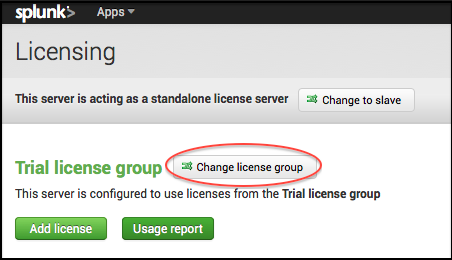
3. Select Free license and click Save.
4. You are prompted to restart.
Differences between *nix and Windows in Splunk operations
This topic clarifies the functional differences that you'll encounter between *nix and Windows operating systems, under the context in which they matter in Splunk operations. It does not delve into technical comparisons of - or advocacy for - either flavor of OS, but rather explains why you'll see things referenced one way or another on various OS-specific Splunk manual pages.
Paths
A major difference in the way that *nix operating systems handle files and directories is the type of slash used to separate files or directories in the pathname. *nix systems use the forward slash, ("/"). Windows, on the other hand, uses the backslash ("\").
An example of a *nix path:
/opt/splunk/bin/splunkd
An example of a Windows path:
C:\Program Files\Splunk\bin\splunkd.exe
Environment variables
Another area where the operating systems differ is in the representation of environment variables. Both systems have a way to temporarily store data in one or more environment variables. On *nix systems, this is shown by using the dollar sign ("$") in front of the environment variable name, like so:
# SPLUNK_HOME=/opt/splunk; export $SPLUNK_HOME
On Windows, it's a bit different - to specify an environment variable, you need to use the percent sign ("%"). Depending on the type of environment variable you are using, you may need to place one or two percent signs before the environment name, or on either side of the name.
> set SPLUNK_HOME="C:\Program Files\Splunk"
> echo %SPLUNK_HOME%
C:\Program Files\Splunk
>
To set the %SPLUNK_HOME% variable in the Windows environment, you can do one of two things:
- Edit
splunk-launch.confin %SPLUNK_HOME%\etc.
- Set the variable by accessing the "Environment Variables" window. Open an Explorer window, and on the left pane, right-click "My Computer", then select "Properties" from the window that appears. Once the System Properties window appears, select the "Advanced" tab, then click on the "Environment Variables" button that appears along the bottom window of the tab.
Ways you can configure Splunk
Splunk maintains its configuration information in a set of configuration files. You can configure Splunk by using any (or all!) of these methods:
- Use Splunk Web.
- Use Splunk's Command Line Interface (CLI) commands.
- Edit Splunk's configuration files directly.
- Use App setup screens that use the Splunk REST API to update configurations.
All of these methods change the contents of the underlying configuration files. You may find different methods handy in different situations.
Use Splunk Web
You can perform most common configuration tasks in Splunk Web. Splunk Web runs by default on port 8000 of the host on which it is installed:
- If you're running Splunk on your local machine, the URL to access Splunk Web is
http://localhost:8000. - If you're running Splunk on a remote machine, the URL to access Splunk Web is
http://<hostname>:8000, where<hostname>is the name of the machine Splunk is running on.
Administration menus can be found under Settings in the Splunk Web menu bar. Most tasks in the Splunk documentation set are described for Splunk Web. For more information about Splunk Web, see Meet Splunk Web.
Edit configuration files
Most of Splunk's configuration information is stored in .conf files. These files are located under your Splunk installation directory (usually referred to in the documentation as $SPLUNK_HOME) under /etc/system. In most cases you can copy these files to a local directory and make changes to these files with your preferred text editor.
Before you begin editing configuration files, read "About configuration files".
Use Splunk CLI
Many configuration options are available via the CLI. These options are documented in the CLI chapter in this manual. You can also get CLI help reference with the help command while Splunk is running:
./splunk help
For more information about the CLI, refer to "About the CLI" in this manual. If you are unfamiliar with CLI commands, or are working in a Windows environment, you should also check out Differences between *nix and Windows in Splunk operations.
Setup screens for an app
Developers can create setup screens for an app that allow users to set configurations for that app without editing the configuration files directly. Setup screens make it easier to distribute apps to different environments, or to customize an app for a particular usage.
Setup screens use Splunk's REST API to manage the app's configuration files.
For more information about setup screens, refer to "Configure a setup screen for your app" in the Developing Views and Apps for Splunk Web manual.
Managing a distributed environment
The Splunk deployment server provides centralized management and configuration for distributed environments. You can use it to deploy sets of configuration files or other content to groups of Splunk instances across the enterprise.
For information about managing deployments, refer to the "Updating Splunk Components" manual.
Get the most out of Splunk Enterprise on Windows
Deploy Splunk on Windows
You can integrate Splunk into your Windows environment in any number of ways. This topic discusses some of those scenarios and offers guidelines on how to best adapt your Splunk for Windows deployment to your enterprise.
While this topic is geared more toward deploying Splunk in a Windows environment, Splunk itself also has distributed deployment capabilities that you should be aware of, even as you integrate it into your Windows enterprise. The Distributed Deployment Manual has lots of information on spreading Splunk services across a number of computers.
When deploying Splunk on Windows on a large scale, you can rely completely on your own deployment utilities (such as System Center Configuration Manager or Tivoli/BigFix) to place both Splunk and its configurations on the machines in your enterprise. Or, you can integrate Splunk into system images and then deploy Splunk configurations and apps using Splunk's deployment server.
Concepts
When you deploy Splunk into your Windows network, it captures data from the machines and stores it centrally. Once the data is there, you can search and create reports and dashboards based on the indexed data. More importantly, for system administrators, Splunk can send alerts to let you know what is happening as the data arrives.
In a typical deployment, you dedicate some hardware to Splunk for indexing purposes, and then use a combination of universal forwarders and Windows Management Instrumentation (WMI) to collect data from other machines in the enterprise.
Considerations
Deploying Splunk in a Windows enterprise requires a number of planning steps.
First, you must inventory your enterprise, beginning at the physical network, and leading up to how the machines on that network are individually configured. This includes, but is not limited to:
- Counting the number of machines in your environment and defining a subset of those which need Splunk installed. Doing this defines the initial framework of your Splunk topology.
- Calculating your network bandwidth, both in your main site and at any remote or external sites. Doing this determines where you will install your main Splunk instance, and where and how you will use Splunk forwarders.
- Assessing the current health of your network, particularly in areas where networks are separated. Making sure your edge routers and switches are functioning properly will allow you to set a baseline for network performance both during and after the deployment.
Then, you must answer a number of questions prior to starting the deployment, including:
- What data on your machines needs indexing? What part of this data do you want to search, report, or alert across? This is probably the most important consideration to review. The answers to these questions determine how you address every other consideration. It determines where to install Splunk, and what types of Splunk you use in those installations. It also determines how much computing and network bandwidth Splunk will potentially use.
- How is the network laid out? How are any external site links configured? What security is present on those links? Fully understanding your network topology helps determine which machines you should install Splunk on, and what types of Splunk (indexers or forwarders) you should install on those machines from a networking standpoint.
A site with thin LAN or WAN links makes it necessary to consider how much Splunk data should be transferred between sites. For example, if you have a hub-and-spoke type of network, with a central site connected to branch sites, it might be a better idea to deploy forwarders on machines in the branch sites, which send data to an intermediate forwarder in each branch. Then, the intermediate forwarder would send data back to the central site. This is a less costly move than having all machines in a branch site forward their data to an indexer in the central site.
If you have external sites that have file, print or database services, you'll need to account for that traffic as well.
- How is your Active Directory (AD) configured? How are the operations masters roles on your domain controllers (DCs) defined? Are all domain controllers centrally located, or do you have controllers located in satellite sites? If your AD is distributed, are your bridgehead servers configured properly? Is your Inter-site Topology Generator (ISTG)-role server functioning correctly? If you are running Windows Server 2008 R2, do you have read-only domain controllers (RODCs) in your branch sites? If so, then you have to consider the impact of AD replication traffic as well as Splunk and other network traffic.
- What other roles are the servers in your network playing? Splunk indexers need resources to run at peak performance, and sharing servers with other resource-intensive applications or services (such as Microsoft Exchange, SQL Server and even Active Directory itself) can potentially lead to problems with Splunk on those machines. For additional information on sharing server resources with Splunk indexers, see "Introduction to capacity planning for Splunk Enterprise" in the Capacity Planning Manual.
- How will you communicate the deployment to your users? A Splunk installation means the environment is changing. Depending on how Splunk is rolled out, some machines will get new software installed. Users might incorrectly link these new installs to perceived problems or slowness on their individual machine. You should keep your user base informed of any changes to reduce the number of support calls related to the deployment.
Prepare your Splunk on Windows deployment
How you deploy Splunk into your existing environment depends on the needs you have for Splunk, balanced with the available computing resources you have, your physical and network layouts, and your corporate infrastructure. As there is no one specific way to deploy Splunk, there are no step-by-step instructions to follow. There are, however, some general guidelines to observe.
For a more successful Splunk deployment:
- Prepare your network. Before integrating Splunk into your environment:
- Make sure that your network is functioning properly, and that all switches, routers and cabling are correctly configured.
- Replace any broken or failing equipment.
- Ensure any virtual LANs (VLANs) are properly set up.
- Test network throughput, particularly between sites with thin network links.
- Prepare your Active Directory. While AD is not a requirement to run Splunk, it's a good idea to ensure that it is functioning properly prior to your deployment. This includes but is not limited to:
- Identifying all of your domain controllers, and the operations master roles any of them might perform. If you have RODCs at your branch sites, make sure that they have the fastest connections as possible to operations masters DCs.
- Ensuring that AD replication is functioning correctly, and that all site links have a DC with a copy of the global catalog.
- If your forest is divided into multiple sites, make sure your ISTG role server is functioning properly, or that you have assigned at least two bridgehead servers in your site (one primary, one backup).
- Ensuring that your DNS infrastructure is working properly.
You might need to place DCs on different subnets on your network, and seize flexible single master operations (FSMO, or operations master) roles as necessary to ensure peak AD operation and replication performance during the deployment.
- Define your Splunk deployment. Once your Windows network is properly prepared, you must now determine where Splunk will go in the network. Consider the following:
- Determine the set(s) of data that you want Splunk to index on each machine, and whether or not you need for Splunk to send alerts on any collected data.
- Dedicate one or more machines in each network segment to handle Splunk indexing, if possible. For additional information on capacity planning for a distributed Splunk deployment, review "Introduction to capacity planning for Splunk Enterprise" in the Capacity Planning Manual.
- Don't install full Splunk on machines that run resource-intensive services like AD (in particular, DCs that hold FSMO roles), any version of Exchange, SQL Server, or machine virtualization product such as Hyper-V or VMWare. Instead, use a universal forwarder, or connect to those machines using WMI.
- If you're running Windows Server 2008/2008 R2 Core, remember that you'll have no GUI available to make changes using Splunk Web when you install Splunk on those machines.
- Arrange your Splunk layout so that it uses minimal network resources, particularly across thin WAN links. Universal forwarders greatly reduce the amount of Splunk-related traffic sent over the wire.
- Communicate your deployment plans to your users. It's important to advise your users about the status of the deployment, throughout the course of it. This will significantly reduce the amount of support calls you receive later.
Optimize Splunk for peak performance
Like many services, Splunk on Windows needs proper maintenance in order to run at peak performance. This topic discusses the methods that you can apply to keep your Splunk on Windows deployment running properly, either during the course of the deployment, or after the deployment is complete.
To ensure peak Splunk performance:
- Designate one or more machines solely for Splunk operations. Splunk scales horizontally. This means that more physical computers dedicated to Splunk, rather than more resources in a single computer, translate into better performance. Where possible, split up your indexing and searching activities across a number of machines, and only run main Splunk services on those machines. With the exception of the universal forwarder performance is reduced when you run Splunk on servers that share other services.
- Dedicate fast disks for your Splunk indexes. The faster the available disks on a system are for Splunk indexing, the faster Splunk will run. Use disks with spindle speeds faster than 10,000 RPM when possible. When dedicating redundant storage for Splunk, use hardware-based RAID 1+0 (also known as RAID 10). It offers the best balance of speed and redundancy. Software-based RAID configurations through the Windows Disk Management utility are not recommended.
- Don't allow anti-virus programs to scan disks used for Splunk operations. When anti-virus file system drivers scan files for viruses on access, performance is significantly reduced, especially when Splunk internally ages data that has recently been indexed. If you must use anti-virus programs on the servers running Splunk, make sure that all Splunk directories and programs are excluded from on-access file scans.
- Use multiple indexes, where possible. Distribute the data that in indexed by Splunk into different indexes. Sending all data to the default index can cause I/O bottlenecks on your system. Where appropriate, configure your indexes so that they point to different physical volumes on your systems, when possible. For information on how to configure indexes, read "Configure your indexes" in this manual.
- Don't store your indexes on the same physical disk or partition as the operating system. The disk that holds your Windows OS directory (
%WINDIR%) or its swap file is not recommended for Splunk data storage. Put your Splunk indexes on other disks on your system.
For more information on how indexes are stored, including information on database bucket types and how Splunk stores and ages them, review "How Splunk stores indexes" in this manual.
- Don't store the hot and warm database buckets of your Splunk indexes on network volumes. Network latency will decrease performance significantly. Reserve fast, local disk for the hot and warm buckets of your Splunk indexes. You can specify network shares such as Distributed File System (DFS) volumes or Network File System (NFS) mounts for the cold and frozen buckets of the index, but note that searches that include data stored in the cold database buckets will be slower.
- Maintain disk availability, bandwidth and space on your Splunk indexers. Make sure that the disk volumes that hold Splunk's indexes maintain 20% or more free space at all times. Disk performance decreases proportionally to available space because disk seek times increase. This affects how fast Splunk indexes data, and can also determine how quickly search results, reports and alerts are returned. In a default Splunk installation, the drive(s) that contain your indexes must have at least 5000 megabytes (approximately 5 gigabytes) of free disk space, or indexing will pause.
Put Splunk onto system images
This topic explains the concepts of making Splunk a part of every Windows system image or installation process. It also guides you through the general process of integration, regardless of the imaging utilities that you use.
- For more specific information about getting Windows data into Splunk, review "About Windows data and Splunk" in the Getting Data In Manual.
- For information on distributed Splunk deployments, read "Distributed overview" in the Distributed Deployment Manual. This overview is essential reading for understanding how to set up Splunk deployments, irrespective of the operating system that you use. You can also read about Splunk's distributed deployment capabilities there.
- For information about planning larger Splunk deployments, read "Introduction to capacity planning for Splunk Enterprise" in the Capacity Planning Manual and "Deploying Splunk on Windows" in this manual.
Concepts for system integration on Windows
The main reason to integrate Splunk into Windows system images is to ensure that Splunk is available immediately when the machine is activated for use in the enterprise. This frees you from having to install and configure Splunk after activation.
In this scenario, when a Windows system is activated, it immediately launches Splunk after booting. Then, depending on the type of Splunk instance installed and the configuration given, Splunk either collects data from the machine and forwards it to an indexer (in many cases), or begins indexing data that is forwarded from other Windows machines.
System administrators can also configure Splunk instances to contact a deployment server, which allows for further configuration and update management.
In many typical environments, universal forwarders on Windows machines send data to a central indexer or group of indexers, which then allow that data to be searched, reported and alerted on, depending on your specific needs.
Considerations for system integration
Integrating Splunk into your Windows system images requires planning.
In most cases, the preferred Splunk component to integrate into a Windows system image is a universal forwarder. The universal forwarder is designed to share resources on computers that perform other roles, and does much of the work that an indexer can, at much less cost. You can also modify the forwarder's configuration using Splunk's deployment server or an enterprise-wide configuration manager with no need to use Splunk Web to make changes.
In some situations, you may want to integrate a full instance of Splunk into a system image. Where and when this is more appropriate depends on your specific needs and resource availability.
Splunk doesn't recommend that you include a full version of Splunk in an image for a server that performs any other type of role, unless you have specific need for the capability that an indexer has over a forwarder. Installing multiple indexers in an enterprise does not give you additional indexing power or speed, and can lead to undesirable results.
Before integrating Splunk into a system image, consider:
- the amount of data you want Splunk to index, and where you want Splunk to send that data, if applicable. This feeds directly into disk space calculations, and should be a top consideration.
- the type of Splunk instance to install on the image or machine. Universal forwarders have a significant advantage when installing on workstations or servers that perform other duties, but might not be appropriate in some cases.
- the available system resources on the imaged machine. How much disk space, RAM and CPU resources are available on each imaged system? Will it support a Splunk install?
- the resource requirements of your network. Splunk needs network resources, whether you're using it to connect to remote machines using WMI to collect data, or you're installing forwarders on each machine and sending that data to an indexer.
- the system requirements of other programs installed on the image. If Splunk is sharing resources with another server, it can take available resources from those other programs. Consider whether or not you should install other programs on a workstation or server that is running a full instance of Splunk. A universal forwarder will work better in cases like this, as it is designed to be lightweight.
- the role that the imaged machine plays in your environment. Will it be a workstation only running productivity applications like Office? Or will it be an operations master domain controller for your Active Directory forest?
Integrate Splunk into a System Image
Once you have determined the answers to the questions in the checklist above, the next step is to integrate Splunk into your system images. The steps listed are generic, allowing you to use your favorite system imaging or configuration tool to complete the task.
Choose one of the following options for system integration:
Integrate a universal forwarder onto a system image
This topic discusses the procedure to integrate a Splunk universal forwarder into a Windows system image. For additional information about integrating Splunk into images, see "Integrate Splunk into system images."
To integrate a universal forwarder into a system image:
1. Using a reference computer, install and configure Windows to your liking, including installing any needed Windows features, patches and other components.
2. Install and configure any necessary applications, taking into account Splunk's system and hardware capacity requirements.
3. Install and configure the universal forwarder from the command line, supplying at least the LAUNCHSPLUNK=0 command line flag.
Important: You must specify the LAUNCHSPLUNK=0 command line flag to prevent Splunk from running after the installation is completed..
4. Proceed through the graphical portion of the install, selecting the inputs, deployment servers, and/or forwarder destinations you need.
5. Once you have completed the install, open a command prompt.
6. From this prompt, edit any additional configuration files that are not configurable in the installer.
7. Close the command prompt window.
8. Ensure that the splunkd service is set to start automatically by setting its startup type to 'Automatic' in the Services Control Panel.
9. Prepare the system image for domain participation using a utility such as SYSPREP (for Windows XP and Windows Server 2003/2003 R2) and/or Windows System Image Manager (WSIM) (for Windows Vista, Windows 7, and Windows Server 2008/2008 R2).
Note: Microsoft recommends using SYSPREP and WSIM as the method to change machine Security Identifiers (SIDs) prior to cloning, as opposed to using third-party tools (such as Ghost Walker or NTSID.)
10. Once you have configured the system for imaging, reboot the machine and clone it with your favorite imaging utility.
The image is now ready for deployment.
Integrate full Splunk onto a system image
This topic discusses the procedure to integrate a full version of Splunk into a Windows system image. For additional information about integrating Splunk into images, see "Put Splunk onto system images" in this manual.
To integrate a full version of Splunk into a system image:
1. Using a reference computer, install and configure Windows to your liking, including installing any needed Windows features, patches and other components.
2. Install and configure any necessary applications, taking into account Splunk's system and hardware capacity requirements.
3. Install and configure Splunk.
Important: You can install using the GUI installer, but more options are available when installing the package from the command line.
4. Once you have configured Splunk inputs, open a command prompt.
5. From this prompt, stop Splunk by changing to the %SPLUNK_HOME%\bin directory and issuing a .\splunk stop
6. Clean any event data by issuing a .\splunk clean eventdata.
7. Close the command prompt window.
8. Ensure that the splunkd and splunkweb services are set to start automatically by setting their startup type to 'Automatic' in the Services Control Panel.
9. Prepare the system image for domain participation using a utility such as SYSPREP (for Windows XP and Windows Server 2003/2003 R2) and/or Windows System Image Manager (WSIM) (for Windows Vista, Windows 7, and Windows Server 2008/2008 R2).
Note: Microsoft recommends using SYSPREP and WSIM as the method to change machine Security Identifiers (SIDs) prior to cloning, as opposed to using third-party tools (such as Ghost Walker or NTSID.)
10. Once you have configured the system for imaging, reboot the machine and clone it with your favorite imaging utility.
The image is now ready for deployment.
Administer Splunk Enterprise with Splunk Web
Launch Splunk Web
Once Splunk is running, you can launch the Web Interface. To learn more about what you can do with Splunk Web, see "Meet Splunk Web"
To launch Splunk Web, navigate to:
http://mysplunkhost:<port>
Using whatever host and port you chose during installation.
The first time you log in to Splunk with an Enterprise license, the default login details are:
Username - admin
Password - changeme
Note: Splunk with a free license does not have access controls, so you will not be prompted for login information.
Note: Starting in Splunk version 4.1.4, you cannot access Splunk Free from a remote browser until you have edited $SPLUNK_HOME/etc/local/server.conf and set allowRemoteLogin to Always. If you are running Splunk Enterprise, remote login is disabled by default (set to requireSetPassword) for the admin user until you change the default password.
Meet Splunk Web
Splunk Web is Splunk's browser-based interface. Here's just a few of the things you can do in Splunk Web:
- Configure your data inputs
- Search data and report and visualize results
- Investigate problems
- Manage users natively or via LDAP strategies
- Troubleshoot Splunk deployments
- Manage clusters and peers
Refer to the system requirements for a list of supported operating systems and browsers.
Splunk Home
The first time you log into Splunk, you'll land in Splunk Home. All of your apps will appear on this page. Splunk Home include the Splunk Enterprise navigation bar, the Apps panel, the Explore Splunk Enterprise panel, and a custom default dashboard (not shown here).

Your account might also be configured to start in another view such as Search or Pivot in the Search & Reporting app.
You can return to Splunk Home from any other view by clicking the Splunk logo at the top left in Splunk Web.
Find
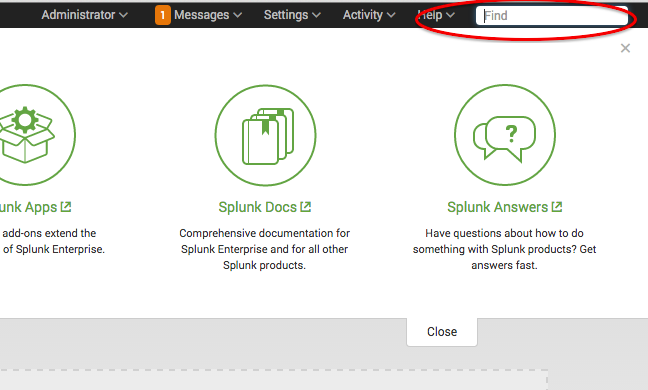
The Find field in the upper right corner lets you find all of your existing configurations and objects. For more information, see: Navigating Splunk Enterprise
Apps
The Apps panel lists the apps that are installed on your Splunk instance that you have permission to view. Select the app from the list to open it.
For an out-of-the-box Splunk Enterprise installation, you see one App in the workspace: Search & Reporting. When you have more than one app, you can drag and drop the apps within the workspace to rearrange them.
You can do two actions on this panel:
- Click the gear icon to view and manage the apps that are installed in your Splunk instance.
- Click the plus icon to browse for more apps to install.
Search and reporting
Search and reporting is a default App that allows you to search across and create reports for your data. For more information check out the following Splunk Enterprise manuals:
- Search Manual
- Search Tutorial
- Reporting Manual
The Explore Splunk Enterprise panel
The Explore Splunk Enterprise panel helps you get started with Splunk Enterprise. Click on the icons to:
- Add Data
- Browse for new Apps
- Read Splunk Enterprise Documentation
- Explore Splunk Answers
The home dashboard
Use the drop down menu to select a dashboard.
Splunk Web provides a convenient interface for managing most aspects of Splunk operations. Most of the functions can be accessed by clicking Settings in the menu. From here you can:
Manage your data
Under Settings > Data you can do the following:
- Data Inputs Lets you view a list of data types and configure them. To add an input, click the Add data button in the Data Inputs page. For more information about how to add data, see the Getting Data In manual.
- Forwarding and receiving lets you set up your forwarders and receivers. For more information about setting up forwarding and receiving, see the Forwarding Data manual.
- Indexes lets you add, disable, and enable indexes.
- Report acceleration summaries takes you to the searching and reporting app to lets you review your existing report summaries. For more information about creating report summaries, see the Knowledge Manager Manual.
Manage users and user authentication
By navigating to Settings > Users and Authentication > Access Control you can do the following:
- Create and manage users
- Define and assign roles
- Set up LDAP authentication strategies
For more information about working with users and authentication, see the Securing Splunk manual.
Work with Apps
To see your installed apps, select Apps in the menu bar.
From this page, you can select an app from a list of those you have already installed and are currently available to you. From here you can also access the following menu options:
- Find more Apps lets you search for and install additional apps.
- Manage Apps lets you manage your existing apps.
You can also access all of your apps in the Home page.
For more information about apps, see Developing views and apps for Splunk Web.
Manage aspects of your system
The options under Settings > System let you do the following:
- Server settings lets you manage Splunk settings like ports, host name, index paths, email server, and system logging and deployment client information. For more about configuring and managing distributed environments with Splunk Web, see the Updating Splunk Components manual.
- Server controls lets you restart Splunk.
- Licensing lets you manage and renew your Splunk licenses.
Splunk Enterprise default dashboards
Splunk Enterprise comes packaged with a set of useful dashboards. They help you to troubleshoot your system and searches and can also help you come up with ideas about how you might want to design dashboards and views of your own.
Activity dashboards
You can find the following dashboards by clicking Activity > System Activity in the user bar near the top of the page.
Note: These dashboards are visible only to users with Admin role permissions. See "Add and manage users" in Securing Splunk Enterprise. For information about setting up permissions for dashboards, see the Knowledge Manager manual.
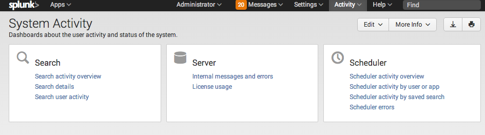
- Search activity - This dashboard collection provides at-a-glance info about search activity for your Splunk instance. You can find out when searches are running, the amount of load they're putting on the system, which searches are the most popular, which search views and dashboards are getting the most usage, and more. The following dashboards are provided:
- Search activity overview
- Search details
- Search user activity
- Server activity - This collection of dashboards provides metrics related to splunkd and Splunk Web performance and is handy for troubleshooting. You'll find the numbers of errors reported, lists of the most recent errors, lists of timestamping issues and unhandled exceptions, a chart displaying recent browser usage, and more. The following dashboards are provided:
- Internal messages and errors
- License usage
- Scheduler activity - This collection of dashboards gives you insight into the work of the search scheduler, which ensures that both ad hoc and scheduled searches are run in a timely manner.
- Scheduler activity overview
- Scheduler activity by user or app
- Scheduler activity by saved search
- Scheduler errors
The Summary Dashboard
The Summary dashboard is the first thing you see as you enter the Search & Reporting app. It provides a search bar and time range picker which you can use to input and run your initial search.
When you add an input to Splunk, that input gets added relative to the app you're in. Some apps, like the *nix and Windows apps, write input data to a specific index (in the case of *nix and Windows, that is the os index). If you review the summary dashboard and you don't see data that you're certain is in Splunk, be sure that you're looking at the right index.
You may want to add the index that an app uses to the list of default indexes for the role you're using. For more information about roles, refer to this topic about roles in Securing Splunk.For more information about Summary Dashboards, see the Search Tutorial.
Customize Splunk Web banner messages
| This page is currently a work in progress; expect frequent near-term updates. |
You can add and edit notifications that display at the top of a user's page when they log in. The notification also appears under the Messages menu in Splunk Web.
You need admin or system user level privileges to add or edit a notification.
To change or add a notification:
1. Select Settings> User Interface.
2. Click New to create a new message, or click Bulletin Messages and select the message you want to edit.
3. Edit the existing message text, or give your new message a name and message text.
4. Click Save. The message will appear as a yellow banner at the top of the page. It will also appear as a note in the Messages menu.
Use Splunk Web with a proxy server
When Splunk Web is located behind a proxy server, users may have trouble with Splunk Web links that access the Splunk website. For example, some Splunk Web pages link directly to the download site for Splunk apps and many "learn more" links will take you to the online documentation.
To resolve this, simply set the HTTP_PROXY environment variable. For permanent results, you can specify the setting in the splunk-launch.conf configuration file, located in $SPLUNK_HOME/etc/ on *nix systems and %SPLUNK_HOME%\etc\ on Windows.
Note: The App Manager is not supported for use with a proxy server, if you use a proxy server with Splunk Web, you must download and update apps manually.
In splunk-launch.conf, add this attribute/value pair:
HTTP_PROXY = <IP address or host name>:<port number>
For example:
HTTP_PROXY = 10.1.8.11:8787
Important: If your proxy server only handles HTTPS requests, you must use the following attribute/value pair:
HTTPS_PROXY = <IP address or host name>:<port number>
For example:
HTTPS_PROXY = 10.1.8.11:8888
Administer Splunk Enterprise with configuration files
About configuration files
Splunk's configuration information is stored in configuration files. These files are identified by their .conf extension and hold the information for different aspects of your Splunk configurations, including:
- System settings
- Authentication and authorization information
- Index mappings and setting
- Deployment and cluster configurations
- Knowledge objects and saved searches
For a full list of configuration files and an overview of the area each file covers, see List of configuration files in this manual.
Most of your configuration files come packaged with your Splunk installation and can be found in "$SPLUNK_HOME/etc/system/default/.
Using Splunk Web to manage configuration files
When you change your configuration in Splunk Web, that change is written to a copy of the configuration file for that setting. Splunk makes a copy of this configuration file (if it does not already exist), writes the change to that copy, and adds it to a directory under $SPLUNK_HOME/etc/.... The actual directory that the new file is added to depends on a number of factors, which are discussed in Configuration file directories. The most common directory is $SPLUNK_HOME/etc/local which will will use as our example below.
If you add a new index in Splunk Web, Splunk typically does the following:
1. Checks for a copy of the file.
2. If there is no copy, it creates a new copy of indexes.conf and adds it to a directory, such as $SPLUNK_HOME/etc/local.
3. Splunk writes the change to the copy of inputs.conf.
4. The default file is not changed, and is left alone in $SPLUNK_HOME/etc/system/default.
Editing the configuration file directly
While you can do a lot of configuration from Splunk Web, you can also choose to edit the configuration files directly for any setting. For some more advanced customizations that Splunk Web does not support, there is no Splunk Web access to that property and you must edit the configuration files directly.
Note: Editing configuration files requires more frequent restarts than making your changes in Splunk Web. For more information about restarting Splunk after editing a configuration file, see "When to restart Splunk after a configuration file change."
Editing .conf files directly requires care. Never edit a default configuration file directly. Instead, create a copy and place it in a different directory, the same way Splunk Web does.
It's important to keep the default file intact and in its original location. We'll talk more about this in "How to edit a configuration file."
Before changing any configuration files:
- Learn about how the default configuration files work, and where to put the copies that you edit. See "Configuration file directories."
- Learn about the structure of the stanzas that comprise configuration files and how the attributes you want to edit are set up. See "Configuration file structure."
- Learn how different copies of the same configuration files in different directories are layered and combined (so that you know the best place to put your copies). See "Configuration file precedence."
Once you are familiar with the configuration file content and directory structure, and understand how to leverage Splunk's configuration file precedence, check out "How to edit a configuration file" to learn how to safely modify your files.
Configuration file directories
A single Splunk instance typically has multiple versions of configuration files across several of directories. You can have configuration files with the same names in your default, local, and app directories. This creates a layering effect that allows Splunk to determine configuration priorities based on factors such as the current user and the current app.
To learn more about how configurations are prioritized by Splunk, see "Configuration file precedence".
Note: The most accurate list of settings available for a given configuration file is in the .spec file for that configuration file. You can find the latest version of the .spec and .example files in the "Configuration file reference", or in $SPLUNK_HOME/etc/system/README.
About the default files
"all these worlds are yours, except /default - attempt no editing there"
-- duckfez, 2010
The following is the configuration directory structure in $SPLUNK_HOME/etc:
$SPLUNK_HOME/etc/system/default
This contains the pre-configured configuration files. You should never modify the files in this directory. Instead, you should edit a copy of the file in your local or app directory:
- The default file can also be useful should your need to roll back any changes you make to your files.
- Splunk overwrites the default files each time you upgrade Splunk.
- Splunk always looks at the default directory last, so any attributes or stanzas that you change in one of the other configuration directories takes precedence over the default version.
Where you can place (or find) your modified configuration files
You can layer several versions of a configuration files, with different attribute values used by Splunk according to the layering scheme described in "Configuration file precedence".
Never edit files in their default directories. Instead, create and/or edit your files in one of the configuration directories, such as $SPLUNK_HOME/etc/system/local. These directories are not overwritten during upgrades.
For most deployments you can use the $SPLUNK_HOME/etc/system/local directory to make configuration changes. However, in certain situations you may want to work with the files in other directories. The following is the configuration directory structure in $SPLUNK_HOME/etc:
-
$SPLUNK_HOME/etc/system/local- Local changes on a site-wide basis go here; for example, settings you want to make available to all apps. If the configuration file you're looking for doesn't already exist in this directory, create it and give it write permissions.
-
$SPLUNK_HOME/etc/slave-apps/[_cluster|<app_name>]/[local|default]- For cluster peer nodes only.
- The subdirectories under
$SPLUNK_HOME/etc/slave-appscontain configuration files that are common across all peer nodes. - Do not change the content of these subdirectories on the cluster peer itself. Instead, use the cluster master to distribute any new or modified files to them.
- The
_clusterdirectory contains configuration files that are not part of real apps but that still need to be identical across all peers. A typical example is theindexes.conffile. - For more information, see "Update common peer configurations" in the Managing Indexers and Clusters manual.
-
$SPLUNK_HOME/etc/apps/<app_name>/[local|default]- If you're in an app when a configuration change is made, the setting goes into a configuration file in the app's
/localdirectory. For example, edits for search-time settings in the default Splunk search app go here:$SPLUNK_HOME/etc/apps/search/local/. - If you want to edit a configuration file so that the change only applies to a certain app, copy the file to the app's
/localdirectory (with write permissions) and make your changes there.
- If you're in an app when a configuration change is made, the setting goes into a configuration file in the app's
-
$SPLUNK_HOME/etc/users- User-specific configuration changes go here.
-
$SPLUNK_HOME/etc/system/README- This directory contains supporting reference documentation. For most configuration files, there are two reference files:
.specand.example; for example,inputs.conf.specandinputs.conf.example. The.specfile specifies the syntax, including a list of available attributes and variables. The.examplefile contains examples of real-world usage.
- This directory contains supporting reference documentation. For most configuration files, there are two reference files:
Configuration file structure
Before you edit configuration files, you should familiarize yourself with the structure of the files.
Stanzas
Configuration files consist of one or more stanzas, or sections. Each stanza begins with a stanza header in square brackets. This header identifies the settings held within that stanza. Each setting is an attribute value pair that specifies particular configuration settings.
For example, inputs.conf provides an [SSL] that includes settings for the server certificate and password (among other things):
[SSL]
serverCert = <pathname>
password = <password>
Depending on the stanza type, some of the attributes might be required, while others could be optional.
Setting up a new stanza
When you edit a configuration file, you might be changing the default stanza, like above, or you might need to add a brand-new stanza.
Here's the basic pattern:
[stanza1_header]
<attribute1> = <val1>
# comment
<attribute2> = <val2>
...
[stanza2_header]
<attribute1> = <val1>
<attribute2> = <val2>
...
Important: Attributes are case-sensitive. For example, sourcetype = my_app is not the same as SOURCETYPE = my_app. One will work; the other won't.
Stanza scope
Configuration files frequently have stanzas with varying scopes, with the more specific stanzas taking precedence. For example, consider this example of an outputs.conf configuration file, used to configure forwarders:
[tcpout]
indexAndForward=true
compressed=true
[tcpout:my_indexersA]
autoLB=true
compressed=false
server=mysplunk_indexer1:9997, mysplunk_indexer2:9997
[tcpout:my_indexersB]
autoLB=true
server=mysplunk_indexer3:9997, mysplunk_indexer4:9997
Note that this example file has two levels of stanzas:
- The global
[tcpout], with settings that affect all tcp forwarding. - Two
[tcpout:<target_list>]stanzas, whose settings affect only the indexers defined in each target group.
The setting for compressed in [tcpout:my_indexersA] overrides that attribute's setting in [tcpout], for the indexers in the my_indexersA target group only.
For more information on forwarders and outputs.conf, see "Configure forwarders with outputs.conf".
Configuration file precedence
For more information about configuration files, read "About configuration files".
Splunk uses configuration files to determine nearly every aspect of its behavior. A single Splunk instance can have many copies of the same configuration file. These file copies are usually layered in directories that affect either the users, an app, or the system as a whole.
When editing configuration files, it is important to understand how Splunk evaluates these files and which ones take precedence.
When incorporating changes, Splunk does the following to your configuration files:
- Splunk merges the settings from all copies of the file, using a location-based prioritization scheme.
- When different copies have conflicting attribute values (that is, when they set the same attribute to different values), Splunk uses the value from the file with the highest priority.
- Splunk determines the priority of configuration files by their location in its directory structure, according to whether the file is located in a system, app, or user directory, in that order. To determine priority among the collection of apps directories, Splunk uses ASCII sort order. Files in an apps directory named "A" have a higher priority than files in an apps directory named "B", and so on.
Note: Besides resolving configuration settings amongst multiple copies of a file, Splunk sometimes needs to resolve settings within a single file. For information on how Splunk determines precedence within a single props.conf file, see "Attribute precedence within a single props.conf file".
About configuration file context
How precedence is determined depends upon the context of the file.
App or user context versus global context
To determine priority among copies of a configuration file, Splunk first determines the directory scheme.
Splunk uses two main schemes of directory precedence.
- App or user: Some activities, like searching, take place in an app/user context. The app/user context is vital to search-time processing, where certain knowledge objects or actions might be valid only for specific users in specific apps.
- Global: Activities like indexing take place in a global context. They are independent of any app or user. For example, configuration files that determine monitoring behavior occur outside of the app/user context and are global in nature.
Cluster peer configuration context
There's also an expanded precedence order for cluster peer node global configurations. This is because some configuration files, like indexes.conf, must be identical across peer nodes.
To keep them consistent, files are managed from the cluster master, which distributes them to the peer nodes so that all peer nodes contain the same versions of the files. These files have the highest precedence in a cluster peer's configuration, which is explained in the next section.
For more information about how configurations are distributed across peer nodes, see "Update common peer configurations" in the Managing Indexers and Clusters manual.
How Splunk determines precedence order
This subsection provides a conceptual understanding of precedence order and context. For ordered listings by directory name, see "Summary of directory order precedence", later in this topic.
Precedence order within global context:
When the context is global (that is, where there's no app/user context), directory priority descends in this order:
1. System local directory -- highest priority
2. App local directories
3. App default directories
4. System default directory -- lowest priority
When consuming a global configuration, such as inputs.conf, Splunk first uses the attributes from any copy of the file in system/local. Then it looks for any copies of the file located in the app directories, adding any attributes found in them, but ignoring attributes already discovered in system/local. As a last resort, for any attributes not explicitly assigned at either the system or app level, it assigns default values from the file in the system/default directory.
Note: As the next section describes, cluster peer nodes have an expanded order of precedence.
Precedence for cluster peer nodes
For cluster peer nodes, the global context considers some additional peer-specific ("slave-app") directories. These directories contain apps and configurations that are identical across all peer nodes. Here is the expanded precedence order for cluster peers:
1. Slave-app local directories (cluster peers only) -- highest priority
2. System local directory
3. App local directories
4. Slave-app default directories (cluster peers only)
5. App default directories
6. System default directory -- lowest priority
With cluster peers, custom settings common to all the peers (those in the slave-app local directories) have the highest precedence.
Precedence order within app or user context
When there's an app/user context, directory priority descends from user to app to system:
1. User directories for current user -- highest priority
2. App directories for currently running app (local, followed by default)
3. App directories for all other apps (local, followed by default) -- for exported settings only
4. System directories (local, followed by default) -- lowest priority
An attribute in savedsearches.conf, for example, might be set at all three levels: the user, the app, and the system. Splunk will always use the value of the user-level attribute, if any, in preference to a value for that same attribute set at the app or system level.
How app directory names affect precedence
Note: For most practical purposes, the information in this subsection probably won't matter, but it might prove useful if you need to force a certain order of evaluation or for troubleshooting.
To determine priority among the collection of apps directories, Splunk uses ASCII sort order. Files in an apps directory named "A" have a higher priority than files in an apps directory named "B", and so on. Also, all apps starting with an uppercase letter have precedence over any apps starting with a lowercase letter, due to ASCII sort order. ("A" has precedence over "Z", but "Z" has precedence over "a", for example.)
In addition, numbered directories have a higher priority than alphabetical directories and are evaluated in lexicographic, not numerical, order. For example, in descending order of precedence:
$SPLUNK_HOME/etc/apps/myapp1
$SPLUNK_HOME/etc/apps/myapp10
$SPLUNK_HOME/etc/apps/myapp2
$SPLUNK_HOME/etc/apps/myapp20
...
$SPLUNK_HOME/etc/apps/myappApple
$SPLUNK_HOME/etc/apps/myappBanana
$SPLUNK_HOME/etc/apps/myappZabaglione
...
$SPLUNK_HOME/etc/apps/myappapple
$SPLUNK_HOME/etc/apps/myappbanana
$SPLUNK_HOME/etc/apps/myappzabaglione
...
Note: When determining precedence in the app/user context, directories for the currently running app take priority over those for all other apps, independent of how they're named. Furthermore, other apps are only examined for exported settings.
Summary of directory precedence
Putting this all together, the order of directory priority, from highest to lowest, goes like this:
Global context:
$SPLUNK_HOME/etc/system/local/*
$SPLUNK_HOME/etc/apps/A/local/* ... $SPLUNK_HOME/etc/apps/z/local/*
$SPLUNK_HOME/etc/apps/A/default/* ... $SPLUNK_HOME/etc/apps/z/default/*
$SPLUNK_HOME/etc/system/default/*
Global context - cluster peer nodes only:
$SPLUNK_HOME/etc/slave-apps/A/local/* ... $SPLUNK_HOME/etc/slave-apps/z/local/*
$SPLUNK_HOME/etc/system/local/*
$SPLUNK_HOME/etc/apps/A/local/* ... $SPLUNK_HOME/etc/apps/z/local/*
$SPLUNK_HOME/etc/slave-apps/A/default/* ... $SPLUNK_HOME/etc/slave-apps/z/default/*
$SPLUNK_HOME/etc/apps/A/default/* ... $SPLUNK_HOME/etc/apps/z/default/*
$SPLUNK_HOME/etc/system/default/*
Important: Within the slave-apps/[local|default] directories, the special _cluster subdirectory has a higher precedence than any app subdirectories starting with a lowercase letter (for example, anApp). However, it has a lower precedence than any apps starting with an uppercase letter (for example, AnApp). This is due to the location of the underscore ("_") character in the ASCII sort order.
App/user context:
$SPLUNK_HOME/etc/users/*
$SPLUNK_HOME/etc/apps/Current_running_app/local/*
$SPLUNK_HOME/etc/apps/Current_running_app/default/*
$SPLUNK_HOME/etc/apps/A/local/*, $SPLUNK_HOME/etc/apps/A/default/*, ... $SPLUNK_HOME/etc/apps/z/local/*, $SPLUNK_HOME/etc/apps/z/default/* (but see note below)
$SPLUNK_HOME/etc/system/local/*
$SPLUNK_HOME/etc/system/default/*
Important: In the app/user context, all configuration files for the currently running app take priority over files from all other apps. This is true for the app's local and default directories. So, if the current context is app C, Splunk evaluates both $SPLUNK_HOME/etc/apps/C/local/* and $SPLUNK_HOME/etc/apps/C/default/* before evaluating the local or default directories for any other apps. Furthermore, Splunk only looks at configuration data for other apps if that data has been exported globally through the app's default.meta file, as described in this topic on setting app permissions.
Also, note that /etc/users/ is evaluated only when the particular user logs in or performs a search.
Example of how attribute precedence works
This example of attribute precedence uses props.conf. The props.conf file is unusual, because its context can be either global or app/user, depending on when Splunk is evaluating it. Splunk evaluates props.conf at both index time (global) and search time (apps/user).
Assume $SPLUNK_HOME/etc/system/local/props.conf contains this stanza:
[source::/opt/Locke/Logs/error*]
sourcetype = fatal-error
and $SPLUNK_HOME/etc/apps/t2rss/local/props.conf contains another version of the same stanza:
[source::/opt/Locke/Logs/error*]
sourcetype = t2rss-error
SHOULD_LINEMERGE = True
BREAK_ONLY_BEFORE_DATE = True
The line merging attribute assignments in t2rss always apply, as they only occur in that version of the file. However, there's a conflict with the sourcetype attribute. In the /system/local version, the sourcetype has a value of "fatal-error". In the /apps/t2rss/local version, it has a value of "t2rss-error".
Since this is a sourcetype assignment, which gets applied at index time, Splunk uses the global context for determining directory precedence. In the global context, Splunk gives highest priority to attribute assignments in system/local. Thus, the sourcetype attribute gets assigned a value of "fatal-error".
The final, internally merged version of the file looks like this:
[source::/opt/Locke/Logs/error*]
sourcetype = fatal-error
SHOULD_LINEMERGE = True
BREAK_ONLY_BEFORE_DATE = True
List of configuration files and their context
As mentioned, Splunk decides how to evaluate a configuration file based on the context that the file operates within, global or app/user. Generally speaking, files that affect data input, indexing, or deployment activities are global; files that affect search activities usually have a app/user context.
The props.conf and transforms.conf files can be evaluated in either a app/user or a global context, depending on whether Splunk is using them at index or search time.
Global configuration files
admon.conf
authentication.conf
authorize.conf
crawl.conf
deploymentclient.conf
distsearch.conf
indexes.conf
inputs.conf
outputs.conf
pdf_server.conf
procmonfilters.conf
props.conf -- global and app/user context
pubsub.conf
regmonfilters.conf
report_server.conf
restmap.conf
searchbnf.conf
segmenters.conf
server.conf
serverclass.conf
serverclass.seed.xml.conf
source-classifier.conf
sourcetypes.conf
sysmon.conf
tenants.conf
transforms.conf -- global and app/user context
user-seed.conf -- special case: Must be located in /system/default
web.conf
wmi.conf
App/user configuration files
alert_actions.conf
app.conf
audit.conf
commands.conf
eventdiscoverer.conf
event_renderers.conf
eventtypes.conf
fields.conf
limits.conf
literals.conf
macros.conf
multikv.conf
props.conf -- global and app/user context
savedsearches.conf
tags.conf
times.conf
transactiontypes.conf
transforms.conf -- global and app/user context
user-prefs.conf
workflow_actions.conf
Troubleshooting configuration precedence and other issues
Splunk's configuration file system supports many overlapping configuration files in many different locations. The price of this level of flexibility is that figuring out which value for which configuration option is being used in your Splunk installation can sometimes be quite complex. If you're looking for some tips on figuring out what configuration setting is being used in a given situation, read "Use btool to troubleshoot configurations" in the Troubleshooting Manual.
Attribute precedence within a single props.conf file
In addition to understanding how attribute precedence works across files, you also sometimes need to consider attribute priority within a single props.conf file.
Precedence within sets of stanzas affecting the same target
When two or more stanzas specify a behavior that affects the same item, items are evaluated by the stanzas' ASCII order. For example, assume you specify in props.conf the following stanzas:
[source::.../bar/baz]
attr = val1
[source::.../bar/*]
attr = val2
The second stanza's value for attr will be used, because its path is higher in the ASCII order and takes precedence.
Overriding default attribute priority in props.conf
There's a way to override the default ASCII priority in props.conf. Use the priority key to specify a higher or lower priority for a given stanza.
For example, suppose we have a source:
source::az
and the following patterns:
[source::...a...]
sourcetype = a
[source::...z...]
sourcetype = z
In this case, the default behavior is that the settings provided by the pattern "source::...a..." take precedence over those provided by "source::...z...". Thus, sourcetype will have the value "a".
To override this default ASCII ordering, use the priority key:
[source::...a...]
sourcetype = a
priority = 5
[source::...z...]
sourcetype = z
priority = 10
Assigning a higher priority to the second stanza causes sourcetype to have the value "z".
There's another attribute precedence issue to consider. By default, stanzas that match a string literally ("literal-matching stanzas") take precedence over regex pattern-matching stanzas. This is due to the default values of their priority keys:
- 0 is the default for pattern-matching stanzas
- 100 is the default for literal-matching stanzas
So, literal-matching stanzas will always take precedence over pattern-matching stanzas, unless you change that behavior by explicitly setting their priority keys.
You can use the priority key to resolve collisions between patterns of the same type, such as sourcetype patterns or host patterns. The priority key does not, however, affect precedence across spec types. For example, source patterns take priority over host and sourcetype patterns, regardless of priority key values.
Precedence for events with multiple attribute assignments
The props.conf file sets attributes for processing individual events by host, source, or sourcetype (and sometimes event type). So it's possible for one event to have the same attribute set differently for the default fields: host, source or sourcetype. The precedence order is:
- source
- host
- sourcetype
You might want to override the default props.conf settings. For example, assume you are tailing mylogfile.xml, which by default is labeled sourcetype = xml_file. This configuration will re-index the entire file whenever it changes, even if you manually specify another sourcetype, because the property is set by source. To override this, add the explicit configuration by source:
[source::/var/log/mylogfile.xml]
CHECK_METHOD = endpoint_md5
How to copy and edit a configuration file
Before you edit a configuration file, make sure you are familiar with the following:
- To learn about the default configuration files, where they live, and where to put the ones you edit, see "Configuration file directories."
- To learn about file structure and how the attributes you want to edit are set up, see "Configuration file structure."
- To learn how configuration files across multiple directories are layers and combines, see "Configuration file precedence."
Copy the default file
When you decide to customize an attribute in a file, you create a copy of the file in your preferred directory, such as $SPLUNK_HOME/etc/system/local. Do not copy the entire contents of the default configuration file, only copy the attribute(s) you want to customize. This is to ensure that any Splunk updates to default values are properly distributed.
Note: Make sure that when you copy your file to the local directory, you give it "write" permissions.
For example, suppose that you want to use a self-signed SSL certificate, and you need to redirect the path to the new certificate in server.conf. You copy the <SSL> stanza into your new copy of server.conf as well as a few other stanzas, and edit only the SSL stanza, leaving the other stanzas at their default value.
In a later release, Splunk changes one of the default port settings in server.conf, which is one of the stanzas you copied but did not edit.
The next time you upgrade Splunk, the new version of server.conf with the attribute values overwrites the version of server.conf in the default directory. However, because Splunk gives precedence to the configuration settings of the version in the local directory, the new port written to the default directory is not applied.
Note: Some configuration files do not have default versions. These configuration files still have .spec and .example files you use for creating copies.
Clearing attributes
You can clear any attribute by setting it to null. For example:
forwardedindex.0.whitelist =
This overrides any previous value that the attribute held, including any value set in its default file, causing the system to consider the value entirely unset.
Using comments
You can insert comments in configuration files. To do so, use the # sign:
# This stanza forwards some log files.
[monitor:///var/log]
Important: Start the comment at the left margin. Do not put the comment on the same line as the stanza or attribute:
[monitor:///var/log] # This is a really bad place to put your comment.
For an attribute, such as
a_setting = 5 #5 is the best number
This sets the a_setting attribute to the value "5 #5 is the best number", which may cause unexpected results.
Creating and editing configuration files on non-UTF-8 operating systems
Splunk expects configuration files to be in ASCII/UTF-8. If you are editing or creating a configuration file on an operating system that is non-UTF-8, you must ensure that the editor you are using is configured to save in ASCII/UTF-8.
When to restart Splunk after a configuration file change
| This page is currently a work in progress; expect frequent near-term updates. |
When you make changes to Splunk via the configuration files, you might need to restart Splunk to see those changes picked up by the system.
Note: Changes made in Splunk Web are less likely to require restarts. This is because Splunk Web automatically updates the underlying configuration file(s) and notifies the running Splunk instance (splunkd) of the changes.
This topic provides guidelines to help you determine whether to restart after a change. Whether a change requires a restart depends on a number of factors, and this topic does not provide a definitive authority. Always check the configuration file or its reference topic to see whether a particular change requires a restart. For a full list of configuration files and an overview of the area each file covers, see List of configuration files in this manual.
When to restart forwarders
If you make a configuration file change to a heavy forwarder, you must restart the forwarder, but you do not need to restart the receiving indexer. If the changes are part of a deployed app already configured to restart after changes, then the forwarder restarts automatically.
When to restart Splunk Web
You must restart Splunk Web to enable or disable SSL for Splunk Web access.
When to restart Splunkd
As a general rule, anything that modifies:
- Settings and properties that affect indexers and indexing behavior
- Settings and properties that affect users and roles.
- Settings and properties that affect Splunk's core configuration.
Index changes
Note: When settings which affect indexing are made through the UI and CLI they do not require restarts and take place immediately.
- Index time field extractions
- Time stamp properties
User and role changes
Any user and role changes made in configuration files require a restart, including:
- LDAP configurations (If you make these changes in Splunk Web you can reload the changes without restarting.)
- Password changes
- Changes to role capabilities
- Splunk Native authentication changes, such as user-to-role mappings.
System changes
Things which affect the system settings or server state require restart.
- Licensing changes
- Web server configuration updates
- Changes to general indexer settings (minimum free disk space, default server name, etc.)
- Changes to General Settings (eg., port settings)
- Changing a forwarder's output settings
- Changing the timezone in the OS of a splunk server (Splunk retrieves its local timezone from the underlying OS at startup)
- Creating a pool of search heads
- Installing some apps may require a restart. Consult the documentation for each app you are installing.
- Props and transforms that do not hit the following endpoints:
- /configs/conf-props/_reload
- /configs/conf-transforms/_reload
- /admin/transforms-reload
Splunk changes that do not require a restart
Settings which apply to search-time processing take effect immediately and do not require a restart. This is because searches run in a separate process that reloads configurations. For example, lookup tables, tags and event types are re-read for each search.
This includes (but is not limited to) changes to:
- Lookup tables
- Field extractions
- Knowledge objects
- Tags
- Event types
- Props and transforms that hit the following endpoints:
- /configs/conf-props/_reload
- /configs/conf-transforms/_reload
- /admin/transforms-reload
Files that contain search-time operations include (but are not limited to):
macros.confprops.confChanges to search-time field extractions are re-read at search timetransforms.confsavedsearches.conf(If a change creates an endpoint you must restart.)
Learn More:
- When and how to restart clusters
- Update peer configurations
List of configuration files
The following is a list of the available spec and example files associated with each conf file. Some conf files do not have spec or example files; contact Support before editing a conf file that does not have an accompanying spec or example file.
Important: Do not edit the default copy of any conf file in $SPLUNK_HOME/etc/system/default/. Make a copy of the file in $SPLUNK_HOME/etc/system/local/ or $SPLUNK_HOME/etc/apps/<app_name>/local and edit that copy.
| File | Purpose |
| alert_actions.conf | Create an alert. |
| app.conf | Configure your custom app. |
| audit.conf | Configure auditing and event hashing. This feature is not available for this release. |
| authentication.conf | Toggle between Splunk's built-in authentication or LDAP, and configure LDAP. |
| authorize.conf | Configure roles, including granular access controls. |
| commands.conf | Connect search commands to any custom search script. |
| crawl.conf | Configure crawl to find new data sources. |
| default.meta.conf | A template file for use in creating app-specific default.meta files. |
| deploymentclient.conf | Specify behavior for clients of the deployment server. |
| distsearch.conf | Specify behavior for distributed search. |
| eventdiscoverer.conf | Set terms to ignore for typelearner (event discovery). |
| event_renderers.conf | Configure event-rendering properties. |
| eventtypes.conf | Create event type definitions. |
| fields.conf | Create multivalue fields and add search capability for indexed fields. |
| indexes.conf | Manage and configure index settings. |
| inputs.conf | Set up data inputs. |
| instance.cfg.conf | Designate and manage settings for specific instances of Splunk. This can be handy, for example, when identifying forwarders for internal searches. |
| limits.conf | Set various limits (such as maximum result size or concurrent real-time searches) for search commands. |
| literals.conf | Customize the text, such as search error strings, displayed in Splunk Web. |
| macros.conf | Create and use search macros. |
| multikv.conf | Configure extraction rules for table-like events (ps, netstat, ls). |
| outputs.conf | Set up forwarding behavior. |
| pdf_server.conf | Configure the Splunk PDF Server. The PDF Server app was deprecated in Splunk Enterprise 6.0. The feature was removed in Splunk Enterprise 6.2. |
| procmon-filters.conf | Monitor Windows process data. |
| props.conf | Set indexing property configurations, including timezone offset, custom source type rules, and pattern collision priorities. Also, map transforms to event properties. |
| pubsub.conf | Define a custom client of the deployment server. |
| restmap.conf | Create custom REST endpoints. |
| savedsearches.conf | Define ordinary reports, scheduled reports, and alerts. |
| searchbnf.conf | Configure the search assistant. |
| segmenters.conf | Configure segmentation. |
| server.conf | Enable SSL for Splunk's back-end (communications between Splunkd and Splunk Web) and specify certification locations. |
| serverclass.conf | Define deployment server classes for use with deployment server. |
| serverclass.seed.xml.conf | Configure how to seed a deployment client with apps at start-up time. |
| source-classifier.conf | Terms to ignore (such as sensitive data) when creating a source type. |
| sourcetypes.conf | Machine-generated file that stores source type learning rules. |
| tags.conf | Configure tags for fields. |
| tenants.conf | Configure deployments in multi-tenant environments (deprecated). |
| times.conf | Define custom time ranges for use in the Search app. |
| transactiontypes.conf | Add additional transaction types for transaction search. |
| transforms.conf | Configure regex transformations to perform on data inputs. Use in tandem with props.conf. |
| user-seed.conf | Set a default user and password. |
| viewstates.conf | Use this file to set up IU views (such as charts) in Splunk. |
| web.conf | Configure Splunk Web, enable HTTPS. |
| wmi.conf | Set up Windows management instrumentation (WMI) inputs. |
| workflow_actions.conf | Configure workflow actions. |
Configuration parameters and the data pipeline
Data goes through several phases as it transitions from raw input to searchable events. This process is called the data pipeline and consists of four phases:
- Input
- Parsing
- Indexing
- Search
Each phase of the data pipeline relies on different configuration file parameters. Knowing which phase uses a particular parameter allows you to identify where in your Splunk deployment topology you need to set the parameter.
What the data pipeline looks like
This diagram outlines the data pipeline:

The Distributed Deployment manual describes the data pipeline in detail, in "How data moves through Splunk: the data pipeline".
How Splunk Enterprise components correlate to phases of the pipeline
One or more Splunk Enterprise components can perform each of the pipeline phases. For example, a universal forwarder, a heavy forwarder, or an indexer can perform the input phase.
Data only goes through each phase once, so each configuration belongs on only one component, specifically, the first component in the deployment that handles that phase. For example, say you have data entering the system through a set of universal forwarders, which forward the data to an intermediate heavy forwarder, which then forwards the data onwards to an indexer. In that case, the input phase for that data occurs on the universal forwarders, and the parsing phase occurs on the heavy forwarder.
| Data pipeline phase | Components that can perform this role |
|---|---|
| Input | indexer universal forwarder heavy forwarder |
| Parsing | indexer heavy forwarder light/universal forwarder (in conjunction with the INDEXED_EXTRACTIONS attribute only)
|
| Indexing | indexer |
| Search | indexer search head |
Where to set a configuration parameter depends on the components in your specific deployment. For example, you set parsing parameters on the indexers in most cases. But if you have heavy forwarders feeding data to the indexers, you instead set parsing parameters on the heavy forwarders. Similarly, you set search parameters on the search heads, if any. But if you aren't deploying dedicated search heads, you set the search parameters on the indexers.
For more information, see "Components and roles" in the Distributed Deployment Manual.
How configuration parameters correlate to phases of the pipeline
This is a non-exhaustive list of configuration parameters and the pipeline phases that use them. By combining this information with an understanding of which Splunk component in your particular deployment performs each phase, you can determine where to configure each setting.
For example, if you are using universal forwarders to consume inputs, you need to configure inputs.conf parameters on the forwarders. If, however, your indexer is directly consuming network inputs, you need to configure those network-related inputs.conf parameters on the indexer.
Input phase
- inputs.conf
- props.conf
- CHARSET
- NO_BINARY_CHECK
- CHECK_METHOD
- sourcetype
- wmi.conf
- regmon-filters.conf
Parsing phase
- props.conf
- LINE_BREAKER, SHOULD_LINEMERGE, BREAK_ONLY_BEFORE_DATE, and all other line merging settings
- TZ, DATETIME_CONFIG, TIME_FORMAT, TIME_PREFIX, and all other time extraction settings and rules
- TRANSFORMS* which includes per-event queue filtering, per-event index assignment, per-event routing. Applied in the order defined
- SEDCMD*
- MORE_THAN*, LESS_THAN*
- INDEXED_EXTRACTIONS
- transforms.conf
- stanzas referenced by a TRANSFORMS* clause in props.conf
- LOOKAHEAD, DEST_KEY, WRITE_META, DEFAULT_VALUE, REPEAT_MATCH
- datetime.xml
Indexing phase
- props.conf
- SEGMENTATION*
- indexes.conf
- segmenters.conf
Search phase
- props.conf
- EXTRACT*
- REPORT*
- LOOKUP*
- KV_MODE
- FIELDALIAS*
- rename
- transforms.conf
- stanzas referenced by a REPORT* clause in props.conf
- filename, external_cmd, and all other lookup-related settings
- FIELDS, DELIMS
- MV_ADD
- lookup files in the lookups folders
- search and lookup scripts in the bin folders
- search commands and lookup scripts
- savedsearches.conf
- eventtypes.conf
- tags.conf
- commands.conf
- alert_actions.conf
- macros.conf
- fields.conf
- transactiontypes.conf
- multikv.conf
Other configuration settings
There are some settings that don't work well in a distributed Splunk environment. These tend to be exceptional and include:
- props.conf
- CHECK_FOR_HEADER, LEARN_MODEL, maxDist. These are created in the parsing phase, but they require generated configurations to be moved to the search phase configuration location.
Back up configuration information
All Splunk's configuration information is contained in configuration files. To back up the set of configuration files, make an archive or copy of $SPLUNK_HOME/etc/. This directory, along with its subdirectories, contains all the default and custom settings for your Splunk install, and all apps, including saved searches, user accounts, tags, custom source type names, and other configuration information.
Copy this directory to a new Splunk instance to restore. You don't have to stop Splunk to do this.
For more information about configuration files, read "About configuration files".
Back up the cluster master node
If you're using index replication, you can back up the master node's static configuration. This is of particular use when configuring a stand-by master that can take over if the primary master fails. For details, see "Configure the master" in the Managing Indexers and Clusters manual.
Administer Splunk Enterprise with the command line interface (CLI)
About the CLI
You can use the Splunk Enterprise command line interface (CLI) to monitor, configure, and execute searches on your Splunk server. The CLI help exists in the product and is accessible through a terminal or shell interface. This topic discusses how to access this information and what commands are available.
How to access the CLI
The CLI is located in $SPLUNK_HOME/bin/splunk.
To access Splunk CLI, you need either:
- Shell access to a Splunk server, or
- Permission to access the correct port on a remote Splunk server.
If you have administrator or root privileges, you can simplify CLI access by adding the top level directory of your Splunk installation, $SPLUNK_HOME/bin , to your shell path.
This example works for Linux/BSD/Solaris users who installed Splunk in the default location:
# export SPLUNK_HOME=/opt/splunk
# export PATH=$SPLUNK_HOME/bin:$PATH
This example works for Mac users who installed splunk in the default location:
# export SPLUNK_HOME=/Applications/Splunk
# export PATH=$SPLUNK_HOME/bin:$PATH
Now you can invoke CLI commands using:
./splunk <command>
To set the $SPLUNK_HOME environment variable while working in a CLI session:
- In *nix:
source /opt/splunk/bin/setSplunkEnv
- In Windows:
splunk.exe envvars > setSplunkEnv.bat & setSplunkEnv.bat
CLI help documentation
If you have administrator privileges, you can use the CLI not only to search but also to configure and monitor your Splunk server (or servers). The CLI commands used for configuring and monitoring Splunk are not search commands. Search commands are arguments to the search and dispatch CLI commands. Some commands require you to authenticate with a username and password or specify a target Splunk server.
You can look up help information for the CLI using:
./splunk help
For more information about how to access help for specific CLI commands or tasks, see "Get help with the CLI" and "Administrative CLI commands" in this manual.
Note for Mac users
Mac OS X requires you to have superuser level access to run any command that accesses system files or directories. Run CLI commands using sudo or "su -" for a new shell as root. The recommended method is to use sudo. (By default the user "root" is not enabled but any administrator user can use sudo.)
Working with the CLI on Windows
To access and use CLI commands on Windows, run cmd.exe as administrator first. Also, If you're using Windows, Splunk does not require the "./" to run CLI commands.
Answers
Have questions? Visit Splunk Answers and see what questions and answers the Splunk community has around using the CLI.
Get help with the CLI
This topic discusses how to access Splunk's built-in CLI help reference, which contains information about the CLI commands and how to use them. This topic also briefly discusses the universal parameters, which are parameters that you can use with any CLI command.
Access CLI help reference
If you need to find a CLI command or syntax for a CLI command, use Splunk's built-in CLI help reference.
To start, you can access the default help information with the help command:
./splunk help
This will return a list of objects to help you access more specific CLI help topics, such as administrative commands, clustering, forwarding, licensing, searching, etc.
Universal parameters
Some commands require that you authenticate with a username and password, or specify a target host or app. For these commands you can include one of the universal parameters: auth, app, or uri.
./splunk [command] [object] [-parameter <value> | <value>]... [-app] [-owner] [-uri] [-auth]
| Parameter | Description |
|---|---|
| app | Specify the App or namespace to run the command; for search, defaults to the Search App. |
| auth | Specify login credentials to execute commands that require you to be logged in. |
| owner | Specify the owner/user context associated with an object; if not specified, defaults to the currently logged in user. |
| uri | Excute a command on any specified (remote) Splunk server. |
app
In the CLI, app is an object for many commands, such as create app or enable app. But, it is also a parameter that you can add to a CLI command if you want to run that command on a specific app.
Syntax:
./splunk command object [-parameter value]... -app appname
For example, when you run a search in the CLI, it defaults to the Search app. If want to run the search in another app:
./splunk search "eventype=error | stats count by source" -deatach f -preview t -app unix
auth
If a CLI command requires authentication, Splunk will prompt you to supply the username and password. You can also use the -auth flag to pass this information inline with the command. The auth parameter is also useful if you need to run a command that requires different permissions to execute than the currently logged-in user has.
Note: auth must be the last parameter specified in a CLI command argument.
Syntax:
./splunk command object [-parameter value]... -auth username:password
uri
If you want to run a command on a remote Splunk server, use the -uri flag to specify the target host.
Syntax:
./splunk command object [-parameter value]... -uri specified-server
Specify the target Splunk server with the following format:
[http|https]://name_of_server:management_port
You can specify an IP address for the name_of_server. Both IPv4 and IPv6 formats are supported; for example, the specified-server may read as: 127.0.0.1:80 or "[2001:db8::1]:80". By default, splunkd listens on IPv4 only. To enable IPv6 support, refer to the instructions in "Configure Splunk for IPv6".
Example:
The following example returns search results from the remote "splunkserver" on port 8089.
./splunk search "host=fflanda error 404 *.gif" -auth admin -uri https://splunkserver:8089
For more information about the CLI commands you can run on a remote server, see the next topic in this chapter.
Useful help topics
When you run the default Splunk CLI help, you will see these objects listed.
Administrative CLI commands
You can use the CLI for administrative functions such as adding or editing inputs, updating configuration settings, and searching. If you want to see the list of administrative CLI commands type in:
./splunk help commands
These commands are discussed in more detail in "Administrative CLI commands", the next topic in this manual.
CLI help for clustering
Index replication, which is also referred to as clustering, is a Splunk feature that consists of clusters of indexers configured to replicate data to achieve several goals: data availability, data fidelity, disaster tolerance, and improved search performance.
You can use the CLI to view and edit clustering configurations on the cluster master or cluster peer. For the list of commands and parameters related to clustering, type in:
./splunk help clustering
For more information, read "About clusters and index replication" and "Configure the cluster with the CLI" in the Managing Indexers and Clusters Manual.
CLI help for Splunk controls
Use the CLI to start, stop, and restart Splunk server (splunkd) and web (splunkweb) processes or check to see if the process is running. For the list of controls, type in:
./splunk help controls
For more information, read "Start and stop Splunk" in the Admin Manual.
CLI help for data management
When you add data to Splunk, Splunk processes it and stores it in an index. By default, data you feed to Splunk is stored in the main index, but you can use the CLI to create and specify other indexes for Splunk to use for different data inputs. To see the list of objects and commands to manage indexes and datastores, type in:
./splunk help datastore
./splunk help index
For more information, read "About managing indexes", "Set up multiple indexes", and "Remove indexes and data from Splunk" in the Managing indexers and Clusters Manual.
CLI help for distributed search deployments
Use the CLI to view and manage your distributed search configurations. For the list of objects and commands, type in:
./splunk help distributed
For more information about how distributed Splunk works and how to configure distributed search, read the "Distributed Splunk overview", "Components and roles (of a distributed environment)", "About distributed search", and "Configure distributed search" in the Distributed Deployment Manual.
CLI help for forwarding and receiving
Splunk deployments can include dozens or hundreds of forwarders forwarding data to one or more receivers. Use the CLI to view and manage your data forwarding configuration. For the list of forwarding objects and commands, type in:
./splunk help forwarding
For more information, read "Components and roles" and "About forwarding and receiving" in the Distributed Deployment Manual.
CLI help for search and real-time search
You can also use the CLI to run both historical and real-time searches. Access the help page about Splunk search and real-time search with:
./splunk help search
./splunk help rtsearch
Also, use objects search-commands, search-fields, and search-modifiers to access the respective help descriptions and syntax:
./splunk help search-commands
./splunk help search-fields
./splunk help search-modifiers
Note: The Splunk CLI interprets spaces as breaks. Use dashes between multiple words for topic names that are more than one word.
To learn more about searching your data with the CLI, refer to "About CLI searches" and "Syntax for CLI searches" in the Search Reference Manual and "Real-time searches and reports in the CLI" in the Search Manual.
Administrative CLI commands
This topic discusses the administrative CLI commands, which are the commands used to manage or configure your Splunk server and distributed deployment.
For information about accessing the CLI and what is covered in the CLI help, see the previous topic, "Get help with the CLI". If you're looking for details about how to run searches from the CLI, refer to "About CLI searches" in the Search Reference Manual.
Your Splunk role configuration dictates what actions (commands) you can execute. Most actions require you to be a Splunk admin. Read more about setting up and managing Splunk users and roles in the "About users and roles" topic in the Admin Manual.
Splunk CLI command syntax
The general syntax for a CLI command is this:
./splunk <command> [<object>] [[-<parameter>] <value>]...
Note the following:
- Some commands don't require an object or parameters.
- Some commands have a default parameter that can be specified by its value alone.
Commands and objects
A command is an action that you can perform. An object is something you perform an action on.
| Command | Objects |
|---|---|
| add | exec, forward-server, index, licenser-pools, licenses, monitor, oneshot, saved-search, search-server, tcp, udp, user |
| apply | cluster-bundle |
| anonymize | source |
| clean | all, eventdata, globaldata, userdata, inputdata |
| diag | NONE |
| disable | app, boot-start, deploy-client, deploy-server, dist-search, index, listen, local-index, perfmon, webserver, web-ssl, wmi |
| display | app, boot-start, deploy-client, deploy-server, dist-search, index, jobs, listen, local-index |
| edit | app, cluster-config, exec, index, licenser-localslave, licenser-groups, monitor, saved-search, search-server, tcp, udp, user |
| enable | app, boot-start, deploy-client, deploy-server, dist-search, index, listen, local-index, perfmon, webserver, web-ssl, wmi |
| export | eventdata, userdata |
| import | userdata |
| install | app |
| find | logs |
| help | NONE |
| list | cluster-config, cluster-generation, cluster-peers, cluster-buckets, deploy-clients, exec, forward-server, index, licenser-groups, licenser-localslave, licenser-messages, licenser-pools, licenser-slaves, licenser-stacks, licenses, jobs, master-info, monitor, peer-info, peer-buckets, perfmon, saved-search, search-server, tcp, udp, user, wmi |
| login,logout | NONE |
| package | app |
| reload | ad, auth, deploy-server, index, monitor, registry, script, tcp, udp, perfmon, wmi |
| remove | app, exec, forward-server, index, jobs, licenser-pools, licenses, monitor, saved-search, search-server, tcp, udp, user |
| rolling-restart | cluster-peers |
| rtsearch | app, batch, detach, earliest_time, header, index_earliest, index_latest, max_time, maxout, output, preview, rt_id, timeout, wrap |
| search | app, batch, detach, earliest_time, header, id, index_earliest, index_latest, latest_time, max_time, maxout, output, preview, timeout, wrap |
| set | datastore-dir, deploy-poll, default-hostname, default-index, minfreemb, servername, server-type, splunkd-port, web-port |
| show | config, cluster-bundle-status, datastore-dir, deploy-poll, default-hostname, default-index, jobs, minfreemb, servername, splunkd-port, web-port |
| spool | NONE |
| start,stop,restart | splunkd, splunkweb |
| status | splunkd, splunkweb |
| validate | index |
| version | NONE |
Exporting search results with the CLI
You can use the CLI to export large numbers of search results. For information about how to export search results with the CLI, as well as information about the other export methods offered by Splunk Enterprise, see "Export search results" in the Search Manual.
Troubleshooting with the CLI
Splunk's CLI also includes tools that help with troubleshooting Splunk issues. These tools are invoked using the Splunk CLI command cmd:
./splunk cmd <tool>
For the list of CLI utilities, see "Command line tools for use with Support" in the Troubleshooting Manual.
Use the CLI to administer a remote Splunk server
You can use the uri parameter with any CLI command to send that command to another Splunk server and view the results on your local server.
This topic discusses:
- Syntax for using the
uriparameter. - CLI commands that you cannot use remotely.
Note: Starting in 4.1.4, remote CLI access is disabled by default for the admin user until you have changed its default password.
Enable remote access
If you are running Splunk Free (no login credentials), remote access is disabled by default until you've edited $SPLUNK_HOME/etc/system/local/server.conf and set the value:
allowRemoteLogin=always
Note: The add oneshot command works on local servers but cannot be used remotely.
For more information about editing configuration files, refer to "About configuration files" in this manual.
Send CLI commands to a remote server
The general syntax for using the uri parameter with any CLI command is:
./splunk command object [-parameter <value>]... -uri <specified-server>
The uri value, specified-server is formatted as:
[http|https]://name_of_server:management_port
Also, the name_of_server can be the fully-resolved domain name or the IP address of the remote Splunk server.
Important: This uri value is the mgmtHostPort value that you defined in the remote Splunk server's web.conf. For more information, see the web.conf reference in this manual.
For more general information about the CLI, see "About the CLI" and "Get help with the CLI" in this manual.
Search a remote server
The following example returns search results from the remote "splunkserver".
./splunk search "host=fflanda error 404 *.gif" -uri https://splunkserver:8089
For details on syntax for searching using the CLI, refer to "About CLI searches" in the Search Reference Manual.
View apps installed on a remote server
The following example returns the list of apps that are installed on the remote "splunkserver".
./splunk display app -uri https://splunkserver:8089
Change your default URI value
You can set a default URI value using the SPLUNK_URI environment variable. If you change this value to be the URI of the remote server, you do not need to include the uri parameter each time you want to access that remote server.
To change the value of SPLUNK_URI, type either:
$ export SPLUNK_URI=[http|https]://name_of_server:management_port # For Unix shells
C:\> set SPLUNK_URI=[http|https]://name_of_server:management_port # For Windows shell
For the examples above, you can change your SPLUNK_URI value by typing:
$ export SPLUNK_URI=https://splunkserver:8089
CLI commands you cannot run remotely
With the exception of commands that control the server, you can run all CLI commands remotely. These server control commands include:
- Start, stop, restart
- Status, version
You can view all CLI commands by accessing the CLI help reference. For more information, see "Get help with the CLI" in this manual.
Customize the CLI login banner
If you provide CLI access to data, you may need to customize your login banner to notify your users of monitoring, their legal obligations, and penalties for misuse. You can also add additional security (in the form of basic authentication) for your CLI logins.
To create a custom login banner and add basic authentication, add the following stanzas to your local server.conf file:
[httpServer]
cliLoginBanner = <string>
allowBasicAuth = true|false
basicAuthRealm = <string>- For
cliLoginBanner = <string>
Create a message that you want your user to see in the Splunk CLI, such as access policy information, before they are prompted for authentication credentials. The default value is no message.
To create a multi-line banner, place the lines in a comma separated list, putting each line in double-quotes. For example:
cliLoginBanner="Line 1","Line 2","Line 3"To include a double quote within the banner text, use two quotes in a row. For example:
cliLoginBanner="This is a line that ""contains quote characters""!"- For
allowBasicAuth = true|false:
Set this value to true if you want to require clients to make authenticated requests to the Splunk server using "HTTP Basic" authentication in addition to Splunk's existing (authtoken) authentication. This is useful for allowing programmatic access to REST endpoints and for allowing access to the REST API from a web browser. It is not required for the UI or CLI. The default value is true.
- For
basicAuthRealm = <string>:
If you have enabled allowBasicAuth, use this attribute to add a text string that can be presented in a Web browser when credentials are prompted. You can display a short message that describes the server and/or access policy. The text: "/splunk" displays by default.
Start Splunk Enterprise and perform initial tasks
Start and stop Splunk Enterprise
This topic provides brief instructions for starting and stopping Splunk Enterprise.
Start Splunk Enterprise on Windows
On Windows, Splunk Enterprise installs by default into C:\Program Files\Splunk. Many examples in the Splunk documentation use $SPLUNK_HOME to indicate the Splunk installation directory. You can replace the string $SPLUNK_HOME (and the Windows variant %SPLUNK_HOME%) with C:\Program Files\Splunk if you installed Splunk Enterprise into the default directory.
Splunk Enterprise installs with two services, splunkd and splunkweb. In normal operation, only splunkd runs, handling all Splunk Enterprise operations, including the Splunk Web interface. To change this, you must put Splunk Enterprise in legacy mode. Read "Start Splunk Enterprise on Windows in legacy mode."
You can start and stop Splunk on Windows in one of the following ways:
1. Start and stop Splunk Enterprise processes via the Windows Services control panel (accessible from Start -> Control Panel -> Administrative Tools -> Services)
- Server daemon and Web interface:
splunkd - Web interface (in legacy mode only):
splunkweb. In normal operation, this service starts, then immediately quits when it receives a start request.
2. Start and stop Splunk Enterprise services from a command prompt by using the NET START <service> or NET STOP <service> commands:
- Server daemon and Web interface:
splunkd - Web interface (in legacy mode only):
splunkweb. In normal operation, this service starts, then immediately quits when it receives a start request.
3. Start, stop, or restart both processes at once by going to %SPLUNK_HOME%\bin and typing
> splunk [start|stop|restart]
Start Splunk Enterprise on Windows in legacy mode
If you want run Splunk Enterprise in legacy mode, where splunkd and splunkweb both run, you must change a configuration parameter.
Important: Do not run Splunk Web in legacy mode permanently. Use legacy mode to temporarily work around issues introduced by the new integration of the user interface with the main splunkd service. Once you correct the issues, return Splunk Web to normal mode as soon as possible.
To put Splunk Enterprise in legacy mode:
1. From a command prompt, go to %SPLUNK_HOME%\etc\system\default.
2. Make a copy of web.conf and place it into %SPLUNK_HOME%\etc\system\local.
3. Edit web.conf in %SPLUNK_HOME%\etc\system\local.
4. In web.conf, set the appserverPorts and httpport attributes as follows:
[settings]
appServerPorts = 0
httpport = 8000
5. Save the file and close it.
6. Restart Splunk Enterprise. The splunkd and splunkweb services start and remain running.
7. Log into Splunk Enterprise by browsing to http://<server name>:<httpport> and entering your credentials.
To restore normal Splunk Enterprise operations: edit %SPLUNK_HOME%\etc\system\local\web.conf and remove the appServerPorts and httpport attributes.
Start Splunk Enterprise on UNIX
Splunk Enterprise installs with one process on *nix, splunkd. In normal operation, only splunkd runs, handling all Splunk Enterprise operations, including the Splunk Web interface. To change this, you must put Splunk Enterprise in legacy mode. See "Start Splunk Enterprise on Unix in legacy mode."
Start Splunk Enterprise
From a shell prompt on the Splunk Enterprise server host, run this command:
# splunk start
Note: If you have configured Splunk Enterprise to start at boot time, you should start it using the service command. This ensures that the user configured in the init.d script starts the software.
# service splunk start
This starts splunkd (indexer and the Splunk Web interface).
To start them individually, type:
# splunk start splunkd
or
(in legacy mode only) # splunk start splunkweb
Note: If either the startwebserver attribute is disabled, or the appServerPorts attribute is set to anything other than 0 in web.conf, then manually starting splunkweb does not do anything. The splunkweb process will not start in either case. See Start Splunk Enterprise on Unix in legacy mode."
To restart Splunk Enterprise (splunkd or splunkweb) type:
# splunk restart
# splunk restart splunkd
(in legacy mode only) # splunk restart splunkweb
Start Splunk Enterprise on Unix in legacy mode
If you want run Splunk Enterprise in such a way that splunkd and splunkweb both run, you must put Splunk Enterprise into legacy mode.
To put Splunk Enterprise in legacy mode:
1. From a shell prompt, go to $SPLUNK_HOME/etc/system/default.
2. Make a copy of web.conf and place it into $SPLUNK_HOME/etc/system/local.
3. Edit web.conf in $SPLUNK_HOME/etc/system/local.
4. In web.conf, set the appserverPorts and httpport attributes as follows:
[settings]
appServerPorts = 0
httpport = 8000
5. Save the file and close it.
6. Restart Splunk Enterprise (see "Start Splunk Enterprise on Unix"). The splunkd and splunkweb services start and remain running.
7. Log into Splunk Enterprise by browsing to http://<server name>:<httpport> and entering your credentials.
To restore normal Splunk Enterprise operations: edit %SPLUNK_HOME%\etc\system\local\web.conf and remove the appServerPorts and httpport attributes.
Stop Splunk Enterprise
To shut down Splunk Enterprise, run this command:
# splunk stop
To stop splunkd and Splunk Web individually, type:
# splunk stop splunkd
or
(in legacy mode only) # splunk stop splunkweb
Check if Splunk is running
To check if Splunk Enterprise is running, type this command at the shell prompt on the server host:
# splunk status
You should see this output:
splunkd is running (PID: 3162).
splunk helpers are running (PIDs: 3164).
If Splunk Enterprise runs in legacy mode, you will see an additional line in the output:
splunkweb is running (PID: 3216).
Note: On Unix systems, you must be logged in as the user who runs Splunk Enterprise to run the splunk status command. Other users cannot read the necessary files to report status correctly.
You can also use ps to check for running Splunk Enterprise processes:
# ps aux | grep splunk | grep -v grep
Solaris users should use the -ef arguments to ps instead of aux:
# ps -ef | grep splunk | grep -v grep
Restart Splunk Enterprise from Splunk Web
You can also restart Splunk from Splunk Web:
1. Navigate to System > Server controls.
2. Click Restart Splunk.
This will restart the splunkd and (in legacy mode only) the splunkweb processes.
Configure Splunk to start at boot time
On Windows, Splunk starts by default at machine startup. To disable this, see "Disable boot-start on Windows" at the end of this topic.
On *nix platforms, you must configure Splunk to start at boot time.
Enable boot-start on *nix platforms
Splunk provides a utility that updates your system boot configuration so that Splunk starts when the system boots up. This utility creates a suitable init script (or makes a similar configuration change, depending on your OS).
As root, run:
$SPLUNK_HOME/bin/splunk enable boot-start
If you don't start Splunk as root, you can pass in the -user parameter to specify which user to start Splunk as. For example, if Splunk runs as the user bob, then as root you would run:
$SPLUNK_HOME/bin/splunk enable boot-start -user bob
If you want to stop Splunk from running at system startup time, run:
$SPLUNK_HOME/bin/splunk disable boot-start
More information is available in $SPLUNK_HOME/etc/init.d/README and if you type help boot-start from the command line.
Note for Mac users
Splunk automatically creates a script and configuration file in the directory: /System/Library/StartupItems. This script is run at system start, and automatically stops Splunk at system shutdown.
Note: If you are using a Mac OS, you must have root level permissions (or use sudo). You need administrator access to use sudo.
Example:
Enable Splunk to start at system start up on Mac OS using:
just the CLI:
./splunk enable boot-start
the CLI with sudo:
sudo ./splunk enable boot-start
Disable boot-start on Windows
By default, Splunk starts automatically when you start your Windows machine. You can configure the Splunk processes (splunkd and splunkweb) to start manually from the Windows Services control panel.
Install your license
The first time you download Splunk, you are asked to register.
Your registration authorizes you to receive a temporary (60 day) Enterprise trial license, which allows a maximum indexing volume of 500 MB/day. This license is included with your download.
The Enterprise license enables the following features:
- Multiple user accounts and access controls.
- Distributed search and data routing.
- Deployment management.
For more information about Splunk licensing, read How Splunk licensing works in this manual.
Where is your new license?
When you request a new license, you should receive the license in an email from Splunk. You can also access that new license in your splunk.com My Orders page.
To install and update your licenses via Splunk Web, navigate to Settings > Licensing and follow these instructions.
Change default values
Before you begin configuring Splunk Enterprise for your environment, check through the following default settings to see if there's anything you'd like to change.
Set or change environment variables
You can change how Splunk Enterprise starts by setting environment variables on your operating system.
On *nix, use the setenv or export commands to set a particular variable. For example:
# export SPLUNK_HOME = /opt/splunk02/splunkIf you want to set the environment permanently, edit the appropriate shell initialization file and add entries for the variables you want Splunk Enterprise to use when it starts up.
On Windows, use the set environment variable in either a command prompt or PowerShell window:
C:\> set SPLUNK_HOME = "C:\Program Files\Splunk"If you want to set the environment permanently, use the "Environment Variables" window to add the entry to the "User variables" list.
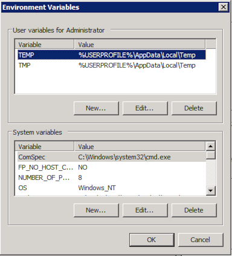
There are several environment variables that are available:
| Environment variable | Purpose |
|---|---|
SPLUNK_HOME
| The fully-qualified path to the Splunk Enterprise installation directory. |
SPLUNK_DB
| The fully-qualified path to the directory that contains the Splunk Enterprise index directories. |
SPLUNK_BINDIP
| The IP address on the system that Splunk Enterprise should bind to on startup to accept connections. Useful for when a host has more than one live IP address. |
SPLUNK_IGNORE_SELINUX
| Tells Splunk Enterprise to attempt to start when running in Linux host with SELinux enabled. By default, Splunk Enterprise quits immediately when it detects that SELinux is active. This variable defeats that check and can be used in scenarios where you have configured SELinux to allow Splunk Enterprise to work. |
SPLUNK_OS_USER
| Tells Splunk Enterprise to assume the credentials of the user you specify, regardless of what user you started it as. For example, if you specify the user 'splunk' on your system and start Splunk Enterprise as root, it adopts the privileges of the 'splunk' user and any files written by those processes will be owned by the 'splunk' user. |
SPLUNK_SERVER_NAME
| The name of the splunkd service (on Windows) or process (on *nix). Do not set this variable unless you know what you are doing. |
SPLUNK_WEB_NAME
| The name of the splunkweb service (on Windows) or process (on *nix). Do not set this variable unless you know what you are doing. |
You can also edit these environment variables for each instance by editing splunk-launch.conf (and, in some cases, web.conf. This is handy when you run more than one Splunk instance on a host. See "splunk-launch.conf".
Changing the admin default password
Splunk with an Enterprise license has a default administration account and password, admin/changeme. Splunk recommends strongly that you change the default. You can do this via Splunk's CLI or Splunk Web.
Use Splunk Web
To change the admin default password:
1. Log into Splunk Web as the admin user.
2. Click Manager in the top-right of the interface.
3. Click Access controls in the Users and Authentication section of the screen.
4. Click Users.
5. Click the admin user.
6. Update the password, and click Save.
Use Splunk CLI
The Splunk CLI command is:
splunk edit user
Important: You must authenticate with the existing password before you can change it. Log into Splunk via the CLI or use the -auth parameter. For example, this command changes the admin password from changeme to foo:
splunk edit user admin -password foo -role admin -auth admin:changeme
Note: On *nix operating systems, the shell interprets some special characters as command directives. You must either escape these characters by preceding them with \ individually, or enclose the password in single quotes ('). For example:
splunk edit user admin -password 'fflanda$' -role admin -auth admin:changeme
or
splunk edit user admin -password fflanda\$ -role admin -auth admin:changeme
On Windows, use the caret (^) to escape reserved shell characters, or enclose the password in double-quotes ("). For example:
splunk edit user admin -password "fflanda>" -role admin -auth admin:changeme
or
splunk edit user admin -password fflanda^> -role admin -auth admin:changeme
Note: You can also reset all of your passwords across servers at once. See "Deploy secure passwords across multiple servers for the procedure.
Change network ports
Splunk configures two ports at installation time:
- The HTTP/HTTPS port. This port provides the socket for Splunk Web. It defaults to 8000.
- The management port. This port is used to communicate with the
splunkddaemon. Splunk Web talks tosplunkdon this port, as does the command line interface and any distributed connections from other servers. This port defaults to 8089.
Important: During installation, you might have set these ports to values other than the defaults.
Note: Splunk instances receiving data from forwarders must be configured with an additional port, the receiver port. They use this port to listen for incoming data from forwarders. This configuration does not occur during installation. The default receiver port is 9997. For more information, see "Enable a receiver" in the Forwarding Data Manual.
Use Splunk Web
To change the ports from their installation settings:
1. Log into Splunk Web as the admin user.
2. Click Manager in the top-right of the interface.
3. Click the System settings link in the System section of the screen.
4. Click General settings.
5. Change the value for either Management port or Web port, and click Save.
Use Splunk CLI
To change the port settings via the Splunk CLI, use the CLI command set. For example, this command sets the Splunk Web port to 9000:
splunk set web-port 9000
This command sets the splunkd port to 9089:
splunk set splunkd-port 9089
Change the default Splunk server name
The Splunk server name setting controls both the name displayed within Splunk Web and the name sent to other Splunk Servers in a distributed setting.
The default name is taken from either the DNS or IP address of the Splunk Server host.
Use Splunk Web
To change the Splunk server name:
1. Log into Splunk Web as the admin user.
2. Click Manager in the top-right of the interface.
3. Click the System settings link in the System section of the screen.
4. Click General settings.
5. Change the value for Splunk server name, and click Save.
Use Splunk CLI
To change the server name via the CLI, use the set servername command. For example, this command sets the server name to foo:
splunk set servername foo
Changing the datastore location
The datastore is the top-level directory where the Splunk Server stores all indexed data.
Note: If you change this directory, the server does not migrate old datastore files. Instead, it starts over again at the new location.
To migrate your data to another directory follow the instructions in "Move an index".
Use Splunk Web
To change the datastore location:
1. Log into Splunk Web as the admin user.
2. Click Manager in the top-right of the interface.
3. Click the System settings link in the System section of the screen.
4. Click General settings.
5. Change the path in Path to indexes, and click Save.
6. Use the CLI to restart Splunk. Navigate to $SPLUNK_HOME/bin/ (*nix) or %SPLUNK_HOME%\bin (Windows) and run this command:
splunk restart
Important: Do not use the restart function inside Manager. This will not have the intended effect of causing the index directory to change. You must restart from the CLI.
Use Splunk CLI
To change the datastore directory via the CLI, use the set datastore-dir command. For example, this command sets the datastore directory to /var/splunk/:
splunk set datastore-dir /var/splunk/
Set minimum free disk space
The minimum free disk space setting controls how low disk space in the datastore location can fall before Splunk stops indexing.
Splunk resumes indexing when more space becomes available.
Use Splunk Web
To set minimum free disk space:
1. Log into Splunk Web as the admin user.
2. Click Manager in the top-right of the interface.
3. Click the System settings link in the System section of the screen.
4. Click General settings.
5. Change the value for Pause indexing if free disk space falls below, and click Save.
Use Splunk CLI
To change the minimum free space value via the CLI, use the set minfreemb command. For example, this command sets the minimum free space to 2000 MB:
splunk set minfreemb 2000
Other default settings
The Splunk Web Manager General Settings screen has a few other default settings that you might want to change. Explore it, to see the range of options.
Bind Splunk to an IP
You can force Splunk to bind its ports to a specified IP address. By default, Splunk will bind to the IP address 0.0.0.0, meaning all available IP addresses.
Changing Splunk's bind IP only applies to the Splunk daemon (splunkd), which listens on:
- TCP port 8089 (by default)
- any port that has been configured as for:
- SplunkTCP inputs
- TCP or UDP inputs
To bind the Splunk Web process (splunkweb) to a specific IP, use the server.socket_host setting in web.conf.
Temporarily
To make this a temporary change, set the environment variable SPLUNK_BINDIP=<ipaddress> before starting Splunk.
Permanently
If you want this to be a permanent change in your working environment, modify $SPLUNK_HOME/etc/splunk-launch.conf to include the SPLUNK_BINDIP attribute and <ipaddress> value. For example, to bind Splunk ports to 127.0.0.1 (for local loopback only), splunk-launch.conf should read:
# Modify the following line to suit the location of your Splunk install.
# If unset, Splunk will use the parent of the directory this configuration
# file was found in
#
# SPLUNK_HOME=/opt/splunk
SPLUNK_BINDIP=127.0.0.1
Important: The mgmtHostPort attribute in web.conf has a default value of 127.0.0.1:8089. Therefore, if you change SPLUNK_BINDIP to any value besides 127.0.0.1, you must also change mgmtHostPort to use the same IP address. For example, if you make this change in splunk-launch.conf:
SPLUNK_BINDIP=10.10.10.1
you must also make this change in web.conf (assuming the management port is 8089):
mgmtHostPort=10.10.10.1:8089
See web.conf for more information on the mgmtHostPort attribute.
IPv6 considerations
Starting in version 4.3, the web.conf mgmtHostPort setting has been extended to allow it to take IPv6 addresses if they are enclosed in square brackets. Therefore, if you configure splunkd to only listen on IPv6 (via the setting in server.conf described in "Configure Splunk for IPv6" in this manual), you must change this from 127.0.0.1:8089 to [::1]:8089.
Configure Splunk for IPv6
This topic discusses Splunk's support for IPv6 and how to configure it. Before following the procedures in this topic, you may want to review:
- "About configuration files" in this manual to learn about how Splunk's configuration files work
- "Get data from TCP and UDP ports" in the Getting Data In manual
- "server.conf" in this manual to see the reference of options available in the
server.confconfiguration file - "inputs.conf" in this manual to see the reference of options available in the
inputs.confconfiguration file
Starting in version 4.3, Splunk supports IPv6. Users can connect to Splunk Web, use the CLI, and forward data over IPv6 networks.
IPv6 platform support
All Splunk-supported OS platforms (as described in "Supported OSes" in the Installation Manual) are supported for use with IPv6 configurations except for the following:
- HPUX PA-RISC
- Solaris 8, and 9
- AIX
Configure Splunk to listen on an IPv6 network
You have a few options when configuring Splunk to listen over IPv6. You can configure Splunk to:
- connect to IPv6 addresses only and ignore all IPv4 results from DNS
- connect to both IPv4 and IPv6 addresses and
- try the IPv6 address first
- try the IPv4 address first
- connect to IPv4 addresses only and ignore all IPv6 results from DNS
To configure how Splunk listens on IPv6:
Edit a copy of server.conf in $SPLUNK_HOME/etc/system/local to add the following:
listenOnIPv6=[yes|no|only]
-
yesmeans that splunkd will listen for connections from both IPv6 and IPv4. -
nomeans that splunkd will listen on IPv4 only, this is the default setting. -
onlymeans that Splunk will listen for incoming connections on IPv6 only.
connectUsingIpVersion=[4-first|6-first|4-only|6-only|auto]
-
4-firstmeans splunkd will try to connect to the IPv4 address first and if that fails, try IPv6. -
6-firstis the reverse of4-first. This is the policy most IPv6-enabled client apps like web browsers take, but can be less robust in the early stages of IPv6 deployment. -
4-onlymeans that splunkd will ignore any IPv6 results from DNS. -
6-onlymeans that splunkd will Ignore any IPv4 results from DNS. -
automeans that splunkd picks a reasonable policy based on the setting oflistenOnIPv6. This is the default value.- If splunkd is listening only on IPv4, this behaves as though you specified
4-only. - If splunkd is listening only on IPv6, this behaves as though you specified
6-only. - If splunkd is listening on both, this behaves as though you specified
6-first.
- If splunkd is listening only on IPv4, this behaves as though you specified
Important: These settings only affect DNS lookups. For example, a setting of connectUsingIpVersion = 6-first will not prevent a stanza with an explicit IPv4 address (like "server=10.1.2.3:9001") from working.
If you have just a few inputs and don't want to enable IPv6 for your entire deployment
If you've just got a few data sources coming over IPv6 but don't want to enable it for your entire Splunk deployment, you can add the listenOnIPv6 setting described above to any [udp], [tcp], [tcp-ssl], [splunktcp], or [splunktcp-ssl] stanza in inputs.conf. This overrides the setting of the same name in server.conf for that particular input.
Forwarding data over IPv6
Your Splunk forwarders can forward over IPv6; the following are supported in outputs.conf:
- The
serversetting in[tcpout]stanzas can include IPv6 addresses in the standard[host]:portformat. - The
[tcpout-server]stanza can take an IPv6 address in the standard[host]:portformat. - The
serversetting in[syslog]stanzas can include IPv6 addresses in the standard[host]:portformat.
Distributed search configuration for IPv6
Your Splunk distributed search deployment can use IPv6; the following are supported in distsearch.conf:
- The
serverssetting can include IPv6 addresses in the standard[host]:portformat - However,
heartbeatMcastAddrhas not been updated to support IPv6 addresses; this setting is deprecated in Splunk 4.3 and will be removed from the product in a future release.
Access to Splunk Web over IPv6
If your network policy allows or requires IPv6 connections from web browsers, you can configure the splunkweb service to behave differently than splunkd. Starting in 4.3, web.conf supports a listenOnIPv6 setting. This setting behaves exactly like the one in server.conf described above, but applies only to Splunk Web.
The existing web.conf mgmtHostPort setting has been extended to allow it to take IPv6 addresses if they are enclosed in square brackets. Therefore, if you configure splunkd to only listen on IPv6 (via the setting in server.conf described above), you must change this from 127.0.0.1:8089 to [::1]:8089.
The Splunk CLI and IPv6
The Splunk CLI can communicate to splunkd over IPv6. This works if you have set mgmtHostPort in web.conf, defined the $SPLUNK_URI environment variable, or use the -uri command line option. When using the -uri option, be sure to enclose IPv6 IP address in brackets and the entire address and port in quotes, for example: -uri "[2001:db8::1]:80".
IPv6 and SSO
If you are using IPv6 with SSO, you do not use the square bracket notation for the trustedIP property, as shown in the example below. This applies to both web.conf and server.conf.
In the following web.conf example, the mgmtHostPort attribute uses the square bracket notation, but the trustedIP attribute does not:
[settings]
mgmtHostPort = [::1]:8089
startwebserver = 1
listenOnIPv6=yes
trustedIP=2620:70:8000:c205:250:56ff:fe92:1c7,::1,2620:70:8000:c205::129
SSOMode = strict
remoteUser = X-Remote-User
tools.proxy.on = true
For more information on SSO, see "Configure Single Sign-on" in the Securing Splunk Enterprise manual.
Secure your configuration
If you haven't already, this is a good time to make sure that Splunk and your data are secure. Taking the proper steps to secure Splunk reduces the attack surface and mitigates the risk and impact of most vulnerabilities.
Some key actions you should take after installation:
- Set up users and roles. You can configure users using Splunks native authentication and/or use LDAP to manage users. See About user authentication
- Set up certificate authentication (SSL). Splunk ships with a set of default certificates that should be replaced for secure authentication. We provide guidelines and further instructions for adding SSL encryption and authentication and Configure secure authentication.
The Securing Splunk Enterprise manual provides more information about ways you can secure Splunk. Including a checklist for hardening your configuration. See Securing Splunk Enterprise for more information.
Configure Splunk licenses
How Splunk Enterprise licensing works
Splunk Enterprise takes in data from sources you designate and processes it so that you can analyze it. We call this process indexing. For information about the exact indexing process, refer to "What Splunk Enterprise does with your data" in the Getting Data In Manual.
Splunk Enterprise licenses specify how much data you can index per calendar day (from midnight to midnight by the clock on the license master).
Any host in your Splunk Enterprise infrastructure that performs indexing must be licensed to do so. You can either run a standalone indexer with a license installed locally, or you can configure one of your Splunk Enterprise instances as a license master and set up a license pool from which other indexers, configured as license slaves, can draw.
In addition to indexing volume, access to some Splunk Enterprise features requires an Enterprise license. For more information about different types of licenses, read "Types of Splunk licenses" in this manual.
For information about upgrading an existing license, see "Migrate to the new Splunk licenser" in the Installation Manual.
About the connection between the license master and license slaves
When a license master instance is configured, and license slaves are added to it, the license slaves communicate their usage to the license master every minute. If the license master is unreachable for any reason, the license slave starts a 72 hour timer. If the license slave cannot reach the license master for 72 hours, search is blocked on the license slave (although indexing continues). Users will not be able to search data in the indexes on the license slave until that slave can reach the license master again.
Splunk Enterprise license lifecycle(s)
When you first install a downloaded copy of Splunk Enterprise, that instance uses a 60 day Trial Enterprise license. This license allows you to try out all of the Enterprise features in Splunk Enterprise for 60 days, and to index up to 500 MB of data per day.
Once the 60 day trial expires (and if you have not purchased and installed an Enterprise license), you are given the option to switch to Splunk Free. Splunk Free includes a subset of the features of Splunk Enterprise and is intended for use in standalone deployments and for short-term forensic investigations. It allows you to index up to 500 MB of data a day indefinitely.
Important: Splunk Free does not include authentication or scheduled searches/alerting. This means that any user accessing your installation (via Splunk Web or the CLI) will not have to provide credentials. Additionally, scheduled saved searches/alerts will no longer fire.
If you want to continue using Splunk Enterprise features after the 60 day Trial expires, you must purchase an Enterprise license. Contact a Splunk sales rep to learn more.
Once you have purchased and downloaded an Enterprise license, you can install it on your instance and access Splunk Enterprise features. Read "Types of Splunk licenses" in this manual for information about Enterprise features.
Types of Splunk software licenses
Each Splunk instance requires a license. Splunk licenses specify how much data a given Splunk instance can index and what features you have access to. This topic discusses the various license types and options.
In general, there are four types of licenses:
- The Enterprise license enables all enterprise features, such as authentication and distributed search.
- The Free license allows you a limited indexing volume and disables authentication, but is perpetual.
- The Forwarder license allows you to forward, but not index, data and enables authentication.
- The Beta license, typically enables enterprise features, but is restricted to Splunk Beta releases.
Also discussed in this topic are some special licensing considerations if your deployment includes distributed search or index replication.
For information about upgrading an existing license, see "Migrate to the new Splunk licenser" in the Installation Manual.
Enterprise license
Splunk Enterprise is the standard Splunk license. It allows you to use all Splunk Enterprise features, including authentication, distributed search, deployment management, scheduling of alerts, and role-based access controls. Enterprise licenses are available for purchase and can be any indexing volume. Contact Splunk Sales for more information.
The following are additional types of Enterprise licenses, which include all the same features:
Enterprise trial license
When you download Splunk for the first time, you are asked to register. Your registration authorizes you to receive an Enterprise trial license, which allows a maximum indexing volume of 500 MB/day. The Enterprise trial license expires 60 days after you start using Splunk. If you are running with a Enterprise trial license and your license expires, Splunk requires you to switch to a Splunk Free license.
Once you have installed Splunk, you can choose to run Splunk with the Enterprise trial license until it expires, purchase an Enterprise license, or switch to the Free license, which is included.
Note: The Enterprise trial license is also sometimes referred to as "download-trial."
Sales trial license
If you are working with Splunk Sales, you can request trial Enterprise licenses of varying size and duration. The Enterprise trial license expires 60 days after you start using Splunk. If you are preparing a pilot for a large deployment and have requirements for a longer duration or higher indexing volumes during your trial, contact Splunk Sales or your sales rep directly with your request.
Free license
The Free license includes 500 MB/day of indexing volume, is free (as in beer), and has no expiration date.
The following features that are available with the Enterprise license are disabled in Splunk Free:
- Multiple user accounts and role-based access controls
- Distributed search
- Forwarding in TCP/HTTP formats (you can forward data to other Splunk instances, but not to non-Splunk instances)
- Deployment management (including for clients)
- Alerting/monitoring
- Authentication and user management, including native authentication, LDAP, and scripted authentication.
- There is no login. The command line or browser can access and control all aspects of Splunk with no user/password prompt.
- You cannot add more roles or create user accounts.
- Searches are run against all public indexes, 'index=*' and restrictions on search such as user quotas, maximum per-search time ranges, search filters are not supported.
- The capability system is disabled, all capabilities are enabled for all users accessing Splunk.
Learn more about the free version of Splunk in this manual.
Forwarder license
This license allows forwarding (but not indexing) of unlimited data, and also enables security on the instance so that users must supply username and password to access it. (The free license can also be used to forward an unlimited amount of data, but has no security.)
Forwarder licenses are included with Splunk; you do not have to purchase them separately.
Splunk offers several forwarder options:
- The universal forwarder has the license enabled/applied automatically; no additional steps are required post-installation.
- The light forwarder uses the same license, but you must manually enable it by changing to the Forwarder license group.
- The heavy forwarder must also be manually converted to the Forwarder license group. If any indexing is to be performed, the instance should instead be given access to an Enterprise license stack. Read "Groups, stacks, pools, and other terminology" in this manual for more information about Splunk license terms.
Beta license
Splunk's Beta releases require a different license that is not compatible with other Splunk releases. Also, if you are evaluating a Beta release of Splunk, it will not run with a Free or Enterprise license. Beta licenses typically enable Enterprise features, they are just restricted to Beta releases. If you are evaluating a Beta version of Splunk, it will come with its own license.
Licenses for search heads (for distributed search)
A search head is a Splunk instance that distributes searches to other Splunk indexers. Although search heads don't usually index any data locally, you will still want to use a license to restrict access to them.
There is no special type of license specifically for search heads, that is to say, there is no "Search head license". However, you must have an Enterprise license to configure a search head, and how you arrange for licensing for the search head depends on the version of Splunk:
- In the past, for versions prior to 4.2, Splunk suggested using a separate forwarder license on each search head. This was simply because forwarder licenses do not allow indexing, but require authentication for access to the search head.
- Now, for versions after 4.2, Splunk recommends that, instead of assigning a separate license to each peer, you add the search heads to an Enterprise license pool even if they are not expected to index any data. Read "Groups, stacks, pools, and other terminology" and "Create or edit a license pool."
Note: If your existing search head has a pre-4.2 forwarder license installed, the forwarder license will not be read after you upgrade.
Licenses for indexer cluster nodes (for index replication)
As with any Splunk deployment, your licensing requirements are driven by the volume of data your indexers process. Contact your Splunk sales representative to purchase additional license volume.
There are just a few license issues that are specific to index replication:
- All cluster nodes, including masters, peers, and search heads, need to be in an Enterprise license pool, even if they're not expected to index any data.
- Cluster nodes must share the same licensing configuration.
- Only incoming data counts against the license; replicated data does not.
- You cannot use index replication with a free license.
Read more about "System requirements and other deployment considerations" in the Managing Indexers and Clusters manual.
Groups, stacks, pools, and other terminology
The licensing functionality of Splunk has changed a lot starting in version 4.2. You can aggregate compatible licenses into stacks of available license volume and define pools of indexers to use license volume from a given stack.
Splunk Free users: This functionality is only relevant for Enterprise licenses. If you're running a standalone instance of Splunk Free, groups, pools, and stacks are not needed.
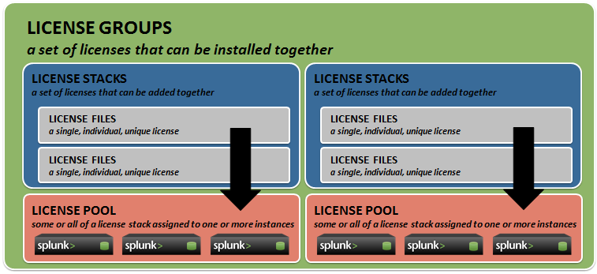
Pools
Starting in version 4.2, you can define a pool of license volume from a given license license stack and specify other indexing Splunk instances as members of that pool for the purposes of volume usage and tracking.
A license pool is made up of a single license master and zero or more license slave instances of Splunk configured to use licensing volume from a set license or license stack.
Stacks
Starting in version 4.2, certain types of Splunk licenses can be aggregated together, or stacked so that the available license volume is the sum of the volumes of the individual licenses.
This means you can increase your indexing volume capacity over time as you need to without having to swap out licenses. Instead, you simply purchase additional capacity and add it to the appropriate stack.
- Enterprise licenses and sales trial licenses can be stacked together, and with each other.
- The Enterprise *trial* license that is included with the standard Splunk download package cannot be included in a stack. The Enterprise trial license is designed for standalone use and is its own group. Until you install an Enterprise or sales trial license, you will not be able to create a stack or define a pool for other indexers to use.
- The Splunk Free license cannot be stacked with other licenses, including Splunk Free licenses.
- The forwarder license cannot be stacked with other licenses, including forwarder licenses.
Groups
A license group contains one or more stacks. A stack can be a member of only one group, and only one group can be "active" in your Splunk installation at a time. Specifically this means that a given license master can only administer pools of licenses of one group type at a time. The groups are:
- Enterprise/sales trial group -- This group allows stacking of purchased Enterprise licenses, and sales trial licenses (which are Enterprise licenses with a set expiry date, NOT the same thing as the downloaded Enterprise trial).
- Enterprise trial group -- This is the default group when you first install a new Splunk instance. You cannot combine multiple Enterprise trial licenses into a stack and create pools from it. If you switch to a different group, you will not be able to switch back to the Enterprise trial group.
- Free group -- This group exists to accommodate Splunk Free installations. When an Enterprise trial license expires after 60 days, that Splunk instance is converted to the Free group. You cannot combine multiple Splunk Free licenses into a stack and create pools from it.
- Forwarder group -- This group exists for the purposes of configuring Splunk as a universal forwarder or light forwarder. These types of forwarders do not perform any indexing, and therefore aren't really managed via the Licensing pages in Manager, but do belong to a license group. If you change the license group of a Splunk instance to the Forwarder group, it assumes that Splunk instance is configured as a forwarder and will not be indexing any data. See forwarders and "Forwarder licenses" for more information.
License slaves
A license slave is a member of one or more license pools. A license slave's access to license volume is controlled by its license master.
License master
A license master controls one or more license slaves. From the license master, you can define pools, add licensing capacity, and manage license slaves.
Install a license
This topic discusses installing new licenses. You can install multiple licenses on a Splunk license master. Before you proceed, you may want to review these topics:
- Read "How Splunk licensing works" in this manual for an introduction to Splunk licensing.
- Read "Groups, stacks, pools, and other terminology" in this manual for more information about Splunk license terms.
For information about upgrading an existing license, see "Migrate to the new Splunk licenser" in the Installation Manual.
Add a new license
To add a new license:
1. Navigate to Settings > Licensing.
2. Click Add license.
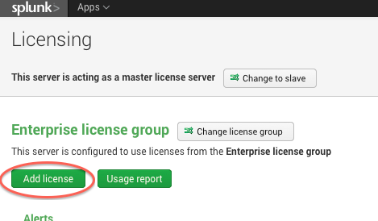
3. Either click Choose file and browse for your license file and select it, or click copy & paste the license XML directly... and paste the text of your license file into the provided field.
4. Click Install. If this is the first Enterprise license that you are installing, you must restart Splunk. Your license is installed.
Configure a license master
This topic discusses configuring a Splunk instance as a license master. Before you proceed, you may want to review these topics:
- Read "How Splunk licensing works" in this manual for an introduction to Splunk licensing.
- Read "Groups, stacks, pools, and other terminology" in this manual for more information about Splunk license terms.
Kinds of license masters
There are two basic styles of license master:
- Standalone license master
- If you have a single Splunk indexer and want to manage its licenses, you can run it as its own license master, install one or more Enterprise licenses on it and it will manage itself as a license slave.
- When you first download and install Splunk Enterprise, it includes a 500 MB 60-day Enterprise Trial license. This instance is automatically configured as a standalone license master, and you cannot create a pool or define any license slaves for this type of license. If you want to create one or more stacks or pools and assign multiple indexers to them, you must purchase and install an Enterprise license. To install a license, follow the instructions in "Install a license" in this manual.
- Central license master
- If you have more than one indexer and want to manage their access to purchased license capacity from a central location, configure a central license master and add the indexers to it as license slaves.
- If the license master is also an indexer, it will be its own license master as well, but Splunk recommends that if you have a search head, you designate it as the license master.
- If you have a large environment with multiple search heads, you might want to have some or all search heads that are not the license master distribute searches to the license master, for two reasons:
- You can run searches against the license logs.
- If an unusual condition occurs on the search head (for example you have a time-limited license and it will expire in 5 days), this condition will be visible on the search head when running a search, as part of the info messages attached to search results.
Configure a central license master
By default, a standalone instance of Splunk is its own license master. To configure a central license master, install one or more Enterprise licenses.
Once an Enterprise license is installed, you can create one or more stacks and pools to access the installed license, and manage them from the license master.
Configure a license slave
This topic discusses configuring a Splunk indexer as a license slave. Before you proceed, you may want to review these topics:
- Read "How Splunk licensing works" in this manual for an introduction to Splunk licensing.
- Read "Groups, stacks, pools, and other terminology" in this manual for more information about Splunk license terms.
- ReadConfigure a license master" in this manual for instructions on setting up a license master.
- Read "Manage licenses from the CLI" in this manual for help with performing these tasks from the command line.
1. On the indexer you want to configure as a license slave, log into Splunk Web and navigate to Settings > Licensing.
2. Click Change to Slave.
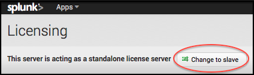
3. Switch the radio button from Designate this Splunk instance, <this indexer>, as the master license server to Designate a different Splunk instance as the master license server.
4. Specify the license master to which this license slave should report. You must provide either an IP address or a hostname and the Splunk management port, which is 8089 by default.
Note: The IP address can be specified in IPv4 or IPv6 format. For detailed information on IPv6 support, read "Configure Splunk for IPv6" in this manual.
5. Click Save. If this instance does not already have an Enterprise license installed, you must restart Splunk. This indexer is now configured as a license slave.
To switch back, navigate to Settings > Licensing and click Switch to local master. If this instance does not already have an Enterprise license installed, you must restart Splunk for this change to take effect.
Create or edit a license pool
This topic discusses creating a license pool from one or more installed licenses, as well as editing an existing license pool. Before you proceed, you may want to review these topics:
- Read "How Splunk licensing works" in this manual for an introduction to Splunk licensing.
- Read "Groups, stacks, pools, and other terminology" in this manual for more information about Splunk license terms.
- Read "Install a license" to learn more about installing licenses.
- Read "Manage licenses from the CLI" in this manual for help with performing these tasks from the command line.
When you first download and install Splunk, it includes a 500 MB 60 day Enterprise Trial license. This instance of Splunk is automatically configured as a stand-alone license master, and you cannot create a pool or define any license slaves for this type of license. If you want to create one or more stacks or pools and assign multiple indexers to them, you must purchase and install an Enterprise license.
In the following example of Settings > Licensing, a 100 MB Enterprise license has just been installed onto a brand new Splunk installation:
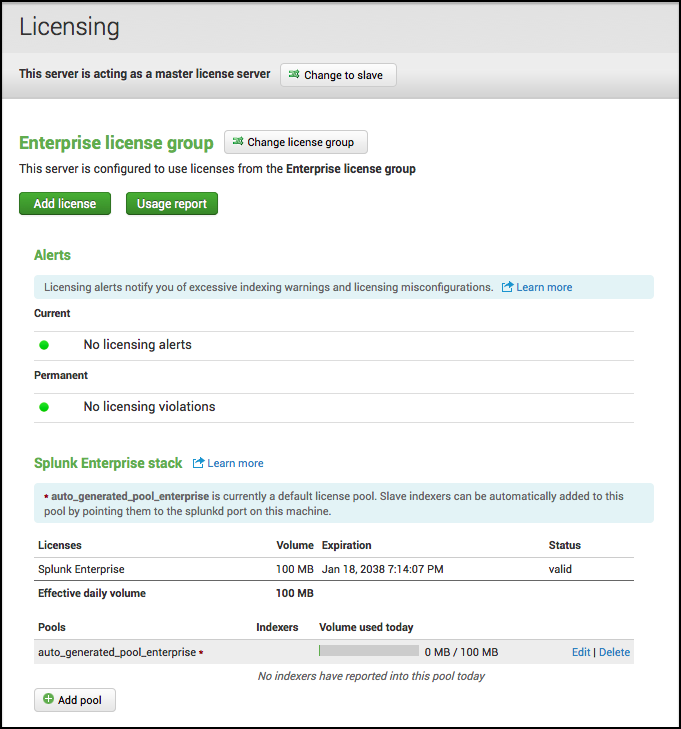
When you install an Enterprise license onto a brand new Splunk server, Splunk automatically creates an Enterprise license stack called Splunk Enterprise Stack from it and defines a default license pool for it called auto_generated_pool_enterprise.
The default configuration for this default pool adds any license slave that connects to this license master to the pool. You can edit the pool to change this configuration, to add more indexers to it, or create a new license pool from this stack.
To edit an existing license pool
1. Next to the license pool you want to edit, click Edit. The Edit license pool page is displayed.
2. If desired, change the allocation or alter how indexers are permitted to access this pool. You can also change the description, but not the name of the pool.
3. Click Submit.
To create a new license pool
Important: Before you can create a new license pool from the default Enterprise stack, you must make some indexing volume available by either editing the auto_generated_pool_enterprise pool and reducing its allocation, or deleting the pool entirely. Click Delete next to the pool's name to delete it.
1. Click toward the bottom of the page. The Create new license pool page is displayed.
2. Specify a name and optionally, a description for the pool.
3. Set the allocation for this pool. The allocation is how much of the overall stack's licensing volume is available for use by the indexers who belong to this pool. The allocation can be a specific value, or the entire amount of indexing volume available in the stack, as long as it is not allocated to any other pool.
4. Specify how indexers are to access this pool. The options are:
- Any indexer in your environment that is configured as license slave can connect to this license pool and use the license allocation within it.
- Only indexers that you specify can connect to this pool and use the license allocation within it.
5. To allow a specific indexer to draw from the pool, click the plus sign next to the name of the indexer in the list of Available indexers to move it into the list of Associated indexers.
Add an indexer to a license pool
This topic discusses adding indexers to existing license pools. Before you proceed, you may want to review these topics:
- Read "How Splunk licensing works" in this manual for an introduction to Splunk licensing.
- Read "Groups, stacks, pools, and other terminology" in this manual for more information about Splunk license terms.
How indexers access license pools
Access to a license pool's stack is controlled by that pool's license master. A pool can be configured to allow access only to specific indexers, or to all indexers who connect to it by specifying the URI and management port of the license master.
Add a specific indexer
Follow these two basic steps to give a specific indexer access to a given license pool's stack:
1. Configure the indexer to be a license slave and give it the license master's URI and management port. To do this, follow the instructions in "Configure a license slave" in this manual.
2. Configure the pool on the license manager to accept access from that indexer. To do this, follow the instructions in "Create or edit a license pool" to edit a license pool, choose the radio button option to only allow access to Specific indexers and then click the plus sign next to the names of the indexer in the list of Available indexers to move them into the list of Associated indexers.
Add any indexer that connects
Follow these steps to give all indexers who connect to this license master access to a given license pool's stack:
1. Configure the indexer to be a license slave and give it the license master's URI and management port. To do this, follow the instructions in "Configure a license slave" in this manual.
2. Configure the pool on the license master to accept access from any indexer. To do this, follow the instructions in "Create or edit a license pool" to edit a license pool, and choose the radio button option to allow access from Any indexer that connects.
Manage licenses from the CLI
This topic describes using the Splunk CLI to monitor and manage your Splunk licenses. Before you continue, review these topics:
- Read "How Splunk licensing works" in this manual for an introduction to Splunk licensing.
- Read "Groups, stacks, pools, and other terminology" in this manual for more information about Splunk license terms.
This topic only covers what CLI commands you can use to interact with Splunk's licenser-related objects. Some of these commands also have required and optional arguments that you can specify for each object. For the complete syntax and usage examples, refer to Splunk's CLI help.
- Read "About the CLI" in this manual for an introduction to using the Splunk command line interface.
For information on managing licenses through Splunk's REST API, refer to "Licenses" in the REST API Reference Manual.
CLI licenser commands and objects
Using the Splunk CLI, you can add, edit, list, and remove licenses and licenser-related objects. The available commands are:
| Command | Object(s) | Description |
|---|---|---|
| add | licenses, licenser-pools | Add a license or a pool of licenses to a license stack. This command is only available if you have an Enterprise license. |
| edit | licenser-localslave, licenser-pools | Edit the attributes of a local licenser-slave node or a pool of licenses within a license stack. This command is only available if you have an Enterprise license. |
| list | licenser-groups, licenser-localslave, licenser-messages, licenser-pools, licenser-slaves, licenser-stacks, licenses | Depending on the licenser-related object specified, lists either the attributes of that object or members of that object. |
| remove | licenser-pools, licenses | Remove licenses or license pools from a license stack. |
License-related objects are:
| Object | Description |
|---|---|
| licenser-groups | the different license groups you can switch to. |
| licenser-localslave | a local indexer's configuration. |
| licenser-messages | the alerts or warnings about the state of your licenses. |
| licenser-pools | a pool, or virtual license. A stack can be divided into various pools, with multiple slaves sharing the quota of each pool. |
| licenser-slaves | all the slaves that have contacted the master. |
| licenser-stacks | this object represents a stack of licenses. A stack contains licenses of the same type and are cumulative. |
| licenses | all licenses for this Splunk instance. |
The following are examples of common licenser-related tasks.
Managing licenses
To add a new license to the license stack, specify the path to the license file:
./splunk add licenses /opt/splunk/etc/licenses/enterprise/enterprise.lic
To list all the licenses in a license stack:
./splunk list licenses
List also displays the properties of each license, including the features it enables (features), the license group and stack it belongs to (group_id, stack_id), the indexing quote it allows (quota), and the license key that is unique for each license (license_hash).
If a license expires, you can remove it from the license stack. To remove a license from the license stack, specify the license's hash:
./splunk remove licenses BM+S8VetLnQEb1F+5Gwx9rR4M4Y91AkIE=781882C56833F36D
Managing license pools
You can create a license pool from one or more licenses in a license stack (if you have an Enterprise license). Basically, a license stack can be carved up into multiple licenser pools. Each pool can have more than one license slave sharing the quota of the pool.
To see all the license pools in all the license stacks:
./splunk list licenser-pools
To add a license pool to the stack, you need to: name the pool, specify the stack that you want to add it to, and specify the indexing volume allocated to that pool:
./splunk add licenser-pools pool01 -quota 10mb -slaves guid1,guid2 -stack_id enterprise
You can also specify a description for the pool and the slaves that are members of the pool (these are optional).
You can edit the license pool's description, indexing quota, and slaves:
./splunk edit licenser-pools pool01 -description "Test" -quota 15mb -slaves guid3,guid4 -append_slaves true
This basically adds a description for the pool, "Test", changes the quota from 10mb to 15mb, adds slaves guid3 and guid4 to the pool (instead of overwriting or replace guid1 and guid2).
To remove a license pool from a stack, specify the name:
./splunk remove pool01
Managing license slaves
A license slave is a member of one or more license pools. The license slaves access to license volume is controlled by its license master.
To list all the license slaves that have contacted the license master:
./splunk list licenser-slaves
To list all the properties of the local license slave:
./splunk list licenser-localslave
To add a license slave, edit the attributes of that local license slave node (specify the uri of the splunkd license master instance or 'self'):
./splunk edit licenser-localslave -master_uri 'https://master:port'
Monitoring license status
You can use the list command to view messages (alerts or warnings) about the state of your licenses.
./splunk list licenser-messages
Manage Splunk licenses
Manage your licenses
This topic discusses managing Splunk licenses. Before you proceed, you may want to review these topics:
- Read "How Splunk licensing works" in this manual for an introduction to Splunk licensing.
- Read "Groups, stacks, pools, and other terminology" in this manual for more information about Splunk license terms.
- Read "Manage licenses from the CLI" in this manual for help with performing some of these tasks from the command line.
For information about upgrading an existing license, see "Migrate to the new Splunk licenser" in the Installation Manual.
Delete a license
If a license expires, you can delete it. To delete one or more licenses:
1. On the license master, navigate to System > Licensing.
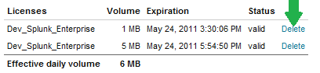
2. Click Delete next to the license you want to delete.
3. Click Delete again to confirm.
Note: You cannot delete the last license in a list of licenses on a license master.
View license usage
You can monitor license usage across your deployment with the License Usage Report View. Access the view in System > Licensing then clicking Usage Report. Read more about the License Usage Report View in the next chapter.
About license violations
This topic discusses license violations, how they come about, and how to resolve them. Before you proceed, you may want to review these topics:
- Read "How Splunk licensing works" in this manual for an introduction to Splunk licensing.
- Read "Groups, stacks, pools, and other terminology" in this manual for more information about Splunk license terms.
What are license violations and warnings?
Warnings and violations occur when you exceed the maximum indexing volume allowed for your license.
If you exceed your licensed daily volume on any one calendar day, you will get a violation warning. The message persists for 14 days. If you have 5 or more warnings on an Enterprise license or 3 warnings on a Free license in a rolling 30-day period, you are in violation of your license, and search will be disabled for the offending pool(s). Other pools will remain searchable and be unaffected, as long as the total license usage from all pools does not exceed the total license quota for the license master.
Search capabilities return when you have fewer than 5 (Enterprise) or 3 (Free) warnings in the previous 30 days, or when you apply a temporary reset license (available for Enterprise only). To obtain a reset license, contact your sales rep. See the Installation Manual for instructions on how to apply it.
Note: Summary indexing volume is not counted against your license, although in the event of a license violation, summary indexing will halt like any other non-internal search behavior.
If you get a license warning, you have until midnight (going by the time on the license master) to resolve it before it counts against the total number of warnings within the rolling 30 day period.
During a license violation period:
- Splunk does not stop indexing your data. Splunk only blocks search while you exceed your license.
- Searches to the
_internalindex are not disabled. This means that you can still access the Indexing Status dashboard or run searches against_internalto diagnose the licensing problem.
What license warnings look like
If indexers in a pool exceed the license volume allocated to that pool, you will see a yellow warning banner across the top of Splunk Web:
Clicking on the link in the banner takes you to Settings > Licensing, where the warning shows up under the Alerts section of the page. Click on a warning to get more information about it.
A similar banner is shown on license slaves when a violation has occurred.
Here are some of the conditions that will generate a licensing alert:
- When a slave becomes an orphan, there will be an alert (transient and fixable before midnight)
- When a pool has maxed out, there will be an alert (transient and fixable before midnight)
- When a stack has maxed out, there will be an alert (transient and fixable before midnight)
- When a warning is given to one or more slaves, there will be an alert (will stay as long as the warning is still valid within that last 30-day period)
About the connection between the license master and license slaves
When you configure a license master instance and add license slaves to it, the license slaves communicate their usage to the license master every minute. If the license master is down or unreachable for any reason, the license slave starts a 72 hour timer. If the license slave cannot reach the license master for 72 hours, search is blocked on the license slave (although indexing continues). Users will not be able to search data in the indexes on the license slave until that slave can reach the license master again.
To find out if a license slave has been unable to reach the license master, look for an event that contains failed to transfer rows in splunkd.log or search for it in the _internal index.
How to avoid license violations
To avoid license violations, monitor your license usage and ensure you have sufficient license volume to support it. If you do not have sufficient license volume, you need to either increase your license or decrease your indexing volume.
The distributed management console contains alerts that you can enable, including one that monitors license usage. See "Platform alerts" in this manual.
Use the License Usage report to see details about and troubleshoot index volume in your deployment. Read about the license usage report view in the next chapter.
Correcting license warnings
If Splunk is telling you to correct your license warning before midnight, you've probably already exceeded your quota for the day. This is called a "soft warning." The daily license quota will reset at midnight (at which point the soft warning will become a "hard warning"). You have until then to fix your situation and ensure that you won't go over quota tomorrow, too.
Once you've already indexed data, there is no way to un-index data that will give you "wiggle room" back on your license. You need to get additional license room in one of these two ways:
- Purchase a bigger license.
- Rearrange license pools if you have a pool with extra license room.
If you cannot do either of these, prevent a warning tomorrow by using less of your license. Take a look at the License Usage Report View to learn which data sources are contributing the most to your quota.
Once you identify a data culprit, decide whether or not you need all the data it is emitting. If not, read "route and filter data" in the Forwarding Data Manual.
Answers
Have questions? Visit Splunk Answers and see what questions and answers the Splunk community has around license violations.
Swap the license master
So you've configured a license pool. What if you want to turn one of your license slaves into your pool's license master?
This topic spells out the steps to do that. Big picture, first you promote a slave to master. Then you demote the old master to a slave. Details follow.
1. Remove the new license master from the licensing pool and set it up as a master.
- Log into license slave (which will become new master).
- Navigate to Settings > Licensing.
- Follow the prompts to configure it as a new license master.
- Restart Splunk.
2. On the new license master, add the license keys. Check that the license keys match up to the old license master.
3. Make the other license slaves in the pool point to new license master.
- On each of the slaves, navigate to Settings > Licensing.
- Change the master license server URI to refer to the new license master and click Save.
- Restart Splunk on the license slave whose entry you just updated.
4. Check that one of the license slaves is connected to the new license master.
5. Demote the old license master to a slave:
- On the old license master, navigate to Settings > Licensing > Change to slave.
- Ignore the restart prompt.
- On the "Change to slave" screen, point the new slave to the new license master ("Designate a different Splunk instance as the master license server").
6. On the new license slave, stop Splunk and delete the old license file(s) under the /opt/splunk/etc/licenses/enterprise/ folder. (Otherwise you'll have duplicate licenses and will get errors and/or warnings.)
7. On the new license slave, start Splunk and confirm that it connects to the new license master.
License Usage Report View
About the Splunk Enterprise license usage report view
Introduction to the license usage report view
The license usage report view (LURV) is Splunk's new consolidated resource for questions related to your license capacity and indexed volume. It provides a fast and easy approach to determine the consumption of your Splunk license. Directly from the Splunk Licensing page, get immediate insight into your daily Splunk indexing volume, as well as any license warnings. In addition, get a comprehensive view of the last 30 days of your Splunk usage with multiple reporting options.
LURV displays detailed license usage information for your license pool. The dashboard is logically divided into two parts: one displays information about today's license usage, and any warning information in the current rolling window; the other shows historic license usage during the past 30 days.
For every panel in LURV, you can click "Open in search" at the bottom left of the panel. This lets you interact with the search.
Access the license usage report view
Find LURV in Settings > Licensing > Usage report.
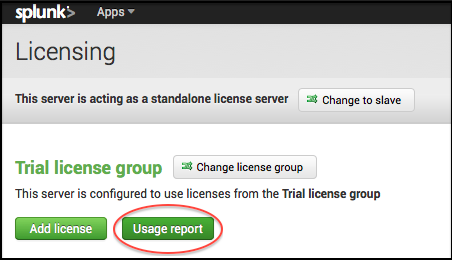
Access LURV on your deployment's license master. (If your deployment is only one instance, your instance is its own license master.)
Today tab
When you first arrive at LURV, you'll see five panels under the "Today" tab. These panels show the status of license usage and the warnings for the day that hasn't yet finished. The licenser's day ends at midnight in whichever time zone the license master is set to.
All the panels in the "Today" tab query the Splunk REST API.
Today's license usage panel
This panel gauges license usage for today, as well as the total daily license quota across all pools.
Today's license usage per pool panel
This panel shows the license usage for each pool as well as the daily license quota for each pool.
Today's percentage of daily license quota used per pool panel
This panel shows what percentage of the daily license quota has been indexed by each pool. The percentage is displayed on a logarithmic scale.
Pool usage warnings panel
This panel shows the warnings, both soft and hard, that each pool has received in the past 30 days (or since the last license reset key was applied). Read "About license violations" in this manual to learn more about soft and hard warnings, and license violations.
Slave usage warnings panel
For each license slave, this panel shows: the number of warnings, pool membership, and whether the slave is in violation.
Previous 30 Days tab
Clicking on the "Previous 30 Days" tab reveals five more panels and several drop-down options.
All visualizations in these panels limit the number of host, source, source type, index, pool (any field you split by) that are plotted. If you have more than 10 distinct values for any of these fields, the values after the 10th are labeled "Other." We've set the maximum number of values plotted to 10 using timechart. We hope this gives you enough information most of the time without making the visualizations difficult to read.
These panels all use data collected from license_usage.log, type=RolloverSummary (daily totals). If your license master is down at its local midnight, it will not generate a RolloverSummary event for that day, and you will not see that day's data in these panels.
Split-by: no split, indexer, pool
These three split-by options are self-explanatory. Read about adding an indexer to a license pool and about license pools in previous chapters in this manual.
Split-by: source, source type, host, index
There are two things you should understand about these four split-by fields: report acceleration and squashing.
Report acceleration
Splitting by source, source type, and host uses license_usage.log type=Usage, which provides real-time usage statistics at one-minute intervals. We recommend accelerating the report that powers these split-by options on your license master. (Without acceleration, the search can be very slow, since it searches through 30 days worth of data that gets generated at a rate of one event per minute -- that's a lot of events!)
Acceleration for this report is disabled by default. To accelerate the report, click the link that shows up in the info message when you select one of these split-by values. You can also find the workflow for accelerating in Settings > Searches and reports > License usage data cube. Read "Accelerate reports" in the Reporting Manual.
Note that report acceleration can take up to 10 minutes to start after you select it for the first time. Then Splunk will take some amount time to build the acceleration summary -- typically a few to tens of minutes, depending on the amount of data it's summarizing. Only after the acceleration is finished building will you see faster performance for these split-by options.
But after the first acceleration run, subsequent reports will build on what's already there, keeping the report up-to-date (and the reporting fast). You should only have a long wait the very first time you turn on report acceleration.
Important: Enable report acceleration only on your license master.
Configure how frequently the acceleration runs in savedsearches.conf, with auto_summarize. The default is every 10 minutes. Keep it frequent, to keep the workload small and steady. We put in a cron for every 10 minutes at the 3 minute mark. This is configurable in auto_summarize.cron_schedule.
Squashing
Every indexer periodically reports to license manager stats of the data indexed: broken down by source, source type, host, and index. If the number of distinct (source, source type, host, index) tuples grows over the squash_threshold, Splunk squashes the {host, source} values and only reports a breakdown by {sourcetype, index}. This is to prevent explosions in memory and license_usage.log lines.
Because of squashing on the other fields, only the split-by source type and index will guarantee full reporting (every byte). Split by source and host do not guarantee full reporting necessarily, if those two fields represent many distinct values. Splunk reports the entire quantity indexed, but not the names. So you lose granularity (that is, you don't know who consumed that amount), but you still know what the amount consumed is.
Squashing is configurable (with care!) in server.conf, in the [license] stanza, with the squash_threshold setting. You can increase the value, but doing so can use a lot of memory, so consult a Splunk Support engineer before changing it.
LURV will always tell you (with a warning message in the UI) if squashing has occurred.
If you find that you need the granular information, you can get it from metrics.log instead, using per_host_thruput.
Top 5 by average daily volume
The "Top 5" panel shows both average and maximum daily usage of the top five values for whatever split by field you've picked from the Split By menu.
Note that this selects the top five average (not peak) values. So, for example, say you have more than five source types. Source type F is normally much smaller than the others but has a brief peak. Source type F's max daily usage is very high, but its average usage might still be low (since it has all those days of very low usage to bring down its average). Since this panel selects the top five average values, source type F might still not show up in this view.
Use LURV
Read the next topic for a tip about configuring an alert based on a LURV panel.
Use the license usage report view
This topic is about using the license usage report view (LURV). To learn about the view, read the previous topic, "About Splunk's license usage report view."
Set up an alert
You can turn any of the LURV panels into an alert. For example, say you want to set up an alert for when license usage reaches 80% of the quota.
Start at the Today's percentage of daily license usage quota used panel. Click "Open in search" at the bottom left of a panel. Append
| where '% used' > 80
then select Save as > Alert and follow the alerting wizard.
Splunk Enterprise comes with some alerts preconfigured that you can enable. See "Platform alerts" in this manual.
Troubleshoot LURV: no results in 30 days panel
A lack of results in the panels of the "Last 30 days" view of the License Usage Report View indicates that the license master instance on which this page is viewed is unable to find events from its own $SPLUNK_HOME/var/log/splunk/license_usage.log file when searching.
This typically has one of two causes:
- The license master is configured to forward its events to the indexers (read more about this best practice in the Distributed Search Manual) but it has not been configured to be a search head. This is easily remedied by adding all indexers to whom the license master is forwarding events as search peers.
- The license master is not reading (and therefore, indexing) events from its own
$SPLUNK_HOME/var/log/splunkdirectory. This can happen if the[monitor://$SPLUNK_HOME/var/log/splunk]default data input is disabled for some reason.
You might also have a gap in your data if your license master is down at midnight.
Monitor Splunk Enterprise with the distributed management console
Configure the distributed management console
What is the distributed management console?
The distributed management console lets you view detailed performance information about your Splunk Enterprise deployment. The topics in this chapter describe the available dashboards and alerts.
The available dashboards provide insight into your deployment's indexing performance, search performance, operating system resource usage, Splunk Enterprise app key value store performance, and license usage.
Find the distributed management console
From anywhere in Splunk Web, click Settings, and then click the Distributed Management Console icon on the left.
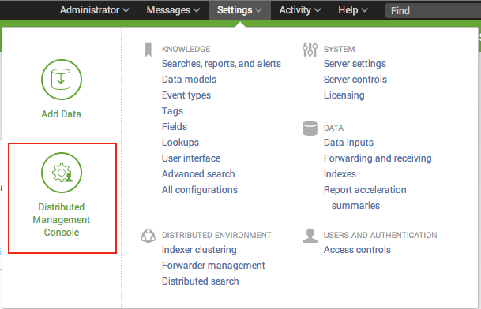
The distributed management console (DMC) is visible only to admin users.
You can leave DMC in standalone mode on your Splunk Enterprise instance, which means that you can navigate to the DMC on your individual instance in your deployment and see that particular instance's performance. Or you can go through the configuration steps for distributed mode. Distributed mode lets you log into one instance and view performance information for every instance in the deployment. Going through the configuration steps (even in standalone mode) also lets you access the default platform alerts.
Which instance should host the console?
After you configured the DMC in distributed mode, you can navigate to it on only one instance in your deployment and view the console information for your entire deployment.
You have several options for where to host the distributed management console. The instance you choose must be provisioned as a search head. See "Reference hardware" in the Capacity Planning Manual. For security and some performance reasons, only Splunk Enterprise administrators should have access to this instance.
Important: Except for the case of a standalone, non-distributed Splunk Enterprise deployment, the instance hosting the DMC should not be used as a production search head and should not run any searches unrelated to its function as the DMC. This table describes the recommended locations for the DMC, based on deployment type:
| Distributed | Indexer clustering | Search head clustering | DMC options |
|---|---|---|---|
| No | N/A | N/A | The standalone instance. |
| Yes | No | No | The license master or a deployment server servicing a small number (<50) of clients. Use of the instance should be limited to DMC and these specific functions. If neither a license master nor a deployment server is available, run the DMC on a dedicated search head not used for other purposes. |
| Yes | Single cluster | Not relevant | The master node. If preferred, you can instead run the DMC on a dedicated search head not used for other purposes. |
| Yes | Multiple clusters | Not relevant | A search head that is configured as a search head node across all the clusters. This search head must be limited only to DMC use. |
| Yes | No | Yes | The search head cluster deployer. If preferred, you can instead run the DMC on a dedicated search head not used for other purposes. |
In a deployment with a single indexer cluster: On the master node
In an indexer cluster, host the DMC on the master node. See "System requirements" in the Managing Indexes and Clusters Manual.
As an alternative, you can host the DMC on a search head node in the cluster. If you do so, however, you cannot use the search head to run any non-DMC searches.
In a deployment with multiple indexer clusters: On a search head node
If your deployment has multiple indexer clusters, host the DMC on a search head configured as a search head node on each of the clusters. Do not use this search head to run any non-DMC searches.
The main steps to accomplish this are:
1. Configure a single search head as a node on each of the indexer clusters. See Search across multiple indexer clusters" in the Managing Indexes and Clusters Manual. This is your DMC instance.
2. Configure each master node, as well as all search head nodes in the clusters, as search peers of the DMC instance. See Add instances as search peers."
Caution: Do not configure the cluster peer nodes (indexers) as search peers to the DMC node. As nodes in the indexer clusters, they are already known to all search head nodes in their cluster, including the DMC node.
In a non-indexer-cluster environment, option 1: On license master
You can configure the monitoring console on your license master if the following are true:
- Your license master can handle the search workload, that is, meets or exceeds the search head reference hardware requirements. See "Reference hardware" in the Capacity Planning Manual.
- Only Splunk Enterprise admins can access your dedicated license master.
In a non-indexer-cluster environment, option 2: On a new instance
Another option is to provision a new instance, configure it as a search head of search heads and a search head of indexers, and configure the DMC in distributed mode there.
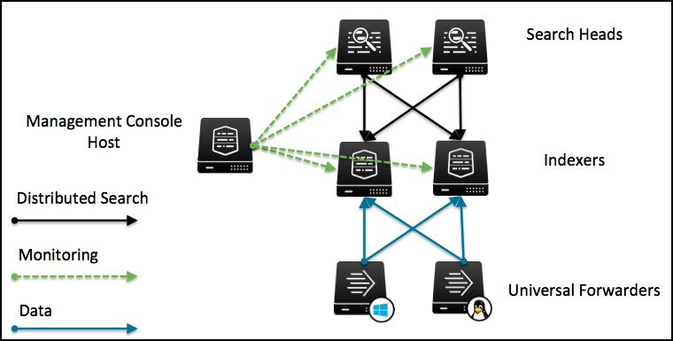
In a search head cluster environment
Use a deployer or dedicated license master for hosting the DMC. The DMC cannot be on a search head cluster member. See "System requirements and other deployment considerations for search head clusters" in the Distributed Search Manual.
The distributed management console is not supported in a search head pooled environment.
The DMC and deployment server
In most cases, you cannot host the distributed DMC on a deployment server. The exception is if the deployment server handles only a small number of deployment clients, no more than 50. The DMC and deployment server functionalities can interfere with each other at larger client counts. See "Deployment server provisioning" in the Updating Splunk Enterprise Instances manual.
Configure your DMC to monitor a deployment
Prerequisites
- Have a functional Splunk Enterprise deployment. See "Distributed Splunk Enterprise overview" in the Distributed Deployment Manual. Any instance that you want to monitor must be running Splunk Enterprise 6.1 or higher.
- Check whether your deployment is healthy, that is, that all peers are up.
- Make sure that each instance in the deployment (each search head, license master, and so on) has a unique server.conf
serverNamevalue and inputs.confhostvalue. - Forward internal logs (both
$SPLUNK_HOME/var/log/splunkand$SPLUNK_HOME/var/log/introspection) to indexers from all other instance types. See "Forward search head data" in the Distributed Search Manual. Without this step, many dashboards will lack data. These other instance types include:- Search heads.
- License masters.
- Cluster masters.
- Deployment servers.
- The user setting up the Distributed Management Console needs the "admin_all_objects" capability.
Add instances as search peers
1. Log into the instance on which you want to configure the distributed management console.
2. In Splunk Web, select Settings > Distributed search > Search peers.
3. Add each search head, deployment server, license master, and standalone indexer as a distributed search peer to the instance hosting the distributed management console. You do not need to add clustered indexers, but you must add clustered search heads.
Set up DMC in distributed mode
1. Log into the instance on which you want to configure the distributed management console. The instance by default is in standalone mode, unconfigured.
2. In Splunk Web, select Distributed management console > Setup.
3. Turn on distributed mode at the top left.
4. Check that:
- The columns labeled instance and machine are populated correctly and populated with values that are unique within a column. Note: If your deployment has nodes running Splunk Enterprise 6.1.x (instead of 6.2.0+), their instance (host) and machine values will not be populated.
- To find the value of machine, typically you can log into the 6.1.x instance and run
hostnameon *nix or Windows. Here machine represents the FQDN of the machine. - To find the value of instance (host), use btool:
splunk cmd btool inputs list default. - When you know these values, in the Setup page, click Edit > Edit instance. A popup presents you with two fields to fill in: Instance (host) name and Machine name.
- To find the value of machine, typically you can log into the 6.1.x instance and run
- The server roles are correct, with the primary or major roles. For example, a search head that is also a license master should have both roles marked. If not, click Edit to correct.
- A cluster master is identified if you are using indexer clustering. If not, click Edit to correct.
Caution: Make sure anything marked an indexer is really an indexer.
5. (Optional) Set custom groups. Custom groups are tags that map directly to distributed search groups. You don't need to add groups the first time you go through DMC setup (or ever). You might find groups useful, for example, if you have multisite indexer clustering (each group can consist of the indexers in one location) or an indexer cluster plus standalone peers. Custom groups are allowed to overlap. That is, one indexer can belong to multiple groups. See distributed search groups in the Distributed Search Manual.
6. Click Save.
7. (Optional) Set up platform alerts.
If you add another node to your deployment later, return to Setup and check that the items in step 4 are accurate.
Configure on a single instance
On a single Splunk Enterprise instance operating by itself, you must configure standalone mode before you can use platform alerts.
To configure:
1. Navigate to the Setup page in DMC.
2. Check that search head, license master, and indexer are listed under Server Roles, and nothing else. If not, click Edit.
3. Click Apply Changes to complete setup.
Return the DMC to default settings
To return an instance's Distributed Management Console to the default (original) settings, use the following procedure:
1. Delete the $SPLUNK_HOME/etc/apps/splunk_management_console/local directory.
2. Delete the $SPLUNK_HOME/etc/apps/splunk_management_console/lookups directory.
3. In $SPLUNK_HOME/etc/system/local/distsearch.conf, delete any stanzas that reference distributed search groups created by the DMC. The names of these groups are usually prefaced with dmc_group_*.
The following is an example of how these stanzas usually appear in distsearch.conf:
[distributedSearch:dmc_group_cluster_master]
servers = localhost:localhost
[distributedSearch:dmc_group_deployment_server]
[distributedSearch:dmc_group_kv_store]
[distributedSearch:dmc_group_search_head]
servers = localhost:localhost,undiag02.sv.splunk.com:8089
[distributedSearch:dmc_group_license_master]
servers = localhost:localhost
[distributedSearch:dmc_customgroup_primary_search-head]
servers = undiag02.sv.splunk.com:8089
[distributedSearch:dmc_group_indexer]
default = true
servers = 10.159.4.67:8089,10.159.4.70:8089,10.159.4.71:8089,10.159.4.73:80894. Once you have deleted all stanzas, save your changes.
5. Restart Splunk Enterprise.
Platform alerts
What are platform alerts?
Platform alerts are saved searches included in the distributed management console (DMC). Platform alerts notify Splunk Enterprise administrators of conditions that might compromise their Splunk Enterprise environment. The included platform alerts get their data from REST endpoints.
Platform alerts are disabled by default.
Enable platform alerts
Prerequisites
- Configure your distributed management console. From the DMC, click Setup. See "Configure the distributed management console."
- Set up alerting notifications for alerts on your deployment.
1. From the DMC Overview page, click Alerts > Enable or Disable.
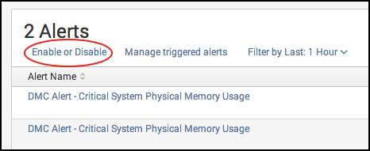
2. Click the Enabled check box next to the alert or alerts that you want to enable.
After an alert has triggered, you can view the alert and its results by going to Overview > Alerts > Managed triggered alerts.
See Configure platform alerts, next, for alert actions that you can configure, such as email notifications.
Configure platform alerts
From the DMC, navigate to Overview > Alerts > Enable or Disable. Find the alert you want to configure and click edit. You can view the default settings and change parameters such as:
- alert schedule
- suppression time
- alert actions (such as emails)
See "Set up alert actions," and see about all alerting options in the Alerting Manual.
You can also view the complete list of default parameters for platform alerts in $SPLUNK_HOME/etc/apps/splunk_management_console/default/savedsearches.conf. If you choose to edit configuration files directly, put the new configurations in a local directory instead of the default.
Which alerts are included?
To start monitoring your deployment with platform alerts, you must enable the individual alerts that you want. See "Enable platform alerts."
| Alert name | Description | For more information |
|---|---|---|
| Abnormal state of indexer processor | Fires when one or more of your indexers reports an abnormal state. This abnormal state can be either throttled or stopped. | For details on which indexer is in which abnormal state, and to begin investigating causes, see the DMC Indexing Performance: Deployment dashboard's Indexing Performance by Instance panel. See "Indexing performance: deployment" for information about the dashboard, and "How indexing works." |
| Critical system physical memory usage | Fires when one or more instances exceeds 90% memory usage. On most Linux distributions, this alert can trigger if the OS is engaged in buffers and filesystem cacheing activities. The OS releases this memory if other processes need it, so it does not always indicate a serious problem. | For details on instance memory usage, navigate to the DMC Resource Usage: Deployment dashboard, and see "Resource usage: deployment" in this manual. |
| Near-critical disk usage | Fires when you have used 80% of your disk capacity. | For more information about your disk usage, navigate to the three DMC Resource Usage dashboards and read the corresponding topics in this manual. |
| Saturated event-processing queues | Fires when one or more of your indexer queues reports a fill percentage, averaged over the last 15 minutes, of 90% or more. This alert can inform you of potential indexing latency. | For more details about your indexer queues, navigate to the two DMC Indexing Performance dashboards and read the corresponding topics in this manual. |
| Search peer not responding | Fires when any of your search peers (indexers) is unreachable. | For the status of all your instances, see the DMC Instances view. |
| Total license usage near daily quota | Fires when you have used 90% of your total daily license quota. | For more information about your license usage, click Licensing in the DMC. |
About search artifacts
In savedsearches.conf, the dispatch.ttl setting dictates that the searches from platform alerts keep search artifacts for four hours.
But if an alert is triggered, its search artifact stays for seven days. This means that the link sent in an email to inspect the search results of a triggered alert expires in seven days (by default).
Indexing performance: Instance
What does this view show?
Several panels about indexing performance on one instance of the potentially several in your deployment.
Interpret results in this view
The snapshot panel called Splunk Enterprise Data Pipeline exposes decaying averages for queue sizes. The averages use data over the previous 15 minutes. This panel, along with the historical panel Median Fill Ratio of Data Processing Queues, helps you narrow down sources of indexing latency to a specific queue. Data starts at parsing and travels through the data pipeline to indexing at the end.
The Aggregate CPU Seconds Spent per Indexer Processor Activity panel lets you "Split index service by subtask." The several index services are subtasks related to preparing for and cleaning up after indexing. For more information about the meaning of subtask categories, see the metrics.log topic in the Troubleshooting Manual.
What to look out for in this view
The Splunk Enterprise Data Pipeline panel, along with the historical panel Median Fill Ratio of Data Processing Queues, helps you narrow down sources of indexing latency to a specific queue. Data starts at parsing and travels through the data pipeline to indexing at the end. Here is an example of the panel in an instance with unhealthy queues:
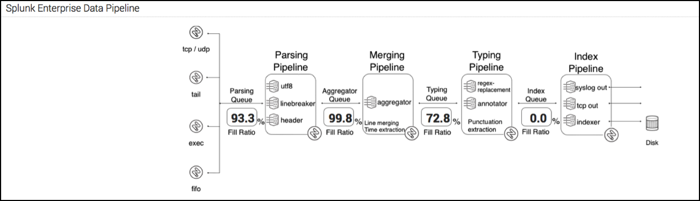
In this example, although the parsing and aggregator queues have very high fill ratios, the problem is likely to be with processes in the typing queue. The typing queue is the first one that slows down, and data is backing up into the other two queues while waiting to get into the typing queue.
Troubleshoot this view
The snapshot panels get data from Splunk REST endpoints for introspection. If snapshot panels lack data, check the system requirements for platform instrumentation.
The historical panels for this view get data from metrics.log.
Indexing performance: Deployment
What does this view show?
Several panels about indexing performance across your Splunk Enterprise deployment.
Interpret results in this view
In the Overview of Indexing Performance panel, total indexing rate is summed over all indexers.
In the Instances by Estimated Indexing Rate panel, the indexing rate is estimated because it uses metrics.log, which takes only the top ten results for each type by default. See "About metrics.log" in the Troubleshooting Manual.
Troubleshoot this view
The snapshot panels get data from Splunk REST endpoints for introspection. If snapshot panels lack data, check the system requirements for platform instrumentation.
The historical panels for this view get data from metrics.log.
Search activity: Instance
What does this view show?
Several panels about search activity.
Interpret results in this view
In the Median Resource Usage of Searches panel, note that:
- Resource usage is aggregated over all searches.
- Memory usage represents physical memory.
- In this chart, CPU usage is expressed in percentage of one core, not as system-wide CPU usage. As a result, you are likely to see values >100% here. This is not the case for other examples of CPU usage in the distributed management console.
In the Aggregate Search Runtime panel, note that:
- For each time bin in the chart, the DMC adds up the runtime of all searches that were running during that time range. Thus, you might see, for example, 1000 seconds of search in 5 minutes. This means that multiple searches were running over the course of those 5 minutes.
- For the modes historical batch and RT indexed, historical batch can be dispatched only by certain facilities within Splunk Enterprise (the scheduler, for example). RT indexed means indexed real-time.
In the Top 10 Memory-Consuming Searches panel, SID means search ID. If you are looking for information about a saved search, audit.log matches the name of your saved search (savedsearch_name) with its search ID (search_id), user, and time. With the search_id, you can look up that search elsewhere, like in the Splunk search logs (see "What Splunk logs about itself").
What to look for in this view
Consider your search concurrency and resource usage compared to your system limits.
For information, see:
- "Write better searches" in the Search Manual.
- "About search" in the Search Manual.
- "Configure the priority of scheduled reports" in the Reporting Manual.
- "Overview of summary-based search and pivot acceleration" in the Knowledge Manager Manual.
Troubleshoot this view
In the Search Activity panel, the snapshots are taken every ten seconds by default. So if no searches are currently running, or if the searches you run are very short lived, the snapshots panel is blank and says "no results found."
The historical panels get data from introspection logs. If a panel is blank or missing information from non-indexers, check:
- that you are forwarding your introspection logs to your indexers, and
- the system requirements for platform instrumentation.
Search activity: Deployment
What does this view show?
Several panels about search activity across your Splunk Enterprise deployment.
Interpret results in this view
The memory and CPU usage shown here are for searches only. See the resource usage dashboards for all Splunk Enterprise resource usage.
In the Instances by Median CPU Usage panel, CPU can be greater than 100% because of multiple cores.
In the Instances by Median Memory Usage panel, memory is physical.
For the modes historical batch and RT indexed: historical batch can be dispatched only by certain facilities within Splunk Enterprise (the scheduler, for example). RT indexed means indexed real-time.
What to look for in this view
Look for things that are close to exceeding their limits on your machines.
For more information, see:
- "Write better searches" in the Search Manual.
- "About search" in the Search Manual.
- "Configure the priority of scheduled reports" in the Reporting Manual.
- "Accommodate many simultaneous searches" in the Capacity Planning Manual.
Troubleshoot this view
The historical panels get data from introspection logs. If a panel is blank or missing information from non-indexers, check:
- that you're forwarding your introspection logs to your indexers, and
- the system requirements for platform instrumentation.
Search usage statistics: Instance
What does this view show?
Several panels about search usage statistics.
Interpret results in this view
In the Long-Running Searches panel:
- A start time of ZERO_TIME means that search will go up to the epoch.
- An end time of ZERO_TIME means that the search searches up until the moment that the search is fired.
- If both start and end time are listed as ZERO_TIME, that indicates an all-time search.
In the Common Search Commands panel, runtimes are in seconds.
What to look out for in this view
It's good practice to look at your long-running searches. You might find a search that you can optimize.
For more information, see "Write better searches" in the Search Manual.
Troubleshoot this view
The historical panels in this view get their data from audit.log. If a panel is blank or missing information from non-indexers, check that you're forwarding your introspection logs to your indexers.
The Long-Running Searches panel also uses information from a REST endpoint.
Resource usage: Instance
What does this view show?
Several panels about search activity.
Interpret results in this view
In the two "process class" panels, process class can be splunkd server, search, Splunk Web, index service, scripted input, KVStore, or other.
Process class means an aggregate of processes within one class. For more information about
- splunkd, read "Splunk Enterprise architecture and processes" in the Installation Manual.
- search, read "About search" and "Write better searches" in the Search Manual.
- splunkweb, read "Splunk Enterprise architecture and processes" in the Installation Manual.
- scripted input, read "Get data from APIs and other remote data interfaces through scripted inputs" in the Getting Data In Manual.
- KVStore, see the "KV store: Instance" view in DMC.
Index service consists of housekeeping tasks related to indexing. They run at the end of the indexing pipeline but are asynchronous. These processes run on their own, not through splunkd.
The Disk Usage and Median Disk Usage panels list only the partitions that Splunk Enterprise uses.
What to look out for in this view
If a process class that is using a lot of resources turns out to be search, go to the Search activity: Instance dashboard.
For long-running processes, a worrying thing to look out for is memory usage continuously increasing over time.
Troubleshoot this view
The historical panels get data from introspection logs. If a panel is blank or missing information from non-indexers, check:
- that you are forwarding your introspection logs to your indexers, and
- the system requirements for platform instrumentation.
Resource usage: Machine
What does this view show?
Several panels about search activity.
Interpret results in this view
This view can be useful for operational post mortems, as well as for capacity planning. See the Capacity Planning Manual for more information.
About physical memory usage in this view: on Linux, the OS starts using free physical memory to cache filesystem resources. But memory for this is loosely bound, and the OS frees it up if a higher priority process needs it. The DMC reporting cannot discern how much memory is loosely locked up in this way.
In the Median CPU Usage panel, 100% means the entire system, however many cores the system has. This is in contrast to the Search Activity dashboards, where 100% means one core.
The disk space in this view refers only to partitions with Splunk on them.
What to look out for in this view
For long-running processes, a worrying thing to look out for is memory usage continuously increasing over time.
Troubleshoot this view
The historical panels get data from introspection logs. If a panel is blank or missing information from non-indexers, check:
- that you're forwarding your introspection logs to your indexers, and
- the system requirements for platform instrumentation.
Resource usage: Deployment
What does this view show?
Several panels about search activity.
Interpret results in this view
About physical memory usage in this view: on Linux, the OS starts using free physical memory to cache filesystem resources. But memory for this is loosely bound, and the OS frees it up if a higher priority process needs it. The DMC reporting cannot discern how much memory is loosely locked up in this way.
The Deployment-Wide Median Disk Usage panel takes into account all partitions in use by each Splunk Enterprise instance.
What to look out for in this view
The common theme in this view is that instances are grouped by value ranges. One interesting thing to look for is outliers: instances that are not like the others. Another thing to look for is patterns that appear over time.
Troubleshoot this view
The historical panels get data from introspection logs. If a panel is blank or missing information from non-indexers, check:
- that you're forwarding your introspection logs to your indexers, and
- the system requirements for platform instrumentation.
KV store: Instance
What does this view show?
The instance level KV store view in the distributed management console (DMC) shows performance information about a single Splunk Enterprise instance running the app key-value store. If you have configured the DMC with your distributed deployment, you can select which instance in your deployment to view.
Performance metrics
Collection metrics come from the KVStoreCollectionStats component in the _introspection index, which is a historical record of the data at the /services/server/introspection/kvstore/collectionstats REST endpoint. The metrics are:
- Application. The application the collection belongs to.
- Collection. The name of the collection in KV store.
- Number of objects. The count of data objects stored in collection.
- Accelerations. The count of accelerations set up on the collection. Note: These are traditional database-style indexes used for performance and search acceleration.
- Accelerations size. The size in MBs of the indexes set up on the collection.
- Collection size. The size in MBs of all data stored in the collection.
Snapshots are collected through REST endpoints, which deliver the most recent information from the pertinent introspection components. The KV store instance snapshots use the endpoint /services/server/introspection/kvstore/serverstatus.
- Lock percentage. The percentage of KV store uptime that the system has held either global read or write locks. A high lock percentage has impacts across the board. It can starve replication or even make application calls slow, time out, or fail.
- Page fault percentage. The percentage of KV store operations that resulted in a page fault. A percentage close to 1 indicates poor system performance and is a leading indicator of continued sluggishness as KV store is forced to fallback on disk I/O rather than access data store efficiently in memory.
- Memory usage. The amount of resident, mapped, and virtual memory in use by KV store. Virtual memory usage is typically twice that of mapped memory for KV store. Virtual memory usage in excess of 3X mapped might indicate a memory leak.
- Network traffic. Total MBs in and out of KV store network traffic.
- Flush percentage. Percentage of a minute it takes KV store to flush all writes to disk. Closer to 1 indicates difficulty writing to disk or consistent large write operations. Some OSes can flush data faster than 60 seconds. In that case, this number can be small even if there is a writing bottleneck.
- Operations. Count of operations issued to KV store. Includes commands, updates, queries, deletes, getmores, and inserts. The introspection process issues a command to deliver KV store stats so the commands counter is typically higher than most other operations.
- Current connections. Count of connections open on KV store.
- Total queues. Total operations queued waiting for the lock.
- Total asserts. Total number of asserts raised by KV store. A non-negative number can indicate a need to check KV store logs.
Historical
Many of the statistics in this section are present in the Snapshots section. The Historical view presents trend information for the metrics across a set span of time. These stats are collected in KVStoreServerStats. By default the Historical panels show information for the past 4 hours. Any gaps in the graphs in this section typically indicate a point at which KV store or Splunk Enterprise was unreachable.
- Memory usage - see above.
- Replication lag. The amount of time between the last operation recorded in the Primary OpLog and the last operation applied to a secondary node. Replication lag in excess of the primary opLog window could result in data not being properly replicated across all nodes of the replication set. In standalone instances without replication this panel does not return any results. Note: Replication lag is collected in the KVStoreReplicaSetStats component in the _introspection index.
- Operation count (average by minute) - see above. This panel shows individual operation types (for example, commands, updates, and deletes) or for all operations.
- Asserts - see above. This panel allows for filtering based on type of assert - message, regular, rollovers, user, warning.
- Lock percentage. Percentage of KV store uptime that the system has held global, read, or write locks. Filter this panel by type of lock held:
- Read. Lock held for read operations.
- Write. Lock held for write operations. KV store locking is "writer greedy," so write locks can make up the majority of the total locks on a collection.
- Global. Lock held by the global system. KV store implements collection-level locks, reducing the need for aggressive use of the global lock.
- Page faults as a percentage of total operations - see above.
- Network traffic - see above. Added to this panel are requests made to the KV store.
- Queues over time. The number of queues, broken down by:
- Read. Count of read operations waiting for a read lock to open.
- Write. Count of write operations waiting for a write lock to open.
- Total.
- Connections over time.
- Percent of each minute spent flushing to disk - see above.
- Slowest operations. The ten slowest operations logged by KV store in the selected time frame. If profiling is off for all collections, this could have no results even if you have very slow operations running. Enable profiling on a per collection basis in collections.conf.
Where does this view get its data from?
KV store collects data in the _introspection index.
These statistics are broken into the following components:
- KVStoreServerStats. Information about how the KV store process is performing as a whole. Polled every 27 seconds.
- KVStoreCollectionStats. Information about collections within the KV store. Polled every 10 minutes.
- KVStoreReplicaSetStats. Information about replication data across KV store Instances. Polled every 60 seconds.
- KVProfilingStats. Information about slow operations. Polled every 5 seconds. Only available when profiling is enabled. Note: Enable profile only on development systems or for troubleshooting issues with KV store performance beyond what is available in the default panels. Profiling can negatively affect system performance and so should not be enabled in production environments.
In addition, KV store produces entries in a number of internal logs collected by Splunk Enterprise.
Interpret results in this view
For information on performance indicators and red flags, see "KV store: Deployment" in this manual.
Troubleshoot this view
The historical panels get data from introspection logs. Any gaps in time in the graphs in this section typically indicate a point at which KV store or Splunk Enterprise was unreachable. If a panel is completely blank or missing data from specific Splunk Enterprise instances, check:
- that you're forwarding your introspection logs to your indexers, and
- the system requirements for platform instrumentation.
KV store: Deployment
What does this view show?
The KV store: Deployment view in the distributed management console (DMC) provides information aggregated across all KV stores in your Splunk Enterprise deployment. For an instance to be included in this view, it must be set with the server role of KV store. Do this in the DMC Setup page.
This view and the KV store: Instance view track much of the same information. The difference is that this deployment view collects statistics from KV stores and displays the instances grouped by values of those different metrics.
For definitions and context on the individual dashboards and metrics, see "KV store: instance" in this chapter.
Performance Metrics
Deployment Snapshots
Deployment Snapshot Statistics access the /services/server/introspection/kvstore/serverstatus REST endpoint. For each KV store instance in the deployment, the Deployment Snapshots provide the following information:
- Instance. The Splunk Enterprise instance name.
- Memory usage
- Total queued
- Current connections
- Page faults per operation
- Lock (%)
- Last flush (ms)
- Network traffic (MB)
- Up time (in hours). Amount of time the current instance has been running without restart
- Replication role. The role the instance plays in the replication set. If the instance is not part of a replication set, it returns "N/A."
Where does this view get its data from?
KV store collects data in the _introspection index.
These statistics are broken into the following components:
- KVStoreServerStats. Information about how the KV store process is performing as a whole. Polled every 27 seconds.
- KVStoreCollectionStats. Information about collections within the KV store. Polled every 10 minutes.
- KVStoreReplicaSetStats. Information about replication data across KV store Instances. Polled every 60 seconds.
- KVProfilingStats. Information about slow operations. Polled every 5 seconds. Only available when profiling is enabled. Note: Enable profile only on development systems or for troubleshooting issues with KV store performance beyond what is available in the default panels. Profiling can negatively affect system performance and so should not be enabled in production environments.
In addition, KV store produces entries in a number of internal logs collected by Splunk Enterprise.
Interpret this view
| Panel | Critical | Warning | Normal | Interpretation |
|---|---|---|---|---|
| Page faults per operation | 1.3+
Reads require heavy disk I/O, which could indicate a need for more RAM. | 0.7–1.3
Reads regularly require disk I/O. | 0–0.7
Reads rarely require disk I/O. | Measures how often read requests are not satisfied by what Splunk Enterprise has in memory, requiring Splunk Enterprise to contact the disk. |
| Lock percentage | 50%+ | 30%–50% | 0–30% | High lock percentage can starve replication and/or cause application calls to be slow, time out, or fail. High lock percentage typically means that heavy write activity is occurring on the node. |
| Network traffic | N/A | N/A | N/A | Network traffic should be commensurate with system use and application expectations. No default thresholds apply. |
| Replication latency | >30 seconds | 10–30 seconds | 0–10 seconds | Replication needs are system dependent. Generally, replica set members should not fall significantly behind the KV captain. Replication latency over 30 seconds can indicate a mounting replication problem. |
| Primary operations log window | N/A | N/A | N/A | Provided for reference. This is the amount of data, in terms of time, a system saved in the operations log for restoration. |
| Flushing rate | 50%–100% | 10%–50% | 0–10% | A high flush rate indicates heavy write operations or sluggish system performance. |
Troubleshoot this view
The historical panels get data from the _introspection and _internal indexes. Gaps in time in these panels indicate a point at which KV store or Splunk Enterprise was unreachable. If a panel is completely blank or missing data from specific Splunk Enterprise instances, check:
- that you're forwarding your logs to your indexers, and
- the system requirements for platform instrumentation.
Licensing
The Licensing view in the distributed management console (DMC) presents the same information as the license usage report view. The advantage to accessing this view through the DMC instead of through your license master is that if your deployment has multiple license masters, in the DMC view you can select which license master's information to view.
For details about the information in this view, see "About the Splunk Enterprise license usage report view" in this manual.
Administer the app key value store
About the app key value store
The app key value store (or KV store) provides a way to save and retrieve data within your Splunk apps, thereby letting you manage and maintain the state of the application.
Here are some ways that Splunk apps might use the KV Store:
- Tracking workflow in an incident-review system that moves an issue from one user to another.
- Keeping a list of environment assets provided by users.
- Controlling a job queue.
- Managing a UI session by storing the user or application state as the user interacts with the app.
- Storing user metadata.
- Caching results from search queries by Splunk or an external data store.
- Storing checkpoint data for modular inputs.
For information on using the KV store, see app key value store documentation for Splunk app developers.
How KV store works with your deployment
The KV store stores your data as key-value pairs in collections. Here are the main concepts:
- Collections are the containers for your data, similar to a database table. Collections exist within the context of a given app.
- Records contain each entry of your data, similar to a row in a database table.
- Fields correspond to key names, similar to the columns in a database table. Fields contain the values of your data as a JSON file. Although it is not required, you can enforce data types (number, boolean, time, and string) for field values.
- _key is a reserved field that contains the unique ID for each record. If you don't explicitly specify the _key value, the app auto-generates one.
- _user is a reserved field that contains the user ID for each record. This field cannot be overridden.
- Accelerations improve search performance by making searches that contain accelerated fields return faster. Accelerations store a small portion of the collection's data set in an easy-to-traverse form.
The KV store files reside on search heads.
In a search head cluster, if any node receives a write, the KV store delegates the write to the KV store captain. The KV store keeps the reads local, however.
System requirements
KV store is available and supported on all Splunk Enterprise 64-bit builds. It is not available on 32-bit Splunk Enterprise builds. KV store is also not available on universal forwarders. See the Splunk Enterprise system requirements.
KV store uses port 8191 by default. You can change the port number in server.conf's [kvstore] stanza. For information about other ports that Splunk Enterprise uses, see "System requirements and other deployment considerations for search head clusters" in the Distributed Search Manual.
For information about other configurations that you can change in KV store, see the "KV store configuration" section in server.conf.spec.
About Splunk FIPS
To use FIPS with KV store, see the "KV store configuration" section in server.conf.spec.
If Splunk FIPS is not enabled, those settings will be ignored.
If you enable FIPS but do not provide the required settings (caCertPath, sslKeysPath, and sslKeysPassword), KV store does not run. Look for error messages in splunkd.log and on the console that executes splunk start.
Determine whether your apps use KV store
KV store is enabled by default on Splunk Enterprise 6.2+.
Apps that use the KV store typically have collections.conf defined in $SPLUNK_HOME/etc/apps/<app name>/default. In addition, transforms.conf will have references to the collections with external_type = kvstore
Use the KV store
To use the KV store:
1. Create a collection and optionally define a list of fields with data types using configuration files or the REST API.
2. Perform create-read-update-delete (CRUD) operations using search lookup commands and the Splunk REST API.
3. Manage collections using the REST API.
Monitor its effect on your Splunk Enterprise deployment
You can monitor your KV store performance through two views in the distributed management console. One view provides insight across your entire deployment (see "KV store: Deployment" in this manual). The other view gives you information about KV store operations on each search head (see "KV store: Instance").
Back up KV store data
Back up and restore your KV store data using the standard backup and restore tools and procedures used by your organization. To back up KV store data, back up all files in the path that is specified in the dbPath parameter of the [kvstore] stanza in the server.conf file.
For general information about backup strategies in Splunk Enterprise, see "Choose your backup strategy" in the Managing Indexers and Clusters of Indexers manual.
Meet Splunk apps
Apps and add-ons
Users often ask for definitions of app and add-on in an effort to determine what differentiates them from each other. There are no definitive criteria that universally distinguish an app from an add-on. Both are packaged sets of configuration that you install on your instance of Splunk Enterprise, and both make it easier to integrate with, or ingest data from, other technologies or vendors.
- Apps generally offer extensive user interfaces that enable you to work with your data, and they often make use of one or more add-ons to ingest different types of data.
- Add-ons generally enable Splunk Enterprise, or a Splunk app, to ingest or map a particular type of data.
To an Admin user, the difference should matter very little as both apps and add-ons function as tools to help you get data into Splunk Enterprise, then efficiently use it. To an app developer, the difference matters more: see dev.splunk.com for guidance on developing an app.
App
An app is an application that runs on Splunk Enterprise. Out of the box, Splunk Enterprise includes one basic, default app that enables you to work with your data: the Search and Reporting app. To address use cases beyond the basic, you can install many other apps, some free, some paid, on your instance of Splunk Enterprise. Examples include Splunk App for Microsoft Exchange, Splunk App for Enterprise Security, and Splunk DB Connect. An app may make use of one or more add-ons to facilitate how it collects or maps particular types of data.
Add-on
An add-on runs on Splunk Enterprise to provide specific capabilities to apps, such as getting data in, mapping data, or providing saved searches and macros. Examples include Splunk Add-on for Checkpoint OPSEC LEA, Splunk Add-on for Box, and Splunk Add-on for McAfee.
App and add-on support and certification
Anyone can develop an app or add-on for Splunk software. Splunk and members of our community create apps and add-ons and share them with other users of Splunk software via Splunkbase, the online app marketplace. Splunk does not support all apps and add-ons on Splunkbase. Labels in Splunkbase indicate who supports each app or add-on.
- The Splunk Support team accepts cases and responds to issues only for the apps and add-ons which display a Splunk Supported label on Splunkbase.
- Some developers support their own apps and add-ons. These apps and add-ons display a Developer Supported label on Splunkbase.
- The Splunk developer community supports apps and add-ons which display a Community Supported label on Splunkbase.


Further, app developers can obtain Splunk Certification for their app or add-on. This means that Splunk has examined an app or add-on and found that it conforms to best practices for Splunk development. Certification does not, however, mean that Splunk supports an app or add-on. For example, an add-on created by a community developer that is published on Splunkbase and certified by Splunk is not supported by Splunk. Look for a Splunk Supported label on Splunkbase to determine that Splunk supports an app or add-on.
Search and Reporting app
The first time you install and log into Splunk, you land in Splunk Home. The Home page displays Click on Apps in the apps that have been pre-installed for you.
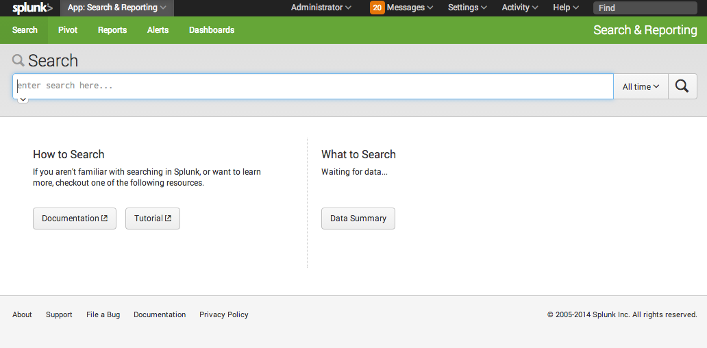
By default, Splunk provides the Search and Reporting app. This interface provides the core functionality of Splunk and is designed for general-purpose use. This app displays at the top of your Home Page when you first log in and provides a search field so that you can immediately starting using it.
Once in the Search and Reporting app (by running a search or clicking on the app in the Home page) you can use the menu bar options to select the following:
- Search: Search your indexes. See the "Using Splunk Search" in the Search Tutorial for more information.
- Pivot: Use data models quickly design and generate tables, charts, and visualizations for your data. See the Pivot Manual for more information.
- Reports: Turn your searches into reports. "Saving and sharing reports" in the Search Tutorial for more information.
- Alerts: Set up alerts for your Splunk searches and reports. See the Alerting Manual for more information
- Dashboards: Leverage predefined dashboards or create your own. See Dashboards and Visualizations manual.
Configure Splunk Web to open in an app
You can configure Splunk Web so that it opens in a specific app of your choosing instead of Splunk Home. You can make Splunk Web open to open in a specific app for all users, or match apps to specific users.
Bypass Splunk Home for a single user
You can configure Splunk Web so that when a user logs in, they go straight to an app of your choosing, rather than Splunk Home.
To make the Search app the default landing app for a user:
1. Create a file called user-prefs.conf in the user's local directory:
etc/users/<user>/user-prefs/local/user-prefs.conf
- For the
adminuser the file would be in:
etc/users/admin/user-prefs/local/user-prefs.conf
- For the
testuser, it would be in:
etc/users/test/user-prefs/local/user-prefs.conf
2. Put the following line in the user-prefs.conf file:
default_namespace = search
Bypass Splunk Home for all users
You can specify a default app for all users to land in when they log in. For example, if you want the Search app to be the global default, edit $SPLUNK_HOME/etc/apps/user-prefs/local/user-prefs.conf and specify:
[general_default]
default_namespace = search
Note: Users who do not have permission to access the Search app will see an error.
Where to get more apps and add-ons
You can find new apps and add-ons on Splunkbase: https://splunkbase.splunk.com/.
You can access Splunkbase from the Splunk Enterprise User bar, and download and install apps directly within Splunk Enterprise. Click the Apps menu and select Find more Apps.
When you log into Splunk Web, you see Splunk Home by default. You can always get back to Splunk Home by clicking on the Splunk logo at the top (left-hand side) of the page.
If you are connected to the internet
If your Splunk Enterprise server or your client machine are connected to the internet, you can download apps and add-ons directly from Splunk Home:
1. In the User bar, click on the Apps menu and select Find More Apps.

2. In the list of apps and add-ons, pick the app or add-on you want and select Download App.
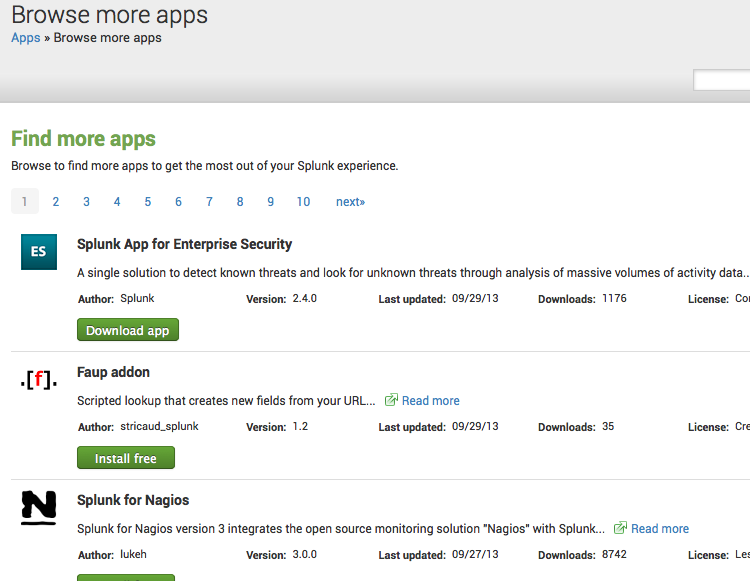
3. You will be prompted to log in with your splunk.com username and password (note that this is not your Splunk Enterprise username and password).
4. Your selected item is installed. If it has a Web GUI component (most add-ons contain only knowledge objects like event type definitions and don't have any GUI context), you can navigate to it from Splunk Home.
Important: If Splunk Web is located behind a proxy server, you might have trouble accessing Splunkbase. To solve this problem, you need to set the HTTP_PROXY environment variable, as described in "Specify a proxy server".
If you are not connected to the internet
If your Splunk Enterprise server and client do not have internet connectivity, you must download apps from Splunkbase and copy them over to your server:
1. From a computer connected to the internet, browse Splunkbase for the app or add-on you want.
2. Download the app or add-on.
3. Once downloaded, copy it to your Splunk Enterprise server.
4. Put it in your $SPLUNK_HOME/etc/apps directory.
5. Untar and ungzip your app or add-on, using a tool like tar -xvf (on *nix) or WinZip (on Windows). Note that Splunk apps and add-ons are packaged with a .SPL extension although they are just tarred and gzipped. You may need to force your tool to recognize this extension.
6. You may need to restart Splunk Enterprise, depending on the contents of the app or add-on.
7. Your app or add-on is now installed and will be available from Splunk Home (if it has a web UI component).
App architecture and object ownership
Apps are commonly built from Splunk knowledge objects. Splunk knowledge objects include saved searches, event types, tags -- data types that enrich your Splunk deployment and make it easier to find what you need.
Note: Occasionally you may save objects to add-ons as well, though this is not common. Apps and add-ons are both stored in the apps directory. On the rare instance that you would need to save objects to an add-on, you would manage the add-on the same as described for apps in this topic.
Any user logged into Splunk Web can create and save knowledge objects to the user's directory under the app the user is "in" (assuming sufficient permissions). This is the default behavior -- whenever a user saves an object, it goes into the user's directory in the currently running app.
The user directory is located at $SPLUNK_HOME/etc/users/<user_name>/<app_name>/local. Once the user has saved the object in that app, it is available only to that user when they are in that app unless they do one of the following:
- Promote the object so that it is available to all users who have access
- Restrict the object to specific roles or users (still within the app context)
- Mark the object as globally available to all apps, add-ons and users (unless you've explicitly restricted it by role/user)
Note: Users must have write permissions for an app or add-on before they can promote objects to that level.
Users can share their Splunk knowledge objects with other users through the Permissions dialog. This means users who have read permissions in an app or add-on can see the shared objects and use them. For example, if a user shares a saved search, other users can see that saved search, but only within the app in which the search was created. So if you create a saved search in the app "Fflanda" and share it, other users of Fflanda can see your saved search if they have read permission for Fflanda.
Users with write permission can promote their objects to the app level. This means the objects are copied from their user directory to the app's directory -- from:
$SPLUNK_HOME/etc/users/<user_name>/<app_name>/local/
to:
$SPLUNK_HOME/etc/apps/<app_name>/local/
Users can do this only if they have write permission in the app.
Make Splunk knowledge objects globally available
Finally, upon promotion, users can decide if they want their object to be available globally, meaning all apps are able to see it. Again, the user must have permission to write to the original app. It's easiest to do this in Splunk Web, but you can also do it later by moving the relevant object into the desired directory.
To make globally available an object "A" (defined in "B.conf") that belongs to user "C" in app "D":
1. Move the stanza defining the object A from $SPLUNK_HOME/etc/users/C/D/B.conf into $SPLUNK_HOME/etc/apps/D/local/B.conf.
2. Add a setting, export = system, to the object A's stanza in the app's local.meta file. If the stanza for that object doesn't already exist, you can just add one.
For example, to promote an event type called "rhallen" created by a user named "fflanda" in the *Nix app so that it is globally available:
1. Move the [rhallen] stanza from $SPLUNK_HOME/etc/users/fflanda/unix/local/eventtypes.conf to $SPLUNK_HOME/etc/apps/unix/local/eventtypes.conf.
2. Add the following stanza:
[eventtypes/rhallen]
export = system
to $SPLUNK_HOME/etc/apps/unix/metadata/local.meta.
Note: Adding the export = system setting to local.meta isn't necessary when you're sharing event types from the Search app, because it exports all of its events globally by default.
What objects does this apply to?
The knowledge objects discussed here are limited to those that are subject to access control. These objects are also known as app-level objects and can be viewed by selecting Apps > Manage Apps from the User menu bar. This page is available to all users to manage any objects they have created and shared. These objects include:
- Saved searches and Reports
- Event types
- Views and dashboards
- Field extractions
There are also system-level objects available only to users with admin privileges (or read/write permissions on the specific objects). These objects include:
- Users
- Roles
- Auth
- Distributed search
- Inputs
- Outputs
- Deployment
- License
- Server settings (for example: host name, port, etc)
Important: If you add an input, Splunk adds that input to the copy of inputs.conf that belongs to the app you're currently in. This means that if you navigated to your app directly from Search, your input will be added to $SPLUNK_HOME/etc/apps/search/local/inputs.conf, which might not be the behavior you desire.
App configuration and knowledge precedence
When you add knowledge to Splunk, it's added in the context of the app you're in when you add it. When Splunk is evaluating configurations and knowledge, it evaluates them in a specific order of precedence, so that you can control what knowledge definitions and configurations are used in what context. Refer to About configuration files for more information about Splunk configuration files and the order of precedence.
Manage app and add-on objects
When an app or add-on is created by a Splunk user, a collection of objects is created that make up the app or add-on. These objects can include views, commands, navigation items, event types, saved searches, reports, and more. Each of these objects have permissions associated with them to determine who can view or alter them. By default, the admin user has permissions to alter all the objects in the Splunk system.
Refer to these topics for more information:
- For an overview of apps and add-ons, refer to "What are apps and add-ons?" in this manual.
- For more information about app and add-on permissions, refer to "App architecture and object ownership" in this manual.
- To learn more about how to create your own apps and add-ons, refer to the Developing Views and Apps for Splunk Web manual.
View and manage app or add-on objects in Splunk Web
You can use Splunk Web to view the objects in your Splunk deployment in the following ways:
- To see all the objects for all the apps/add-ons on your system at once: Settings > All configurations.
- To see all the saved searches and report objects: Settings > Searches and reports.
- To see all the event types: Settings > Event types.
- To see all the field extractions: Settings > Fields.
You can:
- View and manipulate the objects on any page with the sorting arrows
- Filter the view to see only the objects from a given app or add-on, owned by a particular user, or those that contain a certain string, with the App context bar.
Use the Search field on the App context bar to search for strings in fields. By default, Splunk searches for the string in all available fields. To search within a particular field, specify that field. Wildcards are supported.
Note: For information about the individual search commands on the Search command page, refer to the Search Reference Manual.
Update an app or add-on in the CLI
To update an existing app on your Splunk instance using the CLI:
./splunk install app <app_package_filename> -update 1 -auth <username>:<password>
Splunk updates the app or add-on based on the information found in the installation package.
Disable an app or add-on using the CLI
To disable an app via the CLI:
./splunk disable app [app_name] -auth <username>:<password>
Note: If you are running Splunk Free, you do not have to provide a username and password.
Uninstall an app or add-on
To remove an installed app from a Splunk installation:
1. (Optional) Remove the app or add-on's indexed data. Typically, Splunk does not access indexed data from a deleted app or add-on. However, you can use Splunk's CLI clean command to remove indexed data from an app before deleting the app. See Remove data from indexes with the CLI command.
2. Delete the app and its directory. This should be located in $SPLUNK_HOME/etc/apps/<appname>. You can run the following command in the CLI:
3. You may need to remove user-specific directories created for your app or add-on by deleting the files (if any) found here: $SPLUNK_HOME/splunk/etc/users/*/<appname>
4. Restart Splunk.
Managing app and add-on configurations and properties
You can manage the configurations and properties for apps installed in your Splunk Enterprise instance from the Apps menu. Click on Apps in the User bar to select one of your installed apps or manage an app. From the Manage Apps page, you can do the following:
- Edit permissions for an app or add-on
- Enable or disable an app or add-on
- Perform actions, such as launch the app, edit the properties, and view app objects
Edit app and add-on properties
The edits you make to configuration and properties depend on whether you are the owner of the app or a user.
Select Apps > Manage Apps then click Edit properties for the app or add-on you want to edit. You can make the following edits for apps installed in this Splunk Enterprise instance.
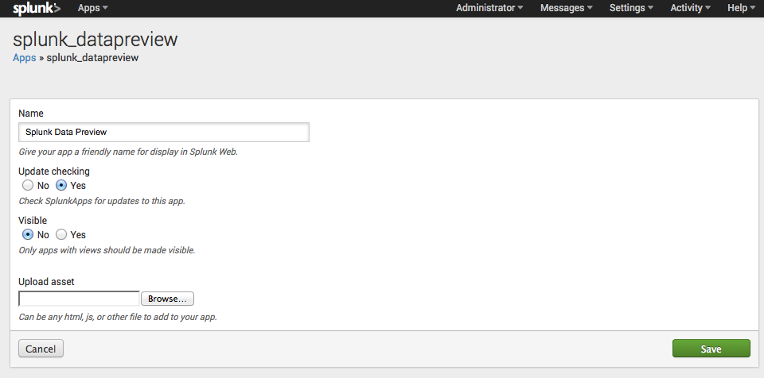
- Name: Change the display name of the app or add-on in Splunk Web.
- Update checking: By default, update checking is enabled. You can override the default and disable update checking. See Checking for app an add-on updates below for details.
- Visible: Apps with views should be visible. Add-ons, which often do not have a view, should disable the visible property.
- Upload asset: Use this field to select a local file asset files, such as an HTML, JavaScript, or CSS file that can be accessed by the app or add-on. You can only upload one file at a time from this panel.
Refer to Apps and add-ons: An Introduction for details on the configuration and properties of apps and add-ons.
Checking for updates
You can configure Splunk Enterprise whether to check Splunkbase for updates to an app or add-on. By default, checking for updates is enabled. You can disable checking for updates for an app by editing this property from Settings > Apps > Edit properties.
However, if this property is not available in Splunk Web, you can also manually edit the apps app.conf file to disable checking for updates. Create or edit the following stanza in $SPLUNK_HOME/etc/apps/<app_name>/local/app.conf to disable checking for updates:
[package]
check_for_updates = 0
Note: Edit the local version of app.conf, not the default version. This avoids overriding your setting with the next update of the app.
Meet Hunk
Meet Hunk
Hunk lets you configure remote HDFS datastores as virtual indexes so that Splunk can natively report on data residing in Hadoop. Once your virtual index is properly configured, you can report and visualize data residing in remote Hadoop datastores. The following links point to topics in the Hunk User Manual.
Hunk Manual
Introduction
- Meet Hunk
- What's new for Hunk 6.2
- FAQ
- Learn more and get help
Hunk concepts
- About virtual indexes
- About external results providers
- About streaming resource libraries
- How Splunk returns reports on Hadoop data
- About pass-through authentication
Install Hunk
- About installing and configuring Hunk
- System and software requirements
- Download and install Splunk
- Upgrade Hunk
- Start Splunk
- License Hunk
- Use Hunk and Splunk together
- Uninstall Hunk
- Get Hunk with the Hunk Amazon Machine Image
Manage Hunk using the configuration files
- Set up your Splunk search head instance
- Set up a provider and virtual index in the configuration file
- Set up a streaming library
- Add a sourcetype
- Manage Hive data
- Configure Hive preprocessor
- Configure Hive preprocessor for Parquet
- Configure Hunk to run reports as a different user
- Configure report acceleration
- Configure pass-through authentication
- Configure Kerberos authentication
Manage Hunk in the user interface
- About the Hunk user interface
- Add or edit an HDFS provider
- Add or edit a virtual index
- Set up pass-through authentication
Search virtual indexes
- Use search commands on a virtual index
- Work with report acceleration
Reference
- Troubleshoot Hunk
- Performance best practices
- Provider Configuration Variables
- Required configuration variable for YARN
REST API reference
- Providers
- Indexes
Release Notes
- Known issues
Tutorial
- Welcome to the Hunk tutorial
- Step 1: Set up a Hadoop Virtual Machine instance
- Step 2: Set up your data
- Step 3: Set up an HDFS directory for Hunk access
- Step 4: Install and license Hunk
- Step 5: Configure an HDFS provider
- Step 6: Set up a Virtual Index
- Step 7: Try a simple data search
- Step 8: Save a report
- Learn more
Manage users
About users and roles
If you're running Splunk Enterprise, you can create users with passwords and assign them to roles you have created. Splunk Free does not support user authentication.
Splunk comes with a single default user, the admin user. The default password for the admin user is changeme. As the password implies, you should change this password immediately upon installing Splunk.
Create users
Splunk ships with support for three types of authentication systems, which are described in the Security Manual:
- Splunk's own built-in system. See "About user authentication with Splunk's built-in system" for more information.
- LDAP. Splunk supports authentication with its internal authentication services or your existing LDAP server. See "Set up user authentication with LDAP" for more information.
- Scripted authentication API. Use scripted authentication to tie Splunk's authentication into an external authentication system, such as RADIUS or PAM. See "Set up user authentication with external systems" for more information.
About roles
Users are assigned to roles. A role contains a set of capabilities. These specify what actions are available to roles. For example, capabilities determine whether someone with a particular role is allowed to add inputs or edit saved searches. The various capabilities are listed in "About defining roles with capabilities" in the Securing Splunk Enterprise manual.
By default, Splunk comes with the following roles predefined:
- admin -- this role has the most capabilities assigned to it.
- power -- this role can edit all shared objects (saved searches, etc) and alerts, tag events, and other similar tasks.
- user -- this role can create and edit its own saved searches, run searches, edit its own preferences, create and edit event types, and other similar tasks.
For detailed information on roles and how to assign users to roles, see the chapter "Users and role-based access control" in the Security Manual.
Find existing users and roles
To locate an existing user or role in Splunk Web, use the Search bar at the top of the Users or Roles page in the Access Controls section by selecting Settings > Access Controls. Wildcards are supported. Splunk searches for the string you enter in all available fields by default. To search a particular field, specify that field. For example, to search only email addresses, type "email=<email address or address fragment>:, or to search only the "Full name" field, type "realname=<name or name fragment>. To search for users in a given role, use "roles=".

Configure user language and locale
When a user logs in, Splunk automatically uses the language that the user's browser is set to. To switch languages, change the browser's locale setting. Locale configurations are browser-specific.
Splunk detects locale strings. A locale string contains two components: a language specifier and a localization specifier. This is usually presented as two lowercase letters and two uppercase letters linked by an underscore. For example, "en_US" means US English and "en_GB" means British English.
The user's locale also affects how dates, times, numbers, etc., are formatted, as different countries have different standards for formatting these entities.
Splunk provides built-in support for these locales:
de_DE
en_GB
en_US
it_IT
ja_JP
ko_KO
zh_CN
zh_TW
If you want to add localization for additional languages, refer to "Translate Splunk" in the Developer manual for guidance. You can then tell your users to specify the appropriate locale in their browsers.
How browser locale affects timestamp formatting
By default, timestamps in Splunk are formatted according the browser locale. If the browser is configured for US English, the timestamps are presented in American fashion: MM/DD/YYYY:HH:MM:SS. If the browser is configured for British English, then the timestamps will be presented in the European date format: DD/MM/YYYY:HH:MM:SS.
For more information on timestamp formatting, see "Configure timestamp recognition" in the Getting Data In manual.
Override the browser locale
The locale that Splunk uses for a given session can be changed by modifying the url that you use to access Splunk. Splunk urls follow the form http://host:port/locale/.... For example, when you access Splunk to log in, the url may appear as http://hostname:8000/en-US/account/login for US English. To use British English settings, you can change the locale string to http://hostname:8000/en-GB/account/login. This session then presents and accepts timestamps in British English format for its duration.
Requesting a locale for which the Splunk interface has not been localized results in the message: Invalid language Specified.
Refer to "Translate Splunk" in the Developer Manual for more information about localizing Splunk.
Configure user session timeouts
The amount of time that elapses before a Splunk user's session times out depends on the interaction among three timeout settings:
- The
splunkwebsession timeout. - The
splunkdsession timeout. - The browser session timeout.
The splunkweb and splunkd timeouts determine the maximum idle time in the interaction between browser and Splunk. The browser session timeout determines the maximum idle time in interaction between user and browser.
The splunkweb and splunkd timeouts generally have the same value, as the same field sets both of them. To set the timeout in Splunk Web:
1. Click Settings in the upper right-hand corner of Splunk Web.
2. Under System, click Server settings.
3. Click General settings.
4. In the Session timeout field, enter a timeout value.
5. Click Save.
This sets the user session timeout value for both splunkweb and splunkd. Initially, they share the same value of 60 minutes. They will continue to maintain identical values if you change the value through Splunk Web.
If, for some reason, you need to set the timeouts for splunkweb and splunkd to different values, you can do so by editing their underlying configuration files, web.conf (tools.sessions.timeout attribute) and server.conf (sessionTimeout attribute). For all practical purposes, there's no reason to give them different values. In any case, if the user is using SplunkWeb (splunkweb) to access the Splunk instance (splunkd), the smaller of the two timeout attributes prevails. So, if tools.sessions.timeout in web.conf has a value of "90" (minutes), and sessionTimeout in server.conf has a value of "1h" (1 hour; 60 minutes), the session will timeout after 60 minutes.
In addition to setting the splunkweb/splunkd session value, you can also specify the timeout for the user browser session by editing the ui_inactivity_timeout value in web.conf. The Splunk browser session will time out once this value is reached. The default is 60 minutes. If ui_inactivity_timeout is set to less than 1, there's no timeout -- the session will stay alive while the browser is open.
The countdown for the splunkweb/splunkd session timeout does not begin until the browser session reaches its timeout value. So, to determine how long the user has before timeout, add the value of ui_inactivity_timeout to the smaller of the timeout values for splunkweb and splunkd. For example, assume the following:
-
splunkwebtimeout: 15m
-
splunkdtimeout: 20m
- browser (
ui_inactivity_timeout) timeout: 10m
The user session stays active for 25m (15m+10m). After 25 minutes of no activity, the user will be prompted to login again.
Note: If you change a timeout value, either in Splunk Web or in configuration files, you must restart Splunk for the change to take effect.
Configuration file reference
alert_actions.conf
The following are the spec and example files for alert_actions.conf.
alert_actions.conf.spec
# Version 6.2.3
#
# This file contains possible attributes and values for configuring global
# saved search actions in alert_actions.conf. Saved searches are configured
# in savedsearches.conf.
#
# There is an alert_actions.conf in $SPLUNK_HOME/etc/system/default/. To set custom configurations,
# place an alert_actions.conf in $SPLUNK_HOME/etc/system/local/. For examples, see
# alert_actions.conf.example. You must restart Splunk to enable configurations.
#
# To learn more about configuration files (including precedence) please see the documentation
# located at http://docs.splunk.com/Documentation/Splunk/latest/Admin/Aboutconfigurationfiles
# GLOBAL SETTINGS
# Use the [default] stanza to define any global settings.
# * You can also define global settings outside of any stanza, at the top of the file.
# * Each conf file should have at most one default stanza. If there are multiple default
# stanzas, attributes are combined. In the case of multiple definitions of the same
# attribute, the last definition in the file wins.
# * If an attribute is defined at both the global level and in a specific stanza, the
# value in the specific stanza takes precedence.
maxresults = <integer>
* Set the global maximum number of search results sent via alerts.
* Defaults to 100.
hostname = [protocol]<host>[:<port>]
* Sets the hostname used in the web link (url) sent in alerts.
* This value accepts two forms.
* hostname
examples: splunkserver, splunkserver.example.com
* protocol://hostname:port
examples: http://splunkserver:8000, https://splunkserver.example.com:443
* When this value is a simple hostname, the protocol and port which
are configured within splunk are used to construct the base of
the url.
* When this value begins with 'http://', it is used verbatim.
NOTE: This means the correct port must be specified if it is not
the default port for http or https.
* This is useful in cases when the Splunk server is not aware of
how to construct an externally referenceable url, such as SSO
environments, other proxies, or when the Splunk server hostname
is not generally resolvable.
* Defaults to current hostname provided by the operating system,
or if that fails, "localhost".
* When set to empty, default behavior is used.
ttl = <integer>[p]
* optional argument specifying the minimum time to live (in seconds)
of the search artifacts, if this action is triggered.
* if p follows integer, then integer is the number of
scheduled periods.
* If no actions are triggered, the artifacts will have their ttl
determined by the "dispatch.ttl" attribute in savedsearches.conf.
* Defaults to 10p
* Defaults to 86400 (24 hours) for: email, rss
* Defaults to 600 (10 minutes) for: script
* Defaults to 120 (2 minutes) for: summary_index, populate_lookup
maxtime = <integer>[m|s|h|d]
* The maximum amount of time that the execution of an action
is allowed to take before the action is aborted.
* Use the d, h, m and s suffixes to define the period of time:
d = day, h = hour, m = minute and s = second.
For example: 5d means 5 days.
* Defaults to 5m for everything except rss.
* Defaults to 1m for rss.
track_alert = [1|0]
* indicates whether the execution of this action signifies a trackable
alert.
* Defaults to 0 (false).
command = <string>
* The search command (or pipeline) which is responsible for executing
the action.
* Generally the command is a template search pipeline which is realized
with values from the saved search - to reference saved search
field values wrap them in dollar signs ($).
* For example, to reference the savedsearch name use $name$. To
reference the search, use $search$
################################################################################
# EMAIL: these settings are prefaced by the [email] stanza name
################################################################################
[email]
* Set email notification options under this stanza name.
* Follow this stanza name with any number of the following
attribute/value pairs.
* If you do not specify an entry for each attribute, Splunk will
use the default value.
from = <string>
* Email address from which the alert originates.
* Defaults to splunk@$LOCALHOST.
to = <string>
* to email address receiving alert.
cc = <string>
* cc email address receiving alert.
bcc = <string>
* bcc email address receiving alert.
message.report = <string>
* Specify a custom email message for scheduled reports.
* Includes the ability to reference attributes from
* result, saved search, job
message.alert = <string>
* Specify a custom email message for alerts.
* Includes the ability to reference attributes from
* result, saved search, job
subject = <string>
* Specify an alternate email subject if useNSSubject is false.
* Defaults to SplunkAlert-<savedsearchname>.
subject.alert = <string>
* Specify an alternate email subject for an alert.
* Defaults to SplunkAlert-<savedsearchname>.
subject.report = <string>
* Specify an alternate email subject for a scheduled report.
* Defaults to SplunkReport-<savedsearchname>.
useNSSubject = [1|0]
* Specify whether to use the namespaced subject (i.e subject.report)
* or subject.
footer.text = <string>
* Specify an alternate email footer.
* Defaults to If you believe you've received this email in error, please see your
* Splunk administrator.\r\n\r\nsplunk > the engine for machine data.
format = [table|raw|csv]
* Specify the format of inline results in the email.
* Acceptable values: table, raw, and csv.
* Previously accepted values plain and html are no longer respected
* and equate to table.
* All emails are sent as HTML messages with an alternative plain text version.
include.results_link = [1|0]
* Specify whether to include a link to the results.
include.search = [1|0]
* Specify whether to include the search that cause
* an email to be sent.
include.trigger = [1|0]
* Specify whether to show the trigger condition that
* caused the alert to fire.
include.trigger_time = [1|0]
* Specify whether to show the time that the alert
* was fired.
include.view_link = [1|0]
* Specify whether to show the title and a link to
* enable the user to edit the saved search.
sendresults = [1|0]
* Specify whether the search results are included in the email. The
results can be attached or inline, see inline (action.email.inline)
* Defaults to 0 (false).
inline = [1|0]
* Specify whether the search results are contained in the body of
the alert email.
* Defaults to 0 (false).
priority = [1|2|3|4|5]
* Set the priority of the email as it appears in the email client.
* Value mapping: 1 to highest, 2 to high, 3 to normal, 4 to low, 5 to lowest.
* Defaults to 3.
mailserver = <host>[:<port>]
* You must have a Simple Mail Transfer Protocol (SMTP) server available
to send email. This is not included with Splunk.
* The SMTP mail server to use when sending emails.
* <host> can be either the hostname or the IP address.
* Optionally, specify the SMTP <port> that Splunk should connect to.
* When the "use_ssl" attribute (see below) is set to 1 (true), you
must specify both <host> and <port>.
(Example: "example.com:465")
* Defaults to $LOCALHOST:25.
use_ssl = [1|0]
* Whether to use SSL when communicating with the SMTP server.
* When set to 1 (true), you must also specify both the server name or
IP address and the TCP port in the "mailserver" attribute.
* Defaults to 0 (false).
use_tls = [1|0]
* Specify whether to use TLS (transport layer security) when
communicating with the SMTP server (starttls)
* Defaults to 0 (false).
auth_username = <string>
* The username to use when authenticating with the SMTP server. If this
is not defined or is set to an empty string, no authentication is
attempted.
NOTE: your SMTP server might reject unauthenticated emails.
* Defaults to empty string.
auth_password = <string>
* The password to use when authenticating with the SMTP server.
Normally this value will be set when editing the email settings,
however you can set a clear text password here and it will be
encrypted on the next Splunk restart.
* Defaults to empty string.
sendpdf = [1|0]
* Specify whether to create and send the results as a PDF.
* Defaults to 0 (false).
sendcsv = [1|0]
* Specify whether to create and send the results as a csv file.
* Defaults to 0 (false).
pdfview = <string>
* Name of view to send as a PDF
reportServerEnabled = [1|0]
* Specify whether the PDF server is enabled.
* Defaults to 0 (false).
reportServerURL = <url>
* The URL of the PDF report server, if one is set up and available
on the network.
* For a default locally installed report server, the URL
is http://localhost:8091/
reportPaperSize = [letter|legal|ledger|a2|a3|a4|a5]
* Default paper size for PDFs
* Acceptable values: letter, legal, ledger, a2, a3, a4, a5
* Defaults to "letter".
reportPaperOrientation = [portrait|landscape]
* Paper orientation: portrait or landscape
* Defaults to "portrait".
reportIncludeSplunkLogo = [1|0]
* Specify whether to include a Splunk logo in Integrated PDF Rendering
* Defaults to 1 (true)
reportCIDFontList = <string>
* Specify the set (and load order) of CID fonts for handling
Simplified Chinese(gb), Traditional Chinese(cns),
Japanese(jp), and Korean(kor) in Integrated PDF Rendering.
* Specify in space separated list
* If multiple fonts provide a glyph for a given character code, the glyph
from the first font specified in the list will be used
* To skip loading any CID fonts, specify the empty string
* Defaults to "gb cns jp kor"
width_sort_columns = <bool>
* Whether columns should be sorted from least wide to most wide left to right.
* Valid only if format=text
* Defaults to true
preprocess_results = <search-string>
* Supply a search string to Splunk to preprocess results before
emailing them. Usually the preprocessing consists of filtering
out unwanted internal fields.
* Defaults to empty string (no preprocessing)
################################################################################
# RSS: these settings are prefaced by the [rss] stanza
################################################################################
[rss]
* Set RSS notification options under this stanza name.
* Follow this stanza name with any number of the following
attribute/value pairs.
* If you do not specify an entry for each attribute, Splunk will
use the default value.
items_count = <number>
* Number of saved RSS feeds.
* Cannot be more than maxresults (in the global settings).
* Defaults to 30.
################################################################################
# script: Used to configure any scripts that the alert triggers.
################################################################################
[script]
filename = <string>
* The filename, with no path, of the script to trigger.
* The script should be located in: $SPLUNK_HOME/bin/scripts/
* For system shell scripts on Unix, or .bat or .cmd on windows, there
are no further requirements.
* For other types of scripts, the first line should begin with a #!
marker, followed by a path to the interpreter that will run the
script.
* Example: #!C:\Python27\python.exe
* Defaults to empty string.
################################################################################
# summary_index: these settings are prefaced by the [summary_index] stanza
################################################################################
[summary_index]
inline = [1|0]
* Specifies whether the summary index search command will run as part
of the scheduled search or as a follow-on action. This is useful
when the results of the scheduled search are expected to be large.
* Defaults to 1 (true).
_name = <string>
* The name of the summary index where Splunk will write the events.
* Defaults to "summary".
################################################################################
# populate_lookup: these settings are prefaced by the [populate_lookup] stanza
################################################################################
[populate_lookup]
dest = <string>
* the name of the lookup table to populate (stanza name in
transforms.conf) or the lookup file path to where you want the
data written. If a path is specified it MUST be relative to
$SPLUNK_HOME and a valid lookups directory.
For example: "etc/system/lookups/<file-name>" or
"etc/apps/<app>/lookups/<file-name>"
* The user executing this action MUST have write permissions
to the app for this action to work properly.
alert_actions.conf.example
# Version 6.2.3
#
# This is an example alert_actions.conf. Use this file to configure alert actions for saved searches.
#
# To use one or more of these configurations, copy the configuration block into alert_actions.conf
# in $SPLUNK_HOME/etc/system/local/. You must restart Splunk to enable configurations.
#
# To learn more about configuration files (including precedence) please see the documentation
# located at http://docs.splunk.com/Documentation/Splunk/latest/Admin/Aboutconfigurationfiles
[email]
# keep the search artifacts around for 24 hours
ttl = 86400
# if no @ is found in the address the hostname of the current machine is appended
from = splunk
format = html
reportServerURL = http://localhost:8091/
inline = false
sendresults = true
hostname = CanAccessFromTheWorld.com
command = sendemail "to=$action.email.to$" "server=$action.email.mailserver{default=localhost}$" "from=$action.email.from{default=splunk@localhost}$" "subject=$action.email.subject{recurse=yes}$" "format=$action.email.format{default=csv}$" "sssummary=Saved Search [$name$]: $counttype$($results.count$)" "sslink=$results.url$" "ssquery=$search$" "ssname=$name$" "inline=$action.email.inline{default=False}$" "sendresults=$action.email.sendresults{default=False}$" "sendpdf=$action.email.sendpdf{default=False}$" "pdfview=$action.email.pdfview$" "searchid=$search_id$" "graceful=$graceful{default=True}$" maxinputs="$maxinputs{default=1000}$" maxtime="$action.email.maxtime{default=5m}$"
_validate-1 = action.email.sendresults, validate( is_bool('action.email.sendresults'), "Value of argument 'action.email.sendresults' must be a boolean")
[rss]
# at most 30 items in the feed
items_count=30
# keep the search artifacts around for 24 hours
ttl = 86400
command = createrss "path=$name$.xml" "name=$name$" "link=$results.url$" "descr=Alert trigger: $name$, results.count=$results.count$ " "count=30" "graceful=$graceful{default=1}$" maxtime="$action.rss.maxtime{default=1m}$"
[summary_index]
# don't need the artifacts anytime after they're in the summary index
ttl = 120
# make sure the following keys are not added to marker (command, ttl, maxresults, _*)
command = summaryindex addtime=true index="$action.summary_index._name{required=yes}$" file="$name$_$#random$.stash" name="$name$" marker="$action.summary_index*{format=$KEY=\\\"$VAL\\\", key_regex="action.summary_index.(?!(?:command|maxresults|ttl|(?:_.*))$)(.*)"}$"
app.conf
The following are the spec and example files for app.conf.
app.conf.spec
# Version 6.2.3
#
# This file maintains the state of a given app in Splunk Enterprise. It may also be used
# to customize certain aspects of an app.
#
# There is no global, default app.conf. Instead, an app.conf may exist in each
# app in Splunk Enterprise.
#
# You must restart Splunk Enterprise to reload manual changes to app.conf.
#
# To learn more about configuration files (including precedence) please see the documentation
# located at http://docs.splunk.com/Documentation/Splunk/latest/Admin/Aboutconfigurationfiles
#
# Settings for how this app appears in Launcher (and online on Splunkbase)
#
[launcher]
# global setting
remote_tab = <bool>
* Set whether the Launcher interface will connect to splunkbase.splunk.com.
* This setting only applies to the Launcher app and should be not set in any other app
* Defaults to true.
# per-application settings
version = <version string>
* Version numbers are a number followed by a sequence of dots and numbers.
* Version numbers for releases should use three digits.
* Pre-release versions can append a single-word suffix like "beta" or "preview."
* Pre-release designations should use lower case and no spaces.
* Examples:
* 1.2.0
* 3.2.1
* 11.0.34
* 2.0beta
* 1.3beta2
* 1.0preview
description = <string>
* Short explanatory string displayed underneath the app's title in Launcher.
* Descriptions should be 200 characters or less because most users won't read long descriptions!
author = <name>
* For apps you intend to post to Splunkbase, enter the username of your splunk.com account.
* For internal-use-only apps, include your full name and/or contact info (e.g. email).
# Your app can include an icon which will show up next to your app
# in Launcher and on Splunkbase. You can also include a screenshot,
# which will show up on Splunkbase when the user views info about your
# app before downloading it. Icons are recommended, although not required.
# Screenshots are optional.
#
# There is no setting in app.conf for these images. Instead, icon and
# screenshot images should be placed in the appserver/static dir of
# your app. They will automatically be detected by Launcher and Splunkbase.
#
# For example:
#
# <app_directory>/appserver/static/appIcon.png (the capital "I" is required!)
# <app_directory>/appserver/static/screenshot.png
#
# An icon image must be a 36px by 36px PNG file.
# An app screenshot must be 623px by 350px PNG file.
#
# [package] defines upgrade-related metadata, and will be
# used in future versions of Splunk Enterprise to streamline app upgrades.
#
[package]
id = <appid>
* id should be omitted for internal-use-only apps which are not intended
to be uploaded to Splunkbase
* id is required for all new apps uploaded to Splunkbase. Future versions
of Splunk Enterprise will use appid to correlate locally-installed apps and
the same app on Splunkbase (e.g. to notify users about app updates)
* id must be the same as the folder name in which your app lives in $SPLUNK_HOME/etc/apps
* id must adhere to cross-platform folder-name restrictions:
- must contain only letters, numbers, "." (dot), and "_" (underscore) characters
- must not end with a dot character
- must not be any of the following names: CON, PRN, AUX, NUL,
COM1, COM2, COM3, COM4, COM5, COM6, COM7, COM8, COM9,
LPT1, LPT2, LPT3, LPT4, LPT5, LPT6, LPT7, LPT8, LPT9
check_for_updates = <bool>
* Set whether Splunk Enterprise should check Splunkbase for updates to this app.
* Defaults to true.
#
# Set install settings for this app
#
[install]
state = disabled | enabled
* Set whether app is disabled or enabled.
* If an app is disabled, its configs are ignored.
* Defaults to enabled.
state_change_requires_restart = true | false
* Set whether changing an app's state ALWAYS requires a restart of Splunk Enterprise.
* State changes include enabling or disabling an app.
* When set to true, changing an app's state always requires a restart.
* When set to false, modifying an app's state may or may not require a restart
depending on what the app contains. This setting cannot be used to avoid all
restart requirements!
* Defaults to false.
is_configured = true | false
* Stores indication of whether the application's custom setup has been performed
* Defaults to false
build = <integer>
* Required.
* Must be a positive integer.
* Increment this whenever you change files in appserver/static.
* Every release must change both "version" and "build" settings.
* Ensures browsers don't use cached copies of old static files
in new versions of your app.
* Build is a single integer, unlike version which can be a complex string
like 1.5.18.
allows_disable = true | false
* Set whether an app allows itself to be disabled.
* Defaults to true.
install_source_checksum = <string>
* Optional.
* Records a checksum of the tarball from which a given app was installed.
* Splunk will automatically populate this value upon install; there is no need
to set it explicitly within your app.
#
# Handle reloading of custom .conf files (4.2+ versions only)
#
[triggers]
reload.<conf_file_name> = [ simple | rest_endpoints | access_endpoints <handler_url> ]
* Splunk Enterprise will reload app configuration after every
app-state change: install, update, enable, and disable.
* If your app does not use a custom config file (e.g. myconffile.conf)
then it won't need a [triggers] stanza, because
$SPLUNK_HOME/etc/system/default/app.conf already includes a [triggers]
stanza which automatically reloads config files normally used by Splunk Enterprise.
* If your app uses a custom config file (e.g. myconffile.conf) and you want to
avoid unnecessary Splunk Enterprise restarts, you'll need to add a reload value in
the [triggers] stanza.
* If you don't include [triggers] settings and your app uses a custom
config file, a Splunk Enterprise restart will be required after every state change.
* Specifying "simple" implies that Splunk Enterprise will take no special action to reload
your custom conf file.
* Specify "access_endpoints" and a URL to a REST endpoint, and Splunk Enterprise will call
its _reload() method at every app state change.
* "rest_endpoints" is reserved for Splunk Enterprise internal use for reloading
restmap.conf.
* Examples:
[triggers]
# Do not force a restart of Splunk Enterprise for state changes of MyApp
# Do not run special code to tell MyApp to reload myconffile.conf
# Apps with custom config files will usually pick this option
reload.myconffile = simple
# Do not force a restart of Splunk Enterprise for state changes of MyApp.
# Splunk Enterprise calls the /admin/myendpoint/_reload method
# in my custom EAI handler.
# Use this advanced option only if MyApp requires custom code to reload
# its configuration when its state changes
reload.myotherconffile = access_endpoints /admin/myendpoint
#
# Set UI-specific settings for this app
#
[ui]
is_visible = true | false
* Indicates if this app should be visible/navigable as a UI app
* Apps require at least 1 view to be available from the UI
is_manageable = true | false
* This setting is deprecated. It no longer has any effect.
label = <string>
* Defines the name of the app shown in the Splunk GUI and Launcher
* Recommended length between 5 and 80 characters.
* Must not include "Splunk For" prefix.
* Label is required.
* Examples of good labels:
IMAP Monitor
SQL Server Integration Services
FISMA Compliance
docs_section_override = <string>
* Defines override for auto-generated app-specific documentation links
* If not specified, app-specific documentation link will include [<app-name>:<app-version>]
* If specified, app-specific documentation link will include [<docs_section_override>]
* This only applies to apps with documentation on the Splunk documentation site
#
# Credential-verification scripting (4.2+ versions only)
#
[credentials_settings]
verify_script = <string>
* Optional setting.
* Command line to invoke to verify credentials used for this app.
* For scripts, the command line should include both the interpreter and the script for it to run.
* Example: "$SPLUNK_HOME/bin/python" "$SPLUNK_HOME/etc/apps/<myapp>/bin/$MY_SCRIPT"
* The invoked program is communicated with over standard in / standard out via the same protocol as splunk scripted auth.
* Paths incorporating variable expansion or explicit spaces must be quoted.
* For example, a path including $SPLUNK_HOME should be quoted, as likely will expand to C:\Program Files\Splunk
[credential:<realm>:<username>]
password = <string>
* Password that corresponds to the given username for the given realm. Note that realm is optional
* The password can be in clear text, however when saved from splunkd the password will always be encrypted
app.conf.example
# Version 6.2.3
#
# The following are example app.conf configurations. Configure properties for your custom application.
#
# There is NO DEFAULT app.conf.
#
# To use one or more of these configurations, copy the configuration block into
# app.conf in $SPLUNK_HOME/etc/system/local/. You must restart Splunk to enable configurations.
#
# To learn more about configuration files (including precedence) please see the documentation
# located at http://docs.splunk.com/Documentation/Splunk/latest/Admin/Aboutconfigurationfiles
[launcher]
author=<author of app>
description=<textual description of app>
version=<version of app>
audit.conf
The following are the spec and example files for audit.conf.
audit.conf.spec
# Version 6.2.3
#
# This file contains possible attributes and values you can use to configure auditing
# and event signing in audit.conf.
#
# There is NO DEFAULT audit.conf. To set custom configurations, place an audit.conf in
# $SPLUNK_HOME/etc/system/local/. For examples, see audit.conf.example. You must restart
# Splunk to enable configurations.
#
# To learn more about configuration files (including precedence) please see the documentation
# located at http://docs.splunk.com/Documentation/Splunk/latest/Admin/Aboutconfigurationfiles
# GLOBAL SETTINGS
# Use the [default] stanza to define any global settings.
# * You can also define global settings outside of any stanza, at the top of the file.
# * Each conf file should have at most one default stanza. If there are multiple default
# stanzas, attributes are combined. In the case of multiple definitions of the same
# attribute, the last definition in the file wins.
# * If an attribute is defined at both the global level and in a specific stanza, the
# value in the specific stanza takes precedence.
#########################################################################################
# EVENT HASHING: turn on SHA256 event hashing.
#########################################################################################
[eventHashing]
* This stanza turns on event hashing -- every event is SHA256 hashed.
* The indexer will encrypt all the signatures in a block.
* Follow this stanza name with any number of the following attribute/value pairs.
filters=mywhitelist,myblacklist...
* (Optional) Filter which events are hashed.
* Specify filtername values to apply to events.
* NOTE: The order of precedence is left to right. Two special filters are provided by default:
blacklist_all and whitelist_all, use them to terminate the list of your filters. For example
if your list contains only whitelists, then terminating it with blacklist_all will result in
signing of only events that match any of the whitelists. The default implicit filter list
terminator is whitelist_all.
# FILTER SPECIFICATIONS FOR EVENT HASHING
[filterSpec:<event_whitelist | event_blacklist>:<filtername>]
* This stanza turns on whitelisting or blacklisting for events.
* Use filternames in "filters" entry (above).
* For example [filterSpec:event_whitelist:foofilter].
all=[true|false]
* The 'all' tag tells the blacklist to stop 'all' events.
* Defaults to 'false.'
source=[string]
host=[string]
sourcetype=[string]
# Optional list of blacklisted/whitelisted sources, hosts or sourcetypes (in order from left to right).
* Exact matches only, no wildcarded strings supported.
* For example:
source=s1,s2,s3...
host=h1,h2,h3...
sourcetype=st1,st2,st3...
#########################################################################################
# KEYS: specify your public and private keys for encryption.
#########################################################################################
[auditTrail]
* This stanza turns on cryptographic signing for audit trail events (set in inputs.conf)
and hashed events (if event hashing is enabled above).
privateKey=/some/path/to/your/private/key/private_key.pem
publicKey=/some/path/to/your/public/key/public_key.pem
* You must have a private key to encrypt the signatures and a public key to decrypt them.
* Set a path to your own keys
* Generate your own keys using openssl in $SPLUNK_HOME/bin/.
queueing=[true|false]
* Turn off sending audit events to the indexQueue -- tail the audit events instead.
* If this is set to 'false', you MUST add an inputs.conf stanza to tail
the audit log in order to have the events reach your index.
* Defaults to true.
audit.conf.example
# Version 6.2.3
#
# This is an example audit.conf. Use this file to configure auditing and event hashing.
#
# There is NO DEFAULT audit.conf.
#
# To use one or more of these configurations, copy the configuration block into audit.conf
# in $SPLUNK_HOME/etc/system/local/. You must restart Splunk to enable configurations.
#
# To learn more about configuration files (including precedence) please see the documentation
# located at http://docs.splunk.com/Documentation/Splunk/latest/Admin/Aboutconfigurationfiles
[auditTrail]
privateKey=/some/path/to/your/private/key/private_key.pem
publicKey=/some/path/to/your/public/key/public_key.pem
# If this stanza exists, audit trail events will be cryptographically signed.
# You must have a private key to encrypt the signatures and a public key to decrypt them.
# Generate your own keys using openssl in $SPLUNK_HOME/bin/.
# EXAMPLE #1 - hash all events:
[eventHashing]
# This performs a SHA256 hash on every event other than ones going the _audit index (which are
# handled their own way).
# NOTE: All you need to enable hashing is the presence of the stanza 'eventHashing'.
# EXAMPLE #2 - simple blacklisting
[filterSpec:event_blacklist:myblacklist]
host=somehost.splunk.com, 45.2.4.6, 45.3.5.4
[eventHashing]
filters=myblacklist
# Splunk does NOT hash any events from the hosts listed - they are 'blacklisted'. All other
# events are hashed.
# EXAMPLE #3 - multiple blacklisting
[filterSpec:event_blacklist:myblacklist]
host=somehost.splunk.com, 46.45.32.1
source=/some/source
sourcetype=syslog, apache.error
[eventHashing]
filters=myblacklist
# DO NOT hash all events with the following, sources, sourcetypes and hosts - they are all
# blacklisted. All other events are hashed.
# EXAMPLE #4 - whitelisting
[filterSpec:event_whitelist:mywhitelist]
sourcetype=syslog
#source=aa, bb (these can be added as well)
#host=xx, yy
[filterSpec:event_blacklist:nothingelse]
#The 'all' tag is a special boolean (defaults to false) that says match *all* events
all=True
[eventSigning]
filters=mywhitelist, nothingelse
# Hash ONLY those events which are of sourcetype 'syslog'. All other events are NOT hashed.
# Note that you can have a list of filters and they are executed from left to right for every event.
# If an event passed a whitelist, the rest of the filters do not execute. Thus placing
# the whitelist filter before the 'all' blacklist filter says "only hash those events which
# match the whitelist".
authentication.conf
The following are the spec and example files for authentication.conf.
authentication.conf.spec
# Version 6.2.3
#
# This file contains possible attributes and values for configuring authentication via
# authentication.conf.
#
# There is an authentication.conf in $SPLUNK_HOME/etc/system/default/. To set custom configurations,
# place an authentication.conf in $SPLUNK_HOME/etc/system/local/. For examples, see
# authentication.conf.example. You must restart Splunk to enable configurations.
#
# To learn more about configuration files (including precedence) please see the documentation
# located at http://docs.splunk.com/Documentation/Splunk/latest/Admin/Aboutconfigurationfiles
# GLOBAL SETTINGS
# Use the [default] stanza to define any global settings.
# * You can also define global settings outside of any stanza, at the top of the file.
# * Each conf file should have at most one default stanza. If there are multiple default
# stanzas, attributes are combined. In the case of multiple definitions of the same
# attribute, the last definition in the file wins.
# * If an attribute is defined at both the global level and in a specific stanza, the
# value in the specific stanza takes precedence.
[authentication]
* Follow this stanza name with any number of the following attribute/value pairs.
authType = [Splunk|LDAP|Scripted]
* Specify which authentication system to use.
* Supported values: Splunk, LDAP, Scripted.
* Defaults to Splunk.
authSettings = <authSettings-key>,<authSettings-key>,...
* Key to look up the specific configurations of chosen authentication system.
* <authSettings-key> is the name of a stanza header that specifies attributes for an LDAP strategy
or for scripted authentication. Those stanzas are defined below.
* For LDAP, specify the LDAP strategy name(s) here. If you want Splunk to query multiple LDAP servers,
enter a comma-separated list of all strategies. Each strategy must be defined in its own stanza. The order in
which you specify the strategy names will be the order Splunk uses to query their servers when looking for a user.
* For scripted authentication, <authSettings-key> should be a single stanza name.
passwordHashAlgorithm = [SHA512-crypt|SHA256-crypt|SHA512-crypt-<num_rounds>|SHA256-crypt-<num_rounds>|MD5-crypt]
* For the default "Splunk" authType, this controls how hashed passwords are stored in the $SPLUNK_HOME/etc/passwd file.
* "MD5-crypt" is an algorithm originally developed for FreeBSD in the early 1990's which became a widely used
standard among UNIX machines. It was also used by Splunk up through the 5.0.x releases. MD5-crypt runs the
salted password through a sequence of 1000 MD5 operations.
* "SHA256-crypt" and "SHA512-crypt" are newer versions that use 5000 rounds of the SHA256 or SHA512 hash
functions. This is slower than MD5-crypt and therefore more resistant to dictionary attacks. SHA512-crypt
is used for system passwords on many versions of Linux.
* These SHA-based algorithm can optionally be followed by a number of rounds to use. For example,
"SHA512-crypt-10000" will use twice as many rounds of hashing as the default implementation. The
number of rounds must be at least 1000.
If you specify a very large number of rounds (i.e. more than 20x the default value of 5000), splunkd
may become unresponsive and connections to splunkd (from splunkweb or CLI) will time out.
* This setting only affects new password settings (either when a user is added or a user's password
is changed) Existing passwords will continue to work but retain their previous hashing algorithm.
* The default is "SHA512-crypt".
#####################
# LDAP settings
#####################
[<authSettings-key>]
* Follow this stanza name with the attribute/value pairs listed below.
* For multiple strategies, you will need to specify multiple instances of this stanza, each with its
own stanza name and a separate set of attributes.
* The <authSettings-key> must be one of the values listed in the authSettings attribute, specified above
in the [authentication] stanza.
host = <string>
* REQUIRED
* This is the hostname of LDAP server.
* Be sure that your Splunk server can resolve the host name.
SSLEnabled = [0|1]
* OPTIONAL
* Defaults to disabled (0)
* See the file $SPLUNK_HOME/etc/openldap/openldap.conf for SSL LDAP settings
port = <integer>
* OPTIONAL
* This is the port that Splunk should use to connect to your LDAP server.
* Defaults to port 389 for non-SSL and port 636 for SSL
bindDN = <string>
* OPTIONAL, leave this blank to retrieve your LDAP entries using anonymous bind (must be supported by the LDAP server)
* Distinguished name of the user that will be retrieving the LDAP entries
* This user must have read access to all LDAP users and groups you wish to use in Splunk.
bindDNpassword = <string>
* OPTIONAL, leave this blank if anonymous bind is sufficient
* Password for the bindDN user.
userBaseDN = <string>
* REQUIRED
* This is the distinguished names of LDAP entries whose subtrees contain the users
* Enter a ';' delimited list to search multiple trees.
userBaseFilter = <string>
* OPTIONAL
* This is the LDAP search filter you wish to use when searching for users.
* Highly recommended, especially when there are many entries in your LDAP user subtrees
* When used properly, search filters can significantly speed up LDAP queries
* Example that matches users in the IT or HR department:
* userBaseFilter = (|(department=IT)(department=HR))
* See RFC 2254 for more detailed information on search filter syntax
* This defaults to no filtering.
userNameAttribute = <string>
* REQUIRED
* This is the user entry attribute whose value is the username.
* NOTE: This attribute should use case insensitive matching for its values, and the values should not contain whitespace
* Users are case insensitive in Splunk
* In Active Directory, this is 'sAMAccountName'
* A typical attribute for this is 'uid'
realNameAttribute = <string>
* REQUIRED
* This is the user entry attribute whose value is their real name (human readable).
* A typical attribute for this is 'cn'
emailAttribute = <string>
* OPTIONAL
* This is the user entry attribute whose value is their email address.
* Defaults to 'mail'
groupMappingAttribute = <string>
* OPTIONAL
* This is the user entry attribute whose value is used by group entries to declare membership.
* Groups are often mapped with user DN, so this defaults to 'dn'
* Set this if groups are mapped using a different attribute
* Usually only needed for OpenLDAP servers.
* A typical attribute used to map users to groups is 'uid'
* For example, assume a group declares that one of its members is 'splunkuser'
* This implies that every user with 'uid' value 'splunkuser' will be mapped to that group
groupBaseDN = [<string>;<string>;...]
* REQUIRED
* This is the distinguished names of LDAP entries whose subtrees contain the groups.
* Enter a ';' delimited list to search multiple trees.
* If your LDAP environment does not have group entries, there is a configuration that can treat each user as its own group
* Set groupBaseDN to the same as userBaseDN, which means you will search for groups in the same place as users
* Next, set the groupMemberAttribute and groupMappingAttribute to the same attribute as userNameAttribute
* This means the entry, when treated as a group, will use the username value as its only member
* For clarity, you should probably also set groupNameAttribute to the same value as userNameAttribute as well
groupBaseFilter = <string>
* OPTIONAL
* The LDAP search filter Splunk uses when searching for static groups
* Like userBaseFilter, this is highly recommended to speed up LDAP queries
* See RFC 2254 for more information
* This defaults to no filtering
dynamicGroupFilter = <string>
* OPTIONAL
* The LDAP search filter Splunk uses when searching for dynamic groups
* Only configure this if you intend to retrieve dynamic groups on your LDAP server
* Example: '(objectclass=groupOfURLs)'
dynamicMemberAttribute = <string>
* OPTIONAL
* Only configure this if you intend to retrieve dynamic groups on your LDAP server
* This is REQUIRED if you want to retrieve dynamic groups
* This attribute contains the LDAP URL needed to retrieve members dynamically
* Example: 'memberURL'
groupNameAttribute = <string>
* REQUIRED
* This is the group entry attribute whose value stores the group name.
* A typical attribute for this is 'cn' (common name)
* Recall that if you are configuring LDAP to treat user entries as their own group, user entries must have this attribute
groupMemberAttribute = <string>
* REQUIRED
* This is the group entry attribute whose values are the groups members
* Typical attributes for this are 'member' and 'memberUid'
* For example, consider the groupMappingAttribute example above using groupMemberAttribute 'member'
* To declare 'splunkuser' as a group member, its attribute 'member' must have the value 'splunkuser'
nestedGroups = <bool>
* OPTIONAL
* Controls whether Splunk will expand nested groups using the 'memberof' extension.
* Set to 1 if you have nested groups you want to expand and the 'memberof' extension on your LDAP server.
charset = <string>
* OPTIONAL
* ONLY set this for an LDAP setup that returns non-UTF-8 encoded data. LDAP is supposed to always return UTF-8 encoded
data (See RFC 2251), but some tools incorrectly return other encodings.
* Follows the same format as CHARSET in props.conf (see props.conf.spec)
* An example value would be "latin-1"
anonymous_referrals = <bool>
* OPTIONAL
* Set this to 0 to turn off referral chasing
* Set this to 1 to turn on anonymous referral chasing
* IMPORTANT: We only chase referrals using anonymous bind. We do NOT support rebinding using credentials.
* If you do not need referral support, we recommend setting this to 0
* If you wish to make referrals work, set this to 1 and ensure your server allows anonymous searching
* Defaults to 1
sizelimit = <integer>
* OPTIONAL
* Limits the amount of entries we request in LDAP search
* IMPORTANT: The max entries returned is still subject to the maximum imposed by your LDAP server
* Example: If you set this to 5000 and the server limits it to 1000, you'll still only get 1000 entries back
* Defaults to 1000
timelimit = <integer>
* OPTIONAL
* Limits the amount of time in seconds we will wait for an LDAP search request to complete
* If your searches finish quickly, you should lower this value from the default
* Defaults to 15
network_timeout = <integer>
* OPTIONAL
* Limits the amount of time a socket will poll a connection without activity
* This is useful for determining if your LDAP server cannot be reached
* IMPORTANT: As a connection could be waiting for search results, this value must be higher than 'timelimit'
* Like 'timelimit', if you have a fast connection to your LDAP server, we recommend lowering this value
* Defaults to 20
#####################
# Map roles
#####################
[roleMap_<authSettings-key>]
* The mapping of Splunk roles to LDAP groups for the LDAP strategy specified by <authSettings-key>
* IMPORTANT: this role mapping ONLY applies to the specified strategy.
* Follow this stanza name with several Role-to-Group(s) mappings as defined below.
<Splunk RoleName> = <LDAP group string>
* Maps a Splunk role (from authorize.conf) to LDAP groups
* This LDAP group list is semicolon delimited (no spaces).
* List several of these attribute value pairs to map several Splunk roles to LDAP Groups
#####################
# Scripted authentication
#####################
[<authSettings-key>]
* Follow this stanza name with the following attribute/value pairs:
scriptPath = <string>
* REQUIRED
* This is the full path to the script, including the path to the program that runs it (python)
* For example: "$SPLUNK_HOME/bin/python" "$SPLUNK_HOME/etc/system/bin/$MY_SCRIPT"
* Note: If a path contains spaces, it must be quoted. The example above handles the case where
$SPLUNK_HOME contains a space
scriptSearchFilters = [1|0]
* OPTIONAL - Only set this to 1 to call the script to add search filters.
* 0 disables (default)
[cacheTiming]
* Use these settings to adjust how long Splunk will use the answers returned from script functions before calling them again.
userLoginTTL = <time range string>
* Timeout for the userLogin script function.
* These return values are cached on a per-user basis.
* The default is '0' (no caching)
getUserInfoTTL = <time range string>
* Timeout for the getUserInfo script function.
* These return values are cached on a per-user basis.
* The default is '10s'
getUsersTTL = <time range string>
* Timeout for the getUsers script function.
* There is only one global getUsers cache (it is not tied to a specific user).
* The default is '10s'
* All timeouts can be expressed in seconds or as a search-like time range
* Examples include '30' (30 seconds), '2mins' (2 minutes), '24h' (24 hours), etc.
* You can opt to use no caching for a particular function by setting the value to '0'
* Be aware that this can severely hinder performance as a result of heavy script invocation
* Choosing the correct values for cache timing involves a tradeoff between new information latency and general performance
* High values yield better performance from calling the script less, but introduces a latency in picking up changes
* Low values will pick up changes in your external auth system more quickly, but may slow down performance due to increased script invocations
#####################
# Settings for Splunk Authentication mode
#####################
[splunk_auth]
* Settings for Splunk's internal authentication system.
minPasswordLength = <positive integer>
* Specifies the minimum permitted password length in characters when passwords are set or modified.
* This setting is optional.
* If 0, there is no required minimum. In other words there is no constraint.
* Password modification attempts which do not meet this requirement will be explicitly rejected.
* Defaults to 0 (disabled).
authentication.conf.example
# Version 6.2.3
#
# This is an example authentication.conf. authentication.conf is used to configure LDAP and Scripted
# authentication in addition to Splunk's native authentication.
#
# To use one of these configurations, copy the configuration block into authentication.conf
# in $SPLUNK_HOME/etc/system/local/. You must reload auth in manager or restart Splunk to enable configurations.
#
# To learn more about configuration files (including precedence) please see the documentation
# located at http://docs.splunk.com/Documentation/Splunk/latest/Admin/Aboutconfigurationfiles
##### Use just Splunk's built-in authentication (default):
[authentication]
authType = Splunk
##### LDAP examples
#### Basic LDAP configuration example
[authentication]
authType = LDAP
authSettings = ldaphost
[ldaphost]
host = ldaphost.domain.com
port = 389
SSLEnabled = 0
bindDN = cn=Directory Manager
bindDNpassword = password
userBaseDN = ou=People,dc=splunk,dc=com
userBaseFilter = (objectclass=splunkusers)
groupBaseDN = ou=Groups,dc=splunk,dc=com
groupBaseFilter = (objectclass=splunkgroups)
userNameAttribute = uid
realNameAttribute = givenName
groupMappingAttribute = dn
groupMemberAttribute = uniqueMember
groupNameAttribute = cn
timelimit = 10
network_timeout = 15
# This stanza maps roles you have created in authorize.conf to LDAP Groups
[roleMap_ldaphost]
admin = SplunkAdmins
#### Example using the same server as 'ldaphost', but treating each user as their own group
[authentication]
authType = LDAP
authSettings = ldaphost_usergroups
[ldaphost_usergroups]
host = ldaphost.domain.com
port = 389
SSLEnabled = 0
bindDN = cn=Directory Manager
bindDNpassword = password
userBaseDN = ou=People,dc=splunk,dc=com
userBaseFilter = (objectclass=splunkusers)
groupBaseDN = ou=People,dc=splunk,dc=com
groupBaseFilter = (objectclass=splunkusers)
userNameAttribute = uid
realNameAttribute = givenName
groupMappingAttribute = uid
groupMemberAttribute = uid
groupNameAttribute = uid
timelimit = 10
network_timeout = 15
[roleMap_ldaphost_usergroups]
admin = admin_user1;admin_user2;admin_user3;admin_user4
power = power_user1;power_user2
user = user1;user2;user3
#### Sample Configuration for Active Directory (AD)
[authentication]
authSettings = AD
authType = LDAP
[AD]
SSLEnabled = 1
bindDN = ldap_bind@splunksupport.kom
bindDNpassword = ldap_bind_user_password
groupBaseDN = CN=Groups,DC=splunksupport,DC=kom
groupBaseFilter =
groupMappingAttribute = dn
groupMemberAttribute = member
groupNameAttribute = cn
host = ADbogus.splunksupport.kom
port = 636
realNameAttribute = cn
userBaseDN = CN=Users,DC=splunksupport,DC=kom
userBaseFilter =
userNameAttribute = sAMAccountName
timelimit = 15
network_timeout = 20
anonymous_referrals = 0
[roleMap_AD]
admin = SplunkAdmins
power = SplunkPowerUsers
user = SplunkUsers
#### Sample Configuration for Sun LDAP Server
[authentication]
authSettings = SunLDAP
authType = LDAP
[SunLDAP]
SSLEnabled = 0
bindDN = cn=Directory Manager
bindDNpassword = Directory_Manager_Password
groupBaseDN = ou=Groups,dc=splunksupport,dc=com
groupBaseFilter =
groupMappingAttribute = dn
groupMemberAttribute = uniqueMember
groupNameAttribute = cn
host = ldapbogus.splunksupport.com
port = 389
realNameAttribute = givenName
userBaseDN = ou=People,dc=splunksupport,dc=com
userBaseFilter =
userNameAttribute = uid
timelimit = 5
network_timeout = 8
[roleMap_SunLDAP]
admin = SplunkAdmins
power = SplunkPowerUsers
user = SplunkUsers
#### Sample Configuration for OpenLDAP
[authentication]
authSettings = OpenLDAP
authType = LDAP
[OpenLDAP]
bindDN = uid=directory_bind,cn=users,dc=osx,dc=company,dc=com
bindDNpassword = directory_bind_account_password
groupBaseFilter =
groupNameAttribute = cn
SSLEnabled = 0
port = 389
userBaseDN = cn=users,dc=osx,dc=company,dc=com
host = hostname_OR_IP
userBaseFilter =
userNameAttribute = uid
groupMappingAttribute = uid
groupBaseDN = dc=osx,dc=company,dc=com
groupMemberAttribute = memberUid
realNameAttribute = cn
timelimit = 5
network_timeout = 8
dynamicGroupFilter = (objectclass=groupOfURLs)
dynamicMemberAttribute = memberURL
nestedGroups = 1
[roleMap_OpenLDAP]
admin = SplunkAdmins
power = SplunkPowerUsers
user = SplunkUsers
##### Scripted Auth examples
#### The following example is for RADIUS authentication:
[authentication]
authType = Scripted
authSettings = script
[script]
scriptPath = "$SPLUNK_HOME/bin/python" "$SPLUNK_HOME/share/splunk/authScriptSamples/radiusScripted.py"
# Cache results for 1 second per call
[cacheTiming]
userLoginTTL = 1
getUserInfoTTL = 1
getUsersTTL = 1
#### The following example works with PAM authentication:
[authentication]
authType = Scripted
authSettings = script
[script]
scriptPath = "$SPLUNK_HOME/bin/python" "$SPLUNK_HOME/share/splunk/authScriptSamples/pamScripted.py"
# Cache results for different times per function
[cacheTiming]
userLoginTTL = 30s
getUserInfoTTL = 1min
getUsersTTL = 5mins
authorize.conf
The following are the spec and example files for authorize.conf.
authorize.conf.spec
# Version 6.2.3
#
# This file contains possible attribute/value pairs for creating roles in authorize.conf.
# You can configure roles and granular access controls by creating your own authorize.conf.
# There is an authorize.conf in $SPLUNK_HOME/etc/system/default/. To set custom configurations,
# place an authorize.conf in $SPLUNK_HOME/etc/system/local/. For examples, see
# authorize.conf.example. You must restart Splunk to enable configurations.
#
# To learn more about configuration files (including precedence) please see the documentation
# located at http://docs.splunk.com/Documentation/Splunk/latest/Admin/Aboutconfigurationfiles
# GLOBAL SETTINGS
# Use the [default] stanza to define any global settings.
# * You can also define global settings outside of any stanza, at the top of the file.
# * Each conf file should have at most one default stanza. If there are multiple default
# stanzas, attributes are combined. In the case of multiple definitions of the same
# attribute, the last definition in the file wins.
# * If an attribute is defined at both the global level and in a specific stanza, the
# value in the specific stanza takes precedence.
[default]
srchFilterSelecting = <boolean>
* Determine's whether roles' search filters will be used for selecting or eliminating during role inheritance.
* Selecting will OR search filters when combining the filters.
* Eliminating will AND search filter when combining the filters.
* All roles will default to true (in other words, selecting).
* Example:
* role1 srchFilter = sourcetype!=ex1 with selecting=true
* role2 srchFilter = sourcetype=ex2 with selecting = false
* role3 srchFilter = sourcetype!=ex3 AND index=main with selecting = true
* role3 inherits from role2 and role 2 inherits from role1
* Resulting srchFilter = ((sourcetype!=ex1) OR (sourcetype!=ex3 AND index=main)) AND ((sourcetype=ex2))
[capability::<capability>]
* DO NOT edit, remove, or add capability stanzas. The existing capabilities are the full set of Splunk system capabilities.
* Splunk adds all of its capabilities this way
* For the default list of capabilities and assignments, see authorize.conf under the 'default' directory
* Descriptions of specific capabilities are listed below.
[role_<roleName>]
<capability> = <enabled>
* A capability that is enabled for this role.
* You can list many of these.
* Note that 'enabled' is the only accepted value here, as capabilities are disabled by default.
* Roles inherit all capabilities from imported roles, and inherited capabilities cannot be disabled.
* Role names cannot have uppercase characters. User names, however, are case-insensitive.
importRoles = <string>
* Semicolon delimited list of other roles and their associated capabilities that should be imported.
* Importing other roles also imports the other aspects of that role, such as allowed indexes to search.
* By default a role imports no other roles.
grantableRoles = <string>
* Semicolon delimited list of roles that can be granted when edit_user capability is present.
* By default, a role with edit_user capability can create/edit a user and assign any role to them. But when
grantableRoles is present, the roles that can be assigned will be restricted to the ones provided.
* For a role that has no edit_user capability, grantableRoles has no effect.
* Defaults to not present.
* Example: grantableRoles = role1;role2;role3
srchFilter = <string>
* Semicolon delimited list of search filters for this Role.
* By default we perform no search filtering.
* To override any search filters from imported roles, set this to '*', as the 'admin' role does.
srchTimeWin = <number>
* Maximum time span of a search, in seconds.
* This time window limit is applied backwards from the latest time specified in a search.
* By default, searches are not limited to any specific time window.
* To override any search time windows from imported roles, set this to '0' (infinite), as the 'admin' role does.
* -1 is a special value that implies no search window has been set for this role
* This is equivalent to not setting srchTimeWin at all, which means it can be easily overridden by an imported role
srchDiskQuota = <number>
* Maximum amount of disk space (MB) that can be used by search jobs of a user that belongs to this role
* Defaults to '100', for 100 MB.
srchJobsQuota = <number>
* Maximum number of concurrently running historical searches a member of this role can have.
* This excludes real-time searches, see rtSrchJobsQuota.
* Defaults to 3.
rtSrchJobsQuota = <number>
* Maximum number of concurrently running real-time searches a member of this role can have.
* Defaults to 6.
srchMaxTime = <number><unit>
* Maximum amount of time that searches of users from this role will be allowed to run.
* Once the search has been ran for this amount of time it will be auto finalized, If the role
* inherits from other roles, the maximum srchMaxTime value specified in the included roles.
* This maximum does not apply to real-time searches.
* Examples: 1h, 10m, 2hours, 2h, 2hrs, 100s etc...
* Defaults to 100days
srchIndexesDefault = <string>
* Semicolon delimited list of indexes to search when no index is specified
* These indexes can be wildcarded, with the exception that '*' does not match internal indexes
* To match internal indexes, start with '_'. All internal indexes are represented by '_*'
* Defaults to none, but the UI will automatically populate this with 'main' in manager
srchIndexesAllowed = <string>
* Semicolon delimited list of indexes this role is allowed to search
* Follows the same wildcarding semantics as srchIndexesDefault
* Defaults to none, but the UI will automatically populate this with '*' in manager
cumulativeSrchJobsQuota = <number>
* Maximum number of concurrently running historical searches that all members of this role can have.
* NOTE: if a user belongs to multiple roles then s/he will first consume searches from the roles with
* the largest cumulative search quota, when the quota of a role is completely used up then roles
* with lower quotas will be examined.
cumulativeRTSrchJobsQuota = <number>
* Maximum number of concurrently running real-time searches that all members of this role can have.
* NOTE: if a user belongs to multiple roles then s/he will first consume searches from the roles with
* the largest cumulative search quota, when the quota of a role is completely used up then roles
* with lower quotas will be examined.
### Descriptions of Splunk system capabilities
[capability::accelerate_datamodel]
* Required to accelerate a datamodel.
[capability::admin_all_objects]
* A role with this capability has access to objects in the system (user objects, search jobs, etc.)
* This bypasses any ACL restrictions (similar to root access in a *nix environment)
* We check this capability when accessing manager pages and objects
[capability::change_authentication]
* Required to change authentication settings through the various authentication endpoints.
* Also controls whether authentication can be reloaded
[capability::change_own_password]
* Self explanatory. Some auth systems prefer to have passwords be immutable for some users.
[capability::delete_by_keyword]
* Required to use the 'delete' search operator. Note that this does not actually delete the raw data on disk.
* Delete merely masks the data (via the index) from showing up in search results.
[capability::edit_deployment_client]
* Self explanatory. The deployment client admin endpoint requires this cap for edit.
[capability::list_deployment_client]
* Self explanatory.
[capability::edit_deployment_server]
* Self explanatory. The deployment server admin endpoint requires this cap for edit.
* Required to change/create remote inputs that get pushed to the forwarders.
[capability::list_deployment_server]
* Self explanatory.
[capability::edit_dist_peer]
* Required to add and edit peers for distributed search.
[capability::edit_forwarders]
* Required to edit settings for forwarding data.
* Used by TCP and Syslog output admin handlers
* Includes settings for SSL, backoff schemes, etc.
[capability::edit_httpauths]
* Required to edit and end user sessions through the httpauth-tokens endpoint
[capability::edit_input_defaults]
* Required to change the default hostname for input data in the server settings endpoint.
[capability::edit_monitor]
* Required to add inputs and edit settings for monitoring files.
* Used by the standard inputs endpoint as well as the one-shot input endpoint.
[capability::edit_roles]
* Required to edit roles as well as change the mappings from users to roles.
* Used by both the users and roles endpoint.
[capability::edit_scripted]
* Required to create and edit scripted inputs.
[capability::edit_search_server]
* Required to edit general distributed search settings like timeouts, heartbeats, and blacklists
[capability::edit_server]
* Required to edit general server settings such as the server name, log levels, etc.
[capability::edit_search_head_clustering]
* Required to edit and manage search head clustering.
[capability::edit_splunktcp]
* Required to change settings for receiving TCP input from another Splunk instance.
[capability::edit_splunktcp_ssl]
* Required to list or edit any SSL specific settings for Splunk TCP input.
[capability::edit_tcp]
* Required to change settings for receiving general TCP inputs.
[capability::edit_udp]
* Required to change settings for UDP inputs.
[capability::edit_user]
* Required to create, edit, or remove users.
* Note that Splunk users may edit certain aspects of their information without this capability.
* Also required to manage certificates for distributed search.
[capability::edit_view_html]
* Required to create, edit, or otherwise modify HTML-based views.
[capability::edit_web_settings]
* Required to change the settings for web.conf through the system settings endpoint.
[capability::get_diag]
* Required to use the /streams/diag endpoint to get remote diag from an instance
[capability::get_metadata]
* Required to use the 'metadata' search processor.
[capability::get_typeahead]
* Required for typeahead. This includes the typeahead endpoint and the 'typeahead' search processor.
[capability::input_file]
* Required for inputcsv (except for dispatch=t mode) and inputlookup
[capability::indexes_edit]
* Required to change any index settings like file size and memory limits.
[capability::license_tab]
* Required to access and change the license.
[capability::list_forwarders]
* Required to show settings for forwarding data.
* Used by TCP and Syslog output admin handlers.
[capability::list_httpauths]
* Required to list user sessions through the httpauth-tokens endpoint.
[capability::list_inputs]
* Required to view the list of various inputs.
* This includes input from files, TCP, UDP, Scripts, etc.
[capability::list_search_head_clustering]
* Required to list search head clustering objects like artifacts, delegated jobs, members, captain, etc.
[capability::output_file]
* Required for outputcsv (except for dispatch=t mode) and outputlookup
[capability::request_remote_tok]
* Required to get a remote authentication token.
* Used for distributing search to old 4.0.x Splunk instances.
* Also used for some distributed peer management and bundle replication.
[capability::rest_apps_management]
* Required to edit settings for entries and categories in the python remote apps handler.
* See restmap.conf for more information
[capability::rest_apps_view]
* Required to list various properties in the python remote apps handler.
* See restmap.conf for more info
[capability::rest_properties_get]
* Required to get information from the services/properties endpoint.
[capability::rest_properties_set]
* Required to edit the services/properties endpoint.
[capability::restart_splunkd]
* Required to restart Splunk through the server control handler.
[capability::rtsearch]
* Required to run a realtime search.
[capability::run_debug_commands]
* Required to run debugging commands like 'summarize'
[capability::schedule_search]
* Required to schedule saved searches.
[capability::schedule_rtsearch]
* Required to schedule real time saved searches. Note that scheduled_search capability is also required to be enabled
[capability::search]
* Self explanatory - required to run a search.
[capability::use_file_operator]
* Required to use the 'file' search operator.
[capability::accelerate_search]
* Required to save an accelerated search
* All users have this capability by default
authorize.conf.example
# Version 6.2.3
#
# This is an example authorize.conf. Use this file to configure roles and capabilities.
#
# To use one or more of these configurations, copy the configuration block into authorize.conf
# in $SPLUNK_HOME/etc/system/local/. You must reload auth or restart Splunk to enable configurations.
#
# To learn more about configuration files (including precedence) please see the documentation
# located at http://docs.splunk.com/Documentation/Splunk/latest/Admin/Aboutconfigurationfiles
[role_ninja]
rtsearch = enabled
importRoles = user
srchFilter = host=foo
srchIndexesAllowed = *
srchIndexesDefault = mail;main
srchJobsQuota = 8
rtSrchJobsQuota = 8
srchDiskQuota = 500
# This creates the role 'ninja', which inherits capabilities from the 'user' role.
# ninja has almost the same capabilities as power, except cannot schedule searches.
# The search filter limits ninja to searching on host=foo.
# ninja is allowed to search all public indexes (those that do not start with underscore), and will
# search the indexes mail and main if no index is specified in the search.
# ninja is allowed to run 8 search jobs and 8 real time search jobs concurrently (these counts are independent).
# ninja is allowed to take up 500 megabytes total on disk for all their jobs.
collections.conf
The following are the spec and example files for collections.conf.
collections.conf.spec
# Version 6.2.3
#
# This file configures the KV Store collections for a given app in Splunk.
#
# To learn more about configuration files (including precedence) please see the documentation
# located at http://docs.splunk.com/Documentation/Splunk/latest/Admin/Aboutconfigurationfiles
[<collection-name>]
enforceTypes = true|false
* Indicates whether to enforce data types when inserting data into the collection.
* When set to true, invalid insert operations fail.
* When set to false, invalid insert operations drop only the invalid field.
* Defaults to false.
field.<name> = number|bool|string|time
* Field type for a field called <name>.
* If the data type is not provided, it is inferred from the provided JSON data type.
accelerated_fields.<name> = <json>
* Acceleration definition for an acceleration called <name>.
* Must be a valid JSON document (invalid JSON is ignored).
* Example: 'acceleration.foo={"a":1, "b":-1}' is a compound acceleration that first
sorts 'a' in ascending order and then 'b' in descending order.
* If multiple accelerations with the same definition are in the same collection,
the duplicates are skipped.
* If the data within a field is too large for acceleration, you will see a warning
when you try to create an accelerated field and the acceleration will not be created.
* An acceleration is always created on the _key.
* The order of accelerations is important. For example, an acceleration of { "a":1, "b":1 }
speeds queries on "a" and "a" + "b", but not on "b" alone.
* Multiple separate accelerations also speed up queries. For example, separate accelerations
{ "a":1 } and { "b": 1 } will speed up queries on "a" + "b", but not as well as
a combined acceleration { "a":1, "b":1 }.
* Defaults to nothing (no acceleration).
profilingEnabled = true|false
* Indicates whether to enable logging of slow-running operations, as defined in 'profilingThresholdMs'.
* Defaults to false.
profilingThresholdMs = <zero or positive integer>
* The threshold for logging a slow-running operation, in milliseconds.
* When set to 0, all operations are logged.
* This setting is only used when 'profilingEnabled' is true.
* This setting impacts the performance of the collection.
* Defaults to 100.
collections.conf.example
# Version 6.2.3
#
# The following is an example collections.conf configuration.
#
# To use one or more of these configurations, copy the configuration block into
# collections.conf in $SPLUNK_HOME/etc/system/local/. You must restart Splunk to enable configurations.
#
# To learn more about configuration files (including precedence) please see the documentation
# located at http://docs.splunk.com/Documentation/Splunk/latest/Admin/Aboutconfigurationfiles
[mycollection]
field.foo = number
field.bar = string
accelerated_fields.myacceleration = {"foo": 1, "bar": -1}
commands.conf
The following are the spec and example files for commands.conf.
commands.conf.spec
# Version 6.2.3
#
# This file contains possible attribute/value pairs for creating search commands for
# any custom search scripts created. Add your custom search script to $SPLUNK_HOME/etc/searchscripts/
# or $SPLUNK_HOME/etc/apps/MY_APP/bin/. For the latter, put a custom commands.conf in
# $SPLUNK_HOME/etc/apps/MY_APP. For the former, put your custom commands.conf
# in $SPLUNK_HOME/etc/system/local/.
# There is a commands.conf in $SPLUNK_HOME/etc/system/default/. For examples, see
# commands.conf.example. You must restart Splunk to enable configurations.
# To learn more about configuration files (including precedence) please see the documentation
# located at http://docs.splunk.com/Documentation/Splunk/latest/Admin/Aboutconfigurationfiles
# GLOBAL SETTINGS
# Use the [default] stanza to define any global settings.
# * You can also define global settings outside of any stanza, at the top of the file.
# * Each conf file should have at most one default stanza. If there are multiple default
# stanzas, attributes are combined. In the case of multiple definitions of the same
# attribute, the last definition in the file wins.
# * If an attribute is defined at both the global level and in a specific stanza, the
# value in the specific stanza takes precedence.
[<STANZA_NAME>]
* Each stanza represents a search command; the command is the stanza name.
* The stanza name invokes the command in the search language.
* Set the following attributes/values for the command. Otherwise, Splunk uses the defaults.
type = <string>
* Type of script: python, perl
* Defaults to python.
filename = <string>
* Name of script file for command.
* <script-name>.pl for perl.
* <script-name>.py for python.
local = [true|false]
* If true, specifies that the command should be run on the search head only
* Defaults to false
perf_warn_limit = <integer>
* Issue a performance warning message if more than this many input events are passed to this external command (0 = never)
* Defaults to 0 (disabled)
streaming = [true|false]
* Specify whether the command is streamable.
* Defaults to false.
maxinputs = <integer>
* Maximum number of events that can be passed to the command for each invocation.
* This limit cannot exceed the value of maxresultrows in limits.conf.
* 0 for no limit.
* Defaults to 50000.
passauth = [true|false]
* If set to true, passes an authentication token on the start of input.
* Defaults to false.
run_in_preview = [true|false]
* Specify whether to run this command if generating results just for preview rather than final output.
* Defaults to true
enableheader = [true|false]
* Indicate whether or not your script is expecting header information or not.
* Currently, the only thing in the header information is an auth token.
* If set to true it will expect as input a head section + '\n' then the csv input
* NOTE: Should be set to true if you use splunk.Intersplunk
* Defaults to true.
retainsevents = [true|false]
* Specify whether the command retains events (the way the sort/dedup/cluster commands do) or whether
it transforms them (the way the stats command does).
* Defaults to false.
generating = [true|false]
* Specify whether your command generates new events. If no events are passed to the command,
will it generate events?
* Defaults to false.
generates_timeorder = [true|false]
* If generating = true, does command generate events in descending time order (latest first)
* Defaults to false.
overrides_timeorder = [true|false]
* If generating = false and streaming=true, does command change the order of events with respect to time?
* Defaults to false.
requires_preop = [true|false]
* Specify whether the command sequence specified by the 'streaming_preop' key is required for
proper execution or is it an optimization only
* Default is false (streaming_preop not required)
streaming_preop = <string>
* A string that denotes the requested pre-streaming search string.
required_fields = <string>
* A comma separated list of fields that this command may use.
* Informs previous commands that they should retain/extract these fields if possible. No error is generated if a field specified is missing.
* Defaults to '*'
supports_multivalues = [true|false]
* Specify whether the command supports multivalues.
* If true, multivalues will be treated as python lists of strings, instead of a flat string
(when using Intersplunk to interpret stdin/stdout).
* If the list only contains one element, the value of that element will be returned, rather than a list
(for example, isinstance(val, basestring) == True).
supports_getinfo = [true|false]
* Specifies whether the command supports dynamic probing for settings
(first argument invoked == __GETINFO__ or __EXECUTE__).
supports_rawargs = [true|false]
* Specifies whether the command supports raw arguments being passed to it or if it prefers parsed arguments
(where quotes are stripped).
* If unspecified, the default is false
undo_scheduler_escaping = [true|false]
* Specifies whether the commands raw arguments need to be unesacped.
* This is perticularly applies to the commands being invoked by the scheduler.
* This applies only if the command supports raw arguments(supports_rawargs).
* If unspecified, the default is false
requires_srinfo = [true|false]
* Specifies if the command requires information stored in SearchResultsInfo.
If true, requires that enableheader be set to true, and the full pathname of the info file (a csv file)
will be emitted in the header under the key 'infoPath'
* If unspecified, the default is false
needs_empty_results = [true|false]
* Specifies whether or not this search command needs to be called with intermediate empty search results
* If unspecified, the default is true
changes_colorder = [true|false]
* Specify whether the script output should be used to change the column ordering of the fields.
* Default is true
outputheader = <true/false>
* If set to true, output of script should be a header section + blank line + csv output
* If false, script output should be pure csv only
* Default is false
clear_required_fields = [true|false]
* If true, required_fields represents the *only* fields required.
If false, required_fields are additive to any fields that may be required by subsequent commands.
* In most cases, false is appropriate for streaming commands and true for reporting commands
* Default is false
stderr_dest = [log|message|none]
* What do to with the stderr output from the script
* 'log' means to write the output to the job's search.log.
* 'message' means to write each line as an search info message. The message level can be set to
adding that level (in ALL CAPS) to the start of the line, e.g. "WARN my warning message."
* 'none' means to discard the stderr output
* Defaults to log
commands.conf.example
# Version 6.2.3
#
# Configuration for external search commands
#
##############
# defaults for all external commands, exceptions are below in individual stanzas
# type of script: 'python', 'perl'
TYPE = python
#default FILENAME would be <stanza-name>.py for python, <stanza-name>.pl for perl and <stanza-name> otherwise
# is command streamable?
STREAMING = false
# maximum data that can be passed to command (0 = no limit)
MAXINPUTS = 50000
# end defaults
#####################
[crawl]
FILENAME = crawl.py
[createrss]
FILENAME = createrss.py
[diff]
FILENAME = diff.py
[gentimes]
FILENAME = gentimes.py
[head]
FILENAME = head.py
[loglady]
FILENAME = loglady.py
[marklar]
FILENAME = marklar.py
[runshellscript]
FILENAME = runshellscript.py
[sendemail]
FILENAME = sendemail.py
[translate]
FILENAME = translate.py
[transpose]
FILENAME = transpose.py
[uniq]
FILENAME = uniq.py
[windbag]
filename = windbag.py
supports_multivalues = true
[xmlkv]
FILENAME = xmlkv.py
[xmlunescape]
FILENAME = xmlunescape.py
crawl.conf
The following are the spec and example files for crawl.conf.
crawl.conf.spec
# Version 6.2.3
#
# This file contains possible attribute/value pairs for configuring crawl.
#
# There is a crawl.conf in $SPLUNK_HOME/etc/system/default/. To set custom configurations,
# place a crawl.conf in $SPLUNK_HOME/etc/system/local/. For help, see
# crawl.conf.example. You must restart Splunk to enable configurations.
#
# To learn more about configuration files (including precedence) please see the documentation
# located at http://docs.splunk.com/Documentation/Splunk/latest/Admin/Aboutconfigurationfiles
#
# Set of attribute-values used by crawl.
#
# If attribute, ends in _list, the form is:
#
# attr = val, val, val, etc.
#
# The space after the comma is necessary, so that "," can be used, as in BAD_FILE_PATTERNS's use of "*,v"
# GLOBAL SETTINGS
# Use the [default] stanza to define any global settings.
# * You can also define global settings outside of any stanza, at the top of the file.
# * Each conf file should have at most one default stanza. If there are multiple default
# stanzas, attributes are combined. In the case of multiple definitions of the same
# attribute, the last definition in the file wins.
# * If an attribute is defined at both the global level and in a specific stanza, the
# value in the specific stanza takes precedence.
[default]
[files]
* Sets file crawler-specific attributes under this stanza header.
* Follow this stanza name with any of the following attributes.
root = <semi-colon separate list of directories>
* Set a list of directories this crawler should search through.
* Defaults to /;/Library/Logs
bad_directories_list = <comma-separated list of bad directories>
* List any directories you don't want to crawl.
* Defaults to:
bin, sbin, boot, mnt, proc, tmp, temp, dev, initrd, help, driver, drivers, share, bak, old, lib, include, doc, docs, man, html, images, tests, js, dtd, org, com, net, class, java, resource, locale, static, testing, src, sys, icons, css, dist, cache, users, system, resources, examples, gdm, manual, spool, lock, kerberos, .thumbnails, libs, old, manuals, splunk, splunkpreview, mail, resources, documentation, applications, library, network, automount, mount, cores, lost\+found, fonts, extensions, components, printers, caches, findlogs, music, volumes, libexec,
bad_extensions_list = <comma-separated list of file extensions to skip>
* List any file extensions and crawl will skip files that end in those extensions.
* Defaults to:
0t, a, adb, ads, ali, am, asa, asm, asp, au, bak, bas, bat, bmp, c, cache, cc, cg, cgi, class, clp, com, conf, config, cpp, cs, css, csv, cxx, dat, doc, dot, dvi, dylib, ec, elc, eps, exe, f, f77, f90, for, ftn, gif, h, hh, hlp, hpp, hqx, hs, htm, html, hxx, icns, ico, ics, in, inc, jar, java, jin, jpeg, jpg, js, jsp, kml, la, lai, lhs, lib, license, lo, m, m4, mcp, mid, mp3, mpg, msf, nib, nsmap, o, obj, odt, ogg, old, ook, opt, os, os2, pal, pbm, pdf, pdf, pem, pgm, php, php3, php4, pl, plex, plist, plo, plx, pm, png, po, pod, ppd, ppm, ppt, prc, presets, ps, psd, psym, py, pyc, pyd, pyw, rast, rb, rc, rde, rdf, rdr, res, rgb, ro, rsrc, s, sgml, sh, shtml, so, soap, sql, ss, stg, strings, tcl, tdt, template, tif, tiff, tk, uue, v, vhd, wsdl, xbm, xlb, xls, xlw, xml, xsd, xsl, xslt, jame, d, ac, properties, pid, del, lock, md5, rpm, pp, deb, iso, vim, lng, list
bad_file_matches_list = <comma-separated list of regex>
* Crawl applies the specified regex and skips files that match the patterns.
* There is an implied "$" (end of file name) after each pattern.
* Defaults to:
*~, *#, *,v, *readme*, *install, (/|^).*, *passwd*, *example*, *makefile, core.*
packed_extensions_list = <comma-separated list of extensions>
* Specify extensions of compressed files to exclude.
* Defaults to:
bz, bz2, tbz, tbz2, Z, gz, tgz, tar, zip
collapse_threshold = <integer>
* Specify the minimum number of files a source must have to be considered a directory.
* Defaults to 1000.
days_sizek_pairs_list = <comma-separated hyphenated pairs of integers>
* Specify a comma-separated list of age (days) and size (kb) pairs to constrain what files are crawled.
* For example: days_sizek_pairs_list = 7-0, 30-1000 tells Splunk to crawl only files last
modified within 7 days and at least 0kb in size, or modified within the last 30 days and at least 1000kb in size.
* Defaults to 30-0.
big_dir_filecount = <integer>
* Skip directories with files above <integer>
* Defaults to 10000.
index = <$INDEX>
* Specify index to add crawled files to.
* Defaults to main.
max_badfiles_per_dir = <integer>
* Specify how far to crawl into a directory for files.
* Crawl excludes a directory if it doesn't find valid files within the specified max_badfiles_per_dir.
* Defaults to 100.
[network]
* Sets network crawler-specific attributes under this stanza header.
* Follow this stanza name with any of the following attributes.
host = <host or ip>
* default host to use as a starting point for crawling a network
* Defaults to 'localhost'.
subnet = <int>
* default number of bits to use in the subnet mask. Given a host
with IP 123.123.123.123, a subnet value of 32, would scan only
that host, and a value or 24 would scan 123.123.123.*.
* Defaults to 32.
crawl.conf.example
# Version 6.2.3
#
# The following are example crawl.conf configurations. Configure properties for crawl.
#
# To use one or more of these configurations, copy the configuration block into
# crawl.conf in $SPLUNK_HOME/etc/system/local/. You must restart Splunk to enable configurations.
#
# To learn more about configuration files (including precedence) please see the documentation
# located at http://docs.splunk.com/Documentation/Splunk/latest/Admin/Aboutconfigurationfiles
[files]
bad_directories_list= bin, sbin, boot, mnt, proc, tmp, temp, home, mail, .thumbnails, cache, old
bad_extensions_list= mp3, mpg, jpeg, jpg, m4, mcp, mid
bad_file_matches_list= *example*, *makefile, core.*
packed_extensions_list= gz, tgz, tar, zip
collapse_threshold= 10
days_sizek_pairs_list= 3-0,7-1000, 30-10000
big_dir_filecount= 100
index=main
max_badfiles_per_dir=100
[network]
host = myserver
subnet = 24
datamodels.conf
The following are the spec and example files for datamodels.conf.
datamodels.conf.spec
# Version 6.2.3
#
# This file contains possible attribute/value pairs for configuring datamodels.
# To configure a datamodel for an app, put your custom datamodels.conf in
# $SPLUNK_HOME/etc/apps/MY_APP/local/
# For examples, see datamodels.conf.example. You must restart Splunk to enable configurations.
# To learn more about configuration files (including precedence) please see the documentation
# located at http://docs.splunk.com/Documentation/Splunk/latest/Admin/Aboutconfigurationfiles
# GLOBAL SETTINGS
# Use the [default] stanza to define any global settings.
# * You can also define global settings outside of any stanza, at the top of the file.
# * Each conf file should have at most one default stanza. If there are multiple default
# stanzas, attributes are combined. In the case of multiple definitions of the same
# attribute, the last definition in the file wins.
# * If an attribute is defined at both the global level and in a specific stanza, the
# value in the specific stanza takes precedence.
[<datamodel_name>]
* Each stanza represents a datamodel; the datamodel name is the stanza name.
acceleration = <bool>
* Set this to true to enable automatic acceleration of this datamodel
* Automatic acceleration will create auxiliary column stores for the fields and
values in the events for this datamodel on a per-bucket basis.
* These column stores take additional space on disk so be sure you have the
proper amount of disk space. Additional space required depends on the number
of events, fields, and distinct field values in the data.
* These column stores are created and maintained on a schedule you can specify with
'acceleration.cron_schedule', and can be later queried with the 'tstats' command
acceleration.earliest_time = <relative-time-str>
* Specifies how far back in time Splunk should keep these column stores (and create if
acceleration.backfill_time is not set)
* Specified by a relative time string, e.g. '-7d' accelerate data within the last 7 days
* Defaults to the empty string, meaning keep these stores for all time
acceleration.backfill_time = <relative-time-str>
* ADVANCED: Specifies how far back in time Splunk should create these column stores
* ONLY set this parameter if you want to backfill less data than your retention period
set by 'acceleration.earliest_time'. You may want to use this to limit your time window for
creation in a large environment where initially creating all of the stores is an expensive
operation.
* WARNING: If one of your indexers is down for a period longer than this backfill time, you
may miss accelerating a window of your incoming data. It is for this reason we do not recommend
setting this to a small window.
* MUST be set to a more recent time than acceleration.earliest_time. For example, if earliest
time is set to '-1y' to keep the stores for a 1 year window, you could set backfill to
'-20d' to only create stores for data from the last 20 days. However, you could not set
backfill to '-2y', as that's farther back in time than '-1y'
* If empty or unset (default), Splunk will always backfill fully to acceleration.earliest_time
acceleration.max_time = <unsigned int>
* The maximum amount of time that the column store creation search is allowed to run (in seconds)
* Note that this is an approximate time, as the 'summarize' search will only finish on clean bucket
boundaries to avoid wasted work
* Defaults to: 3600
* 0 implies no limit
acceleration.cron_schedule = <cron-string>
* Cron schedule to be used to probe/generate the column stores for this datamodel
acceleration.manual_rebuilds = <bool>
* This is an ADVANCED command.
* Normally, the 'summarize' command will automatically rebuild summaries during the creation
phase that are considered to be out of-date, such as when the configuration backing the
data model changes.
* A summary being out of date implies that the datamodel search stored in the metadata
for this summary no longer matches the current datamodel search, OR the search in the
metadata can no longer be parsed.
* If set to true, out-of-date summaries are not rebuilt by the 'summarize' command.
* NOTE: If we find a partial summary be out of date, we will always rebuild that summary so
that a bucket summary only has results corresponding to one datamodel search.
* Defaults to false
datamodels.conf.example
# Version 6.2.3
#
# Configuration for example datamodels
#
# An example of accelerating data for the 'mymodel' datamodel for the
# past five days, generating and checking the column stores every 10 minutes
[mymodel]
acceleration = true
acceleration.earliest_time = -5d
acceleration.cron_schedule = */10 * * * *
datatypesbnf.conf
The following are the spec and example files for datatypesbnf.conf.
datatypesbnf.conf.spec
# Version 6.2.3
#
# This file effects how the search assistant (typeahead) shows the syntax for search commands
[<syntax-type>]
* The name of the syntax type you're configuring.
* Follow this field name with one syntax= definition.
* Syntax type can only contain a-z, and -, but cannot begin with -
syntax = <string>
* The syntax for you syntax type.
* Should correspond to a regular expression describing the term.
* Can also be a <field> or other similar value.
datatypesbnf.conf.example
No example
default.meta.conf
The following are the spec and example files for default.meta.conf.
default.meta.conf.spec
# Version 6.2.3
#
#
# *.meta files contain ownership information, access controls, and export
# settings for Splunk objects like saved searches, event types, and views.
# Each app has its own default.meta file.
# Interaction of ACLs across app-level, category level, and specific object
# configuration:
* To access/use an object, users must have read access to:
* the app containing the object
* the generic category within the app (eg [views])
* the object itself
* If any layer does not permit read access, the object will not be accessible.
* To update/modify an object, such as to edit a saved search, users must have:
* read and write access to the object
* read access to the app, to locate the object
* read access to the generic category within the app (eg. [savedsearches])
* If object does not permit write access to the user, the object will not be
modifiable.
* If any layer does not permit read access to the user, the object will not be
accessible in order to modify
* In order to add or remove objects from an app, users must have:
* write access to the app
* If users do not have write access to the app, an attempt to add or remove an
object will fail.
* Objects that are exported to other apps or to system context have no change
to their accessibility rules. Users must still have read access to the
containing app, category, and object, despite the export.
# Set access controls on the app containing this metadata file.
[]
access = read : [ * ], write : [ admin, power ]
* Allow all users to read this app's contents. Unless overridden by other metadata,
allow only admin and power users to share objects into this app.
# Set access controls on this app's views.
[views]
access = read : [ * ], write : [ admin ]
* Allow all users to read this app's views. Allow only admin users to create,
* remove, share, or unshare views in this app.
# Set access controls on a specific view in this app.
[views/index_status]
access = read : [ admin ], write : [ admin ]
* Allow only admin users to read or modify this view.
# Make this view available in all apps.
export = system
* To make this view available only in this app, set 'export = none' instead.
owner = admin
* Set admin as the owner of this view.
default.meta.conf.example
# Version 6.2.3
#
# This file contains example patterns for the metadata files default.meta and local.meta
#
#This example would make all of the objects in an app globally accessible to all apps
[]
export=system
default-mode.conf
The following are the spec and example files for default-mode.conf.
default-mode.conf.spec
# Version 6.2.3
#
# This file documents the syntax of default-mode.conf for comprehension and
# troubleshooting purposes.
# default-mode.conf is a file that exists primarily for Splunk Support and
# Services to configure splunk.
# CAVEATS:
# DO NOT make changes to default-mode.conf without coordinating with Splunk
# Support or Services. End-user changes to default-mode.conf are not
# supported.
#
# default-mode.conf *will* be removed in a future version of Splunk, along with
# the entire configuration scheme that it affects. Any settings present in
# default-mode.conf files will be completely ignored at this point.
#
# Any number of seemingly reasonable configurations in default-mode.conf
# might fail to work, behave bizarrely, corrupt your data, iron your
# cat, cause unexpected rashes, or order unwanted food delivery to your house.
# Changes here alter the way that pieces of code will communicate which are
# only intended to be used in a specific configuration.
# INFORMATION:
# The main value of this spec file is to assist in reading these files for
# troubleshooting purposes. default-mode.conf was originally intended to
# provide a way to describe the alternate setups used by the Splunk Light
# Forwarder and Splunk Universal Forwarder.
# The only reasonable action is to re-enable input pipelines that are disabled by
# default in those forwarder configurations. However, keep the prior caveats
# in mind. Any future means of enabling inputs will have a different form when
# this mechanism is removed.
# SYNTAX:
[pipeline:<string>]
disabled = true | false
disabled_processors = <string>
[pipeline:<string>]
* Refers to a particular Splunkd pipeline.
* The set of named pipelines is a splunk-internal design. That does not mean
that the Splunk design is a secret, but it means it is not external for the
purposes of configuration.
* Useful information on the data processing system of splunk can be found in
the external documentation, for example
http://docs.splunk.com/Documentation/Splunk/latest/Deploy/Datapipeline
disabled = true | false
* If set to true on a specific pipeline, the pipeline will not be loaded in
the system.
disabled_processors = <processor1>, <processor2>
* Processors which normally would be loaded in this pipeline are not loaded if
they appear in this list
* The set of named procoessors is again a splunk-internal design component.
default-mode.conf.example
No example
deployment.conf
The following are the spec and example files for deployment.conf.
deployment.conf.spec
# Version 6.2.3
#
# *** DEPRECATED ***
#
#
# This configuration has been deprecated in favor of the following:
# 1.) deploymentclient.conf - for configuring Deployment Clients.
# 2.) serverclass.conf - for Deployment Server service class configuration.
# 3.) tenants.conf - for launching multiple Deployment Servers from the same Splunk instance.
#
#
# Compatibility:
# Splunk 4.x Deployment Server is NOT compatible with Splunk 3.x Deployment Clients.
#
deployment.conf.example
No example
deploymentclient.conf
The following are the spec and example files for deploymentclient.conf.
deploymentclient.conf.spec
# Version 6.2.3
#
# This file contains possible attributes and values for configuring a deployment client to receive
# content (apps and configurations) from a deployment server.
#
# To customize the way a deployment client behaves, place a deploymentclient.conf in
# $SPLUNK_HOME/etc/system/local/ on that Splunk instance. Configure what apps or configuration
# content is deployed to a given deployment client in serverclass.conf.
# Refer to serverclass.conf.spec and serverclass.conf.example for more information.
#
# You must restart Splunk for changes to this configuration file to take effect.
#
# To learn more about configuration files (including precedence) please see the documentation
# located at http://docs.splunk.com/Documentation/Splunk/latest/Admin/Aboutconfigurationfiles
#***************************************************************************
# Configure a Splunk deployment client.
#
# Note: At a minimum the [deployment-client] stanza is required in deploymentclient.conf for
# deployment client to be enabled.
#***************************************************************************
# GLOBAL SETTINGS
# Use the [default] stanza to define any global settings.
# * You can also define global settings outside of any stanza, at the top of the file.
# * Each conf file should have at most one default stanza. If there are multiple default
# stanzas, attributes are combined. In the case of multiple definitions of the same
# attribute, the last definition in the file wins.
# * If an attribute is defined at both the global level and in a specific stanza, the
# value in the specific stanza takes precedence.
[deployment-client]
disabled = [false|true]
* Defaults to false
* Enable/Disable deployment client.
clientName = deploymentClient
* Defaults to deploymentClient.
* A name that the deployment server can filter on.
* Takes precedence over DNS names.
workingDir = $SPLUNK_HOME/var/run
* Temporary folder used by the deploymentClient to download apps and configuration content.
repositoryLocation = $SPLUNK_HOME/etc/apps
* The location into which content is installed after being downloaded from a deployment server.
* Apps and configuration content must be installed into the default location
($SPLUNK_HOME/etc/apps) or it will not be recognized by the Splunk instance on the
deployment client.
* Note: Apps and configuration content to be deployed may be located in an alternate location on
the deployment server. Set both repositoryLocation and serverRepositoryLocationPolicy explicitly to
ensure that the content is installed into the correct location ($SPLUNK_HOME/etc/apps)
on the deployment client.
* The deployment client uses the 'serverRepositoryLocationPolicy' defined below to determine
which value of repositoryLocation to use.
serverRepositoryLocationPolicy = [acceptSplunkHome|acceptAlways|rejectAlways]
* Defaults to acceptSplunkHome.
* acceptSplunkHome - accept the repositoryLocation supplied by the deployment server, only if it
is rooted by $SPLUNK_HOME.
* acceptAlways - always accept the repositoryLocation supplied by the deployment server.
* rejectAlways - reject the server supplied value and use the repositoryLocation specified
in the local deploymentclient.conf.
endpoint=$deploymentServerUri$/services/streams/deployment?name=$serverClassName$:$appName$
* The HTTP endpoint from which content should be downloaded.
* Note: The deployment server may specify a different endpoint from which to download each set of
content (individual apps, etc).
* The deployment client will use the serverEndpointPolicy defined below to determine which value
to use.
* $deploymentServerUri$ will resolve to targetUri defined in the [target-broker] stanza below.
* $serverClassName$ and $appName$ mean what they say.
serverEndpointPolicy = [acceptAlways|rejectAlways]
* defaults to acceptAlways
* acceptAlways - always accept the endpoint supplied by the server.
* rejectAlways - reject the endpoint supplied by the server. Always use the 'endpoint' definition
above.
phoneHomeIntervalInSecs = <integer in seconds>
* Defaults to 60.
* This determines how frequently this deployment client should check for new content.
handshakeRetryIntervalInSecs = <integer in seconds>
* Defaults to phoneHomeIntervalInSecs
* This sets the handshake retry frequency.
* Could be used to tune the initial connection rate on a new server
# Advanced!
# You should use this property only when you have a hierarchical deployment server installation, and have
# a Splunk instance that behaves as both a DeploymentClient and a DeploymentServer.
reloadDSOnAppInstall = [false|true]
* Defaults to false
* Setting this flag to true will cause the deploymentServer on this Splunk instance to be reloaded whenever
an app is installed by this deploymentClient.
# The following stanza specifies deployment server connection information
[target-broker:deploymentServer]
targetUri= <deploymentServer>:<mgmtPort>
* URI of the deployment server.
phoneHomeIntervalInSecs = <nonnegative integer>
* see phoneHomeIntervalInSecs above
deploymentclient.conf.example
# Version 6.2.3
#
# Example 1
# Deployment client receives apps and places them into the same repositoryLocation
# (locally, relative to $SPLUNK_HOME) as it picked them up from. This is typically $SPLUNK_HOME/etc/apps.
# There is nothing in [deployment-client] because the deployment client is not overriding the value set
# on the deployment server side.
[deployment-client]
[target-broker:deploymentServer]
targetUri= deploymentserver.splunk.mycompany.com:8089
# Example 2
# Deployment server keeps apps to be deployed in a non-standard location on the server side
# (perhaps for organization purposes).
# Deployment client receives apps and places them in the standard location.
# Note: Apps deployed to any location other than $SPLUNK_HOME/etc/apps on the deployment client side
# will not be recognized and run.
# This configuration rejects any location specified by the deployment server and replaces it with the
# standard client-side location.
[deployment-client]
serverRepositoryLocationPolicy = rejectAlways
repositoryLocation = $SPLUNK_HOME/etc/apps
[target-broker:deploymentServer]
targetUri= deploymentserver.splunk.mycompany.com:8089
# Example 3
# Deployment client should get apps from an HTTP server that is different from the one specified by
# the deployment server.
[deployment-client]
serverEndpointPolicy = rejectAlways
endpoint = http://apache.mycompany.server:8080/$serverClassName$/$appName$.tar
[target-broker:deploymentServer]
targetUri= deploymentserver.splunk.mycompany.com:8089
# Example 4
# Deployment client should get apps from a location on the file system and not from a location specified
# by the deployment server
[deployment-client]
serverEndpointPolicy = rejectAlways
endpoint = file:/<some_mount_point>/$serverClassName$/$appName$.tar
[target-broker:deploymentServer]
targetUri= deploymentserver.splunk.mycompany.com:8089
handshakeRetryIntervalInSecs=20
distsearch.conf
The following are the spec and example files for distsearch.conf.
distsearch.conf.spec
# Version 6.2.3
#
# This file contains possible attributes and values you can use to configure distributed search.
#
# To set custom configurations, place a distsearch.conf in $SPLUNK_HOME/etc/system/local/.
# For examples, see distsearch.conf.example. You must restart Splunk to enable configurations.
#
# To learn more about configuration files (including precedence) please see the documentation
# located at http://docs.splunk.com/Documentation/Splunk/latest/Admin/Aboutconfigurationfiles
#
# These attributes are all configured on the search head, with the exception of the optional attributes listed
# under the SEARCH HEAD BUNDLE MOUNTING OPTIONS heading, which are configured on the search peers.
# GLOBAL SETTINGS
# Use the [default] stanza to define any global settings.
# * You can also define global settings outside of any stanza, at the top of the file.
# * Each conf file should have at most one default stanza. If there are multiple default
# stanzas, attributes are combined. In the case of multiple definitions of the same
# attribute, the last definition in the file wins.
# * If an attribute is defined at both the global level and in a specific stanza, the
# value in the specific stanza takes precedence.
[distributedSearch]
* Set distributed search configuration options under this stanza name.
* Follow this stanza name with any number of the following attribute/value pairs.
* If you do not set any attribute, Splunk uses the default value (if there is one listed).
disabled = [true|false]
* Toggle distributed search off (true) and on (false).
* Defaults to false (your distributed search stanza is enabled by default).
heartbeatMcastAddr = <IP address>
* This setting is deprecated
heartbeatPort = <port>
* This setting is deprecated
ttl = <integer>
* This setting is deprecated
heartbeatFrequency = <int, in seconds>
* This setting is deprecated
statusTimeout = <int, in seconds>
* Set connection timeout when gathering a search peer's basic info (/services/server/info).
* Note: Read/write timeouts are automatically set to twice this value.
* Defaults to 10.
removedTimedOutServers = [true|false]
* This setting is no longer supported, and will be ignored.
checkTimedOutServersFrequency = <integer, in seconds>
* This setting is no longer supported, and will be ignored.
autoAddServers = [true|false]
* This setting is deprecated
bestEffortSearch = [true|false]
* Whether to remove a peer from search when it does not have any of our bundles.
* If set to true searches will never block on bundle replication, even when a peer is first adde - the
* peers that don't have any common bundles will simply not be searched.
* Defaults to false
skipOurselves = [true|false]
* This setting is deprecated
servers = <comma separated list of servers>
* Initial list of servers.
disabled_servers = <comma separated list of servers>
* A list of configured but disabled search peers.
shareBundles = [true|false]
* Indicates whether this server will use bundle replication to share search time configuration
with search peers.
* If set to false, the search head assumes that all the search peers can access the correct bundles
via share storage and have configured the options listed under "SEARCH HEAD BUNDLE MOUNTING OPTIONS".
* Defaults to true.
useSHPBundleReplication = <bool>|always
* Relevant only in search head pooling environments. Whether the search heads in the pool should compete
* with each other to decide which one should handle the bundle replication (every time bundle replication
* needs to happen) or whether each of them should individually replicate the bundles.
* When set to always and bundle mounting is being used then use the search head pool guid rather than
* each individual server name to identify bundles (and search heads to the remote peers).
* Defaults to true
trySSLFirst = <bool>
* Controls whether the search head attempts HTTPS or HTTP connection when a new peer is added, or
* during a restart. If value is missing true is assumed.
* Defaults to true
peerResolutionThreads = <int>
* Controls how many threads to use to resolve peers during a restart. Or forced bundle syncronization.
* Defaults 0 (Use no threads)
serverTimeout = <int, in seconds>
* DEPRECATED, please use connectionTimeout, sendTimeout, receiveTimeout
connectionTimeout = <int, in seconds>
* Amount of time in seconds to use as a timeout during search peer connection establishment.
sendTimeout = <int, in seconds>
* Amount of time in seconds to use as a timeout while trying to write/send data to a search peer.
receiveTimeout = <int, in seconds>
* Amount of time in seconds to use as a timeout while trying to read/receive data from a search peer.
authTokenConnectionTimeout = <int, in seconds>
* Maximum number of seconds to connect to a remote search peer, when getting its auth token
* Default is 5
authTokenSendTimeout = <int, in seconds>
* Maximum number of seconds to send a request to the remote peer, when getting its auth token
* Default is 10
authTokenReceiveTimeout = <int, in seconds>
* Maximum number of seconds to receive a response from a remote peer, when getting its auth token
* Default is 10
#******************************************************************************
# DISTRIBUTED SEARCH KEY PAIR GENERATION OPTIONS
#******************************************************************************
[tokenExchKeys]
certDir = <directory>
* This directory contains the local Splunk instance's distributed search key pair.
* This directory also contains the public keys of servers that distribute searches to this Splunk instance.
publicKey = <filename>
* Name of public key file for this Splunk instance.
privateKey = <filename>
* Name of private key file for this Splunk instance.
genKeyScript = <command>
* Command used to generate the two files above.
#******************************************************************************
# REPLICATION SETTING OPTIONS
#******************************************************************************
[replicationSettings]
connectionTimeout = <int, in seconds>
* The maximum number of seconds to wait before timing out on initial connection to a peer.
sendRcvTimeout = <int, in seconds>
* The maximum number of seconds to wait for the sending of a full replication to a peer.
replicationThreads = <int>
* The maximum number of threads to use when performing bundle replication to peers.
* Must be a positive number
* Defaults to 5.
maxMemoryBundleSize = <int>
* The maximum size (in MB) of bundles to hold in memory. If the bundle is larger than this
* the bundles will be read and encoded on the fly for each peer the replication is taking place.
* Defaults to 10
maxBundleSize = <int>
* The maximum size (in MB) of the bundle for which replication can occur. If the bundle is larger than this
* bundle replication will not occur and an error message will be logged.
* Defaults to: 1024 (1GB)
concerningReplicatedFileSize = <int>
* Any individual file within a bundle that is larger than this value (in MB) will trigger a splunkd.log message.
* Where possible, avoid replicating such files, e.g. by customizing your blacklists.
* Defaults to: 50
allowStreamUpload = auto | true | false
* Whether to enable streaming bundle replication for peers.
* If set to auto, streaming bundle replication will be used when connecting to peers with a complete implementation of this feature (Splunk 6.0 or higher).
* If set to true, streaming bundle replication will be used when connecting to peers with a complete or experimental implementation of this feature (Splunk 4.2.3 or higher).
* If set to false, streaming bundle replication will never be used.
* Whatever the value of this setting, streaming bundle replication will not be used for peers that completely lack support for this feature.
* Defaults to: auto
allowSkipEncoding = <bool>
* Whether to avoid URL-encoding bundle data on upload.
* Defaults to: true
allowDeltaUpload = <bool>
* Whether to enable delta-based bundle replication.
* Defaults to: true
sanitizeMetaFiles = <bool>
* Whether to sanitize or filter *.meta files before replication.
* This feature can be used to avoid unnecessary replications triggered by writes to *.meta files that have no real effect on search behavior.
* The types of stanzas that "survive" filtering are configured via the replicationSettings:refineConf stanza.
* The filtering process removes comments and cosmetic whitespace.
* Defaults to: true
[replicationSettings:refineConf]
replicate.<conf_file_name> = <bool>
* Controls whether Splunk replicates a particular type of *.conf file, along with any associated permissions in *.meta files.
* These settings on their own do not cause files to be replicated. A file must still be whitelisted (via replicationWhitelist) to be eligible for inclusion via these settings.
* In a sense, these settings constitute another level of filtering that applies specifically to *.conf files and stanzas with *.meta files.
* Defaults to: false
#******************************************************************************
# REPLICATION WHITELIST OPTIONS
#******************************************************************************
[replicationWhitelist]
<name> = <whitelist_pattern>
* Controls Splunk's search-time conf replication from search heads to search nodes.
* Only files that match a whitelist entry will be replicated.
* Conversely, files which are not matched by any whitelist will not be replicated.
* Only files located under $SPLUNK_HOME/etc will ever be replicated in this way.
* The regex will be matched against the filename, relative to $SPLUNK_HOME/etc.
Example: for a file "$SPLUNK_HOME/etc/apps/fancy_app/default/inputs.conf"
this whitelist should match "apps/fancy_app/default/inputs.conf"
* Similarly, the etc/system files are available as system/...
user-specific files are available as users/username/appname/...
* The 'name' element is generally just descriptive, with one exception: if <name>
begins with "refine.", files whitelisted by the given pattern will also go through
another level of filtering configured in the replicationSettings:refineConf stanza.
* The whitelist_pattern is the Splunk-style pattern matching, which is primarily
regex-based with special local behavior for '...' and '*'.
* ... matches anything, while * matches anything besides directory separators.
See props.conf.spec for more detail on these.
* Note '.' will match a literal dot, not any character.
* Note that these lists are applied globally across all conf data, not to any
particular app, regardless of where they are defined. Be careful to pull in
only your intended files.
#******************************************************************************
# REPLICATION BLACKLIST OPTIONS
#******************************************************************************
[replicationBlacklist]
<name> = <blacklist_pattern>
* All comments from the replication whitelist notes above also apply here.
* Replication blacklist takes precedence over the whitelist, meaning that a
file that matches both the whitelist and the blacklist will NOT be replicated.
* This can be used to prevent unwanted bundle replication in two common scenarios:
* Very large files, which part of an app may not want to be replicated,
especially if they are not needed on search nodes.
* Frequently updated files (for example, some lookups) will trigger retransmission of
all search head data.
* Note that these lists are applied globally across all conf data. Especially
for blacklisting, be careful to constrain your blacklist to match only data
your application will not need.
#******************************************************************************
# BUNDLE ENFORCER WHITELIST OPTIONS
#******************************************************************************
[bundleEnforcerWhitelist]
<name> = <whitelist_pattern>
* Peers uses this to make sure knowledge bundle sent by search heads and masters do not contain
alien files.
* If this stanza is empty, the receiver accepts the bundle unless it contains
files matching the rules specified in [bundleEnforcerBlacklist]. Hence, if both
[bundleEnforcerWhitelist] and [bundleEnforcerBlacklist] are empty (which is the default),
then the receiver accepts all bundles.
* If this stanza is not empty, the receiver accepts the bundle only if it contains
only files that match the rules specified here but not those in [bundleEnforcerBlacklist].
* All rules are regexs.
* This stanza is empty by default.
#******************************************************************************
# BUNDLE ENFORCER BLACKLIST OPTIONS
#******************************************************************************
[bundleEnforcerBlacklist]
<name> = <blacklist_pattern>
* Peers uses this to make sure knowledge bundle sent by search heads and masters do not contain
alien files.
* This list overrides [bundleEnforceWhitelist] above. That means the receiver rejects (i.e. removes)
the bundle if it contains any file that matches the rules specified here even if that file is allowed
by [bundleEnforcerWhitelist].
* If this stanza is empty, then only [bundleEnforcerWhitelist] matters.
* This stanza is empty by default.
#******************************************************************************
# SEARCH HEAD BUNDLE MOUNTING OPTIONS
# You set these attributes on the search peers only, and only if you also set shareBundles=false
# in [distributedSearch] on the search head. Use them to achieve replication-less bundle access. The
# search peers use a shared storage mountpoint to access the search head bundles ($SPLUNK_HOME/etc).
#******************************************************************************
[searchhead:<searchhead-splunk-server-name>]
* <searchhead-splunk-server-name> is the name of the related searchhead installation.
* This setting is located in server.conf, serverName = <name>
mounted_bundles = [true|false]
* Determines whether the bundles belong to the search head specified in the stanza name are mounted.
* You must set this to "true" to use mounted bundles.
* Default is "false".
bundles_location = <path_to_bundles>
* The path to where the search head's bundles are mounted. This must be the mountpoint on the search peer,
* not on the search head. This should point to a directory that is equivalent to $SPLUNK_HOME/etc/. It must
* contain at least the following subdirectories: system, apps, users.
#******************************************************************************
# DISTRIBUTED SEARCH GROUP DEFINITIONS
# These are the definitions of the distributed search groups. A search group is
# a set of search peers as identified by thier host:management-port. Searches
# may be directed to a search group using the splunk_server_group arguments.The
# searches will be defined only against the members of that group.
#******************************************************************************
[distributedSearch:<splunk-server-group-name>]
* <splunk-server-group-name> is the name of the splunk-server-group that is
* defined in this stanza
servers = <comma separated list of servers>
* List of search peers that are members of this group. Comma serparated list
* of hot:port in the same format as the servers field of the distributedSearch
* stanza
default = [true|false]
* Will set this as the default group of peers against which all searches are run
* unless a server-group is not explicitly specified.
distsearch.conf.example
# Version 6.2.3
#
# These are example configurations for distsearch.conf. Use this file to configure distributed search. For all
# available attribute/value pairs, see distsearch.conf.spec.
#
# There is NO DEFAULT distsearch.conf.
#
# To use one or more of these configurations, copy the configuration block into distsearch.conf
# in $SPLUNK_HOME/etc/system/local/. You must restart Splunk to enable configurations.
#
# To learn more about configuration files (including precedence) please see the documentation
# located at http://docs.splunk.com/Documentation/Splunk/latest/Admin/Aboutconfigurationfiles
[distributedSearch]
servers = 192.168.1.1:8059,192.168.1.2:8059
# This entry distributes searches to 192.168.1.1:8059,192.168.1.2:8059.
# Attributes not set here will use the defaults listed in distsearch.conf.spec.
#this stanza controls the timing settings for connecting to a remote peer and the send timeout
[replicationSettings]
connectionTimeout = 10
sendRcvTimeout = 60
#this stanza controls what files are replicated to the other peer each is a regex
[replicationWhitelist]
allConf = *.conf
# Mounted bundles example.
# This example shows two distsearch.conf configurations, one for the search head and another for each of the
# search head's search peers. It shows only the attributes necessary to implement mounted bundles.
# On a search head whose Splunk server name is "searcher01":
[distributedSearch]
...
shareBundles = false
# On each search peer:
[searchhead:searcher01]
mounted_bundles = true
bundles_location = /opt/shared_bundles/searcher01
eventdiscoverer.conf
The following are the spec and example files for eventdiscoverer.conf.
eventdiscoverer.conf.spec
# Version 6.2.3
# This file contains possible attributes and values you can use to configure event discovery through
# the search command "typelearner."
#
# There is an eventdiscoverer.conf in $SPLUNK_HOME/etc/system/default/. To set custom configurations,
# place an eventdiscoverer.conf in $SPLUNK_HOME/etc/system/local/. For examples, see
# eventdiscoverer.conf.example. You must restart Splunk to enable configurations.
#
# To learn more about configuration files (including precedence) please see the documentation
# located at http://docs.splunk.com/Documentation/Splunk/latest/Admin/Aboutconfigurationfiles
# GLOBAL SETTINGS
# Use the [default] stanza to define any global settings.
# * You can also define global settings outside of any stanza, at the top of the file.
# * Each conf file should have at most one default stanza. If there are multiple default
# stanzas, attributes are combined. In the case of multiple definitions of the same
# attribute, the last definition in the file wins.
# * If an attribute is defined at both the global level and in a specific stanza, the
# value in the specific stanza takes precedence.
ignored_keywords = <comma-separated list of terms>
* If you find that event types have terms you do not want considered (for example, "mylaptopname"),
add that term to this list.
* Terms in this list are never considered for defining an event type.
* For more details, refer to $SPLUNK_HOME/etc/system/default/eventdiscoverer.conf).
* Default = "sun, mon, tue,..."
ignored_fields = <comma-separated list of fields>
* Similar to ignored_keywords, except these are fields as defined in Splunk instead of terms.
* Defaults include time-related fields that would not be useful for defining an event type.
important_keywords = <comma-separated list of terms>
* When there are multiple possible phrases for generating an eventtype search, those phrases with
important_keyword terms are favored. For example, "fatal error" would be preferred over
"last message repeated", as "fatal" is an important keyword.
* Default = "abort, abstract, accept,..." (see $SPLUNK_HOME/etc/system/default/eventdiscoverer.conf).
eventdiscoverer.conf.example
# Version 6.2.3
#
# This is an example eventdiscoverer.conf. These settings are used to control the discovery of
# common eventtypes used by the typelearner search command.
#
# To use one or more of these configurations, copy the configuration block into eventdiscoverer.conf
# in $SPLUNK_HOME/etc/system/local/. You must restart Splunk to enable configurations.
#
# To learn more about configuration files (including precedence) please see the documentation
# located at http://docs.splunk.com/Documentation/Splunk/latest/Admin/Aboutconfigurationfiles
# Terms in this list are never considered for defining an eventtype.
ignored_keywords = foo, bar, application, kate, charlie
# Fields in this list are never considered for defining an eventtype.
ignored_fields = pid, others, directory
event_renderers.conf
The following are the spec and example files for event_renderers.conf.
event_renderers.conf.spec
# Version 6.2.3
#
# This file contains possible attribute/value pairs for configuring event rendering properties.
#
# Beginning with version 6.0, Splunk Enterprise does not support the
# customization of event displays using event renderers.
#
# There is an event_renderers.conf in $SPLUNK_HOME/etc/system/default/. To set custom configurations,
# place an event_renderers.conf in $SPLUNK_HOME/etc/system/local/, or your own custom app directory.
#
# To learn more about configuration files (including precedence) please see the documentation
# located at http://docs.splunk.com/Documentation/Splunk/latest/Admin/Aboutconfigurationfiles
# GLOBAL SETTINGS
# Use the [default] stanza to define any global settings.
# * You can also define global settings outside of any stanza, at the top of the file.
# * Each conf file should have at most one default stanza. If there are multiple default
# stanzas, attributes are combined. In the case of multiple definitions of the same
# attribute, the last definition in the file wins.
# * If an attribute is defined at both the global level and in a specific stanza, the
# value in the specific stanza takes precedence.
[<name>]
* Stanza name. This name must be unique.
eventtype = <event type>
* Specify event type name from eventtypes.conf.
priority = <positive integer>
* Highest number wins!!
template = <valid Mako template>
* Any template from the $APP/appserver/event_renderers directory.
css_class = <css class name suffix to apply to the parent event element class attribute>
* This can be any valid css class value.
* The value is appended to a standard suffix string of "splEvent-". A css_class value of foo would
result in the parent element of the event having an html attribute class with a value of splEvent-foo
(for example, class="splEvent-foo"). You can externalize your css style rules for this in
$APP/appserver/static/application.css. For example, to make the text red you would add to
application.css:.splEvent-foo { color:red; }
event_renderers.conf.example
# Version 6.2.3
# DO NOT EDIT THIS FILE!
# Please make all changes to files in $SPLUNK_HOME/etc/system/local.
# To make changes, copy the section/stanza you want to change from $SPLUNK_HOME/etc/system/default
# into ../local and edit there.
#
# This file contains mappings between Splunk eventtypes and event renderers.
#
# Beginning with version 6.0, Splunk Enterprise does not support the
# customization of event displays using event renderers.
#
[event_renderer_1]
eventtype = hawaiian_type
priority = 1
css_class = EventRenderer1
[event_renderer_2]
eventtype = french_food_type
priority = 1
template = event_renderer2.html
css_class = EventRenderer2
[event_renderer_3]
eventtype = japan_type
priority = 1
css_class = EventRenderer3
eventtypes.conf
The following are the spec and example files for eventtypes.conf.
eventtypes.conf.spec
# Version 6.2.3
#
# This file contains all possible attributes and value pairs for an eventtypes.conf file.
# Use this file to configure event types and their properties. You can also pipe any search
# to the "typelearner" command to create event types. Event types created this way will be written
# to $SPLUNK_HOME/etc/systems/local/eventtypes.conf.
#
# There is an eventtypes.conf in $SPLUNK_HOME/etc/system/default/. To set custom configurations,
# place an eventtypes.conf in $SPLUNK_HOME/etc/system/local/. For examples, see
# eventtypes.conf.example. You must restart Splunk to enable configurations.
#
# To learn more about configuration files (including precedence) please see the documentation
# located at http://docs.splunk.com/Documentation/Splunk/latest/Admin/Aboutconfigurationfiles
# GLOBAL SETTINGS
# Use the [default] stanza to define any global settings.
# * You can also define global settings outside of any stanza, at the top of the file.
# * Each conf file should have at most one default stanza. If there are multiple default
# stanzas, attributes are combined. In the case of multiple definitions of the same
# attribute, the last definition in the file wins.
# * If an attribute is defined at both the global level and in a specific stanza, the
# value in the specific stanza takes precedence.
[<$EVENTTYPE>]
* Header for the event type
* $EVENTTYPE is the name of your event type.
* You can have any number of event types, each represented by a stanza and any number of the following
attribute/value pairs.
* NOTE: If the name of the event type includes field names surrounded by the percent
character (for example "%$FIELD%") then the value of $FIELD is substituted into the event type
name for that event. For example, an event type with the header [cisco-%code%] that has
"code=432" becomes labeled "cisco-432".
disabled = [1|0]
* Toggle event type on or off.
* Set to 0 to disable.
search = <string>
* Search terms for this event type.
* For example: error OR warn.
priority = <integer, 1 through 10>
* Value used to determine the order in which the matching eventtypes of an event are displayed.
* 1 is the highest and 10 is the lowest priority.
description = <string>
* Optional human-readable description of this saved search.
tags = <string>
* DEPRECATED - see tags.conf.spec
eventtypes.conf.example
# Version 6.2.3
#
# This file contains an example eventtypes.conf. Use this file to configure custom eventtypes.
#
# To use one or more of these configurations, copy the configuration block into eventtypes.conf
# in $SPLUNK_HOME/etc/system/local/. You must restart Splunk to enable configurations.
#
# To learn more about configuration files (including precedence) please see the documentation
# located at http://docs.splunk.com/Documentation/Splunk/latest/Admin/Aboutconfigurationfiles
#
# The following example makes an eventtype called "error" based on the search "error OR fatal."
[error]
search = error OR fatal
# The following example makes an eventtype template because it includes a field name
# surrounded by the percent character (in this case "%code%").
# The value of "%code%" is substituted into the event type name for that event.
# For example, if the following example event type is instantiated on an event that has a
# "code=432," it becomes "cisco-432".
[cisco-%code%]
search = cisco
fields.conf
The following are the spec and example files for fields.conf.
fields.conf.spec
# Version 6.2.3
#
# This file contains possible attribute and value pairs for:
# * Telling Splunk how to handle multi-value fields.
# * Distinguishing indexed and extracted fields.
# * Improving search performance by telling the search processor how to handle field values.
# Use this file if you are creating a field at index time (not advised).
#
# There is a fields.conf in $SPLUNK_HOME/etc/system/default/. To set custom configurations,
# place a fields.conf in $SPLUNK_HOME/etc/system/local/. For examples, see fields.conf.example.
# You must restart Splunk to enable configurations.
#
# To learn more about configuration files (including precedence) please see the documentation
# located at http://docs.splunk.com/Documentation/Splunk/latest/Admin/Aboutconfigurationfiles
# GLOBAL SETTINGS
# Use the [default] stanza to define any global settings.
# * You can also define global settings outside of any stanza, at the top of the file.
# * Each conf file should have at most one default stanza. If there are multiple default
# stanzas, attributes are combined. In the case of multiple definitions of the same
# attribute, the last definition in the file wins.
# * If an attribute is defined at both the global level and in a specific stanza, the
# value in the specific stanza takes precedence.
[<field name>]
* Name of the field you're configuring.
* Follow this stanza name with any number of the following attribute/value pairs.
* Field names can only contain a-z, A-Z, 0-9, and _, but cannot begin with a number or _
# TOKENIZER indicates that your configured field's value is a smaller part of a token.
# For example, your field's value is "123" but it occurs as "foo123" in your event.
TOKENIZER = <regular expression>
* Use this setting to configure multivalue fields (refer to the online documentation for multivalue
fields).
* A regular expression that indicates how the field can take on multiple values at the same time.
* If empty, the field can only take on a single value.
* Otherwise, the first group is taken from each match to form the set of values.
* This setting is used by the "search" and "where" commands, the summary and XML outputs of the
asynchronous search API, and by the top, timeline and stats commands.
* Tokenization of indexed fields (INDEXED = true) is not supported so this attribute is ignored for
indexed fields.
* Default to empty.
INDEXED = [true|false]
* Indicate whether a field is indexed or not.
* Set to true if the field is indexed.
* Set to false for fields extracted at search time (the majority of fields).
* Defaults to false.
INDEXED_VALUE = [true|false|<sed-cmd>|<simple-substitution-string>]
* Set this to true if the value is in the raw text of the event.
* Set this to false if the value is not in the raw text of the event.
* Setting this to true expands any search for key=value into a search of value AND key=value
(since value is indexed).
* For advanced customization, this setting supports sed style substitution. For example,
'INDEXED_VALUE=s/foo/bar/g' would take the value of the field, replace all instances of 'foo' with
'bar,' and use that new value as the value to search in the index.
* This setting also supports a simple substitution based on looking for the literal string
'<VALUE>' (including the '<' and '>' characters). For example, 'INDEXED_VALUE=source::*<VALUE>*'
would take a search for 'myfield=myvalue' and search for 'source::*myvalue*' in the index as a
single term.
* For both substitution constructs, if the resulting string starts with a '[', Splunk interprets
the string as a Splunk LISPY expression. For example, 'INDEXED_VALUE=[OR <VALUE> source::*<VALUE>]'
would turn 'myfield=myvalue' into applying the LISPY expression '[OR myvalue source::*myvalue]'
(meaning it matches either 'myvalue' or 'source::*myvalue' terms).
* Defaults to true.
* NOTE: You only need to set indexed_value if indexed = false.
fields.conf.example
# Version 6.2.3
#
# This file contains an example fields.conf. Use this file to configure dynamic field extractions.
#
# To use one or more of these configurations, copy the configuration block into
# fields.conf in $SPLUNK_HOME/etc/system/local/. You must restart Splunk to
# enable configurations.
#
# To learn more about configuration files (including precedence) please see the documentation
# located at http://docs.splunk.com/Documentation/Splunk/latest/Admin/Aboutconfigurationfiles
#
# These tokenizers result in the values of To, From and Cc treated as a list,
# where each list element is an email address found in the raw string of data.
[To]
TOKENIZER = (\w[\w\.\-]*@[\w\.\-]*\w)
[From]
TOKENIZER = (\w[\w\.\-]*@[\w\.\-]*\w)
[Cc]
TOKENIZER = (\w[\w\.\-]*@[\w\.\-]*\w)
indexes.conf
The following are the spec and example files for indexes.conf.
indexes.conf.spec
# Version 6.2.3
#
# This file contains all possible options for an indexes.conf file. Use this file to configure
# Splunk's indexes and their properties.
#
# There is an indexes.conf in $SPLUNK_HOME/etc/system/default/. To set custom configurations,
# place an indexes.conf in $SPLUNK_HOME/etc/system/local/. For examples, see
# indexes.conf.example. You must restart Splunk to enable configurations.
#
# To learn more about configuration files (including precedence) please see the documentation
# located at http://docs.splunk.com/Documentation/Splunk/latest/Admin/Aboutconfigurationfiles
#
# CAUTION: You can drastically affect your Splunk installation by changing these settings.
# Consult technical support (http://www.splunk.com/page/submit_issue) if you are not sure how
# to configure this file.
#
# DO NOT change the attribute QueryLanguageDefinition without consulting technical support.
# GLOBAL SETTINGS
# Use the [default] stanza to define any global settings.
# * You can also define global settings outside of any stanza, at the top of the file.
# * Each conf file should have at most one default stanza. If there are multiple default
# stanzas, attributes are combined. In the case of multiple definitions of the same
# attribute, the last definition in the file wins.
# * If an attribute is defined at both the global level and in a specific stanza, the
# value in the specific stanza takes precedence.
sync = <nonnegative integer>
* The index processor syncs events every <integer> number of events.
* Set to 0 to disable.
* Defaults to 0.
* Highest legal value is 32767
defaultDatabase = <index name>
* If no index is specified during search, Splunk searches the default index.
* The specified index displays as the default in Splunk Manager settings.
* Defaults to "main".
queryLanguageDefinition = <path to file>
* DO NOT EDIT THIS SETTING. SERIOUSLY.
* The path to the search language definition file.
* Defaults to $SPLUNK_HOME/etc/searchLanguage.xml.
blockSignatureDatabase = <index name>
* This is the index that stores block signatures of events.
* Defaults to "_blocksignature".
memPoolMB = <positive integer>|auto
* Determines how much memory is given to the indexer memory pool. This restricts the number of outstanding events in the indexer at any given time.
* Must be greater than 0; maximum value is 1048576 (which corresponds to 1 TB)
* Setting this too high can lead to splunkd memory usage going up substantially.
* Setting this too low can degrade splunkd indexing performance.
* Setting this to "auto" or an invalid value will cause Splunk to autotune this parameter.
* Defaults to "auto".
* The values derived when "auto" is seen are as follows:
* System Memory Available less than ... | memPoolMB
1 GB | 64 MB
2 GB | 128 MB
8 GB | 128 MB
8 GB or higher | 512 MB
* Only set this value if you are an expert user or have been advised to by Splunk Support.
* CARELESSNESS IN SETTING THIS MAY LEAD TO PERMANENT BRAIN DAMAGE OR LOSS OF JOB.
indexThreads = <nonnegative integer>|auto
* Determines the number of threads to use for indexing.
* Must be at least 1 and no more than 16.
* This value should not be set higher than the number of processor cores in the box.
* If splunkd is also doing parsing and aggregation, the number should be set lower than the total number of
processors minus two.
* Setting this to "auto" or an invalid value will cause Splunk to autotune this parameter.
* Defaults to "auto".
* Only set this value if you are an expert user or have been advised to by Splunk Support.
* CARELESSNESS IN SETTING THIS MAY LEAD TO PERMANENT BRAIN DAMAGE OR LOSS OF JOB.
assureUTF8 = true|false
* Verifies that all data retrieved from the index is proper UTF8.
* Will degrade indexing performance when enabled (set to true).
* Can only be set globally, by specifying in the [default] stanza.
* Defaults to false.
enableRealtimeSearch = true|false
* Enables real-time searches.
* Defaults to true.
suppressBannerList = <comma-separated list of strings>
* suppresses index missing warning banner messages for specified indexes
* Defaults to empty
maxRunningProcessGroups = <positive integer>
* splunkd fires off helper child processes like splunk-optimize, recover-metadata, etc. This param limits how many child processes can be running at any given time.
* This maximum applies to entire splunkd, not per index. If you have N indexes, there will be at most maxRunningProcessGroups child processes, not N*maxRunningProcessGroups
* Must maintain maxRunningProcessGroupsLowPriority < maxRunningProcessGroups
* This is an advanced parameter; do NOT set unless instructed by Splunk Support
* Defaults to 8 (note: up until 5.0 it defaulted to 20)
* Highest legal value is 4294967295
maxRunningProcessGroupsLowPriority = <positive integer>
* Of the maxRunningProcessGroups (q.v.) helper child processes, at most maxRunningProcessGroupsLowPriority may be low-priority (e.g. fsck) ones.
* This maximum applies to entire splunkd, not per index. If you have N indexes, there will be at most maxRunningProcessGroupsLowPriority low-priority child processes, not N*maxRunningProcessGroupsLowPriority
* Must maintain maxRunningProcessGroupsLowPriority < maxRunningProcessGroups
* This is an advanced parameter; do NOT set unless instructed by Splunk Support
* Defaults to 1
* Highest legal value is 4294967295
bucketRebuildMemoryHint = <positive integer>[KB|MB|GB]|auto
* Suggestion for the bucket rebuild process for the size (bytes) of tsidx file it will try to build.
* Larger files use more memory in rebuild, but rebuild will fail if there is not enough.
* Smaller files make the rebuild take longer during the final optimize step.
* Note: this value is not a hard limit on either rebuild memory usage or tsidx size.
* This is an advanced parameter, do NOT set this unless instructed by Splunk Support.
* Defaults to "auto", which varies by the amount of physical RAM on the host
* less than 2GB RAM = 67108864 (64MB) tsidx
* 2GB to 8GB RAM = 134217728 (128MB) tsidx
* more than 8GB RAM = 268435456 (256MB) tsidx
* If not "auto", then must be 16MB-1GB.
* Value may be specified using a size suffix: "16777216" or "16MB" are equivalent.
* Inappropriate use of this parameter will cause splunkd to not start if rebuild is required.
* Highest legal value (in bytes) is 4294967295
inPlaceUpdates = true|false
* If true, metadata updates are written to the .data files directly
* If false, metadata updates are written to a temporary file and then moved into place
* Intended for advanced debugging of metadata issues
* Setting this parameter to false (to use a temporary file) will impact indexing
performance, particularly with large numbers of hosts, sources, or sourcetypes
(~1 million, across all indexes.)
* This is an advanced parameter; do NOT set unless instructed by Splunk Support
* Defaults to true
serviceOnlyAsNeeded = true|false
* Causes index service (housekeeping tasks) overhead to be incurred only after index activity.
* Indexer module problems may be easier to diagnose when this optimization is disabled (set to false).
* Defaults to true.
serviceSubtaskTimingPeriod = <positive integer>
* Subtasks of indexer service task will be timed on every Nth execution, where N = value of this parameter.
* Smaller values will give greater accuracy; larger values will lessen timer overhead.
* Timer measurements will be found in metrics.log, marked "group=subtask_seconds, task=indexer_service"
* In seconds.
* Defaults to 30
* Highest legal value is 4294967295
* We strongly suggest value of this parameter divide evenly into value of 'rotatePeriodInSecs' parameter.
processTrackerServiceInterval = <nonnegative integer>
* Controls how often indexer checks status of the child OS processes it had launched to see if it can launch new processes for queued requests.
* In seconds.
* If set to 0, indexer will check child process status every second.
* Defaults to 15
* Highest legal value is 4294967295
maxBucketSizeCacheEntries = <nonnegative integer>
* This value is not longer needed and its value is ignored.
tsidxStatsHomePath = <path on server>
* An absolute path that specifies where Splunk creates namespace data with 'tscollect' command
* If the directory does not exist, we attempt to create it
* Optional. If this is unspecified, we default to the 'tsidxstats' directory under $SPLUNK_DB
hotBucketTimeRefreshInterval = <positive integer>
* Controls how often each index refreshes the available hot bucket
times used by the indexes REST endpoint.
* Refresh will occur every N times service is performed for each index.
* For busy indexes, this is a mutiple of seconds.
* For idle indexes, this is a multiple of the second-long-periods in
which data is received.
* This tunable is only intended to relax the frequency of these
refreshes in the unexpected case that it adversely affects
performance in unusual production scenarios.
* This time is tracked on a per-index basis, and thus can be adjusted
on a per-index basis if needed.
* If, for some reason, you want have the index information refreshed
with every service (and accept minor performance overhead), you can
use the value 1.
* Defaults to 10 (services).
#******************************************************************************
# PER INDEX OPTIONS
# These options may be set under an [<index>] entry.
#
# Index names must consist of only numbers, letters, periods, underscores, and hyphens.
#******************************************************************************
disabled = true|false
* Toggles your index entry off and on.
* Set to true to disable an index.
* Defaults to false.
deleted = true
* If present, means that this index has been marked for deletion: if splunkd is running,
deletion is in progress; if splunkd is stopped, deletion will re-commence on startup.
* Normally absent, hence no default.
* Do NOT manually set, clear, or modify value of this parameter.
* Seriously: LEAVE THIS PARAMETER ALONE.
homePath = <path on index server>
* An absolute path that contains the hotdb and warmdb for the index.
* Splunkd keeps a file handle open for warmdbs at all times.
* May contain a volume reference (see volume section below).
* CAUTION: Path MUST be writable.
* Required. Splunk will not start if an index lacks a valid homePath.
* Must restart splunkd after changing this parameter; index reload will not suffice.
coldPath = <path on index server>
* An absolute path that contains the colddbs for the index.
* Cold databases are opened as needed when searching.
* May contain a volume reference (see volume section below).
* CAUTION: Path MUST be writable.
* Required. Splunk will not start if an index lacks a valid coldPath.
* Must restart splunkd after changing this parameter; index reload will not suffice.
thawedPath = <path on index server>
* An absolute path that contains the thawed (resurrected) databases for the index.
* May NOT contain a volume reference.
* Required. Splunk will not start if an index lacks a valid thawedPath.
* Must restart splunkd after changing this parameter; index reload will not suffice.
bloomHomePath = <path on index server>
* Location where the bloomfilter files for the index are stored.
* If specified, MUST be defined in terms of a volume definition (see volume section below)
* If bloomHomePath is not specified, bloomfilter files for index will be stored inline,
inside bucket directories.
* CAUTION: Path must be writable.
* Must restart splunkd after changing this parameter; index reload will not suffice.
createBloomfilter = true|false
* Controls whether to create bloomfilter files for the index.
* TRUE: bloomfilter files will be created. FALSE: not created.
* Defaults to true.
summaryHomePath = <path on index server>
* An absolute path where transparent summarization results for data in this index
should be stored. Must be different for each index and may be on any disk drive.
* May contain a volume reference (see volume section below).
* Volume reference must be used if data retention based on data size is desired.
* If not specified it defaults to a directory 'summary' in the same location as homePath
* For example, if homePath is "/opt/splunk/var/lib/splunk/index1/db",
then summaryHomePath would be "/opt/splunk/var/lib/splunk/index1/summary".
* CAUTION: Path must be writable.
* Must restart splunkd after changing this parameter; index reload will not suffice.
tstatsHomePath = <path on index server>
* Location where datamodel acceleration TSIDX data for this index should be stored
* If specified, MUST be defined in terms of a volume definition (see volume section below)
* If not specified it defaults to volume:_splunk_summaries/$_index_name/datamodel_summary,
where $_index_name is the name of the index
* CAUTION: Path must be writable.
* Must restart splunkd after changing this parameter; index reload will not suffice.
maxBloomBackfillBucketAge = <nonnegative integer>[smhd]|infinite
* If a (warm or cold) bloomfilter-less bucket is older than this, we shall not create its bloomfilter when we come across it
* Defaults to 30d.
* When set to 0, bloomfilters are never backfilled
* When set to "infinite", bloomfilters are always backfilled
* NB that if createBloomfilter=false, bloomfilters are never backfilled regardless of the value of this parameter
* Highest legal value in computed seconds is 2 billion, or 2000000000, which is approximately 68 years.
enableOnlineBucketRepair = true|false
* Controls asynchronous "online fsck" bucket repair, which runs concurrently with Splunk
* When enabled, you do not have to wait until buckets are repaired, to start Splunk
* When enabled, you might observe a slight performance degradation
* Defaults to true.
# The following options can be set either per index or globally (as defaults for all indexes).
# Defaults set globally are overridden if set on a per-index basis.
maxWarmDBCount = <nonnegative integer>
* The maximum number of warm buckets.
* Warm buckets are located in the <homePath> for the index.
* If set to zero, it will not retain any warm buckets (will roll them to cold as soon as it can)
* Defaults to 300.
* Highest legal value is 4294967295
maxTotalDataSizeMB = <nonnegative integer>
* The maximum size of an index (in MB).
* If an index grows larger than the maximum size, the oldest data is frozen.
* This parameter only applies to hot, warm, and cold buckets. It does not apply to thawed buckets.
* Defaults to 500000.
* Highest legal value is 4294967295
rotatePeriodInSecs = <positive integer>
* Controls the service period (in seconds): how often splunkd performs certain housekeeping tasks. Among these tasks are:
* * Check if a new hotdb needs to be created.
* * Check if there are any cold DBs that should be frozen.
* * Check whether buckets need to be moved out of hot and cold DBs, due to respective
size constraints (i.e., homePath.maxDataSizeMB and coldPath.maxDataSizeMB)
* This value becomes the default value of the rotatePeriodInSecs attribute for all volumes (see rotatePeriodInSecs in the Volumes section)
* Defaults to 60.
* Highest legal value is 4294967295
frozenTimePeriodInSecs = <nonnegative integer>
* Number of seconds after which indexed data rolls to frozen.
* If you do not specify a coldToFrozenScript, data is deleted when rolled to frozen.
* IMPORTANT: Every event in the DB must be older than frozenTimePeriodInSecs before it will roll. Then, the DB
will be frozen the next time splunkd checks (based on rotatePeriodInSecs attribute).
* Defaults to 188697600 (6 years).
* Highest legal value is 4294967295
warmToColdScript = <script path>
* Specifies a script to run when moving data from warm to cold.
* This attribute is supported for backwards compatibility with versions older than 4.0. Migrating data across
filesystems is now handled natively by splunkd.
* If you specify a script here, the script becomes responsible for moving the event data, and Splunk-native data
migration will not be used.
* The script must accept two arguments:
* First: the warm directory (bucket) to be rolled to cold.
* Second: the destination in the cold path.
* Searches and other activities are paused while the script is running.
* Contact Splunk Support (http://www.splunk.com/page/submit_issue) if you need help configuring this setting.
* The script must be in $SPLUNK_HOME/bin or a subdirectory thereof.
* Defaults to empty.
coldToFrozenScript = [path to script interpreter] <path to script>
* Specifies a script to run when data will leave the splunk index system.
* Essentially, this implements any archival tasks before the data is
deleted out of its default location.
* Add "$DIR" (quotes included) to this setting on Windows (see below
for details).
* Script Requirements:
* The script must accept one argument:
* An absolute path to the bucket directory to archive.
* Your script should work reliably.
* If your script returns success (0), Splunk will complete deleting
the directory from the managed index location.
* If your script return failure (non-zero), Splunk will leave the
bucket in the index, and try calling your script again several
minutes later.
* If your script continues to return failure, this will eventually
cause the index to grow to maximum configured size, or fill the
disk.
* Your script should complete in a reasonable amount of time.
* If the script stalls indefinitely, it will occupy slots.
* These slots will not be available for other freeze scripts.
* This means that a stalling script for index1 may prevent freezing
of index2.
* If the string $DIR is present in this setting, it will be expanded to
the absolute path to the directory.
* If $DIR is not present, the directory will be added to the end of the
invocation line of the script.
* This is important for Windows.
* For historical reasons, the entire string is broken up by
shell-pattern expansion rules.
* Since windows paths frequently include spaces, and the windows
shell breaks on space, the quotes are needed for the script to
understand the directory.
* If your script can be run directly on your platform, you can specify
just the script.
* Examples of this are:
* .bat and .cmd files on Windows
* scripts set executable on UNIX with a #! shebang line pointing to
a valid interpreter.
* You can also specify an explicit path to an interpreter and the script.
* Example: /path/to/my/installation/of/python.exe path/to/my/script.py
* Splunk ships with an example archiving script in that you SHOULD NOT USE
$SPLUNK_HOME/bin called coldToFrozenExample.py
* DO NOT USE the example for production use, because:
* 1 - It will be overwritten on upgrade.
* 2 - You should be implementing whatever requirements you need in
a script of your creation. If you have no such requirements,
use coldToFrozenDir
* Example configuration:
* If you create a script in bin/ called our_archival_script.py, you could use:
UNIX:
coldToFrozenScript = "$SPLUNK_HOME/bin/python" "$SPLUNK_HOME/bin/our_archival_script.py"
Windows:
coldToFrozenScript = "$SPLUNK_HOME/bin/python" "$SPLUNK_HOME/bin/our_archival_script.py" "$DIR"
* The example script handles data created by different versions of
splunk differently. Specifically data from before 4.2 and after are
handled differently. See "Freezing and Thawing" below:
* The script must be in $SPLUNK_HOME/bin or a subdirectory thereof.
coldToFrozenDir = <path to frozen archive>
* An alternative to a coldToFrozen script - simply specify a destination path for the frozen archive
* Splunk will automatically put frozen buckets in this directory
* For information on how buckets created by different versions are
handled, see "Freezing and Thawing" below.
* If both coldToFrozenDir and coldToFrozenScript are specified, coldToFrozenDir will take precedence
* Must restart splunkd after changing this parameter; index reload will not suffice.
* May NOT contain a volume reference.
# Freezing and Thawing (this should move to web docs
4.2 and later data:
* To archive: remove files except for the rawdata directory, since rawdata
contains all the facts in the bucket.
* To restore: run splunk rebuild <bucket_dir> on the archived bucket, then
atomically move the bucket to thawed for that index
4.1 and earlier data:
* To archive: gzip the .tsidx files, as they are highly compressable but not
recreateable
* To restore: unpack the tsidx files within the bucket, then atomically move
the bucket to thawed for that index
compressRawdata = true|false
* This parameter is ignored. The splunkd process always compresses raw data.
maxConcurrentOptimizes = <nonnegative integer>
* The number of concurrent optimize processes that can run against the hot DB.
* This number should be increased if:
* There are always many small tsidx files in the hot DB.
* After rolling, there are many tsidx files in warm or cold DB.
* Must restart splunkd after changing this parameter; index reload will not suffice.
* Defaults to 6
* Highest legal value is 4294967295
maxDataSize = <positive integer>|auto|auto_high_volume
* The maximum size in MB for a hot DB to reach before a roll to warm is triggered.
* Specifying "auto" or "auto_high_volume" will cause Splunk to autotune this parameter (recommended).
* You should use "auto_high_volume" for high-volume indexes (such as the main
index); otherwise, use "auto". A "high volume index" would typically be
considered one that gets over 10GB of data per day.
* Defaults to "auto", which sets the size to 750MB.
* "auto_high_volume" sets the size to 10GB on 64-bit, and 1GB on 32-bit systems.
* Although the maximum value you can set this is 1048576 MB, which corresponds to 1 TB, a reasonable
number ranges anywhere from 100 to 50000. Before proceeding with any higher value, please seek
approval of Splunk Support.
* If you specify an invalid number or string, maxDataSize will be auto tuned.
* NOTE: The maximum size of your warm buckets may slightly exceed 'maxDataSize', due to post-processing and
timing issues with the rolling policy.
rawFileSizeBytes = <positive integer>
* Deprecated in version 4.2 and later. We will ignore this value.
* Rawdata chunks are no longer stored in individual files.
* If you really need to optimize the new rawdata chunks (highly unlikely), edit rawChunkSizeBytes
rawChunkSizeBytes = <positive integer>
* Target uncompressed size in bytes for individual raw slice in the rawdata journal of the index.
* Defaults to 131072 (128KB).
* If 0 is specified, rawChunkSizeBytes will be set to the default value.
* NOTE: rawChunkSizeBytes only specifies a target chunk size. The actual chunk size may be slightly larger
by an amount proportional to an individual event size.
* WARNING: This is an advanced parameter. Only change it if you are instructed to do so by Splunk Support.
* Must restart splunkd after changing this parameter; index reload will not suffice.
* Highest legal value is 18446744073709551615
minRawFileSyncSecs = <nonnegative decimal>|disable
* How frequently we force a filesystem sync while compressing journal slices. During this
interval, uncompressed slices are left on disk even after they are compressed. Then we
force a filesystem sync of the compressed journal and remove the accumulated uncompressed files.
* If 0 is specified, we force a filesystem sync after every slice completes compressing.
* Specifying "disable" disables syncing entirely: uncompressed slices are removed as soon as compression is complete
* Defaults to "disable".
* Some filesystems are very inefficient at performing sync operations, so only enable this if
you are sure it is needed
* Must restart splunkd after changing this parameter; index reload will not suffice.
* No exponent may follow the decimal.
* Highest legal value is 18446744073709551615
maxMemMB = <nonnegative integer>
* The amount of memory to allocate for indexing.
* This amount of memory will be allocated PER INDEX THREAD, or, if indexThreads is set to 0, once per index.
* IMPORTANT: Calculate this number carefully. splunkd will crash if you set this number higher than the amount
of memory available.
* Defaults to 5.
* The default is recommended for all environments.
* Highest legal value is 4294967295
blockSignSize = <nonnegative integer>
* Controls how many events make up a block for block signatures.
* If this is set to 0, block signing is disabled for this index.
* Defaults to 0.
* A recommended value is 100.
* Highest legal value is 2000
maxHotSpanSecs = <positive integer>
* Upper bound of timespan of hot/warm buckets in seconds.
* Defaults to 7776000 seconds (90 days).
* NOTE: If you set this too small, you can get an explosion of hot/warm
buckets in the filesystem.
* If you set this parameter to less than 3600, it will be automatically reset to
3600, which will then activate snapping behavior (see below).
* This is an advanced parameter that should be set
with care and understanding of the characteristics of your data.
* If set to 3600 (1 hour), or 86400 (1 day), becomes also the lower bound
of hot bucket timespans. Further, snapping behavior (i.e. ohSnap)
is activated, whereby hot bucket boundaries will be set at exactly the hour
or day mark, relative to local midnight.
* Highest legal value is 4294967295
maxHotIdleSecs = <nonnegative integer>
* Provides a ceiling for buckets to stay in hot status without receiving any data.
* If a hot bucket receives no data for more than maxHotIdleSecs seconds, Splunk rolls it to warm.
* This setting operates independently of maxHotBuckets, which can also cause hot buckets to roll.
* A value of 0 turns off the idle check (equivalent to infinite idle time).
* Defaults to 0.
* Highest legal value is 4294967295
maxHotBuckets = <positive integer>
* Maximum hot buckets that can exist per index.
* When maxHotBuckets is exceeded, Splunk rolls the least recently used (LRU) hot bucket to warm.
* Both normal hot buckets and quarantined hot buckets count towards this total.
* This setting operates independently of maxHotIdleSecs, which can also cause hot buckets to roll.
* Defaults to 3.
* Highest legal value is 4294967295
quarantinePastSecs = <positive integer>
* Events with timestamp of quarantinePastSecs older than "now" will be
dropped into quarantine bucket.
* Defaults to 77760000 (900 days).
* This is a mechanism to prevent the main hot buckets from being polluted with
fringe events.
* Highest legal value is 4294967295
quarantineFutureSecs = <positive integer>
* Events with timestamp of quarantineFutureSecs newer than "now" will be
dropped into quarantine bucket.
* Defaults to 2592000 (30 days).
* This is a mechanism to prevent main hot buckets from being polluted with
fringe events.
* Highest legal value is 4294967295
maxMetaEntries = <nonnegative integer>
* Sets the maximum number of unique lines in .data files in a bucket, which may help to reduce memory consumption
* If exceeded, a hot bucket is rolled to prevent further increase
* If your buckets are rolling due to Strings.data hitting this limit, the culprit may be the 'punct' field
in your data. If you do not use punct, it may be best to simply disable this (see props.conf.spec)
* There is a delta between when maximum is exceeded and bucket is rolled.
This means a bucket may end up with epsilon more lines than specified,
but this is not a major concern unless excess is significant
* If set to 0, this setting is ignored (it is treated as infinite)
* Highest legal value is 4294967295
syncMeta = true|false
* When "true", a sync operation is called before file descriptor is closed on metadata file updates.
* This functionality was introduced to improve integrity of metadata files, especially in regards
to operating system crashes/machine failures.
* Defaults to true.
* NOTE: Do not change this parameter without the input of a Splunk support professional.
* Must restart splunkd after changing this parameter; index reload will not suffice.
serviceMetaPeriod = <positive integer>
* Defines how frequently metadata is synced to disk, in seconds.
* Defaults to 25 (seconds).
* You may want to set this to a higher value if the sum of your metadata file sizes is larger than many
tens of megabytes, to avoid the hit on I/O in the indexing fast path.
* Highest legal value is 4294967295
partialServiceMetaPeriod = <positive integer>
* Related to serviceMetaPeriod. If set, it enables metadata sync every
<integer> seconds, but only for records where the sync can be done
efficiently in-place, without requiring a full re-write of the metadata
file. Records that require full re-write will be synced at serviceMetaPeriod.
* <integer> specifies how frequently it should sync. Zero means that this
feature is turned off and serviceMetaPeriod is the only time when metadata
sync happens.
* If the value of partialServiceMetaPeriod is greater than serviceMetaPeriod,
this setting will have no effect.
* By default it is turned off (zero).
* This parameter is ignored if serviceOnlyAsNeeded = true (the default).
* Highest legal value is 4294967295
throttleCheckPeriod = <positive integer>
* Defines how frequently Splunk checks for index throttling condition, in seconds.
* In seconds; defaults to 15
* NOTE: Do not change this parameter without the input of a Splunk Support professional.
* Highest legal value is 4294967295
maxTimeUnreplicatedWithAcks = <nonnegative decimal>
* Important if you have enabled acks on forwarders and have replication enabled (via Clustering)
* This parameter puts an upper limit on how long events can sit unacked in a raw slice
* In seconds; defaults to 60
* To disable this, you can set to 0, but this is NOT recommended!!!
* NOTE: This is an advanced parameter; make sure you understand the settings on all your forwarders before changing this. This number should not exceed ack timeout configured on any forwarders, and should indeed be set to at most half of the minimum value of that timeout. You can find this setting in outputs.conf readTimeout setting, under tcpout stanza.
* Highest legal value is 2147483647
maxTimeUnreplicatedNoAcks = <nonnegative decimal>
* Important only if replication is enabled for this index, otherwise ignored
* This parameter puts an upper limit on how long an event can sit in raw slice.
* if there are any ack''d events sharing this raw slice, this paramater will not apply (maxTimeUnreplicatedWithAcks will be used instead)
* In seconds; defaults to 60
* Highest legal value is 2147483647
* To disable this, you can set to 0; please be careful and understand the consequences before changing this parameter
isReadOnly = true|false
* Set to true to make an index read-only.
* If true, no new events can be added to the index, but the index is still searchable.
* Defaults to false.
* Must restart splunkd after changing this parameter; index reload will not suffice.
homePath.maxDataSizeMB = <nonnegative integer>
* Specifies the maximum size of homePath (which contains hot and warm buckets).
* If this size is exceeded, Splunk will move buckets with the oldest value of latest time (for a given bucket)
into the cold DB until homePath is below the maximum size.
* If this attribute is missing or set to 0, Splunk will not constrain size of homePath.
* Defaults to 0.
* Highest legal value is 4294967295
coldPath.maxDataSizeMB = <nonnegative integer>
* Specifies the maximum size of coldPath (which contains cold buckets).
* If this size is exceeded, Splunk will freeze buckets with the oldest value of latest time (for a given bucket)
until coldPath is below the maximum size.
* If this attribute is missing or set to 0, Splunk will not constrain size of coldPath
* If we freeze buckets due to enforcement of this policy parameter, and
coldToFrozenScript and/or coldToFrozenDir archiving parameters are also
set on the index, these parameters *will* take into effect
* Defaults to 0.
* Highest legal value is 4294967295
disableGlobalMetadata = true|false
* NOTE: This option was introduced in 4.3.3, but as of 5.0 it is obsolete and ignored if set.
* It used to disable writing to the global metadata. In 5.0 global metadata was removed.
repFactor = <nonnegative integer>|auto
* Only relevant if this instance is a clustering slave (but see note about "auto" below).
* See server.conf spec for details on clustering configuration.
* Value of 0 turns off replication for this index.
* If set to "auto", slave will use whatever value the master is configured with
* Highest legal value is 4294967295
minStreamGroupQueueSize = <nonnegative integer>
* Minimum size of the queue that stores events in memory before committing
them to a tsidx file. As Splunk operates, it continually adjusts this
size internally. Splunk could decide to use a small queue size and thus
generate tiny tsidx files under certain unusual circumstances, such as
file system errors. The danger of a very low minimum is that it can
generate very tiny tsidx files with one or very few events, making it
impossible for splunk-optimize to catch up and optimize the tsidx files
into reasonably sized files.
* Defaults to 2000.
* Only set this value if you have been advised to by Splunk Support.
* Highest legal value is 4294967295
streamingTargetTsidxSyncPeriodMsec = <nonnegative integer>
* Period we force sync tsidx files on streaming targets. This setting is needed
for multi-site clustering where streaming targets may be primary.
* if set to 0, we never sync (equivalent to infinity)
#******************************************************************************
# Volume settings. This section describes settings that affect the volume-
# optional and volume-mandatory parameters only.
#
# All volume stanzas begin with "volume:". For example:
# [volume:volume_name]
# path = /foo/bar
#
# These volume stanzas can then be referenced by individual index parameters,
# e.g. homePath or coldPath. To refer to a volume stanza, use the
# "volume:" prefix. For example, to set a cold DB to the example stanza above,
# in index "hiro", use:
# [hiro]
# coldPath = volume:volume_name/baz
# This will cause the cold DB files to be placed under /foo/bar/baz. If the
# volume spec is not followed by a path (e.g. "coldPath=volume:volume_name"),
# then the cold path would be composed by appending the index name to the
# volume name ("/foo/bar/hiro").
#
# Note: thawedPath may not be defined in terms of a volume.
# Thawed allocations are manually controlled by Splunk administrators,
# typically in recovery or archival/review scenarios, and should not
# trigger changes in space automatically used by normal index activity.
#******************************************************************************
path = <path on server>
* Required.
* Points to the location on the file system where all databases that use this volume will
reside. You must make sure that this location does not overlap with that of any other
volume or index database.
maxVolumeDataSizeMB = <nonnegative integer>
* Optional.
* If set, this attribute limits the total size of all databases
that reside on this volume to the maximum size specified, in MB. Note that
this it will act only on those indexes which reference this volume, not
on the total size of the path set in the path attribute of this volume.
* If the size is exceeded, Splunk will remove buckets with the oldest value of latest time (for a given bucket)
across all indexes in the volume, until the volume is below the maximum size. This is the trim operation.
Note that this can cause buckets to be chilled [moved to cold] directly from a hot DB, if those
buckets happen to have the least value of latest-time (LT) across all indexes in the volume.
* Highest legal value is 4294967295
rotatePeriodInSecs = <nonnegative integer>
* Optional.
* Specifies period of trim operation for this volume.
* If not set, the value of global rotatePeriodInSecs attribute is inherited.
* Highest legal value is 4294967295
indexes.conf.example
# Version 6.2.3
#
# This file contains an example indexes.conf. Use this file to configure indexing properties.
#
# To use one or more of these configurations, copy the configuration block into
# indexes.conf in $SPLUNK_HOME/etc/system/local/. You must restart Splunk to
# enable configurations.
#
# To learn more about configuration files (including precedence) please see the documentation
# located at http://docs.splunk.com/Documentation/Splunk/latest/Admin/Aboutconfigurationfiles
#
# The following example defines a new high-volume index, called "hatch", and
# sets this to be the default index for both incoming data and search.
#
# Note that you may want to adjust the indexes that your roles have access to
# when creating indexes (in authorize.conf)
defaultDatabase = hatch
[hatch]
homePath = $SPLUNK_DB/hatchdb/db
coldPath = $SPLUNK_DB/hatchdb/colddb
thawedPath = $SPLUNK_DB/hatchdb/thaweddb
maxDataSize = 10000
maxHotBuckets = 10
# The following example changes the default amount of space used on a per-index basis.
[default]
maxTotalDataSizeMB = 650000
# The following example changes the time data is kept around by default.
# It also sets an export script. NOTE: You must edit this script to set export location before
# running it.
[default]
maxWarmDBCount = 200
frozenTimePeriodInSecs = 432000
rotatePeriodInSecs = 30
coldToFrozenScript = "$SPLUNK_HOME/bin/python" "$SPLUNK_HOME/bin/myColdToFrozenScript.py"
# This example freezes buckets on the same schedule, but lets Splunk do the freezing process as opposed to a script
[default]
maxWarmDBCount = 200
frozenTimePeriodInSecs = 432000
rotatePeriodInSecs = 30
coldToFrozenDir = "$SPLUNK_HOME/myfrozenarchive"
### This example demonstrates the use of volumes ###
# volume definitions; prefixed with "volume:"
[volume:hot1]
path = /mnt/fast_disk
maxVolumeDataSizeMB = 100000
[volume:cold1]
path = /mnt/big_disk
# maxVolumeDataSizeMB not specified: no data size limitation on top of the existing ones
[volume:cold2]
path = /mnt/big_disk2
maxVolumeDataSizeMB = 1000000
# index definitions
[idx1]
homePath = volume:hot1/idx1
coldPath = volume:cold1/idx1
# thawedPath must be specified, and cannot use volume: syntax
# choose a location convenient for reconstitition from archive goals
# For many sites, this may never be used.
thawedPath = $SPLUNK_DB/idx1/thaweddb
[idx2]
# note that the specific indexes must take care to avoid collisions
homePath = volume:hot1/idx2
coldPath = volume:cold2/idx2
thawedPath = $SPLUNK_DB/idx2/thaweddb
[idx3]
homePath = volume:hot1/idx3
coldPath = volume:cold2/idx3
thawedPath = $SPLUNK_DB/idx3/thaweddb
### Indexes may be allocated space in effective groups by sharing volumes ###
# perhaps we only want to keep 100GB of summary data and other
# low-volume information
[volume:small_indexes]
path = /mnt/splunk_indexes
maxVolumeDataSizeMB = 100000
# and this is our main event series, allowing 50 terabytes
[volume:large_indexes]
path = /mnt/splunk_indexes
maxVolumeDataSizeMB = 50000000
# summary and rare_data together will be limited to 100GB
[summary]
homePath=volume:small_indexes/summary/db
coldPath=volume:small_indexes/summary/colddb
thawedPath=$SPLUNK_DB/summary/thaweddb
# low-volume indexes probably don't want a lot of hot buckets
maxHotBuckets = 2
# if the volume is quite low, and you have data sunset goals you may
# want to have smaller buckets
maxDataSize = 500
[rare_data]
homePath=volume:small_indexes/rare_data/db
coldPath=volume:small_indexes/rare_data/colddb
thawedPath=$SPLUNK_DB/rare_data/thaweddb
maxHotBuckets = 2
# main, and any other large volume indexes you add sharing large_indexes
# will be together be constrained to 50TB, separately from the 100GB of
# the small_indexes
[main]
homePath=volume:large_indexes/main/db
coldPath=volume:large_indexes/main/colddb
thawedPath=$SPLUNK_DB/main/thaweddb
# large buckets and more hot buckets are desirable for higher volume
# indexes, and ones where the variations in the timestream of events is
# hard to predict.
maxDataSize = auto_high_volume
maxHotBuckets = 10
[idx1_large_vol]
homePath=volume:large_indexes/idx1_large_vol/db
coldPath=volume:large_indexes/idx1_large_vol/colddb
homePath=$SPLUNK_DB/idx1_large/thaweddb
# this index will exceed the default of .5TB requiring a change to maxTotalDataSizeMB
maxTotalDataSizeMB = 750000
maxDataSize = auto_high_volume
maxHotBuckets = 10
# but the data will only be retained for about 30 days
frozenTimePeriodInSecs = 2592000
### This example demonstrates database size constraining ###
# In this example per-database constraint is combined with volumes. While a
# central volume setting makes it easy to manage data size across multiple
# indexes, there is a concern that bursts of data in one index may
# significantly displace data from others. The homePath.maxDataSizeMB setting
# can be used to assure that no index will ever take more than certain size,
# therefore alleviating the concern.
# global settings
# will be inherited by all indexes: no database will exceed 1TB
homePath.maxDataSizeMB = 1000000
# volumes
[volume:caliente]
path = /mnt/fast_disk
maxVolumeDataSizeMB = 100000
[volume:frio]
path = /mnt/big_disk
maxVolumeDataSizeMB = 1000000
# and this is our main event series, allowing about 50 terabytes
[volume:large_indexes]
path = /mnt/splunk_indexes
maxVolumeDataSizeMB = 50000000
# indexes
[i1]
homePath = volume:caliente/i1
# homePath.maxDataSizeMB is inherited
coldPath = volume:frio/i1
# coldPath.maxDataSizeMB not specified: no limit - old-style behavior
thawedPath = $SPLUNK_DB/i1/thaweddb
[i2]
homePath = volume:caliente/i2
# overrides the default maxDataSize
homePath.maxDataSizeMB = 1000
coldPath = volume:frio/i2
# limits the cold DB's
coldPath.maxDataSizeMB = 10000
thawedPath = $SPLUNK_DB/i2/thaweddb
[i3]
homePath = /old/style/path
homePath.maxDataSizeMB = 1000
coldPath = volume:frio/i3
coldPath.maxDataSizeMB = 10000
thawedPath = $SPLUNK_DB/i3/thaweddb
# main, and any other large volume indexes you add sharing large_indexes
# will together be constrained to 50TB, separately from the rest of
# the indexes
[main]
homePath=volume:large_indexes/main/db
coldPath=volume:large_indexes/main/colddb
thawedPath=$SPLUNK_DB/main/thaweddb
# large buckets and more hot buckets are desirable for higher volume indexes
maxDataSize = auto_high_volume
maxHotBuckets = 10
inputs.conf
The following are the spec and example files for inputs.conf.
inputs.conf.spec
# Version 6.2.3
# This file contains possible attributes and values you can use to configure inputs,
# distributed inputs such as forwarders, and file system monitoring in inputs.conf.
#
# There is an inputs.conf in $SPLUNK_HOME/etc/system/default/. To set custom configurations,
# place an inputs.conf in $SPLUNK_HOME/etc/system/local/. For examples, see inputs.conf.example.
# You must restart Splunk to enable new configurations.
#
# To learn more about configuration files (including precedence), see the documentation
# located at http://docs.splunk.com/Documentation/Splunk/latest/Admin/Aboutconfigurationfiles
#
# GLOBAL SETTINGS
# Use the [default] stanza to define any global settings.
# * You can also define global settings outside of any stanza, at the top of the file.
# * Each conf file should have at most one default stanza. If there are multiple default
# stanzas, attributes are combined. In the case of multiple definitions of the same
# attribute, the last definition in the file wins.
# * If an attribute is defined at both the global level and in a specific stanza, the
# value in the specific stanza takes precedence.
#*******
# GENERAL SETTINGS:
# The following attribute/value pairs are valid for all input types (except file system change monitor,
# which is described in a separate section in this file).
# You must first enter a stanza header in square brackets, specifying the input type. See further down
# in this file for examples.
# Then, use any of the following attribute/value pairs.
#*******
host = <string>
* Sets the host key/field to a static value for this stanza.
* Primarily used to control the host field, which will be used for events coming in
via this input stanza.
* Detail: Sets the host key's initial value. The key is used during parsing/indexing,
in particular to set the host field. It is also the host field used at search time.
* As a convenience, the chosen string is prepended with 'host::'.
* WARNING: Do not quote the <string> value: host=foo, not host="foo".
* If set to '$decideOnStartup', will be interpreted as hostname of executing machine;
such interpretation will occur on each splunkd startup. This is the default.
* If you are running multiple instances of splunk on the same system (hardware or VM),
you should probably choose unique values for host to differentiate your data,
e.g. myhost-sh-1 or myhost-idx-2.
index = <string>
* Sets the index to store events from this input.
* Primarily used to specify the index to store events coming in via this input stanza.
* Detail: Sets the index key's initial value. The key is used when selecting an
index to store the events.
* Defaults to "main" (or whatever you have set as your default index).
source = <string>
* Sets the source key/field for events from this input.
* NOTE: Overriding the source key is generally not recommended. Typically, the
input layer will provide a more accurate string to aid problem
analysis and investigation, accurately recording the file from which the data
was retreived. Please consider use of source types, tagging, and search
wildcards before overriding this value.
* Detail: Sets the source key's initial value. The key is used during
parsing/indexing, in particular to set the source field during
indexing. It is also the source field used at search time.
* As a convenience, the chosen string is prepended with 'source::'.
* WARNING: Do not quote the <string> value: source=foo, not source="foo".
* Defaults to the input file path.
sourcetype = <string>
* Sets the sourcetype key/field for events from this input.
* Primarily used to explicitly declare the source type for this data, as opposed
to allowing it to be determined via automated methods. This is typically
important both for searchability and for applying the relevant configuration for this
type of data during parsing and indexing.
* Detail: Sets the sourcetype key's initial value. The key is used during
parsing/indexing, in particular to set the source type field during
indexing. It is also the source type field used at search time.
* As a convenience, the chosen string is prepended with 'sourcetype::'.
* WARNING: Do not quote the <string> value: sourcetype=foo, not sourcetype="foo".
* If unset, Splunk picks a source type based on various aspects of the data.
There is no hard-coded default.
queue = [parsingQueue|indexQueue]
* Specifies where the input processor should deposit the events it reads.
* Set queue to "parsingQueue" to apply props.conf and other parsing rules to your data. For more
information about props.conf and rules for timestamping and linebreaking, refer to props.conf and the
online documentation at http://docs.splunk.com/Documentation.
* Set queue to "indexQueue" to send your data directly into the index.
* Defaults to parsingQueue.
# Pipeline Key defaulting.
* Pipeline keys in general can be defaulted in inputs stanzas.
* The list of user-available modifiable pipeline keys is described in transforms.conf.spec,
See transforms.conf.spec for further information on these keys.
* The currently-defined keys which are available literally in inputs stanzas
are as follows:
queue = <value>
_raw = <value>
_meta = <value>
_time = <value>
* Inputs have special support for mapping host, source, sourcetype, and index
to their metadata names such as host -> Metadata:Host
* Defaulting these values is not recommended, and is
generally only useful as a workaround to other product issues.
* Defaulting these keys in most cases will override the default behavior of
input processors; but this behavior is not guaranteed in all cases.
* Values defaulted here, as with all values provided by inputs, may be
altered by transforms at parse-time.
# ***********
# This section contains options for routing data using inputs.conf rather than outputs.conf.
# Note concerning routing via inputs.conf:
# This is a simplified set of routing options you can use as data is coming in.
# For more flexible options or details on configuring required or optional settings, refer to
# outputs.conf.spec.
_TCP_ROUTING = <tcpout_group_name>,<tcpout_group_name>,<tcpout_group_name>, ...
* Comma-separated list of tcpout group names.
* Using this, you can selectively forward the data to specific indexer(s).
* Specify the tcpout group the forwarder should use when forwarding the data.
The tcpout group names are defined in outputs.conf with [tcpout:<tcpout_group_name>].
* Defaults to groups specified in "defaultGroup" in [tcpout] stanza in outputs.conf.
* To forward data from the "_internal" index, _TCP_ROUTING must explicitly be set to either "*" or
a specific splunktcp target group.
_SYSLOG_ROUTING = <syslog_group_name>,<syslog_group_name>,<syslog_group_name>, ...
* Comma-separated list of syslog group names.
* Using this, you can selectively forward the data to specific destinations as syslog events.
* Specify the syslog group to use when forwarding the data.
The syslog group names are defined in outputs.conf with [syslog:<syslog_group_name>].
* Defaults to groups present in "defaultGroup" in [syslog] stanza in outputs.conf.
* The destination host must be configured in outputs.conf, using "server=[<ip>|<servername>]:<port>".
_INDEX_AND_FORWARD_ROUTING = <string>
* Only has effect if using selectiveIndexing feature in outputs.conf.
* If set for any input stanza, should cause all data coming from that input
stanza to be labeled with this setting.
* When selectiveIndexing is in use on a forwarder:
* data without this label will not be indexed by that forwarder.
* data with this label will be indexed in addition to any forwarding.
* This setting does not actually cause data to be forwarded or not forwarded in
any way, nor does it control where the data is forwarded in multiple-forward path
cases.
* Defaults to not present.
#************
# Blacklist
#************
[blacklist:<path>]
* Protect files on the filesystem from being indexed or previewed.
* Splunk will treat a file as blacklisted if it starts with any of the defined blacklisted <paths>.
* The preview endpoint will return and error when asked to preview a blacklisted file.
* The oneshot endpoint and command will also return an error.
* When a blacklisted file is monitored (monitor:// or batch://), filestatus endpoint will show an error.
* For fschange with sendFullEvent option enabled, contents of backlisted files will not be indexed.
#*******
# Valid input types follow, along with their input-specific attributes:
#*******
#*******
# MONITOR:
#*******
[monitor://<path>]
* This directs Splunk to watch all files in <path>.
* <path> can be an entire directory or just a single file.
* You must specify the input type and then the path, so put three slashes in your path if you are starting
at the root (to include the slash that goes before the root directory).
# Additional attributes:
host_regex = <regular expression>
* If specified, <regular expression> extracts host from the path to the file for each input file.
* Detail: This feature examines the source key; if source is set
explicitly in the stanza, that string will be matched, not the original filename.
* Specifically, the first group of the regex is used as the host.
* If the regex fails to match, the default "host =" attribute is used.
* If host_regex and host_segment are both set, host_regex will be ignored.
* Defaults to unset.
host_segment = <integer>
* If set to N, the Nth "/"-separated segment of the path is set as host. If host_segment=3, for example,
the third segment is used.
* If the value is not an integer or is less than 1, the default "host =" attribute is used.
* On Windows hosts, the drive letter and colon before the slash count as one segment.
* For example, if you set host_segment=3 and the monitor path is D:\logs\servers\host01, Splunk sets the
host as "servers" because that is the third segment.
* Defaults to unset.
whitelist = <regular expression>
* If set, files from this input are monitored only if their path matches the specified regex.
* Takes precedence over the deprecated _whitelist attribute, which functions the same way.
blacklist = <regular expression>
* If set, files from this input are NOT monitored if their path matches the specified regex.
* Takes precedence over the deprecated _blacklist attribute, which functions the same way.
Note concerning wildcards and monitor:
* You can use wildcards to specify your input path for monitored input. Use "..." for recursive directory
matching and "*" for wildcard matching in a single directory segment.
* "..." recurses through directories. This means that /foo/.../bar will match foo/bar, foo/1/bar,
foo/1/2/bar, etc.
* You can use multiple "..." specifications in a single input path. For example: /foo/.../bar/...
* The asterisk (*) matches anything in a single path segment; unlike "...", it does not recurse. For example,
/foo/*/bar matches the files /foo/bar, /foo/1/bar, /foo/2/bar, etc. However, it does not match /foo/1/2/bar.
A second example: /foo/m*r/bar matches /foo/mr/bar, /foo/mir/bar, /foo/moor/bar, etc.
* You can combine "*" and "..." as needed: foo/.../bar/* matches any file in the bar directory within the
specified path.
crcSalt = <string>
* Use this setting to force Splunk to consume files that have matching CRCs (cyclic redundancy checks). (Splunk only
performs CRC checks against the first few lines of a file. This behavior prevents Splunk from indexing the same
file twice, even though you may have renamed it -- as, for example, with rolling log files. However, because the
CRC is based on only the first few lines of the file, it is possible for legitimately different files to have
matching CRCs, particularly if they have identical headers.)
* If set, <string> is added to the CRC.
* If set to the literal string <SOURCE> (including the angle brackets), the full directory path to the source file
is added to the CRC. This ensures that each file being monitored has a unique CRC. When crcSalt is invoked,
it is usually set to <SOURCE>.
* Be cautious about using this attribute with rolling log files; it could lead to the log file being re-indexed
after it has rolled.
* Defaults to empty.
initCrcLength = <integer>
* This setting adjusts how much of a file Splunk reads before trying to identify whether it is a file that has
already been seen. You may want to adjust this if you have many files with common headers (comment headers,
long CSV headers, etc) and recurring filenames.
* CAUTION: Improper use of this setting will cause data to be reindexed. You may wish to consult with Splunk
Support before adjusting this value - the default is fine for most installations.
* Defaults to 256 (bytes).
* Must be in the range 256-1048576.
ignoreOlderThan = <nonnegative integer>[s|m|h|d]
* Causes the monitored input to stop checking files for updates if their modtime has passed this threshold.
This improves the speed of file tracking operations when monitoring directory hierarchies with large numbers
of historical files (for example, when active log files are colocated with old files that are no longer
being written to).
* As a result, do not select a cutoff that could ever occur for a file
you wish to index. Take downtime into account!
Suggested value: 14d , which means 2 weeks
* A file whose modtime falls outside this time window when seen for the first time will not be indexed at all.
* Defaults to 0, meaning no threshold.
* Special values for 0 (like '0h' or '0d') also mean the default of no threshold.
followTail = [0|1]
* WARNING: Use of followTail should be considered an advanced administrative action.
* Treat this setting as an 'action'. That is, bring splunk up with this
setting enabled. Wait enough time for splunk to identify the related files,
then disable the setting and restart splunk without it.
* DO NOT leave followTail enabled in an ongoing fashion.
* Do not use for rolling log files, or files whose names or paths vary.
* Can be used to force splunk to skip past all current data for a given stanza.
* In more detail: this is intended to mean that if you start up splunk with a
stanza configured this way, all data in the file at the time it is first
encountered will not be read. Only data arriving after that first
encounter time will be read.
* This can be used to "skip over" data from old log files, or old portions of
log files, to get started on current data right away.
* If set to 1, monitoring begins at the end of the file (like tail -f).
* If set to 0, Splunk will always start at the beginning of the file.
* Defaults to 0.
alwaysOpenFile = [0|1]
* Opens a file to check whether it has already been indexed.
* Only useful for files that do not update modtime.
* Only needed when monitoring files on Windows, mostly for IIS logs.
* This flag should only be used as a last resort, as it increases load and slows down indexing.
* Defaults to 0.
time_before_close = <integer>
* Modtime delta required before Splunk can close a file on EOF.
* Tells the system not to close files that have been updated in past <integer> seconds.
* Defaults to 3.
recursive = [true|false]
* If false, Splunk will not monitor subdirectories found within a monitored directory.
* Defaults to true.
followSymlink = [true|false]
* Tells Splunk whether or not to follow any symbolic links within a directory it is monitoring.
* If set to false, Splunk will ignore symbolic links found within a monitored directory.
* If set to true, Splunk will follow symbolic links and monitor files at the symbolic link's destination.
* Additionally, any whitelists or blacklists defined for the stanza also apply to files at the symbolic link's destination.
* Defaults to true.
_whitelist = ...
* This setting is deprecated. It is still honored, unless "whitelist" attribute also exists.
_blacklist = ...
* This setting is deprecated. It is still honored, unless "blacklist" attribute also exists.
dedicatedFD = ...
* This setting has been removed. It is no longer needed.
#****************************************
# BATCH ("Upload a file" in Splunk Web):
#****************************************
NOTE: Batch should only be used for large archives of historic data. If you want to continuously monitor a directory
or index small archives, use monitor (see above). Batch reads in the file and indexes it, and then deletes the file
from the Splunk instance.
[batch://<path>]
* One time, destructive input of files in <path>.
* For continuous, non-destructive inputs of files, use monitor instead.
# Additional attributes:
move_policy = sinkhole
* IMPORTANT: This attribute/value pair is required. You *must* include "move_policy = sinkhole" when defining batch
inputs.
* This loads the file destructively.
* Do not use the batch input type for files you do not want to consume destructively.
* As long as this is set, Splunk won't keep track of indexed files. Without the "move_policy = sinkhole" setting,
it won't load the files destructively and will keep a track of them.
host_regex = see MONITOR, above.
host_segment = see MONITOR, above.
crcSalt = see MONITOR, above.
# IMPORTANT: The following attribute is not used by batch:
# source = <string>
followSymlink = [true|false]
* Works similarly to monitor, but will not delete files after following a symlink out of the monitored directory.
# The following settings work identically as for [monitor::] stanzas, documented above
host_regex = <regular expression>
host_segment = <integer>
crcSalt = <string>
recursive = [true|false]
whitelist = <regular expression>
blacklist = <regular expression>
initCrcLength = <integer>
#*******
# TCP:
#*******
[tcp://<remote server>:<port>]
* Configure Splunk to listen on a specific port.
* If a connection is made from <remote server>, this stanza is used to configure the input.
* If <remote server> is empty, this stanza matches all connections on the specified port.
* Will generate events with source set to tcp:portnumber, for example: tcp:514
* If sourcetype is unspecified, will generate events with set sourcetype to tcp-raw.
# Additional attributes:
connection_host = [ip|dns|none]
* "ip" sets the host to the IP address of the system sending the data.
* "dns" sets the host to the reverse DNS entry for IP address of the system sending the data.
* "none" leaves the host as specified in inputs.conf, typically the splunk system hostname.
* Defaults to "dns".
queueSize = <integer>[KB|MB|GB]
* Maximum size of the in-memory input queue.
* Defaults to 500KB.
persistentQueueSize = <integer>[KB|MB|GB|TB]
* Maximum size of the persistent queue file.
* Defaults to 0 (no persistent queue).
* If set to some value other than 0, persistentQueueSize must be larger than the in-memory queue size
(set by queueSize attribute in inputs.conf or maxSize settings in [queue] stanzas in server.conf).
* Persistent queues can help prevent loss of transient data. For information on persistent queues and how the
queueSize and persistentQueueSize settings interact, see the online documentation.
requireHeader = <bool>
* Require a header be present at the beginning of every stream.
* This header may be used to override indexing settings.
* Defaults to false.
listenOnIPv6 = <no | yes | only>
* Toggle whether this listening port will listen on IPv4, IPv6, or both
* If not present, the setting in the [general] stanza of server.conf will be used
acceptFrom = <network_acl> ...
* Lists a set of networks or addresses to accept connections from. These rules are separated by commas or spaces
* Each rule can be in the following forms:
* 1. A single IPv4 or IPv6 address (examples: "10.1.2.3", "fe80::4a3")
* 2. A CIDR block of addresses (examples: "10/8", "fe80:1234/32")
* 3. A DNS name, possibly with a '*' used as a wildcard (examples: "myhost.example.com", "*.splunk.com")
* 4. A single '*' which matches anything
* Entries can also be prefixed with '!' to cause the rule to reject the
connection. Rules are applied in order, and the first one to match is
used. For example, "!10.1/16, *" will allow connections from everywhere
except the 10.1.*.* network.
* Defaults to "*" (accept from anywhere)
rawTcpDoneTimeout = <seconds>
* Specifies timeout value for sending Done-key.
* If a connection over this port remains idle after receiving data for specified seconds,
it adds a Done-key, thus declaring the last event has been completely received.
* Defaults to 10 second.
#*******
# Data distribution:
#*******
# Global settings for splunktcp. Used on the receiving side for data forwarded from a forwarder.
[splunktcp]
route = [has_key|absent_key:<key>:<queueName>;...]
* Settings for the light forwarder.
* Splunk sets these parameters automatically -- you DO NOT need to set them.
* The property route is composed of rules delimited by ';'.
* Splunk checks each incoming data payload via cooked tcp port against the route rules.
* If a matching rule is found, Splunk sends the payload to the specified <queueName>.
* If no matching rule is found, Splunk sends the payload to the default queue
specified by any queue= for this stanza. If no queue= key is set in
the stanza or globally, the events will be sent to the parsingQueue.
enableS2SHeartbeat = [true|false]
* This specifies the global keepalive setting for all splunktcp ports.
* This option is used to detect forwarders which may have become unavailable due to network, firewall, etc., problems.
* Splunk will monitor each connection for presence of heartbeat, and if the heartbeat is not seen for
s2sHeartbeatTimeout seconds, it will close the connection.
* Defaults to true (heartbeat monitoring enabled).
s2sHeartbeatTimeout = <seconds>
* This specifies the global timeout value for monitoring heartbeats.
* Splunk will close a forwarder connection if heartbeat is not seen for s2sHeartbeatTimeout seconds.
* Defaults to 600 seconds (10 minutes).
inputShutdownTimeout = <seconds>
* Used during shutdown to minimize data loss when forwarders are connected to a receiver.
During shutdown, the tcp input processor waits for the specified number of seconds and then
closes any remaining open connections. If, however, all connections close before the end of
the timeout period, shutdown proceeds immediately, without waiting for the timeout.
stopAcceptorAfterQBlock = <seconds>
* Specifies seconds to wait before closing splunktcp port.
* If splunk is unable to insert received data into the configured queue for
more than the specified number of seconds, it closes the splunktcp port.
* This action prevents forwarders establishing new connections to this indexer,
and existing forwarders will notice the port is closed upon test-connections
and migrate to other indexers.
* Once the queue unblocks, and TCP Input can continue processing data, Splunk
starts listening on the port again.
* This setting should not be adjusted lightly; extreme values may interact
poorly with other defaults.
* Defaults to 300 seconds (5 minutes).
listenOnIPv6 = <no | yes | only>
* Toggle whether this listening port will listen on IPv4, IPv6, or both
* If not present, the setting in the [general] stanza of server.conf will be used
acceptFrom = <network_acl> ...
* Lists a set of networks or addresses to accept connections from. These rules are separated by commas or spaces
* Each rule can be in the following forms:
* 1. A single IPv4 or IPv6 address (examples: "10.1.2.3", "fe80::4a3")
* 2. A CIDR block of addresses (examples: "10/8", "fe80:1234/32")
* 3. A DNS name, possibly with a '*' used as a wildcard (examples: "myhost.example.com", "*.splunk.com")
* 4. A single '*' which matches anything
* Entries can also be prefixed with '!' to cause the rule to reject the
connection. Rules are applied in order, and the first one to match is
used. For example, "!10.1/16, *" will allow connections from everywhere
except the 10.1.*.* network.
* Defaults to "*" (accept from anywhere)
negotiateNewProtocol = [true|false]
* If set to true, allow forwarders that connect to this indexer (or specific port) to send data using the new forwarder protocol.
* If set to false, deny the use of the new forwarder protocol during connection negotation.
* Defaults to true.
concurrentChannelLimit = <unsigned integer>
* Each forwarder that connects to this indexer may use up to <concurrentChannelLimit> unique channel codes.
* In other words, each forwarder may have up to <concurrentChannelLimit> channels in flight concurrently.
* Splunk will close a forwarder connection if a forwarder attempts to exceed this value.
* This setting only applies when the new forwarder protocol is in use.
* Defaults to 300.
# Forwarder-specific settings for splunktcp.
[splunktcp://[<remote server>]:<port>]
* This input stanza is used with Splunk instances receiving data from forwarders ("receivers"). See the topic
http://docs.splunk.com/Documentation/Splunk/latest/deploy/Aboutforwardingandreceivingdata for more information.
* This is the same as TCP, except the remote server is assumed to be a Splunk instance, most likely a forwarder.
* <remote server> is optional. If specified, will only listen for data from <remote server>.
connection_host = [ip|dns|none]
* For splunktcp, the host or connection_host will be used if the remote Splunk instance does not set a host,
or if the host is set to "<host>::<localhost>".
* "ip" sets the host to the IP address of the system sending the data.
* "dns" sets the host to the reverse DNS entry for IP address of the system sending the data.
* "none" leaves the host as specified in inputs.conf, typically the splunk system hostname.
* Defaults to "ip".
compressed = [true|false]
* Specifies whether receiving compressed data.
* Applies to non-SSL receiving only. There is no compression setting required for SSL.
* If set to true, the forwarder port(s) should also have compression turned on; otherwise, the receiver will
reject the connection.
* Defaults to false.
enableS2SHeartbeat = [true|false]
* This specifies the keepalive setting for the splunktcp port.
* This option is used to detect forwarders which may have become unavailable due to network, firewall, etc., problems.
* Splunk will monitor the connection for presence of heartbeat, and if the heartbeat is not seen for
s2sHeartbeatTimeout seconds, it will close the connection.
* This overrides the default value specified at the global [splunktcp] stanza.
* Defaults to true (heartbeat monitoring enabled).
s2sHeartbeatTimeout = <seconds>
* This specifies the timeout value for monitoring heartbeats.
* Splunk will will close the forwarder connection if heartbeat is not seen for s2sHeartbeatTimeout seconds.
* This overrides the default value specified at global [splunktcp] stanza.
* Defaults to 600 seconds (10 minutes).
queueSize = <integer>[KB|MB|GB]
* Maximum size of the in-memory input queue.
* Defaults to 500KB.
negotiateNewProtocol = [true|false]
* See comments for [splunktcp].
concurrentChannelLimit = <unsigned integer>
* See comments for [splunktcp].
[splunktcp:<port>]
* This input stanza is same as [splunktcp://[<remote server>]:<port>] but without any remote server restriction
* Please see documentation for [splunktcp://[<remote server>]:<port>] for following supported settings:
connection_host = [ip|dns|none]
compressed = [true|false]
enableS2SHeartbeat = [true|false]
s2sHeartbeatTimeout = <seconds>
queueSize = <integer>[KB|MB|GB]
negotiateNewProtocol = [true|false]
concurrentChannelLimit = <unsigned integer>
# SSL settings for data distribution:
[splunktcp-ssl:<port>]
* Use this stanza type if you are receiving encrypted, parsed data from a forwarder.
* Set <port> to the port on which the forwarder is sending the encrypted data.
* Forwarder settings are set in outputs.conf on the forwarder.
* Compression for SSL is enabled by default. On forwarder you can still specify compression
using 'useClientSSLCompression' setting in outputs.conf. 'compressed' setting is used for
non-SSL. However, if 'compressed' is still specified for SSL, ensure that 'compressed'
setting is same as forwarder, as splunktcp protocol expects same 'compressed' setting from
forwarder as well.
connection_host = [ip|dns|none]
* For SplunkTCP, the host or connection_host will be used if the remote Splunk instance does not set a host,
or if the host is set to "<host>::<localhost>".
* "ip" sets the host to the IP address of the system sending the data.
* "dns" sets the host to the reverse DNS entry for IP address of the system sending the data.
* "none" leaves the host as specified in inputs.conf, typically the splunk system hostname.
* Defaults to "ip".
enableS2SHeartbeat = true|false
* See comments for [splunktcp:<port>].
s2sHeartbeatTimeout = <seconds>
* See comments for [splunktcp:<port>].
listenOnIPv6 = <no | yes | only>
* Toggle whether this listening port will listen on IPv4, IPv6, or both
* If not present, the setting in the [general] stanza of server.conf will be used
acceptFrom = <network_acl> ...
* Lists a set of networks or addresses to accept connections from. These rules are separated by commas or spaces
* Each rule can be in the following forms:
* 1. A single IPv4 or IPv6 address (examples: "10.1.2.3", "fe80::4a3")
* 2. A CIDR block of addresses (examples: "10/8", "fe80:1234/32")
* 3. A DNS name, possibly with a '*' used as a wildcard (examples: "myhost.example.com", "*.splunk.com")
* 4. A single '*' which matches anything
* Entries can also be prefixed with '!' to cause the rule to reject the
connection. Rules are applied in order, and the first one to match is
used. For example, "!10.1/16, *" will allow connections from everywhere
except the 10.1.*.* network.
* Defaults to "*" (accept from anywhere)
negotiateNewProtocol = [true|false]
* See comments for [splunktcp].
concurrentChannelLimit = <unsigned integer>
* See comments for [splunktcp].
[tcp-ssl:<port>]
* Use this stanza type if you are receiving encrypted, unparsed data from a forwarder or third-party system.
* Set <port> to the port on which the forwarder/third-party system is sending unparsed, encrypted data.
listenOnIPv6 = <no | yes | only>
* Toggle whether this listening port will listen on IPv4, IPv6, or both
* If not present, the setting in the [general] stanza of server.conf will be used
acceptFrom = <network_acl> ...
* Lists a set of networks or addresses to accept connections from. These rules are separated by commas or spaces
* Each rule can be in the following forms:
* 1. A single IPv4 or IPv6 address (examples: "10.1.2.3", "fe80::4a3")
* 2. A CIDR block of addresses (examples: "10/8", "fe80:1234/32")
* 3. A DNS name, possibly with a '*' used as a wildcard (examples: "myhost.example.com", "*.splunk.com")
* 4. A single '*' which matches anything
* Entries can also be prefixed with '!' to cause the rule to reject the
connection. Rules are applied in order, and the first one to match is
used. For example, "!10.1/16, *" will allow connections from everywhere
except the 10.1.*.* network.
* Defaults to "*" (accept from anywhere)
[SSL]
* Set the following specifications for SSL underneath this stanza name:
serverCert = <path>
* Full path to the server certificate.
password = <string>
* Server certificate password, if any.
rootCA = <string>
* Certificate authority list (root file).
requireClientCert = [true|false]
* Determines whether a client must authenticate.
* Defaults to false.
sslVersions = <string>
* Comma-separated list of SSL versions to support
* The versions available are "ssl2", "ssl3", "tls1.0", "tls1.1", and "tls1.2"
* The special version "*" selects all supported versions. The version "tls"
selects all versions tls1.0 or newer
* If a version is prefixed with "-" it is removed from the list
* When configured in FIPS mode ssl2 and ssl3 are always disabled regardless of this configuration
* Defaults to "*,-ssl2". (anything newer than SSLv2)
supportSSLV3Only = [true|false]
* DEPRECATED. SSLv2 is now always disabled by default. The exact set of
SSL versions allowed is now configurable via the "sslVersions" setting above
cipherSuite = <cipher suite string>
* If set, uses the specified cipher string for the input processors.
* If not set, the default cipher string is used.
* Provided by OpenSSL. This is used to ensure that the server does not
accept connections using weak encryption protocols.
ecdhCurveName = <string>
* ECDH curve to use for ECDH key negotiation
* We only support named curves specified by their SHORT name.
* The list of valid named curves by their short/long names
* can be obtained by executing this command:
* $SPLUNK_HOME/bin/splunk cmd openssl ecparam -list_curves
* Default is empty string.
allowSslRenegotiation = true|false
* In the SSL protocol, a client may request renegotiation of the connection
settings from time to time.
* Setting this to false causes the server to reject all renegotiation
attempts, breaking the connection. This limits the amount of CPU a
single TCP connection can use, but it can cause connectivity problems
especially for long-lived connections.
* Defaults to true.
sslQuietShutdown = [true|false]
* Enables quiet shutdown mode in SSL
* Defaults to false
#*******
# UDP:
#*******
[udp://<remote server>:<port>]
* Similar to TCP, except that it listens on a UDP port.
* Only one stanza per port number is currently supported.
* Configure Splunk to listen on a specific port.
* If <remote server> is specified, the specified port will only accept data from that server.
* If <remote server> is empty - [udp://<port>] - the port will accept data sent from any server.
* Will generate events with source set to udp:portnumber, for example: udp:514
* If sourcetype is unspecified, will generate events with set sourcetype to udp:portnumber .
# Additional attributes:
connection_host = [ip|dns|none]
* "ip" sets the host to the IP address of the system sending the data.
* "dns" sets the host to the reverse DNS entry for IP address of the system sending the data.
* "none" leaves the host as specified in inputs.conf, typically the splunk system hostname.
* Defaults to "ip".
_rcvbuf = <integer>
* Specifies the receive buffer for the UDP port (in bytes).
* If the value is 0 or negative, it is ignored.
* Defaults to 1,572,864.
* Note: If the default value is too large for an OS, Splunk will try to set the value to 1572864/2. If that value also fails,
Splunk will retry with 1572864/(2*2). It will continue to retry by halving the value until it succeeds.
no_priority_stripping = [true|false]
* Setting for receiving syslog data.
* If this attribute is set to true, Splunk does NOT strip the <priority> syslog field from received events.
* NOTE: Do NOT include this attribute if you want to strip <priority>.
* Default is false.
no_appending_timestamp = [true|false]
* If this attribute is set to true, Splunk does NOT append a timestamp and host to received events.
* NOTE: Do NOT include this attribute if you want to append timestamp and host to received events.
* Default is false.
queueSize = <integer>[KB|MB|GB]
* Maximum size of the in-memory input queue.
* Defaults to 500KB.
persistentQueueSize = <integer>[KB|MB|GB|TB]
* Maximum size of the persistent queue file.
* Defaults to 0 (no persistent queue).
* If set to some value other than 0, persistentQueueSize must be larger than the in-memory queue size
(set by queueSize attribute in inputs.conf or maxSize settings in [queue] stanzas in server.conf).
* Persistent queues can help prevent loss of transient data. For information on persistent queues and how the
queueSize and persistentQueueSize settings interact, see the online documentation.
listenOnIPv6 = <no | yes | only>
* Toggle whether this port will listen on IPv4, IPv6, or both
* If not present, the setting in the [general] stanza of server.conf will be used
acceptFrom = <network_acl> ...
* Lists a set of networks or addresses to accept data from. These rules are separated by commas or spaces
* Each rule can be in the following forms:
* 1. A single IPv4 or IPv6 address (examples: "10.1.2.3", "fe80::4a3")
* 2. A CIDR block of addresses (examples: "10/8", "fe80:1234/32")
* 3. A DNS name, possibly with a '*' used as a wildcard (examples: "myhost.example.com", "*.splunk.com")
* 4. A single '*' which matches anything
* Entries can also be prefixed with '!' to cause the rule to reject the
connection. Rules are applied in order, and the first one to match is
used. For example, "!10.1/16, *" will allow connections from everywhere
except the 10.1.*.* network.
* Defaults to "*" (accept from anywhere)
[udp:<port>]
* This input stanza is same as [udp://<remote server>:<port>] but without any remote server restriction
* Please see the documentation for [udp://<remote server>:<port>] to follow supported settings:
connection_host = [ip|dns|none]
_rcvbuf = <integer>
no_priority_stripping = [true|false]
no_appending_timestamp = [true|false]
queueSize = <integer>[KB|MB|GB]
persistentQueueSize = <integer>[KB|MB|GB|TB]
listenOnIPv6 = <no | yes | only>
acceptFrom = <network_acl> ...
#*******
# FIFO:
#*******
[fifo://<path>]
* This directs Splunk to read from a FIFO at the specified path.
queueSize = <integer>[KB|MB|GB]
* Maximum size of the in-memory input queue.
* Defaults to 500KB.
persistentQueueSize = <integer>[KB|MB|GB|TB]
* Maximum size of the persistent queue file.
* Defaults to 0 (no persistent queue).
* If set to some value other than 0, persistentQueueSize must be larger than the in-memory queue size
(set by queueSize attribute in inputs.conf or maxSize settings in [queue] stanzas in server.conf).
* Persistent queues can help prevent loss of transient data. For information on persistent queues and how the
queueSize and persistentQueueSize settings interact, see the online documentation.
#*******
# Scripted Input:
#*******
[script://<cmd>]
* Runs <cmd> at a configured interval (see below) and indexes the output.
* The <cmd> must reside in one of
* $SPLUNK_HOME/etc/system/bin/
* $SPLUNK_HOME/etc/apps/$YOUR_APP/bin/
* $SPLUNK_HOME/bin/scripts/
* Script path can be an absolute path, make use of an environment variable such as $SPLUNK_HOME,
or use the special pattern of an initial '.' as the first directory to
indicate a location inside the current app. Note that the '.' must be
followed by a platform-specific directory separator.
* For example, on UNIX:
[script://./bin/my_script.sh]
Or on Windows:
[script://.\bin\my_program.exe]
This '.' pattern is strongly recommended for app developers, and necessary
for operation in search head pooling environments.
* Splunk on Windows ships with several Windows-only scripted inputs. Check toward the end of the inputs.conf.example
for examples of the stanzas for specific Windows scripted inputs that you must add to your inputs.conf file.
* <cmd> can also be a path to a file that ends with a ".path" suffix. A file with this suffix is a special type of
pointer file that points to a command to be executed. Although the pointer file is bound by the same location
restrictions mentioned above, the command referenced inside it can reside anywhere on the file system.
This file must contain exactly one line: the path to the command to execute, optionally followed by
command line arguments. Additional empty lines and lines that begin with '#' are also permitted and will be ignored.
interval = [<number>|<cron schedule>]
* How often to execute the specified command (in seconds), or a valid cron schedule.
* NOTE: when a cron schedule is specified, the script is not executed on start-up.
* If specified as a number, may have a fractional component; e.g., 3.14
* Splunk's cron implementation does not currently support names of months/days.
* Defaults to 60.0 seconds.
* The special value 0 will force this scripted input to be executed non-stop; that is, as soon as script exits, we shall re-start it.
passAuth = <username>
* User to run the script as.
* If you provide a username, Splunk generates an auth token for that user and passes it to the script via stdin.
queueSize = <integer>[KB|MB|GB]
* Maximum size of the in-memory input queue.
* Defaults to 500KB.
persistentQueueSize = <integer>[KB|MB|GB|TB]
* Maximum size of the persistent queue file.
* Defaults to 0 (no persistent queue).
* If set to some value other than 0, persistentQueueSize must be larger than the in-memory queue size
(set by queueSize attribute in inputs.conf or maxSize settings in [queue] stanzas in server.conf).
* Persistent queues can help prevent loss of transient data. For information on persistent queues and how the
queueSize and persistentQueueSize settings interact, see the online documentation.
index = <index name>
* The index to which the output will be indexed to.
* Note: this parameter will be passed as a command-line argument to <cmd> in the format: -index <index name>.
If the script does not need the index info, it can simply ignore this argument.
* If no index is specified, the default index will be used for the script output.
send_index_as_argument_for_path = [true|false]
* Defaults to true and we will pass the index as an argument when specified for stanzas
that begin with 'script://'
* The argument is passed as '-index <index name>'.
* To avoid passing the index as a command line argument, set this to false
start_by_shell = [true|false]
* If set to true, the specified command will be run via the OS's shell ("/bin/sh -c" on UNIX,
"cmd.exe /c" on Windows)
* If set to false, the program will be run directly without attempting to expand shell
metacharacters.
* Defaults to true on UNIX, false on Windows.
* Usually the default is fine, but you may want to explicitly set this to false for scripts
that you know do not need UNIX shell metacharacter expansion.
#*******
# File system change monitor (fschange monitor)
#*******
NOTE: You cannot simultaneously watch a directory using both fschange monitor and monitor (described above).
[fschange:<path>]
* Monitors all add/update/deletes to this directory and its subdirectories.
* NOTE: <path> is the direct path. You do not need to preface it with // like other inputs.
* Sends an event for every change.
# Additional attributes:
# NOTE: fschange does not use the same attributes as other input types (described above). Use only the following attributes:
index = <indexname>
* The index in which to store all generated events.
* Defaults to _audit, unless you do not set signedaudit (below) or set signedaudit = false, in which case events go
into the default index.
signedaudit = [true|false]
* Send cryptographically signed add/update/delete events.
* If set to true, events are *always* sent to the _audit index and will *always* have the source type "audittrail".
* If set to false, events are placed in the default index and the source type is whatever you specify (or
"fs_notification" by default).
* You must set signedaudit to false if you want to set the index.
* NOTE: You must also enable auditing in audit.conf.
* Defaults to false.
filters = <filter1>,<filter2>,...
* Each filter is applied left to right for each file or directory found during the monitor poll cycle.
* See "File System Monitoring Filters" below for help defining a filter.
recurse = [true|false]
* If true, recurse directories within the directory specified in [fschange].
* Defaults to true.
followLinks = [true|false]
* If true, follow symbolic links.
* It is recommended that you do not set this to true; file system loops can occur.
* Defaults to false.
pollPeriod = <integer>
* Check this directory for changes every <integer> seconds.
* Defaults to 3600 seconds (1 hour).
hashMaxSize = <integer>
* Calculate a SHA256 hash for every file that is less than or equal to <integer> bytes.
* This hash is used as an additional method for detecting changes to the file/directory.
* Defaults to -1 (disabled).
fullEvent = [true|false]
* Set to true to send the full event if an add or update change is detected.
* Further qualified by the sendEventMaxSize attribute.
* Defaults to false.
sendEventMaxSize = <integer>
* Only send the full event if the size of the event is less than or equal to <integer> bytes.
* This limits the size of indexed file data.
* Defaults to -1, which is unlimited.
sourcetype = <string>
* Set the source type for events from this input.
* "sourcetype=" is automatically prepended to <string>.
* Defaults to audittrail (if signedaudit=true) or fs_notification (if signedaudit=false).
host = <string>
* Set the host for events from this input.
* Defaults to whatever host sent the event.
filesPerDelay = <integer>
* Injects a delay specified by delayInMills after processing <integer> files.
* This is used to throttle file system monitoring so it consumes less CPU.
* Defaults to 10.
delayInMills = <integer>
* The delay in milliseconds to use after processing every <integer> files, as specified in filesPerDelay.
* This is used to throttle file system monitoring so it consumes less CPU.
* Defaults to 100.
#*******
# File system monitoring filters:
#*******
[filter:<filtertype>:<filtername>]
* Define a filter of type <filtertype> and name it <filtername>.
* <filtertype>:
* Filter types are either 'blacklist' or 'whitelist.'
* A whitelist filter processes all file names that match the regex list.
* A blacklist filter skips all file names that match the regex list.
* <filtername>
* The filter name is used in the comma-separated list when defining a file system monitor.
regex<integer> = <regex>
* Blacklist and whitelist filters can include a set of regexes.
* The name of each regex MUST be 'regex<integer>', where <integer> starts at 1 and increments.
* Splunk applies each regex in numeric order:
regex1=<regex>
regex2=<regex>
...
#*******
# WINDOWS INPUTS:
#*******
* Windows platform specific input processor.
# ***********
# Splunk for Windows ships with several Windows-only scripted inputs. They are defined in the default inputs.conf.
* This is a list of the Windows scripted input stanzas:
[script://$SPLUNK_HOME\bin\scripts\splunk-wmi.path]
[script://$SPLUNK_HOME\bin\scripts\splunk-regmon.path]
[script://$SPLUNK_HOME\bin\scripts\splunk-admon.path]
* By default, some of the scripted inputs are enabled and others are disabled.
* Use the "disabled=" parameter to enable/disable any of them.
* Here's a short summary of the inputs:
* WMI: Retrieves event logs remotely and locally. It can also gather
performance data remotely, as well as receive various system notifications.
* RegMon: Uses a driver to track and report any changes that occur in the
local system's Registry.
* ADMon: Indexes existing AD objects and listens for AD changes.
###
# The following Windows input specifications are for parsing on non-Windows platforms.
###
###
# Performance Monitor
###
[perfmon://<name>]
* This section explains possible attribute/value pairs for configuring Splunk's
Windows Performance Monitor.
* Each perfmon:// stanza represents an individually configured performance
monitoring input. If you configure the input through Splunk Web, then the
value of "$NAME" will match what was specified there. While you can add
performance monitor inputs manually, Splunk recommends that you use Splunk Web
to configure them, because it is easy to mistype the values for
Performance Monitor objects, counters and instances.
* Note: The perfmon stanza is for local systems ONLY. To define performance
monitor inputs for remote machines, use wmi.conf.
object = <string>
* This is a valid Performance Monitor object as defined within Performance
Monitor (for example, "Process," "Server," "PhysicalDisk.")
* You can specify a single valid Performance Monitor object, or use a
regular expression to specify multiple objects.
* This attribute is required, and the input will not run if the attribute is not
present.
* The object name can be a regular expression (regex).
* There is no default.
counters = <semicolon-separated strings>
* This can be a single counter, or multiple valid Performance Monitor counters.
* This attribute is required, and the input will not run if the attribute is not
present.
* '*' is equivalent to all available counters for a given Performance Monitor object.
* There is no default.
instances = <semicolon-separated strings>
* This can be a single instance, or multiple valid Performance Monitor
instances.
* '*' is equivalent to all available instances for a given Performance Monitor
counter.
* If applicable instances are available for a counter and this attribute is not
present, then the input logs data for all available instances (this is the same as
setting 'instances = *').
* If there are no applicable instances for a counter, then this attribute
can be safely omitted.
* There is no default.
interval = <integer>
* How often, in seconds, to poll for new data.
* This attribute is required, and the input will not run if the attribute is not
present.
* The recommended setting depends on the Performance Monitor object,
counter(s) and instance(s) that you define in the input, and how much
performance data you require. Objects with numerous instantaneous
or per-second counters, such as "Memory," "Processor" and
"PhysicalDisk" should have shorter interval times specified (anywhere
from 1-3 seconds). Less volatile counters such as "Terminal Services,"
"Paging File" and "Print Queue" can have longer times configured.
* Default is 300 seconds.
mode = <output mode>
* Specifies output mode.
* Possible values: single, multikv
samplingInterval = <sampling interval in ms>
* Advanced setting. How often, in milliseconds, to poll for new data.
* Enables high-frequency performance sampling. The input collects performance data
every sampling interval. It then reports averaged data and other statistics at every interval.
* The minimum legal value is 100, and the maximum legal value must be less than what the
'interval' attribute to.
* If not specified, high-frequency sampling does not take place.
* Defaults to not specified (disabled).
stats = <average;count;dev;min;max>
* Advanced setting. Reports statistics for high-frequency performance sampling.
* Allows values: average, count, dev, min, max.
* Can be specified as a semicolon separated list.
* If not specified, the input does not produce high-frequency sampling statistics.
* Defaults to not specified (disabled).
disabled = [0|1]
* Specifies whether or not the input is enabled.
* 1 to disable the input, 0 to enable it.
* Defaults to 0 (enabled).
index = <string>
* Specifies the index that this input should send the data to.
* This attribute is optional.
* If no value is present, defaults to the default index.
showZeroValue = [0|1]
* Specfies whether or not zero value event data should be collected.
* 1 captures zero value event data, 0 ignores zero value event data.
* Defaults to 0 (ignores zero value event data)
useEnglishOnly = [true|false]
* Controls which Windows perfmon API is used.
* If true, PdhAddEnglishCounter() is used to add the counter string.
* If false, PdhAddCounter() is used to add the counter string.
* Note: if set to true, object regular expression is disabled on
non-English language hosts.
* Defaults to false.
###
# Direct Access File Monitor (does not use file handles)
# For Windows systems only.
###
[MonitorNoHandle://<path>]
* This stanza directs Splunk to intercept file writes to the specific file.
* <path> must be a fully qualified path name to a specific file.
* There can be more than one stanza.
disabled = [0|1]
* Tells Splunk whether or not the input is enabled.
* Defaults to 0 (enabled).
index = <string>
* Tells Splunk which index to store incoming data into for this stanza.
* This field is optional.
* Defaults to the default index.
###
# Windows Event Log Monitor
###
[WinEventLog://<name>]
* This section explains possible attribute/value pairs for configuring Splunk's
Windows event log Monitor.
* Each WinEventLog:// stanza represents an individually configured WinEventLog
monitoring input. If you you configure the input through Splunk Web, the
value of "$NAME" will match what was specified there. While you can add
event log monitor inputs manually, Splunk recommends that you use the
Manager interface to configure Windows event log monitor inputs because it is
easy to mistype the values for event log channels.
* Note: The WinEventLog stanza is for local systems ONLY. To define event log
monitor inputs for remote machines, use wmi.conf.
start_from = <string>
* Specifies how Splunk should chronologically read the event log channels.
* Setting this attribute to 'oldest' tells Splunk to start reading Windows event logs
from oldest to newest.
* Setting this attribute to 'newest' tells Splunk to start reading Windows event logs
in reverse, from newest to oldest. Once the input consumes the backlog of events,
it will stop.
* 'newest' is not supported in combination with current_only = 1 (This
combination does not make much sense.)
* Defaults to oldest.
current_only = [0|1]
* If set to 1, the input will only acquire events that arrive while Splunk is
running and the input is enabled. Data which was stored in the Windows Event
Log while splunk was not running will not be read.
This means that there will be gaps in data if splunk is restarted, or
experiences downtime.
* current_only = 1 is not supported with start_from = 'newest'. (It would
not really make sense.)
* If set to 0, the input will first get all existing events already stored in
the log which have higher event IDs (arrived more recently) than the most
recent events acquired, and then continue to monitor events arriving in real
time.
* Defaults to 0 (false), gathering stored events first before monitoring live events.
checkpointInterval = <integer>
* Sets how frequently the Windows Event Log input should save a checkpoint.
* Checkpoints store the eventID of acquired events. This allows Splunk to continue
monitoring at the correct event after a shutdown or outage.
* The default value is 5.
disabled = [0|1]
* Specifies whether or not the input is enabled.
* 1 to disable the input, 0 to enable it.
* The default is 0 (enabled).
evt_resolve_ad_obj = [1|0]
* Specifies how Splunk should interact with Active Directory while indexing Windows
Event Log events.
* A value of 1 tells Splunk to resolve the Active Directory Security IDentifier
(SID) objects to their canonical names for a specific Windows event log channel.
* When you set this value to 1, you can optionally specify the Domain Controller name
and/or DNS name of the domain to bind to with the 'evt_dc_name' attribute. Splunk connects
to that server to resolve the AD objects.
* A value of 0 tells Splunk not to attempt any resolution.
* By default, this attribute is disabled (0) for all channels.
* If you enable it, you can negatively impact the rate at which Splunk Enterprise
reads events on high-traffic Event Log channels. You can also cause Splunk Enterprise
to experience high latency when acquiring these events. This is due to the overhead
involved in performing translations.
evt_dc_name = <string>
* Tells Splunk which Active Directory domain controller it should bind to in order to
resolve AD objects.
* Optional. This parameter can be left empty.
* This name can be the NetBIOS name of the domain controller or the fully-
qualified DNS name of the domain controller. Either name type can, optionally,
be preceded by two backslash characters. The following examples represent
correctly formatted domain controller names:
* "FTW-DC-01"
* "\\FTW-DC-01"
* "FTW-DC-01.splunk.com"
* "\\FTW-DC-01.splunk.com"
evt_dns_name = <string>
* Tells Splunk the fully-qualified DNS name of the domain it should bind to in order to
resolve AD objects.
* Optional. This parameter can be left empty.
index = <string>
* Specifies the index that this input should send the data to.
* This attribute is optional.
* If no value is present, defaults to the default index.
# EventLog filtering
#
# Filtering at the input layer is desirable to reduce the total processing load
# in network transfer and computation on the Splunk nodes acquiring and
# processing the data.
whitelist = <list of eventIDs> | key=regex [key=regex]
blacklist = <list of eventIDs> | key=regex [key=regex]
whitelist1 = key=regex [key=regex]
whitelist2 = key=regex [key=regex]
whitelist3 = key=regex [key=regex]
whitelist4 = key=regex [key=regex]
whitelist5 = key=regex [key=regex]
whitelist6 = key=regex [key=regex]
whitelist7 = key=regex [key=regex]
whitelist8 = key=regex [key=regex]
whitelist9 = key=regex [key=regex]
blacklist1 = key=regex [key=regex]
blacklist2 = key=regex [key=regex]
blacklist3 = key=regex [key=regex]
blacklist4 = key=regex [key=regex]
blacklist5 = key=regex [key=regex]
blacklist6 = key=regex [key=regex]
blacklist7 = key=regex [key=regex]
blacklist8 = key=regex [key=regex]
blacklist9 = key=regex [key=regex]
* These settings are optional.
* The base unumbered whitelist and blacklist support two formats, a list of
integer event IDs, and a list of key=regex pairs.
* Numbered whitelist/blacklist settings such as whitelist1 do not support the
Event ID list format.
* These two formats cannot be combined, only one may be used in a specific line.
* Numbered whitelist settings are permitted from 1 to 9, so whitelist1 through
whitelist9 and blacklist1 through blacklist9 are supported.
* If no white or blacklist rules are present, all events will be read.
# Formats:
* Event ID list format:
* A comma-seperated list of terms.
* Terms may be a single event ID (e.g. 6) or range of event IDs (e.g. 100-200)
* Example: 4,5,7,100-200
* This would apply to events with IDs 4, 5, 7, or any event ID between 100
and 200, inclusive.
* Provides no additional functionality over the key=regex format, but may be
easier to understand than the equivalent:
List format: 4,5,7,100-200
Regex equivalent: EventCode=%^(4|5|7|1..|200)$%
* key=regex format
* A whitespace-separated list of event log components to match, and regexes
to match against against them.
* There can be one match expression or multiple per line.
* The key must belong to the set of valid keys provided below.
* The regex consists of a leading delimiter, the regex expression, and a
trailing delimeter. Examples: %regex%, *regex*, "regex"
* When multiple match expressions are present, they are treated as a logical
AND. In other words, all expressions must match for the line to apply to
the event.
* If the value represented by the key does not exist, it is not considered a
match, regardless of the regex.
* Example:
whitelist = EventCode=%^200$% User=%jrodman%
* Include events only if they have EventCode 200 and relate to User jrodman
# Valid keys for the regex format:
* The following keys are equivalent to the fields which appear in the text of
the acquired events: Category CategoryString ComputerName EventCode EventType
Keywords LogName Message OpCode RecordNumber Sid SidType SourceName
TaskCategory Type User
* There are two special keys that do not appear literally in the event.
* $TimeGenerated : The time that the computer generated the event
* $Timestamp: The time that the event was received and recorded by the Event Log service.
* EventType is only available on Server 2003 / XP and earlier
* Type is only available on Server 2008 / Vista and later
* For a more full definition of these keys, see the web documentation:
http://docs.splunk.com/Documentation/Splunk/latest/Data/MonitorWindowsdata#Create_advanced_filters_with_.27whitelist.27_and_.27blacklist.27
suppress_text = [0|1]
* Tells Splunk whether or not to include the description of the event text for a given
Event Log event.
* Optional. This parameter can be left empty.
* A value of 1 suppresses the inclusion of the event text description.
* A value of 0 includes the event text description.
* If no value is present, defaults to 0.
renderXml= [true|false]
* Controls if the Event data is returned as XML or plain text
* Defaults to false.
###
# Active Directory Monitor
###
[admon://<name>]
* This section explains possible attribute/value pairs for configuring Splunk's
Active Directory Monitor.
* Each admon:// stanza represents an individually configured Active Directory
monitoring input. If you configure the input with Splunk Web, then the value
of "$NAME" will match what was specified there. While you can add
Active Directory monitor inputs manually, Splunk recommends that you use the
Manager interface to configure Active Directory monitor inputs because it is
easy to mistype the values for Active Directory monitor objects.
targetDc = <string>
* Specifies a fully qualified domain name of a valid, network-accessible Active
Directory domain controller.
* If not specified, Splunk obtains the local computer's DC by default, and
binds to its root Distinguished Name (DN).
startingNode = <string>
* Tells Splunk where in the Active Directory directory tree to start monitoring.
* If not specified, Splunk attempts to start at the root of the directory
tree.
* The user that you configure Splunk to run as at installation determines where Splunk
starts monitoring.
monitorSubtree = [0|1]
* Tells Splunk whether or not to monitor the subtree(s) of a given Active Directory
tree path.
* Defaults to 1 (monitor subtrees of a given directory tree path).
disabled = [0|1]
* Tells Splunk whether or not the input is enabled.
* Defaults to 0 (enabled.)
index = <string>
* Tells Splunk which index to store incoming data into for this input.
* This field is optional.
* Defaults to the default index.
printSchema = [0|1]
* Tells Splunk whether or not to print the Active Directory schema.
* Defaults to 1 (print schema of Active Directory).
baseline = [0|1]
* Tells Splunk whether or not to query baseline objects.
* Baseline objects are objects which currently reside in Active Directory.
* Baseline objects also include previously deleted objects.
* Defaults to 0 (do not query baseline objects).
###
# Windows Registry Monitor
###
[WinRegMon://<name>]
* This section explains possible attribute/value pairs for configuring Splunk's
Windows Registry Monitor.
* Each WinRegMon:// stanza represents an individually configured WinRegMon monitoring input.
If you configure the inputs with Splunk Web, the value of "$NAME" will match what
was specified there. While you can add event log monitor inputs manually, recommends
that you use the Manager interface to configure Windows registry monitor inputs because
it is easy to mistype the values for Registry hives and keys.
* Note: WinRegMon is for local systems ONLY.
proc = <string>
* Tells Splunk which processes this input should monitor for Registry access.
* If set, matches against the process name which performed the Registry
access.
* Events generated by processes that do not match the regular expression get
filtered out.
* Events generated by processes that match the regular expression pass
through.
* There is no default.
hive = <string>
* Tells Splunk the Registry hive(s) that this input should monitor for Registry access.
* If set, matches against the Registry key which was accessed.
* Events that contain hives that do not match the regular expression get
filtered out.
* Events that contain hives that match the regular expression pass
through.
* There is no default.
type = <string>
* A regular expression that specifies the type(s) of Registry event(s)
that you want Splunk to monitor.
* There is no default.
baseline = [0|1]
* Specifies whether or not Splunk should get a baseline of Registry events when it starts.
* If set to 1, the input will capture a baseline for the specified hive when the input
starts for the first time.
* Defaults to 0 (do not baseline the specified hive first before monitoring live events).
baseline_interval = <integer>
* Specifies how often, in seconds, that the Registry Monitor input should capture a baseline
for a specific Registry hive or key.
* Defaults to 0 (do not establish a baseline).
disabled = [0|1]
* Specifies whether or not the input is enabled.
* 1 to disable the input, 0 to enable it.
* Defaults to 0 (enabled).
index = <string>
* Specifies the index that this input should send the data to.
* This attribute is optional.
* If no value is present, defaults to the default index.
###
# Windows Host Monitoring
###
[WinHostMon://<name>]
* This section explains possible attribute/value pairs for configuring Splunk's
Windows host monitor.
* Each WinHostMon:// stanza represents an WinHostMon monitoring input.
If you configure the input in SPlunk web, the value of "$NAME" will match what
was specified there.
* Note: WinHostMon is for local Windows systems ONLY. You can not monitor Windows host
information remotely.
type = <semicolon-separated strings>
* An expression that specifies the type(s) of host inputs
that you want Splunk to monitor.
* Type can be Computer;Process;Processor;Application;NetworkAdapter;Service;OperatingSystem;Disk;Driver;Roles
interval = <integer>
* Specifies the interval, in seconds, between when the input runs to gather Windows host information.
disabled = [0|1]
* Specifies whether or not the input is enabled.
* 1 to disable the input, 0 to enable it.
* Defaults to 0 (enabled).
index = <string>
* Specifies the index that this input should send the data to.
* This attribute is optional.
* If no value is present, defaults to the default index.
[WinPrintMon://<name>]
* This section explains possible attribute/value pairs for configuring Splunk's
Windows print Monitor.
* Each WinPrintMon:// stanza represents an WinPrintMon monitoring input.
The value of "$NAME" will match what was specified in
Splunk Web.
* Note: WinPrintMon is for local systems ONLY.
type = <semicolon-separated strings>
* An expression that specifies the type(s) of print inputs
that you want Splunk to monitor.
baseline = [0|1]
* If set to 1, the input will baseline the current print objects when the input
is turned on for the first time.
* Defaults to 0 (false), not baseline.
disabled = [0|1]
* Specifies whether or not the input is enabled.
* 1 to disable the input, 0 to enable it.
* Defaults to 0 (enabled).
index = <string>
* Specifies the index that this input should send the data to.
* This attribute is optional.
* If no value is present, defaults to the default index.
[WinNetMon://<name>]
* This section explains possible attribute/value pairs for configuring Splunk's
Network Monitor.
* Each WinNetMon:// stanza represents an individually configured network
monitoring input. The value of "$NAME" will match what was specified in
Splunk Web. Splunk recommends that you use the Manager interface to configure
Network Monitor inputs because it is easy to mistype the values for
Network Monitor monitor objects, counters and instances.
remoteAddress = <regular expression>
* If set, matches against the remote address.
* Events with remote addresses that do not match the regular expression get
filtered out.
* Events with remote addresses that match the regular expression pass
through.
* Example: 192\.163\..*
* Default (missing or empty setting) includes all events
process = <regular expression>
* If set, matches against the process/application name which performed network access
* Events generated by processes that do not match the regular expression are
filtered out.
* Events generated by processes that match the regular expression are passed
through.
* Default (missing or empty proc setting) includes all processes/applications
user = <regular expression>
* If set, matches against the user name which performed network access
* Events generated by users that do not match the regular expression are
filtered out.
* Events generated by users that match the regular expression are passed
through.
* Default (missing or empty user setting) includes access by all users
addressFamily = ipv4;ipv6
* If set, matches against address family.
* Accepts semicolon separated values, e.g. ipv4;ipv6
* Default (missing or empty address family setting) includes ipv4 and ipv6 traffic
packetType = connect;accept;transport.
* If set, matches against packet type
* Accepts semicolon separated values, e.g. connect;transport
* Default (missing or empty setting) includes all types
direction = inbound;outbound
* If set, matches against direction.
* Accepts semicolon separated values, e.g. incoming;outgoing
* Default (missing or empty setting) includes all types
protocol = tcp;udp
* If set, matches against protocol ids.
* Accepts semicolon separated values
* Protocol are defined in http://www.ietf.org/rfc/rfc1700.txt
* Example of protocol ids: tcp;udp
* Default (missing or empty setting) includes all types
readInterval = <integer>
* Read network driver every readInterval milliseconds.
* Advanced option. We recommend that the default value is used unless there is a problem with input performance.
* Allows adjusting frequency of calls into kernel driver driver. Higher frequencies may affect network performance, while lower frequencies can cause event loss.
* Default value: 100 msec
* Minumum: 10 msec, maximum: 1 sec
driverBufferSize = <integer>
* Keep maximum number of network packets in network driver buffer.
* Advanced option. We recommend that the default value is used unless there is a problem with input performance.
* Controls amount of packets cached in the driver. Lower values may result in event loss. Higher values may increase the size of non-paged memory.
* Default: 32768 packets.
* Minumum: 128 packets, maximum: 32768 packets
userBufferSize = <integer>
* Maximum size in MB of user mode event buffer.
* Advanced option. We recommend that the default value is used unless there is a problem with input performance.
* Controls amount of packets cached in the the usre mode. Lower values may result in event loss. Higher values may increase the size of Splunk network monitor memory.
* Default: 20 MB.
* Minumum: 5 MB, maximum: 500 MB.
mode = single,multikv
* Specifies output mode. Output each event individually or in multikv format.
* Default: single.
multikvMaxEventCount = <integer>
* Advanced option. When multikv mode is used output at most multikvMaxEventCount events.
* Default: 100 events
* Minumum: 10 events, maximum: 500 events
multikvMaxTimeMs = <integer>
* Advanced option. When multikv mode is used output no later than multikvMaxTimeMs milliseconds.
* Default: 1000 ms
* Minumum: 100 ms, maximum: 5000 ms
disabled = [0|1]
* Tells Splunk whether or not the input is enabled.
* Defaults to 0 (enabled.)
index = <string>
* Tells Splunk which index to store incoming data into for this stanza.
* This field is optional.
* Defaults to the default index.
inputs.conf.example
# Version 6.2.3
#
# This is an example inputs.conf. Use this file to configure data inputs.
#
# To use one or more of these configurations, copy the configuration block into
# inputs.conf in $SPLUNK_HOME/etc/system/local/. You must restart Splunk to
# enable configurations.
#
# To learn more about configuration files (including precedence) please see the documentation
# located at http://docs.splunk.com/Documentation/Splunk/latest/Admin/Aboutconfigurationfiles
# The following configuration directs Splunk to read all the files in the directory /var/log.
[monitor:///var/log]
# The following configuration directs Splunk to read all the files under /var/log/httpd and classify them
# as sourcetype::access_common. When checking a file for new data, if the file's modtime is from before
# seven days ago, the file will no longer be checked for changes.
[monitor:///var/log/httpd]
sourcetype = access_common
ignoreOlderThan = 7d
# The following configuration directs Splunk to read all the files under /mnt/logs. When the path is
# /mnt/logs/<host>/... it sets the hostname (by file) to <host>.
[monitor:///mnt/logs]
host_segment = 3
# The following configuration directs Splunk to listen on TCP port 9997 for raw data from ANY remote server
# (not just a Splunk instance). The host of the data is set to the IP address of the remote server.
[tcp://:9997]
# The following configuration directs Splunk to listen on TCP port 9995 for raw data from ANY remote server.
# The host of the data is set as the host name of the remote server. All data will also be
# assigned the sourcetype "log4j" and the source "tcp:9995".
[tcp://:9995]
connection_host = dns
sourcetype = log4j
source = tcp:9995
# The following configuration directs Splunk to listen on TCP port 9995 for raw data from 10.1.1.10.
# All data is assigned the host "webhead-1", the sourcetype "access_common" and the
# the source "//10.1.1.10/var/log/apache/access.log".
[tcp://10.1.1.10:9995]
host = webhead-1
sourcetype = access_common
source = //10.1.1.10/var/log/apache/access.log
# The following configuration sets a global default for data payloads sent from the light forwarder.
# The route parameter is an ordered set of rules that is evaluated in order for each payload of cooked data.
[splunktcp]
route=has_key:_utf8:indexQueue;has_key:_linebreaker:indexQueue;absent_key:_utf8:parsingQueue;absent_key:_linebreaker:parsingQueue;
# The following configuration directs Splunk to listen on TCP port 9996 for
# splunk cooked event data from ANY splunk forwarder.
# The host of the data is set to the host name of the remote server ONLY IF the
# remote data has no host set, or if it is set to "localhost".
[splunktcp://:9996]
connection_host = dns
# The following configuration directs Splunk to listen on TCP port 9996 for distributed search data from
# 10.1.1.100. The data is processed the same as locally indexed data.
[splunktcp://10.1.1.100:9996]
# The following configuration directs Splunk to listen on TCP port 514 for data from
# syslog.corp.company.net. The data is assigned the sourcetype "syslog" and the host
# is set to the host name of the remote server.
[tcp://syslog.corp.company.net:514]
sourcetype = syslog
connection_host = dns
# Set up SSL:
[SSL]
serverCert=$SPLUNK_HOME/etc/auth/server.pem
password=password
rootCA=$SPLUNK_HOME/etc/auth/cacert.pem
requireClientCert=false
[splunktcp-ssl:9996]
# Enable Windows Registry monitoring (Windows only)
# This example shows how to enable Windows Registry monitoring as a scripted input.
# Because the Windows Registry can generate a high volume of events, Windows Registry monitoring
# is also affected by two other configuration files, sysmon.conf and regmon.conf:
# * sysmon.conf contains global settings for which event types (adds, deletes, renames, and so on)
# to monitor, which regular expression filters from the regmon-filters.conf file to use, and
# whether or not Windows registry events are monitored at all.
# * regmon-filters.conf contains the specific regular expressions you create to refine and filter
# the hive key paths you want Splunk to monitor.
# Splunk recommends that you refer to the documentation about Windows Registry monitoring at
# http://docs.splunk.com/Documentation/Splunk/latest/Data/MonitorWindowsregistrydata
# for more details.
# You must make the change shown below in inputs.conf in $SPLUNK_HOME/etc/system/local/.
# You must restart Splunk to enable configurations.
[script://$SPLUNK_HOME\bin\scripts\splunk-regmon.path]
interval = 60
sourcetype = WinRegistry
source = WinRegistry
disabled = 0
# Enable WMI input (Windows only)
# This example shows how to enable WMI input as a scripted input.
# WMI input is also affected by configurations in wmi.conf.
# Splunk recommends that you refer to the documentation about WMI input at
# http://docs.splunk.com/Documentation/Splunk/latest/Data/MonitorWMIdata
# for more details.
# You must make this change in inputs.conf in $SPLUNK_HOME/etc/apps/windows/local/.
# You must restart Splunk to enable configurations.
[script://$SPLUNK_HOME\bin\scripts\splunk-wmi.path]
disabled = 0
# Use file system change monitor:
[fschange:/etc/]
fullEvent=true
pollPeriod=60
recurse=true
sendEventMaxSize=100000
index=main
# Monitor Windows event logs Security, getting the most recent events first,
# then older, and finally continuing to gather newly arriving events
[WinEventLog://Security]
disabled = 0
start_from = newest
evt_dc_name =
evt_dns_name =
evt_resolve_ad_obj = 1
checkpointInterval = 5
# Monitor Windows event logs ForwardedEvents, this time only gathering the
# events happening after first starting to monitor, going forward in time.
[WinEventLog://ForwardedEvents]
disabled = 0
start_from = oldest
current_only = 1
checkpointInterval = 5
[tcp://9994]
queueSize=50KB
persistentQueueSize=100MB
# Perfmon: Windows performance monitoring examples
# Important: You must specify the names of objects, counters and instances
# exactly as they are shown in the Performance Monitor application. Splunk Web
# is the recommended interface to use to configure performance monitor inputs.
# Important: These stanzas gather performance data from the local system only.
# Use wmi.conf for performance monitor metrics on remote systems.
# Query the PhysicalDisk performance object and gather disk access data for
# all physical drives installed in the system. Store this data in the
# "perfmon" index.
# Note: If the interval attribute is set to 0, Splunk will reset the interval
# to 1.
[perfmon://LocalPhysicalDisk]
interval = 0
object = PhysicalDisk
counters = Disk Bytes/sec; % Disk Read Time; % Disk Write Time; % Disk Time
instances = *
disabled = 0
index = PerfMon
# Gather common memory statistics using the Memory performance object, every
# 5 seconds. Store the data in the "main" index. Since none of the counters
# specified have applicable instances, the instances attribute is not required.
[perfmon://LocalMainMemory]
interval = 5
object = Memory
counters = Committed Bytes; Available Bytes; % Committed Bytes In Use
disabled = 0
index = main
# Gather data on USB activity levels every 10 seconds. Store this data in the default index.
[perfmon://USBChanges]
interval = 10
object = USB
counters = Usb Control Data Bytes/Sec
instances = *
disabled = 0
# Admon: Windows Active Directory monitoring examples
# Monitor the default domain controller for the domain that the computer
# running Splunk belongs to. Start monitoring at the root node of Active
# Directory.
[admon://NearestDC]
targetDc =
startingNode =
# Monitor a specific DC, with a specific starting node. Store the events in
# the "admon" Splunk index. Do not print Active Directory schema. Do not index baseline events.
[admon://DefaultTargetDC]
targetDc = pri01.eng.ad.splunk.com
startingNode = OU=Computers,DC=eng,DC=ad,DC=splunk,DC=com
index = admon
printSchema = 0
baseline = 0
# Monitor two different DCs with different starting nodes.
[admon://DefaultTargetDC]
targetDc = pri01.eng.ad.splunk.com
startingNode = OU=Computers,DC=eng,DC=ad,DC=splunk,DC=com
[admon://SecondTargetDC]
targetDc = pri02.eng.ad.splunk.com
startingNode = OU=Computers,DC=hr,DC=ad,DC=splunk,DC=com
instance.cfg.conf
The following are the spec and example files for instance.cfg.conf.
instance.cfg.conf.spec
# Version 6.2.3
#
# This file contains the set of attributes and values you can expect to find in the
# SPLUNK_HOME/etc/instance.cfg file; the instance.cfg file is not to be modified or
# removed by user. LEAVE THE instance.cfg FILE ALONE.
#
#
# GLOBAL SETTINGS
# The [general] stanza defines global settings.
#
[general]
guid = <GUID in all-uppercase>
* This setting formerly (before 5.0) belonged in the [general] stanza of server.conf file.
* Splunk expects that every Splunk instance will have a unique string for this value,
independent of all other Splunk instances. By default, Splunk will arrange for
this without user intervention.
* Currently used by (not exhaustive):
* Clustering environments, to identify participating nodes.
* Splunk introspective searches (Splunk on Splunk, Deployment Monitor, etc.), to
identify forwarders.
* At startup, the following happens:
* If server.conf has a value of 'guid' AND instance.cfg has no value of 'guid',
then the value will be erased from server.conf and moved to instance.cfg file.
* If server.conf has a value of 'guid' AND instance.cfg has a value of 'guid' AND
these values are the same, the value is erased from server.conf file.
* If server.conf has a value of 'guid' AND instance.cfg has a value of 'guid' AND
these values are different, startup halts and error is shown. Operator must
resolve this error. We recommend erasing the value from server.conf file,
and then restarting.
* If you are hitting this error while trying to mass-clone Splunk installs, please
look into the command 'splunk clone-prep-clear-config'; 'splunk help' has help.
* See http://www.ietf.org/rfc/rfc4122.txt for how a GUID (a.k.a. UUID) is constructed.
* The standard regexp to match an all-uppercase GUID is "[0-9A-F]{8}-[0-9A-F]{4}-[0-9A-F]{4}-[0-9A-F]{4}-[0-9A-F]{12}".
instance.cfg.conf.example
# Version 6.2.3
#
# This file contains an example SPLUNK_HOME/etc/instance.cfg file; the instance.cfg file
# is not to be modified or removed by user. LEAVE THE instance.cfg FILE ALONE.
#
[general]
guid = B58A86D9-DF3D-4BF8-A426-DB85C231B699
limits.conf
The following are the spec and example files for limits.conf.
limits.conf.spec
# Version 6.2.3
#
# This file contains possible attribute/value pairs for configuring limits for search commands.
#
# There is a limits.conf in $SPLUNK_HOME/etc/system/default/. To set custom configurations,
# place a limits.conf in $SPLUNK_HOME/etc/system/local/. For examples, see
# limits.conf.example. You must restart Splunk to enable configurations.
#
# To learn more about configuration files (including precedence) please see the documentation
# located at http://docs.splunk.com/Documentation/Splunk/latest/Admin/Aboutconfigurationfiles
#
# limits.conf settings and DISTRIBUTED SEARCH
# Unlike most settings which affect searches, limits.conf settings are not
# provided by the search head to be used by the search peers. This means that if
# you need to alter search-affecting limits in a distributed environment, typically
# you will need to modify these settings on the relevant peers and search head for
# consistent results.
# GLOBAL SETTINGS
# Use the [default] stanza to define any global settings.
# * You can also define global settings outside of any stanza, at the top of the file.
# * Each conf file should have at most one default stanza. If there are multiple default
# stanzas, attributes are combined. In the case of multiple definitions of the same
# attribute, the last definition in the file wins.
# * If an attribute is defined at both the global level and in a specific stanza, the
# value in the specific stanza takes precedence.
# CAUTION: Do not alter the settings in limits.conf unless you know what you are doing.
# Improperly configured limits may result in splunkd crashes and/or memory overuse.
* Each stanza controls different parameters of search commands.
max_mem_usage_mb = <non-negative integer>
* Provides a limitation to the amount of RAM a batch of events or results will use
in the memory of search processes.
* Operates on an estimation of memory use which is not exact.
* The limitation is applied in an unusual way; if the number of results or events
exceeds maxresults, AND the estimated memory exceeds this limit, the data is
spilled to disk.
* This means, as a general rule, lower limits will cause a search to use more disk
I/O and less RAM, and be somewhat slower, but should cause the same results to
typically come out of the search in the end.
* This limit is applied currently to a number, but not all search processors.
However, more will likely be added as it proves necessary.
* The number is thus effectively a ceiling on batch size for many components of
search for all searches run on this system.
* 0 will specify the size to be unbounded. In this case searches may be allowed to
grow to arbitrary sizes.
* The 'mvexpand' command uses this value in a different way.
* mvexpand has no combined logic with maxresults
* If the memory limit is exceeded, output is truncated, not spilled to disk.
* This value is not exact. The estimation can deviate by an order of magnitude or so
to both the smaller and larger sides.
* Defaults to 200 (MB)
min_batch_size_bytes = <integer>
* Specifies the size of the file/tar after which the file is handled by the batch reader instead of the trailing processor.
* Global parameter, cannot be configured per input.
* Note configuring this to a very small value could lead to backing up of jobs at the tailing processor.
* defaults to 20 MB
[searchresults]
* This stanza controls search results for a variety of Splunk search commands.
maxresultrows = <integer>
* Configures the maximum number of events are generated by search commands which
grow the size of your result set (such as multikv) or that create events. Other search commands are explicitly
controlled in specific stanzas below.
* This limit should not exceed 50000. Setting this limit higher than 50000 would cause more memory usage.
More memory usage would manifest as Splunk out of memory crash when the memory limits are reached.
* Defaults to 50000.
tocsv_maxretry = <integer>
* Maximum number of times to retry the atomic write operation.
* 1 = no retries.
* Defaults to 5.
tocsv_retryperiod_ms = <integer>
* Period of time to wait before each retry.
* Defaults to 500.
* These setting control logging of error messages to info.csv
All messages will be logged to search.log regardless of these settings.
compression_level = <integer>
* Compression level to use when writing search results to .csv.gz files
* Defaults to 1
[search_info]
* This stanza controls logging of messages to the info.csv file
* Messages logged to info.csv are available in to REST api clients,
and the Splunk UI, something something, so limiting the messages
added to info.csv will mean that these messages will not be
available in the UI and/or the REST api something something.
max_infocsv_messages = <positive integer>
* If more than max_infocsv_messages log entries are generated, additional entries will not be
logged in info.csv. All entries will still be logged in search.log.
infocsv_log_level = [DEBUG|INFO|WARN|ERROR]
* Limits the messages which are added to info.csv to the stated level
and above.
* For example, if log_level is WARN, messages of type WARN and higher
will be added to info.csv
[subsearch]
* This stanza controls subsearch results.
* NOTE: This stanza DOES NOT control subsearch results when a subsearch is called by
commands such as join, append, or appendcols.
* Read more about subsearches in the online documentation:
http://docs.splunk.com/Documentation/Splunk/latest/Search/Aboutsubsearches
maxout = <integer>
* Maximum number of results to return from a subsearch.
* This value cannot be greater than or equal to 10500.
* Defaults to 10000.
maxtime = <integer>
* Maximum number of seconds to run a subsearch before finalizing
* Defaults to 60.
ttl = <integer>
* Time to cache a given subsearch's results, in seconds.
* Do not set this below 120 seconds.
* See definition in [search] ttl for more details on how the ttl is computed
* Defaults to 300.
[anomalousvalue]
maxresultrows = <integer>
* Configures the maximum number of events that can be present in memory at one time.
* Defaults to searchresults::maxresultsrows (which is by default 50000).
maxvalues = <integer>
* Maximum number of distinct values for a field.
* Defaults to 100000.
maxvaluesize = <integer>
* Maximum size in bytes of any single value (truncated to this size if larger).
* Defaults to 1000.
[associate]
maxfields = <integer>
* Maximum number of fields to analyze.
* Defaults to 10000.
maxvalues = <integer>
* Maximum number of values for any field to keep track of.
* Defaults to 10000.
maxvaluesize = <integer>
* Maximum length of a single value to consider.
* Defaults to 1000.
[autoregress]
maxp = <integer>
* Maximum valid period for auto regression
* Defaults to 10000.
maxrange = <integer>
* Maximum magnitude of range for p values when given a range.
* Defaults to 1000.
[concurrency]
max_count = <integer>
* Maximum number of detected concurrencies.
* Defaults to 10000000
[ctable]
* This stanza controls the contingency, ctable, and counttable commands.
maxvalues = <integer>
* Maximum number of columns/rows to generate (the maximum number of distinct values for the row field and
column field).
* Defaults to 1000.
[correlate]
maxfields = <integer>
* Maximum number of fields to correlate.
* Defaults to 1000.
[discretize]
* This stanza set attributes for bin/bucket/discretize.
default_time_bins = <integer>
* When discretizing time for timechart or explicitly via bin, the default bins to use if no span or bins is specified.
* Defaults to 100
maxbins = <integer>
* Maximum number of buckets to discretize into.
* If maxbins is not specified or = 0, it defaults to searchresults::maxresultrows (which is by default 50000).
[export]
add_timestamp = <bool>
* Add a epoch time timestamp to JSON streaming output that reflects the time the results were generated/retrieved
* Defaults to false
add_offset = <bool>
* Add an offset/row number to JSON streaming output
* Defaults to true
[extern]
perf_warn_limit = <integer>
* Warn when external scripted command is applied to more than this many events
* set to 0 for no message (message is always INFO level)
* Defaults to 10000
[inputcsv]
mkdir_max_retries = <integer>
* Maximum number of retries for creating a tmp directory (with random name as subdir of SPLUNK_HOME/var/run/splunk)
* Defaults to 100.
[indexpreview]
max_preview_bytes = <integer>
* Maximum number of bytes to read from each file during preview
* Defaults to 2000000 (2 MB)
max_results_perchunk = <integer>
* Maximum number of results to emit per call to preview data generator
* Defaults to 2500
soft_preview_queue_size = <integer>
* Loosely-applied maximum on number of preview data objects held in memory
* Defaults to 100
[join]
subsearch_maxout = <integer>
* Maximum result rows in output from subsearch to join against.
* Defaults to 50000
subsearch_maxtime = <integer>
* Maximum search time (in seconds) before auto-finalization of subsearch.
* Defaults to 60
subsearch_timeout = <integer>
* Maximum time to wait for subsearch to fully finish (in seconds).
* Defaults to 120
[kmeans]
maxdatapoints = <integer>
* Maximum data points to do kmeans clusterings for.
* Defaults to 100000000
maxkvalue = <integer>
* Maximum number of clusters to attempt to solve for.
* Defaults to 1000
maxkrange = <integer>
* Maximum number of k values to iterate over when specifying a range.
* Defaults to 100
[kv]
maxcols = <integer>
* When non-zero, the point at which kv should stop creating new fields.
* Defaults to 512.
limit = <integer>
* Maximum number of keys auto kv can generate.
* Defaults to 50.
maxchars = <integer>
* Truncate _raw to this size and then do auto KV.
* Defaults to 10240 characters.
max_extractor_time = <integer>
* Maximum amount of CPU time, in milliseconds, that a key-value pair extractor will be allowed to
* take before warning. If the extractor exceeds this execution time on any event a warning will be issued
* Defaults to 1000
avg_extractor_time = <integer>
* Maximum amount of CPU time, in milliseconds, that the average (over search results) execution time of
* a key-value pair extractor will be allowed to take before warning. Once the average becomes larger
* than this amount of time a warning will be issued
* Defaults to 500
[lookup]
max_memtable_bytes = <integer>
* Maximum size of static lookup file to use an in-memory index for.
* Defaults to 10000000 in bytes (10MB
max_matches = <integer>
* maximum matches for a lookup
* range 1 - 1000
* Defaults to 1000
max_reverse_matches = <integer>
* maximum reverse lookup matches (for search expansion)
* Defaults to 50
batch_index_query = <bool>
* Should non-memory file lookups (files that are too large) use batched queries to possibly improve performance?
* Defaults to true
batch_response_limit = <integer>
* When doing batch requests, the maximum number of matches to retrieve
* if more than this limit of matches would otherwise be retrieve, we will fall back to non-batch mode matching
* Defaults to 5000000
max_lookup_messages = <positive integer>
* If more than "max_lookup_messages" log entries are generated, additional entries will not be
logged in info.csv. All entries will still be logged in search.log.
[metrics]
maxseries = <integer>
* The number of series to include in the per_x_thruput reports in metrics.log.
* Defaults to 10.
interval = <integer>
* Number of seconds between logging splunkd metrics to metrics.log.
* Minimum of 10.
* Defaults to 30.
[metrics:tcpin_connections]
aggregate_metrics = [true|false]
* For each splunktcp connection from forwarder, splunk logs metrics information every metrics interval.
* When there are large number of forwarders connected to indexer, the amount of information logged can take
* log of space in metrics.log. When set to true, it will aggregate information across each connection and
* report only once per metrics interval.
* Defaults to false
suppress_derived_info = [true|false]
* For each forwarder connection, _tcp_Bps, _tcp_KBps, _tcp_avg_thruput, _tcp_Kprocessed is logged in metrics.log.
* This can be derived from kb. When set to true, the above derived info will not be emitted.
* Defaults to true
[rare]
maxresultrows = <integer>
* Maximum number of result rows to create.
* If not specified, defaults to searchresults::maxresultrows (which is by default 50000).
maxvalues = <integer>
* Maximum number of distinct field vector values to keep track of.
* Defaults 100000.
maxvaluesize = <integer>
* Maximum length of a single value to consider.
* Defaults to 1000.
[restapi]
maxresultrows = <integer>
* Maximum result rows to be returned by /events or /results getters from REST API.
* Defaults to 50000.
time_format_reject = <regular expression>
* HTTP parameters for time_format and output_time_format which match
this regex will be rejected (blacklisted).
* The regex will be satisfied by a substring match anywhere in the paramater.
* Intended as defense-in-depth against XSS style attacks against browser users
by crafting specially encoded URLS for them to access splunkd.
* If unset, all parameter strings will be accepted.
* To disable this check entirely, set the value to empty.
# Example of disabling: time_format_reject =
* Defaults to [<>!] , which means that the less-than '<', greater-than '>', and
exclaimation point '!' are not allowed.
jobscontentmaxcount = <integer>
* Maximum length of a property in the contents dictionary of an entry from /jobs getter from REST API
* Value of 0 disables truncation
* Defaults to 0
[search_metrics]
debug_metrics = <bool>
* This indicates whether we should output more detailed search metrics for debugging.
* This will do things like break out where the time was spent by peer, and may add additional deeper levels of metrics.
* This is NOT related to "metrics.log" but to the "Execution Costs" and "Performance" fields in the Search inspector, or the count_map in info.csv.
* Defaults to false
[search]
summary_mode = [all|only|none]
* Controls if precomputed summary are to be used if possible?
* all: use summary if possible, otherwise use raw data
* only: use summary if possible, otherwise do not use any data
* none: never use precomputed summary data
* Defaults to 'all'
result_queue_max_size = <integer>
* Controls the size of the search results queue in dispatch
* Default size is set to 100MB
* Use caution while playing with this parameter
use_bloomfilter = <bool>
* Control whether to use bloom filters to rule out buckets
max_id_length = <integer>
* Maximum length of custom search job id when spawned via REST api arg id=
ttl = <integer>
* How long search artifacts should be stored on disk once completed, in seconds. The ttl is computed
* relative to the modtime of status.csv of the job if such file exists or the modtime of the search
* job's artifact directory. If a job is being actively viewed in the Splunk UI then the modtime of
* status.csv is constantly updated such that the reaper does not remove the job from underneath.
* Defaults to 600, which is equivalent to 10 minutes.
default_save_ttl = <integer>
* How long the ttl for a search artifact should be extended in response to the save control action, in second. 0 = indefinitely.
* Defaults to 604800 (1 week)
remote_ttl = <integer>
* How long artifacts from searches run in behalf of a search head should be stored on the indexer
after completion, in seconds.
* Defaults to 600 (10 minutes)
status_buckets = <integer>
* The approximate maximum number buckets to generate and maintain in the timeline.
* Defaults to 0, which means do not generate timeline information.
max_bucket_bytes = <integer>
* This setting has been deprecated and has no effect
max_count = <integer>
* The number of events that can be accessible in any given status bucket.
* The last accessible event in a call that takes a base and bounds.
* Defaults to 10000.
max_events_per_bucket = <integer>
* For searches with status_buckets>0 this will limit the number of events retrieved per timeline bucket.
* Defaults to 1000 in code.
truncate_report = [1|0]
* Specifies whether or not to apply the max_count limit to report output.
* Defaults to false (0).
min_prefix_len = <integer>
* The minimum length of a prefix before a * to ask the index about.
* Defaults to 1.
cache_ttl = <integer>
* The length of time to persist search cache entries (in seconds).
* Defaults to 300.
max_results_perchunk = <integer>
* Maximum results per call to search (in dispatch), must be less than or equal to maxresultrows.
* Defaults to 2500
min_results_perchunk = <integer>
* Minimum results per call to search (in dispatch), must be less than or equal to max_results_perchunk.
* Defaults to 100
max_rawsize_perchunk = <integer>
* Maximum raw size of results per call to search (in dispatch).
* 0 = no limit.
* Defaults to 100000000 (100MB)
* Not affected by chunk_multiplier
target_time_perchunk = <integer>
* Target duration of a particular call to fetch search results in ms.
* Defaults to 2000
long_search_threshold = <integer>
* Time in seconds until a search is considered "long running".
* Defaults to 2
chunk_multiplier = <integer>
* max_results_perchunk, min_results_perchunk, and target_time_perchunk are multiplied by this
for a long running search.
* Defaults to 5
min_freq = <number>
* Minimum frequency of a field required for including in the /summary endpoint as a fraction (>=0 and <=1).
* Defaults is 0.01 (1%)
reduce_freq = <integer>
* Attempt to reduce intermediate results every how many chunks (0 = never).
* Defaults to 10
reduce_duty_cycle = <number>
* the maximum time to spend doing reduce, as a fraction of total search time
* Must be > 0.0 and < 1.0
* Defaults to 0.25
preview_duty_cycle = <number>
* the maximum time to spend generating previews, as a fraction of total search time
* Must be > 0.0 and < 1.0
* Defaults to 0.25
results_queue_min_size = <integer>
* The minimum size for the queue of results that will be kept from peers for processing on the search head.
* The queue will be the max of this and the number of peers providing results.
* Defaults to 10
dispatch_quota_retry = <integer>
* The maximum number of times to retry to dispatch a search when the quota has been reached.
* Defaults to 4
dispatch_quota_sleep_ms = <integer>
* Milliseconds between retrying to dispatch a search if a quota has been reached.
* Retries the given number of times, with each successive wait 2x longer than the previous.
* Defaults to 100
base_max_searches = <int>
* A constant to add to the maximum number of searches, computed as a multiplier of the CPUs.
* Defaults to 6
max_searches_per_cpu = <int>
* The maximum number of concurrent historical searches per CPU. The system-wide limit of
historical searches is computed as:
max_hist_searches = max_searches_per_cpu x number_of_cpus + base_max_searches
* Note: the maximum number of real-time searches is computed as:
max_rt_searches = max_rt_search_multiplier x max_hist_searches
* Defaults to 1
max_rt_search_multiplier = <decimal number>
* A number by which the maximum number of historical searches is multiplied to determine the maximum
* number of concurrent real-time searches
* Note: the maximum number of real-time searches is computed as:
max_rt_searches = max_rt_search_multiplier x max_hist_searches
* Defaults to 1
max_macro_depth = <int>
* Max recursion depth for macros.
* Considered a search exception if macro expansion doesn't stop after this many levels.
* Must be greater than or equal to 1.
* Default is 100
realtime_buffer = <int>
* Maximum number of accessible events to keep for real-time searches from Splunk Web.
* Acts as circular buffer once this limit is reached
* Must be greater than or equal to 1
* Default is 10000
stack_size = <int>
* The stack size (in bytes) of the thread executing the search.
* Defaults to 4194304 (4 MB)
status_cache_size = <int>
* The number of search job status data splunkd can cache in RAM. This cache improves performance of
the jobs endpoint
* Defaults to 10000
timeline_freq = <timespan> or <ratio>
* Minimum amount of time between timeline commits.
* If specified as a number < 1 (and > 0), minimum time between commits is computed as a ratio of
the amount of time that the search has been running.
* defaults to 0 seconds
preview_freq = <timespan> or <ratio>
* Minimum amount of time between results preview updates.
* If specified as a number < 1 (and > 0), minimum time between previews is computed as a ratio of
the amount of time that the search has been running, or as a ratio of the length of the time window
for real-time windowed searches.
* Defaults to ratio of 0.05
max_combiner_memevents = <int>
* Maximum size of in-memory buffer for search results combiner, in terms of number of events.
* Defaults to 50000 events.
replication_period_sec = <int>
* The minimum amount of time in seconds between two successive bundle replications.
* Defaults to 60
replication_file_ttl = <int>
* The TTL (in seconds) of bundle replication tarballs, i.e. *.bundle files.
* Defaults to 600 (10m)
sync_bundle_replication = [0|1|auto]
* Flag indicating whether configuration file replication blocks searches or is run asynchronously
* When setting this flag to auto Splunk will choose to use asynchronous replication if and only if all the peers
* support async bundle replication, otherwise it will fall back into sync replication.
* Defaults to auto
multi_threaded_setup = [0|1]
* Flag indicating whether to use multiple threads when setting up distributed search to multiple peers.
* Defaults to false (0)
rr_min_sleep_ms = <int>
* Minimum time to sleep when reading results in round-robin mode when no data is available.
* Defaults to 10.
rr_max_sleep_ms = <int>
* Maximum time to sleep when reading results in round-robin mode when no data is available.
* Defaults to 1000
rr_sleep_factor = <int>
* If no data is available even after sleeping, increase the next sleep interval by this factor.
* defaults to 2
fieldstats_update_freq = <number>
* How often to update the field summary statistics, as a ratio to the elapsed run time so far.
* Smaller values means update more frequently. 0 means as frequently as possible.
* Defaults to 0
fieldstats_update_maxperiod = <int>
* Maximum period for updating field summary statistics in seconds
* 0 means no maximum, completely dictated by current_run_time * fieldstats_update_freq
* defaults to 60
remote_timeline = [0|1]
* If true, allows the timeline to be computed remotely to enable better map/reduce scalability.
* defaults to true (1).
remote_timeline_prefetch = <int>
* Each peer should proactively send at most this many full events at the beginning
* Defaults to 100.
remote_timeline_parallel_fetch = <bool>
* Connect to multiple peers at the same time when fetching remote events?
* Defaults to true
remote_timeline_min_peers = <int>
* Minimum search peers for enabling remote computation of timelines.
* Defaults to 1 (1).
remote_timeline_fetchall = [0|1]
* If true, fetches all events accessible through the timeline from the remote peers before the job is
considered done.
* Defaults to true (1).
remote_timeline_thread = [0|1]
* If true, uses a separate thread to read the full events from remote peers if remote_timeline is used
and remote_timeline_fetchall is set to true. (Has no effect if remote_timeline or remote_timeline_fetchall is
false).
* Defaults to true (1).
remote_timeline_max_count = <int>
* Maximum number of events to be stored per timeline bucket on each search peer,
* Defaults to 10000
remote_timeline_max_size_mb = <int>
* Maximum size of disk that remote timeline events should take on each peer
* If limit is reached, a DEBUG message is emitted (and should be visible from job inspector/messages
* Defaults to 100
remote_timeline_touchperiod = <int>
* How often to touch remote timeline artifacts to keep them from being deleted by the remote peer, while a
search is running.
* In seconds, 0 means never.
* Defaults to 300.
remote_timeline_connection_timeout = <int>
* Connection timeout in seconds for fetching events processed by remote peer timeliner.
* Defaults to 5.
remote_timeline_send_timeout = <int>
* Send timeout in seconds for fetching events processed by remote peer timeliner.
* Defaults to 10.
remote_timeline_receive_timeout = <int>
* Receive timeout in seconds for fetching events processed by remote peer timeliner.
* Defaults to 10.
default_allow_queue = [0|1]
* Unless otherwise specified via REST api argument should an async job spawning request be queued on quota
violation (if not, an http error of server too busy is returned)
* Defaults to true (1).
queued_job_check_freq = <int>
* Frequency with which to check queued jobs to see if they can be started, in seconds
* Defaults to 1.
enable_history = <bool>
* Enable keeping track of searches?
* Defaults to true
max_history_length = <int>
* Max number of searches to store in history (per user/app)
* Defaults to 1000
allow_inexact_metasearch = <bool>
* Should a metasearch that is inexact be allow. If so, an INFO message will be added to the inexact metasearches. If not, a fatal exception will occur at search parsing time.
* Defaults to false
indexed_as_exact_metasearch = <bool>
* Should we allow a metasearch to treat <field>=<value> the same as <field>::<value> if <field> is an indexed field. Allowing this will allow a larger set of metasearches when allow_inexact_metasearch is set to false. However, some of these searches may be inconsistent with the results of doing a normal search.
* Defaults to false
dispatch_dir_warning_size = <int>
* The number of jobs in the dispatch directory when to issue a bulletin message warning that performance could be impacted
* Defaults to 2000
allow_reuse = <bool>
* Allow normally executed historical searches to be implicitly re-used for newer requests if the newer request allows it?
* Defaults to true
track_indextime_range = <bool>
* Track the _indextime range of returned search results?
* Defaults to true
reuse_map_maxsize = <int>
* Maximum number of jobs to store in the reuse map
* Defaults to 1000
status_period_ms = <int>
* The minimum amout of time, in milliseconds, between successive status/info.csv file updates
* This ensures search does not spend significant time just updating these files.
* This is typically important for very large number of search peers.
* It could also be important for extremely rapid responses from search peers,
when the search peers have very little work to do.
* Defaults to 1000 (1 second)
search_process_mode = auto | traditional | debug <debugging-command> [debugging-args ...]
* Control how search processes are started
* When set to "traditional", Splunk initializes each search process completely from scratch
* When set to a string beginning with "debug", Splunk routes searches through the given command, allowing the user the to "plug in" debugging tools
* The <debugging-command> must reside in one of
* $SPLUNK_HOME/etc/system/bin/
* $SPLUNK_HOME/etc/apps/$YOUR_APP/bin/
* $SPLUNK_HOME/bin/scripts/
* Splunk will pass <debugging-args>, followed by the search command it would normally run, to <debugging-command>
* For example, given:
search_process_mode = debug $SPLUNK_HOME/bin/scripts/search-debugger.sh 5
Splunk will run a command that looks generally like:
$SPLUNK_HOME/bin/scripts/search-debugger.sh 5 splunkd search --id=... --maxbuckets=... --ttl=... [...]
* Defaults to "auto"
fetch_remote_search_log = [enabled|disabledSavedSearches|disabled]
* enabled: all remote search logs will be downloaded barring the oneshot search
* disabledSavedSearches: download all remote logs other than saved search logs and oneshot search logs
* disabled: irrespective of the search type all remote search log download functionality will be disabled
* Defaults to disabledSavedSearches
* The previous values:[true|false] are still supported but not recommended for use
* The previous value of true maps to the current value of enabled
* The previous value of false maps to the current value of disabled
load_remote_bundles = <bool>
* On a search peer, allow remote (search head) bundles to be loaded in splunkd.
* Defaults to false.
use_dispatchtmp_dir = <bool>
* Whether to use the dispatchtmp directory for temporary search time files (write temporary files to a different directory from a job's dispatch directory).
* Temp files would be written to $SPLUNK_HOME/var/run/splunk/dispatchtmp/<sid>/
* In search head pooling performance can be improved by mounting disaptchtmp to the
* local file system.
* Defaults to true if search head pooling is enabled, false otherwise
check_splunkd_period = <int>
* Amount of time, in seconds, that determines how frequently the search process
* (when running a real-time search) checks whether it's parent process (splunkd) is running or not.
* Defaults to 60
allow_batch_mode = <bool>
* Whether or not to allow the use of batch mode which searches in disk based batches in a time insensitive manner.
* In distributed search environments, this setting is used on the search head.
* Defaults to true
batch_search_max_index_values = <int>
* When using batch mode this limits the number of event entries read from the index file. These entries are small
* approximately 72 bytes. However batch mode is more efficient when it can read more entries at once.
* Setting this value to a smaller number can lead to slower search performance. A balance needs to be struck
* between more efficient searching in batch mode and running out of memory on the system with concurrently running searches.
* Defaults to 10000000
* These settings control the periodicity of retries to search peers in the event of failure. (Connection
* errors, and others.) The interval exists between failure and first retry, as well as successive
* retries in the event of further failures.
batch_retry_min_interval = <int>
* When batch mode attempts to retry the search on a peer that failed wait at least this many seconds
* Default to 5
batch_retry_max_interval = <int>
* When batch mode attempts to retry the search on a peer that failed wait at most this many seconds
* Default to 300
batch_retry_scaling = <double>
* After a retry attempt fails increase the time to wait before trying again by this scaling factor (Value should be > 1.0)
* Default 1.5
batch_wait_after_end = <int>
* Batch mode considers the search ended(finished) when all peers without communication failure
* have expicitly indicated that they are complete; eg have delivered the complete answer.
* After the search is at an end, batch mode will continue to retry with lost-connection peers
* for this many seconds.
* Default 900
write_multifile_results_out = <bool>
* at the end of the search if results are in multiple files, write out the multiple
* files to results_dir directory, under the search results directory.
* This will speed up post-processing search, since the results will already be
* split into appropriate size files.
* Default true
enable_cumulative_quota = <bool>
* whether to enforce cumulative role based quotas
* Default false
remote_reduce_limit = <unsigned long>
* the number of results processed by a streaming search before we force a reduce
* Note: this option applies only if the search is ran with --runReduce=true (currently on Hunk does this)
* Note: a value of 0 is interpreted as unlimited
* Defaults to: 1000000
max_workers_searchparser = <int>
* the number of worker threads in processing search result when using round robin policy.
* default 5
max_chunk_queue_size = <int>
* the maximum size of the chunk queue
* default 10000
max_tolerable_skew = <positive integer>
* Absolute value of the largest timeskew in seconds that we will tolerate between
the native clock on the searchhead and the natic clock on the peer (independant of
time-zone).
* If this timeskew is exceeded we will log a warning. This estimate is approximate and tries
to account for network delays.
-- Unsupported [search] settings: --
enable_status_cache = <bool>
* This is not a user tunable setting. Do not use this setting without working
in tandem with Splunk personnel. This setting is not tested at non-default.
* This controls whether the status cache is used, which caches information
about search jobs (and job artifacts) in memory in main splunkd.
* Normally this cacheing is enabled and assists performance. However, when
using Search Head Pooling, artifacts in the shared storage location will be
changed by other serach heads, so this cacheing is disabled.
* Explicit requests to jobs endpoints , eg /services/search/jobs/<sid> are
always satisfied from disk, regardless of this setting.
* Defaults to true; except in Search Head Pooling environments where it
defaults to false.
status_cache_in_memory_ttl = <positive integer>
* This setting has no effect unless search head pooling is enabled, AND
enable_status_cache has been set to true.
* This is not a user tunable setting. Do not use this setting without working
in tandem with Splunk personnel. This setting is not tested at non-default.
* If set, controls the number of milliseconds which a status cache entry may be
used before it expires.
* Defaults to 60000, or 60 seconds.
[realtime]
# Default options for indexer support of real-time searches
# These can all be overriden for a single search via REST API arguments
local_connect_timeout = <int>
* Connection timeout for an indexer's search process when connecting to that indexer's splunkd (in seconds)
* Defaults to 5
local_send_timeout = <int>
* Send timeout for an indexer's search process when connecting to that indexer's splunkd (in seconds)
* Defaults to 5
local_receive_timeout = <int>
* Receive timeout for an indexer's search process when connecting to that indexer's splunkd (in seconds)
* Defaults to 5
queue_size = <int>
* Size of queue for each real-time search (must be >0).
* Defaults to 10000
blocking = [0|1]
* Specifies whether the indexer should block if a queue is full.
* Defaults to false
max_blocking_secs = <int>
* Maximum time to block if the queue is full (meaningless if blocking = false)
* 0 means no limit
* Default to 60
indexfilter = [0|1]
* Specifies whether the indexer should prefilter events for efficiency.
* Defaults to true (1).
default_backfill = <bool>
* Specifies if windowed real-time searches should backfill events
* Defaults to true
enforce_time_order = <bool>
* Specifies if real-time searches should ensure that events are sorted in ascending time order (the UI will automatically reverse the order that it display events for real-time searches so in effect the latest events will be first)
* Defaults to true
disk_usage_update_period = <int>
* Specifies how frequently (in seconds) should the search process estimate the artifact disk usage.
* Defaults to 10
indexed_realtime_use_by_default = <bool>
* Should we use the indexedRealtime mode by default
* Precedence: SearchHead
* Defaults to false
indexed_realtime_disk_sync_delay = <int>
* After indexing there is a non-deterministic period where the files on disk when opened by other
* programs might not reflect the latest flush to disk, particularly when a system is under heavy load.
* This settings controls the number of seconds to wait for disk flushes to finish when using
* indexed/continuous/psuedo realtime search so that we see all of the data.
* Precedence: SearchHead overrides Indexers
* Defaults to 60
indexed_realtime_default_span = <int>
* An indexed realtime search is made up of many component historical searches that by default will
* span this many seconds. If a component search is not completed in this many seconds the next
* historical search will span the extra seconds. To reduce the overhead of running an indexed realtime
* search you can change this span to delay longer before starting the next component historical search.
* Precendence: Indexers
* Defaults to 1
indexed_realtime_maximum_span = <int>
* While running an indexed realtime search, if the component searches regularly take longer than
* indexed_realtime_default_span seconds, then indexed realtime search can fall more than
* indexed_realtime_disk_sync_delay seconds behind realtime. Use this setting to set a limit
* afterwhich we will drop data to return back to catch back up to the specified delay from
* realtime, and only search the default span of seconds.
* Precedence: API overrides SearchHead overrides Indexers
* Defaults to 0 (unlimited)
indexed_realtime_cluster_update_interval = <int>
* While running an indexed realtime search, if we are on a cluster we need to update the list
* of allowed primary buckets. This controls the interval that we do this. And it must be less
* than the indexed_realtime_disk_sync_delay. If your buckets transition from Brand New to warm
* in less than this time indexed realtime will lose data in a clustered environment.
* Precendence: Indexers
* Default: 30
alerting_period_ms = <int>
* This limits the frequency that we will trigger alerts during a realtime search
* 0 means unlimited and we will trigger an alert for every batch of events we read
* in dense realtime searches with expensive alerts this can overwhelm the alerting
* system.
* Precedence: Searchhead
* Default: 0
[slc]
maxclusters = <integer>
* Maximum number of clusters to create.
* Defaults to 10000.
[findkeywords]
maxevents = <integer>
* Maximum number of events used by findkeywords command and the Patterns tab.
* Defaults to 50000.
[sort]
maxfiles = <integer>
* Maximum files to open at once. Multiple passes are made if the number of result chunks
exceeds this threshold.
* Defaults to 64.
[stats|sistats]
maxmem_check_freq = <integer>
* How frequently to check to see if we are exceeding the in memory data structure size limit as specified by max_mem_usage_mb, in rows
* Defaults to 50000 rows
maxresultrows = <integer>
* Maximum number of rows allowed in the process memory.
* When the search process exceeds max_mem_usage_mb and maxresultrows, data is spilled out to the disk
* If not specified, defaults to searchresults::maxresultrows (which is by default 50000).
maxvalues = <integer>
* Maximum number of values for any field to keep track of.
* Defaults to 0 (unlimited).
maxvaluesize = <integer>
* Maximum length of a single value to consider.
* Defaults to 0 (unlimited).
# rdigest is a data structure used to compute approximate order statistics (such as median and percentiles)
# using sublinear space.
rdigest_k = <integer>
* rdigest compression factor
* Lower values mean more compression
* After compression, number of nodes guaranteed to be greater than or equal to 11 times k.
* Defaults to 100, must be greater than or equal to 2
rdigest_maxnodes = <integer>
* Maximum rdigest nodes before automatic compression is triggered.
* Defaults to 1, meaning automatically configure based on k value
max_stream_window = <integer>
* For streamstats command, the maximum allow window size
* Defaults to 10000.
max_valuemap_bytes = <integer>
* For sistats command, the maximum encoded length of the valuemap, per result written out
* If limit is exceeded, extra result rows are written out as needed. (0 = no limit per row)
* Defaults to 100000.
perc_method = nearest-rank|interpolated
* Which method to use for computing percentiles (and medians=50 percentile).
* nearest-rank picks the number with 0-based rank R = floor((percentile/100)*count)
* interpolated means given F = (percentile/100)*(count-1), pick ranks R1 = floor(F) and R2 = ceiling(F). Answer = (R2 * (F - R1)) + (R1 * (1 - (F - R1)))
* See wikipedia percentile entries on nearest rank and "alternative methods"
* Defaults to interpolated
approx_dc_threshold = <integer>
* When using approximate distinct count (i.e. estdc(<field>) in stats/chart/timechart), do not use approximated results if the actual number of distinct values is less than this number
* Defaults to 1000
dc_digest_bits = <integer>
* 2^<integer> bytes will be size of digest used for approximating distinct count.
* Defaults to 10 (equivalent to 1KB)
* Must be >= 8 (128B) and <= 16 (64KB)
natural_sort_output = <bool>
* Do a natural sort on the output of stats if output size is <= maxresultrows
* Natural sort means that we sort numbers numerically and non-numbers lexicographically
* Defaults to true
list_maxsize = <int>
* Maximum number of list items to emit when using the list() function stats/sistats
* Defaults to 100
sparkline_maxsize = <int>
* Maximum number of elements to emit for a sparkline
* Defaults to value of list_maxsize setting
default_partitions = <int>
* Number of partitions to split incoming data into for parallel/multithreaded reduce
* Defaults to 1
partitions_limit = <int>
* Maximum number of partitions to split into that can be specified via the 'partitions' option.
* When exceeded, the number of partitions is reduced to this limit.
* Defaults to 100
[thruput]
maxKBps = <integer>
* If specified and not zero, this limits the speed through the thruput processor to the specified
rate in kilobytes per second.
* To control the CPU load while indexing, use this to throttle the number of events this indexer
processes to the rate (in KBps) you specify.
[journal_compression]
threads = <integer>
* Specifies the maximum number of indexer threads which will be work on compressing hot bucket journal data.
* Defaults to the number of CPU threads of the host machine
* This setting does not typically need to be modified.
[top]
maxresultrows = <integer>
* Maximum number of result rows to create.
* If not specified, defaults to searchresults::maxresultrows (usually 50000).
maxvalues = <integer>
* Maximum number of distinct field vector values to keep track of.
* Defaults to 100000.
maxvaluesize = <integer>
* Maximum length of a single value to consider.
* Defaults to 1000.
[summarize]
hot_bucket_min_new_events = <integer>
* The minimum number of new events that need to be added to the hot bucket (since last summarization)
* before a new summarization can take place. To disable hot bucket summarization set this value to a
* large positive number.
* Defaults to 100000
sleep_seconds = <integer>
* The amount of time to sleep between polling of summarization complete status.
* Default to 5
stale_lock_seconds = <integer>
* The amount of time to have elapse since the mod time of a .lock file before summarization considers
* that lock file stale and removes it
* Default to 600
max_summary_ratio = <float>
* A number in the [0-1) range that indicates the maximum ratio of summary data / bucket size at which
* point the summarization of that bucket, for the particual search, will be disabled. Use 0 to disable.
* Defaults to 0
max_summary_size = <int>
* Size of summary, in bytes, at which point we'll start applying the max_summary_ratio. Use 0 to disable.
* Defaults to 0
max_time = <int>
* The maximum amount of time, seconds, that a summary search process is allowed to run. Use 0 to disable.
* Defaults to 0
indextime_lag = <unsigned int>
* The amount of lag time to give indexing to ensure that it has synced any received events to disk. Effectively,
* the data that has been received in the past indextime_lag will NOT be summarized.
* Do not change this value unless directed by Splunk support.
* Defaults to 90
[transactions]
maxopentxn = <integer>
* Specifies the maximum number of not yet closed transactions to keep in the open pool before starting to evict transactions.
* Defaults to 5000.
maxopenevents = <integer>
* Specifies the maximum number of events (which are) part of open transactions before transaction eviction starts happening, using LRU policy.
* Defaults to 100000.
[inputproc]
max_fd = <integer>
* Maximum number of file descriptors that Splunk will keep open, to capture any trailing data from
files that are written to very slowly.
* Defaults to 100.
time_before_close = <integer>
* MOVED. This setting is now configured per-input in inputs.conf.
* Specifying this setting in limits.conf is DEPRECATED, but for now will override the setting for all
monitor inputs.
tailing_proc_speed = <integer>
* REMOVED. This setting is no longer used.
file_tracking_db_threshold_mb = <integer>
* this setting controls the trigger point at which the file tracking db (also commonly known as the "fishbucket" or btree) rolls over. A new database is created in its place. Writes are targetted at new db. Reads are first targetted at new db, and we fall back to old db for read failures. Any reads served from old db successfully will be written back into new db.
* MIGRATION NOTE: if this setting doesn't exist, the initialization code in splunkd triggers an automatic migration step that reads in the current value for "maxDataSize" under the "_thefishbucket" stanza in indexes.conf and writes this value into etc/system/local/limits.conf.
[scheduler]
max_searches_perc = <integer>
* The maximum number of searches the scheduler can run, as a percentage of the maximum number of concurrent
searches, see [search] max_searches_per_cpu for how to set the system wide maximum number of searches.
* Defaults to 50.
auto_summary_perc = <integer>
* The maximum number of concurrent searches to be allocated for auto summarization, as a percentage of the
concurrent searches that the scheduler can run.
* Auto summary searches include:
* Searches which generate the data for the Report Acceleration feature.
* Searches which generate the data for Data Model acceleration.
* Note: user scheduled searches take precedence over auto summary searches.
* Defaults to 50.
max_action_results = <integer>
* The maximum number of results to load when triggering an alert action.
* Defaults to 50000
action_execution_threads = <integer>
* Number of threads to use to execute alert actions, change this number if your alert actions take a long
time to execute.
* This number is capped at 10.
* Defaults to 2
actions_queue_size = <integer>
* The number of alert notifications to queue before the scheduler starts blocking, set to 0 for infinite size.
* Defaults to 100
actions_queue_timeout = <integer>
* The maximum amount of time, in seconds to block when the action queue size is full.
* Defaults to 30
alerts_max_count = <integer>
* Maximum number of unexpired alerts information to keep for the alerts manager, when this number is reached
Splunk will start discarding the oldest alerts.
* Defaults to 50000
alerts_max_history = <integer>[s|m|h|d]
* Maximum time in the past to search for previously triggered alerts. These alerts will then be displayed on the Activity -> Triggered Alerts page.
* Increasing this number beyond default may cause slowdown.
* Defaults to 7 days.
alerts_scoping = host|splunk_server|all
* Determines the scoping to use on the search to populate the triggered alerts page. Choosing splunk_server will result in the search query using splunk_server=local, host will result in the search query using host=<search-head-host-name>, and all will have no scoping added to the search query.
* Defaults to splunk_server.
alerts_expire_period = <integer>
* The amount of time between expired alert removal
* This period controls how frequently the alerts list is scanned, the only benefit from reducing this is
better resolution in the number of alerts fired at the savedsearch level.
* Change not recommended.
* Defaults to 120.
persistance_period = <integer>
* The period (in seconds) between scheduler state persistance to disk. The scheduler currently persists
the suppression and fired-unexpired alerts to disk.
* This is relevant only in search head pooling mode.
* Defaults to 30.
max_lock_files = <int>
* The number of most recent lock files to keep around.
* This setting only applies in search head pooling.
max_lock_file_ttl = <int>
* Time (in seconds) that must pass before reaping a stale lock file .
* Only applies in search head pooling.
max_per_result_alerts = <int>
* Maximum number of alerts to trigger for each saved search instance (or real-time results preview for RT alerts)
* Only applies in non-digest mode alerting. Use 0 to disable this limit
* Defaults to 500
max_per_result_alerts_time = <int>
* Maximum number of time to spend triggering alerts for each saved search instance (or real-time results preview for RT alerts)
* Only applies in non-digest mode alerting. Use 0 to disable this limit.
* Defaults to 300
scheduled_view_timeout = <int>[s|m|h|d]
* The maximum amount of time that a scheduled view (pdf delivery) would be allowed to render
* Defaults to 60m
concurrency_message_throttle_time = <int>[s|m|h|d]
* Amount of time controlling throttling between messages warning about scheduler concurrency limits
*Defaults to 10m
shp_dispatch_to_slave = <bool>
* by default the scheduler should distribute jobs throughout the pool.
* Defaults to true
[auto_summarizer]
cache_timeout = <integer>
* The amount of time, in seconds, to cache auto summary details and search hash codes
* Defaults to 600 - 10 minutes
search_2_hash_cache_timeout = <integer>
* The amount of time, in seconds, to cache search hash codes
* Defaults to the value of cache_timeout i.e. 600 - 10 minutes
maintenance_period = <integer>
* The period of time, in seconds, that the auto summarization maintenance happens
* Defaults to 1800 (30 minutes)
allow_event_summarization = <bool>
* Whether auto summarization of searches whose remote part returns events rather than results will be allowed.
* Defaults to false
max_verify_buckets = <int>
* When verifying buckets, stop after verifying this many buckets if no failures have been found
* 0 means never
* Defaults to 100
max_verify_ratio = <number>
* Maximum fraction of data in each bucket to verify
* Defaults to 0.1 (10%)
max_verify_bucket_time = <int>
* Maximum time to spend verifying each bucket, in seconds
* Defaults to 15 (seconds)
verify_delete = <bool>
* Should summaries that fail verification be automatically deleted?
* Defaults to false
max_verify_total_time = <int>
* Maximum total time in seconds to spend doing verification, regardless if any buckets have failed or not
* Defaults to 0 (no limit)
max_run_stats = <int>
* Maximum number of summarization run statistics to keep track and expose via REST.
* Defaults to 48
return_actions_with_normalized_ids = [yes|no|fromcontext]
* Report acceleration summaries are stored under a signature/hash which can be regular or normalized.
* Normalization improves the re-use of pre-built summaries but is not supported before 5.0. This config
* will determine the default value of how normalization works (regular/normalized)
* Default value is "fromcontext", which would mean the end points and summaries would be operating based on context.
* normalization strategy can also be changed via admin/summarization REST calls with the "use_normalization"
* parameter which can take the values "yes"/"no"/"fromcontext"
normalized_summaries = <bool>
* Turn on/off normalization of report acceleration summaries.
* Default = false and will become true in 6.0
detailed_dashboard = <bool>
* Turn on/off the display of both normalized and regular summaries in the Report
* acceleration summary dashboard and details.
* Default = false
shc_accurate_access_counts = <bool>
* Only relevant if you are using search head clustering
* Turn on/off to make acceleration summary access counts accurate on the captain.
* by centralizing the access requests on the captain.
* Default = false
[show_source]
max_count = <integer>
* Maximum number of events accessible by show_source.
* The show source command will fail when more than this many events are in the same second as the requested event.
* Defaults to 10000
max_timebefore = <timespan>
* Maximum time before requested event to show.
* Defaults to '1day' (86400 seconds)
max_timeafter = <timespan>
* Maximum time after requested event to show.
* Defaults to '1day' (86400 seconds)
distributed = <bool>
* Controls whether we will do a distributed search for show source to get events from all servers and indexes
* Turning this off results in better performance for show source, but events will only come from the initial server and index
* NOTE: event signing and verification is not supported in distributed mode
* Defaults to true
distributed_search_limit = <unsigned int>
* Sets a limit on the maximum events we will request when doing the search for distributed show source
* As this is used for a larger search than the initial non-distributed show source, it is larger than max_count
* Splunk will rarely return anywhere near this amount of results, as we will prune the excess results
* The point is to ensure the distributed search captures the target event in an environment with many events
* Defaults to 30000
[typeahead]
maxcount = <integer>
* Maximum number of typeahead results to find.
* Defaults to 1000
use_cache = [0|1]
* Specifies whether the typeahead cache will be used if use_cache is not specified in the command line or endpoint.
* Defaults to true.
fetch_multiplier = <integer>
* A multiplying factor that determines the number of terms to fetch from the index, fetch = fetch_multiplier x count.
* Defaults to 50
cache_ttl_sec = <integer>
* How long the typeahead cached results are valid, in seconds.
* Defaults to 300.
min_prefix_length = <integer>
* The minimum string prefix after which to provide typeahead.
* Defaults to 1.
max_concurrent_per_user = <integer>
* The maximum number of concurrent typeahead searches per user. Once this maximum is reached only cached
* typeahead results might be available
* Defaults to 3.
[typer]
maxlen = <int>
* In eventtyping, pay attention to first <int> characters of any attribute (such as _raw), including individual
tokens. Can be overridden by supplying the typer operator with the argument maxlen (for example, "|typer maxlen=300").
* Defaults to 10000.
[authtokens]
expiration_time = <integer>
* Expiration time of auth tokens in seconds.
* Defaults to 3600
[sample]
maxsamples = <integer>
* Defaults to 10000
maxtotalsamples = <integer>
* Defaults to 100000
[metadata]
maxresultrows = <integer>
* the maximum number of results in a single chunk fetched by the metadata command
* a smaller value will require less memory on the search head in setups with
large number of peers and many metadata results, though, setting this too
small will decrease the search performance
* default is 10000
* do not change unless instructed to do so by Splunk Support
maxcount = <integer>
* the total number of metadata search results returned by the search head;
after the maxcount is reached, any addtional metadata results received from
the search peers will be ignored (not returned)
* a larger number incurs additional memory usage on the search head
* default is 100000
[set]
maxresultrows = <integer>
* the maximum number of results the set command will use from each resultset to compute the required set operation
[input_channels]
max_inactive = <integer>
* internal setting, do not change unless instructed to do so by Splunk Support
lowater_inactive = <integer>
* internal setting, do not change unless instructed to do so by Splunk Support
inactive_eligibility_age_seconds = <integer>
* internal setting, do not change unless instructed to do so by Splunk Support
[ldap]
max_users_to_precache = <unsigned integer>
* The maximum number of users we will attempt to precache from LDAP after reloading auth
* Set this to 0 to turn off precaching
allow_multiple_matching_users = <bool>
* This controls whether we allow login when we find multiple entries with the same value for the username attribute
* When multiple entries are found, we choose the first user DN lexicographically
* Setting this to false is more secure as it does not allow any ambiguous login, but users with duplicate entries will not be able to login.
* Defaults to true
[spath]
extraction_cutoff = <integer>
* For extract-all spath extraction mode, only apply extraction to the first <integer> number of bytes
* Defaults to 5000
extract_all = <boolean>
* Controls whether we respect automatic field extraction when spath is invoked manually.
* If true, we extract all fields regardless of settings. If false, we only extract fields used by later splunk commands.
[reversedns]
rdnsMaxDutyCycle = <integer>
* generate diagnostic WARN in splunkd.log if reverse dns lookups are taking
* more than this percent of time
* range 0-100
* default 10
[viewstates]
enable_reaper = <boolean>
* Controls whether the viewstate reaper runs
* Defaults to true
reaper_freq = <integer>
* Controls how often the viewstate reaper runs
* Defaults to 86400 (1 day)
reaper_soft_warn_level = <integer>
* Controls what the reaper considers an acceptable number of viewstates
* Defaults to 1000
ttl = <integer>
* Controls the age at which a viewstate is considered eligible for reaping
* Defaults to 86400 (1 day)
[geostats]
maxzoomlevel = <integer>
* contols the number of zoom levels that geostats will cluster events on
zl_0_gridcell_latspan = <float>
* contols what is the grid spacing in terms of latitude degrees at the lowest zoom level, which is zoom-level 0
* grid-spacing at other zoom levels are auto created from this value by reducing by a factor of 2 at each zoom-level.
zl_0_gridcell_longspan = <float>
* contols what is the grid spacing in terms of longitude degrees at the lowest zoom level, which is zoom-level 0
* grid-spacing at other zoom levels are auto created from this value by reducing by a factor of 2 at each zoom-level.
filterstrategy = <integer>
* controls the selection strategy on the geoviz map. Allowed values are 1 and 2
[iplocation]
db_path = <path>
* Location of GeoIP database in MMDB format
* If not set, defaults to database included with splunk
[tscollect]
squashcase = <boolean>
* The default value of the 'squashcase' argument if not specified by the command
* Defaults to false
keepresults = <boolean>
* The default value of the 'keepresults' argument if not specified by the command
* Defaults to false
optimize_max_size_mb = <unsigned int>
* The maximum size in megabytes of files to create with optimize
* Specify 0 for no limit (may create very large tsidx files)
* Defaults to 1024
[tstats]
apply_search_filter = <boolean>
* Controls whether we apply role-based search filters when users run tstats on normal index data
* Note: we never apply search filters to data collected with tscollect or datamodel acceleration
* Defaults to true
summariesonly = <boolean>
* The default value of 'summariesonly' arg if not specified by the command
* When running tstats on an accelerated datamodel, summariesonly=false implies a mixed mode where we will fall back to search for missing TSIDX data
* summariesonly=true overrides this mixed mode to only generate results from TSIDX data, which may be incomplete
* Defaults to false
allow_old_summaries = <boolean>
* The default value of 'allow_old_summaries' arg if not specified by the command
* When running tstats on an accelerated datamodel, allow_old_summaries=false ensures we check that the datamodel search in each bucket's summary metadata is considered up to date with the current datamodel search. Only summaries that are considered up to date will be used to deliver results.
* allow_old_summaries=true overrides this behavior and will deliver results even from bucket summaries that are considered out of date with the current datamodel.
* Defaults to false
chunk_size = <unsigned int>
* ADVANCED: The default value of 'chunk_size' arg if not specified by the command
* This argument controls how many events are retrieved at a time within a single TSIDX file when answering queries
* Consider lowering this value if tstats queries are using too much memory (cannot be set lower than 10000)
* Larger values will tend to cause more memory to be used (per search) and might have performance benefits.
* Smaller values will tend to reduce performance and might reduce memory used (per search).
* Altering this value without careful measurement is not advised.
* Defaults to 10000000
[pdf]
max_rows_per_table = <unsigned int>
* The maximum number of rows that will be rendered for a table within integrated PDF rendering
* Defaults to 1000
render_endpoint_timeout = <unsigned int>
* The number of seconds after which the pdfgen render endpoint will timeout if it has not yet finished rendering the PDF output
* Defaults to 3600
[kvstore]
max_accelerations_per_collection = <unsigned int>
* The maximum number of accelerations that can be assigned to a single collection
* Valid values range from 0 to 50
* Defaults to 10
max_fields_per_acceleration = <unsigned int>
* The maximum number of fields that can be part of a compound acceleration (i.e. an acceleration with multiple keys)
* Valid values range from 0 to 50
* Defaults to 10
max_rows_per_query = <unsigned int>
* The maximum number of rows that will be returned for a single query to a collection.
* If the query returns more rows than the specified value, then returned result set will contain the number of rows specified in this value.
* Defaults to 50000
max_queries_per_batch = <unsigned int>
* The maximum number of queries that can be run in a single batch
* Defaults to 1000
max_size_per_result_mb = <unsigned int>
* The maximum size of the result that will be returned for a single query to a collection in MB.
* Defaults to 50 MB
max_size_per_batch_save_mb = <unsigned int>
* The maximum size of a batch save query in MB
* Defaults to 50 MB
max_documents_per_batch_save = <unsigned int>
* The maximum number of documents that can be saved in a single batch
* Defaults to 1000
max_size_per_batch_result_mb = <unsigned int>
* The maximum size of the result set from a set of batched queries
* Defaults to 100 MB
limits.conf.example
# Version 6.2.3
# CAUTION: Do not alter the settings in limits.conf unless you know what you are doing.
# Improperly configured limits may result in splunkd crashes and/or memory overuse.
[searchresults]
maxresultrows = 50000
# maximum number of times to try in the atomic write operation (1 = no retries)
tocsv_maxretry = 5
# retry period is 1/2 second (500 milliseconds)
tocsv_retryperiod_ms = 500
[subsearch]
# maximum number of results to return from a subsearch
maxout = 100
# maximum number of seconds to run a subsearch before finalizing
maxtime = 10
# time to cache a given subsearch's results
ttl = 300
[anomalousvalue]
maxresultrows = 50000
# maximum number of distinct values for a field
maxvalues = 100000
# maximum size in bytes of any single value (truncated to this size if larger)
maxvaluesize = 1000
[associate]
maxfields = 10000
maxvalues = 10000
maxvaluesize = 1000
# for the contingency, ctable, and counttable commands
[ctable]
maxvalues = 1000
[correlate]
maxfields = 1000
# for bin/bucket/discretize
[discretize]
maxbins = 50000
# if maxbins not specified or = 0, defaults to searchresults::maxresultrows
[inputcsv]
# maximum number of retries for creating a tmp directory (with random name in SPLUNK_HOME/var/run/splunk)
mkdir_max_retries = 100
[kmeans]
maxdatapoints = 100000000
[kv]
# when non-zero, the point at which kv should stop creating new columns
maxcols = 512
[rare]
maxresultrows = 50000
# maximum distinct value vectors to keep track of
maxvalues = 100000
maxvaluesize = 1000
[restapi]
# maximum result rows to be returned by /events or /results getters from REST API
maxresultrows = 50000
[search]
# how long searches should be stored on disk once completed
ttl = 86400
# the approximate maximum number of timeline buckets to maintain
status_buckets = 300
# the last accessible event in a call that takes a base and bounds
max_count = 10000
# the minimum length of a prefix before a * to ask the index about
min_prefix_len = 1
# the length of time to persist search cache entries (in seconds)
cache_ttl = 300
[slc]
# maximum number of clusters to create
maxclusters = 10000
[findkeywords]
#events to use in findkeywords command (and patterns UI)
maxevents = 50000
[stats]
maxresultrows = 50000
maxvalues = 10000
maxvaluesize = 1000
[top]
maxresultrows = 50000
# maximum distinct value vectors to keep track of
maxvalues = 100000
maxvaluesize = 1000
literals.conf
The following are the spec and example files for literals.conf.
literals.conf.spec
# Version 6.2.3
#
# This file contains attribute/value pairs for configuring externalized strings in literals.conf.
#
# There is a literals.conf in $SPLUNK_HOME/etc/system/default/. To set custom configurations,
# place a literals.conf in $SPLUNK_HOME/etc/system/local/. For examples, see
# literals.conf.example. You must restart Splunk to enable configurations.
#
# To learn more about configuration files (including precedence) please see the documentation
# located at http://docs.splunk.com/Documentation/Splunk/latest/Admin/Aboutconfigurationfiles
#
# For the full list of all literals that can be overridden, check out
# $SPLUNK_HOME/etc/system/default/literals.conf.
###############################################################################################
#
# CAUTION:
#
# - You can destroy Splunk's performance by editing literals.conf incorrectly.
#
# - Only edit the attribute values (on the right-hand side of the '=').
# DO NOT edit the attribute names (left-hand side of the '=').
#
# - When strings contain "%s", do not add or remove any occurrences of %s,
# or reorder their positions.
#
# - When strings contain HTML tags, take special care to make sure
# that all tags and quoted attributes are properly closed, and
# that all entities such as & are escaped.
#
literals.conf.example
# Version 6.2.3
#
# This file contains an example literals.conf, which is used to
# configure the externalized strings in Splunk.
#
# For the full list of all literals that can be overwritten, consult
# the far longer list in $SPLUNK_HOME/etc/system/default/literals.conf
#
[ui]
PRO_SERVER_LOGIN_HEADER = Login to Splunk (guest/guest)
INSUFFICIENT_DISK_SPACE_ERROR = The server's free disk space is too low. Indexing will temporarily pause until more disk space becomes available.
SERVER_RESTART_MESSAGE = This Splunk Server's configuration has been changed. The server needs to be restarted by an administrator.
UNABLE_TO_CONNECT_MESSAGE = Could not connect to splunkd at %s.
macros.conf
The following are the spec and example files for macros.conf.
macros.conf.spec
# Version 6.2.3
#
# This file contains possible attribute/value pairs for search language macros.
# To learn more about configuration files (including precedence) please see the documentation
# located at http://docs.splunk.com/Documentation/Splunk/latest/Admin/Aboutconfigurationfiles
[<STANZA_NAME>]
* Each stanza represents a search macro that can be referenced in any search.
* The stanza name is the name of the macro if the macro takes no arguments. Otherwise,
the stanza name is the macro name appended with "(<numargs>)", where <numargs> is the number
of arguments that this macro takes.
* Macros can be overloaded. In other words, they can have the same name but a different number
of arguments. If you have [foobar], [foobar(1)], [foobar(2)], etc., they are not the same
macro.
* Macros can be used in the search language by enclosing the macro name and any argument list
within tick marks, for example:`foobar(arg1,arg2)` or `footer`.
* Splunk does not expand macros when they are inside of quoted values, for example:
"foo`bar`baz".
args = <string>,<string>,...
* A comma-delimited string of argument names.
* Argument names can only contain alphanumeric characters, underscores '_', and hyphens '-'.
* If the stanza name indicates that this macro takes no arguments, this attribute will
be ignored.
* This list cannot contain any repeated elements.
definition = <string>
* The string that the macro will expand to, with the argument substitutions made. (The
exception is when iseval = true, see below.)
* Arguments to be substituted must be wrapped by dollar signs ($), for example: "the last
part of this string will be replaced by the value of argument foo $foo$".
* Splunk replaces the $<arg>$ pattern globally in the string, even inside of quotes.
validation = <string>
* A validation string that is an 'eval' expression. This expression must evaluate to a
boolean or a string.
* Use this to verify that the macro's argument values are acceptable.
* If the validation expression is boolean, validation succeeds when it returns true. If it
returns false or is NULL, validation fails, and Splunk returns the error message defined by
the attribute, errormsg.
* If the validation expression is not boolean, Splunk expects it to return a string or NULL.
If it returns NULL, validation is considered a success. Otherwise, the string returned
is the error string.
errormsg = <string>
* The error message to be displayed if validation is a boolean expression and it does not
evaluate to true.
iseval = <true/false>
* If true, the definition attribute is expected to be an eval expression that returns a
string that represents the expansion of this macro.
* Defaults to false.
description = <string>
* OPTIONAL. Simple english description of what the macro does.
macros.conf.example
# Version 6.2.3
#
# Example macros.conf
#
# macro foobar that takes no arguments can be invoked via `foobar`
[foobar]
# the defintion of a macro can invoke another macro. nesting can be indefinite and cycles will be detected and result in an error
definition = `foobar(foo=defaultfoo)`
# macro foobar that takes one argument, invoked via `foobar(someval)`
[foobar(1)]
args = foo
# note this is definition will include the leading and trailing quotes, i.e.
# something `foobar(someval)`
# would expand to
# something "foo = someval"
definition = "foo = $foo$"
# macro that takes two arguments
# note that macro arguments can be named so this particular macro could be invoked equivalently as
# `foobar(1,2)` `foobar(foo=1,bar=2)` or `foobar(bar=2,foo=1)`
[foobar(2)]
args = foo, bar
definition = "foo = $foo$, bar = $bar$"
# macro that takes one argument that does validation
[foovalid(1)]
args = foo
definition = "foovalid = $foo$"
# the validation eval function takes any even number of arguments (>=2) where the first argument is
# a boolean expression, the 2nd a string, the third boolean, 4th a string, etc etc etc
validation = validate(foo>15,"foo must be greater than 15",foo<=100,"foo must be <= 100")
# macro showing simple boolean validation, where if foo > bar is not true, errormsg is displayed
[foovalid(2)]
args = foo, bar
definition = "foo = $foo$ and bar = $bar$"
validation = foo > bar
errormsg = foo must be greater than bar
# example of an eval-based definition. For example in this case `fooeval(10,20)` would get replaced by 10 + 20
[fooeval(2)]
args = foo, bar
definition = if (bar > 0, "$foo$ + $bar$", "$foo$ - $bar$")
iseval = true
multikv.conf
The following are the spec and example files for multikv.conf.
multikv.conf.spec
# Version 6.2.3
#
# This file contains possible attribute and value pairs for creating multikv rules.
# Multikv is the process of extracting events from table-like events, such as the
# output of top, ps, ls, netstat, etc.
#
# There is NO DEFAULT multikv.conf. To set custom configurations, place a multikv.conf in
# $SPLUNK_HOME/etc/system/local/. For examples, see multikv.conf.example.
# You must restart Splunk to enable configurations.
#
# To learn more about configuration files (including precedence) see the documentation
# located at http://docs.splunk.com/Documentation/Splunk/latest/Admin/Aboutconfigurationfiles
#
# NOTE: Only configure multikv.conf if Splunk's default multikv behavior does not meet your
# needs.
# A table-like event includes a table consisting of four sections:
#
#---------------------------------------------------------------------------------------
# Section Name | Description
#---------------------------------------------------------------------------------------
# pre | optional: info/description (for example: the system summary output in top)
# header | optional: if not defined, fields are named Column_N
# body | required: the body of the table from which child events are constructed
# post | optional: info/description
#---------------------------------------------------------------------------------------
# NOTE: Each section must have a definition and a processing component. See below.
[<multikv_config_name>]
* Name of the stanza to use with the multikv search command, for example:
'.... | multikv conf=<multikv_config_name> rmorig=f | ....'
* Follow this stanza name with any number of the following attribute/value pairs.
#####################
# Section Definition
#####################
# Define where each section begins and ends.
<Section Name>.start = <regex>
* A line matching this regex denotes the start of this section (inclusive).
OR
<Section Name>.start_offset = <int>
* Line offset from the start of an event or the end of the previous section (inclusive).
* Use this if you cannot define a regex for the start of the section.
<Section Name>.member = <regex>
* A line membership test.
* Member if lines match the regex.
<Section Name>.end = <regex>
* A line matching this regex denotes the end of this section (exclusive).
OR
<Section Name>.linecount = <int>
* Specify the number of lines in this section.
* Use this if you cannot specify a regex for the end of the section.
#####################
# Section processing
#####################
# Set processing for each section.
<Section Name>.ignore = [_all_|_none_|_regex_ <regex-list>]
* Determines which member lines will be ignored and not processed further.
<Section Name>.replace = <quoted-str> = <quoted-str>, <quoted-str> = <quoted-str>,...
* List of the form: "toReplace" = "replaceWith".
* Can have any number of quoted string pairs.
* For example: "%" = "_", "#" = "_"
<Section Name>.tokens = [<chopper>|<tokenizer>|<aligner>|<token-list>]
* See below for definitions of each possible token: chopper, tokenizer, aligner,
token-list.
<chopper> = _chop_, <int-list>
* Transform each string into a list of tokens specified by <int-list>.
* <int-list> is a list of (offset, length) tuples.
<tokenizer> = _tokenize_ <max_tokens (int)> <delims> (<consume-delims>)?
* Tokenize the string using the delim characters.
* This generates at most max_tokens number of tokens.
* Set max_tokens to:
* -1 for complete tokenization.
* 0 to inherit from previous section (usually header).
* A non-zero number for a specific token count.
* If tokenization is limited by the max_tokens, the rest of the string is added onto the
last token.
* <delims> is a comma-separated list of delimiting chars.
* <consume-delims> - boolean, whether to consume consecutive delimiters. Set to false/0 if you want
* consecutive delimiters to be treated as empty values. Defaults to true.
<aligner> = _align_, <header_string>, <side>, <max_width>
* Generates tokens by extracting text aligned to the specified header fields.
* header_string: a complete or partial header field value the columns are aligned with.
* side: either L or R (for left or right align, respectively).
* max_width: the maximum width of the extracted field.
* Set max_width to -1 for automatic width. This expands the field until any of the
following delimiters are found: " ", "\t"
<token_list> = _token_list_ <comma-separated list>
* Defines a list of static tokens in a section.
* This is useful for tables with no header, for example: the output of 'ls -lah'
which misses a header altogether.
multikv.conf.example
# Version 6.2.3
#
# This file contains example multi key/value extraction configurations.
#
# To use one or more of these configurations, copy the configuration block into
# multikv.conf in $SPLUNK_HOME/etc/system/local/. You must restart Splunk to
# enable configurations.
#
# To learn more about configuration files (including precedence) please see the documentation
# located at http://docs.splunk.com/Documentation/Splunk/latest/Admin/Aboutconfigurationfiles
# This example breaks up the output from top:
# Sample output:
# Processes: 56 total, 2 running, 54 sleeping... 221 threads 10:14:07
#.....
#
# PID COMMAND %CPU TIME #TH #PRTS #MREGS RPRVT RSHRD RSIZE VSIZE
# 29960 mdimport 0.0% 0:00.29 3 60 50 1.10M 2.55M 3.54M 38.7M
# 29905 pickup 0.0% 0:00.01 1 16 17 164K 832K 764K 26.7M
#....
[top_mkv]
# pre table starts at "Process..." and ends at line containing "PID"
pre.start = "Process"
pre.end = "PID"
pre.ignore = _all_
# specify table header location and processing
header.start = "PID"
header.linecount = 1
header.replace = "%" = "_", "#" = "_"
header.tokens = _tokenize_, -1," "
# table body ends at the next "Process" line (ie start of another top) tokenize
# and inherit the number of tokens from previous section (header)
body.end = "Process"
body.tokens = _tokenize_, 0, " "
## This example handles the output of 'ls -lah' command:
#
# total 2150528
# drwxr-xr-x 88 john john 2K Jan 30 07:56 .
# drwxr-xr-x 15 john john 510B Jan 30 07:49 ..
# -rw------- 1 john john 2K Jan 28 11:25 .hiden_file
# drwxr-xr-x 20 john john 680B Jan 30 07:49 my_dir
# -r--r--r-- 1 john john 3K Jan 11 09:00 my_file.txt
[ls-lah-cpp]
pre.start = "total"
pre.linecount = 1
# the header is missing, so list the column names
header.tokens = _token_list_, mode, links, user, group, size, date, name
# The ends when we have a line starting with a space
body.end = "^\s*$"
# This filters so that only lines that contain with .cpp are used
body.member = "\.cpp"
# concatenates the date into a single unbreakable item
body.replace = "(\w{3})\s+(\d{1,2})\s+(\d{2}:\d{2})" ="\1_\2_\3"
# ignore dirs
body.ignore = _regex_ "^drwx.*",
body.tokens = _tokenize_, 0, " "
outputs.conf
The following are the spec and example files for outputs.conf.
outputs.conf.spec
# Version 6.2.3
#
# Forwarders require outputs.conf; non-forwarding Splunk instances do not use it. It determines how the
# forwarder sends data to receiving Splunk instances, either indexers or other forwarders.
#
# To configure forwarding, create an outputs.conf file in $SPLUNK_HOME/etc/system/local/.
# For examples of its use, see outputs.conf.example.
#
# You must restart Splunk to enable configurations.
#
# To learn more about configuration files (including precedence) please see the documentation
# located at http://docs.splunk.com/Documentation/Splunk/latest/Admin/Aboutconfigurationfiles
#
# NOTE: To learn more about forwarding, see the documentation at
# http://docs.splunk.com/Documentation/Splunk/latest/Deploy/Aboutforwardingandreceivingdata
# GLOBAL SETTINGS
# Use the [default] stanza to define any global settings.
# * You can also define global settings outside of any stanza, at the top of the file.
# * Each conf file should have at most one default stanza. If there are multiple default
# stanzas, attributes are combined. In the case of multiple definitions of the same
# attribute, the last definition in the file wins.
# * If an attribute is defined at both the global level and in a specific stanza, the
# value in the specific stanza takes precedence.
############
TCP Output stanzas
############
# There are three levels of TCP Output stanzas:
# * Global: [tcpout]
# * Target group: [tcpout:<target_group>]
# * Single server: [tcpout-server://<ip address>:<port>]
#
# Settings at more specific levels override settings at higher levels. For example, an attribute set for a single
# server overrides the value of that attribute, if any, set at that server's target group stanza. See the online
# documentation on configuring forwarders for details.
#
# This spec file first describes the three levels of stanzas (and any attributes unique to a particular level).
# It then describes the optional attributes, which can be set at any of the three levels.
#----TCP Output Global Configuration -----
# The global configurations specified here in the [tcpout] stanza can be overwritten in stanzas for specific
# target groups, as described later. Note that the defaultGroup and indexAndForward attributes can only be set
# here, at the global level.
#
# Starting with 4.2, the [tcpout] stanza is no longer required.
[tcpout]
defaultGroup = <target_group>, <target_group>, ...
* Comma-separated list of one or more target group names, specified later in [tcpout:<target_group>] stanzas.
* The forwarder sends all data to the specified groups.
* If you don't want to forward data automatically, don't set this attribute.
* Can be overridden by an inputs.conf _TCP_ROUTING setting, which in turn can be overridden by a
props.conf/transforms.conf modifier.
* Starting with 4.2, this attribute is no longer required.
indexAndForward = [true|false]
* Index all data locally, in addition to forwarding it.
* This is known as an "index-and-forward" configuration.
* This attribute is only available for heavy forwarders.
* This attribute is available only at the top level [tcpout] stanza. It cannot be overridden in a target group.
* Defaults to false.
#----Target Group Configuration -----
# If multiple servers are specified in a target group, the forwarder performs auto load-balancing, sending data
# alternately to each available server in the group. For example, assuming you have three servers (server1, server2,
# server3) and autoLBFrequency=30, the forwarder sends all data to server1 for 30 seconds, then it sends all data
# to server2 for the next 30 seconds, then all data to server3 for the next 30 seconds, finally cycling back to server1.
#
# You can have as many target groups as you want.
# If more than one target group is specified, the forwarder sends all data to each target group.
# This is known as "cloning" the data.
[tcpout:<target_group>]
server = [<ip>|<servername>]:<port>, [<ip>|<servername>]:<port>, ...
* Required.
* Takes a comma separated list of one or more systems to send data to over
a tcp socket.
* Typically used to specify receiving splunk systems, although it can be
used to send data to non-splunk systems (see sendCookedData setting).
* For each mentioned system, the following are required:
* IP or servername where one or system is listening.
* Port on which syslog server is listening.
blockWarnThreshold = <integer>
* Optional
* Default value is 100
* Sets the output pipleline send failure count threshold after which a failure message
will be displayed as banner on UI
* To disable any warnings to be sent to UI on blocked output queue condition, set this
to a large value (2 million for example)
#----Single server configuration -----
# You can define specific configurations for individual indexers on a server-by-server
# basis. However, each server must also be part of a target group.
[tcpout-server://<ip address>:<port>]
* Optional. There is no requirement to have any tcpout-server stanzas.
############
#----TCPOUT ATTRIBUTES----
############
# These attributes are optional and can appear in any of the three stanza levels.
[tcpout<any of above>]
#----General Settings----
sendCookedData = [true|false]
* If true, events are cooked (have been processed by Splunk).
* If false, events are raw and untouched prior to sending.
* Set to false if you are sending to a third-party system.
* Defaults to true.
heartbeatFrequency = <integer>
* How often (in seconds) to send a heartbeat packet to the receiving server.
* Heartbeats are only sent if sendCookedData=true.
* Defaults to 30 seconds.
blockOnCloning = [true|false]
* If true, TcpOutputProcessor blocks till at least one of the cloned group gets events. This will
not drop events when all the cloned groups are down.
* If false, TcpOutputProcessor will drop events when all the cloned groups are down and queues for
the cloned groups are full. When at least one of the cloned groups is up and queues are not full,
the events are not dropped.
* Defaults to true.
compressed = [true|false]
* Applies to non-SSL forwarding only. For SSL useClientSSLCompression setting is used.
* If true, forwarder sends compressed data.
* If set to true, the receiver port must also have compression turned on (in its inputs.conf file).
* Defaults to false.
negotiateNewProtocol = [true|false]
* When setting up a connection to an indexer, try to negotiate the use of the new forwarder protocol.
* If set to false, the forwarder will not query the indexer for support for the new protocol, and the connection will fall back on the traditional protocol.
* Defaults to true.
channelReapInterval = <integer>
* Controls how often, in milliseconds, channel codes are reaped, i.e. made available for re-use.
* This value sets the minimum time between reapings; in practice, consecutive reapings may be separated by greater than <channelReapInterval> milliseconds.
* Defaults to 60000 (1 minute)
channelTTL = <integer>
* Controls how long, in milliseconds, a channel may remain "inactive" before it is reaped, i.e. before its code is made available for re-use by a different channel.
* Defaults to 300000 (5 minutes)
channelReapLowater = <integer>
* If the number of active channels is above <channelReapLowater>, we reap old channels in order to make their channel codes available for re-use.
* If the number of active channels is below <channelReapLowater>, we do not reap channels, no matter how old they are.
* This value essentially determines how many active-but-old channels we keep "pinned" in memory on both sides of a splunk-to-splunk connection.
* A non-zero value helps ensure that we do not waste network resources by "thrashing" channels in the case of a forwarder sending a trickle of data.
* Defaults to 10.
#----Queue Settings----
maxQueueSize = [<integer>|<integer>[KB|MB|GB]|auto]
* This attribute sets the maximum size of the forwarder's output queue.
* The size can be limited based on the number of entries, or on the total memory used by the items
in the queue.
* If specified as a lone integer (for example, maxQueueSize=100), maxQueueSize indicates
the maximum count of queued items.
* If specified as an integer followed by KB, MB, or GB (for example, maxQueueSize=100MB),
maxQueueSize indicates the maximum RAM size of all the items in the queue.
* If set to auto, chooses a value depending on whether useACK is enabled.
* If useACK=false, uses 500KB
* If useACK=true, uses 7MB
* If the useACK setting is enabled, the maximum size of the wait queue is set to to 3x this value.
* Although the wait queue and the output queue sizes are both controlled by this attribute, they
are separate.
* Limiting the queue sizes by quantity is largely historical. However, should you choose to
configure queues based on quantity, keep the following in mind:
* Queued items can be events or blocks of data.
* Non-parsing forwarders, such as universal forwarders, will send blocks, which may be
up to 64KB.
* Parsing forwarders, such as heavy forwarders, will send events, which will be the
size of the events. For some events these are as small as a few hundred bytes. In unusual
cases (data dependent), customers may arrange to produce events that are multiple megabytes.
* Defaults to auto
* If useACK is enabled, effectively defaults the wait queue to 21MB
dropEventsOnQueueFull = <integer>
* If set to a positive number, wait <integer> seconds before throwing out all new events until the output queue has space.
* Setting this to -1 or 0 will cause the output queue to block when it gets full, causing further blocking up the processing chain.
* If any target group's queue is blocked, no more data will reach any other target group.
* Using auto load-balancing is the best way to minimize this condition, because, in that case, multiple receivers must be down
(or jammed up) before queue blocking can occur.
* Defaults to -1 (do not drop events).
* DO NOT SET THIS VALUE TO A POSITIVE INTEGER IF YOU ARE MONITORING FILES!
dropClonedEventsOnQueueFull = <integer>
* If set to a positive number, do not block completely, but wait up to <integer> seconds to queue events to a group. If it
cannot enqueue to a group for more than <integer> seconds, begin dropping events for the group. It makes sure that at least
one group in the cloning configuration will get events. It blocks if event cannot be delivered to any of the cloned groups.
* If set to -1, the TcpOutputProcessor will make sure that each group will get all of the events. If one of the groups is down,
then Splunk will block everything.
* Defaults to 5.
#----Backoff Settings When Unable To Send Events to Indexer----
# The settings in this section determine forwarding behavior when there
# are repeated failures in sending events to an indexer ("sending failures").
maxFailuresPerInterval = <integer>
* Specifies the maximum number failures allowed per interval before backoff
takes place. The interval is defined below.
* Defaults to 2.
secsInFailureInterval = <integer>
* Number of seconds in an interval. If the number of write failures exceeds maxFailuresPerInterval
in the specified secsInFailureInterval seconds, the forwarder applies backoff. The backoff time
period range is 1-10 * autoLBFrequency.
* Defaults to 1.
backoffOnFailure = <positive integer>
* Number of seconds a forwarder will wait before attempting another connection attempt.
* Defaults to 30
maxConnectionsPerIndexer = <integer>
* Maximum number of allowed connections per indexer. In presence of failures, the max number of connection
attempt per indexer at any point in time.
* Defaults to 2.
connectionTimeout = <integer>
* Time out period if connection establishment does not finish in <integer> seconds.
* Defaults to 20 seconds.
readTimeout = <integer>
* Time out period if read from socket does not finish in <integer> seconds.
* This timeout is used to read acknowledgment when indexer acknowledgment is used (useACK=true).
* Defaults to 300 seconds.
writeTimeout = <integer>
* Time out period if write on socket does not finish in <integer> seconds.
* Defaults to 300 seconds.
tcpSendBufSz = <integer>
* TCP send buffer size in <integer> bytes.
* Useful to improve thruput with small size events like windows events.
* Only set this value if you are a TCP/IP expert.
* Defaults to system default.
dnsResolutionInterval = <integer>
* Specifies base time interval in seconds at which indexer dns names will be resolved to ip address.
This is used to compute runtime dnsResolutionInterval as follows:
runtime interval = dnsResolutionInterval + (number of indexers in server settings - 1)*30.
DNS resolution interval is extended by 30 second for each additional indexer in server setting.
* Defaults to 300 seconds.
forceTimebasedAutoLB = [true|false]
* Will force existing streams to switch to newly elected indexer every AutoLB cycle.
* Defaults to false
#----Index Filter Settings.
# These attributes are only applicable under the global [tcpout] stanza. This filter does not work if it is created
# under any other stanza.
forwardedindex.<n>.whitelist = <regex>
forwardedindex.<n>.blacklist = <regex>
* These filters determine which events get forwarded, based on the indexes they belong to.
* This is an ordered list of whitelists and blacklists, which together decide if events should be forwarded to an index.
* The order is determined by <n>. <n> must start at 0 and continue with positive integers, in sequence. There cannot be any
gaps in the sequence. (For example, forwardedindex.0.whitelist, forwardedindex.1.blacklist, forwardedindex.2.whitelist, ...).
* The filters can start from either whitelist or blacklist. They are tested from forwardedindex.0 to forwardedindex.<max>.
* If both forwardedindex.<n>.whitelist and forwardedindex.<n>.blacklist are present for the same value of n, then
forwardedindex.<n>.whitelist is honored. forwardedindex.<n>.blacklist is ignored in this case.
* You should not normally need to change these filters from their default settings in $SPLUNK_HOME/system/default/outputs.conf.
* Filtered out events are not indexed if local indexing is not enabled.
forwardedindex.filter.disable = [true|false]
* If true, disables index filtering. Events for all indexes are then forwarded.
* Defaults to false.
#----Automatic Load-Balancing
autoLB = true
* Automatic load balancing is the only way to forward data. Round-robin method is not supported anymore.
* Defaults to true.
autoLBFrequency = <seconds>
* Every autoLBFrequency seconds, a new indexer is selected randomly from the list of indexers provided in the server attribute
of the target group stanza.
* Defaults to 30 (seconds).
#----SSL Settings----
# To set up SSL on the forwarder, set the following attribute/value pairs.
# If you want to use SSL for authentication, add a stanza for each receiver that must be
# certified.
sslPassword = <password>
* The password associated with the CAcert.
* The default Splunk CAcert uses the password "password".
* There is no default value.
sslCertPath = <path>
* If specified, this connection will use SSL.
* This is the path to the client certificate.
* There is no default value.
sslCipher = <string>
* If set, uses the specified cipher string for the input processors.
* If not set, the default cipher string is used.
* Provided by OpenSSL. This is used to ensure that the server does not
accept connections using weak encryption protocols.
ecdhCurveName = <string>
* ECDH curve to use for ECDH key negotiation
* We only support named curves specified by their SHORT name.
* (see struct ASN1_OBJECT in asn1.h)
* The list of valid named curves by their short/long names
* can be obtained by executing this command:
* $SPLUNK_HOME/bin/splunk cmd openssl ecparam -list_curves
* Default is empty string.
sslRootCAPath = <path>
* The path to the root certificate authority file (optional).
* There is no default value.
sslVerifyServerCert = [true|false]
* If true, you must make sure that the server you are connecting to is a valid one (authenticated).
* Both the common name and the alternate name of the server are then checked for a match.
* Defaults to false.
sslCommonNameToCheck = <string>
* Check the common name of the server's certificate against this name.
* If there is no match, assume that Splunk is not authenticated against this server.
* You must specify this setting if sslVerifyServerCert is true.
sslAltNameToCheck = <string>
* Check the alternate name of the server's certificate against this name.
* If there is no match, assume that Splunk is not authenticated against this server.
* You must specify this setting if sslVerifyServerCert is true.
useClientSSLCompression = [true|false]
* Enables compression on SSL.
* Defaults to value of useClientSSLCompression from [sslConfig] stanza in server.conf.
sslQuietShutdown = [true|false]
* Enables quiet shutdown mode in SSL
* Defaults to false
#----Indexer Acknowledgment ----
# Indexer acknowledgment ensures that forwarded data is reliably delivered to the receiver.
# If the receiver is an indexer, it indicates that the indexer has received the data, indexed it, and written
# it to the file system. If the receiver is an intermediate forwarder, it indicates that the intermediate
# forwarder has successfully forwarded the data to the terminating indexer and has received acknowledgment from
# that indexer.
# Important: Indexer acknowledgment is a complex feature that requires careful planning. Before using it,
# read the online topic describing it in the Distributed Deployment manual.
useACK = [true|false]
* When set to true, the forwarder will retain a copy of each sent event, until the receiving system
sends an acknowledgement.
* The receiver will send an acknowledgement when it has fully handled it (typically written it to
disk in indexing)
* In the event of receiver misbehavior (acknowledgement is not received), the data will be re-sent
to an alternate receiver.
* Note: the maximum memory used for the outbound data queues will increase significantly by
default (500KB -> 28MB) when useACK is enabled. This is intended for correctness and performance.
* When set to false, the forwarder will consider the data fully processed when it finishes writing
it to the network socket.
* This attribute can be set at the [tcpout] or [tcpout:<target_group>] stanza levels. You cannot set
it for individual servers at the [tcpout-server: ...] stanza level.
* Defaults to false.
############
#----Syslog output----
############
# The syslog output processor is not available for universal or light forwarders.
# The following configuration is used to send output using syslog:
[syslog]
defaultGroup = <target_group>, <target_group>, ...
[syslog:<target_group>]
#----REQUIRED SETTINGS----
# Required settings for a syslog output group:
server = [<ip>|<servername>]:<port>
* IP or servername where syslog server is running.
* Port on which server is listening. You must specify the port. Syslog, by default, uses 514.
#----OPTIONAL SETTINGS----
# Optional settings for syslog output:
type = [tcp|udp]
* Protocol used.
* Default is udp.
priority = <priority_value> | NO_PRI
* The priority_value should specified as "<integer>" (an integer surrounded by angle brackets). For
example, specify a priority of 34 like this: <34>
* The integer must be one to three digits in length.
* The value you enter will appear in the syslog header.
* Mimics the number passed via syslog interface call, documented via man syslog.
* The integer can be computed as (<facility> * 8) + <severity>. For example, if <facility> is 4
(security/authorization messages) and <severity> is 2 (critical conditions), the priority
will be 34 = (4 * 8) + 2. Set the attribute to: <34>
* The table of facility and severity (and their values) can be referenced in RFC3164, eg
http://www.ietf.org/rfc/rfc3164.txt section 4.1.1
* Defaults to <13>, or a facility of "user" or typically unspecified application,
and severity of "Notice".
* If you do not wish to add priority, set 'NO_PRI' as priority value.
* Example: priority = NO_PRI
* The table is reproduced briefly here, some of these are archaic.
Facility:
0 kernel messages
1 user-level messages
2 mail system
3 system daemons
4 security/authorization messages
5 messages generated internally by syslogd
6 line printer subsystem
7 network news subsystem
8 UUCP subsystem
9 clock daemon
10 security/authorization messages
11 FTP daemon
12 NTP subsystem
13 log audit
14 log alert
15 clock daemon
16 local use 0 (local0)
17 local use 1 (local1)
18 local use 2 (local2)
19 local use 3 (local3)
20 local use 4 (local4)
21 local use 5 (local5)
22 local use 6 (local6)
23 local use 7 (local7)
Severity:
0 Emergency: system is unusable
1 Alert: action must be taken immediately
2 Critical: critical conditions
3 Error: error conditions
4 Warning: warning conditions
5 Notice: normal but significant condition
6 Informational: informational messages
7 Debug: debug-level messages
syslogSourceType = <string>
* Specifies an additional rule for handling data, in addition to that provided by
the 'syslog' source type.
* This string is used as a substring match against the sourcetype key. For
example, if the string is set to 'syslog', then all source types containing the
string 'syslog' will receive this special treatment.
* To match a source type explicitly, use the pattern "sourcetype::sourcetype_name".
* Example: syslogSourceType = sourcetype::apache_common
* Data which is 'syslog' or matches this setting is assumed to already be in
syslog format.
* Data which does not match the rules has a header, potentially a timestamp,
and a hostname added to the front of the event. This is how Splunk causes
arbitrary log data to match syslog expectations.
* Defaults to unset.
timestampformat = <format>
* If specified, the formatted timestamps are added to the start of events forwarded to syslog.
* As above, this logic is only applied when the data is not syslog, or the syslogSourceType.
* The format is a strftime-style timestamp formatting string. This is the same implementation used in
the 'eval' search command, splunk logging, and other places in splunkd.
* For example: %b %e %H:%M:%S
* %b - Abbreviated month name (Jan, Feb, ...)
* %e - Day of month
* %H - Hour
* %M - Minute
* %s - Second
* For a more exhaustive list of the formatting specifiers, refer to the online documentation.
* Note that the string is not quoted.
* Defaults to unset, which means that no timestamp will be inserted into the front of events.
dropEventsOnQueueFull = <integer>
* If set to a positive number, wait <integer> seconds before throwing out all new events until the output queue has space.
* Setting this to -1 or 0 will cause the output queue to block when it gets full, causing further blocking up the processing chain.
* If any target group's queue is blocked, no more data will reach any other target group.
* Defaults to -1 (do not drop events).
maxEventSize = <integer>
* If specified, sets the maximum size of an event that splunk will transmit.
* All events excedding this size will be truncated.
* Defaults to 1024 bytes.
#---- Routing Data to Syslog Server -----
# To route data to syslog server:
# 1) Decide which events to route to which servers.
# 2) Edit the props.conf, transforms.conf, and outputs.conf files on the forwarders.
# Edit $SPLUNK_HOME/etc/system/local/props.conf and set a TRANSFORMS-routing attribute as shown here:
[<spec>]
TRANSFORMS-routing=<unique_stanza_name>
* <spec> can be:
* <sourcetype>, the source type of an event
* host::<host>, where <host> is the host for an event
* source::<source>, where <source> is the source for an event
* Use the <unique_stanza_name> when creating your entry in transforms.conf.
# Edit $SPLUNK_HOME/etc/system/local/transforms.conf and set rules to match your props.conf stanza:
[<unique_stanza_name>]
REGEX=<your_regex>
DEST_KEY=_SYSLOG_ROUTING
FORMAT=<unique_group_name>
* <unique_stanza_name> must match the name you created in props.conf.
* Enter the regex rules in <your_regex> to determine which events get conditionally routed.
* DEST_KEY should be set to _SYSLOG_ROUTING to send events via SYSLOG.
* Set FORMAT to <unique_group_name>. This should match the syslog group name you create in outputs.conf.
############
#----IndexAndForward Processor-----
############
# The IndexAndForward processor determines the default behavior for indexing data on full Splunk. It has the "index"
# property, which determines whether indexing occurs.
#
# When Splunk is not configured as a forwarder, "index" is set to "true". That is, the Splunk instance indexes data by
# default.
#
# When Splunk is configured as a forwarder, the processor turns "index" to "false". That is, the Splunk instance does not
# index data by default.
#
# The IndexAndForward processor has no effect on the universal forwarder, which can never index data.
#
# If the [tcpout] stanza configures the indexAndForward attribute, the value of that attribute overrides the default
# value of "index". However, if you set "index" in the [indexAndForward] stanza, described below, it supersedes any
# value set in [tcpout].
[indexAndForward]
index = [true|false]
* If set to true, data is indexed.
* If set to false, data is not indexed.
* Default depends on whether the Splunk instance is configured as a forwarder, modified by any value configured for the
indexAndForward attribute in [tcpout].
selectiveIndexing = [true|false]
* When index is 'true', all events are indexed. Setting selectiveIndexing to 'true' allows you to index only specific events
that has key '_INDEX_AND_FORWARD_ROUTING' set.
* '_INDEX_AND_FORWARD_ROUTING' can be set in inputs.conf as:
[<input_stanza>]
_INDEX_AND_FORWARD_ROUTING = local
* Defaults to false.
outputs.conf.example
# Version 6.2.3
#
# This file contains an example outputs.conf. Use this file to configure forwarding in a distributed
# set up.
#
# To use one or more of these configurations, copy the configuration block into
# outputs.conf in $SPLUNK_HOME/etc/system/local/. You must restart Splunk to
# enable configurations.
#
# To learn more about configuration files (including precedence) please see the documentation
# located at http://docs.splunk.com/Documentation/Splunk/latest/Admin/Aboutconfigurationfiles
# Specify a target group for an IP:PORT which consists of a single receiver.
# This is the simplest possible configuration; it sends data to the host at 10.1.1.197 on port 9997.
[tcpout:group1]
server=10.1.1.197:9997
# Specify a target group for a hostname which consists of a single receiver.
[tcpout:group2]
server=myhost.Splunk.com:9997
# Specify a target group made up of two receivers. In this case, the data will be
# distributed using AutoLB between these two receivers. You can specify as many
# receivers as you wish here. You can combine host name and IP if you wish.
# NOTE: Do not use this configuration with SplunkLightForwarder.
[tcpout:group3]
server=myhost.Splunk.com:9997,10.1.1.197:6666
# You can override any of the global configuration values on a per-target group basis.
# All target groups that do not override a global config will inherit the global config.
# Send every event to a receiver at foo.Splunk.com:9997 with a maximum queue size of 100,500 events.
[tcpout:group4]
server=foo.Splunk.com:9997
heartbeatFrequency=45
maxQueueSize=100500
# Clone events to groups indexer1 and indexer2. Also, index all this data locally as well.
[tcpout]
indexAndForward=true
[tcpout:indexer1]
server=Y.Y.Y.Y:9997
[tcpout:indexer2]
server=X.X.X.X:6666
# Clone events between two data balanced groups.
[tcpout:indexer1]
server=A.A.A.A:1111, B.B.B.B:2222
[tcpout:indexer2]
server=C.C.C.C:3333, D.D.D.D:4444
# Syslout output configuration
# This example sends only events generated by the splunk daemon to a remote
# syslog host:
[syslog:syslog-out1]
disabled = false
server = X.X.X.X:9099
type = tcp
priority = <34>
timestampformat = %b %e %H:%M:%S
# New in 4.0: Auto Load Balancing
#
# This example balances output between two indexers running on
# 1.2.3.4:4433 and 1.2.4.5:4433.
# To achieve this you'd create a DNS entry for splunkLB pointing
# to the two IP addresses of your indexers:
#
# $ORIGIN example.com.
# splunkLB A 1.2.3.4
# splunkLB A 1.2.3.5
[tcpout]
defaultGroup = lb
[tcpout:lb]
server = splunkLB.example.com:4433
autoLB = true
# Alternatively, you can autoLB sans DNS:
[tcpout]
defaultGroup = lb
[tcpout:lb]
server = 1.2.3.4:4433, 1.2.3.5:4433
autoLB = true
# Compression
#
# This example sends compressed events to the remote indexer.
# NOTE: Compression can be enabled TCP or SSL outputs only.
# The receiver input port should also have compression enabled.
[tcpout]
server = splunkServer.example.com:4433
compressed = true
# SSL
#
# This example sends events to an indexer via SSL using splunk's
# self signed cert:
[tcpout]
server = splunkServer.example.com:4433
sslPassword = password
sslCertPath = $SPLUNK_HOME/etc/auth/server.pem
sslRootCAPath = $SPLUNK_HOME/etc/auth/ca.pem
#
# The following example shows how to route events to syslog server
# This is similar to tcpout routing, but DEST_KEY is set to _SYSLOG_ROUTING
#
1. Edit $SPLUNK_HOME/etc/system/local/props.conf and set a TRANSFORMS-routing attribute:
[default]
TRANSFORMS-routing=errorRouting
[syslog]
TRANSFORMS-routing=syslogRouting
2. Edit $SPLUNK_HOME/etc/system/local/transforms.conf and set errorRouting and syslogRouting rules:
[errorRouting]
REGEX=error
DEST_KEY=_SYSLOG_ROUTING
FORMAT=errorGroup
[syslogRouting]
REGEX=.
DEST_KEY=_SYSLOG_ROUTING
FORMAT=syslogGroup
3. Edit $SPLUNK_HOME/etc/system/local/outputs.conf and set which syslog outputs go to with servers or groups:
[syslog]
defaultGroup=everythingElseGroup
[syslog:syslogGroup]
server = 10.1.1.197:9997
[syslog:errorGroup]
server=10.1.1.200:9999
[syslog:everythingElseGroup]
server=10.1.1.250:6666
#
# Perform selective indexing and forwarding
#
# With a heavy forwarder only, you can index and store data locally, as well as forward the data onwards
# to a receiving indexer. There are two ways to do this:
1. In outputs.conf:
[tcpout]
defaultGroup = indexers
[indexAndForward]
index=true
selectiveIndexing=true
[tcpout:indexers]
server = 10.1.1.197:9997, 10.1.1.200:9997
2. In inputs.conf, Add _INDEX_AND_FORWARD_ROUTING for any data that you want index locally, and
_TCP_ROUTING=<target_group> for data to be forwarded.
[monitor:///var/log/messages/]
_INDEX_AND_FORWARD_ROUTING=local
[monitor:///var/log/httpd/]
_TCP_ROUTING=indexers
pdf_server.conf
The following are the spec and example files for pdf_server.conf.
pdf_server.conf.spec
# Version 6.2.3
#
# This file contains possible attributes and values you can use to configure Splunk's pdf server.
#
# There is a pdf_server.conf in $SPLUNK_HOME/etc/system/default/. To set custom configurations,
# place a pdf_server.conf in $SPLUNK_HOME/etc/system/local/. For examples, see pdf_server.conf.example.
# You must restart the pdf server to enable configurations.
#
# To learn more about configuration files (including precedence) please see the documentation
# located at http://docs.splunk.com/Documentation/Splunk/latest/Admin/Aboutconfigurationfiles
# GLOBAL SETTINGS
# Use the [default] stanza to define any global settings.
# * You can also define global settings outside of any stanza, at the top of the file.
# * Each conf file should have at most one default stanza. If there are multiple default
# stanzas, attributes are combined. In the case of multiple definitions of the same
# attribute, the last definition in the file wins.
# * If an attribute is defined at both the global level and in a specific stanza, the
# value in the specific stanza takes precedence.
[settings]
* Set general Splunk Web configuration options under this stanza name.
* Follow this stanza name with any number of the following attribute/value pairs.
* If you do not specify an entry for each attribute, Splunk will use the default value.
startwebserver = [0|1]
* Set whether or not to start the server.
* 0 disables Splunk Web, 1 enables it.
* Defaults to 1.
httpport = <port_number>
* Must be present for the server to start.
* If omitted or 0 the server will NOT start an http listener.
* If using SSL, set to the HTTPS port number.
* Defaults to 9000.
enableSplunkWebSSL = [True|False]
* Toggle between http or https.
* Set to true to enable https and SSL.
* Defaults to False.
privKeyPath = /certs/privkey.pem
caCertPath = /certs/cert.pem
* Specify paths and names for Web SSL certs.
* Path is relative to $SPLUNK_HOME/share/splunk.
supportSSLV3Only = [True|False]
* Allow only SSLv3 connections if true.
* NOTE: Enabling this may cause some browsers problems.
root_endpoint = <URI_prefix_string>
* Defines the root URI path on which the appserver will listen.
* Default setting is '/'.
* For example: if you want to proxy the splunk UI at http://splunk:8000/splunkui, then set root_endpoint = /splunkui
static_endpoint = <URI_prefix_string>
* Path to static content.
* The path here is automatically appended to root_endpoint defined above.
* Default is /static.
static_dir = <relative_filesystem_path>
* The directory that actually holds the static content.
* This can be an absolute URL if you want to put it elsewhere.
* Default is share/splunk/search_mrsparkle/exposed.
enable_gzip = [True|False]
* Determines if web server applies gzip compression to responses.
* Defaults to True.
#
# cherrypy HTTP server config
#
server.thread_pool = <integer>
* Specifies the numbers of threads the app server is allowed to maintain.
* Defaults to 10.
server.socket_host = <ip_address>
* Host values may be any IPv4 or IPv6 address, or any valid hostname.
* The string 'localhost' is a synonym for '127.0.0.1' (or '::1', if your hosts file prefers IPv6).
The string '0.0.0.0' is a special IPv4 entry meaning "any active interface" (INADDR_ANY), and
'::' is the similar IN6ADDR_ANY for IPv6.
* The empty string or None are not allowed.
* Defaults to 0.0.0.0
log.access_file = <filename>
* Specifies the HTTP access log filename.
* Stored in default Splunk /var/log directory.
* Defaults to pdf_access.log
log.error_file = <filename>
* Specifies the HTTP error log filename.
* Stored in default Splunk /var/log directory.
* Defaults to pdf_service.log
log.screen = [True|False]
* Indicates if runtime output is displayed inside an interactive tty.
* Defaults to True
request.show_tracebacks = [True|False]
* Indicates if an exception traceback is displayed to the user on fatal exceptions.
* Defaults to True
engine.autoreload_on = [True|False]
* Indicates if the app server will auto-restart if it detects a python file has changed.
* Defaults to False
tools.sessions.on = True
* Indicates if user session support is enabled.
* Should always be True
tools.sessions.timeout = <integer>
* Specifies the number of minutes of inactivity before a user session expires.
* Defaults to 60
response.timeout = <integer>
* Specifies the number of seconds to wait for the server to complete a response.
* Some requests such as uploading large files can take a long time.
* Defaults to 7200
tools.sessions.storage_type = [file]
tools.sessions.storage_path = <filepath>
* Specifies the session information storage mechanisms.
* Comment out these two lines to use RAM based sessions instead.
* Use an absolute path to store sessions outside of the Splunk directory tree.
* Defaults to storage_type=file, storage_path=var/run/splunk
tools.decode.on = [True|False]
* Indicates if all strings that come into CherryPy controller methods are decoded as unicode (assumes UTF-8 encoding).
* WARNING: Disabling this will likely break the application, as all incoming strings are assumed
to be unicode.
* Defaults to True
tools.encode.on = [True|False]
* Encodes all controller method response strings into UTF-8 str objects in Python.
* WARNING: Disabling this will likely cause high byte character encoding to fail.
* Defaults to True
tools.encode.encoding = <codec>
* Force all outgoing characters to be encoded into UTF-8.
* This only works with tools.encode.on set to True.
* By setting this to utf-8, CherryPy's default behavior of observing the Accept-Charset header
is overwritten and forces utf-8 output. Only change this if you know a particular browser
installation must receive some other character encoding (Latin-1, iso-8859-1, etc.).
* WARNING: Change this at your own risk.
* Defaults to utf-8
pid_path = <filepath>
* Specifies the path to the PID file.
* Defaults to var/run/splunk/splunkweb.pid.
firefox_cmdline = <cmdline>
* Specifies additional arguments to pass to Firefox.
* This should normally not be set.
max_queue = <integer>
* Specifies the maximum size of the backlog of pending report requests.
* Once the backlog is reached the server will return an error on receiving additional requests.
* Defaults to 10.
max_concurrent = <integer>
* Specifies the maximum number of copies of Firefox that the report server will use concurrently to render reports.
* Increase only if the host machine has multiple cores and plenty of spare memory.
* Defaults to 2.
Xvfb = <path>
* Pathname to the Xvfb program.
* Defaults to searching the PATH.
xauth = <path>
* Pathname to the xauth program.
* Defaults to searching the PATH.
mcookie = <path>
* Pathname to the mcookie program.
* Defaults to searching the PATH.
appserver_ipaddr = <ip_networks>
* If set, the PDF server will only query Splunk app servers on IP addresses within the IP networks
specified here.
* Networks can be specified as a prefix (10.1.0.0/16) or using a netmask (10.1.0.0/255.255.0.0).
* IPv6 addresses are also supported.
* Individual IP addresses can also be listed (1.2.3.4).
* Multiple networks should be comma separated.
* Defaults to accepting any IP address.
client_ipaddr = <ip_networks>
* If set, the PDF server will only accept requests from hosts whose IP address falls within the IP
networks specified here.
* Generally this setting should match the appserver_ipaddr setting.
* Format matches appserver_ipaddr.
* Defaults to accepting any IP address.
screenshot_enabled = [True|False]
* If enabled allows screenshots of the X server to be taken for debugging purposes.
* Enabling this is a potential security hole as anyone on an IP address matching client_ipaddr will be
able to see reports in progress.
* Defaults to False.
pdf_server.conf.example
# Version 6.2.3
#
# This is an example pdf_server.conf. Use this file to configure pdf server process settings.
#
# To use one or more of these configurations, copy the configuration block into pdf_server.conf
# in $SPLUNK_HOME/etc/system/local/. You must restart the pdf server to enable configurations.
#
# To learn more about configuration files (including precedence) please see the documentation
# located at http://docs.splunk.com/Documentation/Splunk/latest/Admin/Aboutconfigurationfiles
# This stanza heading must precede any changes.
[settings]
# Change the default port number:
httpport = 12900
# Lock down access to the IP address of specific appservers
# that will utilize the pdf server
appserver_ipaddr = 192.168.3.0/24,192.168.2.2
client_ipaddr = 192.168.3.0/24,192.168.2.2
procmon-filters.conf
The following are the spec and example files for procmon-filters.conf.
procmon-filters.conf.spec
# Version 6.2.3
#
# *** DEPRECATED ***
#
#
# This file contains potential attribute/value pairs to use when configuring Windows registry
# monitoring. The procmon-filters.conf file contains the regular expressions you create to refine
# and filter the processes you want Splunk to monitor. You must restart Splunk to enable configurations.
#
# To learn more about configuration files (including precedence) please see the documentation
# located at http://docs.splunk.com/Documentation/Splunk/latest/Admin/Aboutconfigurationfiles
#### find out if this file is still being used.
[<stanza name>]
* Name of the filter being defined.
proc = <string>
* Regex specifying process image that you want Splunk to monitor.
type = <string>
* Regex specifying the type(s) of process event that you want Splunk to monitor.
hive = <string>
* Not used in this context, but should always have value ".*"
procmon-filters.conf.example
# Version 6.2.3
#
# This file contains example registry monitor filters. To create your own filter, use
# the information in procmon-filters.conf.spec.
#
# To use one or more of these configurations, copy the configuration block into
# procmon-filters.conf in $SPLUNK_HOME/etc/system/local/. You must restart Splunk to enable configurations.
#
# To learn more about configuration files (including precedence) please see the documentation
# located at http://docs.splunk.com/Documentation/Splunk/latest/Admin/Aboutconfigurationfiles
[default]
hive = .*
[not-splunk-optimize]
proc = (?<!splunk-optimize.exe)$
type = create|exit|image
props.conf
The following are the spec and example files for props.conf.
props.conf.spec
#
# This file contains possible attribute/value pairs for configuring Splunk's processing
# properties via props.conf.
#
# Props.conf is commonly used for:
#
# * Configuring linebreaking for multiline events.
# * Setting up character set encoding.
# * Allowing processing of binary files.
# * Configuring timestamp recognition.
# * Configuring event segmentation.
# * Overriding Splunk's automated host and source type matching. You can use props.conf to:
# * Configure advanced (regex-based) host and source type overrides.
# * Override source type matching for data from a particular source.
# * Set up rule-based source type recognition.
# * Rename source types.
# * Anonymizing certain types of sensitive incoming data, such as credit card or social
# security numbers, using sed scripts.
# * Routing specific events to a particular index, when you have multiple indexes.
# * Creating new index-time field extractions, including header-based field extractions.
# NOTE: We do not recommend adding to the set of fields that are extracted at index time
# unless it is absolutely necessary because there are negative performance implications.
# * Defining new search-time field extractions. You can define basic search-time field
# extractions entirely through props.conf. But a transforms.conf component is required if
# you need to create search-time field extractions that involve one or more of the following:
# * Reuse of the same field-extracting regular expression across multiple sources,
# source types, or hosts.
# * Application of more than one regex to the same source, source type, or host.
# * Delimiter-based field extractions (they involve field-value pairs that are
# separated by commas, colons, semicolons, bars, or something similar).
# * Extraction of multiple values for the same field (multivalued field extraction).
# * Extraction of fields with names that begin with numbers or underscores.
# * Setting up lookup tables that look up fields from external sources.
# * Creating field aliases.
#
# NOTE: Several of the above actions involve a corresponding transforms.conf configuration.
#
# You can find more information on these topics by searching the Splunk documentation
# (http://docs.splunk.com/Documentation/Splunk).
#
# There is a props.conf in $SPLUNK_HOME/etc/system/default/. To set custom configurations,
# place a props.conf in $SPLUNK_HOME/etc/system/local/. For help, see
# props.conf.example.
#
# You can enable configurations changes made to props.conf by typing the following search string
# in Splunk Web:
#
# | extract reload=T
#
# To learn more about configuration files (including precedence) please see the documentation
# located at http://docs.splunk.com/Documentation/Splunk/latest/Admin/Aboutconfigurationfiles
#
# For more information about using props.conf in conjunction with distributed Splunk
# deployments, see the Distributed Deployment Manual.
# GLOBAL SETTINGS
# Use the [default] stanza to define any global settings.
# * You can also define global settings outside of any stanza, at the top of the file.
# * Each conf file should have at most one default stanza. If there are multiple default
# stanzas, attributes are combined. In the case of multiple definitions of the same
# attribute, the last definition in the file wins.
# * If an attribute is defined at both the global level and in a specific stanza, the
# value in the specific stanza takes precedence.
[<spec>]
* This stanza enables properties for a given <spec>.
* A props.conf file can contain multiple stanzas for any number of different <spec>.
* Follow this stanza name with any number of the following attribute/value pairs, as appropriate
for what you want to do.
* If you do not set an attribute for a given <spec>, the default is used.
<spec> can be:
1. <sourcetype>, the source type of an event.
2. host::<host>, where <host> is the host, or host-matching pattern, for an event.
3. source::<source>, where <source> is the source, or source-matching pattern, for an event.
4. rule::<rulename>, where <rulename> is a unique name of a source type classification rule.
5. delayedrule::<rulename>, where <rulename> is a unique name of a delayed source type
classification rule.
These are only considered as a last resort before generating a new source type based on the
source seen.
**[<spec>] stanza precedence:**
For settings that are specified in multiple categories of matching [<spec>] stanzas,
[host::<host>] settings override [<sourcetype>] settings. Additionally,
[source::<source>] settings override both [host::<host>] and
[<sourcetype>] settings.
**Considerations for Windows file paths:**
When you specify Windows-based file paths as part of a [source::<source>] stanza, you must
escape any backslashes contained within the specified file path.
Example: [source::c:\\path_to\\file.txt]
**[<spec>] stanza patterns:**
When setting a [<spec>] stanza, you can use the following regex-type syntax:
... recurses through directories until the match is met
or equivalently, matches any number of characters.
* matches anything but the path separator 0 or more times.
The path separator is '/' on unix, or '\' on windows.
Intended to match a partial or complete directory or filename.
| is equivalent to 'or'
( ) are used to limit scope of |.
\\ = matches a literal backslash '\'.
Example: [source::....(?<!tar.)(gz|tgz)]
This matches any file ending with '.gz' or '.bz2', provided this is not
preceded by 'tar.', so tar.bz2 and tar.gz would not be matched.
**[source::<source>] and [host::<host>] stanza match language:**
Match expressions must match the entire name, not just a substring. If you are familiar
with regular expressions, match expressions are based on a full implementation of PCRE with the
translation of ..., * and . Thus . matches a period, * matches non-directory separators,
and ... matches any number of any characters.
For more information see the wildcards section at:
http://docs.splunk.com/Documentation/Splunk/latest/Data/Specifyinputpathswithwildcards
**[<spec>] stanza pattern collisions:**
Suppose the source of a given input matches multiple [source::<source>] patterns. If the
[<spec>] stanzas for these patterns each supply distinct settings, Splunk applies all of these
settings.
However, suppose two [<spec>] stanzas supply the same setting. In this case, Splunk chooses
the value to apply based on the ASCII order of the patterns in question.
For example, take this source:
source::az
and the following colliding patterns:
[source::...a...]
sourcetype = a
[source::...z...]
sourcetype = z
In this case, the settings provided by the pattern [source::...a...] take precedence over those
provided by [source::...z...], and sourcetype ends up with "a" as its value.
To override this default ASCII ordering, use the priority key:
[source::...a...]
sourcetype = a
priority = 5
[source::...z...]
sourcetype = z
priority = 10
Assigning a higher priority to the second stanza causes sourcetype to have the value "z".
**Case-sensitivity for [<spec>] stanza matching:**
By default, [source::<source>] and [<sourcetype>] stanzas match in a case-sensitive manner,
while [host::<host>] stanzas match in a case-insensitive manner. This is a convenient default,
given that DNS names are case-insensitive.
To force a [host::<host>] stanza to match in a case-sensitive manner use the "(?-i)" option in
its pattern.
For example:
[host::foo]
FIELDALIAS-a = a AS one
[host::(?-i)bar]
FIELDALIAS-b = b AS two
The first stanza will actually apply to events with host values of "FOO" or
"Foo" . The second stanza, on the other hand, will not apply to events with
host values of "BAR" or "Bar".
**Building the final [<spec>] stanza:**
The final [<spec>] stanza is built by layering together (1) literal-matching stanzas (stanzas
which match the string literally) and (2) any regex-matching stanzas, according to the value of
the priority field.
If not specified, the default value of the priority key is:
* 0 for pattern-matching stanzas.
* 100 for literal-matching stanzas.
NOTE: Setting the priority key to a value greater than 100 causes the pattern-matched [<spec>]
stanzas to override the values of the literal-matching [<spec>] stanzas.
The priority key can also be used to resolve collisions between [<sourcetype>] patterns and
[host::<host>] patterns. However, be aware that the priority key does *not* affect precedence
across <spec> types. For example, [<spec>] stanzas with [source::<source>] patterns take
priority over stanzas with [host::<host>] and [<sourcetype>] patterns, regardless of their
respective priority key values.
#******************************************************************************
# The possible attributes/value pairs for props.conf, and their
# default values, are:
#******************************************************************************
# International characters and character encoding.
CHARSET = <string>
* When set, Splunk assumes the input from the given [<spec>] is in the specified encoding.
* Can only be used as the basis of [<sourcetype>] or [source::<spec>], not [host::<spec>].
* A list of valid encodings can be retrieved using the command "iconv -l" on most *nix systems.
* If an invalid encoding is specified, a warning is logged during initial configuration and
further input from that [<spec>] is discarded.
* If the source encoding is valid, but some characters from the [<spec>] are not valid in the
specified encoding, then the characters are escaped as hex (for example, "\xF3").
* When set to "AUTO", Splunk attempts to automatically determine the character encoding and
convert text from that encoding to UTF-8.
* For a complete list of the character sets Splunk automatically detects, see the online
documentation.
* This setting applies at input time, when data is first read by Splunk.
The setting is used on a Splunk system that has configured inputs acquiring the data.
* Defaults to ASCII.
#******************************************************************************
# Line breaking
#******************************************************************************
# Use the following attributes to define the length of a line.
TRUNCATE = <non-negative integer>
* Change the default maximum line length (in bytes).
* Although this is in bytes, line length is rounded down when this would
otherwise land mid-character for multi-byte characters.
* Set to 0 if you never want truncation (very long lines are, however, often a sign of
garbage data).
* Defaults to 10000 bytes.
LINE_BREAKER = <regular expression>
* Specifies a regex that determines how the raw text stream is broken into initial events,
before line merging takes place. (See the SHOULD_LINEMERGE attribute, below)
* Defaults to ([\r\n]+), meaning data is broken into an event for each line, delimited by
any number of carriage return or newline characters.
* The regex must contain a capturing group -- a pair of parentheses which
defines an identified subcomponent of the match.
* Wherever the regex matches, Splunk considers the start of the first
capturing group to be the end of the previous event, and considers the end
of the first capturing group to be the start of the next event.
* The contents of the first capturing group are discarded, and will not be
present in any event. You are telling Splunk that this text comes between
lines.
* NOTE: You get a significant boost to processing speed when you use LINE_BREAKER to delimit
multiline events (as opposed to using SHOULD_LINEMERGE to reassemble individual lines into
multiline events).
* When using LINE_BREAKER to delimit events, SHOULD_LINEMERGE should be set
to false, to ensure no further combination of delimited events occurs.
* Using LINE_BREAKER to delimit events is discussed in more detail in the web
documentation at the following url:
http://docs.splunk.com/Documentation/Splunk/latest/Data/indexmulti-lineevents
** Special considerations for LINE_BREAKER with branched expressions **
When using LINE_BREAKER with completely independent patterns separated by
pipes, some special issues come into play.
EG. LINE_BREAKER = pattern1|pattern2|pattern3
Note, this is not about all forms of alternation, eg there is nothing
particular special about
example: LINE_BREAKER = ([\r\n])+(one|two|three)
where the top level remains a single expression.
A caution: Relying on these rules is NOT encouraged. Simpler is better, in
both regular expressions and the complexity of the behavior they rely on.
If possible, it is strongly recommended that you reconstruct your regex to
have a leftmost capturing group that always matches.
It may be useful to use non-capturing groups if you need to express a group
before the text to discard.
EG. LINE_BREAKER = (?:one|two)([\r\n]+)
* This will match the text one, or two, followed by any amount of newlines
or carriage returns. The one-or-two group is non-capturing via the ?:
prefix and will be skipped by LINE_BREAKER.
* A branched expression can match without the first capturing group matching,
so the line breaker behavior becomes more complex.
Rules:
1: If the first capturing group is part of a match, it is considered the
linebreak, as normal.
2: If the first capturing group is not part of a match, the leftmost
capturing group which is part of a match will be considered the linebreak.
3: If no capturing group is part of the match, the linebreaker will assume
that the linebreak is a zero-length break immediately preceding the match.
Example 1: LINE_BREAKER = end(\n)begin|end2(\n)begin2|begin3
* A line ending with 'end' followed a line beginning with 'begin' would
match the first branch, and the first capturing group would have a match
according to rule 1. That particular newline would become a break
between lines.
* A line ending with 'end2' followed by a line beginning with 'begin2'
would match the second branch and the second capturing group would have a
match. That second capturing group would become the linebreak according
to rule 2, and the associated newline would become a break between lines.
* The text 'begin3' anywhere in the file at all would match the third
branch, and there would be no capturing group with a match. A linebreak
would be assumed immediately prior to the text 'begin3' so a linebreak
would be inserted prior to this text in accordance with rule 3.
This means that a linebreak will occur before the text 'begin3' at any
point in the text, whether a linebreak character exists or not.
Example 2: Example 1 would probably be better written as follows. This is
not equivalent for all possible files, but for most real files
would be equivalent.
LINE_BREAKER = end2?(\n)begin(2|3)?
LINE_BREAKER_LOOKBEHIND = <integer>
* When there is leftover data from a previous raw chunk, LINE_BREAKER_LOOKBEHIND indicates the
number of bytes before the end of the raw chunk (with the next chunk concatenated) that
Splunk applies the LINE_BREAKER regex. You may want to increase this value from its default
if you are dealing with especially large or multiline events.
* Defaults to 100 (bytes).
# Use the following attributes to specify how multiline events are handled.
SHOULD_LINEMERGE = [true|false]
* When set to true, Splunk combines several lines of data into a single multiline event, based
on the following configuration attributes.
* Defaults to true.
# When SHOULD_LINEMERGE is set to true, use the following attributes to define how Splunk builds
# multiline events.
BREAK_ONLY_BEFORE_DATE = [true|false]
* When set to true, Splunk creates a new event only if it encounters a new line with a date.
* Note, when using DATETIME_CONFIG = CURRENT or NONE, this setting is not meaningful, as
timestamps are not identified.
* Defaults to true.
BREAK_ONLY_BEFORE = <regular expression>
* When set, Splunk creates a new event only if it encounters a new line that matches the
regular expression.
* Defaults to empty.
MUST_BREAK_AFTER = <regular expression>
* When set and the regular expression matches the current line, Splunk creates a new event for
the next input line.
* Splunk may still break before the current line if another rule matches.
* Defaults to empty.
MUST_NOT_BREAK_AFTER = <regular expression>
* When set and the current line matches the regular expression, Splunk does not break on any
subsequent lines until the MUST_BREAK_AFTER expression matches.
* Defaults to empty.
MUST_NOT_BREAK_BEFORE = <regular expression>
* When set and the current line matches the regular expression, Splunk does not break the
last event before the current line.
* Defaults to empty.
MAX_EVENTS = <integer>
* Specifies the maximum number of input lines to add to any event.
* Splunk breaks after the specified number of lines are read.
* Defaults to 256 (lines).
#******************************************************************************
# Timestamp extraction configuration
#******************************************************************************
DATETIME_CONFIG = <filename relative to $SPLUNK_HOME>
* Specifies which file configures the timestamp extractor, which identifies timestamps from the
event text.
* This configuration may also be set to "NONE" to prevent the timestamp extractor from running
or "CURRENT" to assign the current system time to each event.
* "CURRENT" will set the time of the event to the time that the event was merged from lines, or
worded differently, the time it passed through the aggregator processor.
* "NONE" will leave the event time set to whatever time was selected by the input layer
* For data sent by splunk forwarders over the splunk protocol, the input layer will be the time
that was selected on the forwarder by its input behavior (as below).
* For file-based inputs (monitor, batch) the time chosen will be the modification timestamp on
the file being read.
* For other inputs, the time chosen will be the current system time when the event is read from
the pipe/socket/etc.
* Both "CURRENT" and "NONE" explicitly disable the per-text timestamp identification, so
the default event boundary detection (BREAK_ONLY_BEFORE_DATE = true) is likely to not work as
desired. When using these settings, use SHOULD_LINEMERGE and/or the BREAK_ONLY_* , MUST_BREAK_*
settings to control event merging.
* Defaults to /etc/datetime.xml (for example, $SPLUNK_HOME/etc/datetime.xml).
TIME_PREFIX = <regular expression>
* If set, splunk scans the event text for a match for this regex in event text before attempting
to extract a timestamp.
* The timestamping algorithm only looks for a timestamp in the text following the end of the
first regex match.
* For example, if TIME_PREFIX is set to "abc123", only text following the first occurrence of the
text abc123 will be used for timestamp extraction.
* If the TIME_PREFIX cannot be found in the event text, timestamp extraction will not occur.
* Defaults to empty.
MAX_TIMESTAMP_LOOKAHEAD = <integer>
* Specifies how far (in characters) into an event Splunk should look for a timestamp.
* This constraint to timestamp extraction is applied from the point of the TIME_PREFIX-set location.
* For example, if TIME_PREFIX positions a location 11 characters into the event, and
MAX_TIMESTAMP_LOOKAHEAD is set to 10, timestamp extraction will be constrained to characters
11 through 20.
* If set to 0, or -1, the length constraint for timestamp recognition is
effectively disabled. This can have negative performance implications which
scale with the length of input lines (or with event size when LINE_BREAKER
is redefined for event splitting).
* Defaults to 150 (characters).
TIME_FORMAT = <strptime-style format>
* Specifies a strptime format string to extract the date.
* strptime is an industry standard for designating time formats.
* For more information on strptime, see "Configure timestamp recognition" in
the online documentation.
* TIME_FORMAT starts reading after the TIME_PREFIX. If both are specified, the TIME_PREFIX
regex must match up to and including the character before the TIME_FORMAT date.
* For good results, the <strptime-style format> should describe the day of the year and the
time of day.
* Defaults to empty.
TZ = <timezone identifier>
* The algorithm for determining the time zone for a particular event is as follows:
* If the event has a timezone in its raw text (for example, UTC, -08:00), use that.
* If TZ is set to a valid timezone string, use that.
* If the event was forwarded, and the forwarder-indexer connection is using the
6.0+ forwarding protocol, use the timezone provided by the forwarder.
* Otherwise, use the timezone of the system that is running splunkd.
* Defaults to empty.
TZ_ALIAS = <key=value>[,<key=value>]...
* Provides splunk admin-level control over how timezone strings extracted from events are
interpreted.
* For example, EST can mean Eastern (US) Standard time, or Eastern (Australian) Standard time.
There are many other three letter timezone acronyms with many expansions.
* There is no requirement to use TZ_ALIAS if the traditional Splunk default mappings for these
values have been as expected. For example, EST maps to the Eastern US by default.
* Has no effect on TZ value; this only affects timezone strings from event text, either from
any configured TIME_FORMAT, or from pattern-based guess fallback.
* The setting is a list of key=value pairs, separated by commas.
* The key is matched against the text of the timezone specifier of the event, and the value is the
timezone specifier to use when mapping the timestamp to UTC/GMT.
* The value is another TZ specifier which expresses the desired offset.
* Example: TZ_ALIAS = EST=GMT+10:00 (See props.conf.example for more/full examples)
* Defaults to unset.
MAX_DAYS_AGO = <integer>
* Specifies the maximum number of days past, from the current date, that an extracted date
can be valid.
* For example, if MAX_DAYS_AGO = 10, Splunk ignores dates that are older than 10 days ago.
* Defaults to 2000 (days), maximum 10951.
* IMPORTANT: If your data is older than 2000 days, increase this setting.
MAX_DAYS_HENCE = <integer>
* Specifies the maximum number of days in the future from the current date that an extracted
date can be valid.
* For example, if MAX_DAYS_HENCE = 3, dates that are more than 3 days in the future are ignored.
* The default value includes dates from one day in the future.
* If your servers have the wrong date set or are in a timezone that is one day ahead, increase
this value to at least 3.
* Defaults to 2 (days), maximum 10950.
* IMPORTANT:False positives are less likely with a tighter window, change with caution.
MAX_DIFF_SECS_AGO = <integer>
* If the event's timestamp is more than <integer> seconds BEFORE the previous timestamp, only
accept the event if it has the same exact time format as the majority of timestamps from the
source.
* IMPORTANT: If your timestamps are wildly out of order, consider increasing this value.
* Note: if the events contain time but not date (date determined another way, such as from a
filename) this check will only consider the hour. (No one second granularity for this purpose.)
* Defaults to 3600 (one hour), maximum 2147483646.
MAX_DIFF_SECS_HENCE = <integer>
* If the event's timestamp is more than <integer> seconds AFTER the previous timestamp, only
accept the event if it has the same exact time format as the majority of timestamps from the
source.
* IMPORTANT: If your timestamps are wildly out of order, or you have logs that are written
less than once a week, consider increasing this value.
* Defaults to 604800 (one week), maximum 2147483646.
#******************************************************************************
# Structured Data Header Extraction and configuration
#******************************************************************************
* This feature and all of its settings apply at input time, when data is first read by Splunk.
The setting is used on a Splunk system that has configured inputs acquiring the data.
# Special characters for Structured Data Header Extraction:
# Some unprintable characters can be described with escape sequences. The attributes
# that can use these characters specifically mention that capability in their descriptions below.
# \f : form feed byte: 0x0c
# \s : space byte: 0x20
# \t : horizontal tab byte: 0x09
# \v : vertical tab byte: 0x0b
INDEXED_EXTRACTIONS = < CSV|W3C|TSV|PSV|JSON >
* Tells Splunk the type of file and the extraction and/or parsing method Splunk should use
on the file.
CSV - Comma separated value format
TSV - Tab-separated value format
PSV - pipe "|" separated value format
W3C - W3C Extended Extended Log File Format
JSON - JavaScript Object Notation format
* These settings default the values of the remaining settings to the
appropriate values for these known formats.
* Defaults to unset.
PREAMBLE_REGEX = <regex>
* Some files contain preamble lines. This attribute specifies a regular expression which
allows Splunk to ignore these preamble lines, based on the pattern specified.
FIELD_HEADER_REGEX = <regex>
* A regular expression that specifies a pattern for prefixed headers. Note that the actual header
starts after the pattern and it is not included in the header field.
* This attribute supports the use of the special characters described above.
HEADER_FIELD_LINE_NUMBER = <integer>
* Tells Splunk the line number of the line within the file that contains the header fields.
If set to 0, Splunk attempts to locate the header fields within the file automatically.
* The default value is set to 0.
FIELD_DELIMITER = <character>
* Tells Splunk which character delimits or separates fields in the specified file or source.
* This attribute supports the use of the special characters described above.
HEADER_FIELD_DELIMITER = <character>
* Tells Splunk which character delimits or separates header fields in the specified file or source.
* This attribute supports the use of the special characters described above.
FIELD_QUOTE = <character>
* Tells Splunk the character to use for quotes in the specified file or source.
* This attribute supports the use of the special characters described above.
HEADER_FIELD_QUOTE = <character>
* Specifies Splunk the character to use for quotes in the header of the specified file or source.
* This attribute supports the use of the special characters described above.
TIMESTAMP_FIELDS = [ <string>,..., <string>]
* Some CSV and structured files have their timestamp encompass multiple fields in the event
separated by delimiters. This attribue tells Splunk to specify all such fields which
constitute the timestamp in a comma-separated fashion.
* If not specified, Splunk tries to automatically extract the timestamp of the event.
FIELD_NAMES = [ <string>,..., <string>]
* Some CSV and structured files might have missing headers. This attribute tells Splunk to
specify the header field names directly.
MISSING_VALUE_REGEX = <regex>
* Tells Splunk the placeholder to use in events where no value is present.
#******************************************************************************
# Field extraction configuration
#******************************************************************************
NOTE: If this is your first time configuring field extractions in props.conf, review
the following information first.
There are three different "field extraction types" that you can use to configure field
extractions: TRANSFORMS, REPORT, and EXTRACT. They differ in two significant ways: 1) whether
they create indexed fields (fields extracted at index time) or extracted fields (fields
extracted at search time), and 2), whether they include a reference to an additional component
called a "field transform," which you define separately in transforms.conf.
**Field extraction configuration: index time versus search time**
Use the TRANSFORMS field extraction type to create index-time field extractions. Use the
REPORT or EXTRACT field extraction types to create search-time field extractions.
NOTE: Index-time field extractions have performance implications. Creating additions to
Splunk's default set of indexed fields is ONLY recommended in specific circumstances.
Whenever possible, extract fields only at search time.
There are times when you may find that you need to change or add to your set of indexed
fields. For example, you may have situations where certain search-time field extractions are
noticeably impacting search performance. This can happen when the value of a search-time
extracted field exists outside of the field more often than not. For example, if you commonly
search a large event set with the expression company_id=1 but the value 1 occurs in many
events that do *not* have company_id=1, you may want to add company_id to the list of fields
extracted by Splunk at index time. This is because at search time, Splunk will want to check
each instance of the value 1 to see if it matches company_id, and that kind of thing slows
down performance when you have Splunk searching a large set of data.
Conversely, if you commonly search a large event set with expressions like company_id!=1
or NOT company_id=1, and the field company_id nearly *always* takes on the value 1, you
may want to add company_id to the list of fields extracted by Splunk at index time.
For more information about index-time field extraction, search the documentation for
"index-time extraction." For more information about search-time field extraction, search
the online documentation for "search-time extraction."
**Field extraction configuration: field transforms vs. "inline" (props.conf only) configs**
The TRANSFORMS and REPORT field extraction types reference an additional component called
a field transform, which you define separately in transforms.conf. Field transforms contain
a field-extracting regular expression and other attributes that govern the way that the
transform extracts fields. Field transforms are always created in conjunction with field
extraction stanzas in props.conf; they do not stand alone.
The EXTRACT field extraction type is considered to be "inline," which means that it does
not reference a field transform. It contains the regular expression that Splunk uses to
extract fields at search time. You can use EXTRACT to define a field extraction entirely
within props.conf--no transforms.conf component is required.
**Search-time field extractions: Why use REPORT if EXTRACT will do?**
It's a good question. And much of the time, EXTRACT is all you need for search-time field
extraction. But when you build search-time field extractions, there are specific cases that
require the use of REPORT and the field transform that it references. Use REPORT if you want
to:
* Reuse the same field-extracting regular expression across multiple sources, source
types, or hosts. If you find yourself using the same regex to extract fields across
several different sources, source types, and hosts, set it up as a transform, and then
reference it in REPORT extractions in those stanzas. If you need to update the regex
you only have to do it in one place. Handy!
* Apply more than one field-extracting regular expression to the same source, source
type, or host. This can be necessary in cases where the field or fields that you want
to extract from a particular source, source type, or host appear in two or more very
different event patterns.
* Use a regular expression to extract fields from the values of another field (also
referred to as a "source key").
* Set up delimiter-based field extractions. Useful if your event data presents
field-value pairs (or just field values) separated by delimiters such as commas,
spaces, bars, and so on.
* Configure extractions for multivalued fields. You can have Splunk append additional
values to a field as it finds them in the event data.
* Extract fields with names beginning with numbers or underscores. Ordinarily, Splunk's
key cleaning functionality removes leading numeric characters and underscores from
field names. If you need to keep them, configure your field transform to turn key
cleaning off.
* Manage formatting of extracted fields, in cases where you are extracting multiple fields,
or are extracting both the field name and field value.
**Precedence rules for TRANSFORMS, REPORT, and EXTRACT field extraction types**
* For each field extraction, Splunk takes the configuration from the highest precedence
configuration stanza (see precedence rules at the beginning of this file).
* If a particular field extraction is specified for a source and a source type, the field
extraction for source wins out.
* Similarly, if a particular field extraction is specified in ../local/ for a <spec>, it
overrides that field extraction in ../default/.
TRANSFORMS-<class> = <transform_stanza_name>, <transform_stanza_name2>,...
* Used for creating indexed fields (index-time field extractions).
* <class> is a unique literal string that identifies the namespace of the field you're extracting.
**Note:** <class> values do not have to follow field name syntax restrictions. You can use
characters other than a-z, A-Z, and 0-9, and spaces are allowed. <class> values are not subject
to key cleaning.
* <transform_stanza_name> is the name of your stanza from transforms.conf.
* Use a comma-separated list to apply multiple transform stanzas to a single TRANSFORMS
extraction. Splunk applies them in the list order. For example, this sequence ensures that
the [yellow] transform stanza gets applied first, then [blue], and then [red]:
[source::color_logs]
TRANSFORMS-colorchange = yellow, blue, red
REPORT-<class> = <transform_stanza_name>, <transform_stanza_name2>,...
* Used for creating extracted fields (search-time field extractions) that reference one or more
transforms.conf stanzas.
* <class> is a unique literal string that identifies the namespace of the field you're extracting.
**Note:** <class> values do not have to follow field name syntax restrictions. You can use
characters other than a-z, A-Z, and 0-9, and spaces are allowed. <class> values are not subject
to key cleaning.
* <transform_stanza_name> is the name of your stanza from transforms.conf.
* Use a comma-separated list to apply multiple transform stanzas to a single REPORT extraction.
Splunk applies them in the list order. For example, this sequence insures that the [yellow]
transform stanza gets applied first, then [blue], and then [red]:
[source::color_logs]
REPORT-colorchange = yellow, blue, red
EXTRACT-<class> = [<regex>|<regex> in <src_field>]
* Used to create extracted fields (search-time field extractions) that do not reference
transforms.conf stanzas.
* Performs a regex-based field extraction from the value of the source field.
* <class> is a unique literal string that identifies the namespace of the field you're extracting.
**Note:** <class> values do not have to follow field name syntax restrictions. You can use
characters other than a-z, A-Z, and 0-9, and spaces are allowed. <class> values are not subject
to key cleaning.
* The <regex> is required to have named capturing groups. When the <regex> matches, the named
capturing groups and their values are added to the event.
* Use '<regex> in <src_field>' to match the regex against the values of a specific field.
Otherwise it just matches against _raw (all raw event data).
* NOTE: <src_field> can only contain alphanumeric characters and underscore (a-z, A-Z, 0-9, and _).
* If your regex needs to end with 'in <string>' where <string> is *not* a field name, change
the regex to end with '[i]n <string>' to ensure that Splunk doesn't try to match <string>
to a field name.
KV_MODE = [none|auto|auto_escaped|multi|json|xml]
* Used for search-time field extractions only.
* Specifies the field/value extraction mode for the data.
* Set KV_MODE to one of the following:
* none: if you want no field/value extraction to take place.
* auto: extracts field/value pairs separated by equal signs.
* auto_escaped: extracts fields/value pairs separated by equal signs and honors \" and \\
as escaped sequences within quoted values, e.g field="value with \"nested\" quotes"
* multi: invokes the multikv search command to expand a tabular event into multiple events.
* xml : automatically extracts fields from XML data.
* json: automatically extracts fields from JSON data.
* Setting to 'none' can ensure that one or more user-created regexes are not overridden by
automatic field/value extraction for a particular host, source, or source type, and also
increases search performance.
* Defaults to auto.
* The 'xml' and 'json' modes will not extract any fields when used on data that isn't of the
correct format (JSON or XML).
AUTO_KV_JSON = [true|false]
* Used for search-time field extractions only.
* Specifies whether to try json extraction automatically.
* Defaults to true.
KV_TRIM_SPACES = true|false
* Modifies the behavior of KV_MODE when set to auto, and auto_escaped.
* Traditionally, automatically identified fields have leading and trailing
whitespace removed from their values.
* Example event: 2014-04-04 10:10:45 myfield=" apples "
would result in a field called 'myfield' with a value of 'apples'.
* If this value is set to false, then external whitespace then this outer space
is retained.
* Example: 2014-04-04 10:10:45 myfield=" apples "
would result in a field called 'myfield' with a value of ' apples '.
* The trimming logic applies only to space characters, not tabs, or other
whitespace.
* NOTE: The Splunk UI currently has limitations with displaying and
interactively clicking on fields that have leading or trailing whitespace.
Field values with leading or trailing spaces may not look distinct in the
event viewer, and clicking on a field value will typically insert the term
into the search string without its embedded spaces.
* These warts are not specific to this feature. Any such embedded spaces
will behave this way.
* The Splunk search language and included commands will respect the spaces.
* Defaults to true.
CHECK_FOR_HEADER = [true|false]
* Used for index-time field extractions only.
* Set to true to enable header-based field extraction for a file.
* If the file has a list of columns and each event contains a field value (without field name),
Splunk picks a suitable header line to use to for extracting field names.
* If the file has a list of columns and each event contains a field value (without a field
name), Splunk picks a suitable header line to use for field extraction.
* Can only be used on the basis of [<sourcetype>] or [source::<spec>], not [host::<spec>].
* Disabled when LEARN_SOURCETYPE = false.
* Will cause the indexed source type to have an appended numeral; for example, sourcetype-2,
sourcetype-3, and so on.
* The field names are stored in etc/apps/learned/local/props.conf.
* Because of this, this feature will not work in most environments where the
data is forwarded.
* This setting applies at input time, when data is first read by Splunk.
The setting is used on a Splunk system that has configured inputs acquiring the data.
* Defaults to false.
SEDCMD-<class> = <sed script>
* Only used at index time.
* Commonly used to anonymize incoming data at index time, such as credit card or social
security numbers. For more information, search the online documentation for "anonymize
data."
* Used to specify a sed script which Splunk applies to the _raw field.
* A sed script is a space-separated list of sed commands. Currently the following subset of
sed commands is supported:
* replace (s) and character substitution (y).
* Syntax:
* replace - s/regex/replacement/flags
* regex is a perl regular expression (optionally containing capturing groups).
* replacement is a string to replace the regex match. Use \n for back
references, where "n" is a single digit.
* flags can be either: g to replace all matches, or a number to replace a
specified match.
* substitute - y/string1/string2/
* substitutes the string1[i] with string2[i]
FIELDALIAS-<class> = (<orig_field_name> AS <new_field_name>)+
* Use this to apply aliases to a field. The original field is not removed. This just means
that the original field can be searched on using any of its aliases.
* You can create multiple aliases for the same field.
* <orig_field_name> is the original name of the field.
* <new_field_name> is the alias to assign to the field.
* You can include multiple field alias renames in the same stanza.
* Field aliasing is performed at search time, after field extraction, but before
calculated fields (EVAL-* statements) and lookups.
This means that:
* Any field extracted at search time can be aliased.
* You can specify a lookup based on a field alias.
* You cannot alias a calculated field.
EVAL-<fieldname> = <eval statement>
* Use this to automatically run the <eval statement> and assign the value of the output
to <fieldname>. This creates a "calculated field."
* When multiple EVAL-* statements are specified, they behave as if
they are run in parallel, rather than in any particular sequence.
For example say you have two statements: EVAL-x = y*2 and EVAL-y=100. In this case, "x"
will be assigned the original value of "y * 2," not the value of "y" after it is set to 100.
* Splunk processes calculated fields after field extraction and field aliasing but before
lookups. This means that:
* You can use a field alias in the eval statement for a calculated field.
* You cannot use a field added through a lookup in an eval statement for a calculated
field.
LOOKUP-<class> = $TRANSFORM (<match_field> (AS <match_field_in_event>)?)+ (OUTPUT|OUTPUTNEW
(<output_field> (AS <output_field_in_event>)? )+ )?
* At search time, identifies a specific lookup table and describes how that lookup table should
be applied to events.
* <match_field> specifies a field in the lookup table to match on.
* By default Splunk looks for a field with that same name in the event to match with
(if <match_field_in_event> is not provided)
* You must provide at least one match field. Multiple match fields are allowed.
* <output_field> specifies a field in the lookup entry to copy into each matching event,
where it will be in the field <output_field_in_event>.
* If you do not specify an <output_field_in_event> value, Splunk uses <output_field>.
* A list of output fields is not required.
* If they are not provided, all fields in the lookup table except for the match fields (and
the timestamp field if it is specified) will be output for each matching event.
* If the output field list starts with the keyword "OUTPUTNEW" instead of "OUTPUT",
then each outputfield is only written out if it did not previous exist. Otherwise,
the output fields are always overridden. Any event that has all of the <match_field> values
but no matching entry in the lookup table clears all of the output fields.
NOTE that OUTPUTNEW behavior has changed since 4.1.x (where *none* of the output fields were
written to if *any* of the output fields previously existed).
* Splunk processes lookups after it processes field extractions, field aliases, and
calculated fields (EVAL-* statements). This means that you can use extracted fields,
aliased fields, and calculated fields to specify lookups. But you can't use fields
discovered by lookups in the configurations of extracted fields, aliased fields, or
calculated fields.
* The LOOKUP- prefix is actually case-insensitive. Acceptable variants include:
LOOKUP_<class> = [...]
LOOKUP<class> = [...]
lookup_<class> = [...]
lookup<class> = [...]
#******************************************************************************
# Binary file configuration
#******************************************************************************
NO_BINARY_CHECK = [true|false]
* When set to true, Splunk processes binary files and does not check to see if they are binary first.
* Can only be used on the basis of [<sourcetype>], or [source::<source>], not [host::<host>].
* Defaults to false (Splunk checks to see if the file is binary, and ignores it if it is.)
* This setting applies at input time, when Splunk first reads data.
Use the setting on Splunk systems that have configured inputs acquiring the data.
detect_trailing_nulls = [auto|true|false]
* When enabled, Splunk will try to avoid reading in null bytes at the end of a file.
* When false, splunk will assume that all the bytes in the file should be read and indexed.
* Set this value to false for UTF-16 and other encodings (CHARSET) values that
can have null bytes as part of the character text.
* Subtleties of 'true' vs 'auto':
* 'true' is the splunk-on-windows historical behavior of trimming all null bytes.
* 'auto' is currently a synonym for true but will be extended to be sensitive
to the charset selected (ie quantized for multi-byte encodings, and
disabled for unsafe variable-width encdings)
* This feature was introduced to work around programs which foolishly
pre-allocate their log files with nulls and fill in data later. The
well-known case is Internet Information Server.
* This setting applies at input time, when data is first read by Splunk.
The setting is used on a Splunk system that has configured inputs acquiring the data.
* Defaults to false on *nix, true on windows.
#******************************************************************************
# Segmentation configuration
#******************************************************************************
SEGMENTATION = <segmenter>
* Specifies the segmenter from segmenters.conf to use at index time for the host,
source, or sourcetype specified by <spec> in the stanza heading.
* Defaults to indexing.
SEGMENTATION-<segment selection> = <segmenter>
* Specifies that Splunk Web should use the specific segmenter (from segmenters.conf) for the
given <segment selection> choice.
* Default <segment selection> choices are: all, inner, outer, raw. For more information
see the Admin Manual.
* Do not change the set of default <segment selection> choices, unless you have some overriding
reason for doing so. In order for a changed set of <segment selection> choices to appear in
Splunk Web, you will need to edit the Splunk Web UI.
#******************************************************************************
# File checksum configuration
#******************************************************************************
CHECK_METHOD = [endpoint_md5|entire_md5|modtime]
* Set CHECK_METHOD endpoint_md5 to have Splunk checksum of the first and last 256 bytes of a
file. When it finds matches, Splunk lists the file as already indexed and indexes only new
data, or ignores it if there is no new data.
* Set CHECK_METHOD = entire_md5 to use the checksum of the entire file.
* Set CHECK_METHOD = modtime to check only the modification time of the file.
* Settings other than endpoint_md5 cause Splunk to index the entire file for each detected
change.
* Important: this option is only valid for [source::<source>] stanzas.
* This setting applies at input time, when data is first read by Splunk.
The setting is used on a Splunk system that has configured inputs acquiring the data.
* Defaults to endpoint_md5.
initCrcLength = <integer>
* See documentation in inputs.conf.spec.
#******************************************************************************
# Small file settings
#******************************************************************************
PREFIX_SOURCETYPE = [true|false]
* NOTE: this attribute is only relevant to the "[too_small]" sourcetype.
* Determines the source types that are given to files smaller than 100 lines, and are therefore
not classifiable.
* PREFIX_SOURCETYPE = false sets the source type to "too_small."
* PREFIX_SOURCETYPE = true sets the source type to "<sourcename>-too_small", where "<sourcename>"
is a cleaned up version of the filename.
* The advantage of PREFIX_SOURCETYPE = true is that not all small files are classified as
the same source type, and wildcard searching is often effective.
* For example, a Splunk search of "sourcetype=access*" will retrieve "access" files as well
as "access-too_small" files.
* This setting applies at input time, when data is first read by Splunk.
The setting is used on a Splunk system that has configured inputs acquiring the data.
* Defaults to true.
#******************************************************************************
# Sourcetype configuration
#******************************************************************************
sourcetype = <string>
* Can only be set for a [source::...] stanza.
* Anything from that <source> is assigned the specified source type.
* Is used by file-based inputs, at input time (when accessing logfiles) such as
on a forwarder, or indexer monitoring local files.
* sourcetype assignment settings on a system receiving forwarded splunk data
will not be applied to forwarded data.
* For logfiles read locally, data from logfiles matching <source> is assigned
the specified source type.
* Defaults to empty.
# The following attribute/value pairs can only be set for a stanza that begins
# with [<sourcetype>]:
rename = <string>
* Renames [<sourcetype>] as <string> at search time
* With renaming, you can search for the [<sourcetype>] with sourcetype=<string>
* To search for the original source type without renaming it, use the field _sourcetype.
* Data from a a renamed sourcetype will only use the search-time configuration for the target
sourcetype. Field extractions (REPORTS/EXTRACT) for this stanza sourcetype will be ignored.
* Defaults to empty.
invalid_cause = <string>
* Can only be set for a [<sourcetype>] stanza.
* Splunk does not read any file sources of a sourcetype with invalid_cause set.
* Set <string> to "archive" to send the file to the archive processor (specified in
unarchive_cmd).
* Set to any other string to throw an error in the splunkd.log if you are running
Splunklogger in debug mode.
* This setting applies at input time, when data is first read by Splunk.
The setting is used on a Splunk system that has configured inputs acquiring the data.
* Defaults to empty.
is_valid = [true|false]
* Automatically set by invalid_cause.
* This setting applies at input time, when data is first read by Splunk, such
as on a forwarder.
* This setting applies at input time, when data is first read by Splunk.
The setting is used on a Splunk system that has configured inputs acquiring the data.
* DO NOT SET THIS.
* Defaults to true.
unarchive_cmd = <string>
* Only called if invalid_cause is set to "archive".
* This field is only valid on [source::<source>] stanzas.
* <string> specifies the shell command to run to extract an archived source.
* Must be a shell command that takes input on stdin and produces output on stdout.
* Use _auto for Splunk's automatic handling of archive files (tar, tar.gz, tgz, tbz, tbz2, zip)
* This setting applies at input time, when data is first read by Splunk.
The setting is used on a Splunk system that has configured inputs acquiring the data.
* Defaults to empty.
unarchive_sourcetype = <string>
* Sets the source type of the contents of the matching archive file. Use this field instead
of the sourcetype field to set the source type of archive files that have the following
extensions: gz, bz, bz2, Z.
* If this field is empty (for a matching archive file props lookup) Splunk strips off the
archive file's extension (.gz, bz etc) and lookup another stanza to attempt to determine the
sourcetype.
* This setting applies at input time, when data is first read by Splunk.
The setting is used on a Splunk system that has configured inputs acquiring the data.
* Defaults to empty.
LEARN_SOURCETYPE = [true|false]
* Determines whether learning of known or unknown sourcetypes is enabled.
* For known sourcetypes, refer to LEARN_MODEL.
* For unknown sourcetypes, refer to the rule:: and delayedrule:: configuration (see below).
* Setting this field to false disables CHECK_FOR_HEADER as well (see above).
* This setting applies at input time, when data is first read by Splunk.
The setting is used on a Splunk system that has configured inputs acquiring the data.
* Defaults to true.
LEARN_MODEL = [true|false]
* For known source types, the file classifier adds a model file to the learned directory.
* To disable this behavior for diverse source types (such as sourcecode, where there is no good
exemplar to make a sourcetype) set LEARN_MODEL = false.
* This setting applies at input time, when data is first read by Splunk.
The setting is used on a Splunk system that has configured inputs acquiring the data.
* Defaults to false.
maxDist = <integer>
* Determines how different a source type model may be from the current file.
* The larger the maxDist value, the more forgiving Splunk will be with differences.
* For example, if the value is very small (for example, 10), then files of the specified
sourcetype should not vary much.
* A larger value indicates that files of the given source type can vary quite a bit.
* If you're finding that a source type model is matching too broadly, reduce its maxDist
value by about 100 and try again. If you're finding that a source type model is being too
restrictive, increase its maxDist value by about 100 and try again.
* This setting applies at input time, when data is first read by Splunk.
The setting is used on a Splunk system that has configured inputs acquiring the data.
* Defaults to 300.
# rule:: and delayedrule:: configuration
MORE_THAN<optional_unique_value>_<number> = <regular expression> (empty)
LESS_THAN<optional_unique_value>_<number> = <regular expression> (empty)
* These settingg apply at input time, when data is first read by Splunk, such
as on a forwarder.
An example:
[rule::bar_some]
sourcetype = source_with_lots_of_bars
# if more than 80% of lines have "----", but fewer than 70% have "####" declare this a
# "source_with_lots_of_bars"
MORE_THAN_80 = ----
LESS_THAN_70 = ####
A rule can have many MORE_THAN and LESS_THAN patterns, and all are required for the rule
to match.
#******************************************************************************
# Annotation Processor configured
#******************************************************************************
ANNOTATE_PUNCT = [true|false]
* Determines whether to index a special token starting with "punct::"
* The "punct::" key contains punctuation in the text of the event.
It can be useful for finding similar events
* If it is not useful for your dataset, or if it ends up taking
too much space in your index it is safe to disable it
* Defaults to true.
#******************************************************************************
# Header Processor configuration
#******************************************************************************
HEADER_MODE = <empty> | always | firstline | none
* Determines whether to use the inline ***SPLUNK*** directive to rewrite index-time fields.
* If "always", any line with ***SPLUNK*** can be used to rewrite index-time fields.
* If "firstline", only the first line can be used to rewrite index-time fields.
* If "none", the string ***SPLUNK*** is treated as normal data.
* If <empty>, scripted inputs take the value "always" and file inputs take the value "none".
* This setting applies at input time, when data is first read by Splunk.
The setting is used on a Splunk system that has configured inputs acquiring the data.
* Defaults to <empty>.
#******************************************************************************
# Internal settings
#******************************************************************************
# NOT YOURS. DO NOT SET.
_actions = <string>
* Internal field used for user-interface control of objects.
* Defaults to "new,edit,delete".
pulldown_type = <bool>
* Internal field used for user-interface control of source types.
* Defaults to empty.
given_type = <string>
* Internal field used by the CHECK_FOR_HEADER feature to remember the original sourcetype.
* This setting applies at input time, when data is first read by Splunk.
The setting is used on a Splunk system that has configured inputs acquiring the data.
* Default to unset.
#******************************************************************************
# Sourcetype Category and Descriptions
#******************************************************************************
description = <string>
* Field used to describe the sourcetype. Does not affect indexing behaviour.
* Defaults to unset.
category = <string>
* Field used to classify sourcetypes for organization in the front end. Case sensitive. Does not affect indexing behaviour.
* Defaults to unset.
props.conf.example
# Version 6.2.3
#
# The following are example props.conf configurations. Configure properties for your data.
#
# To use one or more of these configurations, copy the configuration block into
# props.conf in $SPLUNK_HOME/etc/system/local/. You must restart Splunk to enable configurations.
#
# To learn more about configuration files (including precedence) please see the documentation
# located at http://docs.splunk.com/Documentation/Splunk/latest/Admin/Aboutconfigurationfiles
########
# Line merging settings
########
# The following example linemerges source data into multi-line events for apache_error sourcetype.
[apache_error]
SHOULD_LINEMERGE = True
########
# Settings for tuning
########
# The following example limits the amount of characters indexed per event from host::small_events.
[host::small_events]
TRUNCATE = 256
# The following example turns off DATETIME_CONFIG (which can speed up indexing) from any path
# that ends in /mylogs/*.log.
#
# In addition, the default splunk behavior of finding event boundaries
# via per-event timestamps can't work with NONE, so we disable
# SHOULD_LINEMERGE, essentially declaring that all events in this file are
# single-line.
[source::.../mylogs/*.log]
DATETIME_CONFIG = NONE
SHOULD_LINEMERGE = false
########
# Timestamp extraction configuration
########
# The following example sets Eastern Time Zone if host matches nyc*.
[host::nyc*]
TZ = US/Eastern
# The following example uses a custom datetime.xml that has been created and placed in a custom app
# directory. This sets all events coming in from hosts starting with dharma to use this custom file.
[host::dharma*]
DATETIME_CONFIG = <etc/apps/custom_time/datetime.xml>
########
## Timezone alias configuration
########
# The following example uses a custom alias to disambiguate the Australian meanings of EST/EDT
TZ_ALIAS = EST=GMT+10:00,EDT=GMT+11:00
# The following example gives a sample case wherein, one timezone field is being replaced by/interpreted as
# another.
TZ_ALIAS = EST=AEST,EDT=AEDT
########
# Transform configuration
########
# The following example creates a search field for host::foo if tied to a stanza in transforms.conf.
[host::foo]
TRANSFORMS-foo=foobar
# The following example creates an extracted field for sourcetype access_combined
# if tied to a stanza in transforms.conf.
[eventtype::my_custom_eventtype]
REPORT-baz = foobaz
# The following stanza extracts an ip address from _raw
[my_sourcetype]
EXTRACT-extract_ip = (?<ip>\d{1,3}\.\d{1,3}\.\d{1,3}\.\d{1,3})
# The following example shows how to configure lookup tables
[my_lookuptype]
LOOKUP-foo = mylookuptable userid AS myuserid OUTPUT username AS myusername
# The following shows how to specify field aliases
FIELDALIAS-foo = user AS myuser id AS myid
########
# Sourcetype configuration
########
# The following example sets a sourcetype for the file web_access.log for a unix path.
[source::.../web_access.log]
sourcetype = splunk_web_access
# The following example sets a sourcetype for the Windows file iis6.log. Note: Backslashes within Windows file paths must be escaped.
[source::...\\iis\\iis6.log]
sourcetype = iis_access
# The following example untars syslog events.
[syslog]
invalid_cause = archive
unarchive_cmd = gzip -cd -
# The following example learns a custom sourcetype and limits the range between different examples
# with a smaller than default maxDist.
[custom_sourcetype]
LEARN_MODEL = true
maxDist = 30
# rule:: and delayedrule:: configuration
# The following examples create sourcetype rules for custom sourcetypes with regex.
[rule::bar_some]
sourcetype = source_with_lots_of_bars
MORE_THAN_80 = ----
[delayedrule::baz_some]
sourcetype = my_sourcetype
LESS_THAN_70 = ####
########
# File configuration
########
# Binary file configuration
# The following example indexes binary files from the sourcetype "imported_records".
[imported_records]
NO_BINARY_CHECK = true
# File checksum configuration
# The following example checks the entirety of every file in the web_access dir rather than
# skipping files that appear to be the same.
[source::.../web_access/*]
CHECK_METHOD = entire_md5
pubsub.conf
The following are the spec and example files for pubsub.conf.
pubsub.conf.spec
# Version 6.2.3
#
# This file contains possible attributes and values for configuring a client of the PubSub system (broker).
#
# To set custom configurations, place a pubsub.conf in $SPLUNK_HOME/etc/system/local/.
# For examples, see pubsub.conf.example. You must restart Splunk to enable configurations.
#
# To learn more about configuration files (including precedence) please see the documentation
# located at http://docs.splunk.com/Documentation/Splunk/latest/Admin/Aboutconfigurationfiles
# GLOBAL SETTINGS
# Use the [default] stanza to define any global settings.
# * You can also define global settings outside of any stanza, at the top of the file.
# * Each conf file should have at most one default stanza. If there are multiple default
# stanzas, attributes are combined. In the case of multiple definitions of the same
# attribute, the last definition in the file wins.
# * If an attribute is defined at both the global level and in a specific stanza, the
# value in the specific stanza takes precedence.
#******************************************************************
# Configure the physical location where deploymentServer is running.
# This configuration is used by the clients of the pubsub system.
#******************************************************************
[pubsub-server:deploymentServer]
disabled = <false or true>
* defaults to 'false'
targetUri = <IP:Port>|<hostname:Port>|direct
* specify either the url of a remote server in case the broker is remote, or just the keyword "direct" when broker is in-process.
* It is usually a good idea to co-locate the broker and the Deployment Server on the same Splunk. In such a configuration, all
* deployment clients would have targetUri set to deploymentServer:port.
#******************************************************************
# The following section is only relevant to Splunk developers.
#******************************************************************
# This "direct" configuration is always available, and cannot be overridden.
[pubsub-server:direct]
disabled = false
targetUri = direct
[pubsub-server:<logicalName>]
* It is possible for any Splunk to be a broker. If you have multiple brokers, assign a logicalName that is used by the clients to refer to it.
disabled = <false or true>
* defaults to 'false'
targetUri = <IP:Port>|<hostname:Port>|direct
* The Uri of a Splunk that is being used as a broker.
* The keyword "direct" implies that the client is running on the same Splunk instance as the broker.
pubsub.conf.example
# Version 6.2.3
[pubsub-server:deploymentServer]
disabled=false
targetUri=somehost:8089
[pubsub-server:internalbroker]
disabled=false
targetUri=direct
restmap.conf
The following are the spec and example files for restmap.conf.
restmap.conf.spec
# Version 6.2.3
#
# This file contains possible attribute and value pairs for creating new Representational State Transfer
# (REST) endpoints.
#
# There is a restmap.conf in $SPLUNK_HOME/etc/system/default/. To set custom configurations,
# place a restmap.conf in $SPLUNK_HOME/etc/system/local/. For help, see
# restmap.conf.example. You must restart Splunk to enable configurations.
#
# To learn more about configuration files (including precedence) please see the documentation
# located at http://docs.splunk.com/Documentation/Splunk/latest/Admin/Aboutconfigurationfiles
# NOTE: You must register every REST endpoint via this file to make it available.
###########################
# Global stanza
[global]
* This stanza sets global configurations for all REST endpoints.
* Follow this stanza name with any number of the following attribute/value pairs.
allowGetAuth=[true|false]
* Allow user/password to be passed as a GET parameter to endpoint services/auth/login.
* Setting this to true, while convenient, may result in user/password getting logged as cleartext
in Splunk's logs *and* any proxy servers in between.
* Defaults to false.
pythonHandlerPath=<path>
* Path to 'main' python script handler.
* Used by the script handler to determine where the actual 'main' script is located.
* Typically, you should not need to change this.
* Defaults to $SPLUNK_HOME/bin/rest_handler.py.
###########################
# Applicable to all REST stanzas
# Stanza definitions below may supply additional information for these.
#
[<rest endpoint name>:<endpoint description string>]
match=<path>
* Specify the URI that calls the handler.
* For example if match=/foo, then https://$SERVER:$PORT/services/foo calls this handler.
* NOTE: You must start your path with a /.
requireAuthentication=[true|false]
* This optional attribute determines if this endpoint requires authentication.
* Defaults to 'true'.
authKeyStanza=<stanza>
* This optional attribute determines the location of the pass4SymmKey in the server.conf to be used for endpoint authentication.
* Defaults to 'general' stanza.
* Only applicable if the requireAuthentication is set true.
capability=<capabilityName>
capability.<post|delete|get|put>=<capabilityName>
* Depending on the HTTP method, check capabilities on the authenticated session user.
* If you use 'capability.post|delete|get|put,' then the associated method is checked
against the authenticated user's role.
* If you just use 'capability,' then all calls get checked against this capability (regardless
of the HTTP method).
acceptFrom=<network_acl> ...
* Lists a set of networks or addresses to allow this endpoint to be accessed from.
* This shouldn't be confused with the setting of the same name in the
[httpServer] stanza of server.conf which controls whether a host can
make HTTP requests at all
* Each rule can be in the following forms:
* 1. A single IPv4 or IPv6 address (examples: "10.1.2.3", "fe80::4a3")
* 2. A CIDR block of addresses (examples: "10/8", "fe80:1234/32")
* 3. A DNS name, possibly with a '*' used as a wildcard (examples: "myhost.example.com", "*.splunk.com")
* 4. A single '*' which matches anything
* Entries can also be prefixed with '!' to cause the rule to reject the
connection. Rules are applied in order, and the first one to match is
used. For example, "!10.1/16, *" will allow connections from everywhere
except the 10.1.*.* network.
* Defaults to "*" (accept from anywhere)
includeInAccessLog=[true|false]
* If this is set to false, requests to this endpoint will not appear in splunkd_access.log
* Defaults to 'true'.
###########################
# Per-endpoint stanza
# Specify a handler and other handler-specific settings.
# The handler is responsible for implementing arbitrary namespace underneath each REST endpoint.
[script:<uniqueName>]
* NOTE: The uniqueName must be different for each handler.
* Call the specified handler when executing this endpoint.
* The following attribute/value pairs support the script handler.
scripttype=python
* Tell the system what type of script to execute when using this endpoint.
* Defaults to python.
* Python is currently the only option for scripttype.
handler=<SCRIPT>.<CLASSNAME>
* The name and class name of the file to execute.
* The file *must* live in an application's bin subdirectory.
* For example, $SPLUNK_HOME/etc/apps/<APPNAME>/bin/TestHandler.py has a class called
MyHandler (which, in the case of python must be derived from a base class called
'splunk.rest.BaseRestHandler'). The tag/value pair for this is: "handler=TestHandler.MyHandler".
xsl=<path to XSL transform file>
* Optional.
* Perform an optional XSL transform on data returned from the handler.
* Only use this if the data is XML.
script=<path to a script executable>
* Optional.
* Execute a script which is *not* derived from 'splunk.rest.BaseRestHandler'.
* Put the path to that script here.
* This is rarely used.
* Do not use this unless you know what you are doing.
output_modes=<csv list>
* Specifies which output formats can be requested from this endpoint.
* Valid values are: json, xml.
* Defaults to xml.
#############################
# 'admin'
# The built-in handler for the Extensible Administration Interface.
# Exposes the listed EAI handlers at the given URL.
#
[admin:<uniqueName>]
match=<partial URL>
* URL which, when accessed, will display the handlers listed below.
members=<csv list>
* List of handlers to expose at this URL.
* See https://localhost:8089/services/admin for a list of all possible handlers.
#############################
# 'admin_external'
# Register Python handlers for the Extensible Administration Interface.
# Handler will be exposed via its "uniqueName".
#
[admin_external:<uniqueName>]
handlertype=<script type>
* Currently only the value 'python' is valid.
handlerfile=<unique filename>
* Script to execute.
* For bin/myAwesomeAppHandler.py, specify only myAwesomeAppHandler.py.
handleractions=<comma separated list>
* List of EAI actions supported by this handler.
* Valid values are: create, edit, list, delete, _reload.
#########################
# Validation stanzas
# Add stanzas using the following definition to add arg validation to
# the appropriate EAI handlers.
[validation:<handler-name>]
<field> = <validation-rule>
* <field> is the name of the field whose value would be validated when an object is being saved.
* <validation-rule> is an eval expression using the validate() function to evaluate arg correctness
and return an error message. If you use a boolean returning function, a generic message is displayed.
* <handler-name> is the name of the REST endpoint which this stanza applies to handler-name is what is
used to access the handler via /servicesNS/<user>/<app/admin/<handler-name>.
* For example:
* action.email.sendresult = validate( isbool('action.email.sendresults'), "'action.email.sendresults' must
be a boolean value").
* NOTE: use ' or $ to enclose field names that contain non alphanumeric characters.
#############################
# 'eai'
# Settings to alter the behavior of EAI handlers in various ways.
# These should not need to be edited by users.
#
[eai:<EAI handler name>]
showInDirSvc = [true|false]
* Whether configurations managed by this handler should be enumerated via the
directory service, used by SplunkWeb's "All Configurations" management page.
Defaults to false.
desc = <human readable string>
* Allows for renaming the configuration type of these objects when enumerated
via the directory service.
#############################
# Miscellaneous
# The un-described parameters in these stanzas all operate according to the
# descriptions listed under "script:", above.
# These should not need to be edited by users - they are here only to quiet
# down the configuration checker.
#
[input:...]
dynamic = [true|false]
* If set to true, listen on the socket for data.
* If false, data is contained within the request body.
* Defaults to false.
[peerupload:...]
path = <directory path>
* Path to search through to find configuration bundles from search peers.
untar = [true|false]
* Whether or not a file should be untarred once the transfer is complete.
restmap.conf.example
# Version 6.2.3
#
# This file contains example REST endpoint configurations.
#
# To use one or more of these configurations, copy the configuration block into
# restmap.conf in $SPLUNK_HOME/etc/system/local/. You must restart Splunk to enable configurations.
#
# To learn more about configuration files (including precedence) please see the documentation
# located at http://docs.splunk.com/Documentation/Splunk/latest/Admin/Aboutconfigurationfiles
# The following are default REST configurations. To create your own endpoints, modify
# the values by following the spec outlined in restmap.conf.spec.
# /////////////////////////////////////////////////////////////////////////////
# global settings
# /////////////////////////////////////////////////////////////////////////////
[global]
# indicates if auths are allowed via GET params
allowGetAuth=false
#The default handler (assuming that we have PYTHONPATH set)
pythonHandlerPath=$SPLUNK_HOME/bin/rest_handler.py
# /////////////////////////////////////////////////////////////////////////////
# internal C++ handlers
# NOTE: These are internal Splunk-created endpoints. 3rd party developers can only use script or
# search can be used as handlers. (Please see restmap.conf.spec for help with configurations.)
# /////////////////////////////////////////////////////////////////////////////
[SBA:sba]
match=/properties
capability=get_property_map
[asyncsearch:asyncsearch]
match=/search
capability=search
savedsearches.conf
The following are the spec and example files for savedsearches.conf.
savedsearches.conf.spec
# Version 6.2.3
#
# This file contains possible attribute/value pairs for saved search entries in savedsearches.conf.
# You can configure saved searches by creating your own savedsearches.conf.
#
# There is a default savedsearches.conf in $SPLUNK_HOME/etc/system/default. To set custom
# configurations, place a savedsearches.conf in $SPLUNK_HOME/etc/system/local/.
# For examples, see savedsearches.conf.example. You must restart Splunk to enable configurations.
#
# To learn more about configuration files (including precedence) please see the documentation
# located at http://docs.splunk.com/Documentation/Splunk/latest/Admin/Aboutconfigurationfiles
# GLOBAL SETTINGS
# Use the [default] stanza to define any global settings.
# * You can also define global settings outside of any stanza, at the top of the file.
# * Each conf file should have at most one default stanza. If there are multiple default
# stanzas, attributes are combined. In the case of multiple definitions of the same
# attribute, the last definition in the file wins.
# * If an attribute is defined at both the global level and in a specific stanza, the
# value in the specific stanza takes precedence.
#*******
# The possible attribute/value pairs for savedsearches.conf are:
#*******
[<stanza name>]
* Create a unique stanza name for each saved search.
* Follow the stanza name with any number of the following attribute/value pairs.
* If you do not specify an attribute, Splunk uses the default.
disabled = [0|1]
* Disable your search by setting to 1.
* If set to 1, this saved search is not visible in Splunk Web.
* Defaults to 0.
search = <string>
* Actual search terms of the saved search.
* For example, search = index::sampledata http NOT 500.
* Your search can include macro searches for substitution.
* To learn more about creating a macro search, search the documentation for "macro search."
* Multi-line search strings currently have some limitations. For example use
with the search command '|savedseach' does not currently work with multi-line
search strings.
* Defaults to empty string.
dispatchAs = [user|owner]
* When the saved search is dispatched via the "saved/searches/{name}/dispatch" endpoint,
this setting controls, what user that search is dispatched as.
* This setting is only meaningful for shared saved searches.
* When dispatched as user it will be executed as if the requesting user owned the search.
* When dispatched as owner it will be executed as if the owner of the search dispatched
it no matter what user requested it.
* Defaults to owner
#*******
# Scheduling options
#*******
enableSched = [0|1]
* Set this to 1 to run your search on a schedule.
* Defaults to 0.
cron_schedule = <cron string>
* The cron schedule used to execute this search.
* For example: */5 * * * * causes the search to execute every 5 minutes.
* Cron lets you use standard cron notation to define your scheduled search interval.
In particular, cron can accept this type of notation: 00,20,40 * * * *, which runs the search
every hour at hh:00, hh:20, hh:40. Along the same lines, a cron of 03,23,43 * * * * runs the
search every hour at hh:03, hh:23, hh:43.
* Splunk recommends that you schedule your searches so that they are staggered over time. This
reduces system load. Running all of them every 20 minutes (*/20) means they would all launch
at hh:00 (20, 40) and might slow your system every 20 minutes.
* Splunk's cron implementation does not currently support names of months/days.
* Defaults to empty string.
schedule = <cron-style string>
* This field is DEPRECATED as of 4.0.
* For more information, see the pre-4.0 spec file.
* Use cron_schedule to define your scheduled search interval.
max_concurrent = <int>
* The maximum number of concurrent instances of this search the scheduler is allowed to run.
* Defaults to 1.
realtime_schedule = [0|1]
* Controls the way the scheduler computes the next execution time of a scheduled search.
* If this value is set to 1, the scheduler bases its determination of the next scheduled search
execution time on the current time.
* If this value is set to 0, the scheduler bases its determination of the next scheduled search
on the last search execution time. This is called continuous scheduling.
* If set to 1, the scheduler might skip some execution periods to make sure that the scheduler
is executing the searches running over the most recent time range.
* If set to 0, the scheduler never skips scheduled execution periods. However, the execution
of the saved search might fall behind depending on the scheduler's load. Use continuous
scheduling whenever you enable the summary index option.
* The scheduler tries to execute searches that have realtime_schedule set to 1 before it
executes searches that have continuous scheduling (realtime_schedule = 0).
* Defaults to 1
#*******
# Notification options
#*******
counttype = number of events | number of hosts | number of sources | always
* Set the type of count for alerting.
* Used with relation and quantity (below).
* NOTE: If you specify "always," do not set relation or quantity (below).
* Defaults to always.
relation = greater than | less than | equal to | not equal to | drops by | rises by
* Specifies how to compare against counttype.
* Defaults to empty string.
quantity = <integer>
* Specifies a value for the counttype and relation, to determine the condition under which an
alert is triggered by a saved search.
* You can think of it as a sentence constructed like this: <counttype> <relation> <quantity>.
* For example, "number of events [is] greater than 10" sends an alert when the count of events
is larger than by 10.
* For example, "number of events drops by 10%" sends an alert when the count of events drops by
10%.
* Defaults to an empty string.
alert_condition = <search string>
* Contains a conditional search that is evaluated against the results of the saved search.
Alerts are triggered if the specified search yields a non-empty search result list.
* NOTE: If you specify an alert_condition, do not set counttype, relation, or quantity.
* Defaults to an empty string.
#*******
# generic action settings.
# For a comprehensive list of actions and their arguments, refer to alert_actions.conf.
#*******
action.<action_name> = 0 | 1
* Indicates whether the action is enabled or disabled for a particular saved search.
* The action_name can be: email | populate_lookup | script | summary_index
* For more about your defined alert actions see alert_actions.conf.
* Defaults to an empty string.
action.<action_name>.<parameter> = <value>
* Overrides an action's parameter (defined in alert_actions.conf) with a new <value> for this
saved search only.
* Defaults to an empty string.
#******
# Settings for email action
#******
action.email = 0 | 1
* Enables or disables the email action.
* Defaults to 0.
action.email.to = <email list>
* REQUIRED. This setting is not defined in alert_actions.conf.
* Set a comma-delimited list of recipient email addresses.
* Defaults to empty string.
action.email.from = <email address>
* Set an email address to use as the sender's address.
* Defaults to splunk@<LOCALHOST> (or whatever is set in alert_actions.conf).
action.email.subject = <string>
* Set the subject of the email delivered to recipients.
* Defaults to SplunkAlert-<savedsearchname> (or whatever is set in alert_actions.conf).
action.email.mailserver = <string>
* Set the address of the MTA server to be used to send the emails.
* Defaults to <LOCALHOST> (or whatever is set in alert_actions.conf).
action.email.maxresults = <integer>
* Set the maximum number of results to be emailed.
* Any alert-level results threshold greater than this number will be capped at
this level.
* This value affects all methods of result inclusion by email alert: inline, CSV
and PDF.
* Note that this setting is affected globally by "maxresults" in the [email]
stanza of alert_actions.conf.
* Defaults to 10000
#******
# Settings for script action
#******
action.script = 0 | 1
* Enables or disables the script action.
* 1 to enable, 0 to disable.
* Defaults to 0
action.script.filename = <script filename>
* The filename, with no path, of the shell script to execute.
* The script should be located in: $SPLUNK_HOME/bin/scripts/
* For system shell scripts on Unix, or .bat or .cmd on windows, there
are no further requirements.
* For other types of scripts, the first line should begin with a #!
marker, followed by a path to the interpreter that will run the
script.
* Example: #!C:\Python27\python.exe
* Defaults to empty string.
#*******
# Settings for summary index action
#*******
action.summary_index = 0 | 1
* Enables or disables the summary index action.
* Defaults to 0.
action.summary_index._name = <index>
* Specifies the name of the summary index where the results of the scheduled search are saved.
* Defaults to summary.
action.summary_index.inline = <bool>
* Determines whether to execute the summary indexing action as part of the scheduled search.
* NOTE: This option is considered only if the summary index action is enabled and is always
executed (in other words, if counttype = always).
* Defaults to true.
action.summary_index.<field> = <string>
* Specifies a field/value pair to add to every event that gets summary indexed by this search.
* You can define multiple field/value pairs for a single summary index search.
#*******
# Settings for lookup table population parameters
#*******
action.populate_lookup = 0 | 1
* Enables or disables the lookup population action.
* Defaults to 0.
action.populate_lookup.dest = <string>
* Can be one of the following two options:
* A lookup name from transforms.conf.
* A path to a lookup .csv file that Splunk should copy the search results to, relative to
$SPLUNK_HOME.
* NOTE: This path must point to a .csv file in either of the following directories:
* etc/system/lookups/
* etc/apps/<app-name>/lookups
* NOTE: the destination directories of the above files must already exist
* Defaults to empty string.
run_on_startup = true | false
* Toggles whether this search runs when Splunk starts or any edit that changes search related args happen
* (which includes: search and dispatch.* args).
* If set to true the search is ran as soon as possible during startup or after edit
* otherwise the search is ran at the next scheduled time.
* We recommend that you set run_on_startup to true for scheduled searches that populate lookup
* tables or generate artifacts used by dashboards.
* Defaults to false.
#*******
# dispatch search options
#*******
dispatch.ttl = <integer>[p]
* Indicates the time to live (in seconds) for the artifacts of the scheduled search, if no
actions are triggered.
* If the integer is followed by the letter 'p' Splunk interprets the ttl as a multiple of the
scheduled search's execution period (e.g. if the search is scheduled to run hourly and ttl is set to 2p
the ttl of the artifacts will be set to 2 hours).
* If an action is triggered Splunk changes the ttl to that action's ttl. If multiple actions are
triggered, Splunk applies the largest action ttl to the artifacts. To set the action's ttl, refer
to alert_actions.conf.spec.
* For more info on search's ttl please see limits.conf.spec [search] ttl
* Defaults to 2p (that is, 2 x the period of the scheduled search).
dispatch.buckets = <integer>
* The maximum number of timeline buckets.
* Defaults to 0.
dispatch.max_count = <integer>
* The maximum number of results before finalizing the search.
* Defaults to 500000.
dispatch.max_time = <integer>
* Indicates the maximum amount of time (in seconds) before finalizing the search.
* Defaults to 0.
dispatch.lookups = 1| 0
* Enables or disables lookups for this search.
* Defaults to 1.
dispatch.earliest_time = <time-str>
* Specifies the earliest time for this search. Can be a relative or absolute time.
* If this value is an absolute time, use the dispatch.time_format to format the value.
* Defaults to empty string.
dispatch.latest_time = <time-str>
* Specifies the latest time for this saved search. Can be a relative or absolute time.
* If this value is an absolute time, use the dispatch.time_format to format the value.
* Defaults to empty string.
dispatch.index_earliest= <time-str>
* Specifies the earliest index time for this search. Can be a relative or absolute time.
* If this value is an absolute time, use the dispatch.time_format to format the value.
* Defaults to empty string.
dispatch.index_latest= <time-str>
* Specifies the latest index time for this saved search. Can be a relative or absolute time.
* If this value is an absolute time, use the dispatch.time_format to format the value.
* Defaults to empty string.
dispatch.time_format = <time format str>
* Defines the time format that Splunk uses to specify the earliest and latest time.
* Defaults to %FT%T.%Q%:z
dispatch.spawn_process = 1 | 0
* Specifies whether Splunk spawns a new search process when this saved search is executed.
* Default is 1.
dispatch.auto_cancel = <int>
* If specified, the job automatically cancels after this many seconds of inactivity. (0 means never auto-cancel)
* Default is 0.
dispatch.auto_pause = <int>
* If specified, the search job pauses after this many seconds of inactivity. (0 means never auto-pause.)
* To restart a paused search job, specify unpause as an action to POST search/jobs/{search_id}/control.
* auto_pause only goes into effect once. Unpausing after auto_pause does not put auto_pause into effect again.
* Default is 0.
dispatch.reduce_freq = <int>
* Specifies how frequently Splunk should run the MapReduce reduce phase on accumulated map values.
* Defaults to 10.
dispatch.rt_backfill = <bool>
* Specifies whether to do real-time window backfilling for scheduled real time searches
* Defaults to false.
dispatch.indexedRealtime = <bool>
* Specifies whether to use indexed-realtime mode when doing realtime searches.
* Defaults to false
restart_on_searchpeer_add = 1 | 0
* Specifies whether to restart a real-time search managed by the scheduler when a search peer
becomes available for this saved search.
* NOTE: The peer can be a newly added peer or a peer that has been down and has become available.
* Defaults to 1.
#*******
# auto summarization options
#*******
auto_summarize = <bool>
* Whether the scheduler should ensure that the data for this search is automatically summarized
* Defaults to false.
auto_summarize.command = <string>
* A search template to be used to construct the auto summarization for this search.
* DO NOT change unles you know what you're doing
auto_summarize.timespan = <time-specifier> (, <time-specifier>)*
* Comma delimite list of time ranges that each summarized chunk should span. This comprises the list
* of available granularity levels for which summaries would be available. For example a timechart over
* the last month whose granuality is at the day level should set this to 1d. If you're going to need the
* same data summarized at the hour level because you need to have weekly charts then use: 1h,1d
auto_summarize.cron_schedule = <cron-string>
* Cron schedule to be used to probe/generate the summaries for this search
auto_summarize.dispatch.<arg-name> = <string>
* Any dispatch.* options that need to be overridden when running the summary search.
auto_summarize.suspend_period = <time-specifier>
* Amount of time to suspend summarization of this search if the summarization is deemed unhelpful
* Defaults to 24h
auto_summarize.max_summary_size = <unsigned int>
* The minimum summary size when to start testing it's helpfulness
* Defaults to 52428800 (5MB)
auto_summarize.max_summary_ratio = <positive float>
* The maximum ratio of summary_size/bucket_size when to stop summarization and deem it unhelpful for a bucket
* NOTE: the test is only performed if the summary size is larger than auto_summarize.max_summary_size
* Defaults to: 0.1
auto_summarize.max_disabled_buckets = <unsigned int>
* The maximum number of buckets with the suspended summarization before the summarization search is completely
* stopped and the summarization of the search is suspended for auto_summarize.suspend_period
* Defaults to: 2
auto_summarize.max_time = <unsigned in>
* The maximum amount of time that the summary search is allowed to run. Note that this is an approximate time
* and the summarize search will be stopped at clean bucket boundaries.
* Defaults to: 3600
auto_summarize.hash = <string>
auto_summarize.normalized_hash = <string>
* These are auto generated settings.
#*******
# alert suppression/severity/expiration/tracking/viewing settings
#*******
alert.suppress = 0 | 1
* Specifies whether alert suppression is enabled for this scheduled search.
* Defaults to 0.
alert.suppress.period = <time-specifier>
* Sets the suppression period. Use [number][time-unit] to specify a time.
* For example: 60 = 60 seconds, 1m = 1 minute, 1h = 60 minutes = 1 hour etc
* Honored if and only if alert.suppress = 1
* Defaults to empty string.
alert.suppress.fields = <comma-delimited-field-list>
* List of fields to use when suppressing per-result alerts. This field *must* be specified
* if the digest mode is disabled and suppression is enabled.
* Defaults to empty string.
alert.severity = <int>
* Sets the alert severity level.
* Valid values are: 1-debug, 2-info, 3-warn, 4-error, 5-severe, 6-fatal
* Defaults to 3.
alert.expires = <time-specifier>
* Sets the period of time to show the alert in the dashboard. Use [number][time-unit] to specify a time.
* For example: 60 = 60 seconds, 1m = 1 minute, 1h = 60 minutes = 1 hour etc
* Defaults to 24h.
alert.digest_mode = true | false
* Specifies whether Splunk applies the alert actions to the entire result set or on each
* individual result.
* Defaults to true.
alert.track = true | false | auto
* Specifies whether to track the actions triggered by this scheduled search.
* auto - determine whether to track or not based on the tracking setting of each action,
* do not track scheduled searches that always trigger actions.
* true - force alert tracking.
* false - disable alert tracking for this search.
* Defaults to auto.
alert.display_view = <string>
* Name of the UI view where the emailed link for per result alerts should point to.
* If not specified, the value of request.ui_dispatch_app will be used, if that
* is missing then "search" will be used
* Defaults to empty string
#*******
# UI-specific settings
#*******
displayview =<string>
* Defines the default UI view name (not label) in which to load the results.
* Accessibility is subject to the user having sufficient permissions.
* Defaults to empty string.
vsid = <string>
* Defines the viewstate id associated with the UI view listed in 'displayview'.
* Must match up to a stanza in viewstates.conf.
* Defaults to empty string.
is_visible = true | false
* Specifies whether this saved search should be listed in the visible saved search list.
* Defaults to true.
description = <string>
* Human-readable description of this saved search.
* Defaults to empty string.
request.ui_dispatch_app = <string>
* Specifies a field used by Splunk UI to denote the app this search should be dispatched in.
* Defaults to empty string.
request.ui_dispatch_view = <string>
* Specifies a field used by Splunk UI to denote the view this search should be displayed in.
* Defaults to empty string.
#******
# Display Formatting Options
#******
# General options
display.general.enablePreview = 0 | 1
display.general.type = [events|statistics|visualizations]
display.general.timeRangePicker.show = 0 | 1
display.general.migratedFromViewState = 0 | 1
# Event options
display.events.fields = [<string>(, <string>)*]
display.events.type = [raw|list|table]
display.events.rowNumbers = 0 | 1
display.events.maxLines = <int>
display.events.raw.drilldown = [inner|outer|full|none]
display.events.list.drilldown = [inner|outer|full|none]
display.events.list.wrap = 0 | 1
display.events.table.drilldown = 0 | 1
display.events.table.wrap = 0 | 1
# Statistics options
display.statistics.rowNumbers = 0 | 1
display.statistics.wrap = 0 | 1
display.statistics.overlay = [none|heatmap|highlow]
display.statistics.drilldown = [row|cell|none]
# Visualization options
display.visualizations.show = 0 | 1
display.visualizations.type = [charting|singlevalue|mapping]
display.visualizations.chartHeight = <int>
display.visualizations.charting.chart = [line|area|column|bar|pie|scatter|bubble|radialGauge|fillerGauge|markerGauge]
display.visualizations.charting.chart.stackMode = [default|stacked|stacked100]
display.visualizations.charting.chart.nullValueMode = [gaps|zero|connect]
display.visualizations.charting.chart.overlayFields = <string>
display.visualizations.charting.drilldown = [all|none]
display.visualizations.charting.chart.style = [minimal|shiny]
display.visualizations.charting.layout.splitSeries = 0 | 1
display.visualizations.charting.legend.placement = [right|bottom|top|left|none]
display.visualizations.charting.legend.labelStyle.overflowMode = [ellipsisEnd|ellipsisMiddle|ellipsisStart]
display.visualizations.charting.axisTitleX.text = <string>
display.visualizations.charting.axisTitleY.text = <string>
display.visualizations.charting.axisTitleY2.text = <string>
display.visualizations.charting.axisTitleX.visibility = [visible|collapsed]
display.visualizations.charting.axisTitleY.visibility = [visible|collapsed]
display.visualizations.charting.axisTitleY2.visibility = [visible|collapsed]
display.visualizations.charting.axisX.scale = linear|log
display.visualizations.charting.axisY.scale = linear|log
display.visualizations.charting.axisY2.scale = linear|log|inherit
display.visualizations.charting.axisLabelsX.majorLabelStyle.overflowMode = [ellipsisMiddle|ellipsisNone]
display.visualizations.charting.axisLabelsX.majorLabelStyle.rotation = [-90|-45|0|45|90]
display.visualizations.charting.axisLabelsX.majorUnit = <float> | auto
display.visualizations.charting.axisLabelsY.majorUnit = <float> | auto
display.visualizations.charting.axisLabelsY2.majorUnit = <float> | auto
display.visualizations.charting.axisX.minimumNumber = <float> | auto
display.visualizations.charting.axisY.minimumNumber = <float> | auto
display.visualizations.charting.axisY2.minimumNumber = <float> | auto
display.visualizations.charting.axisX.maximumNumber = <float> | auto
display.visualizations.charting.axisY.maximumNumber = <float> | auto
display.visualizations.charting.axisY2.maximumNumber = <float> | auto
display.visualizations.charting.axisY2.enabled = 0 | 1
display.visualizations.charting.chart.sliceCollapsingThreshold = <float>
display.visualizations.charting.gaugeColors = [<hex>(, <hex>)*]
display.visualizations.charting.chart.rangeValues = [<string>(, <string>)*]
display.visualizations.charting.chart.bubbleMaximumSize = <int>
display.visualizations.charting.chart.bubbleMinimumSize = <int>
display.visualizations.charting.chart.bubbleSizeBy = [area|diameter]
display.visualizations.singlevalue.beforeLabel = <string>
display.visualizations.singlevalue.afterLabel = <string>
display.visualizations.singlevalue.underLabel = <string>
display.visualizations.mapHeight = <int>
display.visualizations.mapping.drilldown = [all|none]
display.visualizations.mapping.map.center = (<float>,<float>)
display.visualizations.mapping.map.zoom = <int>
display.visualizations.mapping.markerLayer.markerOpacity = <float>
display.visualizations.mapping.markerLayer.markerMinSize = <int>
display.visualizations.mapping.markerLayer.markerMaxSize = <int>
display.visualizations.mapping.data.maxClusters = <int>
display.visualizations.mapping.tileLayer.url = <string>
display.visualizations.mapping.tileLayer.minZoom = <int>
display.visualizations.mapping.tileLayer.maxZoom = <int>
# Patterns options
display.page.search.patterns.sensitivity = <float>
# Page options
display.page.search.mode = [fast|smart|verbose]
display.page.search.timeline.format = [hidden|compact|full]
display.page.search.timeline.scale = [linear|log]
display.page.search.showFields = 0 | 1
display.page.search.tab = [events|statistics|visualizations|patterns]
# Deprecated
display.page.pivot.dataModel = <string>
#*******
# Other settings
#*******
embed.enabled = 0 | 1
* Specifies whether a saved search is shared for access with a guestpass.
* Search artifacts of a search can be viewed via a guestpass only if:
* A token has been generated that is associated with this saved search.
The token is asociated with a particular user and app context.
* The user to whom the token belongs has permissions to view that search.
* The saved search has been scheduled and there are artifacts available.
Only artifacts are available via guestpass: we never dispatch a search.
* The save search is not disabled, it is scheduled, it is not real-time,
and it is not an alert.
#*******
# deprecated settings
#*******
sendresults = <bool>
* use action.email.sendresult
action_rss = <bool>
* use action.rss
action_email = <string>
* use action.email and action.email.to
role = <string>
* see saved search permissions
userid = <string>
* see saved search permissions
query = <string>
* use search
nextrun = <int>
* not used anymore, the scheduler maintains this info internally
qualifiedSearch = <string>
* not used anymore, Splunk computes this value during runtime
savedsearches.conf.example
# Version 6.2.3
#
# This file contains example saved searches and alerts.
#
# To use one or more of these configurations, copy the configuration block into
# savedsearches.conf in $SPLUNK_HOME/etc/system/local/. You must restart Splunk to enable configurations.
#
# To learn more about configuration files (including precedence) please see the documentation
# located at http://docs.splunk.com/Documentation/Splunk/latest/Admin/Aboutconfigurationfiles
# The following searches are example searches. To create your own search, modify
# the values by following the spec outlined in savedsearches.conf.spec.
[Daily indexing volume by server]
search = index=_internal todaysBytesIndexed LicenseManager-Audit NOT source=*web_service.log NOT source=*web_access.log | eval Daily
_Indexing_Volume_in_MBs = todaysBytesIndexed/1024/1024 | timechart avg(Daily_Indexing_Volume_in_MBs) by host
dispatch.earliest_time = -7d
[Errors in the last 24 hours]
search = error OR failed OR severe OR ( sourcetype=access_* ( 404 OR 500 OR 503 ) )
dispatch.earliest_time = -1d
[Errors in the last hour]
search = error OR failed OR severe OR ( sourcetype=access_* ( 404 OR 500 OR 503 ) )
dispatch.earliest_time = -1h
[KB indexed per hour last 24 hours]
search = index=_internal metrics group=per_index_thruput NOT debug NOT sourcetype=splunk_web_access | timechart fixedrange=t span=1h
sum(kb) | rename sum(kb) as totalKB
dispatch.earliest_time = -1d
[Messages by minute last 3 hours]
search = index=_internal eps "group=per_source_thruput" NOT filetracker | eval events=eps*kb/kbps | timechart fixedrange=t span=1m s
um(events) by series
dispatch.earliest_time = -3h
[Splunk errors last 24 hours]
search = index=_internal " error " NOT debug source=*/splunkd.log*
dispatch.earliest_time = -24h
searchbnf.conf
The following are the spec and example files for searchbnf.conf.
searchbnf.conf.spec
# Version 6.2.3
#
#
# This file contain descriptions of stanzas and attribute/value pairs
# for configuring search-assistant via searchbnf.conf
#
# There is a searchbnf.conf in $SPLUNK_HOME/etc/system/default/. It
# should not be modified. If your application has its own custom
# python search commands, your application can include its own
# searchbnf.conf to describe the commands to the search-assistant.
#
# To learn more about configuration files (including precedence)
# please see the documentation located at
# http://docs.splunk.com/Documentation/Splunk/latest/Admin/Aboutconfigurationfiles
# GLOBAL SETTINGS
# Use the [default] stanza to define any global settings.
# * You can also define global settings outside of any stanza, at the top of the file.
# * Each conf file should have at most one default stanza. If there are multiple default
# stanzas, attributes are combined. In the case of multiple definitions of the same
# attribute, the last definition in the file wins.
# * If an attribute is defined at both the global level and in a specific stanza, the
# value in the specific stanza takes precedence.
[<search-commandname>-command]
* This stanza enables properties for a given <search-command>.
* A searchbnf.conf file can contain multiple stanzas for any
number of commands. * Follow this stanza name with any number
of the following attribute/value pairs.
* If you do not set an attribute for a given <spec>, the default
is used. The default values are empty.
* An example stanza name might be "geocode-command", for a
"geocode" command.
* Search command stanzas can refer to definitions defined in
others stanzas, and they do not require "-command", appended to
them. For example:
[geocode-command]
syntax = geocode <geocode-option>*
...
[geocode-option]
syntax = (maxcount=<int>) | (maxhops=<int>)
...
#******************************************************************************
# The possible attributes/value pairs for searchbnf.conf
#******************************************************************************
SYNTAX = <string>
* Describes the syntax of the search command. See the head of
searchbnf.conf for details.
* Required
SIMPLESYNTAX = <string>
* Optional simpler version of the syntax to make it easier to
understand at the expense of completeness. Typically it removes
rarely used options or alternate ways of saying the same thing.
* For example, a search command might accept values such as
"m|min|mins|minute|minutes", but that would unnecessarily
clutter the syntax description for the user. In this can, the
simplesyntax can just pick the one (e.g., "minute").
ALIAS = <commands list>
* Alternative names for the search command. This further cleans
up the syntax so the user does not have to know that
'savedsearch' can also be called by 'macro' or 'savedsplunk'.
DESCRIPTION = <string>
* Detailed text description of search command. Description can continue on the next line if the line ends in "\"
* Required
SHORTDESC = <string>
* A short description of the search command. The full DESCRIPTION
may take up too much screen real-estate for the search assistant.
* Required
EXAMPLE = <string>
COMMENT = <string>
* 'example' should list out a helpful example of using the search
command, and 'comment' should describe that example.
* 'example' and 'comment' can be appended with matching indexes to
allow multiple examples and corresponding comments.
* For example:
example2 = geocode maxcount=4
command2 = run geocode on up to four values
example3 = geocode maxcount=-1
comment3 = run geocode on all values
USAGE = public|private|deprecated
* Determines if a command is public, private, depreciated. The
search assistant only operates on public commands.
* Required
TAGS = <tags list>
* List of tags that describe this search command. Used to find
commands when the use enters a synonym (e.g. "graph" -> "chart")
RELATED = <commands list>
* List of related commands to help user when using one command to
learn about others.
#******************************************************************************
# Optional attributes primarily used internally at Splunk
#******************************************************************************
maintainer, appears-in, note, supports-multivalue, optout-in
searchbnf.conf.example
# Version 6.2.3
#
# The following are example stanzas for searchbnf.conf configurations.
#
##################
# selfjoin
##################
[selfjoin-command]
syntax = selfjoin (<selfjoin-options>)* <field-list>
shortdesc = Join results with itself.
description = Join results with itself. Must specify at least one field to join on.
usage = public
example1 = selfjoin id
comment1 = Joins results with itself on 'id' field.
related = join
tags = join combine unite
[selfjoin-options]
syntax = overwrite=<bool> | max=<int> | keepsingle=<int>
description = The selfjoin joins each result with other results that\
have the same value for the join fields. 'overwrite' controls if\
fields from these 'other' results should overwrite fields of the\
result used as the basis for the join (default=true). max indicates\
the maximum number of 'other' results each main result can join with.\
(default = 1, 0 means no limit). 'keepsingle' controls whether or not\
results with a unique value for the join fields (and thus no other\
results to join with) should be retained. (default = false)
segmenters.conf
The following are the spec and example files for segmenters.conf.
segmenters.conf.spec
# Version 6.2.3
#
# This file contains possible attribute/value pairs for configuring segmentation of events in
# segementers.conf.
#
# There is a default segmenters.conf in $SPLUNK_HOME/etc/system/default. To set custom
# configurations, place a segmenters.conf in $SPLUNK_HOME/etc/system/local/.
# For examples, see segmenters.conf.example. You must restart Splunk to enable configurations.
#
# To learn more about configuration files (including precedence) please see the documentation
# located at http://docs.splunk.com/Documentation/Splunk/latest/Admin/Aboutconfigurationfiles
# GLOBAL SETTINGS
# Use the [default] stanza to define any global settings.
# * You can also define global settings outside of any stanza, at the top of the file.
# * Each conf file should have at most one default stanza. If there are multiple default
# stanzas, attributes are combined. In the case of multiple definitions of the same
# attribute, the last definition in the file wins.
# * If an attribute is defined at both the global level and in a specific stanza, the
# value in the specific stanza takes precedence.
[<SegmenterName>]
* Name your stanza.
* Follow this stanza name with any number of the following attribute/value pairs.
* If you don't specify an attribute/value pair, Splunk will use the default.
MAJOR = <space separated list of breaking characters>
* Set major breakers.
* Major breakers are words, phrases or terms in your data that are surrounded by set breaking characters.
* By default, major breakers are set to most characters and blank spaces.
* Typically, major breakers are single characters.
* Default is [ ] < > ( ) { } | ! ; , ' " * \n \r \s \t & ? + %21 %26 %2526 %3B %7C %20 %2B %3D -- %2520 %5D %5B %3A %0A %2C %28 %29
* Please note: \s represents a space; \n, a newline; \r, a carriage return; and \t, a tab.
MINOR = <space separated list of strings>
* Set minor breakers.
* In addition to the segments specified by the major breakers, for each minor breaker found,
Splunk indexes the token from the last major breaker to the current minor breaker and
from the last minor breaker to the current minor breaker.
* Default is / : = @ . - $ # % \\ _
INTERMEDIATE_MAJORS = true | false
* Set this to "true" if you want an IP address to appear in typeahead as a, a.b, a.b.c, a.b.c.d
* The typical performance hit by setting to "true" is 30%.
* Default is "false".
FILTER = <regular expression>
* If set, segmentation will only take place if the regular expression matches.
* Furthermore, segmentation will only take place on the first group of the matching regex.
* Default is empty.
LOOKAHEAD = <integer>
* Set how far into a given event (in characters) Splunk segments.
* LOOKAHEAD applied after any FILTER rules.
* To disable segmentation, set to 0.
* Defaults to -1 (read the whole event).
MINOR_LEN = <integer>
* Specify how long a minor token can be.
* Longer minor tokens are discarded without prejudice.
* Defaults to -1.
MAJOR_LEN = <integer>
* Specify how long a major token can be.
* Longer major tokens are discarded without prejudice.
* Defaults to -1.
MINOR_COUNT = <integer>
* Specify how many minor segments to create per event.
* After the specified number of minor tokens have been created, later ones are
discarded without prejudice.
* Defaults to -1.
MAJOR_COUNT = <integer>
* Specify how many major segments are created per event.
* After the specified number of major segments have been created, later ones are
discarded without prejudice.
* Default to -1.
segmenters.conf.example
# Version 6.2.3
#
# The following are examples of segmentation configurations.
#
# To use one or more of these configurations, copy the configuration block into
# segmenters.conf in $SPLUNK_HOME/etc/system/local/. You must restart Splunk to enable configurations.
#
# To learn more about configuration files (including precedence) please see the documentation
# located at http://docs.splunk.com/Documentation/Splunk/latest/Admin/Aboutconfigurationfiles
# Example of a segmenter that doesn't index the date as segments in syslog data:
[syslog]
FILTER = ^.*?\d\d:\d\d:\d\d\s+\S+\s+(.*)$
# Example of a segmenter that only indexes the first 256b of events:
[limited-reach]
LOOKAHEAD = 256
# Example of a segmenter that only indexes the first line of an event:
[first-line]
FILTER = ^(.*?)(\n|$)
# Turn segmentation off completely:
[no-segmentation]
LOOKAHEAD = 0
server.conf
The following are the spec and example files for server.conf.
server.conf.spec
# Version 6.2.3
#
# This file contains the set of attributes and values you can use to configure server options
# in server.conf.
#
# There is a server.conf in $SPLUNK_HOME/etc/system/default/. To set custom configurations,
# place a server.conf in $SPLUNK_HOME/etc/system/local/. For examples, see server.conf.example.
# You must restart Splunk to enable configurations.
#
# To learn more about configuration files (including precedence) please see the documentation
# located at http://docs.splunk.com/Documentation/Splunk/latest/Admin/Aboutconfigurationfiles
# GLOBAL SETTINGS
# Use the [default] stanza to define any global settings.
# * You can also define global settings outside of any stanza, at the top of the file.
# * Each conf file should have at most one default stanza. If there are multiple default
# stanzas, attributes are combined. In the case of multiple definitions of the same
# attribute, the last definition in the file wins.
# * If an attribute is defined at both the global level and in a specific stanza, the
# value in the specific stanza takes precedence.
##########################################################################################
# General Server Configuration
##########################################################################################
[general]
serverName = <ASCII string>
* The name used to identify this Splunk instance for features such as distributed search.
* Defaults to <hostname>-<user running splunk>.
* May not be an empty string
* May contain environment variables
* After any environment variables have been expanded, the server name (if not an IPv6
address) can only contain letters, numbers, underscores, dots, and dashes; and
it must start with a letter, number, or an underscore.
hostnameOption = <ASCII string>
* The option used to specify the detail in the server name used to identify this Splunk instance.
* Can be one of fullyqualifiedname , clustername, shortname
* Is applicable to Windows only
* May not be an empty string
sessionTimeout = <nonnegative integer>[smhd]
* The amount of time before a user session times out, expressed as a search-like time range
* Examples include '24h' (24 hours), '3d' (3 days), '7200s' (7200 seconds, or two hours)
* Defaults to '1h' (1 hour)
trustedIP = <IP address>
* All logins from this IP address are trusted, meaning password is no longer required
* Only set this if you are using Single Sign On (SSO)
allowRemoteLogin = always|never|requireSetPassword
* Controls remote management by restricting general login. Note that this does not apply to trusted
SSO logins from trustedIP.
* If 'always', enables authentication so that all remote login attempts are allowed.
* If 'never', only local logins to splunkd will be allowed. Note that this will still allow
remote management through splunkweb if splunkweb is on the same server.
* If 'requireSetPassword' (default):
* In the free license, remote login is disabled.
* In the pro license, remote login is only disabled for "admin" user if default password of "admin" has not been changed.
access_logging_for_phonehome = true|false
* Enables/disables logging to splunkd_access.log for client phonehomes
* defaults to true (logging enabled)
hangup_after_phonehome = true|false
* Controls whether or not the (deployment) server hangs up the connection after the phonehome is done.
* By default we use persistent HTTP 1.1 connections with the server to handle phonehomes. This may show higher memory usage for a large number of clients.
* In case we have more than maximum concurrent tcp connection number of deployment clients, persistent connections don't help with the reuse of connections anyway, so setting this to false helps bring down memory usage.
* defaults to false (persistent connections for phonehome)
pass4SymmKey = <passphrase string>
* Authenticates traffic between:
* License master and its license slaves.
* Members of a cluster; see Note 1 below.
* Deployment server (DS) and its deployment clients (DCs); see Note 2 below.
* Note 1: Clustering may override the passphrase specified here, in
the [clustering] stanza. A clustering searchhead connecting to multiple masters
may further override in the [clustermaster:stanza1] stanza.
* Note 2: By default, DS-DCs passphrase auth is disabled. To enable DS-DCs passphrase auth, you must *also* add the
following line to the [broker:broker] stanza in restmap.conf:
requireAuthentication = true
* In all scenarios, *every* node involved must
set the same passphrase in the same stanza(s) (i.e. [general] and/or [clustering]);
otherwise, respective communication (licensing and deployment in case of [general] stanza,
clustering in case of [clustering] stanza) will not proceed.
listenOnIPv6 = no|yes|only
* By default, splunkd will listen for incoming connections (both REST
and TCP inputs) using IPv4 only
* To enable IPv6 support in splunkd, set this to 'yes'. splunkd will simultaneously
listen for connections on both IPv4 and IPv6
* To disable IPv4 entirely, set this to 'only', which will cause splunkd
to exclusively accept connections over IPv6. You will probably also
need to change mgmtHostPort in web.conf (use '[::1]' instead of '127.0.0.1')
* Note that any setting of SPLUNK_BINDIP in your environment or splunk-launch.conf
will override this value. In that case splunkd will listen on the exact address
specified.
connectUsingIpVersion = auto|4-first|6-first|4-only|6-only
* When making outbound TCP connections (for forwarding eventdata, making
distributed search requests, etc) this controls whether the connections will
be made via IPv4 or IPv6.
* If a host is available over both IPv4 and IPv6 and this is set to '4-first', then
we will connect over IPv4 first and fallback to IPv6 if the connection fails.
* If it is set to '6-first' then splunkd will try IPv6 first and fallback to IPv4 on failure
* If this is set to '4-only' then splunkd will only attempt to make connections over IPv4.
* Likewise, if this is set to '6-only', then splunkd will only attempt to connect to the IPv6 address.
* The default value of 'auto' will select a reasonable value based on listenOnIPv6 setting
If that value is set to 'no' it will act like '4-only'. If it is set to 'yes' it will
act like '6-first' and if it is set to 'only' it will act like '6-only'.
* Note that connections to literal addresses are unaffected by this. For example,
if a forwarder is configured to connect to "10.1.2.3" the connection will be made over
IPv4 regardless of this setting.
guid = <globally unique identifier for this instance>
* This setting now (as of 5.0) belongs in the [general] stanza of SPLUNK_HOME/etc/instance.cfg file;
please see specfile of instance.cfg for more information.
useHTTPServerCompression = true|false
* Whether splunkd HTTP server should support gzip content encoding. For more info on how
content encoding works, see http://www.w3.org/Protocols/rfc2616/rfc2616-sec14.html (section 14.3).
* Defaults to true.
defaultHTTPServerCompressionLevel = <integer>
* If useHTTPServerCompression is enabled, this setting constrols the
compression "level" we attempt
* This number must be in the range 1 through 9
* Higher numbers produce smaller compressed results but require more CPU usage
* The default value of 6 is appropriate for most environments
skipHTTPCompressionAcl = <network_acl>
* Lists a set of networks or addresses to skip compressing data for.
These are addresses that are considered so close that network speed
is never an issue, so any CPU time spent compressing a response is
wasteful.
* Note that the server may still respond with compressed data if it
already has a compressed version of the data available.
* These rules are separated by commas or spaces
* Each rule can be in the following forms:
* 1. A single IPv4 or IPv6 address (examples: "10.1.2.3", "fe80::4a3")
* 2. A CIDR block of addresses (examples: "10/8", "fe80:1234/32")
* 3. A DNS name, possibly with a '*' used as a wildcard (examples: "myhost.example.com", "*.splunk.com")
* 4. A single '*' which matches anything
* Entries can also be prefixed with '!' to negate their meaning.
* Defaults to localhost addresses.
site = <site-id>
* Specifies the site that this splunk instance belongs to when multisite is enabled.
* Valid values for site-id include site1 to site63
useHTTPClientCompression = true|false|on-http|on-https
* Whether gzip compression should be supported when Splunkd acts as a client (including distributed searches). Note that
in order for the content to be compressed, the HTTP server that the client is connecting to should also support compression.
* If the connection is being made over https and useClientSSLCompression=true (see below), then setting this
option to true would result in double compression work without much compression gain. It is recommended that this
value be set to on-http (or to true, and useClientSSLCompression to false).
* Defaults to false.
embedSecret = <string>
* When using report embedding, normally the generated URLs can only
be used on the search head they were generated on
* If "embedSecret" is set, then the token in the URL will be encrypted
with this key. Then other search heads with the exact same setting
can also use the same URL.
* This is needed if you want to use report embedding across multiple
nodes on a search head pool.
instanceType = <string>
* Should not be modified by users.
* Informs components (such as the SplunkWeb Manager section) which
environment Splunk is running in, to allow for more customized behaviors.
* Defaults to "splunk", meaning no special behaviors.
##########################################################################################
# SSL Configuration details
##########################################################################################
[sslConfig]
* Set SSL for communications on Splunk back-end under this stanza name.
* NOTE: To set SSL (eg HTTPS) for Splunk Web and the browser, use web.conf.
* Follow this stanza name with any number of the following attribute/value pairs.
* If you do not specify an entry for each attribute, Splunk will use the default value.
enableSplunkdSSL = true|false
* Enables/disables SSL on the splunkd management port (8089) and KV store port (8191).
* Defaults to true.
* Note: Running splunkd without SSL is not generally recommended.
* Distributed search will often perform better with SSL enabled.
useClientSSLCompression = true|false
* Turns on HTTP client compression.
* Server-side compression is turned on by default; setting this on the client side enables
compression between server and client.
* Enabling this potentially gives you much faster distributed searches across multiple Splunk instances.
* Defaults to true.
useSplunkdClientSSLCompression = true|false
* Controls whether SSL compression would be used when splunkd is acting as an HTTP client,
usually during certificate exchange, bundle replication, remote calls etc.
* NOTE: this setting is effective if, and only if, useClientSSLCompression is set to true
* NOTE: splunkd is not involved in data transfer in distributed search, the search in a separate process is.
* Defaults to true.
sslVersions = <versions_list>
* Comma-separated list of SSL versions to support
* The versions available are "ssl2", "ssl3", "tls1.0", "tls1.1", and "tls1.2"
* The special version "*" selects all supported versions. The version "tls"
selects all versions tls1.0 or newer
* If a version is prefixed with "-" it is removed from the list
* When configured in FIPS mode ssl2 and ssl3 are always disabled regardless of this configuration
* Defaults to "*,-ssl2". (anything newer than SSLv2)
supportSSLV3Only = true|false
* DEPRECATED. SSLv2 is now always disabled by default. The exact set of
SSL versions allowed is now configurable via the "sslVersions" setting above
sslVerifyServerCert = true|false
* Used by distributed search: when making a search request to another
server in the search cluster.
* Used by distributed deployment clients: when polling a deployment
server.
* If this is set to true, you should make sure that the server that is
being connected to is a valid one (authenticated). Both the common
name and the alternate name of the server are then checked for a
match if they are specified in this configuration file. A
certificiate is considered verified if either is matched.
* Default is false.
sslCommonNameToCheck = <commonName>
* If this value is set, and 'sslVerifyServerCert' is set to true,
splunkd will limit most outbound HTTPS connections to hosts which use
a cert with this common name.
* 'sslCommonNameList' is a multivalue extension of this setting, certs
which match 'sslCommonNameList' or 'sslCommonNameToCheck' will be
accepted.
* The most important scenario is distributed search.
* This feature does not work with the deployment server and client
communication over SSL.
* Optional. Defaults to no common name checking.
sslCommonNameList = <commonName1>, <commonName2>, ...
* If this value is set, and 'sslVerifyServerCert' is set to true,
splunkd will limit most outbound HTTPS connections to hosts which use
a cert with one of the listed common names.
* The most important scenario is distributed search.
* Optional. Defaults to no common name checking.
sslAltNameToCheck = <alternateName1>, <alternateName2>, ...
* If this value is set, and 'sslVerifyServerCert' is set to true,
splunkd will also be willing to verify certificates which have a
so-called "Subject Alternate Name" that matches any of the alternate
names in this list.
* Subject Alternate Names are effectively extended descriptive
fields in SSL certs beyond the commonName. A common practice for
HTTPS certs is to use these values to store additional valid
hostnames or domains where the cert should be considered valid.
* Accepts a comma-separated list of Subject Alternate Names to consider
valid.
* Items in this list are never validated against the SSL Common Name.
* This feature does not work with the deployment server and client
communication over SSL.
* Optional. Defaults to no alternate name checking
requireClientCert = true|false
* Requires that any HTTPS client that connects to splunkd internal HTTPS server
has a certificate that was signed by our CA (certificate authority).
* Used by distributed search: Splunk indexing instances must be authenticated
to connect to another splunk indexing instance.
* Used by distributed deployment: the deployment server requires that
deployment clients are authenticated before allowing them to poll for new
configurations/applications.
* If true, a client can connect ONLY if a certificate created by our
certificate authority was used on that client.
* Default is false.
cipherSuite = <cipher suite string>
* If set, Splunk uses the specified cipher string for the HTTP server.
* If not set, Splunk uses the default cipher string
provided by OpenSSL. This is used to ensure that the server does not
accept connections using weak encryption protocols.
ecdhCurveName = <string>
* ECDH curve to use for ECDH key negotiation
* We only support named curves specified by their SHORT name.
* The list of valid named curves by their short/long names
* can be obtained by executing this command:
* $SPLUNK_HOME/bin/splunk cmd openssl ecparam -list_curves
* Default is empty string.
sslKeysfile = <filename>
* Server certificate file.
* Certificates are auto-generated by splunkd upon starting Splunk.
* You may replace the default cert with your own PEM format file.
* Certs are stored in caPath (see below).
* Default is server.pem.
sslKeysfilePassword = <password>
* Server certificate password.
* Default is password.
caCertFile = <filename>
* Public key of the signing authority.
* Default is cacert.pem.
caPath = <path>
* Path where all these certs are stored.
* Default is $SPLUNK_HOME/etc/auth.
certCreateScript = <script name>
* Creation script for generating certs on startup
of Splunk.
sendStrictTransportSecurityHeader = true|false
* If set to true, the REST interface will send a "Strict-Transport-Security"
header with all responses to requests made over SSL.
* This can help avoid a client being tricked later by a Man-In-The-Middle
attack to accept a non-SSL request. However, this requires a commitment that
no non-SSL web hosts will ever be run on this hostname on any port. For example,
if splunkweb is in default non-SSL mode this can break the ability of browser
to connect to it. Enable with caution.
* Defaults to false
allowSslCompression = true|false
* If set to true, the server will allow clients to negotiate
SSL-layer data compression.
* Defaults to true.
allowSslRenegotiation = true|false
* In the SSL protocol, a client may request renegotiation of the connection
settings from time to time.
* Setting this to false causes the server to reject all renegotiation
attempts, breaking the connection. This limits the amount of CPU a
single TCP connection can use, but it can cause connectivity problems
especially for long-lived connections.
* Defaults to true.
##########################################################################################
# Splunkd HTTP server configuration
##########################################################################################
[httpServer]
* Set stand-alone HTTP settings for Splunk under this stanza name.
* Follow this stanza name with any number of the following attribute/value pairs.
* If you do not specify an entry for each attribute, Splunk uses the default value.
atomFeedStylesheet = <string>
* Defines the stylesheet relative URL to apply to default Atom feeds.
* Set to 'none' to stop writing out xsl-stylesheet directive.
* Defaults to /static/atom.xsl.
max-age = <nonnegative integer>
* Set the maximum time (in seconds) to cache a static asset served off of the '/static' directory.
* This value is passed along in the 'Cache-Control' HTTP header.
* Defaults to 3600.
follow-symlinks = true|false
* Toggle whether static file handler (serving the '/static' directory) follow filesystem
symlinks when serving files.
* Defaults to false.
disableDefaultPort = true|false
* If true, turns off listening on the splunkd management port (8089 by default)
* This setting is not recommended:
* This is the general communication path to splunkd. If it is disabled, there is
no way to communicate with a running splunk.
* This means many command line splunk invocations cannot function,
splunkweb cannot function, the REST interface cannot function, etc.
* If you choose to disable the port anyway, understand that you are selecting
reduced Splunk functionality.
* Default value is 'false'.
acceptFrom = <network_acl> ...
* Lists a set of networks or addresses to accept data from. These rules are separated by commas or spaces
* Each rule can be in the following forms:
* 1. A single IPv4 or IPv6 address (examples: "10.1.2.3", "fe80::4a3")
* 2. A CIDR block of addresses (examples: "10/8", "fe80:1234/32")
* 3. A DNS name, possibly with a '*' used as a wildcard (examples: "myhost.example.com", "*.splunk.com")
* 4. A single '*' which matches anything
* Entries can also be prefixed with '!' to cause the rule to reject the
connection. Rules are applied in order, and the first one to match is
used. For example, "!10.1/16, *" will allow connections from everywhere
except the 10.1.*.* network.
* Defaults to "*" (accept from anywhere)
streamInWriteTimeout = <positive number>
* When uploading data to http server, if http server is unable to write data to
* receiver for configured streamInWriteTimeout seconds, it aborts write operation.
* Defaults to 5 seconds.
max_content_length = <int>
* Measured in bytes
* HTTP requests over this size will rejected.
* Exists to avoid allocating an unreasonable amount of memory from web requests
* Defaulted to 838860800 or 800MB
* In environments where indexers have enormous amounts of RAM, this
number can be reasonably increased to handle large quantities of
bundle data.
maxThreads = <int>
* Number of threads that can be used by active HTTP transactions.
This can be limited to constrain resource usage.
* If set to 0 (the default) a limit will be automatically picked
based on estimated server capacity.
* If set to a negative number, no limit will be enforced.
maxSockets = <int>
* Number of simultaneous HTTP connections that we accept simultaneously.
This can be limited to constrain resource usage.
* If set to 0 (the default) a limit will be automatically picked
based on estimated server capacity.
* If set to a negative number, no limit will be enforced.
forceHttp10 = auto|never|always
* When set to "always", the REST HTTP server will not use some
HTTP 1.1 features such as persistent connections or chunked
transfer encoding.
* When set to "auto" it will do this only if the client sent no
User-Agent header, or if the user agent is known to have bugs
in its HTTP/1.1 support.
* When set to "never" it always will allow HTTP 1.1, even to
clients it suspects may be buggy.
* Defaults to "auto"
crossOriginSharingPolicy = <origin_acl> ...
* List of HTTP Origins to return Access-Control-Allow-* (CORS) headers for
* These headers tell browsers that we trust web applications at those sites
to make requests to the REST interface
* The origin is passed as a URL without a path component (for example
"https://app.example.com:8000")
* This setting can take a list of acceptable origins, separated
by spaces and/or commas
* Each origin can also contain wildcards for any part. Examples:
*://app.example.com:* (either HTTP or HTTPS on any port)
https://*.example.com (any host under example.com, including example.com itself)
* An address can be prefixed with a '!' to negate the match, with
the first matching origin taking precedence. For example,
"!*://evil.example.com:* *://*.example.com:*" to not avoid
matching one host in a domain
* A single "*" can also be used to match all origins
* By default the list is empty
x_frame_options_sameorigin = true|false
* adds a X-Frame-Options header set to "SAMEORIGIN" to every response served by splunkd
* Defaults to true
allowEmbedTokenAuth = true|false
* If set to false, splunkd will not allow any access to artifacts
that previously had been explicitly shared to anonymous users.
* This effectively disables all use of the "embed" feature.
* Defaults to true
cliLoginBanner = <string>
* Sets a message which will be added to the HTTP reply headers
of requests for authentication, and to the "server/info" endpoint
* This will be printed by the Splunk CLI before it prompts
for authentication credentials. This can be used to print
access policy information.
* If this string starts with a '"' character, it is treated as a
CSV-style list with each line comprising a line of the message.
For example: "Line 1","Line 2","Line 3"
* Defaults to empty (no message)
allowBasicAuth = true|false
* Allows clients to make authenticated requests to the splunk
server using "HTTP Basic" authentication in addition to the
normal "authtoken" system
* This is useful for programmatic access to REST endpoints and
for accessing the REST API from a web browser. It is not
required for the UI or CLI.
* Defaults to true
basicAuthRealm = <string>
* When using "HTTP Basic" authenitcation, the 'realm' is a
human-readable string describing the server. Typically, a web
browser will present this string as part of its dialog box when
asking for the username and password.
* This can be used to display a short message describing the
server and/or its access policy.
* Defaults to "/splunk"
allowCookieAuth = true|false
* Allows clients to request an HTTP cookie from the /services/server/auth
endpoint which can then be used to authenticate future requests
* Defaults to true
cookieAuthHttpOnly = true|false
* When using cookie based authentication, mark returned cookies
with the "httponly" flag to tell the client not to allow javascript
code to access its value
* Defaults to true
* NOTE: has no effect if allowCookieAuth=false
cookieAuthSecure = true|false
* When using cookie based authentication, mark returned cookies
with the "secure" flag to tell the client never to send it over
an unencrypted HTTP channel
* Defaults to true
* NOTE: has no effect if allowCookieAuth=false OR the splunkd REST
interface has SSL disabled
dedicatedIoThreads = <int>
* If set to zero, HTTP I/O will be performed in the same thread
that accepted the TCP connection.
* If set set to a non-zero value, separate threads will be run
to handle the HTTP I/O, including SSL encryption.
* Defaults to "0"
* Typically this does not need to be changed. For most usage
scenarios using the same the thread offers the best performance.
#########################################################################################
# Splunkd HTTPServer listener configuration
#########################################################################################
[httpServerListener:<ip>:<port>]
* Enable the splunkd http server to listen on a network interface (NIC) specified by
<ip> and a port number specified by <port>. If you leave <ip> blank (but still include the ':'),
splunkd will listen on the kernel picked NIC using port <port>.
ssl = true|false
* Toggle whether this listening ip:port will use SSL or not.
* Default value is 'true'.
listenOnIPv6 = no|yes|only
* Toggle whether this listening ip:port will listen on IPv4, IPv6, or both
* If not present, the setting in the [general] stanza will be used
acceptFrom = <network_acl> ...
* Lists a set of networks or addresses to accept data from. These rules are separated by commas or spaces
* Each rule can be in the following forms:
* 1. A single IPv4 or IPv6 address (examples: "10.1.2.3", "fe80::4a3")
* 2. A CIDR block of addresses (examples: "10/8", "fe80:1234/32")
* 3. A DNS name, possibly with a '*' used as a wildcard (examples: "myhost.example.com", "*.splunk.com")
* 4. A single '*' which matches anything
* Entries can also be prefixed with '!' to cause the rule to reject the
connection. Rules are applied in order, and the first one to match is
used. For example, "!10.1/16, *" will allow connections from everywhere
except the 10.1.*.* network.
* Defaults to the setting in the [httpServer] stanza above
##########################################################################################
# Static file handler MIME-type map
##########################################################################################
[mimetype-extension-map]
* Map filename extensions to MIME type for files served from the static file handler under
this stanza name.
<file-extension> = <MIME-type>
* Instructs the HTTP static file server to mark any files ending in 'file-extension'
with a header of 'Content-Type: <MIME-type>'.
* Defaults to:
[mimetype-extension-map]
gif = image/gif
htm = text/html
jpg = image/jpg
png = image/png
txt = text/plain
xml = text/xml
xsl = text/xml
##########################################################################################
# Remote applications configuration (e.g. SplunkBase)
##########################################################################################
[applicationsManagement]
* Set remote applications settings for Splunk under this stanza name.
* Follow this stanza name with any number of the following attribute/value pairs.
* If you do not specify an entry for each attribute, Splunk uses the default value.
allowInternetAccess = true|false
* Allow Splunk to access the remote applications repository.
url = <URL>
* Applications repository.
* Defaults to https://apps.splunk.com/api/apps
loginUrl = <URL>
* Applications repository login.
* Defaults to https://apps.splunk.com/api/account:login/
detailsUrl = <URL>
* Base URL for application information, keyed off of app ID.
* Defaults to https://apps.splunk.com/apps/id
useragent = <splunk-version>-<splunk-build-num>-<platform>
* User-agent string to use when contacting applications repository.
* <platform> includes information like operating system and CPU architecture.
updateHost = <URL>
* Host section of URL to check for app updates, e.g. https://apps.splunk.com
updatePath = <URL>
* Path section of URL to check for app updates, e.g. /api/apps:resolve/checkforupgrade
updateTimeout = <time range string>
* The minimum amount of time Splunk will wait between checks for app updates
* Examples include '24h' (24 hours), '3d' (3 days), '7200s' (7200 seconds, or two hours)
* Defaults to '24h'
##########################################################################################
# Misc. configuration
##########################################################################################
[scripts]
initialNumberOfScriptProcesses = <num>
* The number of pre-forked script processes that are launched
when the system comes up. These scripts are reused when script REST endpoints *and*
search scripts are executed. The idea is to eliminate the performance
overhead of launching the script interpreter every time it is invoked. These
processes are put in a pool. If the pool is completely busy when a script gets
invoked, a new processes is fired up to handle the new invocation - but it
disappears when that invocation is finished.
##########################################################################################
# Disk usage settings (for the indexer, not for Splunk log files)
##########################################################################################
[diskUsage]
minFreeSpace = <num>
* Specified in megabytes.
* The default setting is 5000 (approx 5GB)
* Specifies a safe amount of space that must exist for splunkd to continue operating.
* Note that this affects search and indexing
* This is how the searching is affected:
* For search:
* Before attempting to launch a search, splunk will require this
amount of free space on the filesystem where the dispatch
directory is stored, $SPLUNK_HOME/var/run/splunk/dispatch
* Applied similarly to the search quota values in
authorize.conf and limits.conf.
* For indexing:
* Periodically, the indexer will check space on all partitions
that contain splunk indexes as specified by indexes.conf. Indexing
will be paused and a ui banner + splunkd warning posted to indicate
need to clear more disk space.
pollingFrequency = <num>
* After every pollingFrequency events indexed, the disk usage is checked.
* The default frequency is every 100000 events.
pollingTimerFrequency = <num>
* After every pollingTimerFrequency seconds, the disk usage is checked
* The default value is 10 seconds
##########################################################################################
# Queue settings
##########################################################################################
[queue]
maxSize = [<integer>|<integer>[KB|MB|GB]]
* Specifies default capacity of a queue.
* If specified as a lone integer (for example, maxSize=1000), maxSize indicates the maximum number of events allowed
in the queue.
* If specified as an integer followed by KB, MB, or GB (for example, maxSize=100MB), it indicates the maximum
RAM allocated for queue.
* The default is 500KB.
cntr_1_lookback_time = [<integer>[s|m]]
* The lookback counters are used to track the size and count (number of elements in the queue) variation of the queues using an
exponentially moving weighted average technique. Both size and count variation has 3 sets of counters each. The set
of 3 counters is provided to be able to track short, medium and long term history of size/count variation. The user can
customize the value of these counters or lookback time.
* Specifies how far into history should the size/count variation be tracked for counter 1.
* It needs to be specified via an integer followed by [s|m] which stands for seconds and minutes respectively.
* The default value for counter 1 is set to 60 seconds.
cntr_2_lookback_time = [<integer>[s|m]]
* See above for explanation and usage of the lookback counter.
* Specifies how far into history should the size/count variation be tracked for counter 2.
* The default value for counter 2 is set to 600 seconds.
cntr_3_lookback_time = [<integer>[s|m]]
* See above for explanation and usage of the lookback counter..
* Specifies how far into history should the size/count variation be tracked for counter 3.
* The default value for counter 3 is set to 900 seconds.
sampling_interval = [<integer>[s|m]]
* The lookback counters described above collects the size and count measurements for the queues.
This specifies at what interval the measurement collection will happen. Note that for a particular
queue all the counters sampling interval is same.
* It needs to be specified via an integer followed by [s|m] which stands for seconds and minutes respectively.
* The default sampling_interval value is 1 second.
[queue=<queueName>]
maxSize = [<integer>|<integer>[KB|MB|GB]]
* Specifies the capacity of a queue. It overrides the default capacity specified in [queue].
* If specified as a lone integer (for example, maxSize=1000), maxSize indicates the maximum number of events allowed
in the queue.
* If specified as an integer followed by KB, MB, or GB (for example, maxSize=100MB), it indicates the maximum
RAM allocated for queue.
* The default is inherited from maxSize value specified in [queue]
cntr_1_lookback_time = [<integer>[s|m]]
* Same explanation as mentioned in [queue].
* Specifies the lookback time for the specific queue for counter 1.
* The default value is inherited from cntr_1_lookback_time value specified in [queue].
cntr_2_lookback_time = [<integer>[s|m]]
* Specifies the lookback time for the specific queue for counter 2.
* The default value is inherited from cntr_2_lookback_time value specified in [queue].
cntr_3_lookback_time = [<integer>[s|m]]
* Specifies the lookback time for the specific queue for counter 3.
* The default value is inherited from cntr_3_lookback_time value specified in [queue].
sampling_interval = [<integer>[s|m]]
* Specifies the sampling interval for the specific queue.
* The default value is inherited from sampling_interval value specified in [queue].
##########################################################################################
# PubSub server settings for the http endpoint.
##########################################################################################
[pubsubsvr-http]
disabled = true|false
* If disabled, then http endpoint is not registered. Set this value to 'false' to
expose PubSub server on http.
* Defaults to 'true'
stateIntervalInSecs = <seconds>
* The number of seconds before a connection is flushed due to inactivity. The connection is not
closed, only messages for that connection are flushed.
* Defaults to 300 seconds (5 minutes).
##########################################################################################
# General file input settings.
##########################################################################################
[fileInput]
outputQueue = <queue name>
* The queue that input methods should send their data to. Most users will not need to
change this value.
* Defaults to parsingQueue.
##########################################################################################
# Settings controlling the behavior of 'splunk diag', the diagnostic tool
##########################################################################################
[diag]
# These settings provide defaults for invocations of the splunk diag command.
# Generally these can be further modified by command line flags to the diag command.
EXCLUDE-<class> = <glob expression>
* Specifies a glob / shell pattern to be excluded from diags generated on
this Splunk instance.
* Example: */etc/secret_app/local/*.conf
* Further excludes can be added at the splunk diag command line, but there
is no facility to disable configuration-based excludes at the command
line.
* There is one exclude by default, for the splunk.secret file.
# the following commands can be overridden entirely by their command-line equivalents.
components = <comma separated list>
* Specifies which components of the diag should be gathered.
* This allows the disabling and enabling, categorically, of entire portions
of diag functionality.
* All of these components are further subject to the exclude feature (see above),
and component-specific filters (see below).
* Currently, with no configuration, all components except 'rest' are enabled by default.
* Available components are:
* index_files : Files from the index that indicate their health
(Hosts|Sources|Sourcetypes.data and bucketManifests).
User data is not collected.
* index_listing : Directory listings of the index contents are
gathered, in order to see filenames, directory names,
sizes, timestamps and the like.
* etc : The entire contents of the $SPLUNK_HOME/etc
directory. In other words, the configuration files.
* log : The contents of $SPLUNK_HOME/var/log/...
* pool : If search head pooling is enabled, the contents of the pool dir.
* dispatch : Search artifacts, without the actual results,
In other words var/run/splunk/dispatch, but not the results or events files
* searchpeers : Directory listings of knowledge bundles replicated for distributed search
In other words: $SPLUNK_HOME/var/run/searchpeers
* consensus : Consensus protocol files produced by search head clustering
In other words: $SPLUNK_HOME/var/run/splunk/_raft
* conf_replication_summary : Directory listing of configuration replication summaries produced by search head clustering
In other words: $SPLUNK_HOME/var/run/splunk/snapshot
* rest : The contents of a variety of splunkd endpoints
Includes server status messages (system banners), licenser banners,
configured monitor inputs & tailing file status (progress reading input files).
On cluster masters, also gathers master info, fixups, current peer list,
clustered index info, current generation, & buckets in bad stats
On cluster slaves, also gathers local buckets & local slave info, and
the master information remotely from the configured master.
* kvstore : Directory listings of the KV Store data directory contents are
gathered, in order to see filenames, directory names,
sizes, and timestamps.
* The special value 'all' is also supported, enabling everything explicitly.
* Further controlling the components from the command line:
* The switch --collect replaces this list entirely.
* Example: --collect log,etc
This would set the componets to log and etc only, regardless of config
* The switch --enable adds a specific component to this list.
* Example: --enable pool
This would ensure that pool data is collected, regardles of config
* The switch --disable removes a specific component from this list.
* Example: --disable pool
This would ensure that pool data is *NOT* collected, regardles of config
* Currently, the default is to collect all components.
* In the future there many be additional components which are not in the
default set.
* This may occur for new components that are expensive (large and/or slow)
* This may occur for new components that are preceived as sensitive
# Data filters; these further refine what is collected
# most of the existing ones are designed to limit the size and collection time
# to pleasant values.
# note that most values here use underscores '_' while the command line uses hyphens '-'
all_dumps = <bool>
* This setting currently is irrelevant on Unix platforms.
* Affects the 'log' component of diag. (dumps are written to the log dir on Windows)
* Can be overridden with the --all-dumps command line flag.
* Normally, Splunk diag will gather only three .DMP (crash dump) files on
Windows to limit diag size.
* If this is set to true, splunk diag will collect *all* .DMP files from
the log directory.
* Defaults to unset / false (equivalent).
index_files = [full|manifests]
* Selects a detail level for the 'index_files' component.
* Can be overridden with the --index-files command line flag.
* 'manifests' limits the index file-content collection to just
.bucketManifest files which give some information about Splunks idea of
the general state of buckets in an index.
* 'full' adds the collection of Hosts.data, Sources.data, and
Sourcetypes.data which indicate the breakdown of count of items by those
categories per-bucket, and the timespans of those category entries
* 'full' can take quite some time on very large index sizes, especially
when slower remote storage is involved.
* Defaults to 'manifests'
index_listing = [full|light]
* Selects a detail level for the 'index_listing' component.
* Can be overridden with the --index-listing command line flag.
* 'light' gets directory listings (ls, or dir) of the hot/warm and cold
container directory locations of the indexes, as well as listings of each
hot bucket.
* 'full' gets a recursive directory listing of all the contents of every
index location, which should mean all contents of all buckets.
* 'full' may take significant time as well with very large bucket counts,
espeically on slower storage.
* Defaults to 'light'
etc_filesize_limit = <non-negative integer in kilobytes>
* This filters the 'etc' component
* Can be overridden with the --etc-filesize-limit command line flag
* This value is specified in kilobytes.
* Example: 2000 - this would be approximately 2MB.
* Files in the $SPLUNK_HOME/etc directory which are larger than this limit
will not be collected in the diag.
* Diag will produce a message stating that a file has been skipped for size
to the console. (In practice we found these large files are often a
surprise to the administrator and indicate problems).
* If desired, this filter may be entirely disabled by setting the value to 0.
* Defaults to 10000 or 10MB.
log_age = <non-negative integer in days>
* This filters the 'log' component
* Can be overridden with the --log-age command line flag
* This value is specified in days
* Example: 75 - this would be 75 days, or about 2.5 months.
* If desired, this filter may be entirely disabled by setting the value to 0.
* The idea of this default filter is that data older than this is rarely
helpful in troubleshooting cases in any event.
* Defaults to 60, or approximately 2 months.
##########################################################################################
# License manager settings for configuring the license pool(s)
##########################################################################################
[license]
master_uri = [self|<uri>]
* An example of <uri>: <scheme>://<hostname>:<port>
active_group = Enterprise | Trial | Forwarder | Free
# these timeouts only matter if you have a master_uri set to remote master
connection_timeout = 30
* Maximum time (in seconds) to wait before connection to master times out
send_timeout = 30
* Maximum time (in seconds) to wait before sending data to master times out
receive_timeout = 30
* Maximum time (in seconds) to wait before receiving data from master times out
squash_threshold = <positive integer>
* Advanced setting. Periodically the indexer must report to license manager the
data indexed broken down by source, sourcetype, host, and index. If the number of distinct
(source,sourcetype,host,index) tuples grows over the squash_threshold, we squash the
{host,source} values and only report a breakdown by {sourcetype,index}. This is to
prevent explosions in memory + license_usage.log lines. Set this only
after consulting a Splunk Support engineer.
* Default: 2000
report_interval = <nonnegative integer>[s|m|h]
* Selects a time period for reporting in license usage to the license master.
* This value is intended for very large deployments (hundreds of indexers)
where a large number of indexers may overwhelm the license server.
* The maximum permitted interval is 1 hour, and the minimum permitted
interval is 1 minute.
* May be expressed as a positive number of seconds, minutes or hours.
* If no time unit is provided, seconds will be assumed.
* Defaults to 1 minute, or 1m.
strict_pool_quota = <boolean>
* Toggles strict pool quota enforcement
* If set to true, members of pools will receive warnings for a given day if usage exceeds pool size regardless of whether overall stack quota was exceeded
* If set to false, members of pool will only receive warnings if both pool usage exceeds pool size AND overall stack usage exceeds stack size
* Defaults to true
pool_suggestion = <string>
* Defaults to empty, which means this feature is disabled
* Suggest a pool to the master for this slave.
* The master will use this suggestion if the master doesn't have an explicit rule mapping the slave to a given pool (ie...no slave list for the relevant license stack contains this slave explictly)
* If the pool name doesn't match any existing pool, it will be ignored, no error will be generated
* This setting is intended to give an alternative management option for pool/slave mappings. When onboarding an indexer, it may be easier to manage the mapping on the indexer itself via this setting rather than having to update server.conf on master for every addition of new indexer
* NOTE: if you have multiple stacks and a slave maps to multiple pools, this feature is limitted in only allowing a suggestion of a single pool; This is not a common scenario however.
[lmpool:auto_generated_pool_forwarder]
* This is the auto generated pool for the forwarder stack
description = <textual description of this license pool>
quota = MAX|<maximum amount allowed by this license>
* MAX indicates the total capacity of the license. You may have only 1 pool with MAX size in a stack
* The quota can also be specified as a specific size eg. 20MB, 1GB etc
slaves = *|<slave list>
* An asterix(*) indicates that any slave can connect to this pool
* You can also specifiy a comma separated slave guid list
stack_id = forwarder
* the stack to which this pool belongs
[lmpool:auto_generated_pool_free]
* This is the auto generated pool for the free stack
* field descriptions are the same as that for the "lmpool:auto_generated_pool_forwarder"
[lmpool:auto_generated_pool_enterprise]
* This is the auto generated pool for the enterprise stack
* field descriptions are the same as that for the "lmpool:auto_generated_pool_forwarder"
[lmpool:auto_generated_pool_fixed-sourcetype_<sha256 hash of srctypes>]
* This is the auto generated pool for the enterprise fixed srctype stack
* field descriptions are the same as that for the "lmpool:auto_generated_pool_forwarder"
[lmpool:auto_generated_pool_download_trial]
* This is the auto generated pool for the download trial stack
* field descriptions are the same as that for the "lmpool:auto_generated_pool_forwarder"
#########################################################################################
#
# Search head pooling configuration
#
# Changes to a search head's pooling configuration must be made to:
#
# $SPLUNK_HOME/etc/system/local/server.conf
#
# In other words, you may not deploy the [pooling] stanza via an app, either on
# local disk or on shared storage.
#
# This is because these values are read before the configuration system itself
# has been completely initialized. Take the value of "storage", for example.
# This value cannot be placed within an app on shared storage because Splunk
# must use this value to find shared storage in the first place!
#
##########################################################################################
[pooling]
state = [enabled|disabled]
* Enables or disables search head pooling.
* Defaults to disabled.
storage = <path to shared storage>
* All members of a search head pool must have access to shared storage.
* Splunk will store configurations and search artifacts here.
* On *NIX, this should be an NFS mount.
* On Windows, this should be a UNC path to a Samba/CIFS share.
app_update_triggers = true|false|silent
* Should this search head run update triggers for apps modified by other
search heads in the pool?
* For more information about update triggers specifically, see the
[triggers] stanza in $SPLUNK_HOME/etc/system/README/app.conf.spec.
* If set to true, this search head will attempt to reload inputs, indexes,
custom REST endpoints, etc. stored within apps that are installed,
updated, enabled, or disabled by other search heads.
* If set to false, this search head will not run any update triggers. Note
that this search head will still detect configuration changes and app
state changes made by other search heads. It simply will not reload any
components within Splunk that might care about those changes, like input
processors or the HTTP server.
* Setting a value of "silent" is like setting a value of "true", with one
difference: update triggers will never result in restart banner messages
or restart warnings in the UI. Any need to restart will instead by
signaled only by messages in splunkd.log.
* Defaults to true.
lock.timeout = <time range string>
* Timeout for acquiring file-based locks on configuration files.
* Splunk will wait up to this amount of time before aborting a configuration write.
* Defaults to '10s' (10 seconds).
lock.logging = true|false
* When acquiring a file-based lock, log information into the locked file.
* This information typically includes:
* Which host is acquiring the lock
* What that host intends to do while holding the lock
* There is no maximum filesize or rolling policy for this logging. If you
enable this setting, you must periodically truncate the locked file
yourself to prevent unbounded growth.
* The information logged to the locked file is intended for debugging
purposes only. Splunk makes no guarantees regarding the contents of the
file. It may, for example, write padding NULs to the file or truncate the
file at any time.
* Defaults to false.
# The following two intervals interelate; the longest possible time for a state
# change to travel from one search pool member to the rest should be
# approximately the sum of these two timers.
poll.interval.rebuild = <time range string>
* Rebuild or refresh in-memory configuration data structures at most this often.
* Defaults to '1m' (1 minute).
poll.interval.check = <time range string>
* Check on-disk configuration files for changes at most this often.
* Defaults to '1m' (1 minute).
poll.blacklist.<name> = <regex>
* Do not check configuration files for changes if they match this regular expression.
* Example: Do not check vim swap files for changes -- .swp$
##########################################################################################
# High availability clustering configuration
##########################################################################################
[clustering]
mode = [master|slave|searchhead|disabled]
* Sets operational mode for this cluster node.
* Only one master may exist per cluster.
* Defaults to disabled.
master_uri = [<uri> | clustermaster:stanzaName1, clustermaster:stanzaName2]
* Only valid for mode=slave or searchhead
* uri of the cluster master that this slave or searchhead should connect to.
* An example of <uri>: <scheme>://<hostname>:<port>
* Only for mode=searchhead - If the searchhead is a part of multiple clusters,
* the master uris can be specified by a comma separated list.
pass4SymmKey = <string>
* Secret shared among the nodes in the cluster to prevent any
arbitrary node from connecting to the cluster. If a slave or
searchhead is not configured with the same secret as the master,
it will not be able to communicate with the master.
* Not set by default.
* If it is not set in the clustering stanza, the key will be looked in
the general stanza
service_interval = <positive integer>
* Only valid for mode=master
* Specifies, in seconds, how often the master runs its service
loop. In its service loop, the master checks the state of the
peers and the buckets in the cluster and also schedules
corrective action, if possible, for buckets that are not in
compliance with replication policies.
* Defaults to 1
multisite = [true|false]
* Turns on the multisite feature for this master.
* Make sure you set site parameters on the peers when you turn this to true.
* Defaults to false.
cxn_timeout = <seconds>
* Lowlevel timeout for establishing connection between cluster nodes.
* Defaults to 60s.
send_timeout = <seconds>
* Lowlevel timeout for sending data between cluster nodes.
* Defaults to 60s.
rcv_timeout = <seconds>
* Lowlevel timeout for receiving data between cluster nodes.
* Defaults to 60s.
rep_cxn_timeout = <seconds>
* Lowlevel timeout for establishing connection for replicating data.
* Defaults to 5s.
rep_send_timeout = <seconds>
* Lowlevel timeout for sending replication slice data between cluster nodes.
* This is a soft timeout. When this timeout is triggered on source peer,
it tries to determine if target is still alive. If it is still alive,
it reset the timeout for another rep_send_timeout interval and continues.
If target has failed or cumulative timeout has exceeded rep_max_send_timeout,
replication fails.
* Defaults to 5s.
rep_rcv_timeout = <seconds>
* Lowlevel timeout for receiving acknowledgement data from peers.
* This is a soft timeout. When this timeout is triggered on source peer,
it tries to determine if target is still alive. If it is still alive,
it reset the timeout for another rep_send_timeout interval and continues.
If target has failed or cumulative timeout has exceeded rep_max_rcv_timeout,
replication fails.
* Defaults to 10s.
search_files_retry_timeout = <seconds>
* Timeout after which request for search files from a peer is aborted.
* To make a bucket searchable, search specific files are copied from another
source peer with search files. If search files on source peers are undergoing
chances, it asks requesting peer to retry after some time. If cumulative
retry period exceeds specified timeout, the requesting peer aborts the request and
requests search files from another peer in the cluster that may have search files.
* Defaults to 600s.
rep_max_send_timeout = <seconds>
* Maximum send timeout for sending replication slice data between cluster nodes.
* On rep_send_timeout source peer determines if total send timeout has exceeded
rep_max_send_timeout. If so, replication fails.
* If cumulative rep_send_timeout exceeds rep_max_send_timeout, replication fails.
* Defaults to 600s.
rep_max_rcv_timeout = <seconds>
* Maximum cumulative receive timeout for receiving acknowledgement data from peers.
* On rep_rcv_timeout source peer determines if total receive timeout has exceeded
rep_max_rcv_timeout. If so, replication fails.
* Defaults to 600s.
replication_factor = <positive integer>
* Only valid for mode=master.
* Determines how many copies of rawdata are created in the cluster.
* Use site_replication_factor instead of this in case multisite is turned on.
* Must be greater than 0.
* Defaults to 3
site_replication_factor = <comma-separated string>
* Only valid for mode=master and is only used if multisite is true.
* This specifies the per-site replication policy for any given
bucket represented as a comma-separated list of per-site entries.
* Currently specified globally and applies to buckets in all
indexes.
* Each entry is of the form <site-id>:<positive integer> which
represents the number of copies to make in the specified site
* Valid site-ids include two mandatory keywords and optionally
specific site-ids from site1 to site63
* The mandatory keywords are:
- origin: Every bucket has a origin site which is the site of
the peer that originally created this bucket. The notion of
'origin' makes it possible to specify a policy that spans across
multiple sites without having to enumerate it per-site.
- total: The total number of copies we want for each bucket.
* When a site is the origin, it could potentially match both the
origin and a specific site term. In that case, the max of the
two is used as the count for that site.
* The total must be greater than or equal to sum of all the other
counts (including origin).
* The difference between total and the sum of all the other counts
is distributed across the remaining sites.
* Example 1: site_replication_factor = origin:2, total:3
Given a cluster of 3 sites, all indexing data, every site has 2
copies of every bucket ingested in that site and one rawdata
copy is put in one of the other 2 sites.
* Example 2: site_replication_factor = origin:2, site3:1, total:3
Given a cluster of 3 sites, 2 of them indexing data, every
bucket has 2 copies in the origin site and one copy in site3. So
site3 has one rawdata copy of buckets ingested in both site1 and
site2 and those two sites have 2 copies of their own buckets.
* Defaults to origin:2, total:3
search_factor = <positive integer>
* Only valid for mode=master
* Determines how many buckets will have index structures pre-built.
* Must be less than or equal to replication_factor and greater than 0.
* Defaults to 2.
site_search_factor = <comma-separated string>
* Only valid for mode=master and is only used if multisite is true.
* This specifies the per-site policy for searchable copies for any
given bucket represented as a comma-separated list of per-site
entries.
* This is similar to site_replication_factor. Please see that
entry for more information on the syntax.
* Defaults to origin:1, total:2
available_sites = <comma-separated string>
* Only valid for mode=master and is only used if multisite is true.
* This is a comma-separated list of all the sites in the cluster.
* Defaults to an empty string. So if multisite is turned on this needs
to be explicitly set
heartbeat_timeout = <positive integer>
* Only valid for mode=master
* Determines when the master considers a slave down. Once a slave
is down, the master will initiate fixup steps to replicate
buckets from the dead slave to its peers.
* Defaults to 60s.
access_logging_for_heartbeats = <bool>
* Only valid for mode=master
* Enables/disables logging to splunkd_access.log for peer heartbeats
* defaults to false (logging disabled)
* NOTE: you do not have to restart master to set this config parameter.
Simply run the cli command on master:
% splunk edit cluster-config -access_logging_for_heartbeats <true|false>
restart_timeout = <positive integer>
* Only valid for mode=master
* This is the amount of time the master waits for a peer to come
back when the peer is restarted (to avoid the overhead of
trying to fixup the buckets that were on the peer).
* Note that currently this only works if the peer is restarted vi the UI.
quiet_period = <positive integer>
* Only valid for mode=master
* This determines the amount of time for which the master is quiet
right after it starts. During this period the master does not
initiate any action but is instead waiting for the slaves to
register themselves. At the end of this time period, it builds
its view of the cluster based on the registered information and
starts normal processing.
* Defaults to 60s.
generation_poll_interval = <positive integer>
* Only valid if mode=master or mode=searchhead
* Determines how often the searchhead polls the master for generation information.
* Defaults to 60s.
max_peer_build_load = <integer>
* This is the maximum number of concurrent tasks to make buckets
searchable that can be assigned to a peer.
* Defaults to 2.
max_peer_rep_load = <integer>
* This is the maximum number of concurrent non-streaming
replications that a peer can take part in as a target.
* Defaults to 5.
max_replication_errors = <integer>
* Currently only valid for mode=slave
* This is the maximum number of consecutive replication errors
(currently only for hot bucket replication) from a source peer
to a specific target peer. Until this limit is reached, the
source continues to roll hot buckets on streaming failures to
this target. After the limit is reached, the source will no
longer roll hot buckets if streaming to this specific target
fails. This is reset if at least one successful (hot bucket)
replication occurs to this target from this source.
* Defaults to 3.
* The special value of 0 turns off this safeguard; so the source
always rolls hot buckets on streaming error to any target.
searchable_targets = true|false
* Only valid for mode=master
* Tells the master to make some replication targets searchable
even while the replication is going on. This only affects
hot bucket replication for now.
* Defaults to true
searchable_target_sync_timeout = <integer>
* Only valid for mode=slave
* If a hot bucket replication connection is inactive for this time
(in seconds), a searchable target flushes out any pending search
related in-memory files.
* Note that regular syncing - when the data is flowing through
regularly and the connection is not inactive - happens at a
faster rate (default of 5 secs controlled by
streamingTargetTsidxSyncPeriodMsec in indexes.conf).
* The special value of 0 turns off this timeout behaviour.
* Defaults to 60 (seconds)
target_wait_time = <positive integer>
* Only valid for mode=master.
* Specifies the time that the master waits for the target of a replication to
register itself before it services the bucket again and potentially schedules
another fixup.
* Defaults to 150s
commit_retry_time = <positive integer>
* Only valid for mode=master
* Specifies the interval after which, if the last generation commit failed,
the master forces a retry. A retry is usually automatically kicked off
after the appropriate events. This is just a backup to make sure that the
master does retry no matter what.
* Defaults to 300s
percent_peers_to_restart = <integer between 0-100>
* suggested percentage of maximum peers to restart for rolling-restart
* actual percentage may vary due to lack of granularity for smaller peer sets
* regardless of setting, a minimum of 1 peer will be restarted per round
auto_rebalance_primaries = <bool>
* Only valid for mode=master
* Specifies if the master should automatically rebalance bucket
primaries on certain triggers. Currently the only defined
trigger is when a peer registers with the master. When a peer
registers, the master redistributes the bucket primaries so the
cluster can make use of any copies in the incoming peer.
* Defaults to true.
idle_connections_pool_size = <int>
* Only valid for mode=master
* Specifies how many idle http(s) connections we should keep alive to reuse.
Reusing connections improves the time it takes to send messages to peers in
the cluster.
* -1 (default) corresponds to "auto", letting the master determine the number
of connections to keep around based on the number of peers in the cluster.
use_batch_mask_changes = <bool>
* Only valid for mode=master
* Specifies if the master should process bucket mask changes in
batch or inidividually one by one.
* Defaults to true.
* Set to false when there are 6.1 peers in the cluster for backwards compatibility.
service_jobs_msec = <positive integer>
* Only valid for mode=master
* Max time in milliseconds cluster master spends in servicing finished jobs
per service call. Increase this if metrics.log has very high current_size values.
* Defaults to 100ms.
register_replication_address = <IP address, or fully qualified machine/domain name>
* Only valid for mode=slave
* This is the address on which a slave will be available for accepting
replication data. This is useful in the cases where a slave host machine
has multiple interfaces and only one of them can be reached by another
splunkd instance
register_forwarder_address = <IP address, or fully qualified machine/domain name>
* Only valid for mode=slave
* This is the address on which a slave will be available for accepting
data from forwarder.This is useful in the cases where a splunk host machine
has multiple interfaces and only one of them can be reached by another
splunkd instance.
register_search_address = <IP address, or fully qualified machine/domain name>
* Only valid for mode=slave
* This is the address on which a slave will be available as search head.
This is useful in the cases where a splunk host machine has multiple
interfaces and only one of them can be reached by another splunkd instance.
executor_workers = <positive integer>
* Only valid if mode=master or mode=slave
* Number of threads that can be used by the clustering threadpool.
* Defaults to 10. A value of 0 will default to 1.
heartbeat_period = <non-zero positive integer>
* Only valid for mode=slave
* Controls the frequency the slave attempts to send heartbeats
enableS2SHeartbeat = true|false
* Only valid for mode=slave
* Splunk will monitor each replication connection for presence of heartbeat,
and if the heartbeat is not seen for s2sHeartbeatTimeout seconds, it will
close the connection.
* Defaults to true.
s2sHeartbeatTimeout = <seconds>
* This specifies the global timeout value for monitoring heartbeats on replication connections.
* Splunk will will close a replication connection if heartbeat is not seen for s2sHeartbeatTimeout seconds.
* Defaults to 600 seconds (10 minutes). Replication source sends heartbeat every 30 second.
[clustermaster:stanza1]
* Only valid for mode=searchhead when the searchhead is a part of multiple clusters.
master_uri = <uri>
* Only valid for mode=searchhead when present in this stanza.
* uri of the cluster master that this searchhead should connect to.
pass4SymmKey = <string>
* Secret shared among the nodes in the cluster to prevent any
arbitrary node from connecting to the cluster. If a searchhead
is not configured with the same secret as the master,
it will not be able to communicate with the master.
* Not set by default.
* If it is not present here, the key in the clustering stanza will be used. If it is not present
in the clustering stanza, the value in the general stanza will be used.
site = <site-id>
* Specifies the site this searchhead belongs to for this particular master when multisite is enabled (see below).
* Valid values for site-id include site1 to site63.
multisite = [true|false]
* Turns on the multisite feature for this master_uri for the searchhead.
* Make sure the master has the multisite feature turned on.
* Make sure you specify the site in case this is set to true. If no configuration is found in
the clustermaster stanza, we default to any value for site that might be defined in the [general]
stanza.
* Defaults to false.
[replication_port://<port>]
# Configure Splunk to listen on a given TCP port for replicated data from another cluster member.
# If mode=slave is set in the [clustering] stanza at least one replication_port must be configured and not disabled.
disabled = true|false
* Set to true to disable this replication port stanza.
* Defaults to false.
listenOnIPv6 = no|yes|only
* Toggle whether this listening port will listen on IPv4, IPv6, or both.
* If not present, the setting in the [general] stanza will be used.
acceptFrom = <network_acl> ...
* Lists a set of networks or addresses to accept connections from. These rules are separated by commas or spaces
* Each rule can be in the following forms:
* 1. A single IPv4 or IPv6 address (examples: "10.1.2.3", "fe80::4a3")
* 2. A CIDR block of addresses (examples: "10/8", "fe80:1234/32")
* 3. A DNS name, possibly with a '*' used as a wildcard (examples: "myhost.example.com", "*.splunk.com")
* 4. A single '*' which matches anything
* Entries can also be prefixed with '!' to cause the rule to reject the
connection. Rules are applied in order, and the first one to match is
used. For example, "!10.1/16, *" will allow connections from everywhere
except the 10.1.*.* network.
* Defaults to "*" (accept replication data from anywhere)
[replication_port-ssl://<port>]
* This configuration is same as replication_port stanza above but uses SSL.
disabled = true|false
* Set to true to disable this replication port stanza.
* Defaults to false.
listenOnIPv6 = no|yes|only
* Toggle whether this listening port will listen on IPv4, IPv6, or both.
* If not present, the setting in the [general] stanza will be used.
acceptFrom = <network_acl> ...
* This setting is same as setting in replication_port stanza defined above.
serverCert = <path>
* Full path to file containing private key and server certificate.
* There is no default value.
password = <string>
* Server certificate password, if any.
* There is no default value.
rootCA = <string>
* The path to the file containing the SSL certificate for root certifying authority.
* The file may also contain root and intermediate certificates, if required.
* There is no default value.
cipherSuite = <cipher suite string>
* If set, uses the specified cipher string for the SSL connection.
* If not set, uses the default cipher string.
* provided by OpenSSL. This is used to ensure that the server does not
accept connections using weak encryption protocols.
supportSSLV3Only = true|false
* If true, it only accept connections from SSLv3 clients.
* Default is false.
compressed = true|false
* If true, it enables compression on SSL.
* Default is true.
requireClientCert = true|false
* Requires that any peer that connects to replication port has a certificate that
can be validated by certificate authority specified in rootCA.
* Default is false.
allowSslRenegotiation = true|false
* In the SSL protocol, a client may request renegotiation of the connection
settings from time to time.
* Setting this to false causes the server to reject all renegotiation
attempts, breaking the connection. This limits the amount of CPU a
single TCP connection can use, but it can cause connectivity problems
especially for long-lived connections.
* Defaults to true.
##########################################################################################
# Introspection settings
##########################################################################################
[introspection:generator:disk_objects]
* For 'introspection_generator_addon', packaged with Splunk; provides the data ("i-data") consumed, and reported on, by 'introspection_viewer_app' (due to ship with a future release).
* This stanza controls the collection of i-data about: indexes; bucket superdirectories (homePath, coldPath, ...); volumes; search dispatch artifacts.
acquireExtra_i_data = true | false
* If true, extra Disk Objects i-data is emitted; you can gain more insight into your site, but at the cost of greater resource consumption both directly (the collection itself) and indirectly (increased disk and bandwidth utilization, to store the produced i-data).
* Please consult documentation for list of regularly emitted Disk Objects i-data, and extra Disk Objects i-data, appropriate to your release.
* Defaults to: false.
collectionPeriodInSecs = <positive integer>
* Controls frequency of Disk Objects i-data collection; higher frequency (hence, smaller period) gives a more accurate picture, but at the cost of greater resource consumption both directly (the collection itself) and indirectly (increased disk and bandwidth utilization, to store the produced i-data).
* Defaults to: 600 (10 minutes).
[introspection:generator:disk_objects__fishbucket]
* This stanza controls the collection of i-data about: $SPLUNK_DB/fishbucket, where we persist per-input status of file-based inputs.
* Inherits the values of 'acquireExtra_i_data' and 'collectionPeriodInSecs' attributes from the 'introspection:generator:disk_objects' stanza, but may be enabled/disabled independently of it.
[introspection:generator:disk_objects__partitions]
* This stanza controls the collection of i-data about: disk partition space utilization.
* Inherits the values of 'acquireExtra_i_data' and 'collectionPeriodInSecs' attributes from the 'introspection:generator:disk_objects' stanza, but may be enabled/disabled independently of it.
[introspection:generator:resource_usage]
* For 'introspection_generator_addon', packaged with Splunk; provides the data ("i-data") consumed, and reported on, by 'introspection_viewer_app' (due to ship with a future release).
* "Resource Usage" here refers to: CPU usage; scheduler overhead; main (physical) memory; virtual memory; pager overhead; swap; I/O; process creation (a.k.a. forking); file descriptors; TCP sockets; receive/transmit networking bandwidth.
** Resource Usage i-data is collected at both hostwide and per-process levels; the latter, only for processes associated with this SPLUNK_HOME.
*** Per-process i-data for Splunk search processes will include additional, search-specific, information.
acquireExtra_i_data = true | false
* If true, extra Resource Usage i-data is emitted; you can gain more insight into your site, but at the cost of greater resource consumption both directly (the collection itself) and indirectly (increased disk and bandwidth utilization, to store the produced i-data).
* Please consult documentation for list of regularly emitted Resource Usage i-data, and extra Resource Usage i-data, appropriate to your release.
* Defaults to: false.
collectionPeriodInSecs = <positive integer>
* Controls frequency of Resource Usage i-data collection; higher frequency (hence, smaller period) gives a more accurate picture, but at the cost of greater resource consumption both directly (the collection itself) and indirectly (increased disk and bandwidth utilization, to store the produced i-data).
* Defaults to: 600 (10 minutes) on UFs, 10 (1/6th of a minute) on non-UFs.
[introspection:generator:kvstore]
* For 'introspection_generator_addon', packaged with Splunk;
* "KV Store" here refers to: statistics information about KV Store process.\
serverStatsCollectionPeriodInSecs = <positive integer>
* Controls frequency of KV Store server status collection;
* Defaults to: 27 seconds.
collectionStatsCollectionPeriodInSecs = <positive integer>
* Controls frequency of KV Store db statistics collection;
* Defaults to: 600 seconds.
profilingStatsCollectionPeriodInSecs = <positive integer>
* Controls frequency of KV Store profiling data collection;
* Defaults to: 5 seconds
rsStatsCollectionPeriodInSecs = <positive integer>
* Controls frequency of KV Store replica set stats collection;
* Defaults to: 60 seconds
##########################################################################################
# Settings used to control commands started by Splunk
##########################################################################################
[commands:user_configurable]
prefix = <path>
* All non-internal commands started by splunkd will be prefixed with this string, allowing for "jailed" command execution.
* Should be only one word. In other words, commands are supported, but commands and arguments are not.
* Applies to commands such as: search scripts, scripted inputs, SSL certificate generation scripts. (Any commands that are user-configurable).
* Does not apply to trusted/non-configurable command executions, such as: splunk search, splunk-optimize, gunzip.
* Default is empty (no prefix).
##########################################################################################
# search head clustering configuration
##########################################################################################
[shclustering]
disabled = true|false
* Disables or enables search head clustering on this instance.
* Defaults to true; that is, disabled.
* When enabled, the captain needs to be selected via a
bootstrap mechanism. Once bootstrapped, further captain
selections are made via a dynamic election mechanism.
* When enabled, you will also need to specify the cluster member's own server
address / management uri for identification purpose. This can be
done in 2 ways: by specifying the mgmt_uri attribute individually on
each member or by specifying pairs of 'GUID, mgmt-uri' strings in the
servers_list attribute.
mgmt_uri = [ mgmt-URI ]
* The management uri is used to identify the cluster member's own address to itself.
* Either mgmt_uri or servers_list is necessary.
* mgmt_uri is simpler to author but is unique for each member.
* servers_list is more involved, but can be copied as a config string to
all members in the cluster.
servers_list = [ <(GUID, mgmt-uri);>+ ]
* A semicolon separated list of instance GUIDs and management URIs.
* Each member will use its GUID to identify its own management URI.
adhoc_searchhead = <bool>
* This setting configures a member as an adhoc searchhead; i.e., the member will not
run any scheduled jobs.
* Use the setting captain_is_adhoc_searchhead to reduce compute load on the captain.
* Defaults to false.
captain_is_adhoc_searchhead = <bool>
* This setting prohibits the captain from running scheduled jobs. Captain will be dedicated to
controlling the activities of the cluster, but can also run adhoc search jobs from clients.
* Defaults to false.
replication_factor = <positive integer>
* Determines how many copies of search artifacts are created in the cluster.
* This must be set to the same value on all members.
* Defaults to 3.
pass4SymmKey = <string>
* Secret shared among the members in the search head cluster to prevent any
arbitrary instance from connecting to the cluster.
* All members must use the same value.
* If set in the [shclustering] stanza, it takes precedence over any setting in the [general] stanza.
* Defaults to 'changeme' from the [general] stanza in the default server.conf.
async_replicate_on_proxy = <bool>
* If the jobs/${sid}/results REST endpoint had to be proxied to a different member due to
missing local replica, this attribute will automatically schedule an async replication to that
member when set to true.
* Default is true.
master_dump_service_periods = <int>
* if SHPMaster info is switched on in log.cfg, then captain statistics will be dumped in splunkd.log
after the specified number of service periods. Purely a debugging aid.
* Default is 500.
long_running_jobs_poll_period = <int>
* Long running delegated jobs will be polled by the captain every "long_running_jobs_poll_period"
seconds to ascertain whether they are still running, in order to account for potential node/member failure.
* Default is 600, i.e. 10 minutes
scheduling_heuristic = <string>
* This setting configures the job distribution heuristic on the captain.
* There are currently two supported strategies: 'round_robin' or 'scheduler_load_based'.
* Default is 'scheduler_load_based'.
id = <GUID>
* Unique identifier for this cluster as a whole, shared across all cluster members.
* By default, Splunk will arrange for a unique value to be generated and shared across all members.
cxn_timeout = <seconds>
* Low-level timeout for establishing connection between cluster members.
* Defaults to 60s.
send_timeout = <seconds>
* Low-level timeout for sending data between search head cluster members.
* Defaults to 60s.
rcv_timeout = <seconds>
* Low-level timeout for receiving data between search head cluster members.
* Defaults to 60s.
cxn_timeout_raft = <seconds>
* Low-level timeout for establishing connection between search head cluster members for the raft protocol.
* Defaults to 2s.
send_timeout_raft = <seconds>
* Low-level timeout for sending data between search head cluster members for the raft protocol.
* Defaults to 5s.
rcv_timeout_raft = <seconds>
* Low-level timeout for receiving data between search head cluster members for the raft protocol.
* Defaults to 5s.
rep_cxn_timeout = <seconds>
* Low-level timeout for establishing connection for replicating data.
* Defaults to 5s.
rep_send_timeout = <seconds>
* Low-level timeout for sending replication slice data between cluster members.
* This is a soft timeout. When this timeout is triggered on source peer,
it tries to determine if target is still alive. If it is still alive,
it reset the timeout for another rep_send_timeout interval and continues.
If target has failed or cumulative timeout has exceeded rep_max_send_timeout,
replication fails.
* Defaults to 5s.
rep_rcv_timeout = <seconds>
* Low-level timeout for receiving acknowledgement data from members.
* This is a soft timeout. When this timeout is triggered on source member,
it tries to determine if target is still alive. If it is still alive,
it reset the timeout for another rep_send_timeout interval and continues.
If target has failed or cumulative timeout has exceeded rep_max_rcv_timeout,
replication fails.
* Defaults to 10s.
rep_max_send_timeout = <seconds>
* Maximum send timeout for sending replication slice data between cluster members.
* On rep_send_timeout source peer determines if total send timeout has exceeded
rep_max_send_timeout. If so, replication fails.
* If cumulative rep_send_timeout exceeds rep_max_send_timeout, replication fails.
* Defaults to 600s.
rep_max_rcv_timeout = <seconds>
* Maximum cumulative receive timeout for receiving acknowledgement data from members.
* On rep_rcv_timeout source member determines if total receive timeout has exceeded
rep_max_rcv_timeout. If so, replication fails.
* Defaults to 600s.
log_heartbeat_append_entries = <bool>
* Default is false.
* Toggles the logging in splunkd_access.log of the low-level heartbeats between
* members. These heartbeats are used to maintain the captain's authority over other members.
election_timeout_ms = <positive_integer>
* The amount of time that a member will wait before trying to become the captain.
* Half of this value is the heartbeat period.
* A very low value of election_timeout_ms can lead to unnecessary captain elections.
* The default is 60000ms, or 1 minute.
election_timeout_2_hb_ratio = <positive_integer>
* The ratio between the election timeout and the heartbeat time.
* A typical ratio between 5 - 20 is desirable. Default is 12 to keep the heartbeat time at 5s.
* This ratio determines the number of heartbeat attempts that would fail
* before a member starts to timeout and tries to become the captain.
heartbeat_timeout = <positive integer>
* Determines when the captain considers a member down. Once a member
is down, the captain will initiate fixup steps to replicate
artifacts from the dead member to its peers.
* Defaults to 60s.
access_logging_for_heartbeats = <bool>
* Only valid on captain
* Enables/disables logging to splunkd_access.log for member heartbeats
* defaults to false (logging disabled)
* NOTE: you do not have to restart captain to set this config parameter.
Simply run the cli command on master:
% splunk edit shcluster-config -access_logging_for_heartbeats <true|false>
restart_timeout = <positive integer>
* This is the amount of time the captain waits for a member to come
back when the instance is restarted (to avoid the overhead of
trying to fixup the artifacts that were on the peer).
quiet_period = <positive integer>
* This determines the amount of time for which a newly elected
captain waits for members to join. During this period the
captain does not initiate any fixups but instead waits for the
members to register themselves. Job scheduling and conf
replication still happen as usual during this time. At the end
of this time period, the captain builds its view of the cluster
based on the registered peers and starts normal
processing.
* Defaults to 60s.
max_peer_rep_load = <integer>
* This is the maximum number of concurrent replications that a
member can take part in as a target.
* Defaults to 5.
target_wait_time = <positive integer>
* Specifies the time that the captain waits for the target of a replication to
register itself before it services the artifact again and potentially schedules
another fixup.
* Defaults to 150s.
percent_peers_to_restart = <integer between 0-100>
* The percentage of members to restart at one time during rolling restarts.
* Actual percentage may vary due to lack of granularity for smaller peer sets
* regardless of setting, a minimum of 1 peer will be restarted per round.
* Do not set this attribute to a value greater than 20%. Otherwise, issues can arise
during the captain election process.
register_replication_address = <IP address, or fully qualified machine/domain name>
* This is the address on which a member will be available for accepting
replication data. This is useful in the cases where a member host machine
has multiple interfaces and only one of them can be reached by another
splunkd instance
executor_workers = <positive integer>
* Number of threads that can be used by the search head clustering threadpool.
* Defaults to 10. A value of 0 will be interpreted as 1.
heartbeat_period = <non-zero positive integer>
* Controls the frequency with which the member attempts to send heartbeats.
enableS2SHeartbeat = true|false
* Splunk will monitor each replication connection for presence of heartbeat.
If the heartbeat is not seen for s2sHeartbeatTimeout seconds, it will
close the connection.
* Defaults to true.
s2sHeartbeatTimeout = <seconds>
* This specifies the global timeout value for monitoring heartbeats on replication connections.
* Splunk will will close a replication connection if heartbeat is not seen for s2sHeartbeatTimeout seconds.
* Defaults to 600 seconds (10 minutes). Replication source sends heartbeat every 30 second.
#proxying related
sid_proxying = <bool>
* Enable or disable search artifact proxying. Changing this will impact the proxying of search results,
* and jobs feed will not be cluster-aware. Only for internal/expert use.
* Defaults to true.
ss_proxying = <bool>
* Enable or disable saved search proxying to captain. Changing this will impact the behavior of Searches and Reports Page.
* Only for internal/expert use.
* Defaults to true.
ra_proxying = <bool>
* Enable or disable saved report acceleration summaries proxying to captain. Changing this will impact the
* behavior of report acceleration summaries page. Only for internal/expert use.
* Defaults to true.
alert_proxying = <bool>
* Enable or disable alerts proxying to captain. Changing this will impact the behavior of alerts, and essentially
* make them not cluster-aware. Only for internal/expert use.
* Defaults to true.
conf_replication_period = <int>
* Controls how often a cluster member replicates configuration changes.
* A value of 0 disables automatic replication of configuration changes.
conf_replication_max_pull_count = <int>
* Controls the maximum number of configuration changes a member will replicate from the captain at one time.
* A value of 0 disables any size limits.
* Defaults to 1000.
conf_replication_max_push_count = <int>
* Controls the maximum number of configuration changes a member will replicate to the captain at one time.
* A value of 0 disables any size limits.
* Defaults to 100.
conf_replication_include.<conf_file_name> = <bool>
* Controls whether Splunk replicates changes to a particular type of *.conf file, along with any associated permissions in *.meta files.
* Defaults to false.
conf_replication_summary.whitelist.<name> = <whitelist_pattern>
* Whitelist files to be included in configuration replication summaries.
conf_replication_summary.blacklist.<name> = <blacklist_pattern>
* Blacklist files to be excluded from configuration replication summaries.
conf_replication_summary.concerning_file_size = <int>
* Any individual file within a configuration replication summary that is larger than this value (in MB) will trigger a splunkd.log warning message.
* Defaults to 50.
conf_replication_summary.period = <timespan>
* Controls how often configuration replication summaries are created.
* Defaults to '1m' (1 minute).
conf_replication_purge.eligibile_count = <int>
* Controls how many configuration changes must be present before any become eligible for purging.
* In other words: controls the minimum number of configuration changes Splunk will remember for replication purposes.
* Defaults to 20000.
conf_replication_purge.eligibile_age = <timespan>
* Controls how old a configuration change must be before it is eligible for purging.
* Defaults to '1d' (1 day).
conf_replication_purge.period = <timespan>
* Controls how often configuration changes are purged.
* Defaults to '1h' (1 hour).
conf_deploy_repository = <path>
* Full path to directory containing configurations to deploy to cluster members.
conf_deploy_staging = <path>
* Full path to directory where preprocessed configurations may be written before being deployed cluster members.
conf_deploy_concerning_file_size = <int>
* Any individual file within <conf_deploy_repository> that is larger than this value (in MB) will trigger a splunkd.log warning message.
* Defaults to: 50
conf_deploy_fetch_url = <URL>
* Specifies the location of the deployer from which members fetch the configuration bundle.
* This value must be set to a <URL> in order for the configuration bundle to be fetched.
* Defaults to empty.
conf_deploy_fetch_mode = auto|replace|none
* Controls configuration bundle fetching behavior when the member starts up.
* When set to "replace", a member checks for a new configuration bundle on every startup.
* When set to "none", a member does not fetch the configuration bundle on startup.
* Regarding "auto":
* If no configuration bundle has yet been fetched, "auto" is equivalent to "replace".
* If the configuration bundle has already been fetched, "auto" is equivalent to "none".
* Defaults to "replace".
[replication_port://<port>]
# Configures the member to listen on a given TCP port for replicated data from another cluster member.
* At least one replication_port must be configured and not disabled.
disabled = true|false
* Set to true to disable this replication port stanza.
* Defaults to false.
listenOnIPv6 = no|yes|only
* Toggle whether this listening port will listen on IPv4, IPv6, or both.
* If not present, the setting in the [general] stanza will be used.
acceptFrom = <network_acl> ...
* Lists a set of networks or addresses to accept connections from. These rules are separated by commas or spaces.
* Each rule can be in the following forms:
* 1. A single IPv4 or IPv6 address (examples: "10.1.2.3", "fe80::4a3")
* 2. A CIDR block of addresses (examples: "10/8", "fe80:1234/32")
* 3. A DNS name, possibly with a '*' used as a wildcard (examples: "myhost.example.com", "*.splunk.com")
* 4. A single '*' which matches anything
* Entries can also be prefixed with '!' to cause the rule to reject the
connection. Rules are applied in order, and the first one to match is
used. For example, "!10.1/16, *" will allow connections from everywhere
except the 10.1.*.* network.
* Defaults to "*" (accept replication data from anywhere)
[replication_port-ssl://<port>]
* This configuration is same as replication_port stanza above but uses SSL.
disabled = true|false
* Set to true to disable this replication port stanza.
* Defaults to false.
listenOnIPv6 = no|yes|only
* Toggle whether this listening port will listen on IPv4, IPv6, or both.
* If not present, the setting in the [general] stanza will be used.
acceptFrom = <network_acl> ...
* This setting is same as setting in replication_port stanza defined above.
serverCert = <path>
* Full path to file containing private key and server certificate.
* There is no default value.
password = <string>
* Server certificate password, if any.
* There is no default value.
rootCA = <string>
* The path to the file containing the SSL certificate for root certifying authority.
* The file may also contain root and intermediate certificates, if required.
* There is no default value.
cipherSuite = <cipher suite string>
* If set, uses the specified cipher string for the SSL connection.
* If not set, uses the default cipher string.
* provided by OpenSSL. This is used to ensure that the server does not
accept connections using weak encryption protocols.
supportSSLV3Only = true|false
* If true, it only accept connections from SSLv3 clients.
* Default is false.
compressed = true|false
* If true, it enables compression on SSL.
* Default is true.
requireClientCert = true|false
* Requires that any peer that connects to replication port has a certificate that
can be validated by certificate authority specified in rootCA.
* Default is false.
allowSslRenegotiation = true|false
* In the SSL protocol, a client may request renegotiation of the connection
settings from time to time.
* Setting this to false causes the server to reject all renegotiation
attempts, breaking the connection. This limits the amount of CPU a
single TCP connection can use, but it can cause connectivity problems
especially for long-lived connections.
* Defaults to true.
##########################################################################################
# KV Store configuration
##########################################################################################
[kvstore]
disabled = true|false
* Set to true to disable this replication port stanza.
* Defaults to false.
port = <port>
* Port to connect to the KV Store server.
* Defaults to 8191.
replicaset = <replset>
* Replicaset name.
* Defaults to splunkrs.
distributedLookupTimeout = <seconds>
* Timeout in seconds used for distributed environment when a lookup is executed
from the indexer to the search head.
* Defaults to 30 seconds.
shutdownTimeout = <seconds>
* Time in seconds to wait for a clean shutdown of the KV Store. If this time is
reached after signaling for a shutdown, KV Store will be terminated forcibly.
* Defaults to 10 seconds.
initAttempts = <int>
* The maximum number of attempts to initialize the KV Store when starting splunkd.
* Defaults to 300.
replication_host = <host>
* The host name to access the KV Store.
* This setting has no effect on a single Splunk instance.
* In search head clustering, if you don't specify a value for "kvstore/replication_host",
the host you specify for "shclustering/register_replication_address" is used for KV Store connection strings and replication.
* In search head pooling, this host value is a requirement for using KV Store.
* This is the address on which a kvstore will be available for accepting
remotely.
verbose = true|false
* Set to true to enable verbose logging.
* Defaults to false.
dbPath = <path>
* Path where KV Store data is stored.
* Changing this directory after initial startup does not move existing data.
The contents of the directory should be manually moved to the new location.
* Defaults to $SPLUNK_DB/kvstore.
oplogSize = <int>
* The size of the replication operation log in MB.
* Defaults to 1000MB (1GB).
* Once the KV Store has created the oplog for the first time, changing this setting
will NOT affect the size of the oplog. A full backup and restart of the KV Store
will be required.
* Do not change this setting without first consulting with Splunk Support.
replicationWriteTimeout = <int>
* Timeout in seconds indicating when to save KV Store operations.
* Used for replication environments (search head clustering or search head pooling).
* Defaults to 1800 seconds (30 minutes).
caCertPath = <filepath>
* Public key of the signing authority.
* If specified, it will be used in KV Store SSL connections and authentication.
* Must be specified if FIPS is enabled (i.e. SPLUNK_FIPS=1), otherwise, KV Store will not be available.
* Only used when FIPS is enabled.
sslKeysPath = <filepath>
* A certificate file signed by the signing authority specified above by caCertPath.
* In search head clustering or search head pooling, the certificates at different members must share the same ‘subject'.
* The Distinguished Name (DN) found in the certificate’s subject, must specify a non-empty value for at least one of the following attributes: Organization (O), the Organizational Unit (OU) or the Domain Component (DC).
* Must be specified if FIPS is enabled (i.e. SPLUNK_FIPS=1), otherwise, KV Store will not be available.
* Only used when FIPS is enabled.
sslKeysPassword = <password>
* Password of the private key in the file specified by sslKeysPath above.
* Must be specified if FIPS is enabled (i.e. SPLUNK_FIPS=1), otherwise, KV Store will not be available. There is no default value.
* Only used when FIPS is enabled.
sslCRLPath = <filepath>
* Certificate Revocation List file.
* Optional. Defaults to no Revocation List.
* Only used when FIPS is enabled.
server.conf.example
# Version 6.2.3
#
# This file contains an example server.conf. Use this file to configure SSL and HTTP server options.
#
# To use one or more of these configurations, copy the configuration block into
# server.conf in $SPLUNK_HOME/etc/system/local/. You must restart Splunk to enable configurations.
#
# To learn more about configuration files (including precedence) please see the documentation
# located at http://docs.splunk.com/Documentation/Splunk/latest/Admin/Aboutconfigurationfiles
# Allow users 8 hours before they time out
[general]
sessionTimeout=8h
pass4SymmKey = changeme
# Listen on IPv6 in addition to IPv4...
listenOnIPv6 = yes
# ...but make all outgoing TCP connections on IPv4 exclusively
connectUsingIpVersion = 4-only
# Turn on SSL:
[sslConfig]
enableSplunkdSSL = true
useClientSSLCompression = true
sslKeysfile = server.pem
sslKeysfilePassword = password
caCertFile = cacert.pem
caPath = $SPLUNK_HOME/etc/auth
certCreateScript = genMyServerCert.sh
######## SSO Example ########
# This example trusts all logins from the splunk web server and localhost
# Note that a proxy to the splunk web server should exist to enforce authentication
[general]
trustedIP = 127.0.0.1
##########################################################################################
# Set this node to be a cluster master.
##########################################################################################
[clustering]
mode = master
replication_factor = 3
pass4SymmKey = someSecret
search_factor = 2
##########################################################################################
# Set this node to be a slave to cluster master "SplunkMaster01" on port 8089.
##########################################################################################
[clustering]
mode = slave
master_uri = https://SplunkMaster01.example.com:8089
pass4SymmKey = someSecret
##########################################################################################
# Set this node to be a searchhead to cluster master "SplunkMaster01" on port 8089.
##########################################################################################
[clustering]
mode = searchhead
master_uri = https://SplunkMaster01.example.com:8089
pass4SymmKey = someSecret
##########################################################################################################
# Set this node to be a searchhead to multiple cluster masters -
# "SplunkMaster01" with pass4SymmKey set to 'someSecret and "SplunkMaster02" with no pass4SymmKey set here.
##########################################################################################################
[clustering]
mode = searchhead
master_uri = clustermaster:east, clustermaster:west
[clustermaster:east]
master_uri=https://SplunkMaster01.example.com:8089
pass4SymmKey=someSecret
[clustermaster:west]
master_uri=https://SplunkMaster02.example.com:8089
serverclass.conf
The following are the spec and example files for serverclass.conf.
serverclass.conf.spec
# Version 6.2.3
#
# This file contains possible attributes and values for defining server classes to which
# deployment clients can belong. These attributes and values specify what content a given server
# class member will receive from the deployment server.
#
# For examples, see serverclass.conf.example. You must reload deployment server ("splunk reload
# deploy-server"), or restart splunkd, for changes to this file to take effect.
#
# To learn more about configuration files (including precedence) please see the documentation
# located at http://docs.splunk.com/Documentation/Splunk/latest/Admin/Aboutconfigurationfiles
#***************************************************************************
# Configure the server classes that are used by a deployment server instance.
#
# Server classes are essentially categories. They use filters to control what
# clients they apply to, contain a set of applications, and may define
# deployment server behavior for the management of those applications. The
# filters can be based on DNS name, IP address, build number of client
# machines, platform, and the so-called clientName.
# If a target machine matches the filter, then the apps and configuration
# content that make up the server class will be deployed to it.
# Property Inheritance
#
# Stanzas in serverclass.conf go from general to more specific, in the following order:
# [global] -> [serverClass:<name>] -> [serverClass:<scname>:app:<appname>]
#
# Some properties defined at a general level (say [global]) can be
# overridden by a more specific stanza as it applies to them. All overridable
# properties are marked as such.
###########################################
########### FIRST LEVEL: global ###########
###########################################
# Global stanza that defines properties for all server classes.
[global]
disabled = true|false
* Toggles deployment server component off and on.
* Set to true to disable.
* Defaults to false.
excludeFromUpdate = <path>[,<path>]...
* Specifies paths to one or more top-level files or directories (and their
contents) to exclude from being touched during app update. Note that
each comma-separated entry MUST be prefixed by "$app_root$/" (otherwise a
warning will be generated).
repositoryLocation = <path>
* The repository of applications on the server machine.
* Can be overridden at the serverClass level.
* Defaults to $SPLUNK_HOME/etc/deployment-apps
targetRepositoryLocation = <path>
* The location on the deployment client where to install the apps defined for this Deployment Server.
* If this value is unset, or set to empty, the repositoryLocation path is used.
* Useful only with complex (for example, tiered) deployment strategies.
* Defaults to $SPLUNK_HOME/etc/apps, the live configuration directory for a Splunk instance.
tmpFolder = <path>
* Working folder used by deployment server.
* Defaults to $SPLUNK_HOME/var/run/tmp
continueMatching = true | false
* Controls how configuration is layered across classes and server-specific settings.
* If true, configuration lookups continue matching server classes, beyond the first match.
* If false, only the first match will be used.
* A serverClass can override this property and stop the matching.
* Matching is done in the order in which server classes are defined.
* Can be overridden at the serverClass level.
* Defaults to true
endpoint = <URL template string>
* The endpoint from which content can be downloaded by a deployment client. The deployment client knows how to substitute values for variables in the URL.
* Any custom URL can also be supplied here, as long as it uses the specified variables.
* Need not be specified unless you have a very specific need, for example: To acquire deployment application files from a third-party Web server, for extremely large environments.
* Can be overridden at the serverClass level.
* Defaults to $deploymentServerUri$/services/streams/deployment?name=$serverClassName$:$appName$
filterType = whitelist | blacklist
* The whitelist setting indicates a filtering strategy that pulls in a subset:
* Items are not considered to match the stanza by default.
* Items that match any whitelist entry, and do not match any blacklist entry are considered to match the stanza.
* Items that match any blacklist entry are not considered to match the stanza, regardless of whitelist.
* The blacklist setting indicates a filtering strategy that rules out a subset:
* Items are considered to match the stanza by default.
* Items that match any blacklist entry, and do not match any whitelist entry are considered to not match the stanza.
* Items that match any whitelist entry are considered to match the stanza.
* More briefly:
* whitelist: default no-match -> whitelists enable -> blacklists disable
* blacklist: default match -> blacklists disable-> whitelists enable
* Can be overridden at the serverClass level, and the serverClass:app level.
* Defaults to whitelist
whitelist.<n> = <clientName> | <IP address> | <hostname>
blacklist.<n> = <clientName> | <IP address> | <hostname>
* 'n' is a number starting at 0, and increasing by 1. Splunk stops evaluating a filter at the first break in sequence of 'n' values.
* The value of this attribute is matched against several things in order:
* Any clientName specified by the client in its deploymentclient.conf file
* The IP address of the connected client
* The hostname of the connected client, as provided by reverse DNS lookup
* The hostname of the client, as provided by the client
* All of these can be used with wildcards. * will match any sequence of characters. For example:
* Match a network range: 10.1.1.*
* Match a domain: *.splunk.com
* Can be overridden at the serverClass level, and the serverClass:app level.
* There are no whitelist or blacklist entries by default.
* These patterns are PCRE regular expressions, with the following aids for easier entry:
* You can specify simply '.' to mean '\.'
* You can specify simply '*' to mean '.*'
* Matches are always case-insensitive; you do not need to specify the '(?i)' prefix.
# Note: Overriding one type of filter (whitelist/blacklist) causes the other to
# be overridden (and hence not inherited from parent) too.
# Example with filterType=whitelist:
# whitelist.0=*.splunk.com
# blacklist.0=printer.splunk.com
# blacklist.1=scanner.splunk.com
# This will cause all hosts in splunk.com, except 'printer' and 'scanner', to match this server class.
# Example with filterType=blacklist:
# blacklist.0=*
# whitelist.0=*.web.splunk.com
# whitelist.1=*.linux.splunk.com
# This will cause only the 'web' and 'linux' hosts to match the server class. No other hosts will match.
# Deployment client machine types (hardware type of respective host machines) can also be used to match DCs.
# This filter will be used only if match of a client could not be decided using the whitelist/blacklist filters.
# The value of each machine type is designated by the hardware platform itself; a few common ones are:
# linux-x86_64, windows-intel, linux-i686, freebsd-i386, darwin-i386, sunos-sun4u.
# The method for finding it varies by platform; once a deployment client is connected to the DS, however, you can
# determine the value of DC's machine type with this Splunk CLI command on the DS:
# <code>./splunk list deploy-clients</code>
# The <code>utsname</code> values in the output are the respective DCs' machine types.
machineTypesFilter = <comma-separated list>
* Not used unless specified.
* Boolean OR logic is employed: a match against any element in the list constitutes a match.
* This filter is used in boolean AND logic with white/blacklist filters.
Only clients which match the white/blacklist AND which match this maachineTypesFilter
will be included.
* In other words, the match is an intersection of the matches for the white/blacklist and
the matches for MachineTypesFilter.
* This filter can be overridden at the serverClass and serverClass:app levels.
* Unset by default.
* These patterns are PCRE regular expressions, with the following aids for easier entry:
* You can specify simply '.' to mean '\.'
* You can specify simply '*' to mean '.*'
* Matches are always case-insensitive; you do not need to specify the '(?i)' prefix.
restartSplunkWeb = true | false
* If true, restarts SplunkWeb on the client when a member app or a directly configured app is updated.
* Can be overridden at the serverClass level and the serverClass:app level.
* Defaults to false
restartSplunkd = true | false
* If true, restarts splunkd on the client when a member app or a directly configured app is updated.
* Can be overridden at the serverClass level and the serverClass:app level.
* Defaults to false
stateOnClient = enabled | disabled | noop
* If set to "enabled", sets the application state to enabled on the client, regardless of state on the deployment server.
* If set to "disabled", set the application state to disabled on the client, regardless of state on the deployment server.
* If set to "noop", the state on the client will be the same as on the deployment server.
* Can be overridden at the serverClass level and the serverClass:app level.
* Defaults to enabled.
#################################################
########### SECOND LEVEL: serverClass ###########
#################################################
[serverClass:<serverClassName>]
* This stanza defines a server class. A server class is a collection of applications; an application may belong to multiple server classes.
* serverClassName is a unique name that is assigned to this server class.
* A server class can override all inheritable properties in the [global] stanza.
* A server class name may only contain: letters, numbers, space, underscore, dash, dot, tilde, and the '@' symbol. It is case-sensitive.
# NOTE:
# The keys listed below are all described in detail in the
# [global] section above. They can be used with serverClass stanza to
# override the global setting
continueMatching = true | false
endpoint = <URL template string>
excludeFromUpdate = <path>[,<path>]...
filterType = whitelist | blacklist
whitelist.<n> = <clientName> | <IP address> | <hostname>
blacklist.<n> = <clientName> | <IP address> | <hostname>
machineTypesFilter = <comma-separated list>
restartSplunkWeb = true | false
restartSplunkd = true | false
stateOnClient = enabled | disabled | noop
repositoryLocation = <path>
########################################
########### THIRD LEVEL: app ###########
########################################
[serverClass:<server class name>:app:<app name>]
* This stanza maps an application (which must already exist in repositoryLocation) to the specified server class.
* server class name - the server class to which this content should be added.
* app name can be '*' or the name of an app:
* The value '*' refers to all content in the repositoryLocation, adding it to this serverClass. '*' stanza cannot be mixed with named stanzas, for a given server class.
* The name of an app explicitly adds the app to a server class. Typically apps are named by the folders that contain them.
* An application name, if it is not the special '*' sign explained directly above, may only contain: letters, numbers, space, underscore, dash, dot, tilde, and the '@' symbol. It is case-sensitive.
appFile=<file name>
* In cases where the app name is different from the file or directory name, you can use this parameter to specify the file name. Supported formats are: directories, .tar files, and .tgz files.
# May override higher-level settings.
excludeFromUpdate = <path>[,<path>]...
serverclass.conf.example
# Version 6.2.3
#
# Example 1
# Matches all clients and includes all apps in the server class
[global]
whitelist.0=*
# whitelist matches all clients.
[serverClass:AllApps]
[serverClass:AllApps:app:*]
# a server class that encapsulates all apps in the repositoryLocation
# Example 2
# Assign server classes based on dns names.
[global]
[serverClass:AppsForOps]
whitelist.0=*.ops.yourcompany.com
[serverClass:AppsForOps:app:unix]
[serverClass:AppsForOps:app:SplunkLightForwarder]
[serverClass:AppsForDesktops]
filterType=blacklist
# blacklist everybody except the Windows desktop machines.
blacklist.0=*
whitelist.0=*.desktops.yourcompany.com
[serverClass:AppsForDesktops:app:SplunkDesktop]
# Example 3
# Deploy server class based on machine types
[global]
[serverClass:AppsByMachineType]
# Ensure this server class is matched by all clients. It is IMPORTANT to have a general filter here, and a more specific filter
# at the app level. An app is matched _only_ if the server class it is contained in was successfully matched!
whitelist.0=*
[serverClass:AppsByMachineType:app:SplunkDesktop]
# Deploy this app only to Windows boxes.
machineTypesFilter=windows-*
[serverClass:AppsByMachineType:app:unix]
# Deploy this app only to unix boxes - 32/64 bit.
machineTypesFilter=linux-i686, linux-x86_64
# Example 4
# Specify app update exclusion list.
[global]
# The local/ subdirectory within every app will not be touched upon update.
excludeFromUpdate=$app_root$/local
[serverClass:MyApps]
[serverClass:MyApps:app:SpecialCaseApp]
# For the SpecialCaseApp, both the local/ and lookups/ subdirectories will not
# be touched upon update.
excludeFromUpdate=$app_root$/local,$app_root$/lookups
serverclass.seed.xml.conf
The following are the spec and example files for serverclass.seed.xml.conf.
serverclass.seed.xml.conf.spec
# Version 6.2.3
<!--
# This configuration is used by deploymentClient to seed a Splunk installation with applications, at startup time.
# This file should be located in the workingDir folder defined by deploymentclient.conf.
#
# An interesting fact - the DS -> DC communication on the wire also uses this XML format.
-->
<?xml version="1.0"?>
<deployment name="somename">
<!--
# The endpoint from which all apps can be downloaded. This value can be overridden by serviceClass or ap declarations below.
# In addition, deploymentclient.conf can control how this property is used by deploymentClient - see deploymentclient.conf.spec.
-->
<endpoint>$deploymentServerUri$/services/streams/deployment?name=$serviceClassName$:$appName$</endpoint>
<!--
# The location on the deploymentClient where all applications will be installed. This value can be overridden by serviceClass or
# app declarations below.
# In addition, deploymentclient.conf can control how this property is used by deploymentClient - see deploymentclient.conf.spec.
-->
<repositoryLocation>$SPLUNK_HOME/etc/apps</repositoryLocation>
<serviceClass name="serviceClassName">
<!--
# The order in which this service class is processed.
-->
<order>N</order>
<!--
# DeploymentClients can also override these values using serverRepositoryLocationPolicy and serverEndpointPolicy.
-->
<repositoryLocation>$SPLUNK_HOME/etc/myapps</repositoryLocation>
<endpoint>splunk.com/spacecake/$serviceClassName$/$appName$.tgz</endpoint>
<!--
# Please See serverclass.conf.spec for how these properties are used.
-->
<continueMatching>true</continueMatching>
<restartSplunkWeb>false</restartSplunkWeb>
<restartSplunkd>false</restartSplunkd>
<stateOnClient>enabled</stateOnClient>
<app name="appName1">
<!--
# Applications can override the endpoint property.
-->
<endpoint>splunk.com/spacecake/$appName$</endpoint>
</app>
<app name="appName2"/>
</serviceClass>
</deployment>
serverclass.seed.xml.conf.example
<?xml version="1.0" encoding="UTF-8"?>
<deployment name="root">
<serverClass name="spacecake_apps">
<app name="app_0">
<repositoryLocation>$SPLUNK_HOME/etc/myapps</repositoryLocation>
<!-- Download app_0 from the given location -->
<endpoint>splunk.com/spacecake/apps/app_0.tgz</endpoint>
</app>
<app name="app_1">
<repositoryLocation>$SPLUNK_HOME/etc/myapps</repositoryLocation>
<!-- Download app_1 from the given location -->
<endpoint>splunk.com/spacecake/apps/app_1.tgz</endpoint>
</app>
</serverClass>
<serverClass name="foobar_apps">
<!-- construct url for each location based on the scheme below and download each app -->
<endpoint>foobar.com:5556/services/streams/deployment?name=$serverClassName$_$appName$.bundle</endpoint>
<app name="app_0"/>
<app name="app_1"/>
<app name="app_2"/>
</serverClass>
<serverClass name="local_apps">
<endpoint>foo</endpoint>
<app name="app_0">
<!-- app present in local filesystem -->
<endpoint>file:/home/johndoe/splunk/ds/service_class_2_app_0.bundle</endpoint>
</app>
<app name="app_1">
<!-- app present in local filesystem -->
<endpoint>file:/home/johndoe/splunk/ds/service_class_2_app_1.bundle</endpoint>
</app>
<app name="app_2">
<!-- app present in local filesystem -->
<endpoint>file:/home/johndoe/splunk/ds/service_class_2_app_2.bundle</endpoint>
</app>
</serverClass>
</deployment>
setup.xml.conf
The following are the spec and example files for setup.xml.conf.
setup.xml.conf.spec
# Version 6.2.3
#
#
<!--
This file describes the setup XML config and provides some examples.
setup.xml provides a Setup Screen that you provide to users to specify configurations
for an app. The Setup Screen is available when the user first runs the app or from the
Splunk Manager: Splunk > Manager > Apps > Actions > Set up
Place setup.xml in the app's default directory:
$SPLUNK_HOME/etc/apps/<app>/default/setup.xml
The basic unit of work is an <input>, which is targeted to a triplet
(endpoint, entity, field) and other information used to model the data. For example
data type, validation information, name/label, etc.
The (endpoint, entity, field attributes) identifies an object where the input is
read/written to, for example:
endpoint=saved/searches
entity=MySavedSearch
field=cron_schedule
The endpoint/entities addressing is relative to the app being configured. Endpoint/entity can
be inherited from the outer blocks (see below how blocks work).
Inputs are grouped together within a <block> element:
(1) blocks provide an iteration concept when the referenced REST entity is a regex
(2) blocks allow you to group similar configuration items
(3) blocks can contain <text> elements to provide descriptive text to the user.
(4) blocks can be used to create a new entry rather than edit an already existing one, set the
entity name to "_new". NOTE: make sure to add the required field 'name' as
an input.
(5) blocks cannot be nested
See examples below.
Block Node attributes:
endpoint - The REST endpoint relative to "https://hostname:port/servicesNS/nobody/<app-name>/"
of entities/object the block/input addresses. Generally, an endpoint maps to a
Splunk configuration file.
entity - An object at the endpoint. Generally, this maps to a stanza name in a configuration file.
NOTE: entity names should be URI encoded.
mode - (bulk | iter) used if the entity attribute is a regular expression:
o iter - (default value for mode) Iterate over all matching entities and provide a
separate input field for each.
o bulk - Update all matching entities with the same value.
NOTE: splunk interprets '*' as the regex '.*'
eai_search - a search to filter entities returned by an endpoint. If not specified the following
search is used: eai:acl.app="" OR eai:acl.app="<current-app>" This search matches
only objects defined in the app which the setup page is being used for.
NOTE: if objects from another app are allowed to be configured, any changes to those
objects will be stored in the current app.
enabled - (true | false | in-windows | in-unix) whether this block is enabled or not
o true - (default) this block is enabled
o false - block disabled
o in-windows - block is enabled only in windows installations
o in-unix - block is enabled in non-windows installations
Input Node Attributes:
endpoint - see description above (inherited from block)
entity - see description above (inherited from block)
field - <string> the field which is being configured
old_style_disable - <bool> whether to perform entity disabling by submitting the edited entity with the following
field set: disabled=1. (This is only relevant for inputs whose field=disabled|enabled).
Defaults to false.
Nodes within an <input> element can display the name of the entity and field values within the entity
on the setup screen. Specify $name$ to display the name of the entity. Use $<field_name>$ to specify
the value of a specified field.
-->
<setup>
<block title="Basic stuff" endpoint="saved/searches/" entity="foobar">
<text> some description here </text>
<input field="is_scheduled">
<label>Enable Schedule for $name$</label> <!-- this will be rendered as "Enable Schedule for foobar" -->
<type>bool</type>
</input>
<input field="cron_scheduled">
<label>Cron Schedule</label>
<type>text</type>
</input>
<input field="actions">
<label>Select Active Actions</label>
<type>list</type>
</input>
<!-- bulk update -->
<input entity="*" field="is_scheduled" mode="bulk">
<label>Enable Schedule For All</label>
<type>bool</type>
</input>
</block>
<!-- iterative update in this block -->
<block title="Configure search" endpoint="saved/eventypes/" entity="*" mode="iter">
<input field="search">
<label>$name$ search</label>
<type>string</type>
</input>
<input field="disabled">
<label>disable $name$</label>
<type>bool</type>
</input>
</block>
<block title="Create a new eventtype" endpoint="saved/eventtypes/" entity="_new">
<input target="name">
<label>Name</label>
<type>text</type>
</input>
<input target="search">
<label>Search</label>
<type>text</type>
</input>
</block>
<block title="Add Account Info" endpoint="storage/passwords" entity="_new">
<input field="name">
<label>Username</label>
<type>text</type>
</input>
<input field="password">
<label>Password</label>
<type>password</type>
</input>
</block>
<!-- example config for "Windows setup" -->
<block title="Collect local event logs" endpoint="admin/win-eventlogs/" eai_search="" >
<text>
Splunk for Windows needs at least your local event logs to demonstrate how to search them.
You can always add more event logs after the initial setup in Splunk Manager.
</text>
<input entity="System" field="enabled" old_style_disable="true">
<label>Enable $name$</label>
<type>bool</type>
</input>
<input entity="Security" field="enabled" old_style_disable="true">
<label>Enable $name$</label>
<type>bool</type>
</input>
<input entity="Application" field="enabled" old_style_disable="true">
<label>Enable $name$</label>
<type>bool</type>
</input>
</block>
<block title="Monitor Windows update logs" endpoint="data/inputs/monitor">
<text>
If you monitor the Windows update flat-file log, Splunk for Windows can show your patch history.
You can also monitor other logs if you have them, such as IIS or DHCP logs, from Data Inputs in Splunk Manager
</text>
<input entity="%24WINDIR%5CWindowsUpdate.log" field="enabled">
<label>Enable $name$</label>
<type>bool</type>
</input>
</block>
</setup>
setup.xml.conf.example
No example
source-classifier.conf
The following are the spec and example files for source-classifier.conf.
source-classifier.conf.spec
# Version 6.2.3
#
# This file contains all possible options for configuring settings for the file classifier
# in source-classifier.conf.
#
# There is a source-classifier.conf in $SPLUNK_HOME/etc/system/default/ To set custom
# configurations, place a source-classifier.conf in $SPLUNK_HOME/etc/system/local/.
# For examples, see source-classifier.conf.example. You must restart Splunk to enable configurations.
#
# To learn more about configuration files (including precedence) please see the documentation
# located at http://docs.splunk.com/Documentation/Splunk/latest/Admin/Aboutconfigurationfiles
ignored_model_keywords = <space-separated list of terms>
* Terms to ignore when generating a sourcetype model.
* To prevent sourcetype "bundles/learned/*-model.xml" files from containing sensitive
terms (e.g. "bobslaptop") that occur very frequently in your data
files, add those terms to ignored_model_keywords.
ignored_filename_keywords = <space-separated list of terms>
* Terms to ignore when comparing a new sourcename against a known sourcename, for the purpose of
classifying a source.
source-classifier.conf.example
# Version 6.2.3
#
# This file contains an example source-classifier.conf. Use this file to configure classification
# of sources into sourcetypes.
#
# To use one or more of these configurations, copy the configuration block into
# source-classifier.conf in $SPLUNK_HOME/etc/system/local/. You must restart Splunk to
# enable configurations.
#
# To learn more about configuration files (including precedence) please see the documentation
# located at http://docs.splunk.com/Documentation/Splunk/latest/Admin/Aboutconfigurationfiles
# terms to ignore when generating sourcetype model to prevent model from containing servernames,
ignored_model_keywords = sun mon tue tues wed thurs fri sat sunday monday tuesday wednesday thursday friday saturday jan feb mar apr may jun jul aug sep oct nov dec january february march april may june july august september october november december 2003 2004 2005 2006 2007 2008 2009 am pm ut utc gmt cet cest cetdst met mest metdst mez mesz eet eest eetdst wet west wetdst msk msd ist jst kst hkt ast adt est edt cst cdt mst mdt pst pdt cast cadt east eadt wast wadt
# terms to ignore when comparing a sourcename against a known sourcename
ignored_filename_keywords = log logs com common event events little main message messages queue server splunk
sourcetype_metadata.conf
The following are the spec and example files for sourcetype_metadata.conf.
sourcetype_metadata.conf.spec
# Version 6.2
#
# This file contains possible attribute/value pairs for sourcetype metadata.
#
# There is a default sourcetype_metadata.conf in $SPLUNK_HOME/etc/system/default. To set custom
# configurations, place a sourcetype_metadata.conf in $SPLUNK_HOME/etc/system/local/. To set custom configuration for an app, place
# sourcetype_metadata.conf in $SPLUNK_HOME/etc/apps/<app_name>/local/.
# For examples, see sourcetype_metadata.conf.example. You must restart Splunk to enable configurations.
#
# To learn more about configuration files (including precedence) please see the documentation
# located at http://docs.splunk.com/Documentation/Splunk/latest/Admin/Aboutconfigurationfiles
# GLOBAL SETTINGS
# Use the [default] stanza to define any global settings.
# * You can also define global settings outside of any stanza, at the top of the file.
# * Each conf file should have at most one default stanza. If there are multiple default
# stanzas, attributes are combined. In the case of multiple definitions of the same
# attribute, the last definition in the file wins.
# * If an attribute is defined at both the global level and in a specific stanza, the
# value in the specific stanza takes precedence.
[<sourcetype>]
* This stanza enables properties for a given <sourcetype>.
* Follow the stanza name with any number of the following attribute/value pairs.
category = <string>
* Category of the sourcetype.
* Can use one of the predefined categories, or a custom one.
* Predefined categories are: category_structured, category_web, category_application, category_network_security
category_voip, category_database, category_email, category_linux, category_miscellaneous, category_custom, category_company
description = <string>
* Description of the sourcetype.
sourcetype_metadata.conf.example
# Version 6.2
#
# This is an example sourcetype_metadata.conf. Use this file to define category and descripton for sourcetype.
#
# To use one or more of these configurations, copy the configuration block into sourcetype_metadata.conf
# in $SPLUNK_HOME/etc/system/local/. You must restart Splunk to enable configurations.
#
# To learn more about configuration files (including precedence) please see the documentation
# located at http://docs.splunk.com/Documentation/Splunk/latest/Admin/Aboutconfigurationfiles
#
# First example is an example of assigning one of defined categories to a custom sourcetype. Second example
# uses a custom category and description
[custom_sourcetype_1]
category = category_database
description = Custom sourcetype for database logs
[custom_sourcetype_2]
category = My Sourcetypes
description = Custom sourcetype for apache logs
sourcetypes.conf
The following are the spec and example files for sourcetypes.conf.
sourcetypes.conf.spec
# Version 6.2.3
#
# NOTE: sourcetypes.conf is a machine-generated file that stores the document models used by the
# file classifier for creating source types.
# Generally, you should not edit sourcetypes.conf, as most attributes are machine generated.
# However, there are two attributes which you can change.
#
# There is a sourcetypes.conf in $SPLUNK_HOME/etc/system/default/ To set custom
# configurations, place a sourcetypes..conf in $SPLUNK_HOME/etc/system/local/.
# For examples, see sourcetypes.conf.example. You must restart Splunk to enable configurations.
#
# To learn more about configuration files (including precedence) please see the documentation
# located at http://docs.splunk.com/Documentation/Splunk/latest/Admin/Aboutconfigurationfiles
# GLOBAL SETTINGS
# Use the [default] stanza to define any global settings.
# * You can also define global settings outside of any stanza, at the top of the file.
# * Each conf file should have at most one default stanza. If there are multiple default
# stanzas, attributes are combined. In the case of multiple definitions of the same
# attribute, the last definition in the file wins.
# * If an attribute is defined at both the global level and in a specific stanza, the
# value in the specific stanza takes precedence.
_sourcetype = <value>
* Specifies the sourcetype for the model.
* Change this to change the model's sourcetype.
* Future sources that match the model will receive a sourcetype of this new name.
_source = <value>
* Specifies the source (filename) for the model.
sourcetypes.conf.example
# Version 6.2.3
#
# This file contains an example sourcetypes.conf. Use this file to configure sourcetype models.
#
# NOTE: sourcetypes.conf is a machine-generated file that stores the document models used by the
# file classifier for creating source types.
#
# Generally, you should not edit sourcetypes.conf, as most attributes are machine generated.
# However, there are two attributes which you can change.
#
# To use one or more of these configurations, copy the configuration block into
# sourcetypes.conf in $SPLUNK_HOME/etc/system/local/. You must restart Splunk to enable configurations.
#
# To learn more about configuration files (including precedence) please see the documentation
# located at http://docs.splunk.com/Documentation/Splunk/latest/Admin/Aboutconfigurationfiles
#
# This is an example of a machine-generated sourcetype models for a fictitious sourcetype cadcamlog.
#
[/Users/bob/logs/bnf.x5_Thu_Dec_13_15:59:06_2007_171714722]
_source = /Users/bob/logs/bnf.x5
_sourcetype = cadcamlog
L----------- = 0.096899
L-t<_EQ> = 0.016473
splunk-launch.conf
The following are the spec and example files for splunk-launch.conf.
splunk-launch.conf.spec
# Version 6.2.3
# splunk-launch.conf contains values used at startup time, by the splunk command
# and by windows services.
#
# Note: this conf file is different from most splunk conf files. There is only
# one in the whole system, located at $SPLUNK_HOME/etc/splunk-launch.conf; further,
# there are no stanzas, explicit or implicit. Finally, any
# splunk-launch.conf files in etc/apps/... or etc/users/... will be ignored.
# Lines beginning with a # are considered comments and are ignored.
#*******
# Environment variables
#
# Primarily, this file simply sets environment variables to be used by Splunk
# programs.
#
# These environment variables are the same type of system environment variables
# that can be set, on unix, using:
# bourne shells:
# $ export ENV_VAR=value
# c-shells:
# % setenv ENV_VAR value
#
# or at a windows command prompt:
# C:\> SET ENV_VAR=value
#*******
<environment_variable>=<value>
* Any desired environment variable can be set to any value.
Whitespace is trimmed from around both the key and value.
* Environment variables set here will be available to all splunk processes,
barring operating system limitations.
#*******
# Specific Splunk environment settings
#
# These settings are primarily treated as environment variables, though some
# have some additional logic (defaulting).
#
# There is no need to explicitly set any of these values in typical environments.
#*******
SPLUNK_HOME=<pathname>
* The comment in the auto-generated splunk-launch.conf is informational, not a
live setting, and does not need to be uncommented.
* Fully qualified path to the Splunk install directory.
* If unset, Splunk automatically determines the location of SPLUNK_HOME based
on the location of splunk-launch.conf
* Specifically, the parent of the directory containing splunk-launch.conf
* Defaults to unset.
SPLUNK_DB=<pathname>
* The comment in the auto-generated splunk-launch.conf is informational, not a
live setting, and does not need to be uncommented.
* Fully qualified path to the directory containing the splunk index directories.
* Primarily used by paths expressed in indexes.conf
* The comment in the autogenerated splunk-launch.conf is informational, not a
live setting, and does not need to be uncommented.
* If unset, becomes $SPLUNK_HOME/var/lib/splunk (unix) or %SPLUNK_HOME%\var\lib\splunk (windows)
* Defaults to unset.
SPLUNK_BINDIP=<ip address>
* Specifies an interface that splunkd and splunkweb should bind to, as opposed
to binding to the default for the local operating system.
* If unset, Splunk makes no specific request to the operating system when binding to
ports/opening a listening socket. This means it effectively binds to '*'; i.e.
an unspecified bind. The exact result of this is controlled by operating
system behavior and configuration.
* NOTE: When using this setting you must update mgmtHostPort in web.conf to
match, or the command line and splunkweb will not know how to
reach splunkd.
* For splunkd, this sets both the management port and the receiving ports
(from forwarders).
* Useful for a host with multiple IP addresses, either to enable
access or restrict access; though firewalling is typically a superior method
of restriction.
* Overrides the Splunkweb-specific web.conf/[settings]/server.socket_host param;
the latter is preferred when SplunkWeb behavior is the focus.
* Defaults to unset.
SPLUNK_IGNORE_SELINUX=true
* If unset (not present), Splunk on Linux will abort startup if it detects
it is running in an SELinux environment. This is because in
shipping/distribution-provided SELinux environments, Splunk will not be
permitted to work, and Splunk will not be able to identify clearly why.
* This setting is useful in environments where you have configured SELinux to
enable Splunk to work.
* If set to any value, Splunk will launch, despite the presence of SELinux.
* Defaults to unset.
SPLUNK_OS_USER = <string> | <nonnegative integer>
* The OS user whose privileges Splunk will adopt when running, if this
parameter is set.
* Example: SPLUNK_OS_USER=fnietzsche, but a root login is used to start
splunkd. Immediately upon starting, splunkd abandons root's privileges,
and acquires fnietzsche's privileges; any files created by splunkd (index
data, logs, etc.) will be consequently owned by fnietzsche. So when
splunkd is started next time by fnietzsche, files will be readable.
* When 'splunk enable boot-start -user <U>' is invoked, SPLUNK_OS_USER
is set to <U> as a side effect.
* Under UNIX, username or apposite numeric UID are both acceptable;
under Windows, only a username.
#*******
# Service/server names.
#
# These settings are considered internal, and altering them is not supported.
#
# Under Windows, they influence the expected name of the service; on UNIX they
# influence the reported name of the appropriate server or daemon process.
#
# If you want to run multiple instances of Splunk as *services* under Windows,
# you will need to change the names below for 2nd, 3rd, ..., instances. That is
# because the 1st instance has taken up service names 'Splunkd' and 'Splunkweb',
# and you may not have multiple services with same name.
#*******
SPLUNK_SERVER_NAME=<name>
* Names the splunkd server/service.
* Defaults to splunkd (UNIX), or Splunkd (Windows).
SPLUNK_WEB_NAME=<name>
* Names the Python app server / web server/service.
* Defaults to splunkweb (UNIX), or Splunkweb (Windows).
MONGOC_DISABLE_SHM=<1|0>
* This parameter is to specify whether kvstore will export counters to shared memory.
* Defaults to 1.
splunk-launch.conf.example
No example
tags.conf
The following are the spec and example files for tags.conf.
tags.conf.spec
# Version 6.2.3
#
# This file contains possible attribute/value pairs for configuring tags. Set any number of tags
# for indexed or extracted fields.
#
# There is no tags.conf in $SPLUNK_HOME/etc/system/default/. To set custom configurations,
# place a tags.conf in $SPLUNK_HOME/etc/system/local/. For help, see tags.conf.example.
# You must restart Splunk to enable configurations.
#
# To learn more about configuration files (including precedence) please see the documentation
# located at http://docs.splunk.com/Documentation/Splunk/latest/Admin/Aboutconfigurationfiles
[<fieldname>=<value>]
* The field name and value to which the tags in the stanza apply ( eg host=localhost ).
* A tags.conf file can contain multiple stanzas. It is recommended that the value be URL encoded to avoid
* config file parsing errors especially if the field value contains the following characters: \n, =, []
* Each stanza can refer to only one field=value
<tag1> = <enabled|disabled>
<tag2> = <enabled|disabled>
<tag3> = <enabled|disabled>
* Set whether each <tag> for this specific <fieldname><value> is enabled or disabled.
* While you can have multiple tags in a stanza (meaning that multiple tags are assigned to
the same field/value combination), only one tag is allowed per stanza line. In other words,
you can't have a list of tags on one line of the stanza.
* WARNING: Do not quote the <tag> value: foo=enabled, not "foo"=enabled.
tags.conf.example
# Version 6.2.3
#
# This is an example tags.conf. Use this file to define tags for fields.
#
# To use one or more of these configurations, copy the configuration block into tags.conf
# in $SPLUNK_HOME/etc/system/local/. You must restart Splunk to enable configurations.
#
# To learn more about configuration files (including precedence) please see the documentation
# located at http://docs.splunk.com/Documentation/Splunk/latest/Admin/Aboutconfigurationfiles
#
# This first example presents a situation where the field is "host" and the three hostnames for which tags are being defined
# are "hostswitch," "emailbox," and "devmachine." Each hostname has two tags applied to it, one per line. Note also that
# the "building1" tag has been applied to two hostname values (emailbox and devmachine).
[host=hostswitch]
pci = enabled
cardholder-dest = enabled
[host=emailbox]
email = enabled
building1 = enabled
[host=devmachine]
development = enabled
building1 = enabled
[src_ip=192.168.1.1]
firewall = enabled
[seekPtr=1cb58000]
EOF = enabled
NOT_EOF = disabled
tenants.conf
The following are the spec and example files for tenants.conf.
tenants.conf.spec
# Version 6.0.3
########## ########## ########## ########## ########## ########## ########## ########## #########
# This .conf file is DEPRECATED as of Splunk 6.0; support for it and the feature it configures, #
# Multi-Tenanted Deployment Server, will be removed altogether in the next major release. #
########## ########## ########## ########## ########## ########## ########## ########## #########
#
# Use tenants.conf to redirect incoming requests from deployment clients to another deployment
# server or servers. This is typically used for offloading load on your splunkd's HTTP server.
# This is not a typical configuration for deployment server. There is no default tenants.conf
#
# There is no need to create/edit tenants.conf* unless you have worked with Splunk Professional
# Services to design a custom deployment that includes explicit involvement of tenants.conf.
#
# To set custom configurations, place a pubsub.conf in $SPLUNK_HOME/etc/system/local/.
# For examples, see pubsub.conf.example. You must restart Splunk to enable configurations.
#
# To learn more about configuration files (including precedence) please see the documentation
# located at http://docs.splunk.com/Documentation/Splunk/latest/Admin/Aboutconfigurationfiles
# GLOBAL SETTINGS
# Use the [default] stanza to define any global settings.
# * You can also define global settings outside of any stanza, at the top of the file.
# * Each conf file should have at most one default stanza. If there are multiple default
# stanzas, attributes are combined. In the case of multiple definitions of the same
# attribute, the last definition in the file wins.
# * If an attribute is defined at both the global level and in a specific stanza, the
# value in the specific stanza takes precedence.
#***************************************************************************
# Configure tenants (DeploymentServer instances) within the same Splunk server.
#
# Multiple instances of deployment servers can be configured within the same Splunk instance
# using this configuration file.
# If this file is missing, a default DeploymentServer for tenant='default'is configured
# by the system, if there exists serverclass.conf or default-serverclass.conf.
############# It is possible to redirect deployment clients to the appropriate instance of deployment server? ##############
# by using a whitelist/blacklist mechanism, similar to the one in serverclass.conf.
######## How does it all work? ############
# A DeploymentClient does a handshake with TenantService to determine which DeploymentServer
# it should be talking to. The TenantService will use this configuration to redirect a
# client to the appropriate deployment server (represented by phoneHomeTopic).
######## How is multi-tenant configuration stored? #########
# Server class configuration for each tenant (except for 'default' tenant) MUST be made available in:
# <tenantName>-serverclass.conf, and MUST include at least 1 serverclass.
#
# Server class configuration for the 'default' tenant MAY be made available in:
# <tenantName>-serverclass.conf; it MAY also reside in 'serverclass.conf' (note the missing
# <tenantName> prefix) in this case. The 'default' tenant MAY be associated with 0 serverclasses.
[tenant:<tenantName>]
filterType = whitelist|blacklist
* defaults to whitelist
whitelist.<n> = <IP address or hostname or clientName>
blacklist.<n> = <IP address of hostname of clientName>
* 'n' is a number starting at 0, and increasing by 1. Stop looking at the filter when 'n' breaks.
* IP address of deployment client. Can also use wildcards, such as 10.1.1.*
* hostname of deployment client. Can also use wildcards as *.splunk.com.
* clientName- a logical or 'tag' name that can be assigned to each deployment client in deploymentclient.conf. Takes precedence (over IP/hostname) when matching a client to a filter.
# Internal.
phoneHomeTopic=deploymentServer/phoneHome/$tenantName$
* some unique suffix. Default is to use the tenant name. Make sure this value is unique.
* Override this value only when you wish to script and roll your own deployment server.
token = <token-id for phone home communication>
* defaults to 'default'
########## ########## ########## ########## ########## ########## ########## ########## #########
# This .conf file is DEPRECATED as of Splunk 6.0; support for it and the feature it configures, #
# Multi-Tenanted Deployment Server, will be removed altogether in the next major release. #
########## ########## ########## ########## ########## ########## ########## ########## #########
tenants.conf.example
# Version 6.0.3
########## ########## ########## ########## ########## ########## ########## ########## #########
# This .conf file is DEPRECATED as of Splunk 6.0; support for it and the feature it configures, #
# Multi-Tenanted Deployment Server, will be removed altogether in the next major release. #
########## ########## ########## ########## ########## ########## ########## ########## #########
# Define two tenants - dept1 and dept2.
# DS Configuration for dept1 will be in a matching dept1-serverclass.conf
# DS Configuration for dept2 will be in a matching dept2-serverclass.conf
[tenant:dept1]
whitelist.0=*.dept1.splunk.com
token=dept1
[tenant:dept2]
whitelist.0=*.dept2.splunk.com
token=dept2
times.conf
The following are the spec and example files for times.conf.
times.conf.spec
# Version 6.2.3
#
# This file contains possible attribute/value pairs for creating custom time
# ranges.
#
# To set custom configurations, place a times.conf in $SPLUNK_HOME/etc/system/local/.
# For help, see times.conf.example. You must restart Splunk to enable configurations.
#
# To learn more about configuration files (including precedence) please see the documentation
# located at http://docs.splunk.com/Documentation/Splunk/latest/Admin/Aboutconfigurationfiles
# GLOBAL SETTINGS
# Use the [default] stanza to define any global settings.
# * You can also define global settings outside of any stanza, at the top of the file.
# * Each conf file should have at most one default stanza. If there are multiple default
# stanzas, attributes are combined. In the case of multiple definitions of the same
# attribute, the last definition in the file wins.
# * If an attribute is defined at both the global level and in a specific stanza, the
# value in the specific stanza takes precedence.
[<timerange_name>]
* The token to be used when accessing time ranges via the API or command line
* A times.conf file can contain multiple stanzas.
label = <string>
* The textual description used by the UI to reference this time range
* Required
header_label = <string>
* The textual description used by the UI when displaying search results in
this time range.
* Optional. If omitted, the <timerange_name> is used instead.
earliest_time = <string>
* The string that represents the time of the earliest event to return, inclusive.
* The time can be expressed with a relative time identifier or in epoch time.
* Optional. If omitted, no earliest time bound is used.
latest_time = <string>
* The string that represents the time of the earliest event to return, inclusive.
* The time can be expressed with a relative time identifier or in epoch time.
* Optional. If omitted, no latest time bound is used. NOTE: events that
occur in the future (relative to the server timezone) may be returned.
order = <integer>
* The key on which all custom time ranges are sorted, ascending.
* The default time range selector in the UI will merge and sort all time
ranges according to the 'order' key, and then alphabetically.
* Optional. Default value is 0.
sub_menu = <submenu name>
* if present, the time range is to be shown in the given submenu instead
of in the main menu.
* the value for this key must be the label key of an existing stanza name,
and that stanza name must have an is_sub_menu = True key
* Optional. If omitted the given time option will display in the main menu.
is_sub_menu = <boolean>
* If True, the given item is only the 'opener' element for a submenu.
* stanzas containing this key can still be assigned an order value to set
the placement within the main menu, but can not themselves have
latest_time nor earliest_time keys.
times.conf.example
# Version 6.2.3
#
# This is an example times.conf. Use this file to create custom time ranges
# that can be used while interacting with the search system.
#
# To use one or more of these configurations, copy the configuration block into times.conf
# in $SPLUNK_HOME/etc/system/local/. You must restart Splunk to enable configurations.
#
# To learn more about configuration files (including precedence) please see the documentation
# located at http://docs.splunk.com/Documentation/Splunk/latest/Admin/Aboutconfigurationfiles
# Note: These are examples. Replace the values with your own customizations.
# The stanza name is an alphanumeric string (no spaces) that uniquely identifies
# a time range.
[this_business_week]
# Define the label used in the time range control
label = This business week
# Define the label to be used in display headers. If omitted the 'label' key will be used
# with the first letter lowercased.
header_label = during this business week
earliest_time = +1d@w1
latest_time = +6d@w6
# Define the ordering sequence of this time range. All time ranges are sorted
# numerically, ascending. If the time range is in a sub menu and not in the main
# menu, this will determine the position within the sub menu.
order = 110
# a time range that only has a bound on the earliest time
#
[last_3_hours]
label = Last 3 hours
header_label = in the last 3 hours
earliest_time = -3h
order = 30
# Use epoch time notation to define the time bounds for the Fall Semester 2013,
# where earliest_time is 9/4/13 00:00:00 and latest_time is 12/13/13 00:00:00.
#
[Fall_2013]
label = Fall Semester 2013
earliest_time = 1378278000
latest_time = 1386921600
# two time ranges that should appear in a sub menu instead of in the main menu.
# the order values here determine relative ordering within the submenu.
#
[yesterday]
label = Yesterday
earliest_time = -1d@d
latest_time = @d
order = 10
sub_menu = Other options
[day_before_yesterday]
label = Day before yesterday
header_label = from the day before yesterday
earliest_time = -2d@d
latest_time = -1d@d
order = 20
sub_menu = Other options
#
# The sub menu item that should contain the previous two time ranges.
# the order key here determines the submenu opener's placement within the main menu.
#
[other]
label = Other options
order = 202
transactiontypes.conf
The following are the spec and example files for transactiontypes.conf.
transactiontypes.conf.spec
# Version 6.2.3
#
# This file contains all possible attributes and value pairs for a transactiontypes.conf
# file. Use this file to configure transaction searches and their properties.
#
# There is a transactiontypes.conf in $SPLUNK_HOME/etc/system/default/. To set custom
# configurations, place a transactiontypes.conf in $SPLUNK_HOME/etc/system/local/. You must restart
# Splunk to enable configurations.
#
# To learn more about configuration files (including precedence) please see the documentation
# located at http://docs.splunk.com/Documentation/Splunk/latest/Admin/Aboutconfigurationfiles
# GLOBAL SETTINGS
# Use the [default] stanza to define any global settings.
# * You can also define global settings outside of any stanza, at the top of the file.
# * Each conf file should have at most one default stanza. If there are multiple default
# stanzas, attributes are combined. In the case of multiple definitions of the same
# attribute, the last definition in the file wins.
# * If an attribute is defined at both the global level and in a specific stanza, the
# value in the specific stanza takes precedence.
[<TRANSACTIONTYPE>]
* Create any number of transaction types, each represented by a stanza name and any number of the
following attribute/value pairs.
* Use the stanza name, [<TRANSACTIONTYPE>], to search for the transaction in Splunk Web.
* If you do not specify an entry for each of the following attributes, Splunk uses the default
value.
maxspan = [<integer> s|m|h|d|-1]
* Set the maximum time span for the transaction.
* Can be in seconds, minutes, hours, or days, or -1 for an unlimited timespan.
* For example: 5s, 6m, 12h or 30d.
* Defaults to: maxspan=-1
maxpause = [<integer> s|m|h|d|-1]
* Set the maximum pause between the events in a transaction.
* Can be in seconds, minutes, hours, or days, or -1 for an unlimited pause.
* For example: 5s, 6m, 12h or 30d.
* Defaults to: maxpause=-1
maxevents = <integer>
* The maximum number of events in a transaction. This constraint is disabled if the value is a
negative integer.
* Defaults to: maxevents=1000
fields = <comma-separated list of fields>
* If set, each event must have the same field(s) to be considered part of the same transaction.
* For example: fields=host,cookie
* Defaults to: ""
connected=[true|false]
* Relevant only if fields (see above) is not empty. Controls whether an event that is not
inconsistent and not consistent with the fields of a transaction opens a new transaction
(connected=true) or is added to the transaction.
* An event can be not inconsistent and not field-consistent if it contains fields required by the
transaction but none of these fields has been instantiated in the transaction (by a previous
event addition).
* Defaults to: connected=true
startswith=<transam-filter-string>
* A search or eval filtering expression which, if satisfied by an event, marks the beginning of a
new transaction.
* For example:
* startswith="login"
* startswith=(username=foobar)
* startswith=eval(speed_field < max_speed_field)
* startswith=eval(speed_field < max_speed_field/12)
* Defaults to: ""
endswith=<transam-filter-string>
* A search or eval filtering expression which, if satisfied by an event, marks the end of a
transaction.
* For example:
* endswith="logout"
* endswith=(username=foobar)
* endswith=eval(speed_field > max_speed_field)
* endswith=eval(speed_field > max_speed_field/12)
* Defaults to: ""
* For startswith/endswith <transam-filter-string> has the following syntax:
* syntax: "<search-expression>" | (<quoted-search-expression>) | eval(<eval-expression>)
* Where:
* <search-expression> is a valid search expression that does not contain quotes
* <quoted-search-expression> is a valid search expression that contains quotes
* <eval-expression> is a valid eval expression that evaluates to a boolean. For example,
startswith=eval(foo<bar*2) will match events where foo is less than 2 x bar.
* Examples:
* "<search expression>": startswith="foo bar"
* <quoted-search-expression>: startswith=(name="mildred")
* <quoted-search-expression>: startswith=("search literal")
* eval(<eval-expression>): startswith=eval(distance/time < max_speed)
### memory constraint options ###
maxopentxn=<int>
* Specifies the maximum number of not yet closed transactions to keep in the open pool. When this
limit is surpassed, Splunk begins evicting transactions using LRU (least-recently-used memory
cache algorithm) policy.
* The default value of this attribute is read from the transactions stanza in limits.conf.
maxopenevents=<int>
* Specifies the maximum number of events (can be) part of open transactions. When this limit is
surpassed, Splunk begins evicting transactions using LRU (least-recently-used memory cache
algorithm) policy.
* The default value of this attribute is read from the transactions stanza in limits.conf.
keepevicted=<bool>
* Whether to output evicted transactions. Evicted transactions can be distinguished from
non-evicted transactions by checking the value of the 'evicted' field, which is set to '1' for
evicted transactions.
* Defaults to: keepevicted=false
### multivalue rendering options ###
mvlist=<bool>|<field-list>
* Field controlling whether the multivalued fields of the transaction are (1) a list of the original
* events ordered in arrival order or (2) a set of unique field values ordered lexigraphically. If a
* comma/space delimited list of fields is provided only those fields are rendered as lists
* Defaults to: mvlist=f
delim=<string>
* A string used to delimit the original event values in the transaction event fields.
* Defaults to: delim=" "
nullstr=<string>
* The string value to use when rendering missing field values as part of mv fields in a
transaction.
* This option applies only to fields that are rendered as lists.
* Defaults to: nullstr=NULL
### values only used by the searchtxn search command ###
search=<string>
* A search string used to more efficiently seed transactions of this type.
* The value should be as specific as possible, to limit the number of events that must be retrieved
to find transactions.
* Example: sourcetype="sendmaill_sendmail"
* Defaults to "*" (all events)
transactiontypes.conf.example
# Version 6.2.3
#
# This is an example transactiontypes.conf. Use this file as a template to configure transactions types.
#
# To use one or more of these configurations, copy the configuration block into transactiontypes.conf
# in $SPLUNK_HOME/etc/system/local/.
#
# To learn more about configuration files (including precedence) please see the documentation
# located at http://docs.splunk.com/Documentation/Splunk/latest/Admin/Aboutconfigurationfiles
[default]
maxspan = 5m
maxpause = 2s
match = closest
[purchase]
maxspan = 10m
maxpause = 5m
fields = userid
transforms.conf
The following are the spec and example files for transforms.conf.
transforms.conf.spec
# Version 6.2.3
#
# This file contains attributes and values that you can use to configure data transformations.
# and event signing in transforms.conf.
#
# Transforms.conf is commonly used for:
# * Configuring regex-based host and source type overrides.
# * Anonymizing certain types of sensitive incoming data, such as credit card or social
# security numbers.
# * Routing specific events to a particular index, when you have multiple indexes.
# * Creating new index-time field extractions. NOTE: We do not recommend adding to the set of
# fields that are extracted at index time unless it is absolutely necessary because there
# are negative performance implications.
# * Creating advanced search-time field extractions that involve one or more of the following:
# * Reuse of the same field-extracting regular expression across multiple sources,
# source types, or hosts.
# * Application of more than one regex to the same source, source type, or host.
# * Using a regex to extract one or more values from the values of another field.
# * Delimiter-based field extractions (they involve field-value pairs that are
# separated by commas, colons, semicolons, bars, or something similar).
# * Extraction of multiple values for the same field (multivalued field extraction).
# * Extraction of fields with names that begin with numbers or underscores.
# * NOTE: Less complex search-time field extractions can be set up entirely in props.conf.
# * Setting up lookup tables that look up fields from external sources.
#
# All of the above actions require corresponding settings in props.conf.
#
# You can find more information on these topics by searching the Splunk documentation
# (http://docs.splunk.com/Documentation)
#
# There is a transforms.conf file in $SPLUNK_HOME/etc/system/default/. To set custom
# configurations, place a transforms.conf $SPLUNK_HOME/etc/system/local/. For examples, see the
# transforms.conf.example file.
#
# You can enable configurations changes made to transforms.conf by typing the following search
# string in Splunk Web:
#
# | extract reload=t
#
# To learn more about configuration files (including precedence) please see the documentation
# located at http://docs.splunk.com/Documentation/Splunk/latest/Admin/Aboutconfigurationfiles
# GLOBAL SETTINGS
# Use the [default] stanza to define any global settings.
# * You can also define global settings outside of any stanza, at the top of the file.
# * Each conf file should have at most one default stanza. If there are multiple default
# stanzas, attributes are combined. In the case of multiple definitions of the same
# attribute, the last definition in the file wins.
# * If an attribute is defined at both the global level and in a specific stanza, the
# value in the specific stanza takes precedence.
[<unique_transform_stanza_name>]
* Name your stanza. Use this name when you configure field extractions, lookup tables, and event
routing in props.conf. For example, if you are setting up an advanced search-time field
extraction, in props.conf you would add REPORT-<class> = <unique_transform_stanza_name> under
the [<spec>] stanza that corresponds with a stanza you've created in transforms.conf.
* Follow this stanza name with any number of the following attribute/value pairs, as appropriate
for what you intend to do with the transform.
* If you do not specify an entry for each attribute, Splunk uses the default value.
REGEX = <regular expression>
* Enter a regular expression to operate on your data.
* NOTE: This attribute is valid for both index-time and search-time field extraction.
* REGEX is required for all search-time transforms unless you are setting up a
delimiter-based field extraction, in which case you use DELIMS (see the DELIMS attribute
description, below).
* REGEX is required for all index-time transforms.
* REGEX and the FORMAT attribute:
* Name-capturing groups in the REGEX are extracted directly to fields. This means that you
do not need to specify the FORMAT attribute for simple field extraction cases (see the
description of FORMAT, below).
* If the REGEX extracts both the field name and its corresponding field value, you can use
the following special capturing groups if you want to skip specifying the mapping in
FORMAT:
_KEY_<string>, _VAL_<string>.
* For example, the following are equivalent:
* Using FORMAT:
* REGEX = ([a-z]+)=([a-z]+)
* FORMAT = $1::$2
* Without using FORMAT
* REGEX = (?<_KEY_1>[a-z]+)=(?<_VAL_1>[a-z]+)
* When using either of the above formats, in a search-time extraction, the
regex will continue to match against the source text, extracting as many
fields as can be identified in the source text.
* Defaults to an empty string.
FORMAT = <string>
* NOTE: This option is valid for both index-time and search-time field extraction. However, FORMAT
behaves differently depending on whether the extraction is performed at index time or
search time.
* This attribute specifies the format of the event, including any field names or values you want
to add.
* FORMAT for index-time extractions:
* Use $n (for example $1, $2, etc) to specify the output of each REGEX match.
* If REGEX does not have n groups, the matching fails.
* The special identifier $0 represents what was in the DEST_KEY before the REGEX was performed.
* At index time only, you can use FORMAT to create concatenated fields:
* FORMAT = ipaddress::$1.$2.$3.$4
* When you create concatenated fields with FORMAT, "$" is the only special character. It is
treated as a prefix for regex-capturing groups only if it is followed by a number and only
if the number applies to an existing capturing group. So if REGEX has only one capturing
group and its value is "bar", then:
* "FORMAT = foo$1" yields "foobar"
* "FORMAT = foo$bar" yields "foo$bar"
* "FORMAT = foo$1234" yields "foo$1234"
* "FORMAT = foo$1\$2" yields "foobar\$2"
* At index-time, FORMAT defaults to <stanza-name>::$1
* FORMAT for search-time extractions:
* The format of this field as used during search time extractions is as follows:
* FORMAT = <field-name>::<field-value>( <field-name>::<field-value>)*
* where:
* field-name = [<string>|$<extracting-group-number>]
* field-value = [<string>|$<extracting-group-number>]
* Search-time extraction examples:
* 1. FORMAT = first::$1 second::$2 third::other-value
* 2. FORMAT = $1::$2
* If the key-name of a FORMAT setting is varying, for example $1 in the
example 2 just above, then the regex will continue to match against
the source key to extract as many matches as are present in the text.
* NOTE: You cannot create concatenated fields with FORMAT at search time. That
functionality is only available at index time.
* At search-time, FORMAT defaults to an empty string.
CLONE_SOURCETYPE = <string>
* Specifies the sourcetype of a cloned data stream.
* The value string must be nonempty.
* The value string should be different from the sourcetype of the original data stream.
If it is the same, no cloning happens and a warning will be logged.
LOOKAHEAD = <integer>
* NOTE: This option is valid for all index time transforms, such as index-time
field creation, or DEST_KEY modifications.
* Optional. Specifies how many characters to search into an event.
* Defaults to 4096. You may want to increase this value if you have event line lengths that
exceed 4096 characters (before linebreaking).
WRITE_META = [true|false]
* NOTE: This attribute is only valid for index-time field extractions.
* Automatically writes REGEX to metadata.
* Required for all index-time field extractions except for those where DEST_KEY = _meta (see
the description of the DEST_KEY attribute, below)
* Use instead of DEST_KEY = _meta.
* Defaults to false.
DEST_KEY = <KEY>
* NOTE: This attribute is only valid for index-time field extractions.
* Specifies where Splunk stores the expanded FORMAT results in accordance with the REGEX match.
* Required for index-time field extractions where WRITE_META = false or is not set.
* For index-time extractions, DEST_KEY can be set to a number of values
mentioned in the KEYS section at the bottom of this file.
* If DEST_KEY = _meta (not recommended) you should also add $0 to the
start of your FORMAT attribute. $0 represents the DEST_KEY value
before Splunk performs the REGEX (in other words, _meta).
* The $0 value is in no way derived *from* the REGEX match. (It
does not represent a captured group.)
* KEY names are case-sensitive, and should be used exactly as they appear in the KEYs list at
the bottom of this file. (For example, you would say DEST_KEY = MetaData:Host, *not*
DEST_KEY = metadata:host .)
DEFAULT_VALUE = <string>
* NOTE: This attribute is only valid for index-time field extractions.
* Optional. Splunk writes the DEFAULT_VALUE to DEST_KEY if the REGEX fails.
* Defaults to empty.
SOURCE_KEY = <string>
* NOTE: This attribute is valid for both index-time and search-time field extractions.
* Optional. Defines the KEY that Splunk applies the REGEX to.
* For search time extractions, you can use this attribute to extract one or more values from
the values of another field. You can use any field that is available at the time of the
execution of this field extraction.
* For index-time extractions use the KEYs described at the bottom of this file.
* KEYs are case-sensitive, and should be used exactly as they appear in the KEYs list at
the bottom of this file. (For example, you would say SOURCE_KEY = MetaData:Host, *not*
SOURCE_KEY = metadata:host .)
* If <string> starts with "field:" or "fields:" the meaning is changed. Instead of
looking up a KEY, it instead looks up an already indexed field. For example, if
a CSV field name "price" was indexed then "SOURCE_KEY = field:price" causes the REGEX
to match against the contents of that field. It's also possible to list multiple
fields here with "SOURCE_KEY = fields:name1,name2,name3" which causes MATCH to be
run against a string comprising of all three values, separated by space characters.
* SOURCE_KEY is typically used in conjunction with REPEAT_MATCH in index-time field
transforms.
* Defaults to _raw, which means it is applied to the raw, unprocessed text of all events.
REPEAT_MATCH = [true|false]
* NOTE: This attribute is only valid for index-time field extractions.
* Optional. When set to true Splunk runs the REGEX multiple times on the SOURCE_KEY.
* REPEAT_MATCH starts wherever the last match stopped, and continues until no more matches are
found. Useful for situations where an unknown number of REGEX matches are expected per
event.
* Defaults to false.
DELIMS = <quoted string list>
* NOTE: This attribute is only valid for search-time field extractions.
* IMPORTANT: If a value may contain an embedded unescaped double quote character,
such as "foo"bar", use REGEX, not DELIMS. An escaped double quote (\") is ok.
* Optional. Used in place of REGEX when dealing with delimiter-based field extractions,
where field values (or field/value pairs) are separated by delimiters such as colons,
spaces, line breaks, and so on.
* Sets delimiter characters, first to separate data into field/value pairs, and then to
separate field from value.
* Each individual character in the delimiter string is used as a delimiter to split the event.
* Delimiters must be quoted with " " (use \ to escape).
* When the event contains full delimiter-separated field/value pairs, you enter two sets of
quoted characters for DELIMS:
* The first set of quoted delimiters extracts the field/value pairs.
* The second set of quoted delimiters separates the field name from its corresponding
value.
* When the event only contains delimiter-separated values (no field names) you use just one set
of quoted delimiters to separate the field values. Then you use the FIELDS attribute to
apply field names to the extracted values (see FIELDS, below).
* Alternately, Splunk reads even tokens as field names and odd tokens as field values.
* Splunk consumes consecutive delimiter characters unless you specify a list of field names.
* The following example of DELIMS usage applies to an event where field/value pairs are
separated by '|' symbols and the field names are separated from their corresponding values
by '=' symbols:
[pipe_eq]
DELIMS = "|", "="
* Defaults to "".
FIELDS = <quoted string list>
* NOTE: This attribute is only valid for search-time field extractions.
* Used in conjunction with DELIMS when you are performing delimiter-based field extraction
and only have field values to extract.
* FIELDS enables you to provide field names for the extracted field values, in list format
according to the order in which the values are extracted.
* NOTE: If field names contain spaces or commas they must be quoted with " " (to escape,
use \).
* The following example is a delimiter-based field extraction where three field values appear
in an event. They are separated by a comma and then a space.
[commalist]
DELIMS = ", "
FIELDS = field1, field2, field3
* Defaults to "".
MV_ADD = [true|false]
* NOTE: This attribute is only valid for search-time field extractions.
* Optional. Controls what the extractor does when it finds a field which already exists.
* If set to true, the extractor makes the field a multivalued field and appends the
* newly found value, otherwise the newly found value is discarded.
* Defaults to false
CLEAN_KEYS = [true|false]
* NOTE: This attribute is only valid for search-time field extractions.
* Optional. Controls whether Splunk "cleans" the keys (field names) it extracts at search time.
"Key cleaning" is the practice of replacing any non-alphanumeric characters (characters other
than those falling between the a-z, A-Z, or 0-9 ranges) in field names with underscores, as
well as the stripping of leading underscores and 0-9 characters from field names.
* Add CLEAN_KEYS = false to your transform if you need to extract field names that include
non-alphanumeric characters, or which begin with underscores or 0-9 characters.
* Defaults to true.
KEEP_EMPTY_VALS = [true|false]
* NOTE: This attribute is only valid for search-time field extractions.
* Optional. Controls whether Splunk keeps field/value pairs when the value is an empty string.
* This option does not apply to field/value pairs that are generated by Splunk's autokv
extraction. Autokv ignores field/value pairs with empty values.
* Defaults to false.
CAN_OPTIMIZE = [true|false]
* NOTE: This attribute is only valid for search-time field extractions.
* Optional. Controls whether Splunk can optimize this extraction out (another way of saying
the extraction is disabled).
* You might use this if you're running searches under a Search Mode setting that disables field
discovery--it ensures that Splunk *always* discovers specific fields.
* Splunk only disables an extraction if it can determine that none of the fields identified by
the extraction will ever be needed for the successful evaluation of a search.
* NOTE: This option should be rarely set to false.
* Defaults to true.
#*******
# Lookup tables
#*******
# NOTE: Lookup tables are used ONLY during search time
filename = <string>
* Name of static lookup file.
* File should be in $SPLUNK_HOME/etc/<app_name>/lookups/ for some <app_name>, or in
$SPLUNK_HOME/etc/system/lookups/
* If file is in multiple 'lookups' directories, no layering is done.
* Standard conf file precedence is used to disambiguate.
* Defaults to empty string.
collection = <string>
* Name of the collection to use for this lookup.
* Collection should be defined in $SPLUNK_HOME/etc/<app_name>/collections.conf
for some <app_name>
* If collection is in multiple collections.conf file, no layering is done.
* Standard conf file precedence is used to disambiguate.
* Defaults to empty string (in which case the name of the stanza is used).
max_matches = <integer>
* The maximum number of possible matches for each input lookup value (range 1 - 1000).
* If the lookup is non-temporal (not time-bounded, meaning the time_field attribute is
not specified), Splunk uses the first <integer> entries, in file order.
* If the lookup is temporal, Splunk uses the first <integer> entries in descending time order.
In other words, up <max_matches> lookup entries will be allowed to match, and
if more than this many the ones nearest to the lookup value will be used.
* Default = 1000 if the lookup is not temporal, default = 1 if it is temporal.
min_matches = <integer>
* Minimum number of possible matches for each input lookup value.
* Default = 0 for both temporal and non-temporal lookups, which means that Splunk outputs
nothing if it cannot find any matches.
* However, if min_matches > 0, and Splunk get less than min_matches, then Splunk provides
the default_match value provided (see below).
default_match = <string>
* If min_matches > 0 and Splunk has less than min_matches for any given input, it provides
this default_match value one or more times until the min_matches threshold is reached.
* Defaults to empty string.
case_sensitive_match = <bool>
* If set to false, case insensitive matching will be performed for all fields in a lookup
table
* Defaults to true (case sensitive matching)
match_type = <string>
* A comma and space-delimited list of <match_type>(<field_name>) specification to allow for
non-exact matching
* The available match_type values are WILDCARD, CIDR, and EXACT. EXACT is the default and
does not need to be specified. Only fields that should use WILDCARD or CIDR matching should
be specified in this list
external_cmd = <string>
* Provides the command and arguments to invoke to perform a lookup. Use this for external
(or "scripted") lookups, where you interface with with an external script rather than a
lookup table.
* This string is parsed like a shell command.
* The first argument is expected to be a python script (or executable file) located in
$SPLUNK_HOME/etc/<app_name>/bin (or ../etc/searchscripts).
* Presence of this field indicates that the lookup is external and command based.
* Defaults to empty string.
fields_list = <string>
* A comma- and space-delimited list of all fields that are supported by the external command.
external_type = [python|executable|kvstore]
* Type of external command.
* "python" a python script
* "executable" a binary executable
* Defaults to "python".
time_field = <string>
* Used for temporal (time bounded) lookups. Specifies the name of the field in the lookup
table that represents the timestamp.
* Defaults to an empty string, meaning that lookups are not temporal by default.
time_format = <string>
* For temporal lookups this specifies the 'strptime' format of the timestamp field.
* You can include subseconds but Splunk will ignore them.
* Defaults to %s.%Q or seconds from unix epoch in UTC an optional milliseconds.
max_offset_secs = <integer>
* For temporal lookups, this is the maximum time (in seconds) that the event timestamp can be
later than the lookup entry time for a match to occur.
* Default is 2000000000 (no maximum, effectively).
min_offset_secs = <integer>
* For temporal lookups, this is the minimum time (in seconds) that the event timestamp can be
later than the lookup entry timestamp for a match to occur.
* Defaults to 0.
batch_index_query = <bool>
* For large file based lookups, this determines whether queries can be grouped to improve
search performance.
* Default is unspecified here, but defaults to true (at global level in limits.conf)
allow_caching = <bool>
* Allow output from lookup scripts to be cached
* Default is true
max_ext_batch = <integer>
* The maximum size of external batch (range 1 - 1000).
* Only used with kvstore.
* Default = 300.
#*******
# KEYS:
#*******
* NOTE: Keys are case-sensitive. Use the following keys exactly as they appear.
queue : Specify which queue to send the event to (can be nullQueue, indexQueue).
* indexQueue is the usual destination for events going through the
transform-handling processor.
* nullQueue is a destination which will cause the events to be dropped
entirely.
_raw : The raw text of the event.
_meta : A space-separated list of metadata for an event.
_time : The timestamp of the event, in seconds since 1/1/1970 UTC.
MetaData:Host : The host associated with the event.
The value must be prefixed by "host::"
_MetaData:Index : The index where the event should be stored.
MetaData:Source : The source associated with the event.
The value must be prefixed by "source::"
MetaData:Sourcetype : The sourcetype of the event.
The value must be prefixed by "sourcetype::"
_TCP_ROUTING : Comma separated list of tcpout group names (from outputs.conf)
Defaults to groups present in 'defaultGroup' for [tcpout].
_SYSLOG_ROUTING : Comma separated list of syslog-stanza names (from outputs.conf)
Defaults to groups present in 'defaultGroup' for [syslog].
* NOTE: Any KEY (field name) prefixed by '_' is not indexed by Splunk, in general.
[accepted_keys]
<name> = <key>
* Modifies Splunk's list of key names it considers valid when automatically
checking your transforms for use of undocumented SOURCE_KEY or DEST_KEY
values in index-time transformations.
* By adding entries to [accepted_keys], you can tell Splunk that a key that is
not documented is a key you intend to work for reasons that are valid in your
environment / app / etc.
* The 'name' element is simply used to disambiguate entries, similar to -class
entries in props.conf. The name can be anything of your chosing, including a
descriptive name for why you use the key.
* The entire stanza defaults to not being present, causing all keys not
documented just above to be flagged.
transforms.conf.example
# Version 6.2.3
#
# This is an example transforms.conf. Use this file to create regexes and rules for transforms.
# Use this file in tandem with props.conf.
#
# To use one or more of these configurations, copy the configuration block into transforms.conf
# in $SPLUNK_HOME/etc/system/local/. You must restart Splunk to enable configurations.
#
# To learn more about configuration files (including precedence) please see the documentation
# located at http://docs.splunk.com/Documentation/Splunk/latest/Admin/Aboutconfigurationfiles
# Note: These are examples. Replace the values with your own customizations.
# Indexed field:
[netscreen-error]
REGEX = device_id=\[w+\](?<err_code>[^:]+)
FORMAT = err_code::$1
WRITE_META = true
# Override host:
[hostoverride]
DEST_KEY = MetaData:Host
REGEX = \s(\w*)$
FORMAT = host::$1
# Extracted fields:
[netscreen-error-field]
REGEX = device_id=\[w+\](?<err_code>[^:]+)
FORMAT = err_code::$1
# Static lookup table
[mylookuptable]
filename = mytable.csv
# one to one lookup
# guarantees that we output a single lookup value for each input value, if no match exists,
# we use the value of "default_match", which by default is "NONE"
[mylook]
filename = mytable.csv
max_matches = 1
min_matches = 1
default_match = nothing
# external command lookup table
[myexternaltable]
external_cmd = testadapter.py blah
fields_list = foo bar
# Temporal based static lookup table
[staticwtime]
filename = mytable.csv
time_field = timestamp
time_format = %d/%m/%y %H:%M:%S
# Mask sensitive data:
[session-anonymizer]
REGEX = (?m)^(.*)SessionId=\w+(\w{4}[&"].*)$
FORMAT = $1SessionId=########$2
DEST_KEY = _raw
# Route to an alternate index:
[AppRedirect]
REGEX = Application
DEST_KEY = _MetaData:Index
FORMAT = Verbose
# Extract comma-delimited values into fields:
[extract_csv]
DELIMS = ","
FIELDS = "field1", "field2", "field3"
# This example assigns the extracted values from _raw to field1, field2 and field3 (in order of
# extraction). If more than three values are extracted the values without a matching field name
# are ignored.
[pipe_eq]
DELIMS = "|", "="
# The above example extracts key-value pairs which are separated by '|'
# while the key is delimited from value by '='.
[multiple_delims]
DELIMS = "|;", "=:"
# The above example extracts key-value pairs which are separated by '|' or ';'.
# while the key is delimited from value by '=' or ':'.
###### BASIC MODULAR REGULAR EXPRESSIONS DEFINITION START ###########
# When adding a new basic modular regex PLEASE add a comment that lists
# the fields that it extracts (named capturing groups), or whether it
# provides a placeholder for the group name as:
# Extracts: field1, field2....
#
[all_lazy]
REGEX = .*?
[all]
REGEX = .*
[nspaces]
# matches one or more NON space characters
REGEX = \S+
[alphas]
# matches a string containing only letters a-zA-Z
REGEX = [a-zA-Z]+
[alnums]
# matches a string containing letters + digits
REGEX = [a-zA-Z0-9]+
[qstring]
#matches a quoted "string" - extracts an unnamed variable - name MUST be provided as in [[qstring:name]]
# Extracts: empty-name-group (needs name)
REGEX = "(?<>[^"]*+)"
[sbstring]
#matches a string enclosed in [] - extracts an unnamed variable - name MUST be provided as in [[sbstring:name]]
# Extracts: empty-name-group (needs name)
REGEX = \[(?<>[^\]]*+)\]
[digits]
REGEX = \d+
[int]
# matches an integer or a hex number
REGEX = 0x[a-fA-F0-9]+|\d+
[float]
# matches a float (or an int)
REGEX = \d*\.\d+|[[int]]
[octet]
# this would match only numbers from 0-255 (one octet in an ip)
REGEX = (?:2(?:5[0-5]|[0-4][0-9])|[0-1][0-9][0-9]|[0-9][0-9]?)
[ipv4]
# matches a valid IPv4 optionally followed by :port_num the octets in the ip would also be validated 0-255 range
# Extracts: ip, port
REGEX = (?<ip>[[octet]](?:\.[[octet]]){3})(?::[[int:port]])?
[simple_url]
# matches a url of the form proto://domain.tld/uri
# Extracts: url, domain
REGEX = (?<url>\w++://(?<domain>[a-zA-Z0-9\-.:]++)(?:/[^\s"]*)?)
[url]
# matches a url of the form proto://domain.tld/uri
# Extracts: url, proto, domain, uri
REGEX = (?<url>[[alphas:proto]]://(?<domain>[a-zA-Z0-9\-.:]++)(?<uri>/[^\s"]*)?)
[simple_uri]
# matches a uri of the form /path/to/resource?query
# Extracts: uri, uri_path, uri_query
REGEX = (?<uri>(?<uri_path>[^\s\?"]++)(?:\\?(?<uri_query>[^\s"]+))?)
[uri]
# uri = path optionally followed by query [/this/path/file.js?query=part&other=var]
# path = root part followed by file [/root/part/file.part]
# Extracts: uri, uri_path, uri_root, uri_file, uri_query, uri_domain (optional if in proxy mode)
REGEX = (?<uri>(?:\w++://(?<uri_domain>[^/\s]++))?(?<uri_path>(?<uri_root>/+(?:[^\s\?;=/]*+/+)*)(?<uri_file>[^\s\?;=?/]*+))(?:\?(?<uri_query>[^\s"]+))?)
###### BASIC MODULAR REGULAR EXPRESSIONS DEFINITION END ###########
ui-prefs.conf
The following are the spec and example files for ui-prefs.conf.
ui-prefs.conf.spec
# Version 6.2.3
#
# This file contains possible attribute/value pairs for ui preferences for a view.
#
# There is a default ui-prefs.conf in $SPLUNK_HOME/etc/system/default. To set custom
# configurations, place a ui-prefs.conf in $SPLUNK_HOME/etc/system/local/. To set custom configuration for an app, place
# ui-prefs.conf in $SPLUNK_HOME/etc/apps/<app_name>/local/.
# For examples, see ui-prefs.conf.example. You must restart Splunk to enable configurations.
#
# To learn more about configuration files (including precedence) please see the documentation
# located at http://docs.splunk.com/Documentation/Splunk/latest/Admin/Aboutconfigurationfiles
# GLOBAL SETTINGS
# Use the [default] stanza to define any global settings.
# * You can also define global settings outside of any stanza, at the top of the file.
# * Each conf file should have at most one default stanza. If there are multiple default
# stanzas, attributes are combined. In the case of multiple definitions of the same
# attribute, the last definition in the file wins.
# * If an attribute is defined at both the global level and in a specific stanza, the
# value in the specific stanza takes precedence.
[<stanza name>]
* Stanza name is the name of the xml view file
dispatch.earliest_time =
dispatch.latest_time =
# Pref only options
display.prefs.autoOpenSearchAssistant = 0 | 1
display.prefs.timeline.height = <string>
display.prefs.timeline.minimized = 0 | 1
display.prefs.timeline.minimalMode = 0 | 1
display.prefs.aclFilter = [none|app|owner]
display.prefs.listMode = [tiles|table]
display.prefs.searchContext = <string>
display.prefs.events.count = [10|20|50]
display.prefs.statistics.count = [10|20|50|100]
display.prefs.fieldCoverage = [0|.01|.50|.90|1]
display.prefs.enableMetaData = 0 | 1
display.prefs.showDataSummary = 0 | 1
#******
# Display Formatting Options
#******
# General options
display.general.enablePreview = 0 | 1
# Event options
# TODO: uncomment the fields when we are ready to merge the values
display.events.fields = <string>
display.events.type = [raw|list|table]
display.events.rowNumbers = 0 | 1
display.events.maxLines = [0|5|10|20|50|100|200]
display.events.raw.drilldown = [inner|outer|full|none]
display.events.list.drilldown = [inner|outer|full|none]
display.events.list.wrap = 0 | 1
display.events.table.drilldown = 0 | 1
display.events.table.wrap = 0 | 1
# Statistics options
display.statistics.rowNumbers = 0 | 1
display.statistics.wrap = 0 | 1
display.statistics.drilldown = [row|cell|none]
# Visualization options
display.visualizations.type = [charting|singlevalue]
display.visualizations.chartHeight = <int>
display.visualizations.charting.chart = [line|area|column|bar|pie|scatter|radialGauge|fillerGauge|markerGauge]
display.visualizations.charting.chart.style = [minimal|shiny]
display.visualizations.charting.legend.labelStyle.overflowMode = [ellipsisEnd|ellipsisMiddle|ellipsisStart]
# Patterns options
display.page.search.patterns.sensitivity = <float>
# Page options
display.page.search.mode = [fast|smart|verbose]
display.page.search.timeline.format = [hidden|compact|full]
display.page.search.timeline.scale = [linear|log]
display.page.search.showFields = 0 | 1
display.page.home.showGettingStarted = 0 | 1
ui-prefs.conf.example
# Version 6.2.3
#
# This file contains example of ui preferences for a view.
#
# To use one or more of these configurations, copy the configuration block into
# ui-prefs.conf in $SPLUNK_HOME/etc/system/local/. You must restart Splunk to enable configurations.
#
# To learn more about configuration files (including precedence) please see the documentation
# located at http://docs.splunk.com/Documentation/Splunk/latest/Admin/Aboutconfigurationfiles
#
# The following ui preferences will default timerange picker on the search page from All time to Today
# We will store this ui-prefs.conf in $SPLUNK_HOME/etc/apps/search/local/ to only update search view of search app.
[search]
dispatch.earliest_time = @d
dispatch.latest_time = now
user-prefs.conf
The following are the spec and example files for user-prefs.conf.
user-prefs.conf.spec
# This file describes some of the settings that are used, and
# can be configured on a per-user basis for use by the Splunk Web UI.
# Settings in this file are requested with user and application scope
# of the relevant user, and the user-prefs app.
# Additionally, settings by the same name which are available in the
# roles the user belongs to will be used at lower precedence.
# This means interactive setting of these values will cause the values
# to be updated in
# $SPLUNK_HOME/etc/users/user-prefs/<username>/local/user-prefs.conf
# where <username> is the username for the user altering their
# preferences.
# It also means that values in another app will never be used unless
# they are exported globally (to system scope) or to the user-prefs
# app.
# In practice, providing values in other apps isn't very interesting,
# since values from the authorize.conf roles settings are more
# typically sensible ways to defaults for values in user-prefs.
[general]
default_namespace = <app name>
* Specifies the app that the user will see initially upon login to the
Splunk Web User Interface.
* This uses the "short name" of the app, such as launcher, or search,
which is synonymous with the app directory name.
* Splunk defaults this to 'launcher' via the default authorize.conf
tz = <timezone>
* Specifies the per-user timezone to use
* If unset, the timezone of the Splunk Server or Search Head is used.
* Only canonical timezone names such as America/Los_Angeles should be
used (for best results use the Splunk UI).
* Defaults to unset.
[default]
# Additional settings exist, but are entirely UI managed.
<setting> = <value>
user-prefs.conf.example
# Version 6.2.3
#
# This is an example user-prefs.conf. Use this file to configure settings on a per-user
# basis for use by the Splunk Web UI.
#
# To use one or more of these configurations, copy the configuration block into user-prefs.conf
# in $SPLUNK_HOME/etc/system/local/. You must restart Splunk to enable configurations.
#
# To learn more about configuration files (including precedence) please see the documentation
# located at http://docs.splunk.com/Documentation/Splunk/latest/Admin/Aboutconfigurationfiles
# Note: These are examples. Replace the values with your own customizations.
# EXAMPLE: Setting the default timezone to GMT for all Power and User role members.
[role_power]
tz = GMT
[role_user]
tz = GMT
user-seed.conf
The following are the spec and example files for user-seed.conf.
user-seed.conf.spec
# Version 6.2.3
#
# Specification for user-seed.conf. Allows configuration of Splunk's initial username and password.
# Currently, only one user can be configured with user-seed.conf.
#
# To override the default username and password, place user-seed.conf in
# $SPLUNK_HOME/etc/system/local. You must restart Splunk to enable configurations.
#
# To learn more about configuration files (including precedence) please see the documentation
# located at http://docs.splunk.com/Documentation/Splunk/latest/Admin/Aboutconfigurationfiles
[user_info]
USERNAME = <string>
* Username you want to associate with a password.
* Default is Admin.
PASSWORD = <string>
* Password you wish to set for that user.
* Default is changeme.
user-seed.conf.example
# Version 6.2.3
#
# This is an example user-seed.conf. Use this file to create an initial login.
#
# NOTE: To change the default start up login and password, this file must be in
# $SPLUNK_HOME/etc/system/default/ prior to starting Splunk for the first time.
#
# To use this configuration, copy the configuration block into user-seed.conf
# in $SPLUNK_HOME/etc/system/local/. You must restart Splunk to enable configurations.
#
# To learn more about configuration files (including precedence) please see the documentation
# located at http://docs.splunk.com/Documentation/Splunk/latest/Admin/Aboutconfigurationfiles
[user_info]
USERNAME = admin
PASSWORD = myowndefaultPass
viewstates.conf
The following are the spec and example files for viewstates.conf.
viewstates.conf.spec
# Version 6.2.3
#
# This file explains how to format viewstates.
#
# To use this configuration, copy the configuration block into viewstates.conf
# in $SPLUNK_HOME/etc/system/local/. You must restart Splunk to enable configurations.
#
# To learn more about configuration files (including precedence) please see the documentation
# located at http://docs.splunk.com/Documentation/Splunk/latest/Admin/Aboutconfigurationfiles
# GLOBAL SETTINGS
# Use the [default] stanza to define any global settings.
# * You can also define global settings outside of any stanza, at the top of the file.
# * Each conf file should have at most one default stanza. If there are multiple default
# stanzas, attributes are combined. In the case of multiple definitions of the same
# attribute, the last definition in the file wins.
# * If an attribute is defined at both the global level and in a specific stanza, the
# value in the specific stanza takes precedence.
[<view_name>:<viewstate_id>]
* Auto-generated persistence stanza label that corresponds to UI views
* The <view_name> is the URI name (not label) of the view to persist
* if <view_name> = "*", then this viewstate is considered to be 'global'
* The <viewstate_id> is the unique identifier assigned to this set of parameters
* <viewstate_id> = '_current' is a reserved name for normal view 'sticky state'
* <viewstate_id> = '_empty' is a reserved name for no persistence, i.e., all defaults
<module_id>.<setting_name> = <string>
* The <module_id> is the runtime id of the UI module requesting persistence
* The <setting_name> is the setting designated by <module_id> to persist
viewstates.conf.example
# Version 6.2.3
#
# This is an example viewstates.conf.
#
# To learn more about configuration files (including precedence) please see the documentation
# located at http://docs.splunk.com/Documentation/Splunk/latest/Admin/Aboutconfigurationfiles
[charting:g3b5fa7l]
ChartTypeFormatter_0_7_0.default = area
Count_0_6_0.count = 10
LegendFormatter_0_13_0.default = right
LineMarkerFormatter_0_10_0.default = false
NullValueFormatter_0_12_0.default = gaps
[*:g3jck9ey]
Count_0_7_1.count = 20
DataOverlay_0_12_0.dataOverlayMode = none
DataOverlay_1_13_0.dataOverlayMode = none
FieldPicker_0_6_1.fields = host sourcetype source date_hour date_mday date_minute date_month
FieldPicker_0_6_1.sidebarDisplay = True
FlashTimeline_0_5_0.annotationSearch = search index=twink
FlashTimeline_0_5_0.enableAnnotations = true
FlashTimeline_0_5_0.minimized = false
MaxLines_0_13_0.maxLines = 10
RowNumbers_0_12_0.displayRowNumbers = true
RowNumbers_1_11_0.displayRowNumbers = true
RowNumbers_2_12_0.displayRowNumbers = true
Segmentation_0_14_0.segmentation = full
SoftWrap_0_11_0.enable = true
[dashboard:_current]
TimeRangePicker_0_1_0.selected = All time
web.conf
The following are the spec and example files for web.conf.
web.conf.spec
# Version 6.2.3
#
# This file contains possible attributes and values you can use to configure Splunk's web interface.
#
# There is a web.conf in $SPLUNK_HOME/etc/system/default/. To set custom configurations,
# place a web.conf in $SPLUNK_HOME/etc/system/local/. For examples, see web.conf.example.
# You must restart Splunk to enable configurations.
#
# To learn more about configuration files (including precedence) please see the documentation
# located at http://docs.splunk.com/Documentation/Splunk/latest/Admin/Aboutconfigurationfiles
[settings]
* Set general SplunkWeb configuration options under this stanza name.
* Follow this stanza name with any number of the following attribute/value pairs.
* If you do not specify an entry for each attribute, Splunk will use the default value.
startwebserver = [0 | 1]
* Set whether or not to start SplunkWeb.
* 0 disables SplunkWeb, 1 enables it.
* Defaults to 1.
httpport = <port_number>
* Must be present for SplunkWeb to start.
* If omitted or 0 the server will NOT start an http listener.
* If using SSL, set to the HTTPS port number.
* Defaults to 8000.
mgmtHostPort = <IP:port>
* Location of splunkd.
* Don't include http[s]:// -- just the IP address.
* Defaults to 127.0.0.1:8089.
appServerPorts = <one or more port numbers>
* Port number(s) for the python-based application server to listen on.
This port is bound only on the loopback interface -- it is not
exposed to the network at large.
* If set to "0", this will prevent the application server from
being run from splunkd. Instead, splunkweb will be started as
a separate python-based service which directly listens to the
'httpport'. This is how Splunk 6.1.X and earlier behaved.
* Generally, you should only set one port number here. For most
deployments a single application server won't be a performance
bottleneck. However you can provide a comma-separated list of
port numbers here and splunkd will start a load-balanced
application server on each one.
* It is recommended that this be set to a non-zero value. Setting
this to "0" should only be done if you experience a compatibility
problem. The new separate application server configuration is faster
and supports more configuration options. Also, setting this to
"0" may cause problems when using the Search Head Clustering feature
(see the [shclustering] stanza in server.conf)
* Defaults to 8065.
splunkdConnectionTimeout = <integer>
* Number of seconds to wait before timing out when communicating with splunkd
* Must be at least 30
* Values smaller than 30 will be ignored, resulting in the use of the default value
* Defaults to 30
enableSplunkWebSSL = [True | False]
* Toggle between http or https.
* Set to true to enable https and SSL.
* Defaults to False.
privKeyPath = etc/auth/splunkweb/privkey.pem
* The path to the file containing the web server's SSL certificate's private key
* Relative paths are interpreted as relative to $SPLUNK_HOME
* Relative paths may not refer outside of $SPLUNK_HOME (eg. no ../somewhere)
* An absolute path can also be specified to an external key
* See also enableSplunkWebSSL and caCertPath
caCertPath = etc/auth/splunkweb/cert.pem
* The path to the file containing the SSL certificate for the splunk web server
* The file may also contain root and intermediate certificates, if required
They should be listed sequentially in the order:
[ Server's SSL certificate ]
[ One or more intermediate certificates, if required ]
[ Root certificate, if required ]
* Relative paths are interpreted as relative to $SPLUNK_HOME
* Relative paths may not refer outside of $SPLUNK_HOME (eg. no ../somewhere)
* An absolute path can also be specified to an external certificate
* See also enableSplunkWebSSL and privKeyPath
serviceFormPostURL = http://docs.splunk.com/Documentation/Splunk
* This attribute is deprecated since 5.0.3
userRegistrationURL = https://www.splunk.com/page/sign_up
updateCheckerBaseURL = http://quickdraw.Splunk.com/js/
docsCheckerBaseURL = http://quickdraw.splunk.com/help
* These are various Splunk.com urls that are configurable.
* Setting updateCheckerBaseURL to 0 will stop the SplunkWeb from pinging Splunk.com
for new versions of itself.
enable_insecure_login = [True | False]
* Indicates if the GET-based /account/insecurelogin endpoint is enabled
* Provides an alternate GET-based authentication mechanism
* If True, the /account/insecurelogin?username=USERNAME&password=PASSWD is available
* If False, only the main /account/login endpoint is available
* Defaults to False
login_content = <content_string>
* Add custom content to the login page
* Supports any text including html
sslVersions = <list of ssl versions string>
* Comma-separated list of SSL versions to support
* The versions available are "ssl2", "ssl3", "tls1.0", "tls1.1", and "tls1.2"
* The special version "*" selects all supported versions. The version "tls"
selects all versions tls1.0 or newer
* If a version is prefixed with "-" it is removed from the list
* When appServerPorts=0 only supported values are "all", "ssl3, tls" and "tls"
* When configured in FIPS mode ssl2 and ssl3 are always disabled regardless of this configuration
* Defaults to "ssl3, tls". (anything newer than SSLv2)
* NOTE: this setting only takes effect when appServerPorts is set to a non-zero value
supportSSLV3Only = [True | False]
* When appServerPorts is set to a non-zero value value (the default mode),
this setting is DEPRECATED. SSLv2 is now disabled by default in this mode.
The exact set of SSL versions allowed is now configurable via the
"sslVersions" setting above.
* When appServerPorts is set to zero, this controls wither we disallow SSLv2
connections.
cipherSuite = <cipher suite string>
* If set, uses the specified cipher string for the HTTP server.
* If not set, uses the default cipher string
provided by OpenSSL. This is used to ensure that the server does not
accept connections using weak encryption protocols.
ecdhCurveName = <string>
* ECDH curve to use for ECDH key negotiation
* We only support named curves specified by their SHORT name.
* (see struct ASN1_OBJECT in asn1.h)
* The list of valid named curves by their short/long names
* can be obtained by executing this command:
* $SPLUNK_HOME/bin/splunk cmd openssl ecparam -list_curves
* Default is empty string.
root_endpoint = <URI_prefix_string>
* defines the root URI path on which the appserver will listen
* default setting is '/'
* Ex: if you want to proxy the splunk UI at http://splunk:8000/splunkui, then set root_endpoint = /splunkui
static_endpoint = <URI_prefix_string>
* path to static content
* The path here is automatically appended to root_endpoint defined above
* default is /static
static_dir = <relative_filesystem_path>
* The directory that actually holds the static content
* This can be an absolute url if you want to put it elsewhere
* Default is share/splunk/search_mrsparkle/exposed
rss_endpoint = <URI_prefix_string>
* path to static rss content
* The path here is automatically appended to root_endpoint defined above
* default is /rss
embed_uri = <URI>
* optional URI scheme/host/port prefix for embedded content
* This presents an optional strategy for exposing embedded shared
* content that does not require authentication in reverse proxy/SSO environment.
* default is empty and will resolve to the client window.location.protocol + "//" + window.location.host
embed_footer = <html_string>
* chunk of html to define the footer for an embedded report.
* Defaults to "splunk>" but can be changed to whatever the user would like.
tools.staticdir.generate_indexes = [1 | 0]
* Indicates if the webserver will serve a directory listing for static directories
* Defaults to 0 (false)
template_dir = <relative_filesystem_path>
* base path to mako templates
* Defaults to share/splunk/search_mrsparkle/templates
module_dir = <relative_filesystem_path>
* base path to UI module assets
* Defaults to share/splunk/search_mrsparkle/modules
enable_gzip = [True | False]
* Determines if webserver applies gzip compression to responses
* Defaults to True
use_future_expires = [True | False]
* Determines if the Expires header of /static files is set to a far-future date
* Defaults to True
flash_major_version = <integer>
flash_minor_version = <integer>
flash_revision_version = <integer>
* Specifies the minimum Flash plugin version requirements
* Flash support, broken into three parts.
* We currently require a min baseline of Shockwave Flash 9.0 r124
simple_xml_force_flash_charting = [True | False]
* Specifies whether or not to force the use of FlashChart when rendering simple xml into view xml
* Defaults to False
override_JSON_MIME_type_with_text_plain = [True | False]
* Specifies whether or not to override the MIME type for JSON data served up by splunkweb endpoints with content-type="text/plain; charset=UTF-8"
* If True, splunkweb endpoints (other than proxy) that serve JSON data will serve as "text/plain; charset=UTF-8"
* If False, splunkweb endpoints that serve JSON data will serve as "application/json; charset=UTF-8"
enable_proxy_write = [True | False]
* Indicates if the /splunkd proxy endpoint allows POST operations
* If True, both GET and POST operations are proxied through to splunkd
* If False, only GET operations are proxied through to splunkd
* Setting this to False will prevent many client-side packages (such as the Splunk JavaScript SDK) from working correctly
* Defaults to True
js_logger_mode = [None | Firebug | Server]
* JavaScript Logger mode
* Available modes: None, Firebug, Server
* Mode None: Does not log anything
* Mode Firebug: Use firebug by default if it exists or defer to the older less promiscuous version of firebug lite
* Mode Server: Log to a defined server endpoint
* See js/logger.js Splunk.Logger.Mode for mode implementation details and if you would like to author your own
* Defaults to None
js_logger_mode_server_end_point = <URI_relative_path>
* Specifies the server endpoint to post javascript log messages
* Used when js_logger_mode = Server
* Defaults to util/log/js
js_logger_mode_server_poll_buffer = <integer>
* Specifieds the interval in milliseconds to check, post and cleanse the javascript log buffer
* Defaults to 1000
js_logger_mode_server_max_buffer = <integer>
* Specifies the maximum size threshold to post and cleanse the javascript log buffer
* Defaults to 100
ui_inactivity_timeout = <integer>
* Specifies the length of time lapsed (in minutes) for notification when there is no user interface clicking, mouseover, scrolling or resizing.
* Notifies client side pollers to stop, resulting in sessions expiring at the tools.sessions.timeout value.
* If less than 1, results in no timeout notification ever being triggered (Sessions will stay alive for as long as the browser is open).
* Defaults to 60 minutes
js_no_cache = [True | False]
* Toggle js cache control
* Defaults to False
cacheBytesLimit = <integer>
* When appServerPorts is set to a non-zero value, splunkd can keep a
small cache of static assets in memory. When the total size of the
objects in cache grows larger than this, we begin the process of
ageing entries out.
* Defaults to 4194304 (i.e. 4 Megabytes)
* If set to zero, this cache is completely disabled
cacheEntriesLimit = <integer>
* When appServerPorts is set to a non-zero value, splunkd can keep a
small cache of static assets in memory. When the number of the objects
in cache grows larger than this, we begin the process of ageing
entries out.
* Defaults to 16384
* If set to zero, this cache is completely disabled
staticCompressionLevel = <integer>
* When appServerPorts is set to a non-zero value, splunkd can keep a
small cache of static assets in memory. These are stored
compressed and can usually be served directly to the web browser
in compressed format.
* This level can be a number between 1 and 9. Lower numbers use less
CPU time to compress objects, but the resulting compressed objects
will be larger.
* Defaults to 9. Usually not much CPU time is spent compressing these
objects so there is not much benefit to decreasing this.
enable_autocomplete_login = [True | False]
* Indictes if the main login page allows browsers to autocomplete the username
* If True, browsers may display an autocomplete drop down in the username field
* If False, browsers are instructed not to show autocomplete drop down in the username field
* Defaults to True
verifyCookiesWorkDuringLogin = [True | False]
* Normally, the login page will make an attempt to see if cookies work
properly in the user's browser before allowing them to log in. If
this is set to False, this check is skipped.
* Defaults to True. It is recommended that this be left on.
* NOTE: this setting only takes effect when appServerPorts is set to a non-zero value
minify_js = [True | False]
* indicates whether the static JS files for modules are consolidated and minified
* enabling improves client-side performance by reducing the number of HTTP requests and the size of HTTP responses
minify_css = [True | False]
* indicates whether the static CSS files for modules are consolidated and minified
* enabling improves client-side performance by reducing the number of HTTP requests and the size of HTTP responses
* due to browser limitations, disabling this when using IE9 and earlier may result in display problems.
trap_module_exceptions = [True | False]
* Toggle whether the JS for individual modules is wrapped in a try/catch
* If True, syntax errors in individual modules will not cause the UI to hang,
* other than when using the module in question
* Set this to False when developing apps.
enable_pivot_adhoc_acceleration = [True | False]
* Toggle whether the pivot interface will use its own ad-hoc acceleration when a data model is not accelerated.
* If True, this ad-hoc acceleration will be used to make reporting in pivot faster and more responsive.
* In situations where data is not stored in time order or where the majority of events are far in the past, disabling
* this behavior can improve the pivot experience.
* DEPRECATED in version 6.1 and later, use pivot_adhoc_acceleration_mode instead
pivot_adhoc_acceleration_mode = [Elastic | AllTime | None]
* Specify the type of ad-hoc acceleration used by the pivot interface when a data model is not accelerated.
* If Elastic, the pivot interface will only accelerate the time range specified for reporting, and will dynamically
* adjust when this time range is changed.
* If AllTime, the pivot interface will accelerate the relevant data over all time. This will make the interface
* more responsive to time-range changes but places a larger load on system resources.
* If None, the pivot interface will not use any acceleration. This means any change to the report will require
* restarting the search.
* Defaults to Elastic
jschart_test_mode = [True | False]
* Toggle whether JSChart module runs in Test Mode
* If True, JSChart module attaches HTML classes to chart elements for introspection
* This will negatively impact performance, so should be disabled unless actively in use.
#
# JSChart data truncation configuration
# To avoid negatively impacting browser performance, the JSChart library places a limit on the number of points that
# will be plotted by an individual chart. This limit can be configured here either across all browsers or specifically
# per-browser. An empty or zero value will disable the limit entirely.
#
jschart_truncation_limit = <int>
* Cross-broswer truncation limit, if defined takes precedence over the browser-specific limits below
jschart_truncation_limit.chrome = <int>
* Chart truncation limit for Chrome only
* Defaults to 20000
jschart_truncation_limit.firefox = <int>
* Chart truncation limit for Firefox only
* Defaults to 20000
jschart_truncation_limit.safari = <int>
* Chart truncation limit for Safari only
* Defaults to 20000
jschart_truncation_limit.ie11 = <int>
* Chart truncation limit for Internet Explorer 11 only
* Defaults to 20000
jschart_truncation_limit.ie10 = <int>
* Chart truncation limit for Internet Explorer 10 only
* Defaults to 20000
jschart_truncation_limit.ie9 = <int>
* Chart truncation limit for Internet Explorer 9 only
* Defaults to 20000
jschart_truncation_limit.ie8 = <int>
* Chart truncation limit for Internet Explorer 8 only
* Defaults to 2000
jschart_truncation_limit.ie7 = <int>
* Chart truncation limit for Internet Explorer 7 only
* Defaults to 2000
max_view_cache_size = <integer>
* Specifies the maximum number of views to cache in the appserver.
* Defaults to 300.
pdfgen_is_available = [0 | 1]
* Specifies whether Integrated PDF Generation is available on this search head
* This is used to bypass an extra call to splunkd
* Defaults to 1 on platforms where node is supported, defaults to 0 otherwise
version_label_format = <printf_string>
* internal config
* used to override the version reported by the UI to *.splunk.com resources
* defaults to: %s
auto_refresh_views = [0 | 1]
* Specifies whether the following actions cause the appserver to ask splunkd to reload views from disk.
* Logging in via the UI
* Switching apps
* Clicking the Splunk logo
* Defaults to 0.
#
# Header options
#
x_frame_options_sameorigin = [True | False]
* adds a X-Frame-Options header set to "SAMEORIGIN" to every response served by cherrypy
* Defaults to True
#
# SSO
#
remoteUser = <http_header_string>
* Remote user HTTP header sent by the authenticating proxy server.
* This header should be set to the authenticated user.
* Defaults to 'REMOTE_USER'.
* Caution: There is a potential security concern regarding Splunk's treatment of HTTP headers.
* Your proxy provides the selected username as an HTTP header as specified above.
* If the browser or other http agent were to specify the value of this
header, probably any proxy would overwrite it, or in the case that the
username cannot be determined, refuse to pass along the request or set
it blank.
* However, Splunk (cherrypy) will normalize headers containing the dash,
and the underscore to the same value. For example USER-NAME and
USER_NAME will be treated as the same in SplunkWeb.
* This means that if the browser provides REMOTE-USER and splunk accepts
REMOTE_USER, theoretically the browser could dictate the username.
* In practice, however, in all our testing, the proxy adds its headers
last, which causes them to take precedence, making the problem moot.
* See also the 'remoteUserMatchExact' setting which can enforce more exact
header matching when running with appServerPorts enabled.
remoteUserMatchExact = [0 | 1]
* IMPORTANT: this setting only takes effect when appServerPorts is set to a non-zero value
* When matching the remoteUser header, consider dashes and underscores
distinct (so "Remote-User" and "Remote_User" will be considered different
headers
* Defaults to "0" for compatibility with older versions of Splunk, but
setting to "1" is a good idea when setting up SSO with appServerPorts enabled
SSOMode = [permissive | strict]
* Allows SSO to behave in either permissive or strict mode.
* Permissive: Requests to Splunk Web that originate from an untrusted IP address
are redirected to a login page where they can log into Splunk without using SSO.
* Strict: All requests to splunkweb will be restricted to those originating
from a trusted IP except those to endpoints not requiring authentication.
* Defaults to "strict"
trustedIP = <ip_address>
* Trusted IP. This is the IP address of the authenticating proxy.
* Splunkweb verifies it is receiving data from the proxy host for all
SSO requests.
* Uncomment and set to a valid IP address to enable SSO.
* Disabled by default. Normal value is '127.0.0.1'
* If appServerPorts is set to a non-zero value, this setting can accept a
richer set of configurations, using the same format as the "acceptFrom"
setting.
allowSsoWithoutChangingServerConf = [0 | 1]
* IMPORTANT: this setting only takes effect when appServerPorts is set to a non-zero value
* Usually when configuring SSO, a trustedIP needs to be set both here
in web.conf and also in server.conf. If this is set to "1" then we
will enable web-based SSO without a trustedIP in server.conf
* Defaults to 0
testing_endpoint = <relative_uri_path>
* Specifies the root URI path on which to serve splunkweb unit and
* integration testing resources.
* Development only setting
* Defaults to '/testing'
testing_dir = <relative_file_path>
* Specifies the path relative to $SPLUNK_HOME that contains the testing
* files to be served at endpoint defined by 'testing_endpoint'.
* Development only setting
* Defaults to 'share/splunk/testing'
# Results export server config
export_timeout = <integer>
* An integral value that specifies the timeout when exporting results.
* The splunk server will wait till the given timeout period before closing
* the connection with splunkd.
#
# cherrypy HTTP server config
#
server.thread_pool = <integer>
* Specifies the minimum number of threads the appserver is allowed to maintain
* Defaults to 20
server.thread_pool_max = <integer>
* Specifies the maximum number of threads the appserver is allowed to maintain
* Defaults to -1 (unlimited)
server.thread_pool_min_spare = <integer>
* Specifies the minimum number of spare threads the appserver keeps idle
* Defaults to 5
server.thread_pool_max_spare = <integer>
* Specifies the maximum number of spare threads the appserver keeps idle
* Defaults to 10
server.socket_host = <ip_address>
* Host values may be any IPv4 or IPv6 address, or any valid hostname.
* The string 'localhost' is a synonym for '127.0.0.1' (or '::1', if
* your hosts file prefers IPv6). The string '0.0.0.0' is a special
* IPv4 entry meaning "any active interface" (INADDR_ANY), and '::'
* is the similar IN6ADDR_ANY for IPv6.
* Defaults to 0.0.0.0 if listenOnIPv6 is set to no, else ::
server.socket_timeout = <integer>
* The timeout in seconds for accepted connections between the browser and splunkweb
* Defaults to 10
listenOnIPv6 = <no | yes | only>
* By default, splunkweb will listen for incoming connections using
IPv4 only
* To enable IPv6 support in splunkweb, set this to "yes". Splunkweb
will simultaneously listen for connections on both IPv4 and IPv6
* To disable IPv4 entirely, set this to "only", which will cause splunkweb
to exclusively accept connections over IPv6.
* You will also want to set server.socket_host (use "::" instead of "0.0.0.0")
if you wish to listen on an IPv6 address
max_upload_size = <integer>
* Specifies the hard maximum size of uploaded files in MB
* Defaults to 500
log.access_file = <filename>
* Specifies the HTTP access log filename
* Stored in default Splunk /var/log directory
* Defaults to web_access.log
log.access_maxsize = <integer>
* Specifies the maximum size the web_access.log file should be allowed to grow to (in bytes)
* Comment out or set to 0 for unlimited file size
* File will be rotated to web_access.log.0 after max file size is reached
* See log.access_maxfiles to limit the number of backup files created
* Defaults to unlimited file size
log.access_maxfiles = <integer>
* Specifies the maximum number of backup files to keep after the web_access.log file has reached its maximum size
* Warning: setting this to very high numbers (eg. 10000) may impact performance during log rotations
* Defaults to 5 if access_maxsize is set
log.error_maxsize = <integer>
* Specifies the maximum size the web_service.log file should be allowed to grow to (in bytes)
* Comment out or set to 0 for unlimited file size
* File will be rotated to web_service.log.0 after max file size is reached
* See log.error_maxfiles to limit the number of backup files created
* Defaults to unlimited file size
log.error_maxfiles = <integer>
* Specifies the maximum number of backup files to keep after the web_service.log file has reached its maximum size
* Warning: setting this to very high numbers (eg. 10000) may impact performance during log rotations
* Defaults to 5 if access_maxsize is set
log.screen = [True | False]
* Indicates if runtime output is displayed inside an interactive tty
* Defaults to True
request.show_tracebacks = [True | False]
* Indicates if a an exception traceback is displayed to the user on fatal exceptions
* Defaults to True
engine.autoreload_on = [True | False]
* Indicates if the appserver will auto-restart if it detects a python file has changed
* Defaults to False
tools.sessions.on = True
* Indicates if user session support is enabled
* Should always be True
tools.sessions.timeout = <integer>
* Specifies the number of minutes of inactivity before a user session is expired
* The countdown is effectively reset by browser activity minute until
ui_inactivity_timeout inactivity timeout is reached.
* Use a value of 2 or higher, as a value of 1 will race with the browser
refresh, producing unpredictable behavior.
(Low values aren't very useful though except for testing.)
* Defaults to 60
tools.sessions.restart_persist = [True | False]
* If set to False then the session cookie will be deleted from the browser
when the browser quits
* Defaults to True - Sessions persist across browser restarts
(assuming the tools.sessions.timeout limit hasn't been reached)
tools.sessions.httponly = [True | False]
* If set to True then the session cookie will be made unavailable
to running javascript scripts, increasing session security
* Defaults to True
tools.sessions.secure = [True | False]
* If set to True and Splunkweb is configured to server requests using HTTPS
(see the enableSplunkWebSSL setting) then the browser will only transmit
the session cookie over HTTPS connections, increasing session security
* Defaults to True
response.timeout = <integer>
* Specifies the number of seconds to wait for the server to complete a response
* Some requests such as uploading large files can take a long time
* Defaults to 7200
tools.sessions.storage_type = [file]
tools.sessions.storage_path = <filepath>
* Specifies the session information storage mechanisms
* Comment out the next two lines to use RAM based sessions instead
* Use an absolute path to store sessions outside of the splunk tree
* Defaults to storage_type=file, storage_path=var/run/splunk
tools.decode.on = [True | False]
* Indicates if all strings that come into Cherrpy controller methods are decoded as unicode (assumes UTF-8 encoding).
* WARNING: Disabling this will likely break the application, as all incoming strings are assumed
* to be unicode.
* Defaults to True
tools.encode.on = [True | False]
* Encodes all controller method response strings into UTF-8 str objects in Python.
* WARNING: Disabling this will likely cause high byte character encoding to fail.
* Defaults to True
tools.encode.encoding = <codec>
* Force all outgoing characters to be encoded into UTF-8.
* This only works with tools.encode.on set to True.
* By setting this to utf-8, Cherrypy's default behavior of observing the Accept-Charset header
* is overwritten and forces utf-8 output. Only change this if you know a particular browser
* installation must receive some other character encoding (Latin-1 iso-8859-1, etc)
* WARNING: Change this at your own risk.
* Defaults to utf08
tools.proxy.on = [True | False]
* Used for running Apache as a proxy for Splunk UI, typically for SSO configuration. See http://tools.cherrypy.org/wiki/BehindApache for more information.
* For Apache 1.x proxies only. Set this attribute to "true". This configuration instructs CherryPy (the Splunk Web HTTP server) to look for an incoming X-Forwarded-Host header and to use the value of that header to construct canonical redirect URLs that include the proper host name. For more information, refer to the CherryPy documentation on running behind an Apache proxy. This setting is only necessary for Apache 1.1 proxies. For all other proxies, the setting must be "false", which is the default.
* Defaults to False
tools.proxy.base = <scheme>://<URL>
* Used for setting the proxy base url in Splunk
* Defaults to an empty value
pid_path = <filepath>
* Specifies the path to the PID file
* Equals precisely and only var/run/splunk/splunkweb.pid
* NOTE: Do not change this parameter.
enabled_decomposers = <intention> [, <intention>]...
* Added in Splunk 4.2 as a short term workaround measure for apps which happen to still require search decomposition, which is deprecated with 4.2.
* Search decomposition will be entirely removed in a future release.
* Comma separated list of allowed intentions.
* Modifies search decomposition, which is a splunk-web internal behavior.
* Can be controlled on a per-app basis.
* If set to the empty string, no search decomposition occurs, which causes some usability problems with report builder.
* The current possible values are: addcommand, stats, addterm, addtermgt, addtermlt, setfields, excludefields, audit, sort, plot
* Default is 'plot', leaving only the plot intention enabled.
simple_xml_module_render = [True | False]
* If True, simple xml dashboards and forms will render using the module system
* Defaults to False
simple_xml_perf_debug = [True | False]
* If True, simple xml dashboards will log some performance metrics to the browser console
* Defaults to False
job_min_polling_interval = <integer>
* Minimum polling interval for job in miliseconds (ms)
* The default value is 100
* This is the intial time wait for fetching results
* The poll period increases gradually from min interval to max interval when search is in queued state or parsing state (and not running state) for a some time.
* Set this value between 100 to job_max_polling_interval
job_max_polling_interval = <integer>
* Maximum polling interval for job in miliseconds (ms)
* The default value is 1000
* This is the maximum time wait for fetching results
* The recommended maximum value is 3000
acceptFrom = <network_acl> ...
* IMPORTANT: this setting only takes effect when appServerPorts is set to a non-zero value
* Lists a set of networks or addresses to accept connections from. These rules are separated by commas or spaces
* Each rule can be in the following forms:
* 1. A single IPv4 or IPv6 address (examples: "10.1.2.3", "fe80::4a3")
* 2. A CIDR block of addresses (examples: "10/8", "fe80:1234/32")
* 3. A DNS name, possibly with a '*' used as a wildcard (examples: "myhost.example.com", "*.splunk.com")
* 4. A single '*' which matches anything
* Entries can also be prefixed with '!' to cause the rule to reject the
connection. Rules are applied in order, and the first one to match is
used. For example, "!10.1/16, *" will allow connections from everywhere
except the 10.1.*.* network.
* Defaults to "*" (accept from anywhere)
maxThreads = <int>
* NOTE: this setting only takes effect when appServerPorts is set to a non-zero value
* Number of threads that can be used by active HTTP transactions.
This can be limited to constrain resource usage.
* If set to 0 (the default) a limit will be automatically picked
based on estimated server capacity.
* If set to a negative number, no limit will be enforced.
maxSockets = <int>
* NOTE: this setting only takes effect when appServerPorts is set to a non-zero value
* Number of simultaneous HTTP connections that we accept simultaneously.
This can be limited to constrain resource usage.
* If set to 0 (the default) a limit will be automatically picked
based on estimated server capacity.
* If set to a negative number, no limit will be enforced.
forceHttp10 = auto|never|always
* NOTE: this setting only takes effect when appServerPorts is set to a non-zero value
* When set to "always", the REST HTTP server will not use some
HTTP 1.1 features such as persistent connections or chunked
transfer encoding.
* When set to "auto" it will do this only if the client sent no
User-Agent header, or if the user agent is known to have bugs
in its HTTP/1.1 support.
* When set to "never" it always will allow HTTP 1.1, even to
clients it suspects may be buggy.
* Defaults to "auto"
crossOriginSharingPolicy = <origin_acl> ...
* IMPORTANT: this setting only takes effect when appServerPorts is set to a non-zero value
* List of HTTP Origins to return Access-Control-Allow-* (CORS) headers for
* These headers tell browsers that we trust web applications at those sites
to make requests to the REST interface
* The origin is passed as a URL without a path component (for example
"https://app.example.com:8000")
* This setting can take a list of acceptable origins, separated
by spaces and/or commas
* Each origin can also contain wildcards for any part. Examples:
*://app.example.com:* (either HTTP or HTTPS on any port)
https://*.example.com (any host under example.com, including example.com itself)
* An address can be prefixed with a '!' to negate the match, with
the first matching origin taking precedence. For example,
"!*://evil.example.com:* *://*.example.com:*" to not avoid
matching one host in a domain
* A single "*" can also be used to match all origins
* By default the list is empty
allowSslCompression = true|false
* IMPORTANT: this setting only takes effect when appServerPorts is set
to a non-zero value. When appServerPorts is zero or missing, this setting
will always act as if it is set to "true"
* If set to true, the server will allow clients to negotiate
SSL-layer data compression.
* Defaults to false. The HTTP layer has its own compression layer
which is usually sufficient.
allowSslRenegotiation = true|false
* IMPORTANT: this setting only takes effect when appServerPorts is set to a non-zero value
* In the SSL protocol, a client may request renegotiation of the connection
settings from time to time.
* Setting this to false causes the server to reject all renegotiation
attempts, breaking the connection. This limits the amount of CPU a
single TCP connection can use, but it can cause connectivity problems
especially for long-lived connections.
* Defaults to true
sendStrictTransportSecurityHeader = true|false
* IMPORTANT: this setting only takes effect when appServerPorts is set to a non-zero value
* If set to true, the REST interface will send a "Strict-Transport-Security"
header with all responses to requests made over SSL.
* This can help avoid a client being tricked later by a Man-In-The-Middle
attack to accept a non-SSL request. However, this requires a commitment that
no non-SSL web hosts will ever be run on this hostname on any port. For example,
if splunkweb is in default non-SSL mode this can break the ability of browser
to connect to it. Enable with caution.
* Defaults to false
dedicatedIoThreads = <int>
* If set to zero, HTTP I/O will be performed in the same thread
that accepted the TCP connection.
* If set set to a non-zero value, separate threads will be run
to handle the HTTP I/O, including SSL encryption.
* Defaults to "0"
* Typically this does not need to be changed. For most usage
scenarios using the same the thread offers the best performance.
* NOTE: this setting only takes effect when appServerPorts is set to a non-zero value
[framework]
* Put App Framework settings here
django_enable = [True | False]
* Specifies whether Django should be enabled or not
* Defaults to True
* Django will not start unless an app requires it
django_path = <filepath>
* Specifies the root path to the new App Framework files, relative to $SPLUNK_HOME
* Defaults to etc/apps/framework
django_force_enable = [True | False]
* Specifies whether to force Django to start, even if no app requires it
* Defaults to False
#
# custom cherrypy endpoints
#
[endpoint:<python_module_name>]
* registers a custom python CherryPy endpoint
* the expected file must be located at: $SPLUNK_HOME/etc/apps/<APP_NAME>/appserver/controllers/<PYTHON_NODULE_NAME>.py
* this module's methods will be exposed at /custom/<APP_NAME>/<PYTHON_NODULE_NAME>/<METHOD_NAME>
#
# exposed splunkd REST endpoints
#
[expose:<unique_name>]
* Registers a splunkd-based endpoint that should be made available to the UI under the "/splunkd" and "/splunkd/__raw" hierarchies
* The name of the stanza doesn't matter as long as it starts with "expose:" Each stanza name must be unique, however
pattern = <url_pattern>
* Pattern to match under the splunkd /services hierarchy. For instance, "a/b/c" would match URIs "/services/a/b/c" and "/servicesNS/*/*/a/b/c"
* The pattern should not include leading or trailing slashes
* Inside the pattern an element of "*" will match a single path element. For example, "a/*/c" would match "a/b/c" but not "a/1/2/c"
* A path element of "**" will match any number of elements. For example, "a/**/c" would match both "a/1/c" and "a/1/2/3/c"
* A path element can end with a "*" to match a prefix. For example, "a/elem-*/b" would match "a/elem-123/c"
methods = <method_lists>
* Comma separated list of methods to allow from the web browser (example: "GET,POST,DELETE")
* If not included, defaults to "GET"
oidEnabled = [0 | 1]
* If set to 1 indicates that the endpoint is capable of taking an embed-id as a query parameter
* Defaults to 0
* This is only needed for some internal splunk endpoints, you probably should not specify this for app-supplied endpoints
skipCSRFProtection = [0 | 1]
* If set to 1, tells splunkweb that it is safe to post to this endpoint without applying CSRF protection
* Defaults to 0
* This should only be set on the login endpoint (which already contains sufficient auth credentials to avoid CSRF problems)
web.conf.example
# Version 6.2.3
#
# This is an example web.conf. Use this file to configure data web settings.
#
# To use one or more of these configurations, copy the configuration block into web.conf
# in $SPLUNK_HOME/etc/system/local/. You must restart Splunk to enable configurations.
#
# To learn more about configuration files (including precedence) please see the documentation
# located at http://docs.splunk.com/Documentation/Splunk/latest/Admin/Aboutconfigurationfiles
# This stanza heading must precede any changes.
[settings]
# Change the default port number:
httpport = 12800
# Also run the python application server on a non-default port:
appServerPorts = 12801
# Turn on SSL:
enableSplunkWebSSL = true
# absolute paths may be used here.
privKeyPath = /home/user/certs/myprivatekey.pem
caCertPath = /home/user/certs/mycacert.pem
# NOTE: non-absolute paths are relative to $SPLUNK_HOME
wmi.conf
The following are the spec and example files for wmi.conf.
wmi.conf.spec
# Version 6.2.3
#
# This file contains possible attribute/value pairs for configuring
# Windows Management Instrumentation (WMI) access from Splunk.
#
# There is a wmi.conf in $SPLUNK_HOME\etc\system\default\. To set
# custom configurations, place a wmi.conf in
# $SPLUNK_HOME\etc\system\local\. For examples, see wmi.conf.example.
#
# You must restart Splunk to enable configurations.
#
# To learn more about configuration files (including precedence) please see the
# documentation located at
# http://docs.splunk.com/Documentation/Splunk/latest/Admin/Aboutconfigurationfiles
###################################################################
#----GLOBAL SETTINGS-----
###################################################################
[settings]
* The settings stanza specifies various runtime parameters.
* The entire stanza and every parameter within it is optional.
* If the stanza is missing, Splunk assumes system defaults.
initial_backoff = <integer>
* How long, in seconds, to wait before retrying the connection to
the WMI provider after the first connection error.
* If connection errors continue, the wait time doubles until it reaches
the integer specified in max_backoff.
* Defaults to 5.
max_backoff = <integer>
* The maximum time, in seconds, to attempt to reconnect to the
WMI provider.
* Defaults to 20.
max_retries_at_max_backoff = <integer>
* Once max_backoff is reached, tells Splunk how many times to attempt
to reconnect to the WMI provider.
* Splunk will try to reconnect every max_backoff seconds.
* If reconnection fails after max_retries, give up forever (until restart).
* Defaults to 2.
checkpoint_sync_interval = <integer>
* The minimum wait time, in seconds, for state data (event log checkpoint)
to be written to disk.
* Defaults to 2.
###################################################################
#----INPUT-SPECIFIC SETTINGS-----
###################################################################
[WMI:$NAME]
* There are two types of WMI stanzas:
* Event log: for pulling event logs. You must set the
event_log_file attribute.
* WQL: for issuing raw Windows Query Language (WQL) requests. You
must set the wql attribute.
* Do not use both the event_log_file or the wql attributes. Use
one or the other.
server = <comma-separated strings>
* A comma-separated list of servers from which to get data.
* If not present, defaults to the local machine.
interval = <integer>
* How often, in seconds, to poll for new data.
* This attribute is required, and the input will not run if the attribute is
not present.
* There is no default.
disabled = [0|1]
* Specifies whether the input is enabled or not.
* 1 to disable the input, 0 to enable it.
* Defaults to 0 (enabled).
hostname = <host>
* All results generated by this stanza will appear to have arrived from
the string specified here.
* This attribute is optional.
* If it is not present, the input will detect the host automatically.
current_only = [0|1]
* Changes the characteristics and interaction of WMI-based event collections.
* When current_only is set to 1:
* For event log stanzas, this will only capture events that occur
while Splunk is running.
* For WQL stanzas, event notification queries are expected. The
queried class must support sending events. Failure to supply
the correct event notification query structure will cause
WMI to return a syntax error.
* An example event notification query that watches for process creation:
* SELECT * FROM __InstanceCreationEvent WITHIN 1 WHERE
TargetInstance ISA 'Win32_Process'.
* When current_only is set to 0:
* For event log stanzas, all the events from the checkpoint are
gathered. If there is no checkpoint, all events starting from
the oldest events are retrieved.
* For WQL stanzas, the query is executed and results are retrieved.
The query is a non-notification query.
* For example
* Select * Win32_Process where caption = "explorer.exe"
* Defaults to 0.
index = <string>
* Specifies the index that this input should send the data to.
* This attribute is optional.
* When defined, "index=" is automatically prepended to <string>.
* Defaults to "index=main" (or whatever you have set as your default index).
#####
# Event log-specific attributes:
#####
event_log_file = <Application, System, etc>
* Tells Splunk to expect event log data for this stanza, and specifies
the event log channels you want Splunk to monitor.
* Use this instead of WQL to specify sources.
* Specify one or more event log channels to poll. Multiple event log
channels must be separated by commas.
* There is no default.
disable_hostname_normalization = [0|1]
* If set to true, hostname normalization is disabled
* If absent or set to false, the hostname for 'localhost' will be converted to %COMPUTERNAME%.
* 'localhost' refers to the following list of strings: localhost, 127.0.0.1, ::1, the name of the DNS domain for the local computer,
* the fully qualified DNS name, the NetBIOS name, the DNS host name of the local computer
#####
# WQL-specific attributes:
#####
wql = <string>
* Tells Splunk to expect data from a WMI provider for this stanza, and
specifies the WQL query you want Splunk to make to gather that data.
* Use this if you are not using the event_log_file attribute.
* Ensure that your WQL queries are syntactically and structurally correct
when using this option.
* For example,
SELECT * FROM Win32_PerfFormattedData_PerfProc_Process WHERE Name = "splunkd".
* If you wish to use event notification queries, you must also set the
"current_only" attribute to 1 within the stanza, and your query must be
appropriately structured for event notification (meaning it must contain
one or more of the GROUP, WITHIN or HAVING clauses.)
* For example,
SELECT * FROM __InstanceCreationEvent WITHIN 1 WHERE TargetInstance ISA
'Win32_Process'
* There is no default.
namespace = <string>
* The namespace where the WMI provider resides.
* The namespace spec can either be relative (root\cimv2) or absolute
(\\server\root\cimv2).
* If the server attribute is present, you cannot specify an absolute namespace.
* Defaults to root\cimv2.
wmi.conf.example
# Version 6.2.3
#
# This is an example wmi.conf. These settings are used to control inputs from
# WMI providers. Refer to wmi.conf.spec and the documentation at splunk.com for
# more information about this file.
#
# To use one or more of these configurations, copy the configuration block into
# wmi.conf in $SPLUNK_HOME\etc\system\local\. You must restart Splunk to
# enable configurations.
#
# To learn more about configuration files (including precedence) please see the
# documentation located at
# http://docs.splunk.com/Documentation/Splunk/latest/Admin/Aboutconfigurationfiles
# This stanza specifies runtime parameters.
[settings]
initial_backoff = 5
max_backoff = 20
max_retries_at_max_backoff = 2
checkpoint_sync_interval = 2
# Pull events from the Application, System and Security event logs from the
# local system every 10 seconds. Store the events in the "wmi_eventlog"
# Splunk index.
[WMI:LocalApplication]
interval = 10
event_log_file = Application
disabled = 0
index = wmi_eventlog
[WMI:LocalSystem]
interval = 10
event_log_file = System
disabled = 0
index = wmi_eventlog
[WMI:LocalSecurity]
interval = 10
event_log_file = Security
disabled = 0
index = wmi_eventlog
# Gather disk and memory performance metrics from the local system every second.
# Store event in the "wmi_perfmon" Splunk index.
[WMI:LocalPhysicalDisk]
interval = 1
wql = select Name, DiskBytesPerSec, PercentDiskReadTime, PercentDiskWriteTime, PercentDiskTime from Win32_PerfFormattedData_PerfDisk_PhysicalDisk
disabled = 0
index = wmi_perfmon
[WMI:LocalMainMemory]
interval = 10
wql = select CommittedBytes, AvailableBytes, PercentCommittedBytesInUse, Caption from Win32_PerfFormattedData_PerfOS_Memory
disabled = 0
index = wmi_perfmon
# Collect all process-related performance metrics for the splunkd process,
# every second. Store those events in the "wmi_perfmon" index.
[WMI:LocalSplunkdProcess]
interval = 1
wql = select * from Win32_PerfFormattedData_PerfProc_Process where Name = "splunkd"
disabled = 0
index = wmi_perfmon
# Listen from three event log channels, capturing log events that occur only
# while Splunk is running, every 10 seconds. Gather data from three remote
# servers srv1, srv2 and srv3.
[WMI:TailApplicationLogs]
interval = 10
event_log_file = Application, Security, System
server = srv1, srv2, srv3
disabled = 0
current_only = 1
# Listen for process-creation events on a remote machine, once a second.
[WMI:ProcessCreation]
interval = 1
server = remote-machine
wql = select * from __InstanceCreationEvent within 1 where TargetInstance isa 'Win32_Process'
disabled = 0
current_only = 1
# Receive events whenever someone connects or removes a USB device on
# the computer, once a second.
[WMI:USBChanges]
interval = 1
wql = select * from __InstanceOperationEvent within 1 where TargetInstance ISA 'Win32_PnPEntity' and TargetInstance.Description='USB Mass Storage Device'
disabled = 0
current_only = 1
workflow_actions.conf
The following are the spec and example files for workflow_actions.conf.
workflow_actions.conf.spec
# Version 6.2.3
#
# This file contains possible attribute/value pairs for configuring workflow actions in Splunk.
#
# There is a workflow_actions.conf in $SPLUNK_HOME/etc/apps/search/default/.
# To set custom configurations, place a workflow_actions.conf in either $SPLUNK_HOME/etc/system/local/
# or add a workflow_actions.conf file to your app's local/ directory. For examples, see
# workflow_actions.conf.example. You must restart Splunk to enable configurations, unless editing
# them through the Splunk manager.
#
# To learn more about configuration files (including precedence) please see the documentation
# located at http://docs.splunk.com/Documentation/Splunk/latest/Admin/Aboutconfigurationfiles
# GLOBAL SETTINGS
# Use the [default] stanza to define any global settings.
# * You can also define global settings outside of any stanza, at the top of the file.
# * Each conf file should have at most one default stanza. If there are multiple default
# stanzas, attributes are combined. In the case of multiple definitions of the same
# attribute, the last definition in the file wins.
# * If an attribute is defined at both the global level and in a specific stanza, the
# value in the specific stanza takes precedence.
#########################################################################################
# General required settings:
# These apply to all workflow action types.
#########################################################################################
type = <string>
* The type of the workflow action.
* If not set, Splunk skips this workflow action.
label = <string>
* The label to display in the workflow action menu.
* If not set, Splunk skips this workflow action.
#########################################################################################
# General optional settings:
# These settings are not required but are available for all workflow actions.
#########################################################################################
fields = <comma or space separated list>
* The fields required to be present on the event in order for the workflow action to be applied.
* When "display_location" is set to "both" or "field_menu", the workflow action will be applied to the menu's corresponding to the specified fields.
* If fields is undefined or set to *, the workflow action is applied to all field menus.
* If the * character is used in a field name, it is assumed to act as a "globber". For example host* would match the fields hostname, hostip, etc.
* Acceptable values are any valid field name, any field name including the * character, or * (e.g. *_ip).
* Defaults to *
eventtypes = <comma or space separated list>
* The eventtypes required to be present on the event in order for the workflow action to be applied.
* Acceptable values are any valid eventtype name, or any eventtype name plus the * character (e.g. host*).
display_location = <string>
* Dictates whether to display the workflow action in the event menu, the field menus or in both locations.
* Accepts field_menu, event_menu, or both.
* Defaults to both.
disabled = [True | False]
* Dictates whether the workflow action is currently disabled
* Defaults to False
#########################################################################################
# Using field names to insert values into workflow action settings
#########################################################################################
# Several settings detailed below allow for the substitution of field values using a special
# variable syntax, where the field's name is enclosed in dollar signs. For example, $_raw$,
# $hostip$, etc.
#
# The settings, label, link.uri, link.postargs, and search.search_string all accept the value of any
# valid field to be substituted into the final string.
#
# For example, you might construct a Google search using an error message field called error_msg like so:
# link.uri = http://www.google.com/search?q=$error_msg$.
#
# Some special variables exist to make constructing the settings simpler.
$@field_name$
* Allows for the name of the current field being clicked on to be used in a field action.
* Useful when constructing searches or links that apply to all fields.
* NOT AVAILABLE FOR EVENT MENUS
$@field_value$
* Allows for the value of the current field being clicked on to be used in a field action.
* Useful when constructing searches or links that apply to all fields.
* NOT AVAILABLE FOR EVENT MENUS
$@sid$
* The sid of the current search job.
$@offset$
* The offset of the event being clicked on in the list of search events.
$@namespace$
* The name of the application from which the search was run.
$@latest_time$
* The latest time the event occurred. This is used to disambiguate similar events from one another. It is not often available for all fields.
#########################################################################################
# Field action types
#########################################################################################
#########################################################################################
# Link type:
# Allows for the construction of GET and POST requests via links to external resources.
#########################################################################################
link.uri = <string>
* The URI for the resource to link to.
* Accepts field values in the form $<field name>$, (e.g $_raw$).
* All inserted values are URI encoded.
* Required
link.target = <string>
* Determines if clicking the link opens a new window, or redirects the current window to the resource defined in link.uri.
* Accepts: "blank" (opens a new window), "self" (opens in the same window)
* Defaults to "blank"
link.method = <string>
* Determines if clicking the link should generate a GET request or a POST request to the resource defined in link.uri.
* Accepts: "get" or "post".
* Defaults to "get".
link.postargs.<int>.<key/value> = <value>
* Only available when link.method = post.
* Defined as a list of key / value pairs like such that foo=bar becomes:
link.postargs.1.key = "foo"
link.postargs.1.value = "bar"
* Allows for a conf compatible method of defining multiple identical keys (e.g.):
link.postargs.1.key = "foo"
link.postargs.1.value = "bar"
link.postargs.2.key = "foo"
link.postargs.2.value = "boo"
...
* All values are html form encoded appropriately.
#########################################################################################
# Search type:
# Allows for the construction of a new search to run in a specified view.
#########################################################################################
search.search_string = <string>
* The search string to construct.
* Accepts field values in the form $<field name>$, (e.g. $_raw$).
* Does NOT attempt to determine if the inserted field values may brake quoting or other search language escaping.
* Required
search.app = <string>
* The name of the Splunk application in which to perform the constructed search.
* By default this is set to the current app.
search.view = <string>
* The name of the view in which to preform the constructed search.
* By default this is set to the current view.
search.target = <string>
* Accepts: blank, self.
* Works in the same way as link.target. See link.target for more info.
search.earliest = <time>
* Accepts absolute and Splunk relative times (e.g. -10h).
* Determines the earliest time to search from.
search.latest = <time>
* Accepts absolute and Splunk relative times (e.g. -10h).
* Determines the latest time to search to.
search.preserve_timerange = <boolean>
* Ignored if either the search.earliest or search.latest values are set.
* When true, the time range from the original search which produced the events list will be used.
* Defaults to false.
workflow_actions.conf.example
# Version 6.2.3
#
# This is an example workflow_actions.conf. These settings are used to create workflow actions accessible in an event viewer.
# Refer to workflow_actions.conf.spec and the documentation at splunk.com for more information about this file.
#
# To use one or more of these configurations, copy the configuration block into workflow_actions.conf
# in $SPLUNK_HOME/etc/system/local/, or into your application's local/ folder.
# You must restart Splunk to enable configurations.
#
# To learn more about configuration files (including precedence) please see the documentation
# located at http://docs.splunk.com/Documentation/Splunk/latest/Admin/Aboutconfigurationfiles
# These are the default workflow actions and make extensive use of the special parameters:
# $@namespace$, $@sid$, etc.
[show_source]
type=link
fields = _cd, source, host, index
display_location = event_menu
label = Show Source
link.uri = /app/$@namespace$/show_source?sid=$@sid$&offset=$@offset$&latest_time=$@latest_time$
[ifx]
type = link
display_location = event_menu
label = Extract Fields
link.uri = /ifx?sid=$@sid$&offset=$@offset$&namespace=$@namespace$
[etb]
type = link
display_location = event_menu
label = Build Eventtype
link.uri = /etb?sid=$@sid$&offset=$@offset$&namespace=$@namespace$
# This is an example workflow action which will be displayed in a specific field menu (clientip).
[whois]
display_location = field_menu
fields = clientip
label = Whois: $clientip$
link.method = get
link.target = blank
link.uri = http://ws.arin.net/whois/?queryinput=$clientip$
type = link
# This is an example field action which will allow a user to search every field value in Google.
[Google]
display_location = field_menu
fields = *
label = Google $@field_name$
link.method = get
link.uri = http://www.google.com/search?q=$@field_value$
type = link
# This is an example post link that will send its field name and field value to a
# fictional bug tracking system.
[Create JIRA issue]
display_location = field_menu
fields = error_msg
label = Create JIRA issue for $error_class$
link.method = post
link.postargs.1.key = error
link.postargs.1.value = $error_msg$
link.target = blank
link.uri = http://127.0.0.1:8000/jira/issue/create
type = link
# This is an example search workflow action that will be displayed in an event's menu, but requires the field "controller"
# to exist in the event in order for the workflow action to be available for that event.
[Controller req over time]
display_location = event_menu
fields = controller
label = Requests over last day for $controller$
search.earliest = -3d
search.search_string = sourcetype=rails_app controller=$controller$ | timechart span=1h count
search.target = blank
search.view = charting
type = search